Projet HEAT, synthèse de lecture
Réseau dynamique (flux continu) →Analyse du corpus canicule sur X
20 mai – 29 juin 2026
Les canicules de mai–juin 2026 ont ouvert, sur X, un espace de débat où se mêlent alerte météorologique, controverses climatiques et polarisation politique. Cette synthèse analyse, entre le 20 mai et le 29 juin 2026, le corpus d’interactions pour éclairer trois enjeux : la structuration communautaire du débat ; la circulation de discours climatosceptiques et contestataires ; l’apparition de dynamiques d’amplification et de formes d’inauthenticité.
L’analyse croise différentes approches computationnelles : analyse de réseau, analyse linguistique, détection de désinformation depuis une typologie de référence et par inférence LLM, identification de mouvements de coordination.
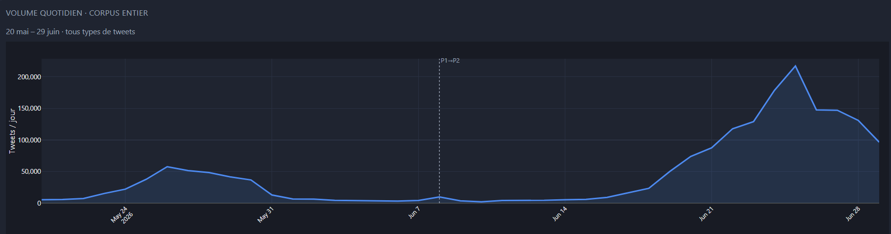
L’analyse du corpus illustre un mouvement en deux temps liés aux 2 pics de canicule de mai-juin. Cette analyse s’attachera à analyser au global les tendances associées à ces deux pics, et les discernera si nécessaire.
Partie 1Paysage communautaire
Depuis la segmentation en communautés Louvain du réseau d’interaction, l’analyse réseau montre un espace de débats liés à la canicule principalement polarisé autour de positionnements socio-politiques antagonistes. Cette structuration n’évolue que peu entre les deux pics de canicule.
Ainsi, une arène se construit autour de différents blocs :
- Un positionné plutôt à gauche (C14), avec des acteurs politiques (Clémence Guette, Manuel Bompard, Ilan Gabet, Thomas Portes), et des médias et journalistes dits “de gauche” (MickaCorreia de médiapart, impactmediafr). A ce bloc se greffe un cluster moins politisé (C10), et davantage axé sur le témoignage ou les publications virales de petits influenceurs, souvent liée à des commentaires sur l’actualité, ou la dénonciation des inégalités associées à la situation météorologique, mais aussi par des médias d’informations: cerfiafr, impactmediafr, alertesinfos, focusmedia_fr. Ce dernier cluster reste assez diffus (le top 20 des comptes ne représentent que 27% des flux entrants)
- Un autre bloc complètement opposé se construit autour de propos anti-institutionnels visant à discréditer l’exécutif, largement autour de propos positionné sur une ligne d’extrême droite, anti-gauche, anti-macron et anti-média souvent assumée (C0). L’essentiel des discours climatosceptiques se retrouvent au sein de ce cluster (cf analyse CARDS). Ici, la thématique de la canicule est surtout un vecteur mobilisé pour créer de la contestation et de la défiance envers les institutions et les élites, la plupart du temps sur une ligne populiste, comme ce que l’on observe sur les thématiques sanitaires. Nous l’appelerons “communauté défiante” pour caractériser ces positionnements observables au-delà de ce corpus pour les comptes principaux qui le constitue.
- Des comptes associatifs comme @verity_france (associations de victimes d’effets secondaires suite aux injections COVID) ou @AssoClimatoReal (association climato-sceptique) qui illustrent une défiance parfois instituée.
- On retrouve également au sein de ce cluster des médias ayant eux aussi diffusés des propos climatosceptiques (CNEWS, Europe1), mais aussi des personnalités politiques comme Sarah Knafo ou Eric Zemmour.
- De nombreux comptes anonymes, déjà identifiés sur d’autres corpus, qui centralisent une défiance anti-institutionnelle autour de phénomènes d’amplifications. C’est au sein de ce cluster que nous retrouvons plus d’une centaine de comptes associés à de l’astroturfing.
- Des comptes créés récemment qui semblent, au regard de l’intensité de leurs publications, de leurs cibles d’interactions, de leur nombre de followers, et de leur discours, conçus à des fins de désinformation climatique : https://x.com/Joe805901184535, https://x.com/DOMTLS, https://x.com/lesamesnoires26
- Un troisième bloc à mi-chemin entre les deux précédents persiste également sur la période (C229). Ce dernier, moins homogène, englobe différents acteurs plutôt centriste/libéraux, essentiellement autour des débats liés à la climatisation, ou à ce que la canicule révèle des dysfonctions publiques. On y retrouve des critiques de l’idéologie “anti-clim”, des débats sur l’énergie, et des positionnements techno-solutionnistes. Ce cluster a pour figure de proue le vulgarisateur @maclesggy qui symbolise bien cet entre deux. Ce cluster reste néanmoins un espace d’affrontement qui rassemble des personnalités n’ayant rien à voir, à l’instar de @marinetondelier et @mariomarechal.
Enfin, à l’interface des trois communautés précédentes, un bloc central renvoie quant à lui aux médias traditionnels, ainsi qu’aux médias et météorologiques. Les expertises scientifiques émergent de ce pôle et font autorité : ils sont à la fois repris par C14 et C229, et à la fois attaqué par C0 notamment pour leur alarmisme climatique (cf analyse CARDS). Symboliquement, le climatologue Serge Zaka, au sein de ce cluster, est à la fois fortement repris et discuté par les différentes communautés C14 et C229 , et discrédités par la communauté défiante C0.Cette communauté est la plus verticale des 6 principales: le top 20 des comptes représente près de 60% des flux entrants.
Ainsi, nous pouvons qualifier les communautés de la sorte (le nom du compte représente le hub principal de la communauté, en terme d’interactions entrantes) :
C14 @fahdoumarconi : Pôle politique/justice sociale, gauche LFI, canicule comme enjeu de droits
C0 @sirafuera : : Pôle contestataire, critique anti-institutionnel, complotisme
C10 @cerfiafr : pôle d’alerte info / vécu social de la climatique
C229 @maclesggy : pôle débat clim /pragmatique
C546: @bfmtv: Pôle météo institutionnelle
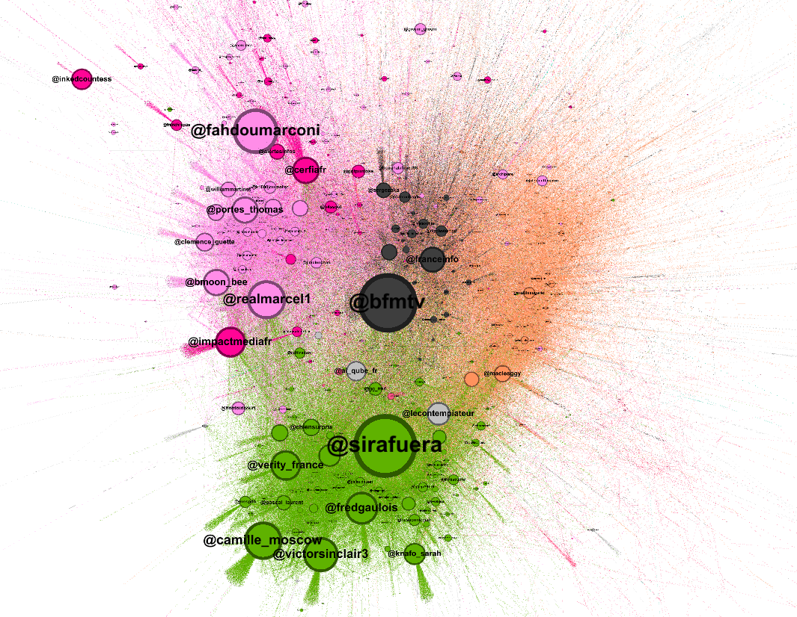
Distribution des communautés par degré pondéré (depuis les interactions émises et reçues)
- C0 @sirafuera23,3 %819 443
- C10 @cerfiafr20,7 %727 369
- C229 @maclesggy19,2 %675 352
- C14 @fahdoumarconi18,3 %642 488
- Autres8,4 %293 399
- C546 @bfmtv8,0 %281 895
- C75 @actufoot_2,1 %72 560
Verticalité des communautés
Le graphique suivant permet d'observer le poids (des interactions entrantes) des comptes principaux au sein de leur cluster, afin de visualiser la verticalité de ces derniers : sont-ils plutôt constitués de quelques comptes très influents (structure verticale) ou d'un large groupe de comptes (structure horizontale) ? Ici, le cluster C546@BFMTV est le plus vertical car il est essentiellement constitué d'une poignée de comptes médiatiques et météorologiques : le top 20 des comptes y représente 58 % des interactions reçues. Les clusters C14 et C0 restent eux aussi très verticaux : le top 5 des comptes recouvre près d'1/5 des interactions reçues. C10 en revanche a une distribution des interactions entrantes bien plus étalée, ce qui témoigne davantage d'une diffusion plurielle, plus horizontale.
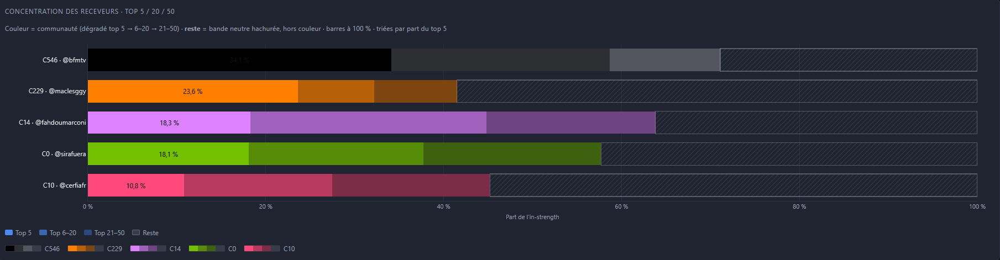
Analyse des interactions intercommunautaires
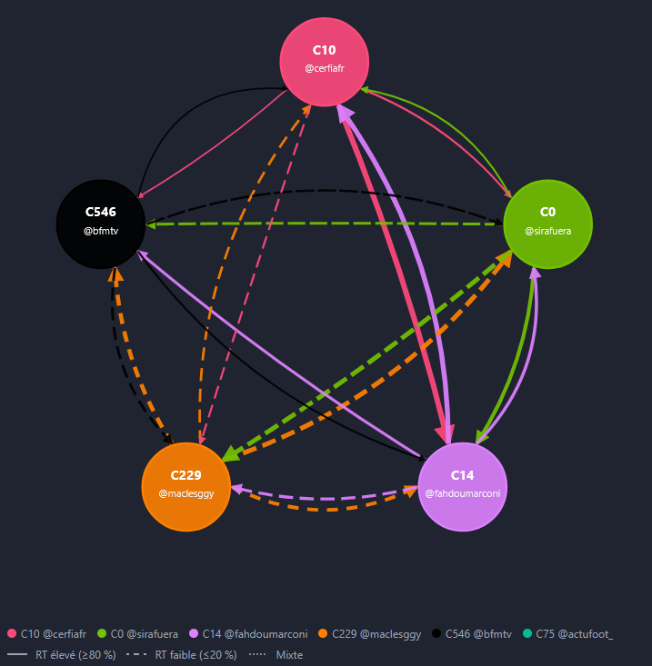
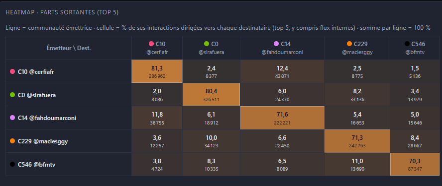
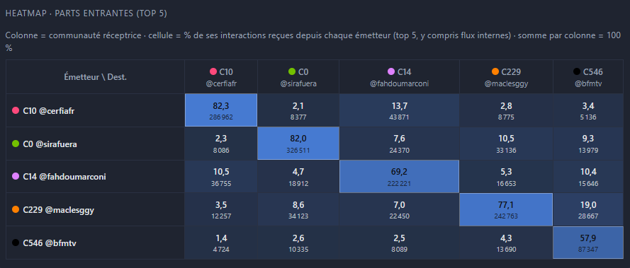
L’analyse des interactions entre communauté permet d’identifier les flux les plus caractéristiques. Dans un premier temps, notons que les communautés C14@fahdoumarconi et C10 @cerfiafr sont largement sujettes à des retweets. La communauté C229@maclessgy est quant à elle davantage sujette à des interactions REPLY et QUOTE, ce qui en fait un espace de débat plutôt qu’un espace de reprise.
- Notons que la communauté C546 liée aux médias traditionnels et aux experts climatiques, est la seule à interagir presque pour moitié avec les autres communautés (toutes les autres intéragissent principalement avec elles-mêmes). Cette communauté a un rôle central puisqu’elle est le pôle d’autorité informationnel du réseau (grand média, et scientifiques spécialisés), ce qui implique qu’elle est prise à partie au regard de ses déclarations : C14 utilise l’actualité pour pointer l’inaction politique au sujet du climat et l’inconsidération des décideurs pour ceux qui souffrent de chaleur tandis que C0 s’en prend aux journalistes pour leur alarmisme, et attaque les climatologues sur leur légitimité. En mai, La prise à partie de Daniel Riolo (C0) par le météorologue Serge Zaka sur ses propos à RMC faisant peu de cas des conséquences de la canicule, cristallise une défiance intercommunautaire entre l’arc C546/C14/C10, et la communauté défiante C0.
Parmi les flux intercommunautaires principaux:
- C10 << >> C14 : orienté principalement sur les conséquences sociales de la canicule
- C229 << >> C0: Les deux communautés partagent une proximité entre certains acteurs, ce qui explique des soutiens de C0 vers C229 mais aussi de C229 vers C0.
Ces configurations préparent la lecture des discours climatosceptiques : la production se concentre dans C0, tandis que les cibles se situent souvent dans ou au contact de C546.
Activités communautaires
On remarque que la communauté la plus active est C10@Cerfia. On peut attribuer ce volume à la part des RT (91%) produits vers un pôle essentiellement liés à des médias internet sensationnalistes (“FLASH”, “ALERTE INFO”, “INSOLITE”) et à une pluralité d’acteurs gravitant autour d’eux qui y réagissent. Le fait que cette communauté se distingue des autres semble justement indiquer qu’elle regroupe une masse d’utilisateur réagissant à un pôle d’actualité sans s’affilier à d’autres discours/acteurs/communautés davantage engagés dans les débats et controverses.
Le cluster défiant C0@sirafuera oscille entre une place de second et de premier. Dans son cas, l’approche des publications est bien plus contestataire, et principalement nourri de sa propre communauté (ainsi que de C229)
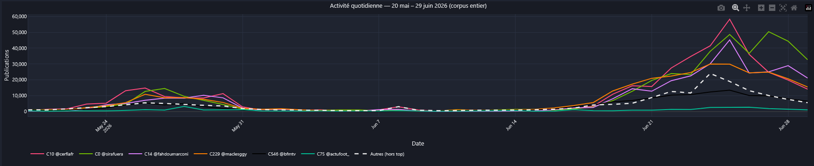
Cette activité est cohérente avec le volume d’utilisateur de chaque communauté (C10 est premier et C0 second). On remarquera une nécessaire suractivité de C0 puisque malgré le fait qu’il ait 30k de moins que C10, il demeure parfois plus actif que ce dernier.
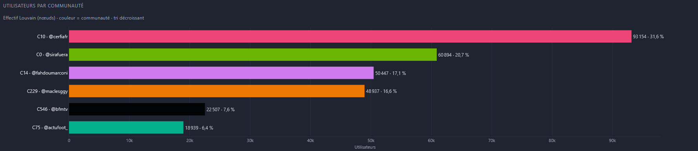
La distribution du nombre d'utilisateurs apporte également une lecture complémentaire à l'activité des communautés. C10@cerfiaFR regroupe près d'1/3 de tous les utilisateurs, suivi par C0@Sirafuera. Le pôle des spécialistes et des médias C546@BFMTV ne représente que 7,6 % de tous les utilisateurs.
Engagements
La communauté C0, depuis laquelle émerge une large majorité des propos climatosceptiques, est aussi celle qui centralise le plus d’engagements en termes de volume, suivi de C10 et C14. Autrement dit, le cluster incluant les sources de vérités scientifiques, tout comme celui lié à un espace de débat ne représentent qu’une part minoritaire des engagements.
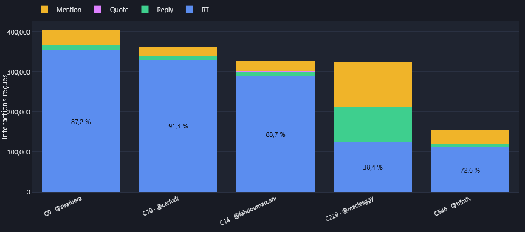
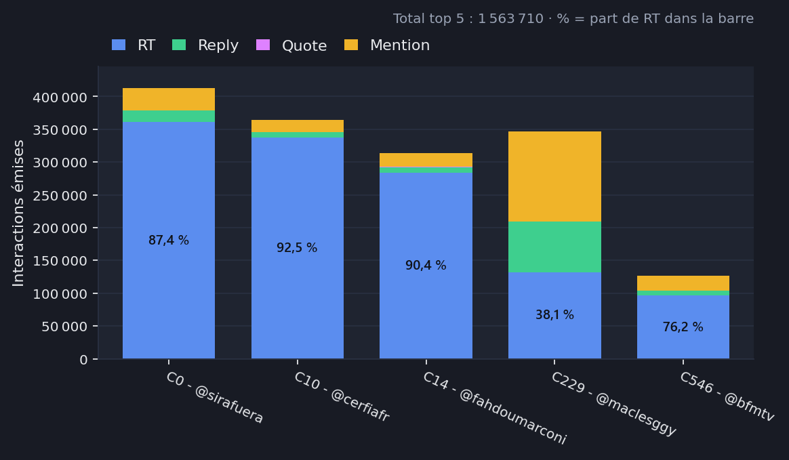
En ce qui concerne l’engagement liés au Likes, c’est principalement la communauté médiatique C10 qui s’impose, suivi de la C229. Relativement au nombre de publication, C10 reçoit 130 likes par publication en moyenne, contre 132 pour C14 et 96 pour C0. La force d’engagement de C0 ne retranscrit donc pas en termes de Like
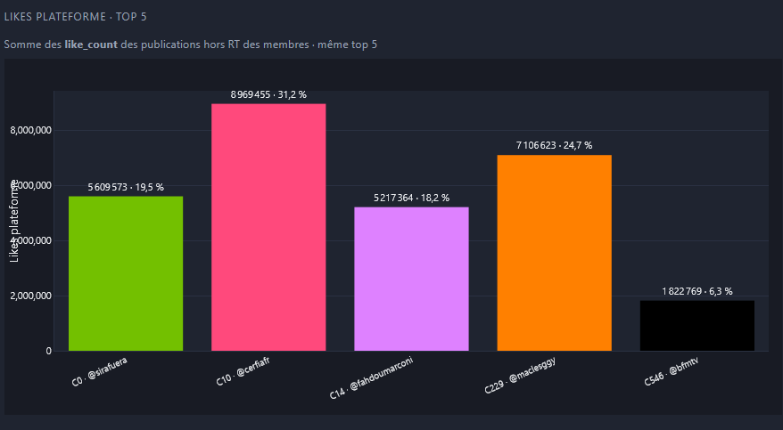
| Communauté | Part émise | Part likes | Ratio |
|---|---|---|---|
| C10 @cerfiafr | 21,4 % | 20,4 % | 1,05 |
| C0 @sirafuera | 24,2 % | 12,8 % | 1,89 |
| C14 @fahdoumarconi | 18,4 % | 10,7 % | 1,72 |
| C546 @bfmtv | 7,4 % | 4,4 % | 1,69 |
| C229 @maclesggy | 20,3 % | 14,8 % | 1,38 |
| C75 @actufoot_ | 2,1 % | 5,9 % | 0,37 |
| Autres | 6,1 % | 31,1 % | 0,20 |
Part émise : poids de la communauté dans les interactions sortantes (retweets, réponses, citations, mentions), en part du total corpus (1 704 498). Part likes : poids dans les likes reçus sur les publications originales, en part du total corpus (40 121 164). Ratio : part émise divisée par part likes. Autour de 1, la présence dans la conversation correspond à l’adhésion reçue. Au-dessus, la communauté émet plus qu’elle n’est likée. En dessous, l’inverse. Les deux colonnes sont des parts de dénominateurs distincts : chacune totalise 100 % (six pôles + Autres).
Le rapport entre les interactions émises et les likes reçus permet de mesurer le rendement d’engagement des activités relationnelles des différents clusters. Un ratio faible traduit une capacité à convertir une activité relationnelle en likes, tandis qu’un ratio fort traduit une asymétrie entre les interactions et l’approbation reçue.
C0 émet 24,2 % des interactions pour 12,8 % des likes (ratio 1,89), soit presque deux unités d’interaction pour une unité de like. C’est le rendement d’adhésion le plus faible des six pôles : beaucoup de travail relationnel (RT, réponses, mentions), peu de conversion en audience. C10 est à l’équilibre (21,4 % émis, 20,4 % de likes, ratio 1,05). C14 et C546 restent dans le même déséquilibre (1,72 et 1,69). C229 est intermédiaire (1,38). C75 @actufoot_ (sport) inverse le rapport : 2,1 % des émissions pour 5,9 % des likes (ratio 0,37). Les six pôles totalisent 93,9 % des interactions émises et 68,9 % des likes.
Persistance des communautés
La communauté “Défiante” est celle qui persiste entre les deux pics: 54.8% de ses users se retrouvent entre p1 et P2. Cette constance, relativement aux autres communautés, témoigne d’un ancrage bien plus établi des acteurs contestataires.
L’analyse sur ce corpus s’est focalisée sur une étude globale des deux périodes (P1 et P2) car les agencements communautaires sont relativement stables, et ne nécessite pas de traiter chaque pic comme un paysage communautaire distinct.
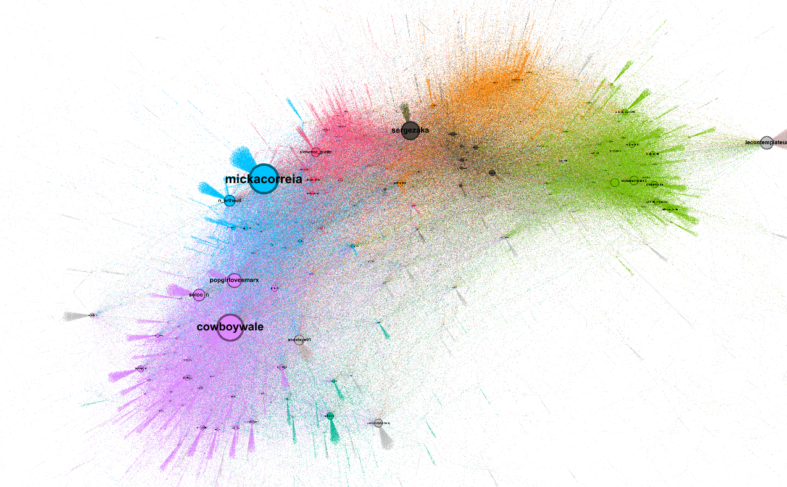
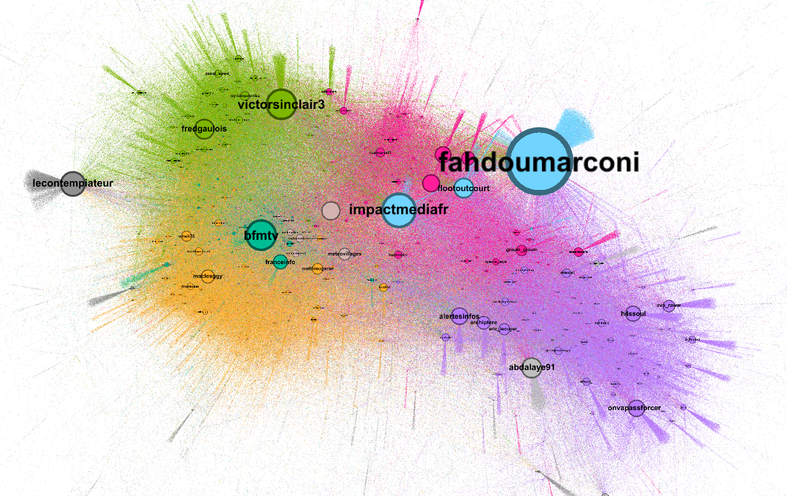
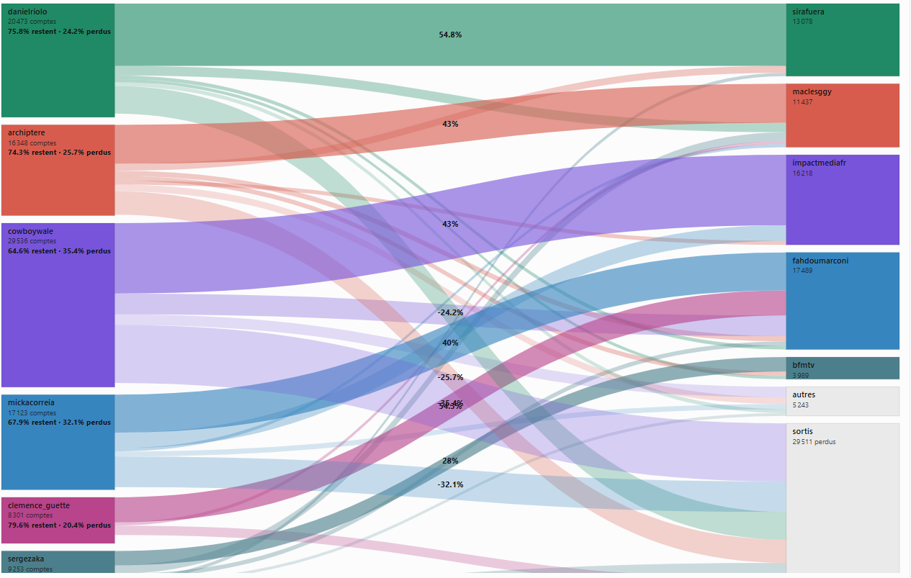
Partie 2Sur la désinformation
Analyse CARDS
Pour repérer les messages climato-sceptiques dans le débat canicule, on s’appuie sur la grille CARDS (Coan et al., 2021) : une taxonomie de référence qui classe les arguments « contrarians » en cinq grandes familles (super-claims), déclinées en sous-arguments. C’est cette grille qui rend lisibles, ensuite, les cibles (qui reçoit ces messages) et la provenance (qui les produit).
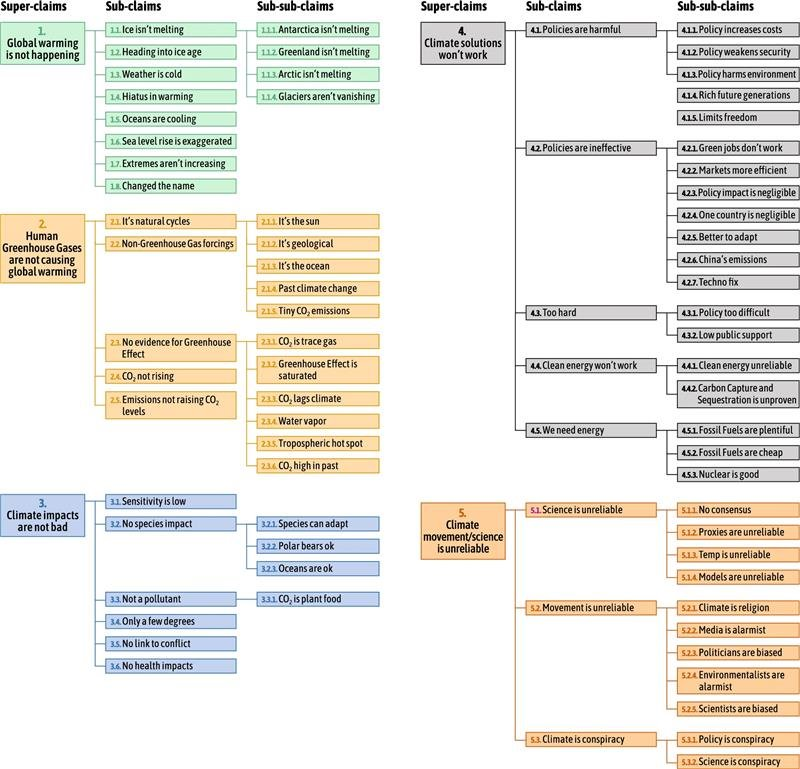
Méthodologie
La classification n’a pas été faite par un modèle entraîné spécifiquement, mais par un grand modèle de langage (Claude Opus 5 depuis IDE Cursor), qui a lu les tweets par lots successifs (fichiers de batch de plusieurs tweets). Pour chaque tweet, le modèle a attribué soit un code CARDS, soit la valeur « None » (pas de contestation), et a rédigé une courte note de lecture justifiant sa décision. Au total, 80 730 tweets ont été traités depuis les 6 communautés Louvain principales du corpus sur la période P1.
La grille CARDS d’origine a été conçue pour des textes longs (articles, blogs). Pour l’adapter à des tweets courts portant sur un épisode météo précis, une règle de décision spécifique a été fixée puis affinée avec l’analyste : un tweet est flagué s’il porte une thèse climato-sceptique explicite au sens de la grille CARDS, dans une approche conservatrice, afin de minimiser les faux positifs. Cette classification est aussi le lieu d’expliciter la difficulté d’établir, dans certains cas, une frontière claire entre ce qui relève du climatosceptique ou non. Voici à titre d’exemple certains choix établis : le refus explicite du terme de « canicule » est assimilé à un code 1.7 (« extreme isn’t increasing »), la dénonciation d’un alarmisme médiatique à un code 5.2.2 (« Climate movement is unreliable > Climate/Science is conspiracy »), les comparaisons historiques relativisantes à un code 2.1.4 (« Human are not causing global warming >> it’s natural cycle >> Past climate change »).
Ce processus a été contrôlé par plusieurs boucles de validation humaine : des cas limites ont été soumis à l’analyste. On a surtout cherché à minimiser au maximum les faux positifs. Limites de cette approche : la lecture d’un LLM n’est pas parfaitement reproductible d’une session à l’autre. Le chiffre de 3 170 publications originales flaguées (3,9 % des tweets classés) doit donc être lu comme un plancher fiable plutôt qu’une mesure exhaustive du scepticisme. L’idée est ici d’appréhender l’appartenance et les flux communautaires liés à ce type de discours.
Trois mesures utiles pour la suite
- Production CARDS : tweet climato-sceptique publié par le compte lui-même (hors RT), sert à lire la provenance (d’où part le discours).
- Relais CARDS : retweet, dans le corpus, d’une des 3 170 publications flaguées.
- CARDS reçu : tweet CARDS adressé à un compte (réponse ou mention), sert à lire les cibles (qui est pris à partie).
De quoi parlent ces tweets ?
Sur P1, la répartition par grande famille montre surtout des attaques de crédibilité et des négations d’événement atypique, ce qui annonce déjà les cibles (médias, experts) traitées juste après.
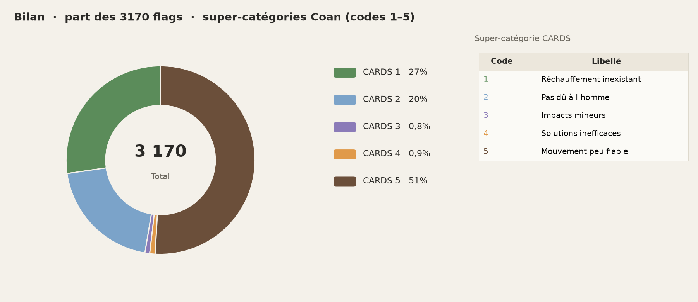
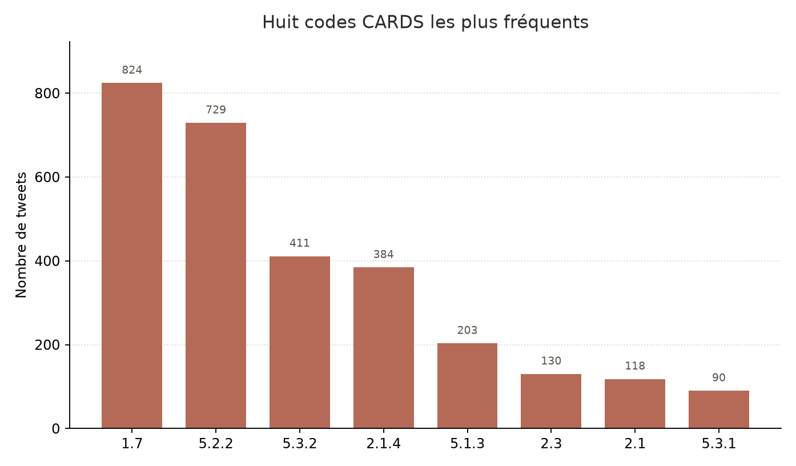
| Code | Libellé | Part | Ce que cela recouvre ici |
|---|---|---|---|
| 1.7 | Les extrêmes n’augmentent pas | 26,0 % | Nier l’exceptionnalité ou le label « canicule » |
| 5.2.2 | Médias alarmistes | 23,0 % | Accusation de sensationnalisme, pivote vers les cibles médiatiques |
| 5.3.2 | Science = complot | 13,0 % | « Escrologie », chemtrails, manipulation |
| 2.1.4 | Climat passé | 12,1 % | Comparaisons 1976, 2003, 1911 pour relativiser |
Trois pivots structurants : (1) remise en cause des médias et des scientifiques (famille 5) ; (2) négation plus ou moins franche d’un événement climatique atypique (famille 1) ; (3) à la marge, négation de la responsabilité humaine (famille 2), parfois remplacée par une lecture « géo-ingénierie / chemtrails » plutôt qu’un déni du forçage anthropique.
Périmètre de cette classification : premier pic de chaleur (20 mai – 7 juin 2026). Les sections suivantes reprennent ces flags pour identifier les comptes les plus ciblés, puis les communautés qui concentrent la production.
Quatre tweets CARDS originaux les plus engagés (thèses explicites)
Premier pic (P1), publications hors retweet. Classement par engagements (J’aime + RT + réponses + citations), après retrait des minimisations (voir encadré). Affichage au format X.
🚨LA BONNE NOUVELLE QUE LES ÉCOLOS NE VEULENT PAS ENTENDRE Depuis les années 80, le Sahara a rétréci de 8 % et verdit à vue d’œil. 50 % des terres végétalisées de la planète sont devenues nettement plus vertes… soit 3 fois la surface des États-Unis! Et le principal https://t.co/9UokZPNKVT
🇮🇹 COL DU STELVIO AUJOURD’HUI. C’est marrant, les merdias de grands chemins ne montrent pas ces images, par contre, dès que le soleil pointe le bout de ses rayons, que les températures montent, c’est canicule, canicule, canicule, sur toutes les chaînes, on va tous mourir, on nous https://t.co/gLJ994prXy
C'est quand même pas de bol. On venait d'échapper (de peu) au Hantavirus Patatras ! Voila que la #canicule nous tombe dessus ! La dernière fois qu'il y a eu autant de catastrophes sur terre en aussi peu de temps, c'était à l'ère des dinosaures. Ou alors on se fout de notre gueule
Depuis des années, des technologies de modification climatique existent officiellement pour influencer certaines conditions météo à petite échelle. Mais dès qu’on évoque leur utilisation à grande échelle, le sujet devient tabou. Et pourtant, voir un dôme de chaleur aussi massif
Les cibles de la désinformation
Les mécanismes de diffusion des publications climatosceptiques illustrent une asymétrie dans leur traitement.
Hors retweet, la production de publications climatosceptiques se distribue à 47,5 % depuis C229 et 39,8 % depuis C0. Les deux clusters se partagent donc l’origine de la plupart de ces publications.
En revanche, C0 monopolise largement les retweets climatosceptiques : retweets inclus, près de 80 % de toutes les publications climatosceptiques proviennent de C0 (contre 12,5 % pour C229) et concernent à 75 % des interactions au sein de C0 (auto-amplification).
Trois types de cibles :
-
Les médias d’information officiels
(CNews, BFMTV, franceinfo, Le Parisien). On attaque le narratif : alarmisme, sensationnalisme, la désignation même de « canicule » concernant l’épisode de chaleur.
- « l’éternel retour de la névrose climatique »
- « au moindre rayon de soleil, ils la jouent catastrophisme »
-
Les experts et comptes météo
(Serge Zaka, Météo Express, Météovilles, Chems Météo), qui se positionnent comme les médias d’information officiels en C546, recevant 20 % des publications non-RT. On attaque le savoir, la légitimité, la méthode : cartes, seuils, calendrier historique. Serge Zaka (53 CARDS reçus) cristallise ce contre-calendrier. L’enjeu n’est pas le volume d’audience, c’est d’interpeller l’autorité scientifique dans le fil.
- « Montrez-nous les cartes que vous faisiez il y a 30 ans »
- « déjà vu en 1922 / 1976 »
- « escrologie »
- Les pairs du camp (GibertiePatrice, AssoClimatoReal, RenFlock…). Une partie des « cibles » sont des relais, pas des adversaires : le discours circule aussi entre climatosceptiques.
Une désinformation agressive
Concernant Zaka, principale cible chez les spécialistes météo, plusieurs arguments lui sont opposés :
- Contre-calendrier historique (déjà vu)
- « en 1922 cetait pas une vague de chaleur du coup ? vu qu'elle n'apparaît pas sur le graphique ? l'indicateur thermique nationale n'existait pas sûrement ? »
L’analyse linguistique révèle la multiplicité de références historiques pour mettre en perspective l’événement climatique, et souvent le remettre en cause : 1922, 1947, 1976, 2000, 2003, 2004, 2019, 2022. L’année 2003 est la plus récurrente et sert de référentiel extrême pour comparer l’épisode de 2026 à l’aune de différents prismes : relativiser l’intensité, souligner que le pays n’a pas tiré les leçons depuis, ou objectiver le dépassement de cette borne. Plus de 80 % des utilisations de références historiques proviennent du cluster C546@BFMTV.
- Banalisation du label (ce n’est pas une canicule)
- « Pour moi la canicule la plus marquante était celle de 2003. Or le petit épisode que mai 2026 n'a strictement rien à voir. »
- Détournement des cartes (dénonciation d’alarmisme, de signaux manipulateurs)
- « Vous ne faites que des tweets alarmistes et des cartes tout en rouge pour faire peur ! […] C'est moins putaclic hein ? »
- « vous arrivez avec vos cartes plus rouges, elles n'ont plus aucun sens avec la réalité. Vous faites de la désinformation... »
- Invalidations des records
- « Toujours cette histoire de station de plus de 50 ans. […] stations […] enclavées dans les îlots de chaleur urbain »
- « Pourquoi les records de chaleur viennent-ils de stations météo dont l'emplacement est un aéroport ? »
- Attaque
- « gourou apocalyptique Dr. Serge Zaka […] menteur pathologique et marchand de peur »
- « Quelle arnaque ce mec […] sortir un post alarmiste dès qu'il y'a une monté de chaleur […] Combien tu gagné pour faire ça ? »
L’analyse linguistique met en évidence une dimension fortement stigmatisante de ces discours. Les attaques visant les acteurs de la cause climatique prennent fréquemment la forme de désignations péjoratives, notamment de néologismes ou des termes renvoyant à la tromperie, à la pathologie ou à l’autoritarisme. Ces procédés contribuent à disqualifier les acteurs et les discours associés à la cause climatique, en les inscrivant dans des cadres interprétatifs qui mettent en cause leur rationalité, leur intégrité ou leur légitimité.
À partir de l’extraction des cofixations associées à la racine climato-, des télescopages lexicaux et des analogies mobilisées pour désigner les mouvements ou acteurs de la défense du climat, 1 697 occurrences ont été identifiées et regroupées en quatre registres de stigmatisation :
-
Tromperie et arnaque
Le registre de la tromperie et de l’arnaque constitue le registre le plus représenté, avec 34,7 % des occurrences. Il se structure principalement autour du terme escrologie et de ses variantes, mobilisées par 536 comptes distincts. Ces désignations construisent l’écologie comme une entreprise de tromperie, et déplacent ainsi la contestation du terrain de la validité scientifique vers celui de l’intégrité des acteurs qui portent ces discours.
- escrologie / escrologiste / escrolo / escrologue, et variantes
-
Registre psychologisant et apocalyptique
Le registre psychologisant et apocalyptique vise quant à lui la rationalité des acteurs et des discours climatiques. Il s’organise notamment autour de qualificatifs tels que climato-apocalyptique, qui associent la prise de position en faveur de l’action climatique à des formes d’excès, d’irrationalité ou de catastrophisme.
- climato-apocalyptique(s) (310), climato-alarmiste(s) (130), climato-anxieux (34), climato-hystérique(s) (17), climato-condriaque(s) (9), climato-névrosé(s) (8), climato-dépressif(s) (7), climato-gaga(s) (3)
-
Insulte et disqualification directe
Le registre de l’insulte et de la disqualification directe constitue un autre mode récurrent d’attaque. Le qualificatif débile représente à lui seul 68 % des occurrences de cette catégorie, témoignant d’une stratégie de disqualification qui ne porte plus sur les arguments avancés, mais directement sur les capacités intellectuelles ou la rationalité des personnes visées.
- débile, crétin, cinglé, timbré, mongol, teubé
-
Politisation autoritaire
Enfin, le registre de la politisation autoritaire associe la cause écologique à des formes de contrainte, de contrôle ou d’autoritarisme. Le terme réchauffisme participe notamment à cette construction discursive en présentant la défense de la thèse du réchauffement climatique comme une posture idéologique ou politique plutôt que comme une position fondée sur un consensus scientifique.
- réchauffiste(s) (191), khmers verts (119), zécolo(s) (46), ayatollahs de [climat / décroissance / vert] (44), écolo-bobo(s) (37), secte verte / secte écolo (7), écolo-terroriste(s) / écolo-fasciste(s), climatodictateur(s)
En cohérence avec la domination de la super-catégorie CARDS 5 (« Les mouvements pour le climat ne sont pas fiables »), les résultats montrent que ces discours ne se limitent pas à contester l’existence ou l’intensité d’un phénomène météorologique particulier. Ils opèrent également, et souvent prioritairement, une disqualification des acteurs, des institutions et des savoirs associés à la cause climatique. Trois mécanismes discursifs principaux peuvent ainsi être distingués : la mise en doute de l’intégrité des acteurs, la disqualification de leur rationalité et leur construction comme agents idéologiques ou autoritaires.
Climato-stigmatisationclimato-apocalyptique(s) (310), climato-alarmiste(s) (130), , climato-terroriste(s) / climato-terrorisme (15), climato-condriaque(s) (9), climato-fasciste(s) (8), climato-machin(s) (8), climato-névrosé(s) (8), climato-brailleur(s), climato-bigot (1), climato-facheux (1), climatodictateur(s), climato-anxieux / anxieux (34), climato-hystérique(s) / hystérisme (17), climato-dépressif(s) (7), climato-complotiste(s), climato-findumonde (3),climato-gaga(s) (3),
L’écologie comme une dictatureréchauffiste(s) (191),khmers verts (119), zécolo(s) (46), secte verte / secte écolo / secte du climat (7), écolo-terroriste(s) / écolo-fasciste(s) (4)(3), intégriste(s) (climat/vert) (3), ayatollahs de [climat / décroissance / vert] (44), écolo-bobo(s) (37),
Insultes et pathologisationcrétin / débile / cinglé / timbré / mongol / teubé (36),
L’écologie comme une arnaqueescrologie / escrologiste / escrolo/ escrologue, et variantes (1318)
Sur les 2269 tweets utilisant ce procédé de désignations infamantes : 34% sont issus de tweets originaux, 39% sont des retweets, 23% des replies et 3.5% des quotes.
Les publications originales (hors RT) reçoivent au total 26688 likes (19 en moyenne), 3049 replies, 364 quotes, et 8223 retweets (6 en moyenne)
Là aussi, ces qualifications proviennent essentiellement du cluster C0.
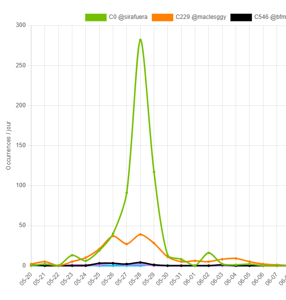
D’où proviennent les discours climatosceptiques ?
L’analyse CARDS montre que l’essentiel des auteurs de discours climatosceptiques se situe dans ce pôle défiant, caractérisé par la présence de comptes antivax, antisystème, rattachés aux mouvances d’extrême droite, ce qui était déjà observé depuis quelques années déjà.
Ce phénomène de désinformation n’est pas proprement endogène à la plateforme : rappelons la place de médias traditionnel dans cette désinformation, à l’instar du “Ce n’est pas une chaleur exceptionnel” de Pascal Praud. L’observatoire des médias sur l’écologie rapporte 673 fakes news climatique en 2025 à la TV et radio française, avec en tête de pelon: Sud Radio, Cnews, RMC, Europe.
Quels comptes reçoivent ou produisent le plus de CARDS ?
Les cibles se regroupent en trois types : médias (BFMTV, franceinfo, CNews…), experts / météo (Serge Zaka et comptes spécialisés), et pairs climatosceptiques qui s’entretiennent entre eux. Deux lectures sur P1 : les comptes les plus ciblés, et les comptes qui produisent le plus de publications classées CARDS. Les lignes en beige signalent un double rôle (cible qui produit, ou producteur aussi ciblé).
| # | Compte | Communauté Louvain | CARDS reçus | Interactions | Taux | Produit CARDS | Exemples |
|---|---|---|---|---|---|---|---|
| 1 | @cnews | C0 | 169 | 474 | 35,7 % | 3/61 | 3 exemples reçus
|
| 2 | @bfmtv | C546 | 132 | 1 045 | 12,6 % | 0/235 | 3 exemples reçus
|
| 3 | @franceinfo | C546 | 108 | 748 | 14,4 % | 0/131 | 3 exemples reçus
|
| 4 | @RenFlock080274 | C0 | 67 | 260 | 25,8 % | 22/36 | 3 exemples reçus
|
| 5 | @GibertiePatrice | C0 | 54 | 80 | 67,5 % | 18/19 | 3 exemples reçus
|
| 6 | @SergeZaka | C546 | 53 | 350 | 15,1 % | 0/46 | 3 exemples reçus
|
| 7 | @danielriolo | C0 | 52 | 461 | 11,3 % | 0/0 | 3 exemples reçus
|
| 8 | @le_Parisien | C546 | 47 | 385 | 12,2 % | 0/77 | 3 exemples reçus
|
| 9 | @Europe1 | C0 | 38 | 185 | 20,5 % | 1/65 | 3 exemples reçus
|
| 10 | @MeteoExpress | C546 | 38 | 143 | 26,6 % | 0/89 | 3 exemples reçus
|
| 11 | @Meteovilles | C546 | 37 | 185 | 20,0 % | 0/67 | 3 exemples reçus
|
| 12 | @Gdams70 | C0 | 35 | 184 | 19,0 % | 0/0 | 3 exemples reçus
|
| 13 | @beaudonnet | C546 | 35 | 63 | 55,6 % | 0/1 | 3 exemples reçus
|
| 14 | @AssoClimatoReal | C0 | 33 | 130 | 25,4 % | 9/12 | 3 exemples reçus
|
| 15 | @ChemsMeteo | C229 | 29 | 198 | 14,6 % | 0/29 | 3 exemples reçus
|
| 16 | @VictorSinclair3 | C0 | 28 | 117 | 23,9 % | 7/10 | 3 exemples reçus
|
| 17 | @camille_moscow | C0 | 28 | 88 | 31,8 % | 3/5 | 3 exemples reçus
|
| 18 | @CerfiaFR | C10 | 26 | 377 | 6,9 % | 0/6 | 3 exemples reçus
|
| 19 | @20Minutes | C546 | 24 | 135 | 17,8 % | 0/33 | 3 exemples reçus
|
| 20 | @GeoTales_ | C229 | 24 | 98 | 24,5 % | 0/5 | 3 exemples reçus
|
Communauté Louvain : partition du corpus entier (20 mai – 29 juin 2026), pas celle de P1 seul. Lignes teintées : cibles qui ont aussi produit au moins un tweet CARDS (colonne « Produit CARDS » = flags / volume hors RT du compte). Les exemples illustrent le ciblage ; pour les comptes climato-sceptiques, une partie des CARDS reçus vient de pairs du même camp.
| # | Compte | Communauté Louvain | CARDS produits | Publications hors RT | Taux | Reçu CARDS | Exemples |
|---|---|---|---|---|---|---|---|
| 1 | @de_jpv91383 | C229 | 44 | 86 | 51,2 % | 1/26 | 3 exemples produits
|
| 2 | @ulysse2452 | C229 | 31 | 67 | 46,3 % | 4/18 | 3 exemples produits
|
| 3 | @Joe805901184535 | C229 | 31 | 48 | 64,6 % | 1/12 | 3 exemples produits
|
| 4 | @SoleilLibreFR | C0 | 31 | 31 | 100,0 % | 4/12 | 3 exemples produits
|
| 5 | @Perceval_Malin | C229 | 29 | 33 | 87,9 % | 0/6 | 3 exemples produits
|
| 6 | @5gLinky | C0 | 24 | 24 | 100,0 % | 1/1 | 3 exemples produits
|
| 7 | @MikaClaFr | C229 | 23 | 50 | 46,0 % | 0/3 | 3 exemples produits
|
| 8 | @paolo_el_pulpo | C229 | 22 | 50 | 44,0 % | 0/11 | 3 exemples produits
|
| 9 | @95Ticonderoga | C229 | 22 | 33 | 66,7 % | 0/3 | 3 exemples produits
|
| 10 | @EricDeSilvestr1 | C0 | 20 | 28 | 71,4 % | 5/58 | 3 exemples produits
|
| 11 | @scarine7 | C229 | 19 | 21 | 90,5 % | 0/14 | 3 exemples produits
|
| 12 | @AlainPa1 | C0 | 19 | 19 | 100,0 % | 0/0 | 3 exemples produits
|
| 13 | @RenFlock080274 | C0 | 17 | 36 | 47,2 % | 45/260 | 3 exemples produits
|
| 14 | @Antiescrolo | C229 | 16 | 44 | 36,4 % | 0/6 | 3 exemples produits
|
| 15 | @VandenbergheAn6 | C229 | 15 | 35 | 42,9 % | 0/4 | 3 exemples produits
|
| 16 | @GibertiePatrice | C0 | 15 | 19 | 78,9 % | 39/80 | 3 exemples produits
|
| 17 | @Abribus1er | C0 | 15 | 16 | 93,8 % | 0/0 | 3 exemples produits
|
| 18 | @JhonCo67 | C229 | 14 | 15 | 93,3 % | 0/9 | 3 exemples produits
|
| 19 | @LuckyLuciano957 | C0 | 13 | 23 | 56,5 % | 1/2 | 3 exemples produits
|
| 20 | @Sylvinfo | C229 | 13 | 23 | 56,5 % | 0/0 | 3 exemples produits
|
Classement sur les 3 170 publications CARDS hors RT de P1. Taux = CARDS produits / publications hors RT du compte. Lignes teintées : producteurs qui reçoivent aussi des CARDS. Exemples = publications CARDS de ce compte.
Parmi les cibles principales, on retrouve différents médias d’information (BFMTV, franceinfo), y compris parmi ceux qui ont aussi relayé des publications classées CARDS, comme CNEWS ou Europe 1. Les experts du climat, climatologues et comptes de météorologie, sont aussi nettement visés.
Enfin, de nombreux comptes climato-sceptiques reçoivent des interactions et servent de support à d’autres comptes pairs, à l’image de @GibertiePatrice, dont le blog est diffusé 84 fois pour servir de support argumentatif.
Partie 3 Détection d’amplifications / de coordination inauthentique
Pour aller plus loin dans l’analyse de signaux faibles liés à une manipulation de l’information, nous appliquons la méthode de Nizzoli et al. (ICWSM 2021) au corpus canicule, en calant le vivier sur le top 0,5 % des comptes qui retweetent. On mesure la ressemblance de leurs portefeuilles de retweets (cosinus TF-IDF), puis on ne garde que les liens anormalement forts des deux côtés (Serrano ET, α = 0,05). La liste retenue est la composante géante de ce backbone : 1 316 comptes, classés par force relative (somme des cosinus / maximum du géant).
Méthode pas à pas
Deux lectures en parallèle : à gauche le sens de la démarche ; à droite les paramètres et choix techniques. Référence : Nizzoli et al., ICWSM 2021 (élections britanniques) : superspreaders, backbone Serrano, similarité de cosinus. Ici le vivier est le top 0,5 % (le papier utilisait 1 %).
- Le terrain. On part de tout le débat canicule sur X, du 20 mai au 29 juin : beaucoup de messages, beaucoup de comptes, dont une grande part n’apparaît qu’une fois.
- Les plus gros relais. On ne cherche pas des ressemblances parmi tous les comptes. On se concentre sur le 0,5 % qui retweete le plus (1 353 comptes, au moins 82 retweets dans le corpus).
- Même portefeuille de retweets. Deux comptes se ressemblent s’ils retweetent les mêmes messages. Chaque compte est un vecteur TF-IDF de ces tweets parents ; la ressemblance est un cosinus.
- Le resserrement. On ne garde un lien que s’il est « surprenant » pour les deux comptes (Serrano ET, α = 0,05) : 29 360 arêtes.
- La composante géante. Presque tous les comptes reliés forment un seul bloc : 1 316 (1 323 ont au moins une arête, 7 comptes dans de petites composantes). C’est la liste. Elle est triée par force relative dans ce géant.
- Corpus FULL. Fusion BASE+P3, dédupliquée, fenêtre UTC 20 mai → 29 juin 2026 : ≈ 1,84 M tweets, ≈ 372 504 comptes.
- Top 0,5 % des retweeteurs. 270 634 comptes ont au moins une action RT. k = round(0,005 × n) = 1 353. Plancher observé : 82 actions RT. Couche unique : RTW (retweets).
- TF-IDF × cosinus. Matrice compte × tweet parent, TF = nombre de RT de cet objet, IDF lissé. Cosinus de toutes les paires à similarité > 0.
- Serrano ET, α = 0,05. Disparité de Serrano, règle ET (p_u < α et p_v < α). 29 360 arêtes. Force brute = somme des cosinus incidents.
- Géant, puis force relative. Composantes connexes : géant 1 316, 7 comptes dans de petites composantes. Force rel. = force / max(force) du géant (0–1). Colonne Louvain = paysage du corpus entier (distinct de Nizzoli).
La liste Nizzoli
Comment lit-on cette liste ? Ce n’est pas un noyau unique d’inauthenticité. C’est le paysage des plus gros relais dont les portefeuilles de retweets sont trop similaires pour n’être que du hasard, une fois le backbone Serrano appliqué. Y figurent à la fois des relais d’info (C10), des relais LFI (C14), des relais météo (C546), le pôle de débat (C229) et le pôle climato-sceptique (C0).
La liste est triée par force relative dans le géant (1 = le compte le plus connecté par cosinus). Les premiers rangs sont surtout C14 et C10 : leurs portefeuilles sont plus denses entre eux. C0 est le plus grand pôle (390 comptes) mais pas le plus « fort » au sens du cosinus. Ce n’est pas un score d’inauthenticité. Le filtre Louvain porte sur le graphique CARDS et le tableau.
Protocole Nizzoli (ICWSM 2021), calé ici sur le top 0,5 % des comptes qui retweetent (1 353, au moins 82 actions RT), vecteur TF-IDF des tweets retweetés, cosinus, backbone Serrano ET α = 0,05 (29 360 arêtes). Liste = composante géante (1 316 comptes ; 1 323 ont au moins une arête). Tri par force relative (somme des cosinus Serrano / maximum du géant). Ce n’est pas un score d’inauthenticité. Le filtre Louvain s’applique au graphique CARDS et au tableau. Colonne CARDS : auteur d’au moins une des 3 170 publications originales flaguées, ou retweet d’une de ces publications. Colonnes TF-IDF : fréquence du terme chez le compte, pondérée par sa rareté parmi les 1 316 (un document = un compte).
| # | Compte | CARDS | Bio | Louvain | Rang | Force rel. | Force | Pubs | RT | Création | Publication / jours | Publications / jour actif | Top 4 cibles | Top 5 hashtags | Hashtags TF-IDF | Mots TF-IDF |
|---|---|---|---|---|---|---|---|---|---|---|---|---|---|---|---|---|
| 1 | @__Nao97 | — | — | C10 | 1/1316 | 1,0 | 39 | 196 | 196 | — | 4.78 | 8.52 | @popgirlovesmarx (3) · @AlertesInfos (3) · @R0SUBY (3) · @KarineMDonelle (2) | #canicule (3), #orages (1), #rennes (1), #attends20h (1) | #attends20h (0.75) · #rennes (0.58) · #canicule (0.54) · #orages (0.53) | canicule (0.05) · chaleur (0.04) · clim (0.03) · température (0.01) · genre (0.01) |
| 2 | @beandbefree | — | « You can cut all the flowers but you cannot keep Spring from coming ». Pablo Neruda | C14 | 2/1316 | 0,88 | 34 | 256 | 254 | 2020-03-25 | 6.24 | 10.24 | @mbompard (11) · @K1000Journalist (11) · @L_insoumission (10) · @jdicajdisrien (10) | #canicule (8), #macron (2), #aec (2), #lfi (2), #melenchon2027 (2) | #canicule (0.34) · #unjourunemesure (0.31) · #aec (0.31) · #melenchon2027 (0.31) · #macrondemission (0.30) | canicule (0.07) · chaleur (0.02) · pleine (0.01) · gouvernement (0.01) · france (0.01) |
| 3 | @1jouroulautre | — | Only politic here ! France Insoumise co-animatrice de GA à Dreux depuis 2017 | C14 | 3/1316 | 0,86 | 33 | 206 | 202 | 2017-01-18 | 5.02 | 8.96 | @realmarcel1 (30) · @L_insoumission (10) · @mbompard (10) · @Clemence_Guette (10) | #canicule (13), #aec (3), #lfi (3), #melenchon2027 (3), #unjourunemesure (3) | #canicule (0.36) · #unjourunemesure (0.29) · #aec (0.29) · #melenchon2027 (0.29) · #lfi (0.26) | canicule (0.07) · chaleur (0.02) · gouvernement (0.02) · clim (0.01) · pleine (0.01) |
| 4 | @Nlevilae | — | — | C10 | 4/1316 | 0,82 | 32 | 168 | 168 | — | 4.1 | 7.64 | @R0SUBY (5) · @JFaerber (2) · @eric_lecuyer_ (2) · @MickaCorreia (2) | #canicule (1), #orages (1), #rennes (1) | #rennes (1.15) · #orages (1.05) · #canicule (0.36) | canicule (0.06) · chaleur (0.03) · clim (0.02) · température (0.01) · pcq (0.01) |
| 5 | @Villioum158622 | — | — | C14 | 5/1316 | 0,82 | 32 | 276 | 276 | 2026-03-12 | 6.73 | 8.62 | @realmarcel1 (24) · @jdicajdisrien (18) · @L_insoumission (11) · @K1000Journalist (11) | #canicule (7), #rn (1), #vigilancerouge (1), #ecologie (1), #france (1) | #canicule (0.44) · #psg (0.32) · #chronique (0.30) · #actu (0.29) · #rn (0.28) | canicule (0.07) · chaleur (0.02) · gouvernement (0.01) · pleine (0.01) · clim (0.01) |
| 6 | @BEscoubes | — | 🐢✌️ | C14 | 6/1316 | 0,81 | 32 | 454 | 454 | 2019-05-08 | 11.07 | 14.65 | @realmarcel1 (20) · @mbompard (14) · @L_insoumission (14) · @FiAssemblee (10) | #canicule (21), #france (3), #nova (1), #pigasse (1), #gaza (1) | #canicule (0.44) · #france (0.15) · #nova (0.12) · #pigasse (0.12) · #hopital (0.12) | canicule (0.07) · chaleur (0.02) · pleine (0.01) · clim (0.01) · gouvernement (0.01) |
| 7 | @GretaCollege | — | Parce que l humanité a toutes les couleurs, toutes les langues, toutes les cultures... Avec LFI! | C14 | 7/1316 | 0,81 | 31 | 224 | 224 | 2020-10-03 | 5.46 | 8.96 | @jdicajdisrien (11) · @mbompard (9) · @realmarcel1 (9) · @MickaCorreia (6) | #canicule (6), #macron (1), #paris (1), #france (1), #hopital (1) | #canicule (0.43) · #hopital (0.42) · #followbackinsoumis (0.28) · #unjourunemesure (0.26) · #aec (0.25) | canicule (0.07) · chaleur (0.02) · gouvernement (0.01) · clim (0.01) · pleine (0.01) |
| 8 | @agathezeutime | — | — | C14 | 8/1316 | 0,8 | 31 | 152 | 152 | — | 3.71 | 6.91 | @mbompard (10) · @Clemence_Guette (9) · @jdicajdisrien (8) · @SergeZaka (7) | #canicule (5), #paris (1), #paysdecons (1), #barthès (1), #quotidien (1) | #canicule (0.49) · #réchauffement (0.38) · #paysdecons (0.35) · #barthès (0.34) · #quotidien (0.34) | canicule (0.07) · chaleur (0.02) · yann (0.02) · barthès (0.01) · pleine (0.01) |
| 9 | @lamu4tw | — | Si noire que soit la nuit, la Lumière jamais ne s'éteint. Et si petite que soit la braise, c'est elle qui remet le feu à la plaine 🔻✊ | C14 | 9/1316 | 0,79 | 31 | 208 | 197 | — | 5.07 | 8.32 | @L_insoumission (10) · @jdicajdisrien (8) · @mbompard (8) · @Clemence_Guette (7) | #canicule (9), #france (2), #aec (1), #lfi (1), #melenchon2027 (1) | #canicule (0.40) · #cani (0.22) · #france (0.21) · #toulouse (0.20) · #thisisfine (0.19) | canicule (0.07) · chaleur (0.02) · gouvernement (0.01) · clim (0.01) · face (0.01) |
| 10 | @Aure_dante | — | — | C14 | 10/1316 | 0,78 | 30 | 149 | 149 | 2021-11-27 | 3.63 | 6.21 | @JRenardiere (12) · @realmarcel1 (10) · @mbompard (9) · @Clemence_Guette (7) | #canicule (4), #rn (1), #trump (1), #paris (1), #paysdecons (1) | #rn (0.43) · #trump (0.40) · #canicule (0.39) · #paysdecons (0.35) · #barthès (0.34) | canicule (0.07) · chaleur (0.02) · pleine (0.01) · luc (0.01) · gouvernement (0.01) |
| 11 | @Anonymdzina | — | — | C14 | 11/1316 | 0,78 | 30 | 292 | 292 | 2022-04-21 | 7.12 | 10.43 | @realmarcel1 (23) · @mbompard (13) · @jdicajdisrien (11) · @PatNice31 (9) | #canicule (20), #sdf (3), #france (3), #sansabris (3), #paris (2) | #canicule (0.39) · #sdf (0.25) · #sansabris (0.23) · #france (0.14) · #unjourunemesure (0.14) | canicule (0.07) · chaleur (0.02) · clim (0.01) · gouvernement (0.01) · pleine (0.01) |
| 12 | @hommeebene1998 | — | Eh ! eh! Bomba, hen ! hen ! Canga bafio té Canga moune dé lé Canga do ki la Canga li apatride... | C14 | 12/1316 | 0,77 | 30 | 378 | 368 | — | 9.22 | 10.8 | @jdicajdisrien (18) · @realmarcel1 (17) · @mbompard (12) · @K1000Journalist (11) | #canicule (13), #paris (3), #aec (2), #lfi (2), #melenchon2027 (2) | #canicule (0.41) · #unjourunemesure (0.23) · #aec (0.22) · #melenchon2027 (0.22) · #barthès (0.22) | canicule (0.06) · chaleur (0.02) · clim (0.01) · pleine (0.01) · france (0.01) |
| 13 | @encorenico_ | — | 24 | C10 | 13/1316 | 0,77 | 30 | 314 | 302 | 2023-05-06 | 7.66 | 12.08 | @CerfiaFR (9) · @R0SUBY (6) · @NoviaNewsGroup (5) · @lachainemeteo (5) | #canicule (9), #paris (2), #orages (2), #vigilancerouge (1), #attends20h (1) | #canicule (0.44) · #orages (0.29) · #cauchemar (0.28) · #rouge (0.22) · #attends20h (0.21) | canicule (0.05) · chaleur (0.04) · clim (0.02) · tellement (0.01) · france (0.01) |
| 14 | @solulu02 | — | — | C10 | 14/1316 | 0,77 | 30 | 168 | 168 | — | 4.1 | 7.3 | @popgirlovesmarx (3) · @JFaerber (2) · @bi1vulartiste (2) · @R0SUBY (2) | #canicule (2), #attends20h (1) | #attends20h (1.51) · #canicule (0.72) | canicule (0.05) · clim (0.04) · chaleur (0.03) · rer (0.01) · pleine (0.01) |
| 15 | @LeDinoBleu | — | — | C14 | 15/1316 | 0,77 | 30 | 131 | 117 | — | 3.2 | 6.89 | @realmarcel1 (6) · @jdicajdisrien (5) · @Clemence_Guette (5) · @mbompard (4) | #canicule (5), #aec (2), #lfi (2), #melenchon2027 (2), #unjourunemesure (2) | #unjourunemesure (0.45) · #aec (0.45) · #melenchon2027 (0.45) · #lfi (0.40) · #canicule (0.32) | canicule (0.07) · chaleur (0.02) · pleine (0.01) · clim (0.01) · gouvernement (0.01) |
| 16 | @caimflo | — | — | C10 | 16/1316 | 0,76 | 30 | 114 | 114 | 2017-12-21 | 2.78 | 5.7 | @R0SUBY (3) · @popgirlovesmarx (3) · @asopp_D (2) · @chaay95 (1) | #canicule (1) | #canicule (1.07) | canicule (0.06) · chaleur (0.04) · clim (0.03) · tellement (0.01) · rer (0.01) |
| 17 | @Litcheute8lfc | — | — | C10 | 17/1316 | 0,75 | 29 | 173 | 173 | 2017-09-01 | 4.22 | 10.18 | @CerfiaFR (4) · @popgirlovesmarx (3) · @strickzii (2) · @JFaerber (2) | #canicule (4), #orages (1), #rennes (1), #attends20h (1) | #attends20h (0.65) · #canicule (0.61) · #rennes (0.49) · #orages (0.45) | canicule (0.06) · chaleur (0.03) · clim (0.03) · tellement (0.01) · température (0.01) |
| 18 | @ManiLeJi | — | — | C14 | 18/1316 | 0,75 | 29 | 132 | 132 | 2022-03-04 | 3.22 | 5.74 | @realmarcel1 (13) · @Clemence_Guette (10) · @mbompard (9) · @L_insoumission (5) | #barthès (1), #canicule (1), #quotidien (1), #bardepalla (1) | #bardepalla (1.60) · #barthès (0.94) · #quotidien (0.92) · #canicule (0.27) | canicule (0.06) · chaleur (0.02) · clim (0.01) · pleine (0.01) · yann (0.01) |
| 19 | @a_gauche_toute | — | — | C14 | 19/1316 | 0,75 | 29 | 120 | 120 | — | 2.93 | 5.22 | @K1000Journalist (6) · @mbompard (6) · @jdicajdisrien (5) · @PaulVannierFI (4) | #canicule (3), #aec (2), #lfi (2), #melenchon2027 (2), #unjourunemesure (2) | #unjourunemesure (0.55) · #aec (0.54) · #melenchon2027 (0.54) · #lfi (0.49) · #elevage (0.33) | canicule (0.07) · chaleur (0.02) · clim (0.01) · pleine (0.01) · gouvernement (0.01) |
| 20 | @Fattoung | — | — | C10 | 20/1316 | 0,74 | 29 | 104 | 104 | — | 2.54 | 5.78 | @CerfiaFR (3) · @popgirlovesmarx (3) · @FrenchRapUS (2) · @Desiiah (1) | #canicule (2) | #canicule (1.07) | canicule (0.05) · chaleur (0.04) · clim (0.03) · tellement (0.01) · appétit (0.01) |
| 21 | @Miry_ri | — | — | C10 | 21/1316 | 0,74 | 29 | 171 | 165 | 2025-02-19 | 4.17 | 7.43 | @AlertesInfos (4) · @archiptere (3) · @CerfiaFR (3) · @popgirlovesmarx (2) | #canicule (1), #attends20h (1) | #attends20h (2.26) · #canicule (0.54) | canicule (0.05) · chaleur (0.03) · clim (0.03) · pleine (0.01) · peux (0.01) |
| 22 | @nicoco_911 | — | — | C10 | 22/1316 | 0,73 | 28 | 108 | 108 | — | 2.63 | 5.4 | @ActuFoot_ (2) · @archiptere (2) · @FrenchRapUS (2) · @eric_lecuyer_ (2) | #attends20h (1), #canicule (1) | #attends20h (2.26) · #canicule (0.54) | canicule (0.05) · chaleur (0.03) · clim (0.03) · france (0.01) · litres (0.01) |
| 23 | @amyxnelliel | — | — | C10 | 23/1316 | 0,72 | 28 | 103 | 101 | — | 2.51 | 5.15 | @tritrir13 (2) · @ImpactMediaFR (2) · @popgirlovesmarx (2) · @EbibiGlass (1) | #attends20h (1) | #attends20h (4.52) | canicule (0.05) · chaleur (0.03) · clim (0.03) · sacrifie (0.01) · odeur (0.01) |
| 24 | @Isa210874 | — | — | C14 | 24/1316 | 0,72 | 28 | 142 | 142 | 2023-04-21 | 3.46 | 6.45 | @realmarcel1 (20) · @Clemence_Guette (10) · @L_insoumission (8) · @mbompard (7) | #canicule (4), #élevage (1), #surmortalité (1), #volailles (1), #macron (1) | #volailles (0.46) · #surmortalité (0.46) · #élevage (0.45) · #canicule (0.43) · #barthès (0.38) | canicule (0.08) · chaleur (0.02) · gouvernement (0.02) · pleine (0.01) · clim (0.01) |
| 25 | @Malikpadpanike | — | — | C10 | 25/1316 | 0,7 | 27 | 116 | 116 | 2019-01-11 | 2.83 | 5.04 | @anchara_ (2) · @BMoon_bee (2) · @R0SUBY (2) · @popgirlovesmarx (2) | — | — | canicule (0.05) · clim (0.03) · chaleur (0.03) · arafat (0.02) · allah (0.02) |
| 26 | @aureliano_5458 | — | Humaniste, républicain, démocrate, écologiste. antimilitariste, social, 6eme république, insoumis | C14 | 26/1316 | 0,7 | 27 | 170 | 168 | 2024-04-03 | 4.15 | 5.86 | @realmarcel1 (14) · @L_insoumission (10) · @Clemence_Guette (10) · @smith51_a (9) | #canicule (11), #aec (2), #lfi (2), #melenchon2027 (2), #unjourunemesure (2) | #canicule (0.41) · #unjourunemesure (0.26) · #aec (0.26) · #melenchon2027 (0.26) · #lfi (0.23) | canicule (0.07) · chaleur (0.02) · gouvernement (0.02) · pleine (0.01) · france (0.01) |
| 27 | @CarineRautureau | — | — | C14 | 27/1316 | 0,7 | 27 | 129 | 129 | 2020-12-01 | 3.15 | 5.86 | @realmarcel1 (13) · @mbompard (8) · @SergeZaka (8) · @K1000Journalist (6) | #paysdecons (1), #canicule (1), #macron (1), #boualemetsteph (1) | #boualemetsteph (1.42) · #paysdecons (0.95) · #macron (0.81) · #canicule (0.27) | canicule (0.07) · chaleur (0.02) · gouvernement (0.01) · pleine (0.01) · ministre (0.01) |
| 28 | @MANOUCHKYA | — | — | C14 | 28/1316 | 0,68 | 27 | 145 | 134 | — | 3.54 | 6.3 | @mbompard (11) · @L_insoumission (8) · @Clemence_Guette (6) · @BMoon_bee (5) | #canicule (9), #lfi (3), #climat (2), #aec (2), #melenchon2027 (2) | #lfi (0.35) · #canicule (0.33) · #climat (0.27) · #unjourunemesure (0.26) · #aec (0.26) | canicule (0.07) · chaleur (0.02) · liban (0.01) · pleine (0.01) · envahisseurs (0.01) |
| 29 | @tmx922 | — | — | C10 | 29/1316 | 0,68 | 27 | 127 | 126 | 2021-03-31 | 3.1 | 5.52 | @CerfiaFR (4) · @R0SUBY (2) · @archiptere (2) · @asopp_D (2) | #attends20h (1), #canicule (1) | #attends20h (2.26) · #canicule (0.54) | canicule (0.06) · chaleur (0.03) · clim (0.02) · tellement (0.01) · france (0.01) |
| 30 | @fabulances | — | — | C10 | 30/1316 | 0,68 | 26 | 215 | 215 | — | 5.24 | 9.77 | @CerfiaFR (5) · @K1000Journalist (3) · @user94750181117 (3) · @_smooooooth (2) | #canicule (4) | #canicule (1.07) | canicule (0.06) · chaleur (0.03) · clim (0.03) · pleine (0.01) · nan (0.01) |
| 31 | @netredac | — | As you pour yourself a scotch Crush a roach or check your watch Wereby people Die… People die as you elect New apostles of neglect, self restraint… | C14 | 31/1316 | 0,67 | 26 | 281 | 272 | — | 6.85 | 12.22 | @jdicajdisrien (9) · @mbompard (9) · @realmarcel1 (9) · @Clemence_Guette (8) | #canicule (8), #paris (2), #transports (1), #cani (1), #infirmière (1) | #canicule (0.48) · #bardepalla (0.36) · #cani (0.29) · #retailleau (0.27) · #prison (0.26) | canicule (0.06) · chaleur (0.02) · clim (0.02) · pleine (0.01) · gouvernement (0.01) |
| 32 | @Babs_cat33 | CARDS RT · 7 | — | C0 | 32/1316 | 0,67 | 26 | 133 | 133 | — | 3.24 | 6.65 | @FredGaulois (11) · @SirAfuera (11) · @myriampalomba (5) · @Pascal_Laurent_ (4) | #canicule (3), #climatique (1), #médias (1), #réchauffement (1), #gou (1) | #gou (0.67) · #climatique (0.65) · #médias (0.61) · #réchauffement (0.59) · #canicule (0.46) | canicule (0.05) · clim (0.04) · chaleur (0.02) · haarp (0.01) · france (0.01) |
| 33 | @Maleeek | — | La haine est le signe d'un mal-être. L'humain et l'environnement avant l'argent. L'écologie est ma seconde nature. Fin du mois, fin du monde même combat. 🐢✌️ | C14 | 33/1316 | 0,67 | 26 | 375 | 356 | — | 9.15 | 11.03 | @realmarcel1 (16) · @mbompard (11) · @jdicajdisrien (11) · @L_insoumission (11) | #canicule (29), #lfi (7), #aec (5), #melenchon2027 (5), #unjourunemesure (5) | #canicule (0.35) · #lfi (0.27) · #unjourunemesure (0.21) · #aec (0.21) · #melenchon2027 (0.21) | canicule (0.06) · chaleur (0.02) · gouvernement (0.01) · france (0.01) · pleine (0.01) |
| 34 | @AlinPiyaya | — | — | C14 | 34/1316 | 0,66 | 26 | 170 | 170 | — | 4.15 | 6.54 | @jdicajdisrien (8) · @MickaCorreia (7) · @realmarcel1 (7) · @Clemence_Guette (6) | #canicule (6), #aec (2), #lfi (2), #melenchon2027 (2), #unjourunemesure (2) | #unjourunemesure (0.36) · #aec (0.36) · #melenchon2027 (0.36) · #lfi (0.32) · #canicule (0.31) | canicule (0.07) · chaleur (0.01) · clim (0.01) · pleine (0.01) · morts (0.01) |
| 35 | @SamiVaBien | — | — | C10 | 35/1316 | 0,66 | 26 | 179 | 175 | — | 4.37 | 8.52 | @CerfiaFR (8) · @ImpactMediaFR (5) · @restitutorII (4) · @AlertesInfos (3) | #iledefrance (1), #laclimatisationsauvedesvies (1), #canicule (1) | #laclimatisationsauvedesvies (1.37) · #iledefrance (1.30) · #canicule (0.36) | canicule (0.06) · clim (0.03) · chaleur (0.03) · flash (0.01) · info (0.01) |
| 36 | @wannderr4 | — | — | C10 | 36/1316 | 0,66 | 26 | 95 | 95 | 2024-09-09 | 2.32 | 5.0 | @BMoon_bee (2) · @popgirlovesmarx (2) · @usxerpv (1) · @ib_6nueve (1) | #canicule (1) | #canicule (1.07) | canicule (0.05) · clim (0.04) · chaleur (0.03) · rer (0.01) · cause (0.01) |
| 37 | @mllxxv3 | — | — | C10 | 37/1316 | 0,66 | 26 | 151 | 142 | — | 3.68 | 6.57 | @ib_6nueve (2) · @FrenchRapUS (2) · @_smooooooth (2) · @weareaera (2) | #canicule (2), #attends20h (1) | #attends20h (1.51) · #canicule (0.72) | canicule (0.05) · clim (0.04) · chaleur (0.04) · appétit (0.01) · allah (0.01) |
| 38 | @thilda__e | — | — | C10 | 38/1316 | 0,66 | 26 | 170 | 164 | — | 4.15 | 5.86 | @patchula_ (2) · @ib_6nueve (2) · @user94750181117 (2) · @popgirlovesmarx (2) | #canicule (3), #attends20h (1) | #attends20h (1.13) · #canicule (0.80) | canicule (0.05) · chaleur (0.03) · clim (0.03) · arafat (0.01) · ptn (0.01) |
| 39 | @AnnabelleSardi | — | — | C10 | 39/1316 | 0,65 | 25 | 109 | 109 | 2020-12-23 | 2.66 | 9.91 | @ImpactMediaFR (3) · @CerfiaFR (3) · @Portes_Thomas (2) · @SirAfuera (2) | #francevsiraq (2), #canicule (1) | #francevsiraq (4.38) · #canicule (0.36) | canicule (0.06) · chaleur (0.03) · clim (0.02) · sacrifie (0.01) · marre (0.01) |
| 40 | @GourmelonBer | — | politique économie écologie & le reste : cosmos, montagne, vélo,... Arguments👍 croyances👎 #exPS #exEELV 😡 insoumis 🔻 ↙️↙️↙️ http://Melenchon2027.fr | C14 | 40/1316 | 0,64 | 25 | 162 | 155 | 2016-07-01 | 3.95 | 7.04 | @realmarcel1 (19) · @L_insoumission (7) · @Clemence_Guette (6) · @PaulVannierFI (5) | #canicule (14), #hollandomacrolepenie (5), #aec (2), #lfi (2), #melenchon2027 (2) | #hollandomacrolepenie (0.73) · #canicule (0.29) · #macrondegage (0.29) · #lyhanna (0.25) · #unjourunemesure (0.15) | canicule (0.07) · chaleur (0.02) · engeance (0.02) · gouvernement (0.01) · travailleurs (0.01) |
| 41 | @carline141160 | CARDS RT · 6 | — | C0 | 41/1316 | 0,64 | 25 | 160 | 159 | 2016-06-02 | 3.9 | 5.93 | @FredGaulois (12) · @SirAfuera (9) · @verity_france (7) · @camille_moscow (7) | #canicule (10), #facealinfo (1), #insolite (1), #lamatinale (1), #ratp (1) | #canicule (0.72) · #lamatinale (0.35) · #facealinfo (0.31) · #ratp (0.31) · #insolite (0.30) | canicule (0.05) · clim (0.03) · chaleur (0.02) · france (0.01) · haarp (0.01) |
| 42 | @Silvaeternam | — | — | C14 | 42/1316 | 0,64 | 25 | 156 | 156 | — | 3.8 | 6.24 | @realmarcel1 (17) · @Clemence_Guette (7) · @jdicajdisrien (7) · @ContreAttaque_ (5) | #canicule (3), #barthès (2), #quotidien (2), #macron (1), #infirmière (1) | #barthès (0.58) · #quotidien (0.57) · #gaza (0.43) · #retailleau (0.37) · #sansabris (0.33) | canicule (0.07) · chaleur (0.02) · fela (0.01) · kuti (0.01) · yann (0.01) |
| 43 | @Poucetof1 | CARDS RT · 5 | " Primum non nocere "& "Principe de précaution " Une seule religion: le doute ! | C0 | 43/1316 | 0,64 | 25 | 155 | 155 | 2022-01-30 | 3.78 | 5.96 | @VictorSinclair3 (13) · @FredGaulois (6) · @SirAfuera (5) · @verity_france (5) | #canicule (8), #guyguezille (1), #jeanpierrecaron (1), #infirmière (1), #chaleur (1) | #canicule (0.61) · #guyguezille (0.42) · #jeanpierrecaron (0.42) · #covid (0.33) · #ina (0.30) | canicule (0.04) · clim (0.04) · chaleur (0.03) · france (0.01) · mois (0.01) |
| 44 | @Sigzyl8 | — | — | C10 | 44/1316 | 0,63 | 25 | 260 | 260 | — | 6.34 | 10.4 | @K1000Journalist (4) · @Asiatitude (3) · @popgirlovesmarx (3) · @anchara_ (3) | #canicule (1) | #canicule (1.07) | canicule (0.06) · clim (0.03) · chaleur (0.03) · gens (0.01) · était (0.01) |
| 45 | @VanessaGue97584 | — | — | C14 | 45/1316 | 0,63 | 24 | 109 | 106 | 2023-06-19 | 2.66 | 5.45 | @mbompard (10) · @realmarcel1 (10) · @Clemence_Guette (7) · @jdicajdisrien (5) | #canicule (2), #infirmière (1), #communiquédepresse (1), #macron (1), #paysdecons (1) | #communiquédepresse (0.87) · #paysdecons (0.64) · #macron (0.54) · #infirmière (0.53) · #canicule (0.36) | canicule (0.07) · chaleur (0.02) · gouvernement (0.01) · pleine (0.01) · clim (0.01) |
| 46 | @PontLydie | — | — | C14 | 46/1316 | 0,63 | 24 | 112 | 110 | 2023-02-14 | 2.73 | 5.6 | @realmarcel1 (12) · @mbompard (7) · @Clemence_Guette (5) · @n_arthaud (4) | #canicule (3), #aec (2), #lfi (2), #melenchon2027 (2), #unjourunemesure (2) | #unjourunemesure (0.51) · #aec (0.51) · #melenchon2027 (0.51) · #lfi (0.45) · #followbackinsoumis (0.28) | canicule (0.06) · chaleur (0.02) · mesure (0.02) · generalisée (0.01) · clim (0.01) |
| 47 | @nadinegerard5 | CARDS RT · 7 | — | C0 | 47/1316 | 0,62 | 24 | 173 | 172 | 2021-11-05 | 4.22 | 7.86 | @FredGaulois (14) · @jon_delorraine (5) · @SirAfuera (5) · @silvano_trotta (4) | #canicule (5), #climatisation (1), #euthanasie (1), #macroniste (1) | #canicule (0.67) · #euthanasie (0.61) · #macroniste (0.47) · #climatisation (0.42) | canicule (0.06) · clim (0.02) · chaleur (0.02) · pleine (0.01) · ministre (0.01) |
| 48 | @The_Charleyne | — | — | C10 | 48/1316 | 0,62 | 24 | 116 | 116 | — | 2.83 | 5.04 | @CerfiaFR (3) · @Chino60269 (2) · @ib_6nueve (2) · @R0SUBY (2) | #attends20h (1), #canicule (1), #paris (1), #transports (1) | #attends20h (1.13) · #transports (0.99) · #paris (0.48) · #canicule (0.27) | canicule (0.05) · clim (0.03) · chaleur (0.03) · rer (0.01) · odeur (0.01) |
| 49 | @BalbisIsabelle | — | — | C14 | 49/1316 | 0,62 | 24 | 143 | 142 | 2021-07-17 | 3.49 | 7.53 | @realmarcel1 (13) · @K1000Journalist (6) · @JRenardiere (6) · @Clemence_Guette (5) | #canicule (4), #gouve (1), #boualemetsteph (1), #trump (1), #paysdecons (1) | #boualemetsteph (0.52) · #gouve (0.50) · #elevage (0.42) · #trump (0.40) · #canicule (0.39) | canicule (0.07) · chaleur (0.02) · pleine (0.02) · travail (0.01) · clim (0.01) |
| 50 | @beneeee9 | — | — | C10 | 50/1316 | 0,62 | 24 | 109 | 109 | — | 2.66 | 5.74 | @le_Parisien (2) · @R0SUBY (2) · @anchara_ (2) · @popgirlovesmarx (2) | #canicule (1) | #canicule (1.07) | canicule (0.06) · chaleur (0.04) · clim (0.02) · tellement (0.02) · femmes (0.01) |
| 51 | @rlamoule | — | — | C14 | 51/1316 | 0,61 | 24 | 99 | 99 | — | 2.41 | 5.21 | @jdicajdisrien (9) · @realmarcel1 (8) · @Clemence_Guette (5) · @ManonAubryFr (4) | #canicule (1), #paysdecons (1) | #paysdecons (1.91) · #canicule (0.54) | canicule (0.07) · chaleur (0.02) · location (0.01) · clim (0.01) · gouvernement (0.01) |
| 52 | @boris2FDG | — | — | C14 | 52/1316 | 0,61 | 24 | 106 | 106 | — | 2.59 | 5.58 | @mbompard (10) · @Clemence_Guette (8) · @L_insoumission (6) · @jdicajdisrien (4) | #canicule (3), #rn (1), #réchauffement (1), #macron (1) | #rn (0.78) · #réchauffement (0.69) · #macron (0.54) · #canicule (0.54) | canicule (0.08) · chaleur (0.02) · yann (0.02) · barthès (0.02) · pleine (0.01) |
| 53 | @CClem64 | CARDS RT · 28 | — | C0 | 53/1316 | 0,61 | 24 | 302 | 302 | 2022-09-12 | 7.37 | 10.41 | @VictorSinclair3 (15) · @camille_moscow (13) · @AssoClimatoReal (13) · @FredGaulois (13) | #canicule (15), #chaleur (6), #cr16 (1), #climat (1), #température (1) | #canicule (0.54) · #chaleur (0.40) · #saintbrès (0.21) · #cr16 (0.20) · #lyon (0.17) | canicule (0.05) · clim (0.03) · chaleur (0.02) · france (0.01) · haarp (0.01) |
| 54 | @Alain_83740 | CARDS RT · 4 | — | C0 | 54/1316 | 0,61 | 24 | 185 | 185 | — | 4.51 | 7.71 | @FredGaulois (16) · @LBleuBlancRouge (8) · @SirAfuera (6) · @silvano_trotta (5) | #canicule (10), #jeunes (1), #véhicule (1), #cra (1), #hopitaux (1) | #canicule (0.60) · #cra (0.35) · #hopitaux (0.33) · #véhicule (0.30) · #weidel (0.29) | canicule (0.04) · clim (0.03) · chaleur (0.02) · france (0.01) · pleine (0.01) |
| 55 | @bilou78700 | — | — | C14 | 55/1316 | 0,61 | 24 | 129 | 129 | — | 3.15 | 6.79 | @Clemence_Guette (9) · @realmarcel1 (7) · @jdicajdisrien (7) · @L_insoumission (6) | #canicule (4), #france (2), #canal1 (1) | #france (0.73) · #canal1 (0.62) · #canicule (0.61) | canicule (0.08) · barthès (0.01) · clim (0.01) · chaleur (0.01) · yann (0.01) |
| 56 | @PiclieSoph | — | Mère d'un fille de 28 ans #CovidLong #fluroquinolones Auteur de : Comment vivre (et survivre) dans une grande entreprise française | C14 | 56/1316 | 0,61 | 24 | 176 | 176 | 2016-05-27 | 4.29 | 7.04 | @jdicajdisrien (11) · @SergeZaka (6) · @PatNice31 (6) · @realmarcel1 (5) | #canicule (11), #aec (2), #lfi (2), #melenchon2027 (2), #unjourunemesure (2) | #canicule (0.35) · #sdf (0.27) · #sansabris (0.25) · #unjourunemesure (0.23) · #aec (0.22) | canicule (0.07) · chaleur (0.02) · pleine (0.01) · abris (0.01) · gouvernement (0.01) |
| 57 | @Helenbonemine | — | — | C14 | 57/1316 | 0,61 | 24 | 165 | 161 | 2020-03-25 | 4.02 | 8.25 | @realmarcel1 (12) · @JRenardiere (11) · @n_arthaud (6) · @BMoon_bee (4) | #canicule (3), #gaza (1), #paris (1), #macron (1) | #gaza (0.92) · #macron (0.54) · #canicule (0.54) · #paris (0.32) | canicule (0.07) · pleine (0.01) · chaleur (0.01) · clim (0.01) · travail (0.01) |
| 58 | @PetitChatRouge | — | — | C14 | 58/1316 | 0,61 | 24 | 144 | 144 | — | 3.51 | 6.55 | @realmarcel1 (9) · @K1000Journalist (9) · @MickaCorreia (6) · @gchampeau (5) | #canicule (3), #thisisfine (1), #macron (1) | #thisisfine (0.93) · #macron (0.65) · #canicule (0.64) | canicule (0.07) · chaleur (0.02) · gouvernement (0.01) · pleine (0.01) · clim (0.01) |
| 59 | @CanalOblik | — | Canal oblik est un réseau de diffusion d'information pour le Spectacle Vivant Sur Mastodon : @Paulinoo2@mamot.fr ou @oblikfr.bsky.social sur bluesky | C14 | 59/1316 | 0,61 | 24 | 199 | 195 | — | 4.85 | 7.65 | @L_insoumission (13) · @mbompard (11) · @Clemence_Guette (10) · @TrouveAurelie (7) | #canicule (15), #france (3), #epau (2), #trump (1), #macron (1) | #canicule (0.52) · #epau (0.36) · #france (0.25) · #7 (0.23) · #écolepublique (0.21) | canicule (0.07) · chaleur (0.02) · insoumis (0.02) · pleine (0.01) · gouvernement (0.01) |
| 60 | @PPicandet | — | — | C14 | 60/1316 | 0,6 | 23 | 93 | 93 | 2016-11-18 | 2.27 | 4.43 | @realmarcel1 (9) · @mbompard (6) · @Clemence_Guette (5) · @JRenardiere (4) | #canicule (2), #rn (1) | #rn (1.56) · #canicule (0.72) | canicule (0.07) · pleine (0.01) · clim (0.01) · chaleur (0.01) · yann (0.01) |
| 61 | @forcingdebnam | — | — | C10 | 61/1316 | 0,6 | 23 | 139 | 138 | — | 3.39 | 7.72 | @eric_lecuyer_ (2) · @popgirlovesmarx (2) · @_1a0a0a4_ (1) · @UlrichRozier (1) | #canicule (3), #orages (1), #rennes (1) | #rennes (0.69) · #canicule (0.64) · #orages (0.63) | canicule (0.05) · clim (0.03) · chaleur (0.03) · peux (0.01) · température (0.01) |
| 62 | @uncroate | — | — | C10 | 62/1316 | 0,59 | 23 | 84 | 84 | — | 2.05 | 3.36 | @TrashTalk_fr (3) · @Kulturlesite_ (2) · @ESP01R2000 (2) · @ActuFoot_ (2) | #canicule (2), #attends20h (1) | #attends20h (1.51) · #canicule (0.72) | spurs (0.05) · canicule (0.04) · chaleur (0.03) · clim (0.03) · assistant (0.01) |
| 63 | @itlngirl | — | — | C10 | 63/1316 | 0,59 | 23 | 116 | 116 | 2016-05-27 | 2.83 | 5.52 | @R0SUBY (2) · @MickaCorreia (2) · @K1000Journalist (2) · @badgyaru333 (2) | #attends20h (1) | #attends20h (4.52) | canicule (0.04) · clim (0.04) · chaleur (0.03) · rer (0.01) · fumeurs (0.01) |
| 64 | @_manu_tony | — | — | C10 | 64/1316 | 0,59 | 23 | 100 | 100 | — | 2.44 | 5.26 | @popgirlovesmarx (3) · @jdicajdisrien (3) · @K1000Journalist (3) · @Jean1494642 (2) | #canal1 (1) | #canal1 (4.35) | canicule (0.06) · chaleur (0.03) · clim (0.03) · rer (0.01) · travail (0.01) |
| 65 | @SylvieG01 | CARDS RT · 16 | Une française parmi tant d'autres... | C0 | 65/1316 | 0,58 | 22 | 216 | 216 | 2025-03-21 | 5.27 | 7.2 | @VictorSinclair3 (13) · @NBouvierOff (9) · @FredGaulois (7) · @verity_france (6) | #canicule (7), #chemtrails (2), #ina (1), #fake (1), #ciel (1) | #chemtrails (0.48) · #canicule (0.42) · #dômedechaleur (0.36) · #113 (0.36) · #ciel (0.35) | canicule (0.05) · clim (0.03) · chaleur (0.02) · hantavirus (0.01) · haarp (0.01) |
| 66 | @avenireflexion | CARDS RT · 3 | — | C0 | 66/1316 | 0,58 | 22 | 125 | 125 | 2020-11-11 | 3.05 | 6.58 | @SirAfuera (10) · @FredGaulois (6) · @realmarcel1 (5) · @Pascal_Laurent_ (5) | #canicule (7), #clim (1), #climatisonsnous (1), #chemtrails (1), #macronie (1) | #canicule (0.58) · #climatisonsnous (0.48) · #macronie (0.39) · #chemtrails (0.33) · #lecornu (0.33) | canicule (0.05) · clim (0.04) · chaleur (0.02) · haarp (0.01) · manipulent (0.01) |
| 67 | @OdentRaymond | — | — | C14 | 67/1316 | 0,57 | 22 | 119 | 112 | 2020-07-15 | 2.9 | 5.41 | @mbompard (6) · @BMoon_bee (5) · @Clemence_Guette (4) · @realmarcel1 (4) | #canicule (5), #ugdt (1), #clermontferrand (1), #olivierbianchi (1), #trump (1) | #olivierbianchi (0.49) · #clermontferrand (0.47) · #ggrmc (0.45) · #ugdt (0.41) · #lgbtqiapridesupportstheleft (0.40) | canicule (0.07) · chaleur (0.02) · gouvernement (0.01) · ans (0.01) · tou (0.01) |
| 68 | @Gilles25778922 | — | — | C14 | 68/1316 | 0,57 | 22 | 116 | 116 | 2017-07-02 | 2.83 | 5.52 | @realmarcel1 (8) · @mbompard (6) · @Clemence_Guette (5) · @ManonAubryFr (4) | #canicule (4), #paris (2), #actu (1), #chronique (1), #psg (1) | #psg (0.55) · #chronique (0.51) · #actu (0.49) · #trump (0.44) · #canicule (0.43) | canicule (0.08) · pleine (0.02) · gouvernement (0.01) · morts (0.01) · chaleur (0.01) |
| 69 | @itsbvnu | — | — | C10 | 69/1316 | 0,57 | 22 | 125 | 125 | — | 3.05 | 6.94 | @CerfiaFR (4) · @ImpactMediaFR (3) · @AlertesInfos (3) · @_smooooooth (2) | #canicule (2), #attends20h (1), #paris (1) | #attends20h (1.13) · #canicule (0.54) · #paris (0.48) | canicule (0.05) · chaleur (0.03) · clim (0.02) · température (0.01) · france (0.01) |
| 70 | @SDuclermortier | CARDS RT · 2 | — | C0 | 70/1316 | 0,57 | 22 | 94 | 94 | — | 2.29 | 4.27 | @FredGaulois (5) · @jon_delorraine (4) · @verity_france (3) · @RafaelSereti (3) | #canicule (5), #canal (1), #paris (1), #sauvetageanima (1), #climatique (1) | #canicule (0.41) · #gou (0.36) · #climatique (0.35) · #médias (0.33) · #sauvetageanima (0.32) | canicule (0.04) · clim (0.03) · chaleur (0.02) · france (0.01) · pleine (0.01) |
| 71 | @jdemageaux | — | — | C14 | 71/1316 | 0,56 | 22 | 98 | 98 | — | 2.39 | 5.76 | @jdicajdisrien (7) · @realmarcel1 (5) · @BMoon_bee (4) · @K1000Journalist (4) | #canicule (2), #paysdecons (1) | #paysdecons (1.27) · #canicule (0.72) | canicule (0.07) · clim (0.02) · chaleur (0.01) · barthès (0.01) · police (0.01) |
| 72 | @fmarchitecte | CARDS RT · 5 | — | C0 | 72/1316 | 0,56 | 22 | 157 | 157 | — | 3.83 | 7.85 | @FredGaulois (12) · @SirAfuera (11) · @VictorSinclair3 (6) · @KimJongUnique (5) | #canicule (6), #ina (1), #christinekellyetvous (1) | #canicule (0.80) · #christinekellyetvous (0.68) · #ina (0.53) | canicule (0.04) · clim (0.04) · chaleur (0.02) · covid (0.01) · français (0.01) |
| 73 | @blackdreadlocks | — | — | C14 | 73/1316 | 0,56 | 22 | 97 | 96 | 2018-11-29 | 2.37 | 4.41 | @mbompard (11) · @Clemence_Guette (10) · @realmarcel1 (5) · @FiAssemblee (5) | #canicule (2), #lgbtqiapridesupportstheleft (1), #aec (1), #lfi (1), #melenchon2027 (1) | #boualemetsteph (0.57) · #lgbtqiapridesupportstheleft (0.55) · #directan (0.52) · #unjourunemesure (0.38) · #aec (0.38) | canicule (0.08) · chaleur (0.02) · gouvernement (0.02) · france (0.01) · mesure (0.01) |
| 74 | @Isa_Braune | — | — | C14 | 74/1316 | 0,56 | 22 | 95 | 95 | — | 2.32 | 4.13 | @jdicajdisrien (10) · @realmarcel1 (9) · @Clemence_Guette (8) · @L_insoumission (3) | #canicule (4), #aec (2), #lfi (2), #melenchon2027 (2), #unjourunemesure (2) | #unjourunemesure (0.48) · #aec (0.48) · #melenchon2027 (0.48) · #lfi (0.43) · #hopital (0.39) | canicule (0.07) · chaleur (0.02) · travail (0.01) · face (0.01) · rouge (0.01) |
| 75 | @Scrapper1426 | — | — | C10 | 75/1316 | 0,56 | 22 | 109 | 109 | 2022-09-25 | 2.66 | 4.95 | @MickaCorreia (4) · @popgirlovesmarx (2) · @kelyagl (1) · @blvckai (1) | #canicule (1) | #canicule (1.07) | canicule (0.05) · clim (0.03) · chaleur (0.03) · nan (0.01) · vraiment (0.01) |
| 76 | @Stephanedupin1 | — | — | C14 | 76/1316 | 0,56 | 22 | 89 | 89 | 2020-06-15 | 2.17 | 7.42 | @Clemence_Guette (6) · @realmarcel1 (6) · @mbompard (5) · @jdicajdisrien (4) | — | — | canicule (0.08) · chaleur (0.02) · yann (0.01) · clim (0.01) · plateau (0.01) |
| 77 | @AGRAKAL | — | — | C14 | 77/1316 | 0,55 | 22 | 140 | 139 | 2022-04-11 | 3.41 | 6.09 | @L_insoumission (13) · @mbompard (9) · @TrouveAurelie (6) · @ACTU_elections (5) | #canicule (8), #aec (4), #lfi (4), #melenchon2027 (4), #unjourunemesure (4) | #unjourunemesure (0.44) · #aec (0.44) · #melenchon2027 (0.44) · #lfi (0.39) · #canicule (0.25) | canicule (0.08) · insoumis (0.02) · mesure (0.02) · gouvernement (0.02) · chaleur (0.02) |
| 78 | @Poulmouth17 | — | — | C14 | 78/1316 | 0,55 | 22 | 98 | 98 | 2017-07-21 | 2.39 | 5.44 | @jdicajdisrien (4) · @CloudyFelling (2) · @UniversTennis (2) · @L_Wcrdt (2) | #rolandgarros (1) | #rolandgarros (4.47) | canicule (0.06) · clim (0.02) · chaleur (0.02) · apaiser (0.01) · finale (0.01) |
| 79 | @l_spleen | CARDS RT · 1 | — | C10 | 79/1316 | 0,54 | 21 | 174 | 173 | — | 4.24 | 6.0 | @ImpactMediaFR (6) · @CerfiaFR (5) · @R0SUBY (3) · @MatthieuGariel (2) | #canicule (2) | #canicule (1.07) | canicule (0.05) · clim (0.03) · chaleur (0.03) · pleine (0.01) · flash (0.01) |
| 80 | @marcopolosou | CARDS RT · 12 | 🦋papillon | C0 | 80/1316 | 0,54 | 21 | 139 | 138 | 2020-04-03 | 3.39 | 7.72 | @FredGaulois (8) · @VictorSinclair3 (6) · @camille_moscow (5) · @SirAfuera (5) | #canicule (3), #chaleur (1), #macroniste (1) | #macroniste (0.75) · #canicule (0.64) · #chaleur (0.40) | canicule (0.06) · chaleur (0.03) · clim (0.03) · haarp (0.01) · france (0.01) |
| 81 | @Noun485003 | — | — | C14 | 81/1316 | 0,54 | 21 | 107 | 107 | 2024-05-28 | 2.61 | 5.35 | @PatNice31 (6) · @jdicajdisrien (6) · @realmarcel1 (4) · @mbompard (4) | #canicule (8), #sdf (2), #aec (2), #lfi (2), #melenchon2027 (2) | #sdf (0.36) · #canicule (0.34) · #unjourunemesure (0.31) · #aec (0.31) · #melenchon2027 (0.31) | canicule (0.07) · chaleur (0.03) · barthès (0.01) · yann (0.01) · arnault (0.01) |
| 82 | @LM_syndrome_ | — | — | C10 | 82/1316 | 0,54 | 21 | 163 | 160 | — | 3.98 | 8.15 | @Poulin2012 (3) · @ManonAubryFr (3) · @eric_lecuyer_ (2) · @Brevesdepresse (2) | #canicule (2), #barthès (1), #quotidien (1), #paris (1) | #barthès (0.75) · #quotidien (0.74) · #canicule (0.43) · #paris (0.39) | canicule (0.07) · chaleur (0.03) · clim (0.02) · voiture (0.01) · cause (0.01) |
| 83 | @mamelin2026 | — | — | C14 | 83/1316 | 0,54 | 21 | 106 | 104 | — | 2.59 | 5.3 | @mbompard (14) · @realmarcel1 (9) · @Clemence_Guette (7) · @TrouveAurelie (7) | #canicule (4), #paris (1), #directan (1), #barthès (1), #quotidien (1) | #directan (0.58) · #canicule (0.48) · #barthès (0.42) · #quotidien (0.41) · #macron (0.36) | canicule (0.08) · gouvernement (0.02) · chaleur (0.01) · retrouvez (0.01) · france (0.01) |
| 84 | @fresch243 | — | — | C10 | 84/1316 | 0,54 | 21 | 116 | 116 | 2019-07-25 | 2.83 | 6.44 | @popgirlovesmarx (3) · @CerfiaFR (3) · @Iris__BK (2) · @AlertesInfos (2) | #orages (1), #rennes (1) | #rennes (1.73) · #orages (1.58) | canicule (0.06) · chaleur (0.04) · clim (0.02) · tellement (0.02) · rer (0.01) |
| 85 | @Torrox4 | — | — | C14 | 85/1316 | 0,54 | 21 | 115 | 113 | 2019-01-06 | 2.8 | 4.6 | @Clemence_Guette (6) · @realmarcel1 (6) · @JulieGarnierFI (5) · @L_Wcrdt (3) | #canicule (2), #barthès (1), #quotidien (1), #aec (1), #followbackinsoumis (1) | #trump (0.40) · #followbackinsoumis (0.38) · #unjourunemesure (0.35) · #aec (0.35) · #melenchon2027 (0.35) | canicule (0.07) · mahmoud (0.02) · chaleur (0.02) · barthès (0.02) · yann (0.02) |
| 86 | @elely17 | — | — | C10 | 86/1316 | 0,54 | 21 | 83 | 83 | 2018-01-29 | 2.02 | 3.95 | @popgirlovesmarx (2) · @MickaCorreia (2) · @badgyaru333 (2) · @JoelPostbad (2) | — | — | canicule (0.05) · chaleur (0.03) · clim (0.03) · douche (0.02) · travail (0.01) |
| 87 | @EnDebout | — | — | C14 | 87/1316 | 0,54 | 21 | 124 | 124 | 2016-03-10 | 3.02 | 5.9 | @realmarcel1 (7) · @mbompard (6) · @JRenardiere (5) · @BMoon_bee (4) | #canicule (2), #gaza (1), #trump (1), #paysdecons (1), #rn (1) | #gaza (0.69) · #rn (0.59) · #trump (0.55) · #réchauffement (0.52) · #paysdecons (0.48) | canicule (0.08) · chaleur (0.01) · pleine (0.01) · clim (0.01) · barthès (0.01) |
| 88 | @Irakli82 | — | — | C14 | 88/1316 | 0,54 | 21 | 102 | 102 | 2017-02-26 | 2.49 | 4.64 | @mbompard (13) · @realmarcel1 (7) · @Clemence_Guette (7) · @TrouveAurelie (5) | #canicule (4), #vigilancerouge (1), #directan (1), #aec (1), #followbackinsoumis (1) | #lgbtqiapridesupportstheleft (0.46) · #directan (0.43) · #canicule (0.36) · #followbackinsoumis (0.35) · #unjourunemesure (0.32) | canicule (0.08) · chaleur (0.02) · retrouvez (0.02) · france (0.01) · insoumis (0.01) |
| 89 | @Poggi1917 | — | — | C14 | 89/1316 | 0,54 | 21 | 129 | 129 | 2017-04-05 | 3.15 | 6.79 | @JFaerber (8) · @Clemence_Guette (6) · @mbompard (5) · @realmarcel1 (5) | #canicule (2), #retailleau (1) | #retailleau (1.62) · #canicule (0.72) | canicule (0.08) · gouvernement (0.01) · pleine (0.01) · chaleur (0.01) · clim (0.01) |
| 90 | @DeadCube27 | — | — | C10 | 90/1316 | 0,53 | 21 | 90 | 90 | 2018-05-30 | 2.2 | 4.74 | @TowaYowaIowa (2) · @jdicajdisrien (2) · @archiptere (2) · @JFaerber (2) | #canicule (2) | #canicule (1.07) | canicule (0.06) · chaleur (0.03) · clim (0.02) · fumeurs (0.01) · tendu (0.01) |
| 91 | @Coquelelicot | — | — | C10 | 91/1316 | 0,53 | 21 | 127 | 127 | 2026-05-09 | 3.1 | 9.07 | @CerfiaFR (5) · @Asiatitude (2) · @potipatapon (2) · @miamologue (2) | — | — | canicule (0.07) · chaleur (0.02) · clim (0.02) · cause (0.01) · pleurer (0.01) |
| 92 | @atminaz | — | — | C10 | 92/1316 | 0,53 | 21 | 94 | 88 | — | 2.29 | 5.22 | @BMoon_bee (2) · @ESP01R2000 (2) · @ImpactMediaFR (2) · @CerfiaFR (2) | #canicule (1), #attends20h (1) | #attends20h (2.26) · #canicule (0.54) | canicule (0.05) · clim (0.03) · chaleur (0.03) · profiter (0.01) · pleine (0.01) |
| 93 | @Lylyth3 | CARDS RT · 9 | — | C0 | 93/1316 | 0,53 | 21 | 234 | 234 | — | 5.71 | 8.67 | @FredGaulois (12) · @VictorSinclair3 (12) · @SirAfuera (9) · @camille_moscow (8) | #canicule (10), #infirmière (1), #mayenne (1), #vigilanceorange (1), #chemtrails (1) | #canicule (0.54) · #mayenne (0.32) · #sebastienlecornul (0.26) · #chemtrails (0.22) · #animaux (0.21) | canicule (0.04) · chaleur (0.03) · clim (0.02) · animaux (0.01) · france (0.01) |
| 94 | @CallaudIsabelle | — | enseignante insoumise et antifa | C14 | 94/1316 | 0,53 | 21 | 325 | 308 | 2020-02-18 | 7.93 | 13.54 | @BFMTV (17) · @realmarcel1 (14) · @Clemence_Guette (9) · @mbompard (9) | #canicule (6), #aec (2), #lfi (2), #melenchon2027 (2), #unjourunemesure (2) | #unjourunemesure (0.35) · #aec (0.35) · #melenchon2027 (0.35) · #capitalisme (0.32) · #lfi (0.31) | canicule (0.07) · clim (0.02) · chaleur (0.02) · pleine (0.01) · france (0.01) |
| 95 | @theywillbefree | — | — | C10 | 95/1316 | 0,53 | 21 | 141 | 136 | — | 3.44 | 6.41 | @R0SUBY (2) · @popgirlovesmarx (2) · @layera__ (2) · @15maghribi (2) | #canicule (3) | #canicule (1.07) | canicule (0.04) · chaleur (0.04) · clim (0.02) · lin (0.02) · règles (0.01) |
| 96 | @fred_meerkat | — | Pour écrire une poésie qui ne soit pas politique, je dois écouter les oiseaux, et pour écouter les oiseaux il faut que le bruit des bombes cesse ! M. Makhoul | C14 | 96/1316 | 0,53 | 21 | 284 | 274 | 2022-04-24 | 6.93 | 8.88 | @MeteoExpress (21) · @SergeZaka (16) · @PatNice31 (11) · @realmarcel1 (11) | #canicule (23), #lfi (3), #sansabris (3), #sdf (2), #aec (2) | #canicule (0.41) · #sansabris (0.21) · #lfi (0.17) · #sdf (0.15) · #unjourunemesure (0.13) | canicule (0.08) · chaleur (0.02) · france (0.01) · pleine (0.01) · gouvernement (0.01) |
| 97 | @BuenoSpe | — | — | C10 | 97/1316 | 0,53 | 21 | 120 | 120 | — | 2.93 | 6.67 | @CerfiaFR (5) · @ImpactMediaFR (3) · @Cultination1 (2) · @info_Paris_IDF (2) | #canicule (3), #paris (2), #chaleur (1), #laclimatisationsauvedesvies (1), #transports (1) | #nanterre (0.50) · #attends20h (0.41) · #laclimatisationsauvedesvies (0.37) · #jeunes (0.37) · #transports (0.36) | canicule (0.05) · chaleur (0.03) · clim (0.03) · alerte (0.01) · nian (0.01) |
| 98 | @Minana_APG | CARDS RT · 3 | — | C0 | 98/1316 | 0,53 | 21 | 95 | 95 | — | 2.32 | 5.28 | @SirAfuera (11) · @FredGaulois (5) · @VictorSinclair3 (3) · @jon_delorraine (3) | #canicule (4), #paris (2), #jeunes (1), #canicul (1), #ina (1) | #canicule (0.39) · #canicul (0.38) · #ina (0.38) · #jeunes (0.37) · #paris (0.35) | canicule (0.05) · clim (0.03) · chaleur (0.02) · pleine (0.01) · arrosent (0.01) |
| 99 | @Britt14251800 | CARDS RT · 8 | — | C0 | 99/1316 | 0,52 | 20 | 88 | 88 | 2021-03-08 | 2.15 | 5.87 | @FredGaulois (13) · @myriampalomba (7) · @Beatrice_Rosen (5) · @VictorSinclair3 (4) | #canicule (2), #paris (2), #sebastienlecornul (1), #jeunes (1), #canicul (1) | #sebastienlecornul (0.66) · #canicul (0.53) · #jeunes (0.51) · #paris (0.48) · #canal (0.43) | canicule (0.05) · clim (0.04) · chaleur (0.02) · écoles (0.01) · hopital (0.01) |
| 100 | @BeenOren | — | — | C10 | 100/1316 | 0,52 | 20 | 96 | 96 | 2020-06-05 | 2.34 | 4.8 | @melrnd_ (4) · @R0SUBY (3) · @badgyaru333 (2) · @_1a0a0a4_ (1) | — | — | canicule (0.06) · chaleur (0.03) · clim (0.03) · tellement (0.01) · plaint (0.01) |
| 101 | @SlimObx | — | — | C14 | 101/1316 | 0,52 | 20 | 158 | 158 | 2016-10-19 | 3.85 | 7.9 | @jdicajdisrien (8) · @realmarcel1 (8) · @Clemence_Guette (7) · @BMoon_bee (6) | #canicule (7), #paris (2), #infirmière (1), #barthès (1), #quotidien (1) | #canicule (0.54) · #rhône (0.39) · #réchauffement (0.30) · #paris (0.28) · #barthès (0.27) | canicule (0.07) · chaleur (0.02) · pleine (0.01) · france (0.01) · gouvernement (0.01) |
| 102 | @helianthas | — | — | C14 | 102/1316 | 0,52 | 20 | 96 | 96 | 2019-02-14 | 2.34 | 5.33 | @badgyaru333 (3) · @popgirlovesmarx (3) · @CloudyFelling (2) · @n_arthaud (2) | — | — | canicule (0.06) · chaleur (0.03) · clim (0.02) · marre (0.01) · riches (0.01) |
| 103 | @ChristianClor | — | — | C14 | 103/1316 | 0,52 | 20 | 146 | 145 | 2020-04-02 | 3.56 | 6.35 | @realmarcel1 (9) · @JFaerber (6) · @JRenardiere (6) · @mbompard (6) | #canicule (6), #pmu (1), #france (1), #retailleau (1), #thomas (1) | #thomas (0.49) · #canicule (0.46) · #edf (0.46) · #n (0.46) · #pmu (0.40) | canicule (0.07) · chaleur (0.02) · pleine (0.02) · clim (0.01) · police (0.01) |
| 104 | @Isagi_leGOAT | — | — | C10 | 104/1316 | 0,52 | 20 | 88 | 88 | 2022-11-18 | 2.15 | 4.4 | @CerfiaFR (3) · @archiptere (2) · @FrenchRapUS (2) · @realmarcel1 (1) | — | — | canicule (0.06) · chaleur (0.04) · clim (0.02) · fumeurs (0.01) · calories (0.01) |
| 105 | @Ruuth_Banks | — | — | C10 | 105/1316 | 0,52 | 20 | 179 | 179 | — | 4.37 | 6.63 | @Nayaance (3) · @layera__ (3) · @popgirlovesmarx (3) · @archiptere (2) | #canicule (3), #secretstory (1) | #secretstory (1.56) · #canicule (0.80) | canicule (0.05) · chaleur (0.03) · clim (0.03) · température (0.02) · tellement (0.01) |
| 106 | @CorwinAmbre92 | — | — | C14 | 106/1316 | 0,51 | 20 | 118 | 112 | 2022-12-01 | 2.88 | 6.56 | @jdicajdisrien (6) · @L_insoumission (6) · @mbompard (5) · @FiAssemblee (5) | #canicule (3), #france (2), #élevage (1), #surmortalité (1), #volailles (1) | #france (0.64) · #volailles (0.57) · #surmortalité (0.57) · #élevage (0.56) · #canicule (0.40) | canicule (0.07) · pleine (0.02) · chaleur (0.01) · gouvernement (0.01) · pervers (0.01) |
| 107 | @75tiam | — | — | C10 | 107/1316 | 0,51 | 20 | 83 | 83 | 2020-09-28 | 2.02 | 4.61 | @popgirlovesmarx (2) · @LeVraiMoha (2) · @R0SUBY (2) · @FahdouMarconi (1) | #attends20h (1) | #attends20h (4.52) | canicule (0.05) · chaleur (0.05) · clim (0.02) · tellement (0.02) · peux (0.02) |
| 108 | @SamirDagadir | — | — | C10 | 108/1316 | 0,51 | 20 | 287 | 287 | — | 7.0 | 10.25 | @ActuFoot_ (5) · @_Wass__ (4) · @FrenchRapUS (3) · @ImpactMediaFR (3) | #canicule (7), #paris (1), #société (1), #canic (1), #sauvetageanima (1) | #canicule (0.68) · #canic (0.57) · #société (0.46) · #sauvetageanima (0.38) · #paris (0.18) | canicule (0.05) · chaleur (0.04) · clim (0.02) · gens (0.01) · wallah (0.01) |
| 109 | @cocob96224170 | — | Nous vivons dans le royaume de PEDOLAND Animaux. Nature. Vegan. Indignée. Frexit. | C14 | 109/1316 | 0,51 | 20 | 182 | 179 | 2021-02-07 | 4.44 | 7.91 | @realmarcel1 (10) · @PatNice31 (9) · @jdicajdisrien (8) · @mbompard (7) | #canicule (13), #sansabris (2), #sdf (2), #été (1), #rhône (1) | #canicule (0.48) · #sdf (0.31) · #sansabris (0.30) · #macronlefaux (0.23) · #besancon (0.22) | canicule (0.07) · chaleur (0.02) · clim (0.01) · bitume (0.01) · pleine (0.01) |
| 110 | @reniahpit | — | — | C10 | 110/1316 | 0,51 | 20 | 119 | 119 | 2016-04-20 | 2.9 | 6.26 | @liliaaade (2) · @archiptere (2) · @jdicajdisrien (2) · @nomdunefleur (1) | #canicule (1) | #canicule (1.07) | canicule (0.05) · clim (0.04) · chaleur (0.03) · fasse (0.01) · pleurer (0.01) |
| 111 | @PepetePantoufle | CARDS RT · 11 | — | C0 | 111/1316 | 0,51 | 20 | 88 | 88 | 2022-10-21 | 2.15 | 5.18 | @camille_moscow (7) · @VictorSinclair3 (7) · @FredGaulois (6) · @Pascal_Laurent_ (4) | #canicule (4), #macroniste (1) | #canicule (0.86) · #macroniste (0.75) | canicule (0.05) · clim (0.02) · chaleur (0.02) · riverains (0.01) · autorise (0.01) |
| 112 | @MaikaFab | — | — | C14 | 112/1316 | 0,51 | 20 | 99 | 96 | — | 2.41 | 5.21 | @realmarcel1 (10) · @Clemence_Guette (6) · @mbompard (4) · @TrouveAurelie (3) | #canicule (6), #aec (2), #lfi (2), #melenchon2027 (2), #unjourunemesure (2) | #unjourunemesure (0.40) · #aec (0.40) · #melenchon2027 (0.40) · #lfi (0.36) · #canicule (0.34) | canicule (0.06) · chaleur (0.02) · inspection (0.01) · gouvernement (0.01) · nucléaire (0.01) |
| 113 | @aaam____ | — | — | C10 | 113/1316 | 0,51 | 20 | 82 | 82 | 2019-01-01 | 2.0 | 4.32 | @weareaera (2) · @CloudyFelling (2) · @verity_france (2) · @popgirlovesmarx (2) | — | — | canicule (0.06) · chaleur (0.03) · clim (0.02) · mec (0.01) · france (0.01) |
| 114 | @MethosPhilippe | CARDS RT · 2 | — | C0 | 114/1316 | 0,5 | 20 | 89 | 88 | 2021-09-18 | 2.17 | 5.56 | @VictorSinclair3 (9) · @SirAfuera (6) · @FredGaulois (6) · @myriampalomba (3) | #canicule (4) | #canicule (1.07) | canicule (0.05) · clim (0.04) · chaleur (0.02) · solidarité (0.01) · gel (0.01) |
| 115 | @MCM67738662 | CARDS RT · 25 | — | C0 | 115/1316 | 0,5 | 20 | 287 | 287 | 2021-01-23 | 7.0 | 8.2 | @VictorSinclair3 (12) · @FredGaulois (12) · @camille_moscow (8) · @SirAfuera (8) | #canicule (11), #chaleur (5), #mai (1), #meteo (1), #giec (1) | #canicule (0.45) · #chaleur (0.38) · #franceeuthanasie (0.22) · #onveutlaclim (0.22) · #mai (0.21) | canicule (0.05) · clim (0.03) · chaleur (0.03) · france (0.01) · français (0.01) |
| 116 | @Flemmardepro | — | — | C14 | 116/1316 | 0,5 | 20 | 110 | 109 | 2023-10-16 | 2.68 | 6.11 | @K1000Journalist (3) · @JuanAtkinsson (2) · @ManonAubryFr (2) · @jdicajdisrien (2) | #canicule (1), #paris (1) | #paris (0.97) · #canicule (0.54) | canicule (0.06) · chaleur (0.03) · clim (0.02) · milliardaires (0.01) · carence (0.01) |
| 117 | @ghostilldawn | — | — | C10 | 117/1316 | 0,5 | 20 | 100 | 100 | — | 2.44 | 5.88 | @R0SUBY (3) · @etativoirien (2) · @miamologue (2) · @weareaera (2) | #canicule (2), #infirmière (1) | #infirmière (1.06) · #canicule (0.72) | canicule (0.06) · chaleur (0.03) · clim (0.03) · fumeurs (0.01) · juste (0.01) |
| 118 | @Iskanda65042990 | — | — | C14 | 118/1316 | 0,5 | 19 | 109 | 108 | 2019-04-06 | 2.66 | 5.19 | @realmarcel1 (13) · @Clemence_Guette (5) · @n_arthaud (4) · @NicolasFramont (4) | #canicule (2), #paysdecons (1), #barthès (1), #quotidien (1) | #paysdecons (0.76) · #barthès (0.75) · #quotidien (0.74) · #canicule (0.43) | canicule (0.07) · chaleur (0.01) · pleine (0.01) · gouvernement (0.01) · anticipé (0.01) |
| 119 | @lou_crxa | — | — | C10 | 119/1316 | 0,5 | 19 | 110 | 110 | 2017-04-30 | 2.68 | 5.5 | @miamologue (2) · @R0SUBY (2) · @layera__ (2) · @hsmlei (1) | — | — | canicule (0.05) · chaleur (0.04) · clim (0.02) · tellement (0.01) · était (0.01) |
| 120 | @SarahUriel31 | — | Femme, maman, lesbienne, neuroA, enseignante, référente LGBTQIA+, féministe, athée, habitante du monde... Je peux en rajouter pour les haineux. | C14 | 120/1316 | 0,5 | 19 | 260 | 223 | 2022-07-20 | 6.34 | 8.67 | @SergeZaka (12) · @realmarcel1 (9) · @jdicajdisrien (8) · @Clemence_Guette (5) | #canicule (12), #aec (2), #lfi (2), #melenchon2027 (2), #unjourunemesure (2) | #canicule (0.42) · #unjourunemesure (0.25) · #aec (0.25) · #melenchon2027 (0.25) · #lfi (0.22) | canicule (0.06) · chaleur (0.01) · clim (0.01) · france (0.01) · sinistre (0.01) |
| 121 | @Anyssa_Sh | — | — | C14 | 121/1316 | 0,49 | 19 | 130 | 130 | — | 3.17 | 6.19 | @jdicajdisrien (5) · @WilliamMartinet (3) · @badgyaru333 (3) · @Byzance_cstyle (2) | #canicule (1) | #canicule (1.07) | canicule (0.06) · chaleur (0.03) · clim (0.03) · yann (0.01) · gens (0.01) |
| 122 | @Cyb_Exaucyy | — | — | C10 | 122/1316 | 0,49 | 19 | 86 | 86 | 2023-02-16 | 2.1 | 4.3 | @Clemence_Guette (4) · @BMoon_bee (2) · @FrenchRapUS (2) · @AlertesInfos (2) | #canicule (2), #barthès (1), #quotidien (1) | #barthès (0.94) · #quotidien (0.92) · #canicule (0.54) | canicule (0.06) · clim (0.03) · chaleur (0.02) · fumeurs (0.01) · pousser (0.01) |
| 123 | @ocelotactiif | CARDS RT · 13 | — | C0 | 123/1316 | 0,49 | 19 | 105 | 97 | 2018-01-24 | 2.56 | 5.0 | @FredGaulois (7) · @Pascal_Laurent_ (7) · @AssoClimatoReal (4) · @CitoyenInitie (3) | #canicule (6), #chaleur (3), #climat (1), #température (1), #ina (1) | #photosynthese (0.58) · #canicule (0.50) · #chaleur (0.46) · #ina (0.33) · #climat (0.30) | canicule (0.06) · chaleur (0.03) · france (0.02) · clim (0.02) · mois (0.01) |
| 124 | @CarlottaMariot4 | CARDS RT · 12 | — | C0 | 124/1316 | 0,49 | 19 | 209 | 209 | 2020-06-14 | 5.1 | 9.09 | @camille_moscow (8) · @SirAfuera (6) · @lolitazemorita (5) · @silvano_trotta (5) | #canicule (11), #fake (1), #chaleur (1), #covid (1), #vaches (1) | #canicule (0.47) · #barella (0.28) · #starmer (0.28) · #chemtrai (0.23) · #christinekellyetvous (0.22) | canicule (0.05) · chaleur (0.03) · clim (0.02) · france (0.01) · euthanasie (0.01) |
| 125 | @Tatastouu | — | Your Event planner IG :StouEvents Snap :Crazystou Me Myself God and I | C10 | 125/1316 | 0,49 | 19 | 184 | 181 | 2019-08-07 | 4.49 | 12.27 | @CerfiaFR (7) · @InfosFrancaises (3) · @AlertesInfos (3) · @cpasdeslol_X (3) | #canicule (3), #orages (1), #rennes (1), #météo (1), #train (1) | #cauchemar (0.57) · #train (0.50) · #ventilateur (0.49) · #transports (0.36) · #rennes (0.31) | canicule (0.06) · clim (0.03) · chaleur (0.03) · rer (0.01) · paris (0.01) |
| 126 | @TourePaloma | — | — | C10 | 126/1316 | 0,49 | 19 | 89 | 85 | — | 2.17 | 5.56 | @ImpactMediaFR (4) · @asopp_D (2) · @meteo_76 (1) · @Flootoutcourt (1) | #canicule (2), #assurance (1), #cambriolage (1) | #assurance (1.56) · #cambriolage (1.56) · #canicule (0.54) | canicule (0.06) · clim (0.03) · chaleur (0.03) · hein (0.01) · rer (0.01) |
| 127 | @EponineMg | — | — | C14 | 127/1316 | 0,49 | 19 | 174 | 174 | — | 4.24 | 8.7 | @realmarcel1 (13) · @jdicajdisrien (8) · @JRenardiere (6) · @JFaerber (6) | #canicule (8), #france (2), #rn (1), #paris (1), #infirmière (1) | #canicule (0.51) · #qua (0.37) · #droitsdelhomme (0.34) · #epau (0.33) · #france (0.30) | canicule (0.07) · chaleur (0.02) · clim (0.01) · pleine (0.01) · gouvernement (0.01) |
| 128 | @Carrionnat | CARDS RT · 9 | — | C0 | 128/1316 | 0,49 | 19 | 172 | 172 | 2017-02-11 | 4.2 | 7.48 | @camille_moscow (13) · @FredGaulois (10) · @Pascal_Laurent_ (9) · @lolitazemorita (6) | #canicule (5), #chemtrails (1), #clim (1), #france (1), #vaches (1) | #canicule (0.54) · #vaches (0.49) · #covid (0.46) · #chemtrails (0.43) · #clim (0.36) | canicule (0.05) · chaleur (0.03) · clim (0.03) · france (0.01) · dôme (0.01) |
| 129 | @coulonjosiane | — | — | C14 | 129/1316 | 0,49 | 19 | 128 | 125 | — | 3.12 | 5.82 | @realmarcel1 (12) · @PDohen (5) · @BMoon_bee (5) · @jdicajdisrien (4) | #canicule (11), #france (3), #sansabris (1), #paysdecons (1), #epau (1) | #canicule (0.59) · #france (0.38) · #epau (0.28) · #sdf (0.23) · #sansabris (0.21) | canicule (0.06) · clim (0.02) · chaleur (0.01) · pleine (0.01) · aha (0.01) |
| 130 | @giny_blue | — | écologiste avant tout, je souhaite une société du vivre ensemble où chacun puisse vivre dignement et équitablement. | C14 | 130/1316 | 0,49 | 19 | 227 | 215 | 2021-09-08 | 5.54 | 8.11 | @realmarcel1 (18) · @jdicajdisrien (13) · @JFaerber (8) · @denkinte_2 (5) | #canicule (11), #paris (2), #france (1), #macron (1), #actu (1) | #canicule (0.49) · #edf (0.27) · #n (0.27) · #boualemetsteph (0.24) · #psg (0.23) | canicule (0.06) · chaleur (0.02) · clim (0.01) · pleine (0.01) · yann (0.01) |
| 131 | @Milliemayidgy | — | — | C10 | 131/1316 | 0,48 | 19 | 134 | 134 | 2023-06-21 | 3.27 | 8.93 | @yannfts3 (2) · @helencftroy (2) · @R0SUBY (2) · @_Wass__ (2) | #canicule (4), #fifaworldcup (1), #norfra (1), #francevsiraq (1) | #fifaworldcup (0.97) · #norfra (0.97) · #francevsiraq (0.94) · #canicule (0.61) | canicule (0.07) · chaleur (0.03) · clim (0.03) · match (0.01) · opportunité (0.01) |
| 132 | @androctone | CARDS RT · 6 | Femme blanche, FDS, patriote, grande amie des animaux ... Qu'il était bon de vivre dans cette France qui m'a vue naître ! | C0 | 132/1316 | 0,48 | 19 | 136 | 136 | — | 3.32 | 5.91 | @VictorSinclair3 (10) · @SirAfuera (5) · @LBleuBlancRouge (4) · @verity_france (4) | #canicule (11), #canal (1), #paris (1), #climatisation (1), #macron (1) | #canicule (0.62) · #morgue (0.28) · #ratp (0.25) · #sauvetageanima (0.22) · #canal (0.18) | canicule (0.05) · chaleur (0.02) · clim (0.02) · france (0.02) · hantavirus (0.01) |
| 133 | @Iamnvk_ | — | — | C10 | 133/1316 | 0,48 | 19 | 128 | 128 | 2018-08-05 | 3.12 | 6.1 | @popgirlovesmarx (2) · @Sanyelg13 (2) · @aksussr (2) · @AlertesInfos (1) | #canicule (2) | #canicule (1.07) | canicule (0.05) · chaleur (0.04) · allah (0.04) · clim (0.02) · préserve (0.02) |
| 134 | @sjj56 | CARDS RT · 3 | — | C0 | 134/1316 | 0,48 | 19 | 110 | 109 | — | 2.68 | 4.78 | @FredGaulois (7) · @VictorSinclair3 (6) · @Pascal_Laurent_ (5) · @MacLesggy (5) | #canicule (3), #infirmière (1), #canal (1), #paris (1), #chaleur (1) | #ina (0.53) · #canal (0.43) · #canicule (0.40) · #infirmière (0.40) · #chaleur (0.25) | canicule (0.05) · clim (0.04) · chaleur (0.02) · france (0.01) · pleine (0.01) |
| 135 | @CramGavardin | — | — | C14 | 135/1316 | 0,48 | 19 | 95 | 95 | 2020-10-01 | 2.32 | 4.13 | @jdicajdisrien (11) · @Clemence_Guette (8) · @realmarcel1 (5) · @K1000Journalist (4) | #macron (2), #canicule (1), #gouve (1), #chaleur (1), #trump (1) | #macron (1.08) · #gouve (0.92) · #trump (0.74) · #chaleur (0.33) · #canicule (0.18) | canicule (0.07) · chaleur (0.02) · pleine (0.01) · gouvernement (0.01) · carburants (0.01) |
| 136 | @Demesnil9 | CARDS RT · 5 | — | C0 | 136/1316 | 0,48 | 19 | 124 | 124 | 2021-11-02 | 3.02 | 8.86 | @FredGaulois (14) · @SirAfuera (7) · @Beatrice_Rosen (5) · @realmarcel1 (5) | #canicule (4), #macroniste (1), #punchlinewe (1), #infirmière (1), #climatisation (1) | #punchlinewe (0.67) · #canicule (0.48) · #macroniste (0.42) · #climatisation (0.38) · #infirmière (0.35) | canicule (0.06) · clim (0.04) · chaleur (0.02) · euthanasie (0.01) · ministre (0.01) |
| 137 | @BasileCheminexp | — | — | C14 | 137/1316 | 0,48 | 19 | 102 | 102 | 2023-04-29 | 2.49 | 6.0 | @realmarcel1 (10) · @L_insoumission (5) · @Clemence_Guette (4) · @LesVraisFacts (4) | #paysdecons (1), #cani (1), #aec (1), #canicule (1), #lfi (1) | #cani (0.75) · #unjourunemesure (0.55) · #paysdecons (0.54) · #aec (0.54) · #melenchon2027 (0.54) | canicule (0.06) · chaleur (0.02) · pleine (0.02) · gouvernement (0.01) · bla (0.01) |
| 138 | @Chrobert2 | CARDS RT · 1 | — | C0 | 138/1316 | 0,48 | 19 | 119 | 117 | 2017-08-21 | 2.9 | 5.67 | @FredGaulois (6) · @VictorSinclair3 (4) · @jon_delorraine (4) · @camille_moscow (3) | #canicule (4), #paris (2), #infirmière (1), #reconquete (1), #transports (1) | #reconquete (0.44) · #politique (0.40) · #chemtrails (0.33) · #canicule (0.33) · #transports (0.30) | canicule (0.06) · chaleur (0.03) · clim (0.02) · haarp (0.01) · pleine (0.01) |
| 139 | @lesamesnoires26 | CARDS RT · 5 | — | C0 | 139/1316 | 0,48 | 19 | 149 | 149 | 2026-02-09 | 3.63 | 7.84 | @realmarcel1 (9) · @camille_moscow (8) · @FredGaulois (7) · @jon_delorraine (6) | #canicule (8), #fake (1), #chaleur (1), #météo (1), #climatique (1) | #canicule (0.57) · #fake (0.34) · #gou (0.31) · #climatique (0.30) · #médias (0.28) | canicule (0.05) · clim (0.03) · chaleur (0.02) · haarp (0.02) · france (0.01) |
| 140 | @DURANDMargueri1 | CARDS RT · 3 | 100% patriote. Fille et petite fille de résistants. 🇫🇷🇫🇷Ma France d'avant me manque follement, éperdument, douloureusement 😟 | C0 | 140/1316 | 0,47 | 18 | 113 | 113 | 2019-12-15 | 2.76 | 6.28 | @SirAfuera (6) · @FredGaulois (6) · @VictorSinclair3 (5) · @jon_delorraine (3) | #canicule (4), #canal (1), #paris (1), #infirmière (1) | #canicule (0.61) · #canal (0.49) · #infirmière (0.45) · #paris (0.28) | canicule (0.05) · clim (0.03) · chaleur (0.03) · voiture (0.01) · pleine (0.01) |
| 141 | @MoodyTako | — | — | C14 | 141/1316 | 0,47 | 18 | 161 | 161 | — | 3.93 | 8.05 | @K1000Journalist (5) · @Clemence_Guette (4) · @jdicajdisrien (4) · @EbibiGlass (4) | #canicule (1) | #canicule (1.07) | canicule (0.06) · clim (0.02) · chaleur (0.02) · gens (0.01) · conscience (0.01) |
| 142 | @nikibleue | — | — | C14 | 142/1316 | 0,47 | 18 | 107 | 107 | 2020-10-24 | 2.61 | 4.12 | @SergeZaka (11) · @Clemence_Guette (7) · @jdicajdisrien (4) · @mbompard (4) | #canicule (6), #aec (2), #lfi (2), #melenchon2027 (2), #unjourunemesure (2) | #unjourunemesure (0.55) · #aec (0.54) · #melenchon2027 (0.54) · #lfi (0.49) · #canicule (0.46) | canicule (0.05) · chaleur (0.03) · clim (0.01) · gouvernement (0.01) · pleine (0.01) |
| 143 | @joceteodor | CARDS RT · 3 | — | C0 | 143/1316 | 0,47 | 18 | 145 | 145 | 2023-02-04 | 3.54 | 6.59 | @SirAfuera (15) · @camille_moscow (11) · @FredGaulois (8) · @jon_delorraine (8) | #canicule (2), #guyguezille (1), #jeanpierrecaron (1), #macroniste (1), #infirmière (1) | #guyguezille (0.65) · #jeanpierrecaron (0.65) · #nanterre (0.61) · #ratp (0.52) · #jeunes (0.45) | canicule (0.06) · clim (0.03) · chaleur (0.02) · flash (0.01) · pleine (0.01) |
| 144 | @habemustwittam | — | — | C14 | 144/1316 | 0,47 | 18 | 141 | 132 | — | 3.44 | 6.41 | @jdicajdisrien (10) · @realmarcel1 (8) · @Clemence_Guette (5) · @MickaCorreia (5) | #canicule (4), #élevage (1), #surmortalité (1), #volailles (1), #prison (1) | #prison (0.42) · #volailles (0.42) · #surmortalité (0.42) · #élevage (0.41) · #canicule (0.39) | canicule (0.07) · chaleur (0.02) · clim (0.02) · pleine (0.01) · yann (0.01) |
| 145 | @monpaulite | CARDS RT · 1 | — | C0 | 145/1316 | 0,46 | 18 | 94 | 94 | 2016-06-12 | 2.29 | 4.7 | @FredGaulois (6) · @jon_delorraine (4) · @SirAfuera (4) · @lolitazemorita (3) | #canicule (4), #infirmière (1), #canal (1), #paris (1) | #canicule (0.61) · #canal (0.49) · #infirmière (0.45) · #paris (0.28) | canicule (0.05) · chaleur (0.02) · clim (0.02) · pleine (0.01) · chien (0.01) |
| 146 | @Chani_Bayle | — | Qui est Chelsea Manning ? http://youtube.com/watch?v=9g315T… http://privatemanning.org #TeamInsoumis ✊🏼 #JLM2022 | C14 | 146/1316 | 0,46 | 18 | 226 | 215 | — | 5.51 | 8.37 | @realmarcel1 (8) · @JRenardiere (7) · @SergeZaka (7) · @PatNice31 (6) | #canicule (6), #macron (2), #sansabris (2), #élevage (1), #surmortalité (1) | #sansabris (0.37) · #important (0.33) · #jedemande (0.33) · #macron (0.28) · #canicule (0.28) | canicule (0.05) · clim (0.02) · chaleur (0.02) · gouvernement (0.01) · faut (0.01) |
| 147 | @1LUTETE | — | — | C10 | 147/1316 | 0,46 | 18 | 103 | 103 | 2016-08-15 | 2.51 | 4.9 | @CerfiaFR (4) · @archiptere (3) · @ImpactMediaFR (2) · @15maghribi (2) | #canicule (4) | #canicule (1.07) | canicule (0.04) · chaleur (0.03) · clim (0.03) · story (0.01) · mdr (0.01) |
| 148 | @HBAmelie1 | CARDS RT · 5 | — | C0 | 148/1316 | 0,46 | 18 | 96 | 96 | 2020-11-15 | 2.34 | 5.65 | @SirAfuera (5) · @CitoyenInitie (4) · @camille_moscow (4) · @VictorSinclair3 (4) | #canicule (4), #chemtrails (1) | #chemtrails (0.87) · #canicule (0.86) | canicule (0.05) · clim (0.04) · haarp (0.03) · chaleur (0.02) · france (0.02) |
| 149 | @NauleauFrederic | CARDS RT · 39 | Questionniste | C0 | 149/1316 | 0,46 | 18 | 238 | 237 | — | 5.8 | 8.5 | @VictorSinclair3 (13) · @AssoClimatoReal (11) · @FredGaulois (9) · @camille_moscow (6) | #canicule (10), #chaleur (4), #climat (1), #température (1), #giec (1) | #canicule (0.41) · #chaleur (0.31) · #ca (0.23) · #fake (0.20) · #giec (0.19) | canicule (0.05) · chaleur (0.03) · clim (0.02) · france (0.01) · mai (0.01) |
| 150 | @hous93106 | CARDS RT · 2 | — | C0 | 150/1316 | 0,46 | 18 | 115 | 115 | 2025-09-12 | 2.8 | 7.67 | @FredGaulois (6) · @SirAfuera (5) · @jon_delorraine (5) · @verity_france (4) | #canicule (3), #canal (1), #paris (1), #infirmière (1) | #canal (0.57) · #canicule (0.54) · #infirmière (0.53) · #paris (0.32) | canicule (0.04) · clim (0.04) · chaleur (0.02) · solidarité (0.01) · france (0.01) |
| 151 | @pbau24777 | CARDS RT · 1 | — | C0 | 151/1316 | 0,46 | 18 | 97 | 96 | 2016-04-20 | 2.37 | 6.06 | @FredGaulois (6) · @LBleuBlancRouge (5) · @VictorSinclair3 (5) · @verity_france (3) | #canicule (4), #reconquete (1), #infirmière (1) | #reconquete (0.95) · #canicule (0.72) · #infirmière (0.53) | canicule (0.06) · clim (0.04) · chaleur (0.02) · hantavirus (0.01) · journée (0.01) |
| 152 | @VERO101953 | — | — | C14 | 152/1316 | 0,46 | 18 | 102 | 102 | — | 2.49 | 4.86 | @mbompard (10) · @Clemence_Guette (9) · @TrouveAurelie (5) · @L_insoumission (5) | #canicule (4), #aec (2), #lfi (2), #melenchon2027 (2), #unjourunemesure (2) | #unjourunemesure (0.48) · #aec (0.48) · #melenchon2027 (0.48) · #lfi (0.43) · #noussachions (0.42) | canicule (0.07) · chaleur (0.02) · mesure (0.01) · france (0.01) · retrouvez (0.01) |
| 153 | @mariesandeme | CARDS RT · 13 | — | C0 | 153/1316 | 0,46 | 18 | 240 | 239 | 2019-05-27 | 5.85 | 8.89 | @SirAfuera (14) · @VictorSinclair3 (12) · @FredGaulois (10) · @KimJongUnique (7) | #canicule (17), #clim (2), #ratp (1), #sebastienlecornul (1), #insolite (1) | #canicule (0.57) · #clim (0.22) · #sebastienlecornul (0.17) · #fake (0.16) · #ratp (0.15) | canicule (0.05) · clim (0.04) · chaleur (0.02) · france (0.01) · pleine (0.01) |
| 154 | @sim45126 | CARDS RT · 1 | — | C0 | 154/1316 | 0,46 | 18 | 87 | 87 | 2024-08-27 | 2.12 | 6.69 | @FredGaulois (6) · @SirAfuera (5) · @VictorSinclair3 (4) · @Poulin2012 (3) | #canicule (4), #infirmière (1), #canalsaintmartin (1), #paris (1) | #canicule (0.61) · #canalsaintmartin (0.60) · #infirmière (0.45) · #paris (0.28) | canicule (0.05) · clim (0.04) · chaleur (0.03) · pleine (0.01) · haarp (0.01) |
| 155 | @MichelArlette1 | CARDS RT · 5 | — | C0 | 155/1316 | 0,46 | 18 | 141 | 141 | 2020-03-30 | 3.44 | 7.05 | @SirAfuera (13) · @FredGaulois (6) · @myriampalomba (4) · @VictorSinclair3 (4) | #canicule (3), #paris (2), #lfi (1), #politique (1), #canal (1) | #politique (0.47) · #macronie (0.46) · #canicul (0.38) · #jeunes (0.37) · #paris (0.35) | clim (0.04) · canicule (0.04) · chaleur (0.02) · france (0.01) · ministre (0.01) |
| 156 | @MarceloSilverm1 | — | — | C14 | 156/1316 | 0,46 | 18 | 139 | 139 | 2019-05-19 | 3.39 | 4.48 | @SergeZaka (15) · @jdicajdisrien (6) · @MickaCorreia (6) · @realmarcel1 (5) | #canicule (3), #retailleau (1) | #retailleau (1.21) · #canicule (0.80) | canicule (0.06) · chaleur (0.02) · aha (0.01) · clim (0.01) · france (0.01) |
| 157 | @CarolinaTibou | — | ARRÊTEZ CE MONDE... je veux descendre...!!!🙄😔 🌊☀φ🌟✨✨✨✨ Bella... Ciaaaaaooooo ! 😪 | C14 | 157/1316 | 0,45 | 18 | 191 | 150 | 2020-03-19 | 4.66 | 7.64 | @realmarcel1 (12) · @jdicajdisrien (6) · @Clemence_Guette (5) · @TrouveAurelie (5) | #canicule (41), #fondsvert (7), #pedocriminalite (7), #versailles (4), #lyhanna (3) | #pedocriminalite (0.44) · #fondsvert (0.42) · #canicule (0.37) · #versailles (0.25) · #saintesoline (0.19) | canicule (0.06) · clim (0.02) · chaleur (0.01) · appliqué (0.01) · priorités (0.01) |
| 158 | @vingtmoins1 | — | — | C10 | 158/1316 | 0,45 | 18 | 114 | 108 | — | 2.78 | 5.18 | @R0SUBY (3) · @popgirlovesmarx (2) · @ImpactMediaFR (2) · @eric_lecuyer_ (2) | #canicule (1) | #canicule (1.07) | canicule (0.05) · chaleur (0.05) · clim (0.02) · svp (0.01) · matelas (0.01) |
| 159 | @BrunoOceanis | CARDS RT · 6 | — | C0 | 159/1316 | 0,45 | 18 | 87 | 87 | 2022-01-08 | 2.12 | 4.83 | @FredGaulois (6) · @VictorSinclair3 (5) · @f_philippot (4) · @silvano_trotta (4) | #canicule (4), #laclimatisationsauvedesvies (1), #macroniste (1), #météo (1), #covid (1) | #covid (0.57) · #canicule (0.54) · #laclimatisationsauvedesvies (0.52) · #macroniste (0.47) · #météo (0.42) | canicule (0.04) · clim (0.04) · chaleur (0.03) · france (0.01) · hopital (0.01) |
| 160 | @Catheri50285042 | — | — | C14 | 160/1316 | 0,45 | 18 | 115 | 114 | 2021-02-17 | 2.8 | 4.6 | @Clemence_Guette (10) · @n_arthaud (8) · @mbompard (7) · @edwyplenel (5) | #macron (1), #canicule (1), #rolandgarros (1) | #rolandgarros (1.49) · #macron (1.08) · #canicule (0.36) | canicule (0.08) · chaleur (0.02) · gouvernement (0.01) · france (0.01) · mucem (0.01) |
| 161 | @CapitaineLogan3 | — | ni de droite ni de droite... si t'es pas de gauche je n'ai aucun respect pour toi. | C14 | 161/1316 | 0,45 | 18 | 293 | 279 | 2024-08-20 | 7.15 | 19.53 | @realmarcel1 (28) · @K1000Journalist (14) · @PatNice31 (9) · @JFaerber (7) | #canicule (23), #sansabris (3), #barthès (2), #quotidien (2), #france (2) | #canicule (0.51) · #sansabris (0.27) · #sdf (0.19) · #barthès (0.16) · #quotidien (0.15) | canicule (0.07) · clim (0.02) · chaleur (0.02) · yann (0.01) · barthès (0.01) |
| 162 | @Golden_KyungSoo | — | — | C14 | 162/1316 | 0,45 | 18 | 128 | 128 | 2019-01-17 | 3.12 | 5.82 | @jdicajdisrien (2) · @Clemence_Guette (2) · @WilliamMartinet (2) · @FocusMedia_Fr (2) | #iledefrance (1) | #iledefrance (3.91) | canicule (0.07) · clim (0.03) · chaleur (0.02) · pleine (0.01) · gens (0.01) |
| 163 | @adri1lepingouin | — | — | C10 | 163/1316 | 0,45 | 18 | 118 | 118 | — | 2.88 | 5.62 | @archiptere (2) · @LeVraiMoha (2) · @melrnd_ (2) · @popgirlovesmarx (2) | #canicule (3), #burniceedit (1), #france (1), #acnh (1), #vigilancerouge (1) | #acnh (0.89) · #burniceedit (0.83) · #vigilancerouge (0.47) · #canicule (0.46) · #france (0.37) | canicule (0.06) · clim (0.04) · chaleur (0.03) · fumeurs (0.01) · france (0.01) |
| 164 | @chalonnaises | CARDS RT · 1 | — | C0 | 164/1316 | 0,45 | 18 | 116 | 113 | — | 2.83 | 6.82 | @FredGaulois (6) · @JulienOdoul (5) · @VictorSinclair3 (4) · @SirAfuera (4) | #canicule (3), #canal (1), #paris (1), #facealinfo (1), #reconquete (1) | #reconquete (0.81) · #facealinfo (0.67) · #canal (0.49) · #canicule (0.46) · #paris (0.28) | canicule (0.05) · clim (0.04) · chaleur (0.02) · incendie (0.01) · ministre (0.01) |
| 165 | @ThierrySallaud | CARDS RT · 7 | — | C0 | 165/1316 | 0,45 | 18 | 90 | 90 | 2017-06-04 | 2.2 | 5.29 | @FredGaulois (7) · @Pascal_Laurent_ (5) · @verity_france (5) · @camille_moscow (5) | #canicule (6), #95 (1), #clim (1), #climatisonsnous (1), #chemtrails (1) | #95 (0.49) · #canicule (0.46) · #climatisonsnous (0.45) · #haarp (0.44) · #chemtrails (0.31) | canicule (0.05) · chaleur (0.03) · haarp (0.02) · nuages (0.02) · clim (0.02) |
| 166 | @BGH_SOUF | — | — | C14 | 166/1316 | 0,45 | 17 | 83 | 83 | 2016-12-01 | 2.02 | 4.37 | @realmarcel1 (6) · @Clemence_Guette (5) · @mbompard (4) · @L_insoumission (4) | #canicule (2), #barthès (1), #quotidien (1), #enedis (1) | #enedis (1.25) · #barthès (0.75) · #quotidien (0.74) · #canicule (0.43) | canicule (0.07) · chaleur (0.02) · pleine (0.02) · racisme (0.01) · yann (0.01) |
| 167 | @aimeczen | CARDS RT · 2 | I am very dèsapointed | C14 | 167/1316 | 0,44 | 17 | 546 | 545 | — | 13.32 | 16.55 | @jdicajdisrien (15) · @realmarcel1 (13) · @de_chardin (11) · @K1000Journalist (11) | #canicule (31), #france (4), #macron (4), #sdf (2), #epau (2) | #canicule (0.39) · #macron (0.15) · #epau (0.13) · #france (0.12) · #sdf (0.11) | canicule (0.06) · chaleur (0.02) · clim (0.01) · pleine (0.01) · travail (0.01) |
| 168 | @bacterie_cl | CARDS RT · 6 | http://b-arcane63.tumblr.com Active sur des réseaux sociaux pour des sujets légers, ici, révoltée, parce que mère et grand-mère | C0 | 168/1316 | 0,44 | 17 | 119 | 119 | 2019-01-27 | 2.9 | 5.95 | @FredGaulois (9) · @verity_france (7) · @VictorSinclair3 (6) · @SirAfuera (5) | #canicule (5), #chaleur (3), #infirmière (1), #paris (1) | #chaleur (0.60) · #canicule (0.54) · #infirmière (0.32) · #paris (0.19) | canicule (0.04) · clim (0.04) · chaleur (0.02) · france (0.01) · covid (0.01) |
| 169 | @b67157 | CARDS RT · 15 | — | C0 | 169/1316 | 0,44 | 17 | 178 | 175 | 2025-12-07 | 4.34 | 6.14 | @VictorSinclair3 (14) · @RenFlock080274 (10) · @FredGaulois (9) · @SirAfuera (5) | #canicule (6), #ina (1), #france (1), #infirmière (1), #chemtrails (1) | #canicule (0.54) · #sebastienlecornul (0.44) · #chemtrails (0.36) · #ina (0.35) · #macroniste (0.31) | canicule (0.05) · clim (0.03) · chaleur (0.02) · france (0.01) · haarp (0.01) |
| 170 | @Yhmo9 | — | — | C14 | 170/1316 | 0,44 | 17 | 189 | 189 | 2017-06-20 | 4.61 | 6.52 | @K1000Journalist (12) · @jdicajdisrien (10) · @BMoon_bee (9) · @realmarcel1 (8) | #canicule (9), #chaleur (2), #macron (2), #sansabris (1), #thisisfine (1) | #canicule (0.36) · #marchecontreleracisme (0.25) · #macron (0.24) · #jlm2027 (0.24) · #philippe (0.22) | canicule (0.06) · chaleur (0.02) · pleine (0.01) · clim (0.01) · travail (0.01) |
| 171 | @SoizicQuem | CARDS RT · 1 | — | C0 | 171/1316 | 0,44 | 17 | 126 | 125 | 2026-02-04 | 3.07 | 6.3 | @FredGaulois (13) · @SirAfuera (7) · @jon_delorraine (5) · @verity_france (4) | #canicule (7), #canal (1), #paris (1), #rn (1), #hdpros2we (1) | #canicule (0.54) · #hdpros2we (0.41) · #reconquete (0.41) · #rn (0.33) · #macroniste (0.27) | canicule (0.05) · clim (0.04) · chaleur (0.02) · france (0.01) · rapporte (0.01) |
| 172 | @Najam09026577 | CARDS RT · 5 | — | C0 | 172/1316 | 0,44 | 17 | 94 | 94 | 2017-04-24 | 2.29 | 4.7 | @FredGaulois (7) · @camille_moscow (4) · @ImpactMediaFR (4) · @BMoon_bee (3) | #canicule (6), #covid (1), #infirmière (1), #chaleur (1) | #canicule (0.72) · #covid (0.51) · #infirmière (0.35) · #chaleur (0.22) | canicule (0.05) · chaleur (0.02) · clim (0.02) · pleine (0.01) · france (0.01) |
| 173 | @Abolutely66666 | CARDS RT · 18 | — | C0 | 173/1316 | 0,44 | 17 | 288 | 287 | 2022-05-13 | 7.02 | 9.6 | @FredGaulois (16) · @VictorSinclair3 (13) · @SirAfuera (12) · @AssoClimatoReal (11) | #canicule (15), #chaleur (6), #paris (3), #lecornu (2), #jeunes (2) | #canicule (0.30) · #chaleur (0.23) · #lecornu (0.16) · #jeunes (0.15) · #pèlerins (0.12) | canicule (0.05) · chaleur (0.03) · clim (0.02) · france (0.01) · français (0.01) |
| 174 | @eve_undivided | — | — | C14 | 174/1316 | 0,44 | 17 | 122 | 120 | — | 2.98 | 6.1 | @realmarcel1 (11) · @jdicajdisrien (6) · @K1000Journalist (6) · @Clemence_Guette (6) | #canicule (5), #barthès (2), #quotidien (2), #paris (1) | #barthès (0.75) · #quotidien (0.74) · #canicule (0.54) · #paris (0.19) | canicule (0.08) · pleine (0.02) · chaleur (0.01) · clim (0.01) · france (0.01) |
| 175 | @chrismak60100 | — | — | C10 | 175/1316 | 0,44 | 17 | 92 | 91 | — | 2.24 | 4.84 | @ImpactMediaFR (5) · @ib_6nueve (3) · @FocusMedia_Fr (3) · @popgirlovesmarx (2) | #rerb (1), #attends20h (1), #canicule (1) | #rerb (1.61) · #attends20h (1.51) · #canicule (0.36) | canicule (0.06) · chaleur (0.04) · clim (0.03) · pleine (0.02) · manger (0.01) |
| 176 | @frendo_val76740 | — | — | C0 | 176/1316 | 0,44 | 17 | 85 | 85 | 2026-02-11 | 2.07 | 7.73 | @FredGaulois (7) · @SirAfuera (6) · @myriampalomba (5) · @f_philippot (4) | #canicule (4), #facealinfo (1), #fake (1) | #fake (0.86) · #facealinfo (0.78) · #canicule (0.72) | canicule (0.06) · clim (0.03) · chaleur (0.02) · univers (0.01) · france (0.01) |
| 177 | @Orihwajima | — | 《25》 Fr, Eng, Ita, Ger, 日本語 💬 | C14 | 177/1316 | 0,44 | 17 | 211 | 211 | — | 5.15 | 8.79 | @jdicajdisrien (6) · @regelegorila (3) · @archiptere (2) · @liliaaade (2) | #canicule (1) | #canicule (1.07) | canicule (0.06) · chaleur (0.03) · clim (0.02) · température (0.01) · gens (0.01) |
| 178 | @constan78866014 | CARDS RT · 1 | 🇫🇷🇫🇷🇫🇷♌️🍾🐷🥓🍖💀😻🇫🇷🇫🇷🇫🇷🇫🇷🇫🇷🇫🇷🇫🇷🇫🇷🇫🇷🇫🇷🇫🇷🇫🇷🇫🇷🇫🇷🇫🇷🇫🇷🇫🇷🇫🇷🇫🇷🇫🇷🇫🇷🇫🇷🇫🇷🇫🇷🇫🇷🇫🇷🇫🇷🇫🇷🇫🇷🇫🇷 | C0 | 178/1316 | 0,44 | 17 | 101 | 92 | 2020-11-19 | 2.46 | 6.31 | @FredGaulois (7) · @verity_france (4) · @SirAfuera (4) · @VictorSinclair3 (4) | #canicule (2), #canal (1), #paris (1), #lamatinale (1) | #lamatinale (1.06) · #canal (0.69) · #canicule (0.43) · #paris (0.39) | canicule (0.05) · clim (0.04) · chaleur (0.03) · fauci (0.02) · parlez (0.01) |
| 179 | @josEphhello34 | CARDS · 1+6 | — | C0 | 179/1316 | 0,43 | 17 | 111 | 98 | — | 2.71 | 5.29 | @FredGaulois (5) · @Franck20270 (4) · @silvano_trotta (4) · @verity_france (4) | #canicule (5), #chaleur (2), #covid (1) | #canicule (0.67) · #covid (0.57) · #chaleur (0.50) | canicule (0.05) · clim (0.03) · chaleur (0.01) · rive (0.01) · milliards (0.01) |
| 180 | @kokololoaekm | — | — | C14 | 180/1316 | 0,43 | 17 | 95 | 95 | 2026-06-13 | 2.32 | 7.92 | @K1000Journalist (10) · @realmarcel1 (7) · @franceinfo (5) · @RevPermanente (5) | #canicule (1) | #canicule (1.07) | canicule (0.08) · chaleur (0.02) · gouvernement (0.01) · luc (0.01) · yann (0.01) |
| 181 | @Purjus223 | — | 🤓 JE Like et Rt chaque Tweete #Insoumis👣Ps : #AfroThérapie #Stopbénévolat😵 #Prayformali🤲🏾#Prayforhaïti🤲🏾#JusticePourTous✊🏾 #Antifa #LFIenAction #JLM2027 | C14 | 181/1316 | 0,43 | 17 | 298 | 297 | — | 7.27 | 10.28 | @L_insoumission (15) · @mbompard (14) · @Clemence_Guette (9) · @ManonAubryFr (7) | #canicule (8), #aec (3), #lfi (3), #melenchon2027 (3), #unjourunemesure (3) | #unjourunemesure (0.44) · #aec (0.44) · #melenchon2027 (0.44) · #lfi (0.39) · #canicule (0.33) | canicule (0.07) · chaleur (0.02) · clim (0.02) · france (0.01) · mesure (0.01) |
| 182 | @Elidjah_Mordacs | — | — | C14 | 182/1316 | 0,43 | 17 | 83 | 82 | — | 2.02 | 3.61 | @ImpactMediaFR (3) · @badgyaru333 (3) · @CloudyFelling (2) · @popgirlovesmarx (2) | — | — | canicule (0.05) · chaleur (0.03) · clim (0.02) · brest (0.01) · apaiser (0.01) |
| 183 | @MackUrns | — | — | C10 | 183/1316 | 0,43 | 17 | 85 | 85 | — | 2.07 | 4.72 | @K1000Journalist (2) · @EbibiGlass (2) · @ESP01R2000 (1) · @Le_mom_ade (1) | #canicule (2), #france (1), #ouest (1), #kohlanta (1) | #kohlanta (1.28) · #ouest (1.01) · #france (0.51) · #canicule (0.43) | canicule (0.06) · chaleur (0.03) · clim (0.02) · bus (0.01) · température (0.01) |
| 184 | @PierreAimon | CARDS RT · 2 | Ni politique ni journaliste. OPPOSITION sans limites au Poudré et à sa cour de soumis véreux. Pour VIRER cet ado pervers et colérique piloté par la nébuleuse. | C0 | 184/1316 | 0,43 | 17 | 123 | 123 | 2022-03-09 | 3.0 | 7.24 | @FredGaulois (15) · @VictorSinclair3 (8) · @Gdams70T (7) · @myriampalomba (6) | #canicule (3), #macroniste (1) | #macroniste (0.94) · #canicule (0.80) | canicule (0.05) · clim (0.04) · chaleur (0.01) · ministre (0.01) · assemblée (0.01) |
| 185 | @isab90965 | CARDS RT · 4 | — | C0 | 185/1316 | 0,43 | 17 | 87 | 87 | 2025-02-22 | 2.12 | 4.14 | @VictorSinclair3 (7) · @SirAfuera (6) · @camille_moscow (6) · @CitoyenInitie (4) | #canicule (3), #infirmière (1), #chemtrails (1) | #chemtrails (0.87) · #canicule (0.64) · #infirmière (0.63) | canicule (0.05) · clim (0.03) · haarp (0.03) · chaleur (0.02) · france (0.01) |
| 186 | @jff29940620 | CARDS RT · 9 | — | C0 | 186/1316 | 0,43 | 17 | 192 | 192 | 2022-09-06 | 4.68 | 7.68 | @FredGaulois (13) · @SirAfuera (8) · @Pascal_Laurent_ (6) · @Gdams70T (6) | #canicule (9), #chaleur (2), #mai (1), #meteo (1), #ca (1) | #canicule (0.60) · #ca (0.38) · #mai (0.34) · #meteo (0.25) · #chaleur (0.25) | canicule (0.05) · clim (0.03) · chaleur (0.02) · france (0.01) · assemblée (0.01) |
| 187 | @luvmxx7 | — | — | C10 | 187/1316 | 0,43 | 17 | 88 | 88 | 2026-02-23 | 2.15 | 5.18 | @asopp_D (2) · @eric_lecuyer_ (2) · @user_nh00 (1) · @anask37 (1) | #canicule (1) | #canicule (1.07) | canicule (0.06) · chaleur (0.05) · clim (0.03) · fais (0.02) · fumeurs (0.02) |
| 188 | @LaligueTurtles_ | — | La nature a créé un jardin d'Eden, puis vint la Sarkozie, la Hollandie et la phase finale, la Macronnerie... Quand l'infâme côtoie l'ignoble 😱😱😱 | C14 | 188/1316 | 0,43 | 17 | 238 | 228 | 2018-08-11 | 5.8 | 9.52 | @PatNice31 (11) · @realmarcel1 (10) · @mbompard (7) · @L_insoumission (6) | #canicule (20), #sansabris (4), #sansabrisme (2), #climat (2), #barthès (2) | #canicule (0.48) · #sansabris (0.38) · #sansabrisme (0.23) · #climat (0.18) · #barthès (0.17) | canicule (0.06) · chaleur (0.02) · clim (0.02) · yann (0.01) · barthès (0.01) |
| 189 | @yogesh82977658 | — | — | C14 | 189/1316 | 0,43 | 17 | 84 | 84 | 2021-08-18 | 2.05 | 4.67 | @mbompard (9) · @JRenardiere (5) · @JLMelenchon (4) · @jdicajdisrien (4) | #canicule (7), #aec (3), #lfi (3), #melenchon2027 (3), #unjourunemesure (3) | #unjourunemesure (0.44) · #aec (0.44) · #melenchon2027 (0.44) · #lfi (0.39) · #canicule (0.29) | canicule (0.07) · programme (0.01) · france (0.01) · gouvernement (0.01) · catastrophe (0.01) |
| 190 | @GuzmanLaetitia | — | SMIC 2100€ Brut Lutter pour conserver nos cotisations sociales Sécurité Sociale, Chômage, Retraite Gerées par les travailleurs Retraite 36 annuités / 58 ans | C14 | 190/1316 | 0,43 | 17 | 323 | 313 | 2016-10-27 | 7.88 | 11.14 | @humanite_fr (17) · @realmarcel1 (17) · @InfoSsct (17) · @RevPermanente (9) | #canicule (22), #paris (3), #aphp (2), #cgtenlutte (2), #aec (2) | #canicule (0.37) · #cgtenlutte (0.23) · #aphp (0.21) · #unjourunemesure (0.12) · #aec (0.12) | canicule (0.06) · chaleur (0.02) · travail (0.01) · gouvernement (0.01) · face (0.01) |
| 191 | @kamizhere | — | — | C10 | 191/1316 | 0,43 | 17 | 149 | 141 | 2018-12-28 | 3.63 | 6.77 | @NoviaNewsGroup (7) · @FocusMedia_Fr (4) · @CerfiaFR (3) · @R0SUBY (3) | #canicule (1) | #canicule (1.07) | canicule (0.05) · chaleur (0.03) · clim (0.02) · france (0.01) · placards (0.01) |
| 192 | @Maxencia2 | — | — | C14 | 192/1316 | 0,42 | 17 | 131 | 125 | 2020-08-16 | 3.2 | 5.24 | @realmarcel1 (12) · @jdicajdisrien (10) · @JRenardiere (5) · @mbompard (5) | #canicule (5), #aec (2), #lfi (2), #melenchon2027 (2), #unjourunemesure (2) | #sdf (0.43) · #sansabris (0.41) · #unjourunemesure (0.36) · #aec (0.36) · #melenchon2027 (0.36) | canicule (0.06) · chaleur (0.03) · clim (0.01) · yann (0.01) · barthès (0.01) |
| 193 | @Bilgi96217405 | — | introuvable | C14 | 193/1316 | 0,42 | 16 | 224 | 120 | 2020-05-28 | 5.46 | 10.67 | @TrouveAurelie (8) · @JLMelenchon (7) · @le_Parisien (6) · @realmarcel1 (6) | #canicule (7), #aec (2), #lfi (2), #melenchon2027 (2), #unjourunemesure (2) | #sansabris (0.37) · #unjourunemesure (0.33) · #aec (0.33) · #melenchon2027 (0.33) · #canicule (0.33) | gén (0.23) · cide (0.23) · handicapé (0.16) · retraité (0.16) · etes (0.13) |
| 194 | @sapphaex_ | — | — | C14 | 194/1316 | 0,42 | 16 | 89 | 89 | 2018-02-03 | 2.17 | 5.24 | @MickaCorreia (3) · @ManonAubryFr (2) · @K1000Journalist (2) · @PENELOPPE192 (2) | — | — | canicule (0.07) · chaleur (0.02) · make (0.01) · clim (0.01) · bus (0.01) |
| 195 | @dan_maurice1 | — | — | C14 | 195/1316 | 0,42 | 16 | 159 | 159 | — | 3.88 | 5.89 | @realmarcel1 (7) · @BMoon_bee (6) · @Clemence_Guette (4) · @K1000Journalist (4) | #canicule (8), #paris (1), #elevage (1), #rhône (1), #élevage (1) | #canicule (0.43) · #marchecontreleracisme (0.34) · #jlm2027 (0.32) · #ugdt (0.29) · #rhône (0.27) | canicule (0.06) · chaleur (0.02) · france (0.01) · gouvernement (0.01) · pleine (0.01) |
| 196 | @ChaanieAnnie | CARDS · 3+11 | — | C0 | 196/1316 | 0,42 | 16 | 191 | 182 | — | 4.66 | 7.96 | @RenFlock080274 (22) · @VictorSinclair3 (19) · @verity_france (8) · @FredGaulois (7) | #canicule (3), #clim (1) | #clim (0.90) · #canicule (0.80) | canicule (0.06) · chaleur (0.03) · clim (0.02) · covid (0.01) · hantavirus (0.01) |
| 197 | @Leminx_972 | — | — | C10 | 197/1316 | 0,42 | 16 | 120 | 120 | — | 2.93 | 5.22 | @InfosFrancaises (12) · @AlertesInfos (3) · @FrenchRapUS (3) · @BetterCallMedhi (2) | #attends20h (1) | #attends20h (4.52) | canicule (0.05) · clim (0.03) · chaleur (0.03) · france (0.01) · budapest (0.01) |
| 198 | @planam420 | — | 🇫🇷 | C14 | 198/1316 | 0,42 | 16 | 254 | 254 | 2019-02-07 | 6.2 | 15.88 | @jdicajdisrien (18) · @realmarcel1 (10) · @K1000Journalist (9) · @lachainemeteo (7) | #canicule (22), #chaleur (5), #sansabris (2), #ecologie (2), #sdf (2) | #canicule (0.47) · #chaleur (0.20) · #ecologie (0.19) · #sdf (0.18) · #sansabris (0.17) | canicule (0.06) · chaleur (0.02) · clim (0.01) · france (0.01) · juin (0.01) |
| 199 | @Leslieklk | — | — | C10 | 199/1316 | 0,41 | 16 | 87 | 87 | 2017-04-26 | 2.12 | 6.69 | @Kulturlesite_ (2) · @JFaerber (2) · @regelegorila (2) · @CerfiaFR (2) | #canicule (1), #paris (1) | #paris (0.97) · #canicule (0.54) | canicule (0.06) · clim (0.03) · chaleur (0.03) · france (0.01) · élevée (0.01) |
| 200 | @VSchvoerer | CARDS RT · 9 | — | C0 | 200/1316 | 0,41 | 16 | 103 | 103 | 2022-12-06 | 2.51 | 4.68 | @VictorSinclair3 (9) · @SirAfuera (8) · @verity_france (5) · @silvano_trotta (4) | #canicule (4), #canal (1), #paris (1), #infirmière (1), #chaleur (1) | #guyguezille (0.59) · #jeanpierrecaron (0.59) · #canicule (0.43) · #canal (0.34) · #infirmière (0.32) | canicule (0.04) · clim (0.03) · chaleur (0.02) · haarp (0.02) · france (0.01) |
| 201 | @NoraHojilla | — | — | C14 | 201/1316 | 0,41 | 16 | 134 | 134 | 2017-06-17 | 3.27 | 5.83 | @K1000Journalist (6) · @realmarcel1 (5) · @Clemence_Guette (5) · @mbompard (5) | #canicule (7), #franceinfo (1), #macronie (1), #paris (1), #thisisfine (1) | #canicule (0.50) · #franceinfo (0.43) · #pmu (0.37) · #lgbtqiapridesupportstheleft (0.37) · #macronie (0.33) | canicule (0.08) · chaleur (0.02) · face (0.01) · clim (0.01) · gouvernement (0.01) |
| 202 | @BobRebelles | CARDS RT · 11 | — | C0 | 202/1316 | 0,41 | 16 | 176 | 176 | — | 4.29 | 6.77 | @VictorSinclair3 (17) · @FredGaulois (10) · @DubreuilhMarcel (9) · @verity_france (8) | #canicule (6), #lecornu (1), #weidel (1), #climatique (1), #médias (1) | #canicule (0.43) · #chemtrai (0.39) · #weidel (0.35) · #macronie (0.33) · #gou (0.31) | canicule (0.05) · clim (0.03) · chaleur (0.03) · france (0.01) · haarp (0.01) |
| 203 | @Fugazzolo | — | — | C14 | 203/1316 | 0,41 | 16 | 115 | 115 | — | 2.8 | 6.39 | @realmarcel1 (8) · @n_arthaud (8) · @jdicajdisrien (7) · @K1000Journalist (5) | #canicule (4), #paris (1), #barthès (1), #quotidien (1), #infirmière (1) | #canicule (0.54) · #barthès (0.47) · #quotidien (0.46) · #infirmière (0.40) · #paris (0.24) | canicule (0.07) · chaleur (0.02) · pleine (0.01) · yann (0.01) · clim (0.01) |
| 204 | @fraisetagada89 | CARDS RT · 7 | — | C0 | 204/1316 | 0,41 | 16 | 277 | 277 | 2021-09-09 | 6.76 | 9.89 | @SirAfuera (13) · @VictorSinclair3 (9) · @silvano_trotta (8) · @verity_france (7) | #canicule (8), #paris (2), #chemtrails (1), #covid (1), #climatisation (1) | #canicule (0.57) · #euthanasie (0.32) · #covid (0.31) · #chemtrails (0.29) · #transports (0.26) | canicule (0.05) · clim (0.03) · chaleur (0.03) · france (0.01) · haarp (0.01) |
| 205 | @chrisAnders_944 | — | — | C10 | 205/1316 | 0,41 | 16 | 94 | 94 | — | 2.29 | 4.09 | @ImpactMediaFR (3) · @CerfiaFR (3) · @FrenchRapUS (2) · @BMoon_bee (2) | #canicule (1) | #canicule (1.07) | canicule (0.05) · clim (0.04) · chaleur (0.03) · pleine (0.01) · france (0.01) |
| 206 | @yannick712 | CARDS RT · 4 | — | C0 | 206/1316 | 0,41 | 16 | 98 | 98 | — | 2.39 | 5.44 | @silvano_trotta (6) · @VictorSinclair3 (4) · @Cercle_Aristote (4) · @Beatrice_Rosen (4) | #canicule (4), #climatique (1), #médias (1), #réchauffement (1), #gou (1) | #gou (0.52) · #climatique (0.50) · #canicule (0.48) · #médias (0.47) · #réchauffement (0.46) | canicule (0.05) · clim (0.03) · chaleur (0.02) · france (0.01) · manquants (0.01) |
| 207 | @bardoux_thomas | — | — | C14 | 207/1316 | 0,41 | 16 | 101 | 101 | 2016-12-08 | 2.46 | 5.61 | @jdicajdisrien (15) · @realmarcel1 (12) · @ImpactMediaFR (4) · @Clemence_Guette (4) | #canicule (3), #chaleur (1), #epau (1) | #epau (1.11) · #canicule (0.64) · #chaleur (0.40) | canicule (0.06) · chaleur (0.03) · clim (0.02) · pleine (0.01) · travail (0.01) |
| 208 | @JuBluLes | — | — | C14 | 208/1316 | 0,41 | 16 | 87 | 83 | 2022-10-28 | 2.12 | 5.12 | @realmarcel1 (7) · @K1000Journalist (5) · @mbompard (4) · @L_Wcrdt (3) | #retailleau (1), #canicule (1) | #retailleau (2.43) · #canicule (0.54) | canicule (0.06) · clim (0.02) · chaleur (0.01) · dort (0.01) · réparer (0.01) |
| 209 | @CesbronGina | CARDS · 2+7 | — | C0 | 209/1316 | 0,41 | 16 | 118 | 107 | 2022-06-25 | 2.88 | 5.9 | @VictorSinclair3 (12) · @FredGaulois (8) · @KimJongUnique (4) · @camille_moscow (3) | #canicule (5), #infirmière (1), #clim (1) | #canicule (0.77) · #clim (0.51) · #infirmière (0.45) | canicule (0.04) · clim (0.03) · chaleur (0.03) · réchauffisme (0.01) · étés (0.01) |
| 210 | @karine_redinger | — | — | C14 | 210/1316 | 0,4 | 16 | 206 | 205 | 2017-01-16 | 5.02 | 6.87 | @jdicajdisrien (19) · @mbompard (10) · @realmarcel1 (7) · @L_insoumission (7) | #canicule (18), #aec (4), #lfi (4), #melenchon2027 (4), #unjourunemesure (4) | #canicule (0.39) · #unjourunemesure (0.31) · #aec (0.31) · #melenchon2027 (0.31) · #lfi (0.27) | canicule (0.07) · chaleur (0.02) · pleine (0.01) · mesure (0.01) · clim (0.01) |
| 211 | @aicler83 | CARDS RT · 2 | — | C0 | 211/1316 | 0,4 | 16 | 117 | 117 | — | 2.85 | 4.88 | @FredGaulois (7) · @SirAfuera (6) · @silvano_trotta (5) · @_h16 (5) | #canicule (5) | #canicule (1.07) | canicule (0.05) · clim (0.04) · chaleur (0.02) · france (0.01) · milliards (0.01) |
| 212 | @marotte_patrick | — | — | C229 | 212/1316 | 0,4 | 16 | 133 | 133 | 2019-11-10 | 3.24 | 6.05 | @fmomboisse (13) · @MacLesggy (10) · @mtwit75 (9) · @aurelien_veron (4) | #canicule (3), #nantes (1), #clim (1), #fakenews (1), #2 (1) | #2 (0.59) · #nantes (0.55) · #fakenews (0.54) · #clim (0.51) · #canicule (0.46) | clim (0.05) · canicule (0.03) · chaleur (0.02) · anti (0.01) · réchauffe (0.01) |
| 213 | @blache_annie | — | — | C14 | 213/1316 | 0,4 | 16 | 106 | 103 | 2020-11-28 | 2.59 | 4.61 | @mbompard (7) · @Clemence_Guette (7) · @TrouveAurelie (6) · @JRenardiere (5) | #canicule (2), #rennes (1), #ecologie (1), #macron (1) | #ecologie (0.93) · #rennes (0.69) · #macron (0.65) · #canicule (0.43) | canicule (0.07) · chaleur (0.02) · france (0.02) · insoumise (0.01) · voleurs (0.01) |
| 214 | @kuronumaah | — | — | C10 | 214/1316 | 0,4 | 15 | 113 | 98 | 2025-09-26 | 2.76 | 5.14 | @CerfiaFR (9) · @AlertesInfos (3) · @InfosFrancaises (2) · @FocusMedia_Fr (2) | #canicule (2), #rolandgarros (1), #paris (1), #transports (1), #seineetmarne (1) | #seineetmarne (0.88) · #rolandgarros (0.74) · #transports (0.66) · #canicule (0.36) · #paris (0.32) | canicule (0.05) · chaleur (0.05) · clim (0.02) · tellement (0.02) · stock (0.01) |
| 215 | @Alex16171819 | — | — | C229 | 215/1316 | 0,39 | 15 | 187 | 187 | — | 4.56 | 6.93 | @nicolasberrod (15) · @MacLesggy (12) · @MatthieuGariel (9) · @KaplanBen_Fr (8) | #chaleur (6), #canicule (6), #nantes (1), #fakenews (1), #climatisation (1) | #chaleur (0.70) · #canicule (0.38) · #2 (0.24) · #nantes (0.23) · #fakenews (0.22) | clim (0.04) · chaleur (0.03) · canicule (0.02) · climatisation (0.01) · france (0.01) |
| 216 | @David_Bernard__ | — | — | C14 | 216/1316 | 0,39 | 15 | 197 | 197 | 2017-08-27 | 4.8 | 8.57 | @realmarcel1 (22) · @jdicajdisrien (7) · @Clemence_Guette (5) · @Jean1494642 (4) | #canicule (2), #proprestares (1), #bouvet (1), #retailleau (1), #rn (1) | #proprestares (0.91) · #bouvet (0.91) · #retailleau (0.69) · #rn (0.67) · #canicule (0.31) | canicule (0.06) · clim (0.02) · chaleur (0.02) · pleine (0.01) · yann (0.01) |
| 217 | @Brunehau | — | — | C229 | 217/1316 | 0,39 | 15 | 87 | 87 | — | 2.12 | 4.35 | @MacLesggy (14) · @mtwit75 (7) · @fmomboisse (6) · @emma_ducros (5) | #canicule (3), #laclimatisationsauvedesvies (1), #nantes (1) | #laclimatisationsauvedesvies (0.82) · #nantes (0.78) · #canicule (0.64) | clim (0.06) · chaleur (0.02) · canicule (0.02) · nantes (0.01) · climatisation (0.01) |
| 218 | @HeftoOo | — | — | C14 | 218/1316 | 0,39 | 15 | 116 | 116 | — | 2.83 | 5.52 | @Clemence_Guette (9) · @mbompard (7) · @WilliamMartinet (4) · @L_insoumission (4) | — | — | canicule (0.06) · chaleur (0.02) · clim (0.01) · insoumis (0.01) · faut (0.01) |
| 219 | @RaphaelHaution | — | — | C14 | 219/1316 | 0,39 | 15 | 163 | 163 | — | 3.98 | 9.06 | @Clemence_Guette (6) · @jdicajdisrien (5) · @realmarcel1 (5) · @K1000Journalist (4) | #canicule (5), #paris (2), #infirmière (1) | #canicule (0.67) · #paris (0.48) · #infirmière (0.40) | canicule (0.06) · chaleur (0.02) · clim (0.02) · france (0.01) · température (0.01) |
| 220 | @Djo_Divry | — | Mange la vie | C10 | 220/1316 | 0,39 | 15 | 176 | 170 | 2019-10-05 | 4.29 | 6.52 | @ActuFoot_ (5) · @CerfiaFR (5) · @itzlyya (3) · @AlertesInfos (2) | #canicule (2), #argenteuil (1), #incendie (1), #pompier (1), #attends20h (1) | #méprisdeclasse (0.58) · #argenteuil (0.45) · #pompier (0.45) · #incendie (0.39) · #rerb (0.37) | chaleur (0.06) · canicule (0.04) · clim (0.03) · tellement (0.01) · voiture (0.01) |
| 221 | @andre57001 | CARDS RT · 4 | — | C0 | 221/1316 | 0,39 | 15 | 88 | 88 | 2016-03-20 | 2.15 | 5.5 | @verity_france (5) · @camille_moscow (5) · @VictorSinclair3 (4) · @FredGaulois (4) | #canicule (6), #macroniste (1), #canal (1), #paris (1), #weidel (1) | #canicule (0.64) · #weidel (0.53) · #macroniste (0.38) · #canal (0.34) · #paris (0.19) | canicule (0.05) · clim (0.04) · chaleur (0.01) · pleine (0.01) · feux (0.01) |
| 222 | @ALIXB15 | — | — | C14 | 222/1316 | 0,39 | 15 | 124 | 123 | 2021-01-30 | 3.02 | 5.9 | @L_insoumission (9) · @mbompard (7) · @Clemence_Guette (5) · @ManonAubryFr (5) | #canicule (8), #rennes (1), #écolepublique (1), #lafranceinsoumise (1), #urgenceclima (1) | #canicule (0.37) · #écolepublique (0.28) · #lafranceinsoumise (0.28) · #urgenceclima (0.28) · #besancon (0.28) | canicule (0.08) · chaleur (0.01) · gouvernement (0.01) · pleine (0.01) · france (0.01) |
| 223 | @hiimMayne | — | — | C14 | 223/1316 | 0,38 | 15 | 96 | 96 | 2017-04-08 | 2.34 | 4.17 | @K1000Journalist (5) · @badgyaru333 (3) · @realmarcel1 (3) · @RoureLaurie (2) | #aec (2), #canicule (2), #lfi (2), #melenchon2027 (2), #unjourunemesure (2) | #unjourunemesure (0.70) · #aec (0.69) · #melenchon2027 (0.69) · #lfi (0.62) · #followbackinsoumis (0.38) | canicule (0.06) · chaleur (0.02) · clim (0.02) · température (0.01) · travail (0.01) |
| 224 | @CConty24730 | CARDS RT · 3 | — | C0 | 224/1316 | 0,38 | 15 | 91 | 91 | 2024-04-27 | 2.22 | 5.06 | @FredGaulois (7) · @SirAfuera (7) · @camille_moscow (5) · @VictorSinclair3 (4) | #canicule (4), #weidel (1), #amisdesanimaux (1), #facealinfo (1) | #amisdesanimaux (0.83) · #weidel (0.76) · #facealinfo (0.67) · #canicule (0.61) | canicule (0.04) · chaleur (0.03) · clim (0.03) · maire (0.01) · france (0.01) |
| 225 | @LepiezM79535 | CARDS RT · 19 | — | C0 | 225/1316 | 0,38 | 15 | 174 | 173 | 2024-11-29 | 4.24 | 7.25 | @VictorSinclair3 (8) · @camille_moscow (6) · @LeMediaEn442 (6) · @Unseulverdict (5) | #canicule (4), #chaleur (3), #bearstearns (1), #epstein (1), #greenberg (1) | #climarnaque (0.34) · #frexit (0.32) · #bearstearns (0.31) · #epstein (0.31) · #greenberg (0.31) | canicule (0.05) · chaleur (0.02) · clim (0.02) · hantavirus (0.01) · haarp (0.01) |
| 226 | @SYLVYA77 | CARDS RT · 1 | — | C0 | 226/1316 | 0,38 | 15 | 116 | 111 | — | 2.83 | 5.8 | @lolitazemorita (5) · @FredGaulois (4) · @30millionsdamis (4) · @CitoyenInitie (3) | #canicule (4), #chien (1), #ina (1) | #chien (0.94) · #canicule (0.72) · #ina (0.71) | canicule (0.06) · chaleur (0.02) · clim (0.02) · haarp (0.02) · hippiques (0.01) |
| 227 | @MontolarPierre | — | — | C14 | 227/1316 | 0,38 | 15 | 129 | 126 | 2019-12-11 | 3.15 | 7.17 | @realmarcel1 (9) · @JFaerber (7) · @IanBrossat (4) · @BMoon_bee (3) | #canicule (4), #barthès (1), #quotidien (1), #macron (1), #paysdecons (1) | #canicule (0.48) · #paysdecons (0.42) · #barthès (0.42) · #quotidien (0.41) · #macron (0.36) | canicule (0.07) · chaleur (0.02) · pleine (0.02) · clim (0.01) · police (0.01) |
| 228 | @sotibj | CARDS RT · 3 | — | C0 | 228/1316 | 0,38 | 15 | 99 | 99 | — | 2.41 | 5.5 | @VictorSinclair3 (4) · @LeContempIateur (3) · @Pascal_Laurent_ (3) · @SirAfuera (3) | #canicule (4), #infirmière (1), #chaleur (1) | #canicule (0.72) · #infirmière (0.53) · #chaleur (0.33) | canicule (0.05) · clim (0.03) · chaleur (0.03) · france (0.01) · arrêtes (0.01) |
| 229 | @ClarisseYv92937 | — | — | C14 | 229/1316 | 0,38 | 15 | 105 | 105 | 2023-04-23 | 2.56 | 6.18 | @realmarcel1 (9) · @Clemence_Guette (8) · @L_insoumission (6) · @mbompard (6) | #canicule (2), #rennes (1), #lgbtqiapridesupportstheleft (1) | #lgbtqiapridesupportstheleft (1.39) · #rennes (0.86) · #canicule (0.54) | canicule (0.08) · gouvernement (0.02) · france (0.02) · chaleur (0.01) · pleine (0.01) |
| 230 | @_Mamadd | — | — | C10 | 230/1316 | 0,38 | 15 | 83 | 82 | — | 2.02 | 5.19 | @CerfiaFR (3) · @info_Paris_IDF (3) · @NoviaNewsGroup (2) · @FocusMedia_Fr (2) | #iledefrance (1), #paris (1), #canicule (1) | #iledefrance (1.30) · #paris (0.65) · #canicule (0.36) | canicule (0.06) · clim (0.03) · chaleur (0.02) · paris (0.01) · info (0.01) |
| 231 | @agathepolie | — | — | C14 | 231/1316 | 0,38 | 15 | 140 | 140 | — | 3.41 | 6.09 | @mbompard (6) · @realmarcel1 (5) · @ManonAubryFr (4) · @WilliamMartinet (4) | #directan (1), #canicule (1), #retailleau (1), #sansabris (1) | #directan (1.30) · #retailleau (1.21) · #sansabris (1.07) · #canicule (0.27) | canicule (0.07) · chaleur (0.02) · clim (0.02) · pleine (0.01) · gouvernement (0.01) |
| 232 | @stefania__VN | CARDS RT · 9 | — | C0 | 232/1316 | 0,37 | 15 | 99 | 99 | 2016-11-04 | 2.41 | 4.5 | @silvano_trotta (5) · @camille_moscow (5) · @AssoClimatoReal (4) · @Poulin2012 (4) | #canicule (7), #chaleur (3), #cancer (1), #chemtrails (1), #covid (1) | #canicule (0.40) · #cancer (0.39) · #wef (0.36) · #chaleur (0.31) · #rechauffementclimatique (0.28) | canicule (0.05) · clim (0.02) · chaleur (0.02) · france (0.01) · poussée (0.01) |
| 233 | @alexnotcis | — | — | C14 | 233/1316 | 0,37 | 15 | 105 | 105 | 2020-03-05 | 2.56 | 4.57 | @jdicajdisrien (2) · @MickaCorreia (2) · @WilliamMartinet (2) · @Eli_nkinpark (2) | #france (2), #burniceedit (1), #canicule (1), #ouest (1) | #burniceedit (1.16) · #france (1.03) · #ouest (1.01) · #canicule (0.21) | canicule (0.05) · clim (0.03) · chaleur (0.03) · mai (0.01) · normal (0.01) |
| 234 | @Sansyyyyyy | — | — | C14 | 234/1316 | 0,37 | 15 | 128 | 128 | 2018-03-16 | 3.12 | 6.74 | @K1000Journalist (4) · @ImpactMediaFR (4) · @AlertesInfos (3) · @NoviaNewsGroup (3) | #canicule (2) | #canicule (1.07) | canicule (0.06) · chaleur (0.02) · clim (0.02) · alerte (0.01) · info (0.01) |
| 235 | @QuibusL2 | — | Deuxième compte,je repars de zéro QuibusL inaccessible sans raison 🤔 . LFI de la première heure, GA Paris 16e le programme de la NUPES est ma seule boussole 🐢 | C14 | 235/1316 | 0,37 | 15 | 433 | 427 | 2023-03-26 | 10.56 | 14.43 | @jdicajdisrien (14) · @realmarcel1 (12) · @n_arthaud (8) · @K1000Journalist (7) | #canicule (15), #france (2), #sansabris (2), #elevage (1), #droitsdelhomme (1) | #canicule (0.39) · #sansabris (0.21) · #droitsdelhomme (0.14) · #epau (0.14) · #france (0.13) | canicule (0.06) · chaleur (0.02) · clim (0.01) · pleine (0.01) · france (0.01) |
| 236 | @auser_inconnue | — | — | C10 | 236/1316 | 0,37 | 15 | 96 | 85 | 2025-03-02 | 2.34 | 7.38 | @weareaera (3) · @CerfiaFR (2) · @astreseok (2) · @FocusMedia_Fr (2) | #canicule (1), #curieux (1) | #curieux (3.74) · #canicule (0.54) | canicule (0.07) · chaleur (0.03) · clim (0.02) · midnight (0.02) · france (0.02) |
| 237 | @denis_minisini | CARDS RT · 8 | C'est pas comme Si........... | C0 | 237/1316 | 0,37 | 14 | 141 | 141 | 2022-04-26 | 3.44 | 6.41 | @FredGaulois (10) · @camille_moscow (8) · @SirAfuera (6) · @silvano_trotta (5) | #canicule (9), #weidel (1), #fake (1), #macroniste (1), #climatique (1) | #canicule (0.57) · #weidel (0.31) · #fake (0.30) · #gou (0.28) · #climatique (0.27) | canicule (0.05) · chaleur (0.02) · clim (0.02) · france (0.01) · paris (0.01) |
| 238 | @anydel | — | #Venezuela #EU #Geopolitics | C229 | 238/1316 | 0,37 | 14 | 325 | 325 | — | 7.93 | 11.21 | @fmomboisse (28) · @lachainemeteo (20) · @mtwit75 (18) · @nicolasberrod (14) | #canicule (26), #chaleur (14), #paris (2), #climatisation (2), #parisiens (2) | #chaleur (0.42) · #canicule (0.42) · #parisiens (0.14) · #climatisation (0.10) · #industrie (0.09) | clim (0.05) · chaleur (0.03) · canicule (0.03) · france (0.01) · anti (0.01) |
| 239 | @cordierjf | — | — | C14 | 239/1316 | 0,37 | 14 | 109 | 109 | — | 2.66 | 4.74 | @realmarcel1 (7) · @Clemence_Guette (6) · @SergeZaka (4) · @Poulin2012 (3) | #canicule (2), #macron (1), #barthès (1), #quotidien (1), #paysdecons (1) | #paysdecons (0.64) · #barthès (0.63) · #quotidien (0.62) · #macron (0.54) · #canicule (0.36) | canicule (0.06) · chaleur (0.02) · clim (0.02) · pleine (0.01) · yann (0.01) |
| 240 | @150_ak | — | — | C14 | 240/1316 | 0,37 | 14 | 111 | 111 | 2022-04-11 | 2.71 | 4.83 | @L_insoumission (6) · @mbompard (5) · @Clemence_Guette (5) · @Deputee_Obono (4) | #canicule (4), #aec (2), #lfi (2), #melenchon2027 (2), #unjourunemesure (2) | #unjourunemesure (0.38) · #aec (0.38) · #melenchon2027 (0.38) · #lfi (0.34) · #écolepublique (0.32) | canicule (0.07) · chaleur (0.02) · insoumis (0.01) · gouvernement (0.01) · protection (0.01) |
| 241 | @Lilkey237 | — | — | C10 | 241/1316 | 0,37 | 14 | 98 | 97 | 2018-06-13 | 2.39 | 4.45 | @badgyaru333 (2) · @R0SUBY (2) · @PENELOPPE192 (2) · @staifia_a (1) | #canicule (1) | #canicule (1.07) | canicule (0.05) · chaleur (0.04) · clim (0.02) · gens (0.02) · tellement (0.01) |
| 242 | @MoniqueMm9 | CARDS RT · 22 | — | C0 | 242/1316 | 0,37 | 14 | 108 | 108 | 2020-04-09 | 2.63 | 4.32 | @VictorSinclair3 (17) · @AssoClimatoReal (8) · @silvano_trotta (6) · @FredGaulois (6) | #canicule (8), #chaleur (4), #météo (1), #climat (1), #température (1) | #canicule (0.51) · #chaleur (0.47) · #giec (0.29) · #lecornu (0.25) · #climat (0.23) | canicule (0.05) · chaleur (0.03) · clim (0.02) · haarp (0.01) · pleine (0.01) |
| 243 | @BlahBlaaaah | — | — | C14 | 243/1316 | 0,37 | 14 | 99 | 99 | — | 2.41 | 4.5 | @jdicajdisrien (5) · @NicolasFramont (3) · @badgyaru333 (3) · @n_arthaud (3) | #canicule (2), #aec (1), #lfi (1), #melenchon2027 (1), #unjourunemesure (1) | #unjourunemesure (0.55) · #aec (0.54) · #melenchon2027 (0.54) · #paysdecons (0.54) · #lfi (0.49) | canicule (0.06) · chaleur (0.02) · clim (0.02) · travailler (0.01) · pleine (0.01) |
| 244 | @gomes_jean50142 | CARDS RT · 2 | — | C0 | 244/1316 | 0,37 | 14 | 143 | 143 | 2025-11-26 | 3.49 | 9.53 | @VictorSinclair3 (10) · @jon_delorraine (6) · @ImpactMediaFR (6) · @Cultination1 (6) | #canicule (7), #psyop (1), #paris (1), #macroniste (1), #infirmière (1) | #canicule (0.68) · #psyop (0.68) · #macroniste (0.34) · #infirmière (0.29) · #paris (0.18) | canicule (0.06) · clim (0.04) · chaleur (0.02) · pleine (0.01) · flash (0.01) |
| 245 | @ilatiere7 | CARDS RT · 4 | — | C0 | 245/1316 | 0,37 | 14 | 117 | 114 | 2025-01-13 | 2.85 | 5.09 | @FredGaulois (9) · @Poulin2012 (4) · @Pascal_Laurent_ (3) · @jon_delorraine (3) | #canicule (7), #covid (1), #lecornu (1), #macroniste (1), #canal (1) | #canicule (0.63) · #covid (0.38) · #lecornu (0.36) · #macroniste (0.31) · #canal (0.29) | canicule (0.05) · chaleur (0.03) · clim (0.02) · haarp (0.01) · france (0.01) |
| 246 | @nodrygo | CARDS RT · 25 | — | C0 | 246/1316 | 0,37 | 14 | 156 | 151 | — | 3.8 | 5.57 | @VictorSinclair3 (14) · @RenFlock080274 (14) · @FredGaulois (9) · @camille_moscow (6) | #canicule (3), #chaleur (2), #lecornu (1) | #lecornu (0.72) · #chaleur (0.66) · #canicule (0.54) | canicule (0.04) · chaleur (0.03) · clim (0.02) · france (0.02) · europe (0.01) |
| 247 | @dallv_ | — | — | C10 | 247/1316 | 0,37 | 14 | 91 | 86 | 2019-07-17 | 2.22 | 4.55 | @CerfiaFR (2) · @ImpactMediaFR (2) · @MickaCorreia (2) · @pourquoipablo (1) | #paris (1), #transports (1) | #transports (1.98) · #paris (0.97) | canicule (0.05) · clim (0.03) · chaleur (0.03) · jusqua (0.02) · bus (0.02) |
| 248 | @btn1kk | — | She/her - Fan account 🇵🇸 | C14 | 248/1316 | 0,36 | 14 | 184 | 178 | — | 4.49 | 10.22 | @K1000Journalist (7) · @jdicajdisrien (5) · @mbompard (4) · @CerfiaFR (3) | #canicule (3), #barthès (1), #quotidien (1) | #barthès (0.75) · #quotidien (0.74) · #canicule (0.64) | canicule (0.06) · chaleur (0.02) · clim (0.02) · gens (0.01) · milliardaires (0.01) |
| 249 | @PolluxeBlog | — | « J'adorerais être de gauche, mais c'est tellement élevé comme vertu que j'y ai renoncé » F. Luchini 🇫🇷 🇪🇺 🇺🇦 #Paris18 #JeSuisCharlie #SaccageParis | C229 | 249/1316 | 0,36 | 14 | 210 | 207 | — | 5.12 | 8.08 | @fmomboisse (19) · @mtwit75 (14) · @MatthieuGariel (12) · @KaplanBen_Fr (8) | #canicule (3), #2 (1), #industrie (1), #lci (1), #fakenews (1) | #industrie (0.57) · #îlotsdechaleur (0.50) · #lci (0.44) · #élevage (0.41) · #2 (0.37) | clim (0.05) · canicule (0.03) · chaleur (0.02) · france (0.01) · installer (0.01) |
| 250 | @CorinneTarrago | CARDS RT · 2 | Infirmière DE HPAP retraitee Pour que la France reste la France | C0 | 250/1316 | 0,36 | 14 | 89 | 89 | 2020-10-06 | 2.17 | 4.45 | @FredGaulois (8) · @SirAfuera (6) · @EstelleMidi (3) · @FBB_Officiel (2) | #canicule (4), #macroniste (1) | #canicule (0.86) · #macroniste (0.75) | canicule (0.04) · clim (0.04) · chaleur (0.03) · france (0.01) · bouches (0.01) |
| 251 | @Gadon2Ric | CARDS RT · 2 | — | C0 | 251/1316 | 0,36 | 14 | 127 | 127 | — | 3.1 | 6.05 | @SirAfuera (8) · @FredGaulois (7) · @verity_france (5) · @mtwit75 (4) | #canicule (7), #insolite (4), #france (1), #2 (1), #infirmière (1) | #insolite (1.12) · #canicule (0.47) · #2 (0.26) · #canal (0.22) · #infirmière (0.20) | canicule (0.04) · clim (0.04) · chaleur (0.02) · cause (0.01) · france (0.01) |
| 252 | @Georges94170781 | — | — | C14 | 252/1316 | 0,36 | 14 | 128 | 128 | 2019-01-05 | 3.12 | 7.53 | @jdicajdisrien (8) · @le_Parisien (5) · @Clemence_Guette (5) · @RevPermanente (5) | #canicule (9), #paris (2), #macron (1), #barthès (1), #quotidien (1) | #canicule (0.54) · #gaza (0.31) · #rechauffementclimatique (0.30) · #prison (0.26) · #climat (0.22) | canicule (0.07) · chaleur (0.02) · pleine (0.01) · barthès (0.01) · yann (0.01) |
| 253 | @Lilou5754 | — | — | C14 | 253/1316 | 0,36 | 14 | 100 | 97 | — | 2.44 | 4.76 | @realmarcel1 (11) · @n_arthaud (7) · @jdicajdisrien (4) · @ChristopheBex (3) | #canicule (9), #sansabris (2), #france (2), #paris (1), #ehpad (1) | #canicule (0.51) · #sansabris (0.45) · #ehpad (0.28) · #france (0.27) · #unjourunemesure (0.20) | canicule (0.06) · chaleur (0.02) · gouvernement (0.01) · clim (0.01) · plan (0.01) |
| 254 | @Hibiscusflow | — | — | C10 | 254/1316 | 0,36 | 14 | 105 | 105 | — | 2.56 | 5.25 | @ImpactMediaFR (4) · @le_Parisien (3) · @LilNaevusagain (2) · @MickaCorreia (2) | #canicule (3), #paris (1), #attends20h (1), #bfm (1) | #bfm (0.95) · #attends20h (0.75) · #canicule (0.54) · #paris (0.32) | canicule (0.06) · chaleur (0.03) · pleine (0.02) · clim (0.01) · règles (0.01) |
| 255 | @lifamaka | CARDS RT · 3 | — | C0 | 255/1316 | 0,36 | 14 | 117 | 116 | 2018-03-12 | 2.85 | 7.31 | @SirAfuera (10) · @FredGaulois (7) · @camille_moscow (5) · @myriampalomba (4) | #canicule (1), #infirmière (1), #climatisation (1), #france (1) | #climatisation (0.85) · #infirmière (0.79) · #france (0.64) · #canicule (0.27) | canicule (0.04) · clim (0.04) · chaleur (0.02) · macroniste (0.01) · barbut (0.01) |
| 256 | @NicoleVeillet | — | — | C14 | 256/1316 | 0,36 | 14 | 93 | 92 | — | 2.27 | 5.17 | @realmarcel1 (6) · @JRenardiere (4) · @jdicajdisrien (4) · @Clemence_Guette (3) | #canicule (4), #macron (1), #centralesnucléaires (1), #réchauffement (1), #gouve (1) | #centralesnucléaires (0.80) · #gouve (0.69) · #canicule (0.54) · #réchauffement (0.52) · #macron (0.41) | canicule (0.07) · chaleur (0.02) · gouvernement (0.02) · clim (0.01) · hier (0.01) |
| 257 | @CathyGadbin | — | — | C14 | 257/1316 | 0,36 | 14 | 107 | 106 | 2020-01-03 | 2.61 | 5.94 | @realmarcel1 (8) · @JRenardiere (7) · @mbompard (5) · @Clemence_Guette (4) | #canicule (2), #beaujon (1), #trump (1), #ugdt (1), #budgetd (1) | #beaujon (1.01) · #budgetd (0.89) · #enedis (0.89) · #ugdt (0.83) · #trump (0.63) | canicule (0.07) · gouvernement (0.02) · clim (0.02) · france (0.01) · hôpital (0.01) |
| 258 | @NataliaNausica | CARDS RT · 10 | "Ce que la chenille appelle la fin du monde , le Maître l 'appelle un papillon " . Richard Bach . | C0 | 258/1316 | 0,36 | 14 | 190 | 183 | 2021-11-30 | 4.63 | 7.6 | @silvano_trotta (15) · @AlainHanel (10) · @camille_moscow (7) · @Franck20270 (5) | #canicule (4), #infirmière (1), #chaleur (1) | #canicule (0.72) · #infirmière (0.53) · #chaleur (0.33) | canicule (0.05) · clim (0.03) · chaleur (0.03) · france (0.01) · haarp (0.01) |
| 259 | @Myra_Lou_Manuel | CARDS RT · 22 | — | C0 | 259/1316 | 0,36 | 14 | 265 | 265 | 2021-08-20 | 6.46 | 9.81 | @AssoClimatoReal (8) · @VictorSinclair3 (7) · @silvano_trotta (6) · @camille_moscow (6) | #canicule (6), #chaleur (5), #météo (1), #chemtrails (1), #paris (1) | #chaleur (0.52) · #canicule (0.34) · #ca (0.32) · #mai (0.29) · #giec (0.26) | canicule (0.04) · clim (0.03) · chaleur (0.03) · france (0.01) · haarp (0.01) |
| 260 | @LilieAnneSat | CARDS RT · 12 | — | C0 | 260/1316 | 0,36 | 14 | 129 | 129 | 2018-04-09 | 3.15 | 5.61 | @VictorSinclair3 (12) · @FredGaulois (6) · @linval59 (5) · @jon_delorraine (5) | #canicule (3), #chaleur (1), #paris (1) | #canicule (0.64) · #chaleur (0.40) · #paris (0.39) | canicule (0.05) · clim (0.03) · chaleur (0.02) · pique (0.01) · masques (0.01) |
| 261 | @citoyenLambda59 | — | — | C14 | 261/1316 | 0,36 | 14 | 107 | 106 | — | 2.61 | 5.1 | @mbompard (7) · @L_insoumission (6) · @denkinte_2 (5) · @ImpactMediaFR (5) | #canicule (1), #paris (1) | #paris (0.97) · #canicule (0.54) | canicule (0.06) · chaleur (0.02) · pleine (0.01) · néonazi (0.01) · éclater (0.01) |
| 262 | @PorteAgnes | CARDS RT · 10 | — | C0 | 262/1316 | 0,36 | 14 | 201 | 194 | 2021-11-03 | 4.9 | 7.44 | @SirAfuera (9) · @Gdams70T (9) · @LeMediaEn442 (8) · @FredGaulois (7) | #canicule (10), #sebastienlecornul (1), #canal (1), #paris (1), #chemtrails (1) | #canicule (0.56) · #sebastienlecornul (0.28) · #weidel (0.28) · #euthanasie (0.26) · #chemtrails (0.23) | canicule (0.05) · chaleur (0.03) · clim (0.02) · france (0.01) · haarp (0.01) |
| 263 | @nosspresso | — | — | C10 | 263/1316 | 0,36 | 14 | 92 | 92 | 2025-12-14 | 2.24 | 4.38 | @Chino60269 (3) · @ib_6nueve (2) · @eric_lecuyer_ (2) · @Saylego02 (2) | #attends20h (1) | #attends20h (4.52) | canicule (0.07) · chaleur (0.04) · clim (0.03) · réveillé (0.01) · odeur (0.01) |
| 264 | @Fafa19842917 | — | — | C14 | 264/1316 | 0,36 | 14 | 124 | 124 | 2020-03-18 | 3.02 | 5.17 | @ClementGaill (10) · @SergeZaka (9) · @Clemence_Guette (6) · @jdicajdisrien (6) | #paysdecons (1), #trump (1), #chaleur (1), #france (1), #macron (1) | #trump (0.88) · #paysdecons (0.76) · #macron (0.65) · #france (0.51) · #chaleur (0.40) | canicule (0.05) · chaleur (0.03) · îlot (0.01) · stockée (0.01) · urbain (0.01) |
| 265 | @GHHOSTMAN | CARDS RT · 2 | — | C0 | 265/1316 | 0,36 | 14 | 141 | 139 | 2018-08-19 | 3.44 | 6.41 | @FredGaulois (12) · @SirAfuera (8) · @DubreuilhMarcel (6) · @VictorSinclair3 (6) | #canicule (5), #facealinfo (1), #113 (1), #covid (1) | #113 (0.80) · #canicule (0.67) · #facealinfo (0.59) · #covid (0.57) | canicule (0.05) · clim (0.03) · chaleur (0.02) · idéologie (0.01) · france (0.01) |
| 266 | @PilainRegine | — | — | C0 | 266/1316 | 0,36 | 14 | 107 | 95 | 2016-06-13 | 2.61 | 7.13 | @SirAfuera (7) · @FredGaulois (5) · @mtwit75 (5) · @jon_delorraine (4) | #canicule (4), #louis (1), #macroniste (1) | #louis (1.13) · #canicule (0.72) · #macroniste (0.63) | canicule (0.04) · clim (0.04) · réunions (0.03) · tupperware (0.02) · chaleur (0.02) |
| 267 | @makeda1981 | — | Still I rise https://bsky.app/profile/yemaya9.bsky.social | C14 | 267/1316 | 0,36 | 14 | 164 | 164 | — | 4.0 | 7.13 | @jdicajdisrien (7) · @K1000Journalist (6) · @MickaCorreia (4) · @mathieuslama (3) | — | — | canicule (0.07) · clim (0.03) · chaleur (0.02) · pleine (0.01) · yann (0.01) |
| 268 | @Phmo91 | — | — | C229 | 268/1316 | 0,36 | 14 | 160 | 160 | 2020-03-02 | 3.9 | 6.4 | @fmomboisse (15) · @MacLesggy (10) · @LibertyF0x (10) · @sjowall69 (7) | #canicule (2), #nantes (1), #nucléaire (1), #climatisation (1), #laclimatisationsauvedesvies (1) | #nucléaire (1.04) · #laclimatisationsauvedesvies (0.69) · #nantes (0.65) · #climatisation (0.56) · #canicule (0.36) | clim (0.05) · canicule (0.03) · chaleur (0.02) · anti (0.01) · nucléaire (0.01) |
| 269 | @EricDegenne37 | — | — | C14 | 269/1316 | 0,36 | 14 | 87 | 86 | — | 2.12 | 4.83 | @L_insoumission (6) · @Clemence_Guette (6) · @mbompard (6) · @realmarcel1 (5) | #canicule (2), #barthès (1), #quotidien (1) | #barthès (0.94) · #quotidien (0.92) · #canicule (0.54) | canicule (0.08) · chaleur (0.02) · inspection (0.02) · insoumis (0.01) · manuel (0.01) |
| 270 | @UneCapsou | — | — | C10 | 270/1316 | 0,36 | 14 | 82 | 82 | — | 2.0 | 3.9 | @popgirlovesmarx (3) · @KayK0uine (2) · @layera__ (1) · @sasishee (1) | #canicule (1), #bigbrain (1) | #bigbrain (3.29) · #canicule (0.54) | canicule (0.05) · chaleur (0.04) · clim (0.03) · règles (0.02) · coupe (0.02) |
| 271 | @DarkVladorus | — | — | C14 | 271/1316 | 0,36 | 14 | 160 | 160 | — | 3.9 | 5.33 | @realmarcel1 (11) · @jdicajdisrien (9) · @K1000Journalist (5) · @mbompard (4) | #canicule (5), #prison (1), #infirmière (1) | #canicule (0.77) · #prison (0.67) · #infirmière (0.45) | canicule (0.06) · chaleur (0.02) · clim (0.02) · gouvernement (0.01) · pleine (0.01) |
| 272 | @ScabieuseLily | CARDS · 2+6 | — | C0 | 272/1316 | 0,35 | 14 | 91 | 84 | 2022-03-18 | 2.22 | 3.64 | @VictorSinclair3 (12) · @Guigz75116 (4) · @camille_moscow (3) · @Pascal_Laurent_ (3) | #canicule (3), #lecornu (1), #paris (1), #chemtrails (1) | #chemtrails (0.72) · #lecornu (0.72) · #canicule (0.54) · #paris (0.32) | canicule (0.04) · chaleur (0.03) · clim (0.03) · brigade (0.02) · haarp (0.02) |
| 273 | @AnneAmeil | CARDS RT · 4 | — | C0 | 273/1316 | 0,35 | 14 | 111 | 110 | 2020-12-10 | 2.71 | 5.05 | @camille_moscow (11) · @Pascal_Laurent_ (8) · @FredGaulois (5) · @jon_delorraine (4) | #canicule (9), #saintbrès (1), #chemtrails (1), #canalsaintmartin (1), #paris (1) | #canicule (0.57) · #saintbrès (0.37) · #euthanasie (0.29) · #covid (0.27) · #chemtrails (0.25) | canicule (0.05) · chaleur (0.03) · clim (0.02) · haarp (0.02) · france (0.01) |
| 274 | @FDragonfruit | — | Libéral contre le populisme, l'antisémitisme, le racisme, l'homophobie, l'écologisme, l'ultralibéralisme. La religion est une insulte à l'intelligence humaine. | C229 | 274/1316 | 0,35 | 14 | 339 | 298 | — | 8.27 | 11.3 | @mtwit75 (13) · @unknown (11) · @MacLesggy (11) · @SergeZaka (9) | #canicule (12), #paris (2), #chaleur (2), #canalsaintmartin (1), #clim (1) | #canicule (0.59) · #afp (0.27) · #canalsaintmartin (0.19) · #chaleur (0.18) · #nantes (0.18) | clim (0.05) · canicule (0.02) · chaleur (0.02) · anti (0.01) · next (0.01) |
| 275 | @mimimilk1 | — | — | C14 | 275/1316 | 0,35 | 14 | 150 | 149 | — | 3.66 | 6.0 | @jdicajdisrien (8) · @realmarcel1 (7) · @K1000Journalist (6) · @Clemence_Guette (5) | #canicule (7), #infirmière (1), #ehpad (1), #hôpital (1), #aec (1) | #canicule (0.42) · #hôpital (0.36) · #train (0.31) · #ventilateur (0.30) · #ehpad (0.29) | canicule (0.07) · chaleur (0.02) · clim (0.02) · pleine (0.01) · aha (0.01) |
| 276 | @alikmt936 | — | — | C10 | 276/1316 | 0,35 | 14 | 89 | 87 | 2020-03-17 | 2.17 | 4.45 | @CerfiaFR (5) · @Brevesdepresse (3) · @popgirlovesmarx (3) · @BetterCallMedhi (2) | #canicule (3), #paris (1) | #canicule (0.80) · #paris (0.48) | canicule (0.05) · chaleur (0.03) · clim (0.03) · bus (0.01) · pleurer (0.01) |
| 277 | @Amy__sow | — | — | C10 | 277/1316 | 0,35 | 14 | 126 | 126 | — | 3.07 | 6.3 | @R0SUBY (5) · @CerfiaFR (2) · @_Wass__ (2) · @popgirlovesmarx (2) | #canicule (1), #poupettekenza (1), #findudebat (1), #cauchemar (1), #attends20h (1) | #findudebat (1.42) · #poupettekenza (1.31) · #cauchemar (1.25) · #attends20h (0.90) · #canicule (0.21) | chaleur (0.05) · canicule (0.05) · clim (0.02) · wallah (0.02) · tellement (0.01) |
| 278 | @__DAKA__ | — | — | C14 | 278/1316 | 0,35 | 14 | 110 | 110 | — | 2.68 | 5.0 | @jdicajdisrien (7) · @K1000Journalist (7) · @NicolasFramont (5) · @MickaCorreia (4) | #canicule (3), #clim (1) | #clim (0.90) · #canicule (0.80) | canicule (0.07) · chaleur (0.02) · clim (0.02) · yann (0.01) · barthès (0.01) |
| 279 | @flijjagregory | CARDS RT · 5 | — | C0 | 279/1316 | 0,35 | 14 | 117 | 117 | — | 2.85 | 6.88 | @SirAfuera (12) · @FredGaulois (8) · @CNEWS (4) · @EstelleMidi (3) | #canicule (5), #france (1), #insolite (1) | #canicule (0.77) · #insolite (0.64) · #france (0.37) | canicule (0.05) · clim (0.03) · chaleur (0.02) · france (0.02) · gère (0.01) |
| 280 | @PingouinSuedois | — | — | C14 | 280/1316 | 0,35 | 14 | 138 | 138 | 2016-02-21 | 3.37 | 6.27 | @SergeZaka (7) · @jdicajdisrien (5) · @WilliamMartinet (3) · @Adialeee (2) | #canicule (1) | #canicule (1.07) | canicule (0.06) · chaleur (0.03) · clim (0.01) · août (0.01) · nan (0.01) |
| 281 | @MireyMartine | CARDS RT · 7 | — | C0 | 281/1316 | 0,35 | 14 | 89 | 89 | 2022-09-23 | 2.17 | 3.87 | @camille_moscow (6) · @SirAfuera (3) · @FredGaulois (3) · @YvesPDB (3) | #chaleur (1), #canicule (1), #fake (1), #infirmière (1) | #fake (1.28) · #infirmière (0.79) · #chaleur (0.50) · #canicule (0.27) | canicule (0.05) · clim (0.03) · chaleur (0.03) · haarp (0.02) · formule (0.01) |
| 282 | @SmartiesMimi | CARDS RT · 7 | — | C0 | 282/1316 | 0,35 | 13 | 101 | 101 | 2021-11-27 | 2.46 | 4.59 | @VictorSinclair3 (6) · @FredGaulois (5) · @jon_delorraine (4) · @verity_france (3) | #canicule (5), #chaleur (2), #canal (1), #paris (1) | #canicule (0.60) · #chaleur (0.44) · #canal (0.38) · #paris (0.22) | canicule (0.05) · clim (0.02) · chaleur (0.02) · pleine (0.01) · euthanasie (0.01) |
| 283 | @ElbeeClaire | — | — | C229 | 283/1316 | 0,35 | 13 | 92 | 92 | — | 2.24 | 4.38 | @fmomboisse (8) · @MacLesggy (6) · @jeromegodefroy (6) · @FdeRugy (5) | #lci (1), #nantes (1), #lr (1), #ump (1), #fakenews (1) | #ump (0.84) · #lr (0.81) · #lci (0.70) · #2 (0.59) · #nantes (0.55) | clim (0.05) · canicule (0.03) · chaleur (0.02) · gare (0.01) · nantes (0.01) |
| 284 | @DeLAPASSE6 | CARDS RT · 4 | — | C0 | 284/1316 | 0,35 | 13 | 88 | 88 | 2020-04-11 | 2.15 | 3.83 | @VictorSinclair3 (10) · @verity_france (5) · @Pascal_Laurent_ (5) · @camille_moscow (5) | #canicule (5), #sauvetageanima (1), #choupi (1), #raclures (1), #droit (1) | #patron (0.64) · #droit (0.61) · #choupi (0.57) · #raclures (0.57) · #canicule (0.54) | canicule (0.06) · chaleur (0.03) · clim (0.02) · mois (0.01) · ebola (0.01) |
| 285 | @plopock2 | CARDS RT · 4 | attends toi au pire, tu ne seras jamais déçu. | C14 | 285/1316 | 0,35 | 13 | 238 | 238 | 2022-08-29 | 5.8 | 10.35 | @realmarcel1 (13) · @jdicajdisrien (7) · @K1000Journalist (6) · @JFaerber (6) | #canicule (6), #wargon (1), #gouve (1), #paris (1), #barthès (1) | #journeedesolidarite (0.42) · #canicule (0.38) · #wargon (0.36) · #boualemetsteph (0.34) · #gouve (0.33) | canicule (0.06) · clim (0.02) · chaleur (0.02) · travail (0.01) · pleine (0.01) |
| 286 | @ehhhwaaa | — | — | C10 | 286/1316 | 0,34 | 13 | 111 | 111 | 2019-02-05 | 2.71 | 4.62 | @FahdouMarconi (2) · @CerfiaFR (2) · @pierre_jacquel2 (1) · @Yassix_yt (1) | #attends20h (1), #canicule (1) | #attends20h (2.26) · #canicule (0.54) | canicule (0.06) · chaleur (0.04) · clim (0.02) · geule (0.02) · wow (0.01) |
| 287 | @EncolereMere | CARDS RT · 11 | — | C0 | 287/1316 | 0,34 | 13 | 94 | 93 | 2022-05-16 | 2.29 | 4.09 | @VictorSinclair3 (11) · @SirAfuera (6) · @Beatrice_Rosen (4) · @mtwit75 (4) | #canicule (2), #chaleur (1), #infirmière (1) | #infirmière (0.79) · #canicule (0.54) · #chaleur (0.50) | clim (0.05) · canicule (0.03) · chaleur (0.02) · france (0.02) · empêchera (0.01) |
| 288 | @LBegbraz | CARDS RT · 1 | je bloque tout gauchiottes et collabos, rien à foutre des consanguins dégénérés du 7éme siecle | C0 | 288/1316 | 0,34 | 13 | 142 | 142 | 2022-04-28 | 3.46 | 6.17 | @FredGaulois (7) · @SirAfuera (6) · @SinedWarrior (6) · @lolitazemorita (5) | #canicule (9), #train (1), #ventilateur (1), #météo (1), #macroniste (1) | #canicule (0.57) · #train (0.33) · #ventilateur (0.32) · #macronie (0.29) · #ratp (0.28) | canicule (0.04) · clim (0.03) · chaleur (0.03) · mourru (0.02) · pleine (0.01) |
| 289 | @Welziou | — | — | C14 | 289/1316 | 0,34 | 13 | 91 | 83 | — | 2.22 | 4.33 | @jdicajdisrien (4) · @WilliamMartinet (3) · @eric_lecuyer_ (2) · @AlertesInfos (2) | #mélenchon2027 (1), #cdiscountsoldes (1) | #cdiscountsoldes (3.74) · #mélenchon2027 (3.40) | canicule (0.05) · chaleur (0.03) · clim (0.03) · info (0.01) · calories (0.01) |
| 290 | @Crypto__Ten | — | — | C0 | 290/1316 | 0,34 | 13 | 168 | 168 | 2021-08-16 | 4.1 | 8.4 | @SirAfuera (18) · @FredGaulois (10) · @bouliboulibouli (5) · @KimJongUnique (5) | #canicule (3), #clim (1), #lecornu (1) | #lecornu (0.86) · #clim (0.72) · #canicule (0.64) | clim (0.05) · canicule (0.04) · chaleur (0.02) · journée (0.01) · france (0.01) |
| 291 | @ToyMitchou | CARDS RT · 6 | — | C0 | 291/1316 | 0,34 | 13 | 204 | 204 | 2022-11-02 | 4.98 | 8.5 | @Gdams70T (14) · @FredGaulois (14) · @LeMediaEn442 (11) · @VictorSinclair3 (11) | #canicule (14), #france (1), #insolite (1), #chaleur (1), #covid (1) | #canicule (0.52) · #décède (0.26) · #115 (0.22) · #morts (0.22) · #urgent (0.20) | canicule (0.05) · clim (0.03) · chaleur (0.02) · france (0.01) · français (0.01) |
| 292 | @Pertubatio | — | — | C229 | 292/1316 | 0,34 | 13 | 147 | 141 | 2016-11-23 | 3.59 | 7.35 | @fmomboisse (14) · @mtwit75 (9) · @MacLesggy (9) · @sjowall69 (6) | #climatisation (2), #canicule (2), #2 (1), #euthanasie (1), #fakenews (1) | #climatisation (0.68) · #euthanasie (0.49) · #2 (0.41) · #fakenews (0.38) · #clim (0.36) | clim (0.05) · canicule (0.03) · chaleur (0.02) · nucléaire (0.01) · vitraux (0.01) |
| 293 | @Renard_Cpte_bis | CARDS · 1+4 | — | C0 | 293/1316 | 0,33 | 13 | 87 | 82 | 2025-08-01 | 2.12 | 5.12 | @camille_moscow (8) · @VictorSinclair3 (6) · @Pascal_Laurent_ (6) · @YvesPDB (3) | #canicule (5), #climatique (1), #médias (1), #réchauffement (1), #gou (1) | #canicule (0.54) · #gou (0.47) · #climatique (0.45) · #médias (0.43) · #réchauffement (0.42) | canicule (0.06) · chaleur (0.03) · haarp (0.02) · clim (0.02) · france (0.01) |
| 294 | @coloretteart | CARDS RT · 4 | toute la beauté du monde, en art et nature.😇🌵🏝🎉🎬🎻🏳📸✨️🎨🖼🎎🎻🗞🗝🔬🔭🏞🏟🗻🏛🌏🏰🏯 | C0 | 294/1316 | 0,33 | 13 | 181 | 176 | 2022-11-25 | 4.41 | 10.06 | @FredGaulois (13) · @VictorSinclair3 (10) · @SirAfuera (5) · @camille_moscow (4) | #canicule (7), #infirmière (1), #cnews (1), #macroniste (1), #christinekellyetvous (1) | #canicule (0.68) · #cnews (0.64) · #christinekellyetvous (0.50) · #macroniste (0.34) · #infirmière (0.29) | canicule (0.05) · clim (0.04) · chaleur (0.02) · france (0.01) · français (0.01) |
| 295 | @Thomaskow_ | — | — | C10 | 295/1316 | 0,33 | 13 | 89 | 88 | — | 2.17 | 4.45 | @cpasdeslol_X (3) · @sadiadetp (2) · @eric_lecuyer_ (2) · @CerfiaFR (2) | #canicule (3), #paris (2), #jeunes (1), #canicul (1), #orages (1) | #canicul (0.42) · #jeunes (0.41) · #paris (0.39) · #rennes (0.35) · #canal (0.34) | clim (0.05) · canicule (0.04) · chaleur (0.03) · rer (0.02) · magasin (0.01) |
| 296 | @jaxxxTaylor94 | — | — | C14 | 296/1316 | 0,33 | 13 | 99 | 97 | 2023-01-17 | 2.41 | 5.21 | @Desiiah (3) · @BMoon_bee (3) · @melrnd_ (3) · @ImpactMediaFR (2) | — | — | canicule (0.06) · clim (0.02) · chaleur (0.02) · pleine (0.02) · bus (0.01) |
| 297 | @blugreen_118 | — | — | C14 | 297/1316 | 0,33 | 13 | 94 | 94 | 2019-04-08 | 2.29 | 5.22 | @jdicajdisrien (5) · @MickaCorreia (2) · @realmarcel1 (2) · @JFaerber (2) | — | — | canicule (0.07) · chaleur (0.02) · clim (0.02) · climatosceptiques (0.01) · marre (0.01) |
| 298 | @insoumis9113 | — | — | C14 | 298/1316 | 0,33 | 13 | 96 | 92 | 2022-09-23 | 2.34 | 5.05 | @Clemence_Guette (6) · @realmarcel1 (6) · @mbompard (5) · @TrouveAurelie (4) | #canicule (3), #france (1), #rennes (1), #retailleau (1), #ecologie (1) | #retailleau (0.69) · #ecologie (0.67) · #rennes (0.49) · #canicule (0.46) · #france (0.37) | canicule (0.08) · plan (0.01) · chaleur (0.01) · bla (0.01) · pleine (0.01) |
| 299 | @schneiderphili5 | CARDS RT · 6 | — | C0 | 299/1316 | 0,33 | 13 | 87 | 87 | — | 2.12 | 6.21 | @camille_moscow (8) · @verity_france (5) · @SirAfuera (4) · @RenFlock080274 (3) | #canicule (2), #chemtrai (1) | #chemtrai (1.93) · #canicule (0.72) | canicule (0.05) · chaleur (0.03) · clim (0.03) · france (0.02) · haarp (0.01) |
| 300 | @_benzer | — | — | C14 | 300/1316 | 0,33 | 13 | 189 | 189 | — | 4.61 | 7.56 | @SergeZaka (7) · @MickaCorreia (6) · @meteovillages (6) · @jdicajdisrien (5) | #canicule (7), #chaleur (1), #paris (1) | #canicule (0.83) · #chaleur (0.22) · #paris (0.22) | canicule (0.06) · chaleur (0.02) · clim (0.02) · france (0.01) · travail (0.01) |
| 301 | @laurent24051963 | CARDS RT · 5 | Travailleur | C0 | 301/1316 | 0,33 | 13 | 141 | 141 | 2022-04-30 | 3.44 | 6.71 | @camille_moscow (11) · @LeMediaEn442 (11) · @silvano_trotta (8) · @VictorSinclair3 (7) | #canicule (7), #115 (1), #chaleur (1), #95 (1), #113 (1) | #canicule (0.58) · #95 (0.52) · #113 (0.49) · #115 (0.48) · #weidel (0.41) | canicule (0.06) · clim (0.03) · chaleur (0.02) · iron (0.01) · dubernet (0.01) |
| 302 | @EKarmane | — | — | C14 | 302/1316 | 0,33 | 13 | 159 | 159 | — | 3.88 | 6.91 | @SergeZaka (8) · @realmarcel1 (8) · @nicolasberrod (5) · @Jean1494642 (4) | #canicule (7), #paris (3), #actu (1), #chronique (1), #psg (1) | #canicule (0.50) · #bardepalla (0.43) · #paris (0.39) · #psg (0.37) · #chronique (0.34) | canicule (0.06) · clim (0.02) · chaleur (0.02) · ville (0.01) · france (0.01) |
| 303 | @YodaDK1 | — | — | C229 | 303/1316 | 0,33 | 13 | 102 | 98 | 2020-04-07 | 2.49 | 4.64 | @MacLesggy (14) · @sjowall69 (10) · @emma_ducros (5) · @GeWoessner (3) | #nantes (1), #2 (1), #fakenews (1), #canicule (1) | #2 (1.03) · #nantes (0.97) · #fakenews (0.94) · #canicule (0.27) | clim (0.06) · canicule (0.03) · chaleur (0.02) · anti (0.02) · nucléaire (0.01) |
| 304 | @armance86 | CARDS RT · 21 | L’esclavage n’a jamais été aboli…il a seulement été élargi pour y inclure tout le monde… Bukowski | C0 | 304/1316 | 0,33 | 13 | 279 | 279 | 2022-01-06 | 6.8 | 9.3 | @VictorSinclair3 (15) · @FredGaulois (13) · @Unseulverdict (11) · @SirAfuera (7) | #canicule (7), #clim (2), #franceeuthanasie (1), #onveutlaclim (1), #fakenews (1) | #canicule (0.54) · #clim (0.51) · #franceeuthanasie (0.41) · #onveutlaclim (0.41) · #fakenews (0.27) | clim (0.04) · canicule (0.03) · chaleur (0.02) · france (0.01) · pays (0.01) |
| 305 | @meliwaraa | — | — | C10 | 305/1316 | 0,33 | 13 | 105 | 94 | — | 2.56 | 6.18 | @R0SUBY (3) · @anchara_ (2) · @info_Paris_IDF (2) · @CerfiaFR (2) | #canicule (2), #attends20h (1), #paris (1) | #attends20h (1.13) · #canicule (0.54) · #paris (0.48) | canicule (0.06) · chaleur (0.04) · clim (0.02) · france (0.02) · dinguerie (0.01) |
| 306 | @valbeau56 | CARDS RT · 12 | — | C0 | 306/1316 | 0,33 | 13 | 110 | 110 | 2025-09-29 | 2.68 | 4.23 | @VictorSinclair3 (22) · @Franck20270 (8) · @camille_moscow (6) · @AssoClimatoReal (5) | #canicule (3), #chaleur (2), #climat (1), #température (1), #climatisation (1) | #euthanasie (0.44) · #giec (0.44) · #chaleur (0.36) · #climat (0.36) · #température (0.33) | canicule (0.05) · chaleur (0.03) · clim (0.02) · france (0.01) · hantavirus (0.01) |
| 307 | @pierrelesc23291 | — | — | C0 | 307/1316 | 0,33 | 13 | 91 | 91 | 2025-05-31 | 2.22 | 5.69 | @FredGaulois (7) · @jon_delorraine (6) · @camille_moscow (6) · @LBleuBlancRouge (3) | #canicule (7), #paris (2), #canalsaintmartin (1), #canal (1), #insolite (1) | #canicule (0.63) · #insolite (0.37) · #canalsaintmartin (0.35) · #paris (0.32) · #canal (0.29) | canicule (0.06) · clim (0.03) · chaleur (0.02) · paris (0.01) · pleine (0.01) |
| 308 | @Life_Zoo_Paris | CARDS RT · 5 | LFI c'est pourri ! Dehors les antisémites ! Vive la France aux racines judéos-chrétiennes ! Vive la laïcité ! | C0 | 308/1316 | 0,33 | 13 | 194 | 193 | 2024-01-29 | 4.73 | 9.7 | @SirAfuera (16) · @FredGaulois (11) · @camille_moscow (8) · @cpasdeslol_X (6) | #canicule (9), #insolite (3), #france (3), #ina (1), #ratp (1) | #insolite (0.50) · #canicule (0.36) · #france (0.28) · #véhicule (0.20) · #ratp (0.17) | canicule (0.05) · clim (0.03) · chaleur (0.02) · france (0.01) · paris (0.01) |
| 309 | @CheraySerge | — | — | C14 | 309/1316 | 0,33 | 13 | 305 | 305 | — | 7.44 | 10.89 | @realmarcel1 (18) · @Clemence_Guette (8) · @jdicajdisrien (7) · @JRenardiere (5) | #canicule (19), #ecologie (2), #paris (2), #macron (2), #chronique (2) | #canicule (0.34) · #chronique (0.17) · #ecologie (0.16) · #madmaxiscoming (0.12) · #hôpitaux (0.12) | canicule (0.06) · chaleur (0.02) · clim (0.02) · pleine (0.01) · france (0.01) |
| 310 | @MartinaudJl | — | — | C14 | 310/1316 | 0,33 | 13 | 119 | 119 | 2022-02-08 | 2.9 | 6.61 | @realmarcel1 (7) · @jdicajdisrien (5) · @Clemence_Guette (4) · @camille_moscow (4) | #canicule (6), #france (2) | #canicule (0.80) · #france (0.64) | canicule (0.06) · chaleur (0.02) · clim (0.02) · haarp (0.01) · bla (0.01) |
| 311 | @FondOf_Animals | CARDS RT · 4 | — | C0 | 311/1316 | 0,33 | 13 | 120 | 116 | — | 2.93 | 6.32 | @FredGaulois (6) · @VictorSinclair3 (5) · @SirAfuera (5) · @lolitazemorita (3) | #canicule (4), #jeunes (1), #paris (1), #canicul (1), #chaleur (1) | #canicule (0.48) · #canicul (0.47) · #sauvetageanima (0.47) · #jeunes (0.45) · #chaleur (0.22) | canicule (0.05) · clim (0.03) · chaleur (0.03) · chien (0.02) · pleine (0.01) |
| 312 | @LLM50516144 | CARDS RT · 16 | — | C0 | 312/1316 | 0,33 | 13 | 183 | 183 | 2021-04-06 | 4.46 | 6.54 | @VictorSinclair3 (12) · @SirAfuera (8) · @RenFlock080274 (8) · @Beatrice_Rosen (5) | #canicule (7), #clim (2), #ina (1), #infirmière (1), #mai (1) | #canicule (0.58) · #clim (0.55) · #mai (0.42) · #ina (0.33) · #meteo (0.31) | clim (0.04) · canicule (0.04) · chaleur (0.03) · haarp (0.01) · france (0.01) |
| 313 | @Nainai58395161 | — | — | C14 | 313/1316 | 0,33 | 13 | 100 | 100 | 2020-03-10 | 2.44 | 4.17 | @realmarcel1 (8) · @BMoon_bee (4) · @mbompard (4) · @JRenardiere (3) | #canicule (4), #alcool (1), #enedis (1), #aec (1), #followbackinsoumis (1) | #alcool (0.39) · #enedis (0.39) · #s (0.37) · #rn (0.29) · #climatique (0.28) | canicule (0.07) · chaleur (0.02) · pleine (0.01) · insoumis (0.01) · aille (0.01) |
| 314 | @_Mazeuw | — | — | C10 | 314/1316 | 0,32 | 13 | 87 | 87 | — | 2.12 | 3.62 | @Griknotte (2) · @CerfiaFR (2) · @moonjoonghwa (1) · @mxryl__ (1) | — | — | canicule (0.05) · clim (0.04) · chaleur (0.03) · mariage (0.02) · pleuré (0.01) |
| 315 | @8354_cllt | — | — | C229 | 315/1316 | 0,32 | 13 | 162 | 162 | — | 3.95 | 8.1 | @MacLesggy (9) · @fmomboisse (7) · @pbeyssac (6) · @VLautard (5) | #canicule (3), #nantes (1), #fakenews (1) | #nantes (0.78) · #fakenews (0.75) · #canicule (0.64) | clim (0.05) · canicule (0.03) · chaleur (0.02) · anti (0.01) · climatisation (0.01) |
| 316 | @MAssegond | — | — | C0 | 316/1316 | 0,32 | 13 | 94 | 93 | 2021-09-09 | 2.29 | 4.95 | @jon_delorraine (5) · @FredGaulois (5) · @myriampalomba (4) · @LeDirectInfo (4) | #canicule (2), #lecornu (1), #christinekellyetvous (1) | #christinekellyetvous (1.37) · #lecornu (1.08) · #canicule (0.54) | canicule (0.06) · clim (0.03) · chaleur (0.02) · pleine (0.01) · hôpital (0.01) |
| 317 | @charlyvasc | CARDS RT · 6 | — | C0 | 317/1316 | 0,32 | 13 | 93 | 93 | — | 2.27 | 4.04 | @VictorSinclair3 (9) · @camille_moscow (5) · @Poulin2012 (4) · @RenFlock080274 (4) | #canicule (3), #paris (1), #transports (1), #barthès (1), #quotidien (1) | #transports (0.50) · #barthès (0.47) · #quotidien (0.46) · #canicule (0.40) · #infirmière (0.40) | canicule (0.06) · chaleur (0.02) · clim (0.02) · france (0.01) · pleine (0.01) |
| 318 | @Sepiile | — | — | C14 | 318/1316 | 0,32 | 13 | 97 | 97 | 2021-12-04 | 2.37 | 4.85 | @jdicajdisrien (4) · @CerfiaFR (4) · @popgirlovesmarx (3) · @ImpactMediaFR (2) | #canicule (1), #paris (1) | #paris (0.97) · #canicule (0.54) | canicule (0.06) · chaleur (0.03) · clim (0.02) · pleine (0.01) · brest (0.01) |
| 319 | @Jck_MD | — | — | C14 | 319/1316 | 0,32 | 13 | 131 | 131 | — | 3.2 | 7.71 | @jdicajdisrien (8) · @K1000Journalist (7) · @Clemence_Guette (5) · @realmarcel1 (5) | #canicule (4), #paris (1), #iledefrance (1) | #canicule (0.72) · #iledefrance (0.65) · #paris (0.32) | canicule (0.07) · chaleur (0.02) · clim (0.02) · gouvernement (0.01) · morts (0.01) |
| 320 | @Catyodalune | CARDS RT · 1 | — | C0 | 320/1316 | 0,32 | 13 | 91 | 91 | 2018-06-23 | 2.22 | 4.79 | @SirAfuera (5) · @jon_delorraine (5) · @FredGaulois (4) · @VictorSinclair3 (4) | #canicule (5), #canal (1), #paris (1), #vigilancerouge (1), #sauvetageanima (1) | #canicule (0.60) · #sauvetageanima (0.47) · #canal (0.38) · #vigilancerouge (0.36) · #paris (0.22) | canicule (0.06) · clim (0.03) · chaleur (0.02) · chien (0.01) · voiture (0.01) |
| 321 | @nono_ip | — | — | C14 | 321/1316 | 0,32 | 13 | 88 | 87 | 2022-10-16 | 2.15 | 4.0 | @jdicajdisrien (16) · @mbompard (8) · @realmarcel1 (7) · @ManonAubryFr (4) | — | — | canicule (0.08) · chaleur (0.02) · meme (0.01) · dérèglement (0.01) · faut (0.01) |
| 322 | @cnr732 | CARDS RT · 1 | patriote..j avais 1000 abonnés et Twitter m a viré parce que je voulai éradiquer les rats..y a quoi de mal 🤣 j espere un coup de main de patriote ..merci | C0 | 322/1316 | 0,32 | 12 | 132 | 132 | 2020-12-22 | 3.22 | 8.25 | @FredGaulois (7) · @SirAfuera (5) · @jon_delorraine (5) · @verity_france (4) | #canicule (4), #lfi (1), #politique (1), #ina (1), #chaleur (1) | #politique (0.57) · #canicule (0.48) · #ina (0.47) · #macroniste (0.42) · #lfi (0.38) | canicule (0.05) · clim (0.04) · chaleur (0.02) · manon (0.02) · aubry (0.02) |
| 323 | @leere_b | — | — | C14 | 323/1316 | 0,32 | 12 | 96 | 96 | 2022-01-28 | 2.34 | 4.17 | @mbompard (5) · @L_insoumission (5) · @Clemence_Guette (4) · @BMoon_bee (4) | #canicule (5), #gaza (2), #ecologie (2), #trump (1), #chronique (1) | #gaza (0.58) · #ecologie (0.49) · #vidéo (0.36) · #canicule (0.28) · #chronique (0.27) | canicule (0.07) · chaleur (0.02) · faut (0.01) · pleine (0.01) · clim (0.01) |
| 324 | @NathiNounours | CARDS RT · 12 | 1 Seul drapeau 🇫🇷PATRIOTE . PSG, Fabio Quartararo, Zarko Randy de Puniet VR46, SOUTIENS AUX AGRICULTEURS, Pas de MP merci, je ne répondrais pas | C0 | 324/1316 | 0,32 | 12 | 281 | 275 | — | 6.85 | 9.69 | @FredGaulois (19) · @SirAfuera (17) · @lolitazemorita (8) · @RenFlock080274 (8) | #canicule (19), #paris (2), #choupi (2), #raclures (2), #lille (1) | #canicule (0.60) · #choupi (0.34) · #raclures (0.34) · #lille (0.19) · #amisdesanimaux (0.17) | canicule (0.05) · clim (0.03) · chaleur (0.03) · coucouaf (0.01) · france (0.01) |
| 325 | @DuvalMarion6 | — | — | C14 | 325/1316 | 0,32 | 12 | 133 | 126 | 2021-03-07 | 3.24 | 7.0 | @realmarcel1 (8) · @Clemence_Guette (7) · @DuvalMarion6 (6) · @L_insoumission (6) | #canicule (3), #lr (2), #macron (2), #rn (2), #trump (1) | #lr (0.81) · #rn (0.67) · #macron (0.46) · #franceinfo (0.46) · #trump (0.32) | canicule (0.07) · priez (0.02) · aident (0.02) · humanistes (0.02) · chaleur (0.02) |
| 326 | @DalDiCi | — | — | C14 | 326/1316 | 0,32 | 12 | 99 | 99 | 2021-07-24 | 2.41 | 4.5 | @K1000Journalist (6) · @realmarcel1 (5) · @jdicajdisrien (4) · @SergeZaka (4) | #canicule (1) | #canicule (1.07) | canicule (0.07) · chaleur (0.02) · yann (0.02) · barthès (0.02) · pleine (0.01) |
| 327 | @MBaihel | — | — | C229 | 327/1316 | 0,32 | 12 | 150 | 125 | 2020-04-12 | 3.66 | 5.56 | @MacLesggy (15) · @SergeZaka (10) · @sjowall69 (8) · @nicolasberrod (7) | #canicule (5), #climatisation (2), #nantes (1), #chaleur (1), #fakenews (1) | #climatisation (0.56) · #canicule (0.45) · #laclimatisationsauvedesvies (0.34) · #2 (0.34) · #nantes (0.32) | chaleur (0.03) · clim (0.03) · canicule (0.03) · climatisation (0.02) · industrielles (0.02) |
| 328 | @ELucas28072 | — | — | C14 | 328/1316 | 0,32 | 12 | 99 | 99 | 2024-11-16 | 2.41 | 5.5 | @L_insoumission (15) · @mbompard (11) · @FiAssemblee (10) · @ManonAubryFr (8) | #canicule (2), #aec (1), #lfi (1), #melenchon2027 (1), #unjourunemesure (1) | #unjourunemesure (0.64) · #aec (0.64) · #melenchon2027 (0.64) · #lfi (0.57) · #canicule (0.36) | canicule (0.09) · gouvernement (0.02) · article (0.01) · chaleur (0.01) · logements (0.01) |
| 329 | @jm37000 | CARDS RT · 1 | tout en finesse ... | C229 | 329/1316 | 0,32 | 12 | 251 | 232 | — | 6.12 | 8.96 | @MacLesggy (12) · @sjowall69 (11) · @MatthieuGariel (9) · @fmomboisse (8) | #canicule (6), #canal (1), #paris (1), #fakenews (1), #chaleu (1) | #biere (0.44) · #chaleu (0.39) · #canicule (0.38) · #barbut (0.38) · #jardinspublics (0.30) | clim (0.06) · canicule (0.02) · chaleur (0.02) · indre (0.01) · nucléaire (0.01) |
| 330 | @evawtd | — | — | C14 | 330/1316 | 0,32 | 12 | 129 | 126 | 2020-08-17 | 3.15 | 5.86 | @meteociel (5) · @badgyaru333 (3) · @K1000Journalist (3) · @meteovillages (3) | #canicule (10), #chaleur (1), #paris (1), #température (1), #vigilancerouge (1) | #canicule (0.56) · #ouest (0.27) · #vigilanceorange (0.21) · #température (0.19) · #températures (0.19) | canicule (0.06) · chaleur (0.03) · clim (0.02) · france (0.01) · température (0.01) |
| 331 | @BrelDominique | — | — | C14 | 331/1316 | 0,32 | 12 | 83 | 83 | 2018-12-12 | 2.02 | 4.15 | @realmarcel1 (11) · @n_arthaud (5) · @ImpactMediaFR (2) · @gkierzek (2) | #canicule (4), #trump (1), #aec (1), #lfi (1), #melenchon2027 (1) | #qua (0.52) · #droitsdelhomme (0.47) · #trump (0.37) · #canicule (0.36) · #unjourunemesure (0.32) | canicule (0.07) · police (0.01) · pleine (0.01) · clim (0.01) · chaleur (0.01) |
| 332 | @Maubuisson61 | CARDS RT · 6 | — | C0 | 332/1316 | 0,31 | 12 | 108 | 108 | 2022-07-17 | 2.63 | 5.68 | @VictorSinclair3 (12) · @verity_france (5) · @FredGaulois (4) · @Pascal_Laurent_ (4) | #canicule (4), #ina (1), #infirmière (1) | #canicule (0.72) · #ina (0.71) · #infirmière (0.53) | canicule (0.04) · clim (0.03) · chaleur (0.03) · france (0.01) · poussée (0.01) |
| 333 | @YvanBersot | — | — | C0 | 333/1316 | 0,31 | 12 | 183 | 182 | 2025-12-14 | 4.46 | 9.15 | @SirAfuera (10) · @camille_moscow (5) · @Guigz75116 (4) · @verity_france (4) | #canicule (5), #paris (2), #macroniste (1), #jeunes (1), #canicul (1) | #canicule (0.49) · #canicul (0.38) · #jeunes (0.37) · #paris (0.35) · #macroniste (0.34) | canicule (0.05) · clim (0.05) · chaleur (0.01) · paris (0.01) · horrifiée (0.01) |
| 334 | @13_insoumise | — | — | C14 | 334/1316 | 0,31 | 12 | 107 | 95 | 2022-02-20 | 2.61 | 4.46 | @realmarcel1 (16) · @mbompard (11) · @Clemence_Guette (4) · @SergeZaka (3) | #canicule (9), #macron (2), #paris (1), #élevage (1), #surmortalité (1) | #canicule (0.46) · #macron (0.31) · #franceinfo (0.30) · #nova (0.30) · #pigasse (0.30) | canicule (0.08) · saturées (0.01) · paie (0.01) · pleine (0.01) · clim (0.01) |
| 335 | @lovhoope | — | — | C10 | 335/1316 | 0,31 | 12 | 102 | 102 | — | 2.49 | 4.86 | @weareaera (3) · @MickaCorreia (2) · @R0SUBY (2) · @badgyaru333 (2) | #acnh (1) | #acnh (6.24) | canicule (0.05) · chaleur (0.04) · clim (0.02) · animaux (0.01) · gens (0.01) |
| 336 | @Dulou0507 | CARDS RT · 38 | — | C0 | 336/1316 | 0,31 | 12 | 244 | 240 | 2025-08-16 | 5.95 | 9.76 | @Gdams70T (16) · @camille_moscow (13) · @FredGaulois (13) · @VictorSinclair3 (12) | #canicule (10), #chaleur (5), #grandmatinweekend (3), #chemtrails (3), #géoingénierie (2) | #grandmatinweekend (0.43) · #chemtrails (0.34) · #ciel (0.33) · #srm (0.33) · #géoingénierie (0.32) | canicule (0.05) · clim (0.02) · chaleur (0.02) · belge (0.01) · france (0.01) |
| 337 | @earlchamignon | — | — | C229 | 337/1316 | 0,31 | 12 | 128 | 128 | — | 3.12 | 5.33 | @MacLesggy (12) · @fmomboisse (10) · @sjowall69 (9) · @KimJongUnique (4) | #canicule (4), #clim (2), #nantes (1), #fakenews (1), #france (1) | #clim (0.55) · #11 (0.49) · #canicule (0.33) · #2 (0.32) · #nantes (0.30) | clim (0.05) · canicule (0.03) · chaleur (0.02) · nucléaire (0.01) · réchauffe (0.01) |
| 338 | @jeanoulou | — | — | C14 | 338/1316 | 0,31 | 12 | 102 | 100 | — | 2.49 | 4.25 | @BMoon_bee (3) · @jdicajdisrien (3) · @K1000Journalist (2) · @popgirlovesmarx (2) | #canicule (2) | #canicule (1.07) | canicule (0.05) · clim (0.03) · chaleur (0.02) · savon (0.02) · anarco (0.01) |
| 339 | @alain_co | CARDS RT · 1 | LENR-Forum tech-watcher. Disruptive tech:#LENR,#EmDrive... I don't endorse all, do due diligence!#JeSuisPrometheen #Promethean e/acc🚀 | C229 | 339/1316 | 0,31 | 12 | 450 | 436 | — | 10.98 | 15.0 | @SirAfuera (14) · @MatthieuGariel (13) · @KaplanBen_Fr (13) · @fmomboisse (13) | #canicule (7), #climatisation (3), #industrie (1), #chaleu (1), #ps (1) | #climatisation (0.64) · #canicule (0.47) · #ps (0.44) · #chaleu (0.41) · #industrie (0.39) | clim (0.07) · chaleur (0.02) · canicule (0.02) · anti (0.01) · france (0.01) |
| 340 | @menalahy | — | — | C14 | 340/1316 | 0,31 | 12 | 246 | 241 | — | 6.0 | 15.38 | @realmarcel1 (16) · @PatNice31 (8) · @mbompard (6) · @Clemence_Guette (5) | #canicule (17), #sansabris (2), #sdf (2), #budgetd (1), #périgueux (1) | #canicule (0.44) · #sdf (0.22) · #sansabris (0.21) · #beaujon (0.17) · #handicap (0.17) | canicule (0.07) · chaleur (0.02) · pleine (0.01) · gouvernement (0.01) · clim (0.01) |
| 341 | @uaarmyhoope | — | — | C10 | 341/1316 | 0,31 | 12 | 109 | 107 | 2019-10-13 | 2.66 | 4.74 | @CerfiaFR (3) · @popgirlovesmarx (2) · @JFromKi (2) · @_aiicha69 (2) | #bigbrain (1), #h (1) | #bigbrain (3.29) · #h (3.12) | chaleur (0.05) · canicule (0.04) · clim (0.03) · transports (0.02) · tueur (0.01) |
| 342 | @Sonia_B_75 | — | — | C14 | 342/1316 | 0,31 | 12 | 87 | 87 | 2022-03-08 | 2.12 | 5.44 | @realmarcel1 (7) · @jdicajdisrien (6) · @WilliamMartinet (3) · @ImpactMediaFR (3) | #barthès (1), #canicule (1), #quotidien (1), #sansabris (1), #sansabrisme (1) | #sansabrisme (0.85) · #sdf (0.75) · #sansabris (0.72) · #barthès (0.63) · #quotidien (0.62) | canicule (0.06) · clim (0.02) · yann (0.02) · chaleur (0.01) · barthès (0.01) |
| 343 | @Nekorawa | — | — | C14 | 343/1316 | 0,31 | 12 | 134 | 134 | — | 3.27 | 6.7 | @badgyaru333 (4) · @meteovillages (4) · @David__5120 (3) · @realmarcel1 (3) | #canicule (2) | #canicule (1.07) | canicule (0.06) · chaleur (0.03) · clim (0.02) · animaux (0.01) · gens (0.01) |
| 344 | @JNB40570383 | CARDS RT · 3 | — | C0 | 344/1316 | 0,3 | 12 | 149 | 149 | 2022-01-28 | 3.63 | 8.28 | @FredGaulois (8) · @SirAfuera (7) · @jon_delorraine (5) · @LBleuBlancRouge (5) | #canicule (6), #paris (2), #ina (1), #transports (1), #canal (1) | #canicule (0.28) · #placehenrif (0.27) · #gou (0.20) · #climatique (0.20) · #insolite (0.20) | canicule (0.06) · clim (0.03) · chaleur (0.02) · martin (0.01) · france (0.01) |
| 345 | @Toutankhil | — | — | C14 | 345/1316 | 0,3 | 12 | 118 | 118 | 2017-07-15 | 2.88 | 5.36 | @SergeZaka (5) · @jdicajdisrien (5) · @MickaCorreia (3) · @ALeaument (2) | #canicule (1) | #canicule (1.07) | canicule (0.06) · chaleur (0.03) · clim (0.02) · température (0.01) · gens (0.01) |
| 346 | @BERLEMONT10 | CARDS RT · 1 | — | C0 | 346/1316 | 0,3 | 12 | 126 | 121 | — | 3.07 | 5.73 | @FBB_Officiel (5) · @FredGaulois (5) · @ImpactMediaFR (4) · @jon_delorraine (4) | #canicule (9), #sauvetageanima (1), #canal (1), #paris (1), #animaux (1) | #canicule (0.69) · #égypte (0.45) · #animaux (0.31) · #sauvetageanima (0.30) · #canal (0.25) | canicule (0.05) · chaleur (0.03) · chien (0.01) · pleine (0.01) · france (0.01) |
| 347 | @LatouryGermain | — | Né en Europe , démocrate avec rien devant et rien derrière, enfin j'essaie, c'est dur , et bien sûr vacciné , y compris contre les sectes et religions | C229 | 347/1316 | 0,3 | 12 | 246 | 207 | — | 6.0 | 7.69 | @SergeZaka (16) · @MacLesggy (13) · @fmomboisse (8) · @mtwit75 (7) | #canicule (6), #élevage (1), #chaleur (1), #mediasfrancais (1), #climatisation (1) | #mediasfrancais (0.62) · #canicule (0.59) · #élevage (0.41) · #2 (0.37) · #climatisation (0.31) | clim (0.05) · chaleur (0.02) · canicule (0.02) · lire (0.01) · fleuve (0.01) |
| 348 | @japywawrzy | CARDS RT · 3 | — | C0 | 348/1316 | 0,3 | 12 | 135 | 132 | 2022-01-10 | 3.29 | 8.44 | @SirAfuera (11) · @FredGaulois (10) · @CNEWS (6) · @silvano_trotta (5) | #canicule (5), #fac (1) | #fac (1.18) · #canicule (0.89) | canicule (0.05) · clim (0.04) · chaleur (0.02) · journée (0.01) · état (0.01) |
| 349 | @gloupsback | — | adhérente #NouvelleEnergie https://www.unenouvelleenergie.fr/ | C229 | 349/1316 | 0,3 | 12 | 186 | 162 | 2020-10-19 | 4.54 | 9.3 | @mtwit75 (19) · @MacLesggy (8) · @fmomboisse (7) · @VLautard (5) | #canicule (5), #paris (3), #paris10 (1), #société (1), #lci (1) | #moniquetudegages (0.47) · #paris (0.36) · #paris10 (0.35) · #îlotsdechaleur (0.34) · #canicule (0.34) | clim (0.04) · canicule (0.03) · chaleur (0.02) · climatisation (0.02) · paris (0.01) |
| 350 | @yoskecom | — | — | C10 | 350/1316 | 0,3 | 12 | 150 | 142 | 2018-06-08 | 3.66 | 4.84 | @ActuFoot_ (6) · @R0SUBY (3) · @ESP01R2000 (2) · @AlertesInfos (2) | #canicule (2), #canal (1), #paris (1), #rolandgarros (1), #findudebat (1) | #findudebat (1.18) · #rolandgarros (0.74) · #canal (0.57) · #canicule (0.36) · #paris (0.32) | chaleur (0.06) · canicule (0.04) · clim (0.02) · tellement (0.02) · appétit (0.01) |
| 351 | @_AdeleH | — | — | C14 | 351/1316 | 0,3 | 12 | 119 | 119 | 2019-12-12 | 2.9 | 6.61 | @BFMTV (7) · @Clemence_Guette (5) · @mbompard (5) · @K1000Journalist (4) | #canicule (2) | #canicule (1.07) | canicule (0.08) · chaleur (0.02) · pleine (0.02) · yann (0.01) · barthès (0.01) |
| 352 | @__AliaMn | — | — | C10 | 352/1316 | 0,3 | 12 | 133 | 123 | — | 3.24 | 5.54 | @info_Paris_IDF (9) · @CerfiaFR (4) · @FocusMedia_Fr (3) · @AlertesInfos (3) | #canicule (6), #iledefrance (5), #paris (2), #transports (1), #rerb (1) | #iledefrance (1.09) · #canicule (0.36) · #police (0.34) · #rerb (0.27) · #sauvetageanima (0.23) | canicule (0.06) · chaleur (0.04) · voiture (0.01) · france (0.01) · pleine (0.01) |
| 353 | @diogene2607 | — | — | C14 | 353/1316 | 0,3 | 12 | 130 | 120 | — | 3.17 | 6.19 | @ClementGaill (13) · @mbompard (12) · @Panda31808732 (6) · @L_insoumission (6) | #canicule (6), #thisisfine (1), #aec (1), #lfi (1), #melenchon2027 (1) | #canicule (0.54) · #rn (0.39) · #thisisfine (0.39) · #unjourunemesure (0.32) · #aec (0.32) | canicule (0.07) · chaleur (0.02) · tac (0.01) · clim (0.01) · tic (0.01) |
| 354 | @tearsof_kingdom | — | — | C10 | 354/1316 | 0,3 | 12 | 88 | 88 | 2025-06-28 | 2.15 | 3.67 | @R0SUBY (4) · @_cocolait (2) · @foudlagarev2 (2) · @aksussr (2) | #canicule (3) | #canicule (1.07) | canicule (0.06) · chaleur (0.03) · clim (0.02) · fasse (0.02) · soutenu (0.02) |
| 355 | @PhilippeGerbie7 | CARDS · 1+6 | 🇨🇵 En temps de guerre, celui qui ne se rend pas est mon homme, quel qu’il soit, d’où qu’il vienne et quel que soit son parti 🇨🇵 | C0 | 355/1316 | 0,3 | 12 | 187 | 169 | 2021-08-02 | 4.56 | 8.5 | @FredGaulois (18) · @jon_delorraine (8) · @verity_france (5) · @Guigz75116 (5) | #canicule (5), #climatisation (2), #chaleur (1), #macronie (1), #euthanasie (1) | #climatisation (0.68) · #canicule (0.54) · #macronie (0.50) · #euthanasie (0.49) · #chaleur (0.20) | canicule (0.04) · clim (0.04) · chaleur (0.02) · france (0.01) · euthanasie (0.01) |
| 356 | @YvanNaylors | — | — | C10 | 356/1316 | 0,3 | 12 | 95 | 95 | — | 2.32 | 5.94 | @CerfiaFR (4) · @RERBHateAccount (2) · @AlertesInfos (2) · @CharlesDeHeris (1) | #canicule (3), #cauchemar (1), #attends20h (1), #kohlanta (1), #rerb (1) | #kohlanta (0.91) · #cauchemar (0.89) · #rerb (0.69) · #attends20h (0.65) · #canicule (0.46) | canicule (0.05) · clim (0.04) · rer (0.03) · chaleur (0.03) · back (0.02) |
| 357 | @linadz213_ | — | — | C14 | 357/1316 | 0,3 | 12 | 109 | 92 | 2024-06-03 | 2.66 | 5.74 | @unknown (3) · @jdicajdisrien (2) · @miamologue (2) · @WilliamMartinet (2) | — | — | canicule (0.04) · clim (0.03) · chaleur (0.02) · vas (0.02) · toi (0.01) |
| 358 | @Zazaone81 | — | — | C14 | 358/1316 | 0,3 | 12 | 114 | 114 | — | 2.78 | 5.7 | @jdicajdisrien (6) · @n_arthaud (5) · @Clemence_Guette (4) · @franceinfo (4) | #canicule (3), #educationnationale (1), #bfm (1), #clim (1), #lci (1) | #bfm (0.63) · #educationnationale (0.62) · #lci (0.54) · #clim (0.40) · #canicule (0.36) | canicule (0.07) · chaleur (0.02) · gouvernement (0.01) · clim (0.01) · morts (0.01) |
| 359 | @Manounettejuly | CARDS RT · 9 | — | C0 | 359/1316 | 0,3 | 12 | 92 | 92 | 2020-10-31 | 2.24 | 4.6 | @SirAfuera (4) · @camille_moscow (4) · @YvesPDB (3) · @jon_delorraine (2) | #canicule (3), #chaleur (2) | #chaleur (0.80) · #canicule (0.64) | canicule (0.05) · clim (0.03) · chaleur (0.03) · haarp (0.02) · stream (0.01) |
| 360 | @goodpointtho | — | — | C14 | 360/1316 | 0,3 | 12 | 92 | 92 | 2019-07-13 | 2.24 | 5.75 | @jdicajdisrien (4) · @realmarcel1 (4) · @BMoon_bee (3) · @Clemence_Guette (3) | #canicule (2) | #canicule (1.07) | canicule (0.06) · chaleur (0.03) · clim (0.02) · ans (0.01) · travail (0.01) |
| 361 | @Myale | — | — | C14 | 361/1316 | 0,3 | 12 | 109 | 105 | — | 2.66 | 5.74 | @mbompard (8) · @PatNice31 (6) · @SergeZaka (5) · @K1000Journalist (4) | #canicule (11), #sansabris (3), #chaleur (1), #sansabrisme (1), #sdf (1) | #sansabris (0.72) · #canicule (0.66) · #sansabrisme (0.28) · #retailleau (0.27) · #sdf (0.25) | canicule (0.06) · chaleur (0.02) · gouvernement (0.01) · clim (0.01) · travail (0.01) |
| 362 | @chrichri78 | CARDS RT · 12 | — | C0 | 362/1316 | 0,29 | 11 | 121 | 121 | — | 2.95 | 4.84 | @VictorSinclair3 (10) · @FredGaulois (6) · @_h16 (5) · @silvano_trotta (5) | #canicule (5), #chaleur (3), #tropchaud (1) | #chaleur (0.66) · #canicule (0.60) · #tropchaud (0.59) | canicule (0.03) · clim (0.03) · chaleur (0.02) · france (0.01) · dossier (0.01) |
| 363 | @BamSandye | — | — | C14 | 363/1316 | 0,29 | 11 | 127 | 125 | — | 3.1 | 6.35 | @ManonAubryFr (3) · @Clemence_Guette (3) · @KarineMDonelle (2) · @UniversTennis (2) | #rolandgarros (1), #attends20h (1), #barthès (1), #canicule (1), #quotidien (1) | #attends20h (0.90) · #rolandgarros (0.89) · #barthès (0.75) · #quotidien (0.74) · #canicule (0.21) | canicule (0.06) · chaleur (0.03) · clim (0.01) · yann (0.01) · marre (0.01) |
| 364 | @Alex_urbex | — | — | C0 | 364/1316 | 0,29 | 11 | 131 | 129 | — | 3.2 | 7.71 | @SirAfuera (8) · @MacLesggy (5) · @FredGaulois (4) · @FBB_Officiel (4) | #canicule (11), #infirmière (1), #animaux (1), #ratp (1), #vaches (1) | #canicule (0.66) · #vaches (0.27) · #ratp (0.26) · #animaux (0.24) · #sauvetageanima (0.23) | canicule (0.04) · clim (0.04) · chaleur (0.03) · animaux (0.02) · pleine (0.01) |
| 365 | @Antillaise_971 | — | — | C10 | 365/1316 | 0,29 | 11 | 99 | 99 | — | 2.41 | 4.95 | @popgirlovesmarx (3) · @aksussr (2) · @Miloredrom (2) · @anask37 (2) | #secretstory (1), #canicule (1) | #secretstory (3.12) · #canicule (0.54) | chaleur (0.06) · canicule (0.06) · règles (0.03) · clim (0.02) · mdrr (0.02) |
| 366 | @Safe_008 | — | — | C14 | 366/1316 | 0,29 | 11 | 108 | 86 | 2021-11-15 | 2.63 | 6.35 | @realmarcel1 (21) · @ManonAubryFr (5) · @L_insoumission (4) · @mbompard (4) | #macron (2), #ehpad (2), #canicule (1), #sansabrisme (1), #paysdecons (1) | #ehpad (1.18) · #rmc (0.83) · #macron (0.72) · #sansabrisme (0.57) · #paysdecons (0.42) | canicule (0.08) · conneries (0.02) · chaleur (0.02) · clim (0.02) · itérative (0.02) |
| 367 | @BatriceCOT4932 | — | — | C0 | 367/1316 | 0,29 | 11 | 87 | 85 | 2023-04-04 | 2.12 | 5.8 | @SirAfuera (5) · @FredGaulois (4) · @jon_delorraine (3) · @VictorSinclair3 (3) | #canicule (4), #paris (1), #transports (1), #ina (1), #infirmière (1) | #canicule (0.54) · #ina (0.53) · #transports (0.50) · #infirmière (0.40) · #paris (0.24) | canicule (0.05) · clim (0.03) · chaleur (0.02) · secondaire (0.01) · circuit (0.01) |
| 368 | @Damngirls96 | — | — | C10 | 368/1316 | 0,29 | 11 | 86 | 86 | — | 2.1 | 4.78 | @InfosFrancaises (4) · @afpfr (3) · @NoviaNewsGroup (2) · @FocusMedia_Fr (2) | #paris (2), #transports (1), #canicule (1), #france (1), #ouest (1) | #ouest (0.84) · #transports (0.66) · #paris (0.65) · #france (0.43) · #canicule (0.18) | canicule (0.06) · chaleur (0.02) · clim (0.02) · pleine (0.01) · plombs (0.01) |
| 369 | @intrication17 | — | — | C229 | 369/1316 | 0,29 | 11 | 115 | 113 | 2022-01-22 | 2.8 | 3.83 | @fmomboisse (12) · @MacLesggy (10) · @sjowall69 (10) · @SergeZaka (6) | #nantes (1), #11 (1), #2 (1) | #11 (2.13) · #2 (1.37) · #nantes (1.29) | clim (0.04) · canicule (0.03) · chaleur (0.03) · lire (0.01) · gnomes (0.01) |
| 370 | @SAllegatiere | — | — | C14 | 370/1316 | 0,29 | 11 | 110 | 98 | 2018-07-31 | 2.68 | 5.24 | @SergeZaka (9) · @jdicajdisrien (8) · @mbompard (4) · @humanite_fr (3) | #canicule (11), #barthès (2), #quotidien (2), #droitderetrait (1) | #canicule (0.74) · #barthès (0.47) · #quotidien (0.46) · #droitderetrait (0.44) | canicule (0.07) · yann (0.03) · chaleur (0.02) · barthès (0.02) · gouvernement (0.01) |
| 371 | @lechonch78 | — | — | C0 | 371/1316 | 0,29 | 11 | 92 | 86 | — | 2.24 | 5.11 | @FredGaulois (9) · @SirAfuera (7) · @KimJongUnique (3) · @GG_RMC (3) | #canicule (3), #sebastienlecornul (1) | #sebastienlecornul (1.32) · #canicule (0.80) | canicule (0.05) · clim (0.04) · réflexions (0.01) · chaleur (0.01) · pleine (0.01) |
| 372 | @5emeempereurs | — | — | C14 | 372/1316 | 0,29 | 11 | 93 | 93 | 2018-07-21 | 2.27 | 4.89 | @CloudyFelling (3) · @CerfiaFR (2) · @popgirlovesmarx (2) · @NicolasFramont (2) | — | — | canicule (0.06) · clim (0.03) · chaleur (0.02) · france (0.01) · morts (0.01) |
| 373 | @ARoot21 | CARDS RT · 4 | — | C0 | 373/1316 | 0,29 | 11 | 120 | 93 | 2023-10-27 | 2.93 | 5.45 | @unknown (9) · @SirAfuera (9) · @VictorSinclair3 (4) · @FredGaulois (4) | #canicule (7), #canal (1), #paris (1), #jeunes (1), #véhicule (1) | #canicule (0.58) · #véhicule (0.41) · #lecornu (0.33) · #jeunes (0.31) · #canal (0.27) | chaleur (0.04) · canicule (0.04) · clim (0.03) · inversés (0.03) · pompes (0.03) |
| 374 | @kog_heidi | — | — | C14 | 374/1316 | 0,29 | 11 | 143 | 140 | — | 3.49 | 5.96 | @realmarcel1 (12) · @PatNice31 (6) · @K1000Journalist (5) · @Clemence_Guette (5) | #canicule (5), #thisisfine (1), #sansabris (1), #ecoles (1), #communiquédepresse (1) | #ecoles (0.36) · #canicule (0.34) · #communiquédepresse (0.33) · #cani (0.33) · #thisisfine (0.29) | canicule (0.07) · chaleur (0.02) · clim (0.02) · pleine (0.01) · gouvernement (0.01) |
| 375 | @AnnaCastellana3 | — | — | C229 | 375/1316 | 0,28 | 11 | 122 | 122 | 2020-02-15 | 2.98 | 7.62 | @MacLesggy (7) · @kubernan (4) · @labar0nn3_ (3) · @emma_ducros (3) | #canicule (1), #fakenews (1) | #fakenews (1.88) · #canicule (0.54) | clim (0.06) · canicule (0.03) · chaleur (0.02) · france (0.02) · climatisation (0.01) |
| 376 | @dominiq14912964 | CARDS RT · 9 | sophrologue chercheuse de vérité " Les profanes voient les apparences, les connaisseurs voient les astuces" | C0 | 376/1316 | 0,28 | 11 | 106 | 104 | 2018-08-13 | 2.59 | 5.05 | @myriampalomba (5) · @camille_moscow (4) · @VictorSinclair3 (4) · @Pascal_Laurent_ (3) | #canicule (4), #euthanasie (2), #climatisation (1), #macroniste (1) | #euthanasie (1.21) · #canicule (0.54) · #macroniste (0.47) · #climatisation (0.42) | canicule (0.06) · clim (0.04) · chaleur (0.03) · dubernet (0.01) · karine (0.01) |
| 377 | @jeangrunenwald | — | — | C229 | 377/1316 | 0,28 | 11 | 125 | 119 | — | 3.05 | 5.95 | @fmomboisse (9) · @MacLesggy (8) · @mtwit75 (5) · @emma_ducros (5) | #2 (1), #fakenews (1), #canicule (1), #clim (1) | #2 (1.03) · #fakenews (0.94) · #clim (0.90) · #canicule (0.27) | clim (0.05) · canicule (0.03) · chaleur (0.02) · anti (0.02) · france (0.01) |
| 378 | @JTJANIEC | — | — | C0 | 378/1316 | 0,28 | 11 | 110 | 109 | — | 2.68 | 5.24 | @Poulin2012 (4) · @camille_moscow (4) · @french_report78 (3) · @SirAfuera (3) | #canicule (5), #paris (2), #facealinfo (1), #jeunes (1), #canicul (1) | #remigration (0.58) · #canicule (0.41) · #tropchaud (0.41) · #facealinfo (0.36) · #canicul (0.33) | canicule (0.04) · chaleur (0.03) · clim (0.02) · paris (0.01) · france (0.01) |
| 379 | @M_P_2012 | — | — | C0 | 379/1316 | 0,28 | 11 | 87 | 87 | — | 2.12 | 6.69 | @SirAfuera (8) · @GG_RMC (3) · @DamienRieu (3) · @jsferjou (2) | #canicule (2), #canal (1), #paris (1) | #canal (0.86) · #canicule (0.54) · #paris (0.48) | clim (0.06) · canicule (0.03) · chaleur (0.01) · france (0.01) · formule (0.01) |
| 380 | @GilSeb78 | — | — | C229 | 380/1316 | 0,28 | 11 | 118 | 115 | — | 2.88 | 5.62 | @fmomboisse (14) · @MacLesggy (5) · @SirAfuera (4) · @VLautard (4) | #canicule (4), #jardinspublics (1), #parisiens (1), #canalsaintmartin (1), #paris (1) | #jardinspublics (0.64) · #parisiens (0.58) · #canicule (0.54) · #canalsaintmartin (0.53) · #paris (0.24) | clim (0.05) · canicule (0.02) · chaleur (0.02) · climatisation (0.01) · nucléaire (0.01) |
| 381 | @murielchevali10 | CARDS RT · 2 | — | C0 | 381/1316 | 0,28 | 11 | 119 | 115 | 2023-02-25 | 2.9 | 5.67 | @TonyPittaro (5) · @NapoLeon1226391 (4) · @Beatrice_Rosen (4) · @RafaelSereti (3) | #canicule (3), #paris (2), #jeunes (1), #canicul (1), #lyon (1) | #tbt9 (0.58) · #lyon (0.50) · #canicul (0.42) · #jeunes (0.41) · #paris (0.39) | canicule (0.05) · clim (0.04) · chaleur (0.02) · incendie (0.01) · émeutes (0.01) |
| 382 | @14141414_chris | — | — | C0 | 382/1316 | 0,28 | 11 | 115 | 115 | 2023-11-25 | 2.8 | 7.19 | @KimJongUnique (6) · @camille_moscow (6) · @jon_delorraine (5) · @mtwit75 (5) | #canicule (6), #ina (1), #bfm (1), #france (1), #insolite (1) | #canicule (0.46) · #bfm (0.41) · #covid (0.33) · #insolite (0.32) · #chemtrails (0.31) | canicule (0.05) · clim (0.03) · chaleur (0.03) · haarp (0.01) · france (0.01) |
| 383 | @77sunnysun3 | CARDS RT · 6 | — | C0 | 383/1316 | 0,28 | 11 | 91 | 91 | 2017-02-13 | 2.22 | 6.5 | @SirAfuera (7) · @jon_delorraine (5) · @VictorSinclair3 (4) · @FredGaulois (3) | #canicule (4), #infirmière (1), #canal (1), #paris (1) | #canicule (0.61) · #canal (0.49) · #infirmière (0.45) · #paris (0.28) | canicule (0.05) · clim (0.03) · chaleur (0.02) · france (0.01) · officiellement (0.01) |
| 384 | @gp971_ | — | — | C10 | 384/1316 | 0,28 | 11 | 211 | 207 | — | 5.15 | 9.59 | @CerfiaFR (14) · @NoviaNewsGroup (11) · @InfosFrancaises (11) · @BFMTV (9) | #canicule (5), #chaleur (2), #jeunes (1), #paris (1), #canicul (1) | #inde (0.34) · #canicule (0.34) · #rouge (0.31) · #alerte (0.27) · #canicul (0.26) | canicule (0.06) · chaleur (0.03) · france (0.02) · clim (0.02) · flash (0.02) |
| 385 | @juustiine17 | — | — | C14 | 385/1316 | 0,28 | 11 | 95 | 95 | — | 2.32 | 5.28 | @ImpactMediaFR (4) · @popgirlovesmarx (4) · @badgyaru333 (3) · @ManonAubryFr (3) | — | — | canicule (0.06) · chaleur (0.03) · clim (0.02) · suède (0.01) · aime (0.01) |
| 386 | @Swannpok | CARDS RT · 1 | — | C0 | 386/1316 | 0,28 | 11 | 101 | 101 | 2022-01-02 | 2.46 | 5.32 | @SirAfuera (9) · @FredGaulois (7) · @jsferjou (3) · @Inst_Actu (2) | #canicule (6), #paris (2), #reconquete (1), #climatisation (1), #euthanasie (1) | #canicule (0.40) · #reconquete (0.36) · #euthanasie (0.30) · #canicul (0.26) · #jeunes (0.26) | canicule (0.04) · clim (0.04) · chaleur (0.02) · prét (0.02) · rengaine (0.01) |
| 387 | @Isabell60608927 | — | — | C14 | 387/1316 | 0,28 | 11 | 135 | 135 | 2018-10-13 | 3.29 | 5.4 | @realmarcel1 (12) · @K1000Journalist (10) · @JFaerber (10) · @smith51_a (6) | #rolandgarros (2), #canicule (2), #climatique (1), #s (1), #macron (1) | #rolandgarros (1.12) · #wargon (0.76) · #s (0.74) · #climatique (0.56) · #macron (0.41) | canicule (0.07) · chaleur (0.01) · clim (0.01) · pleine (0.01) · kouame (0.01) |
| 388 | @FrancoisFische3 | CARDS RT · 3 | — | C229 | 388/1316 | 0,28 | 11 | 192 | 192 | 2022-09-02 | 4.68 | 8.0 | @SirAfuera (12) · @MacLesggy (8) · @sjowall69 (7) · @fmomboisse (7) | #fakenews (1), #nantes (1), #lci (1) | #lci (1.63) · #nantes (1.29) · #fakenews (1.25) | clim (0.05) · canicule (0.03) · chaleur (0.02) · climatisation (0.01) · écolos (0.01) |
| 389 | @NorvgroenB | — | — | C0 | 389/1316 | 0,28 | 11 | 98 | 88 | 2019-10-20 | 2.39 | 5.16 | @FredGaulois (7) · @SirAfuera (5) · @MacLesggy (3) · @GG_RMC (3) | #canicule (3), #ina (1), #climatique (1), #médias (1), #réchauffement (1) | #gou (0.59) · #climatique (0.56) · #médias (0.53) · #ina (0.53) · #réchauffement (0.52) | clim (0.04) · canicule (0.04) · chaleur (0.02) · france (0.02) · barbut (0.01) |
| 390 | @nicole_berger | — | — | C229 | 390/1316 | 0,28 | 11 | 136 | 135 | — | 3.32 | 6.8 | @mtwit75 (12) · @fmomboisse (11) · @MacLesggy (6) · @pyh_pierre (4) | #canicule (5), #clim (2), #tourtriangke (1), #pathétique (1), #médias (1) | #pathétique (0.42) · #clim (0.40) · #mediasfrancais (0.38) · #tourtriangke (0.36) · #périscolaire (0.36) | clim (0.04) · canicule (0.04) · chaleur (0.02) · nucléaire (0.01) · réchauffe (0.01) |
| 391 | @noctali351719 | CARDS RT · 9 | — | C0 | 391/1316 | 0,28 | 11 | 228 | 228 | 2024-04-01 | 5.56 | 8.14 | @SirAfuera (12) · @FredGaulois (12) · @camille_moscow (8) · @mtwit75 (8) | #canicule (14), #insolite (2), #animaux (1), #canal (1), #paris (1) | #canicule (0.65) · #insolite (0.39) · #tropchaud (0.23) · #weidel (0.23) · #ratp (0.20) | canicule (0.05) · chaleur (0.02) · clim (0.02) · france (0.01) · paris (0.01) |
| 392 | @SimmonCussonet | CARDS RT · 6 | — | C0 | 392/1316 | 0,28 | 11 | 111 | 105 | 2024-10-13 | 2.71 | 5.29 | @LeMediaEn442 (7) · @Pascal_Laurent_ (6) · @VictorSinclair3 (6) · @Poulin2012 (5) | #canicule (5), #chemtrails (1), #chaleur (1), #fake (1), #ina (1) | #canicule (0.45) · #fake (0.43) · #covid (0.38) · #trump (0.37) · #chemtrails (0.36) | canicule (0.06) · brasse (0.02) · déposée (0.02) · verdin (0.02) · laureen (0.02) |
| 393 | @nathpiff | — | — | C0 | 393/1316 | 0,28 | 11 | 126 | 121 | — | 3.07 | 6.0 | @FredGaulois (5) · @ImpactMediaFR (5) · @jon_delorraine (4) · @lolitazemorita (4) | #canicule (9), #covid (1), #sauvetageanima (1), #infirmière (1) | #canicule (0.80) · #covid (0.38) · #sauvetageanima (0.35) · #infirmière (0.26) | canicule (0.05) · chaleur (0.03) · clim (0.02) · animaux (0.02) · chien (0.01) |
| 394 | @LailheugueT | — | Fan de IE/Pokemon. Alola/Paldea gang supremacy. | C14 | 394/1316 | 0,28 | 11 | 226 | 219 | 2018-07-24 | 5.51 | 9.04 | @realmarcel1 (19) · @jdicajdisrien (12) · @mbompard (6) · @Pokediavenir (4) | #canicule (2), #macron (1), #ehpad (1), #hôpital (1) | #hôpital (1.28) · #ehpad (1.06) · #macron (0.65) · #canicule (0.43) | canicule (0.07) · chaleur (0.02) · clim (0.02) · groudon (0.01) · france (0.01) |
| 395 | @Perdul_tdpspoil | — | — | C14 | 395/1316 | 0,28 | 11 | 125 | 125 | — | 3.05 | 5.68 | @jdicajdisrien (4) · @archiptere (3) · @popgirlovesmarx (3) · @CerfiaFR (2) | — | — | canicule (0.06) · chaleur (0.03) · clim (0.03) · travailler (0.01) · débat (0.01) |
| 396 | @anneboulainne | — | — | C10 | 396/1316 | 0,27 | 11 | 95 | 90 | 2022-12-25 | 2.32 | 4.52 | @poum__ (2) · @R0SUBY (2) · @Honeyoonlight (2) · @le_Parisien (2) | #paris (1), #canicule (1) | #paris (0.97) · #canicule (0.54) | canicule (0.05) · chaleur (0.03) · clim (0.03) · cest (0.01) · fenêtre (0.01) |
| 397 | @P_Peraldi | — | 🇦🇹 26 Tanzschein 🇬🇷 25 Αστερομάτα 🇵🇹 24 Grito 🇦🇲 23 Future Lover 🇷🇸 22 In Corpore Sano 🇺🇦 21 Shum 🇮🇹 20 Fai rumore 🇵🇹 19 Telemóveis | C229 | 397/1316 | 0,27 | 11 | 178 | 155 | 2017-04-27 | 4.34 | 8.09 | @MatthieuGariel (9) · @mtwit75 (7) · @JCQDSE (6) · @MacLesggy (6) | #canicule (6), #nantes (1), #ehpad (1), #périscolaire (1), #climatisation (1) | #ozu (0.50) · #canicule (0.43) · #périscolaire (0.43) · #ehpad (0.35) · #jardinspublics (0.34) | clim (0.06) · canicule (0.03) · chaleur (0.02) · anti (0.01) · eelv (0.01) |
| 398 | @Tisipho91291159 | CARDS RT · 4 | Professeur (désabusé) de Lettres Classiques. « La société de masse ne veut pas la culture mais les loisirs » (Hannah Arendt) | C0 | 398/1316 | 0,27 | 11 | 118 | 118 | 2020-04-03 | 2.88 | 6.56 | @SirAfuera (10) · @MacLesggy (9) · @fmomboisse (5) · @SinedWarrior (5) | #canicule (2), #chaleur (2), #infirmière (1) | #chaleur (0.80) · #infirmière (0.63) · #canicule (0.43) | clim (0.04) · canicule (0.04) · chaleur (0.02) · france (0.01) · pleine (0.01) |
| 399 | @Maripan2 | — | — | C14 | 399/1316 | 0,27 | 11 | 97 | 97 | — | 2.37 | 5.39 | @realmarcel1 (10) · @JRenardiere (7) · @Clemence_Guette (4) · @BMoon_bee (3) | #canicule (4), #boualemetsteph (1), #france (1), #paysdecons (1), #cani (1) | #boualemetsteph (0.71) · #cani (0.65) · #canicule (0.54) · #paysdecons (0.48) · #france (0.32) | canicule (0.06) · chaleur (0.02) · yann (0.02) · barthès (0.01) · clim (0.01) |
| 400 | @OrvaleFormation | — | — | C229 | 400/1316 | 0,27 | 11 | 108 | 108 | 2017-10-07 | 2.63 | 5.14 | @MacLesggy (7) · @fmomboisse (7) · @jeromegodefroy (5) · @EddySardou (4) | #canicule (4), #nantes (1), #clim (1), #2 (1), #laclimatisationsauvedesvies (1) | #lci (0.54) · #canicule (0.48) · #laclimatisationsauvedesvies (0.46) · #2 (0.46) · #nantes (0.43) | canicule (0.04) · clim (0.04) · chaleur (0.02) · climatisation (0.01) · gaz (0.01) |
| 401 | @MarsoinT | CARDS RT · 3 | — | C0 | 401/1316 | 0,27 | 11 | 99 | 99 | 2022-01-28 | 2.41 | 4.95 | @SirAfuera (10) · @MacLesggy (6) · @GG_RMC (5) · @FredGaulois (4) | #canicule (7), #chaleur (2), #infirmière (1), #grandmatinweekend (1), #sauvetageanima (1) | #canicule (0.54) · #grandmatinweekend (0.39) · #sauvetageanima (0.30) · #laclimatisationsauvedesvies (0.29) · #chaleur (0.28) | clim (0.04) · canicule (0.04) · chaleur (0.02) · france (0.02) · hôpital (0.01) |
| 402 | @Dominiq50432303 | — | — | C14 | 402/1316 | 0,27 | 11 | 84 | 84 | 2021-12-26 | 2.05 | 3.5 | @TrouveAurelie (5) · @jdicajdisrien (5) · @realmarcel1 (4) · @L_insoumission (4) | #canicule (4), #aec (2), #lfi (2), #melenchon2027 (2), #unjourunemesure (2) | #unjourunemesure (0.51) · #aec (0.51) · #melenchon2027 (0.51) · #lfi (0.45) · #canicule (0.29) | canicule (0.07) · pleine (0.02) · chaleur (0.02) · police (0.01) · dérèglement (0.01) |
| 403 | @MagnyChristine | CARDS RT · 11 | Vieille Toupie curieuse dotée de la capacité de lecture, voire d'analyse. Conarocircus m'a sidérée de la crédulité et soumission ambiantes. | C0 | 403/1316 | 0,27 | 11 | 106 | 106 | 2021-07-23 | 2.59 | 4.24 | @VictorSinclair3 (5) · @camille_moscow (4) · @SinedWarrior (4) · @verity_france (4) | #canicule (3), #chaleur (2), #ina (1), #climatique (1), #médias (1) | #gou (0.47) · #climatique (0.45) · #médias (0.43) · #ina (0.42) · #réchauffement (0.42) | canicule (0.05) · chaleur (0.03) · clim (0.02) · haarp (0.02) · france (0.02) |
| 404 | @GATETA30 | CARDS RT · 2 | — | C0 | 404/1316 | 0,27 | 11 | 86 | 86 | — | 2.1 | 4.53 | @verity_france (8) · @Pascal_Laurent_ (3) · @CitoyenInitie (3) · @SoleilLibreFR (2) | #canicule (3), #paris (3), #chemtrails (2), #canal (1), #transports (1) | #chemtrails (0.54) · #climatisonsnous (0.39) · #paris (0.36) · #ina (0.26) · #canicul (0.26) | canicule (0.05) · clim (0.02) · chaleur (0.02) · haarp (0.02) · vidéo (0.01) |
| 405 | @slimfa13 | — | — | C10 | 405/1316 | 0,27 | 11 | 97 | 97 | — | 2.37 | 4.62 | @CerfiaFR (4) · @AlertesInfos (3) · @verity_france (3) · @BMoon_bee (3) | #mboro (1), #infirmière (1) | #mboro (3.54) · #infirmière (1.59) | canicule (0.04) · clim (0.03) · chaleur (0.03) · france (0.01) · arafat (0.01) |
| 406 | @PatriceSurX | CARDS RT · 2 | — | C0 | 406/1316 | 0,27 | 11 | 99 | 99 | 2025-01-25 | 2.41 | 4.95 | @SirAfuera (11) · @GG_RMC (8) · @LBleuBlancRouge (6) · @RafaelSereti (4) | #canicule (3), #infirmière (1), #100frontieres (1), #facealinfo (1) | #100frontieres (0.95) · #facealinfo (0.78) · #canicule (0.54) · #infirmière (0.53) | canicule (0.04) · clim (0.04) · chaleur (0.02) · france (0.01) · harcèlement (0.01) |
| 407 | @albert_botin | CARDS RT · 9 | Bzh 🇨🇵 | C0 | 407/1316 | 0,27 | 10 | 177 | 177 | 2023-07-13 | 4.32 | 6.32 | @FredGaulois (13) · @SirAfuera (9) · @Gdams70T (7) · @verity_france (6) | #canicule (5), #chaleur (3), #guyguezille (1), #jeanpierrecaron (1), #ina (1) | #chaleur (0.43) · #guyguezille (0.42) · #jeanpierrecaron (0.42) · #canicule (0.38) · #ina (0.30) | clim (0.05) · canicule (0.04) · chaleur (0.02) · france (0.01) · construire (0.01) |
| 408 | @cellea2pac | — | — | C10 | 408/1316 | 0,27 | 10 | 96 | 92 | 2025-11-25 | 2.34 | 4.36 | @CerfiaFR (2) · @ImpactMediaFR (2) · @archiptere (2) · @popgirlovesmarx (2) | — | — | canicule (0.05) · chaleur (0.03) · clim (0.02) · boisson (0.02) · sœur (0.01) |
| 409 | @lentropie | CARDS RT · 1 | — | C229 | 409/1316 | 0,27 | 10 | 183 | 183 | — | 4.46 | 7.62 | @fmomboisse (28) · @sjowall69 (17) · @MacLesggy (11) · @ory_nick (7) | #canicule (2), #11 (1), #2 (1), #nantes (1), #clim (1) | #11 (1.07) · #2 (0.68) · #nantes (0.65) · #clim (0.60) · #canicule (0.36) | clim (0.07) · canicule (0.02) · chaleur (0.02) · nucléaire (0.01) · anti (0.01) |
| 410 | @wil75 | — | — | C229 | 410/1316 | 0,27 | 10 | 144 | 119 | — | 3.51 | 6.26 | @MacLesggy (10) · @mtwit75 (8) · @fmomboisse (6) · @JCQDSE (6) | #canicule (4), #bullshit (1), #nantes (1), #ps (1), #maclesggy (1) | #bullshit (0.75) · #maclesggy (0.75) · #ps (0.71) · #barbut (0.64) · #canicule (0.43) | clim (0.06) · canicule (0.02) · chaleur (0.02) · anti (0.01) · changer (0.01) |
| 411 | @durandmarielis1 | CARDS RT · 5 | — | C0 | 411/1316 | 0,27 | 10 | 83 | 83 | 2021-08-18 | 2.02 | 5.19 | @FredGaulois (5) · @SirAfuera (4) · @verity_france (4) · @Poulin2012 (3) | #canicule (4), #sauvetageanima (1), #macroniste (1), #infirmière (1), #chaleur (1) | #canicule (0.54) · #sauvetageanima (0.52) · #macroniste (0.47) · #infirmière (0.40) · #chaleur (0.25) | canicule (0.04) · clim (0.04) · chaleur (0.02) · france (0.02) · semaines (0.01) |
| 412 | @francoi98365755 | CARDS RT · 13 | — | C0 | 412/1316 | 0,27 | 10 | 136 | 136 | 2023-03-09 | 3.32 | 5.44 | @VictorSinclair3 (20) · @Poulin2012 (9) · @FredGaulois (7) · @camille_moscow (6) | #canicule (6), #95 (1), #macroniste (1), #francedebile (1), #idiocratie (1) | #justebistrot (0.64) · #95 (0.62) · #canicule (0.59) · #francedebile (0.58) · #idiocratie (0.58) | canicule (0.06) · chaleur (0.03) · clim (0.02) · france (0.01) · masques (0.01) |
| 413 | @thierryparra46 | CARDS RT · 5 | « La tristesse est causée par l'intelligence. Plus tu comprends certaines choses, plus tu souhaiterais ne pas les avoir compris. » Charles Bukowski | C0 | 413/1316 | 0,27 | 10 | 94 | 94 | — | 2.29 | 4.95 | @VictorSinclair3 (11) · @FredGaulois (6) · @myriampalomba (5) · @Pascal_Laurent_ (5) | #canicule (4) | #canicule (1.07) | canicule (0.05) · clim (0.04) · chaleur (0.02) · promeuvent (0.01) · poussée (0.01) |
| 414 | @x_AL_x__ | — | — | C10 | 414/1316 | 0,27 | 10 | 125 | 116 | — | 3.05 | 7.81 | @MacLesggy (4) · @CerfiaFR (3) · @zafeww (2) · @Poulin2012 (2) | #canicule (2), #laclimatisationsauvedesvies (1) | #laclimatisationsauvedesvies (1.37) · #canicule (0.72) | canicule (0.05) · clim (0.04) · chaleur (0.03) · france (0.01) · bus (0.01) |
| 415 | @PipouZou | — | — | C14 | 415/1316 | 0,26 | 10 | 99 | 99 | 2022-02-27 | 2.41 | 4.95 | @Clemence_Guette (5) · @K1000Journalist (4) · @PatNice31 (4) · @JulieGarnierFI (3) | #canicule (12), #aec (2), #lfi (2), #melenchon2027 (2), #unjourunemesure (2) | #canicule (0.50) · #unjourunemesure (0.29) · #aec (0.29) · #melenchon2027 (0.29) · #lfi (0.26) | canicule (0.06) · chaleur (0.03) · pleine (0.01) · tentes (0.01) · logement (0.01) |
| 416 | @pfeifferstepha4 | CARDS RT · 4 | — | C0 | 416/1316 | 0,26 | 10 | 125 | 125 | 2020-10-17 | 3.05 | 7.81 | @camille_moscow (9) · @SirAfuera (9) · @ImpactMediaFR (4) · @FredGaulois (4) | #insolite (3), #canicule (2), #facealinfo (1), #canal (1), #paris (1) | #insolite (1.12) · #100frontieres (0.47) · #weidel (0.44) · #lyon (0.41) · #facealinfo (0.39) | canicule (0.06) · clim (0.02) · chaleur (0.02) · paris (0.01) · pleine (0.01) |
| 417 | @magnin_anne | — | — | C14 | 417/1316 | 0,26 | 10 | 103 | 103 | 2021-09-25 | 2.51 | 4.68 | @Portes_Thomas (6) · @PatNice31 (5) · @LesVraisFacts (3) · @smith51_a (3) | #canicule (5), #sansabris (2), #élevage (1), #surmortalité (1), #volailles (1) | #sansabris (0.48) · #ugdt (0.32) · #canicule (0.30) · #volailles (0.26) · #surmortalité (0.25) | canicule (0.06) · chaleur (0.02) · police (0.02) · pleine (0.02) · ferrand (0.01) |
| 418 | @canalguada | — | — | C14 | 418/1316 | 0,26 | 10 | 132 | 116 | — | 3.22 | 5.28 | @franceinfo (7) · @realmarcel1 (6) · @Clemence_Guette (5) · @mbompard (5) | #canicule (13), #lfi (2), #aec (1), #melenchon2027 (1), #unjourunemesure (1) | #canicule (0.63) · #privilèges (0.34) · #peuchère (0.34) · #lfi (0.31) · #travail (0.30) | canicule (0.06) · chaleur (0.02) · suppléant (0.01) · gouvernement (0.01) · vague (0.01) |
| 419 | @Cleromancie | — | — | C229 | 419/1316 | 0,26 | 10 | 148 | 148 | — | 3.61 | 8.22 | @MacLesggy (12) · @mtwit75 (9) · @_h16 (7) · @LePoint (6) | #canicule (1), #paris (1), #laclimatisationsauvedesvies (1) | #laclimatisationsauvedesvies (1.37) · #paris (0.65) · #canicule (0.36) | clim (0.04) · canicule (0.04) · chaleur (0.02) · france (0.01) · paroles (0.01) |
| 420 | @BRI93946248 | — | — | C14 | 420/1316 | 0,26 | 10 | 120 | 119 | 2020-05-01 | 2.93 | 5.22 | @verity_france (4) · @nicolasberrod (4) · @BMoon_bee (3) · @smith51_a (3) | #canicule (9), #rhône (1), #prison (1), #paris (1), #cani (1) | #canicule (0.69) · #rhône (0.39) · #cani (0.37) · #prison (0.33) · #paysdecons (0.27) | canicule (0.06) · clim (0.02) · chaleur (0.02) · pleine (0.01) · paris (0.01) |
| 421 | @StephanCiejka | — | Photoreporter repenti. Voyageur compulsif. Co-fondateur du collectif Frog of war. RT≠endorsement. Carte de Presse 45193. | C229 | 421/1316 | 0,26 | 10 | 196 | 195 | — | 4.78 | 7.26 | @mtwit75 (14) · @lafotaki (13) · @JCQDSE (7) · @fmomboisse (6) | #canicule (5), #laclimatisationsauvedesvies (1), #la (1), #ratp (1), #limoges (1) | #la (0.62) · #limoges (0.60) · #placehenrif (0.55) · #canicule (0.49) · #ratp (0.43) | clim (0.05) · canicule (0.03) · chaleur (0.02) · paris (0.01) · gare (0.01) |
| 422 | @Kynuri__ | — | — | C10 | 422/1316 | 0,26 | 10 | 130 | 124 | 2018-03-17 | 3.17 | 8.12 | @R0SUBY (4) · @Clemence_Guette (3) · @miamologue (3) · @kuzz121 (2) | — | — | canicule (0.06) · chaleur (0.03) · clim (0.02) · mdr (0.01) · terrifiant (0.01) |
| 423 | @LuckyTheTroll | — | — | C10 | 423/1316 | 0,26 | 10 | 82 | 82 | — | 2.0 | 4.32 | @ImpactMediaFR (4) · @SirAfuera (3) · @MacLesggy (3) · @verity_france (2) | #laclimatisationsauvedesvies (1) | #laclimatisationsauvedesvies (4.12) | canicule (0.04) · clim (0.04) · chaleur (0.02) · tendu (0.01) · meuf (0.01) |
| 424 | @Longinus119 | CARDS RT · 2 | L'amour est plus précieux que la vie; l'honneur plus que l'argent : mais plus précieux que tous les deux, la parole donnée.... Edmund Spenser | C0 | 424/1316 | 0,26 | 10 | 145 | 140 | 2019-05-28 | 3.54 | 7.25 | @FredGaulois (11) · @jon_delorraine (7) · @KimJongUnique (6) · @RafaelSereti (5) | #canicule (8), #insolite (2), #canal (1), #paris (1), #macroniste (1) | #insolite (0.45) · #canicule (0.43) · #100frontieres (0.28) · #sebastienlecornul (0.26) · #facealinfo (0.23) | canicule (0.06) · clim (0.03) · chaleur (0.02) · pleine (0.01) · lfi (0.01) |
| 425 | @SylviaDS24 | CARDS RT · 1 | Humaine, généreuse, je hais l’hypocrisie. #JamaisSansZemmour | C0 | 425/1316 | 0,26 | 10 | 144 | 144 | 2022-03-29 | 3.51 | 6.0 | @FredGaulois (10) · @SirAfuera (5) · @jon_delorraine (5) · @VictorSinclair3 (4) | #canicule (5), #macronlefleau (1), #vonderleyen (1), #lfi (1), #manonaubry (1) | #therm (0.51) · #manonaubry (0.49) · #macronlefleau (0.47) · #vonderleyen (0.47) · #reconquete (0.41) | canicule (0.06) · clim (0.03) · chaleur (0.02) · france (0.01) · ordures (0.01) |
| 426 | @Half28556283 | — | #majorité silencieuse | C229 | 426/1316 | 0,26 | 10 | 193 | 176 | 2018-12-29 | 4.71 | 9.19 | @fmomboisse (14) · @MacLesggy (14) · @sjowall69 (12) · @KaplanBen_Fr (6) | #canicule (6), #climatisation (3), #chaleur (1), #2 (1), #laclimatisationsauvedesvies (1) | #climatisation (0.78) · #canicule (0.50) · #laclimatisationsauvedesvies (0.32) · #2 (0.32) · #fakenews (0.29) | clim (0.06) · chaleur (0.03) · canicule (0.02) · ideologie (0.02) · climatisation (0.01) |
| 427 | @livertjsmax | CARDS RT · 8 | — | C0 | 427/1316 | 0,26 | 10 | 105 | 104 | 2016-11-20 | 2.56 | 9.55 | @FredGaulois (7) · @verity_france (5) · @Pascal_Laurent_ (5) · @camille_moscow (4) | #canicule (5), #chaleur (2), #france (1), #ina (1), #macroniste (1) | #canicule (0.54) · #ina (0.42) · #chaleur (0.40) · #macroniste (0.38) · #france (0.26) | canicule (0.05) · clim (0.03) · chaleur (0.02) · haarp (0.01) · europe (0.01) |
| 428 | @InlovVithlov | — | — | C14 | 428/1316 | 0,26 | 10 | 106 | 89 | — | 2.59 | 4.82 | @InlovVithlov (4) · @jdicajdisrien (3) · @WilliamMartinet (2) · @unknown (2) | #canicule (9), #canicule2026 (2), #kohlanta (1), #rolandgarros (1), #paysdecons (1) | #canicule2026 (0.89) · #canicule (0.60) · #kohlanta (0.40) · #heatwave (0.40) · #rolandgarros (0.28) | canicule (0.05) · chaleur (0.03) · clim (0.02) · naaaan (0.02) · pourchassant (0.02) |
| 429 | @mali_ler | CARDS RT · 11 | — | C0 | 429/1316 | 0,25 | 10 | 188 | 188 | 2020-04-28 | 4.59 | 7.23 | @SirAfuera (9) · @FredGaulois (7) · @camille_moscow (4) · @MacLesggy (4) | #canicule (3), #chaleur (1) | #canicule (0.80) · #chaleur (0.50) | clim (0.04) · canicule (0.04) · chaleur (0.02) · france (0.01) · climatisation (0.01) |
| 430 | @florence_godard | — | — | C14 | 430/1316 | 0,25 | 10 | 87 | 87 | — | 2.12 | 4.35 | @n_arthaud (8) · @JulieGarnierFI (5) · @TrouveAurelie (4) · @ericcoquerel (3) | #canicule (5), #rhône (1), #écolepublique (1), #lafranceinsoumise (1), #urgenceclima (1) | #écolepublique (0.40) · #lafranceinsoumise (0.40) · #urgenceclima (0.40) · #rhône (0.34) · #canicule (0.34) | canicule (0.07) · chaleur (0.02) · jus (0.01) · chantier (0.01) · logements (0.01) |
| 431 | @MenardGabrielle | — | — | C14 | 431/1316 | 0,25 | 10 | 187 | 187 | — | 4.56 | 7.48 | @realmarcel1 (7) · @attac_fr (5) · @JFaerber (4) · @mbompard (4) | #canicule (8), #epau (2), #sansabris (2), #droitsdelhomme (1), #cani (1) | #epau (0.53) · #canicule (0.41) · #sansabris (0.41) · #mallogement (0.36) · #garonne (0.34) | canicule (0.07) · chaleur (0.02) · pleine (0.02) · bla (0.02) · gouvernement (0.01) |
| 432 | @foron4 | CARDS RT · 1 | Curieuse,Intéressée… | C229 | 432/1316 | 0,25 | 10 | 163 | 163 | — | 3.98 | 6.79 | @mtwit75 (15) · @nicolasberrod (12) · @fmomboisse (12) · @jeromegodefroy (11) | #canicule (10), #chaleur (4), #lci (1), #clim (1), #nantes (1) | #canicule (0.49) · #chaleur (0.36) · #fi (0.32) · #morandini (0.30) · #afp (0.27) | clim (0.04) · canicule (0.04) · chaleur (0.02) · réchauffe (0.01) · rejette (0.01) |
| 433 | @MyriamJerome | CARDS RT · 3 | — | C0 | 433/1316 | 0,25 | 10 | 91 | 89 | — | 2.22 | 5.35 | @FredGaulois (5) · @LBleuBlancRouge (5) · @myriampalomba (4) · @Ad_Vitam44_ (3) | #canicule (5), #climatisme (1), #macron (1), #propagande (1), #lecornu (1) | #climatisme (0.68) · #propagande (0.68) · #canicule (0.54) · #lecornu (0.43) · #ina (0.42) | canicule (0.05) · clim (0.03) · chaleur (0.02) · mds (0.01) · réunion (0.01) |
| 434 | @HerveMaure17121 | CARDS RT · 15 | — | C0 | 434/1316 | 0,25 | 10 | 185 | 185 | 2023-12-03 | 4.51 | 6.85 | @FredGaulois (15) · @camille_moscow (13) · @VictorSinclair3 (13) · @verity_france (7) | #canicule (10), #insolite (2), #paris (2), #ina (1), #lamatinale (1) | #canicule (0.45) · #insolite (0.37) · #lamatinale (0.22) · #weidel (0.22) · #sebastienlecornul (0.22) | canicule (0.06) · clim (0.02) · chaleur (0.02) · france (0.01) · hantavirus (0.01) |
| 435 | @MurrayMack4 | — | — | C229 | 435/1316 | 0,25 | 10 | 134 | 127 | 2019-01-17 | 3.27 | 6.09 | @MatthieuGariel (9) · @sjowall69 (7) · @fmomboisse (5) · @ory_nick (4) | #2 (1) | #2 (4.11) | clim (0.06) · canicule (0.02) · chaleur (0.02) · climatisation (0.01) · climatiser (0.01) |
| 436 | @NoStiles_ | — | — | C14 | 436/1316 | 0,25 | 10 | 89 | 89 | — | 2.17 | 4.05 | @K1000Journalist (4) · @jdicajdisrien (4) · @WilliamMartinet (3) · @BMoon_bee (3) | — | — | canicule (0.07) · clim (0.02) · chaleur (0.01) · croissance (0.01) · faut (0.01) |
| 437 | @stoicisme | CARDS RT · 1 | — | C0 | 437/1316 | 0,25 | 10 | 119 | 116 | — | 2.9 | 8.5 | @FredGaulois (9) · @GG_RMC (5) · @SirAfuera (4) · @camille_moscow (4) | #canicule (8), #vaches (1), #chemtrai (1), #climatisation (1), #macron (1) | #canicule (0.54) · #chemtrai (0.36) · #morgue (0.34) · #fake (0.32) · #vaches (0.31) | canicule (0.06) · clim (0.03) · france (0.02) · chaleur (0.02) · nada (0.01) |
| 438 | @Chris641966 | — | — | C14 | 438/1316 | 0,25 | 10 | 92 | 89 | 2017-02-06 | 2.24 | 4.38 | @realmarcel1 (9) · @JRenardiere (4) · @SirAfuera (4) · @Portes_Thomas (2) | #canicule (3), #infirmière (1), #paris (1), #trump (1), #paysdecons (1) | #trump (0.63) · #paysdecons (0.54) · #canicule (0.46) · #infirmière (0.45) · #paris (0.28) | canicule (0.06) · clim (0.03) · chaleur (0.02) · milliardaire (0.01) · envoyer (0.01) |
| 439 | @dagmimp | CARDS RT · 1 | — | C229 | 439/1316 | 0,25 | 10 | 228 | 228 | 2020-08-22 | 5.56 | 7.35 | @fmomboisse (20) · @KaplanBen_Fr (10) · @labar0nn3_ (10) · @lafotaki (7) | #canicule (5), #lci (1), #2 (1), #climatisation (1), #euthanasie (1) | #canicule (0.60) · #lci (0.54) · #euthanasie (0.54) · #2 (0.46) · #climatisation (0.38) | clim (0.05) · canicule (0.04) · chaleur (0.02) · france (0.01) · anti (0.01) |
| 440 | @maeve243 | — | — | C10 | 440/1316 | 0,25 | 10 | 85 | 85 | — | 2.07 | 4.47 | @popgirlovesmarx (2) · @Miloredrom (2) · @JFromKi (2) · @ImpactMediaFR (2) | #canicule (1), #chaleur (1), #sauvetageanima (1) | #sauvetageanima (1.40) · #chaleur (0.66) · #canicule (0.36) | canicule (0.05) · chaleur (0.04) · clim (0.03) · tellement (0.02) · métro (0.02) |
| 441 | @tmclr_ | — | — | C14 | 441/1316 | 0,25 | 10 | 89 | 88 | 2019-11-19 | 2.17 | 4.94 | @jdicajdisrien (3) · @Brevesdepresse (2) · @K1000Journalist (2) · @Byzance_cstyle (1) | #canicule (3), #paris (1), #barthès (1), #quotidien (1) | #barthès (0.63) · #quotidien (0.62) · #canicule (0.54) · #paris (0.32) | canicule (0.07) · clim (0.03) · chaleur (0.02) · croissance (0.01) · riches (0.01) |
| 442 | @Micronus4 | — | — | C14 | 442/1316 | 0,25 | 10 | 88 | 88 | 2019-08-11 | 2.15 | 4.63 | @realmarcel1 (6) · @JRenardiere (4) · @lcensur (3) · @L_insoumission (3) | #canicule (9), #paris (2), #chronique (2), #ecologie (2), #paysdecons (1) | #chronique (0.43) · #canicule (0.40) · #ecologie (0.39) · #psg (0.23) · #macronie (0.21) | canicule (0.06) · chaleur (0.02) · poussée (0.01) · pleine (0.01) · ville (0.01) |
| 443 | @_Liciiaa_ | — | — | C10 | 443/1316 | 0,25 | 10 | 96 | 96 | — | 2.34 | 4.0 | @badgyaru333 (3) · @kuronumaah (2) · @MickaCorreia (2) · @WilliamMartinet (2) | #canicule (2), #vigilancerouge (2), #vigilance (1) | #vigilancerouge (1.31) · #vigilance (0.85) · #canicule (0.43) | canicule (0.06) · chaleur (0.04) · clim (0.02) · règles (0.02) · bus (0.01) |
| 444 | @MrgBrg | — | — | C10 | 444/1316 | 0,24 | 10 | 117 | 117 | 2021-01-21 | 2.85 | 5.85 | @R0SUBY (2) · @213abk (2) · @FrenchRapUS (2) · @Elh_Mrr (2) | #canicule (1) | #canicule (1.07) | canicule (0.04) · clim (0.04) · chaleur (0.03) · ptdrrrrrrrr (0.01) · tellement (0.01) |
| 445 | @Paultable521 | — | — | C14 | 445/1316 | 0,24 | 10 | 92 | 92 | 2020-03-11 | 2.24 | 5.11 | @mbompard (7) · @smith51_a (5) · @Clemence_Guette (5) · @L_insoumission (4) | #canicule (3), #aec (1), #followbackinsoumis (1), #lfi (1), #melenchon2027 (1) | #garonne (0.71) · #droitsdelhomme (0.57) · #followbackinsoumis (0.42) · #unjourunemesure (0.38) · #aec (0.38) | canicule (0.06) · chaleur (0.02) · france (0.01) · pleine (0.01) · gouvernement (0.01) |
| 446 | @Jadiioooor | — | — | C10 | 446/1316 | 0,24 | 10 | 100 | 96 | 2018-05-03 | 2.44 | 4.35 | @popgirlovesmarx (3) · @eric_lecuyer_ (2) · @poum__ (2) · @archiptere (2) | — | — | chaleur (0.05) · canicule (0.04) · clim (0.04) · psk (0.02) · ambiante (0.02) |
| 447 | @MonkeyofParis | — | — | C229 | 447/1316 | 0,24 | 9 | 115 | 112 | — | 2.8 | 5.0 | @SirAfuera (11) · @fmomboisse (10) · @MacLesggy (7) · @mtwit75 (5) | #perpignan (1), #chaleur (1), #canal (1), #canicule (1), #paris (1) | #perpignan (1.03) · #canal (0.69) · #chaleur (0.40) · #paris (0.39) · #canicule (0.21) | clim (0.05) · canicule (0.03) · chaleur (0.02) · france (0.01) · faut (0.01) |
| 448 | @Maya154728 | — | — | C0 | 448/1316 | 0,24 | 9 | 97 | 97 | 2026-02-12 | 2.37 | 7.46 | @SirAfuera (9) · @mtwit75 (6) · @realmarcel1 (3) · @verity_france (3) | #canicule (5), #canal (1), #paris (1) | #canicule (0.77) · #canal (0.49) · #paris (0.28) | canicule (0.05) · clim (0.05) · chaleur (0.02) · pleine (0.01) · yann (0.01) |
| 449 | @IbRodr13 | — | — | C10 | 449/1316 | 0,24 | 9 | 145 | 145 | 2024-02-21 | 3.54 | 5.8 | @cpasdeslol_X (3) · @oumsedia69 (3) · @FranceNews24 (3) · @BFMTV (3) | #canicule (3), #france (2), #bfm (1), #orages (1), #rennes (1) | #bfm (0.52) · #france (0.47) · #sauvetageanima (0.38) · #transports (0.36) · #rennes (0.31) | canicule (0.05) · clim (0.03) · chaleur (0.02) · switch (0.01) · info (0.01) |
| 450 | @Blondin_zigzag | CARDS RT · 6 | — | C0 | 450/1316 | 0,24 | 9 | 88 | 82 | — | 2.15 | 3.38 | @VictorSinclair3 (6) · @camille_moscow (3) · @verity_france (3) · @Pascal_Laurent_ (3) | #canicule (5), #bearstearns (1), #epstein (1), #greenberg (1) | #bearstearns (0.82) · #epstein (0.82) · #greenberg (0.82) · #canicule (0.67) | canicule (0.04) · chaleur (0.04) · haarp (0.03) · clim (0.03) · pilote (0.01) |
| 451 | @tizoneasy | CARDS RT · 6 | — | C0 | 451/1316 | 0,24 | 9 | 102 | 102 | — | 2.49 | 6.0 | @FredGaulois (7) · @camille_moscow (6) · @LBleuBlancRouge (4) · @jon_delorraine (3) | #canicule (4), #chemtrails (1), #france (1), #climatisation (1), #macron (1) | #chemtrai (0.48) · #morgue (0.45) · #chemtrails (0.36) · #lecornu (0.36) · #canicule (0.36) | canicule (0.05) · chaleur (0.03) · clim (0.03) · haarp (0.01) · officiellement (0.01) |
| 452 | @ChristineJean1 | — | — | C229 | 452/1316 | 0,24 | 9 | 137 | 134 | — | 3.34 | 7.21 | @mtwit75 (8) · @aurelien_veron (5) · @ParisEveil (5) · @jeromegodefroy (4) | #canicule (4), #clim (2), #feted (1), #nantes (1), #2 (1) | #clim (0.65) · #feted (0.62) · #tourtriangke (0.58) · #périscolaire (0.58) · #canicule (0.39) | clim (0.04) · canicule (0.04) · chaleur (0.02) · ans (0.01) · paris (0.01) |
| 453 | @yali_kuga | — | — | C14 | 453/1316 | 0,24 | 9 | 113 | 111 | 2025-01-13 | 2.76 | 5.65 | @SergeZaka (14) · @jdicajdisrien (8) · @humanite_fr (7) · @K1000Journalist (6) | #canicule (7), #paris (1), #élevage (1), #surmortalité (1), #volailles (1) | #canicule (0.54) · #volailles (0.33) · #surmortalité (0.33) · #élevage (0.32) · #barthès (0.27) | canicule (0.06) · chaleur (0.03) · france (0.02) · gouvernement (0.01) · mai (0.01) |
| 454 | @joxdacu | — | — | C229 | 454/1316 | 0,24 | 9 | 110 | 86 | — | 2.68 | 4.4 | @fmomboisse (10) · @MacLesggy (8) · @unknown (6) · @sjowall69 (5) | #canicule (1), #fakenews (1), #climatisation (1), #2 (1) | #2 (1.03) · #fakenews (0.94) · #climatisation (0.85) · #canicule (0.27) | clim (0.06) · chaleur (0.03) · canicule (0.02) · isolation (0.01) · nucléaire (0.01) |
| 455 | @dony_zi | — | — | C10 | 455/1316 | 0,24 | 9 | 115 | 115 | — | 2.8 | 4.79 | @popgirlovesmarx (3) · @eric_lecuyer_ (2) · @MickaCorreia (2) · @R0SUBY (2) | #canicule (1) | #canicule (1.07) | canicule (0.05) · chaleur (0.05) · clim (0.02) · spurs (0.02) · déteste (0.01) |
| 456 | @ChristianB82489 | CARDS RT · 1 | — | C0 | 456/1316 | 0,24 | 9 | 93 | 90 | 2023-07-01 | 2.27 | 4.43 | @VictorSinclair3 (14) · @CitoyenInitie (2) · @lolitazemorita (2) · @LeContempIateur (2) | #canicule (2), #macroniste (1) | #macroniste (1.25) · #canicule (0.72) | canicule (0.05) · chaleur (0.03) · clim (0.02) · chien (0.02) · hantavirus (0.01) |
| 457 | @arnoux_stephane | — | — | C14 | 457/1316 | 0,24 | 9 | 90 | 86 | 2019-01-20 | 2.2 | 5.0 | @jdicajdisrien (7) · @SergeZaka (6) · @JFaerber (5) · @K1000Journalist (5) | #canicule (7), #paris (2) | #canicule (0.83) · #paris (0.43) | canicule (0.07) · chaleur (0.02) · france (0.02) · vague (0.01) · morts (0.01) |
| 458 | @melgoldchains | — | — | C10 | 458/1316 | 0,24 | 9 | 83 | 83 | — | 2.02 | 5.53 | @meteovillages (6) · @CerfiaFR (4) · @BFMTV (4) · @FocusMedia_Fr (3) | #canicule (3), #chaleur (2), #paris (1), #transports (1), #orages (1) | #chaleur (0.44) · #transports (0.44) · #rennes (0.38) · #canicule (0.36) · #orages (0.35) | canicule (0.06) · chaleur (0.04) · france (0.02) · projection (0.02) · clim (0.02) |
| 459 | @crcfr99 | — | — | C0 | 459/1316 | 0,24 | 9 | 145 | 144 | 2022-04-30 | 3.54 | 6.59 | @SirAfuera (17) · @FredGaulois (11) · @mtwit75 (10) · @lafotaki (5) | #canicule (5), #clim (1), #canal (1), #paris (1) | #canicule (0.67) · #clim (0.45) · #canal (0.43) · #paris (0.24) | clim (0.05) · canicule (0.04) · chaleur (0.02) · france (0.01) · climatisation (0.01) |
| 460 | @V0vonne | — | — | C0 | 460/1316 | 0,24 | 9 | 104 | 104 | 2024-01-22 | 2.54 | 6.93 | @SirAfuera (5) · @Pascal_Laurent_ (3) · @BMoon_bee (3) · @camille_moscow (3) | #canicule (4), #sebastienlecornul (1), #punchlinewe (1), #lfi (1), #politique (1) | #punchlinewe (0.75) · #sebastienlecornul (0.66) · #politique (0.64) · #canicule (0.54) · #lfi (0.43) | canicule (0.06) · clim (0.03) · chaleur (0.02) · haarp (0.01) · pleine (0.01) |
| 461 | @BarbieMouth | — | — | C14 | 461/1316 | 0,24 | 9 | 92 | 92 | — | 2.24 | 4.6 | @K1000Journalist (5) · @jdicajdisrien (5) · @MickaCorreia (4) · @BMoon_bee (3) | #infirmière (1) | #infirmière (3.17) | canicule (0.06) · chaleur (0.02) · clim (0.02) · piscine (0.01) · morts (0.01) |
| 462 | @EscurierJe41666 | — | — | C14 | 462/1316 | 0,24 | 9 | 188 | 188 | 2025-06-30 | 4.59 | 6.27 | @SergeZaka (6) · @Clemence_Guette (6) · @L_insoumission (6) · @MystereMeteo (6) | #canicule (7), #paris (2), #trump (2), #réchauffement (1), #franceeuthanasie (1) | #trump (0.47) · #canicule (0.40) · #geffray (0.34) · #franceeuthanasie (0.30) · #onveutlaclim (0.30) | canicule (0.05) · chaleur (0.02) · clim (0.01) · pleine (0.01) · france (0.01) |
| 463 | @turianete | — | Aigri c'est mon putain de deuxième prénom #freepalestine #FreeUyghurs | C10 | 463/1316 | 0,24 | 9 | 161 | 161 | 2018-12-30 | 3.93 | 6.44 | @SergeZaka (12) · @Brevesdepresse (5) · @archiptere (4) · @FahdouMarconi (4) | #canicule (6), #paris (2), #barthès (1), #quotidien (1) | #canicule (0.64) · #paris (0.39) · #barthès (0.38) · #quotidien (0.37) | canicule (0.05) · clim (0.03) · chaleur (0.03) · france (0.01) · anarco (0.01) |
| 464 | @gillesG64 | — | Papa, humaniste, soignant et en questionnement perpétuel . | C229 | 464/1316 | 0,24 | 9 | 339 | 339 | — | 8.27 | 8.92 | @nicolasberrod (57) · @lachainemeteo (45) · @Meteovilles (37) · @ExtremeMeteo (25) | #canicule (86), #chaleur (38), #records (4), #vigilancerouge (3), #weekend (3) | #canicule (0.58) · #chaleur (0.47) · #records (0.10) · #weekend (0.08) · #vigilancerouge (0.06) | chaleur (0.03) · canicule (0.02) · clim (0.02) · ouest (0.02) · france (0.02) |
| 465 | @RouenStSever | — | — | C14 | 465/1316 | 0,23 | 9 | 101 | 99 | 2023-03-28 | 2.46 | 5.32 | @L_insoumission (15) · @FiAssemblee (9) · @mbompard (6) · @Clemence_Guette (5) | #canicule (5), #directan (1), #rouen (1), #aec (1), #lfi (1) | #rouen (0.49) · #normandie (0.49) · #canicule (0.38) · #directan (0.37) · #ouest (0.36) | canicule (0.08) · insoumis (0.02) · article (0.02) · retrouvez (0.02) · chaleur (0.02) |
| 466 | @DealerFrench | — | — | C10 | 466/1316 | 0,23 | 9 | 107 | 105 | 2021-05-03 | 2.61 | 7.13 | @ImpactMediaFR (6) · @Brevesdepresse (4) · @melrnd_ (3) · @jdicajdisrien (3) | #canicule (6), #burniceedit (2), #france (2), #paris (2), #attends20h (1) | #burniceedit (0.89) · #canicule (0.50) · #france (0.39) · #attends20h (0.35) · #paris (0.30) | canicule (0.07) · clim (0.02) · chaleur (0.02) · température (0.02) · burnice (0.01) |
| 467 | @lodeonfrederic | — | — | C229 | 467/1316 | 0,23 | 9 | 146 | 146 | 2016-09-10 | 3.56 | 6.35 | @mtwit75 (11) · @fmomboisse (7) · @JCQDSE (5) · @jeromegodefroy (5) | #canicule (4), #parisiens (2), #paris (2), #tourtriangke (1), #jardinspublics (1) | #parisiens (0.71) · #backtothefutur (0.51) · #tourtriangke (0.49) · #îlotsdechaleur (0.42) · #jardinspublics (0.39) | clim (0.05) · canicule (0.04) · chaleur (0.02) · paris (0.01) · grégoire (0.01) |
| 468 | @DanieSteimer | — | — | C0 | 468/1316 | 0,23 | 9 | 113 | 113 | 2020-04-19 | 2.76 | 11.3 | @Pascal_Laurent_ (7) · @verity_france (7) · @SirAfuera (6) · @VictorSinclair3 (5) | #canicule (4), #macroniste (1) | #canicule (0.86) · #macroniste (0.75) | canicule (0.05) · clim (0.04) · chaleur (0.03) · haarp (0.02) · france (0.01) |
| 469 | @clo_milani | — | — | C10 | 469/1316 | 0,23 | 9 | 98 | 98 | — | 2.39 | 5.16 | @popgirlovesmarx (3) · @weareaera (3) · @Clemence_Guette (2) · @JFaerber (1) | #canicule (2), #paris (1) | #canicule (0.72) · #paris (0.65) | canicule (0.06) · chaleur (0.04) · règles (0.03) · dépresseurs (0.03) · clim (0.02) |
| 470 | @NCmichel | — | généraliste, ex urgentiste, sexologue, développeur amateur. | C229 | 470/1316 | 0,23 | 9 | 168 | 168 | — | 4.1 | 7.3 | @sjowall69 (9) · @fmomboisse (9) · @MacLesggy (7) · @SergeZaka (6) | #canicule (2), #nucléaire (1), #rolandgarros (1), #lci (1), #chaleu (1) | #chaleu (0.73) · #nucléaire (0.69) · #jardinspublics (0.57) · #lci (0.54) · #parisiens (0.51) | clim (0.05) · canicule (0.03) · chaleur (0.02) · anti (0.02) · nappe (0.01) |
| 471 | @ThierryCravero | CARDS RT · 11 | Compte désactivé par X sans explication. Place au libre : Nostr, décentralisé et sans censure, Nostr : ta clé, tes règles → https://nostrmap.fr/p/uwxphutpx4hw | C0 | 471/1316 | 0,23 | 9 | 100 | 100 | 2021-03-29 | 2.44 | 4.76 | @VictorSinclair3 (10) · @AssoClimatoReal (5) · @myriampalomba (4) · @SirAfuera (4) | #chaleur (4), #canicule (3), #infirmière (1), #giec (1), #météo (1) | #chaleur (0.80) · #giec (0.49) · #météo (0.34) · #canicule (0.32) · #infirmière (0.32) | canicule (0.05) · clim (0.03) · chaleur (0.02) · dictature (0.01) · france (0.01) |
| 472 | @Kmillephilibert | — | — | C14 | 472/1316 | 0,23 | 9 | 109 | 109 | — | 2.66 | 9.08 | @realmarcel1 (13) · @JRenardiere (5) · @K1000Journalist (5) · @n_arthaud (4) | #canicule (1), #macron (1) | #macron (1.62) · #canicule (0.54) | canicule (0.07) · gouvernement (0.02) · clim (0.01) · chaleur (0.01) · pleine (0.01) |
| 473 | @ChristopheComp9 | — | — | C229 | 473/1316 | 0,23 | 9 | 115 | 115 | 2020-06-13 | 2.8 | 8.85 | @MacLesggy (12) · @SirAfuera (7) · @sjowall69 (4) · @_h16 (3) | #canicule (3), #laclimatisationsauvedesvies (1), #canal (1), #paris (1), #2 (1) | #laclimatisationsauvedesvies (0.59) · #2 (0.59) · #canal (0.49) · #canicule (0.46) · #paris (0.28) | clim (0.05) · canicule (0.03) · chaleur (0.02) · fleuve (0.01) · anti (0.01) |
| 474 | @_KamsT | — | — | C229 | 474/1316 | 0,23 | 9 | 100 | 93 | 2017-07-24 | 2.44 | 4.35 | @lafotaki (6) · @mtwit75 (5) · @sjowall69 (4) · @WeillClaude (3) | #2 (1), #clim (1), #canicule (1) | #2 (1.37) · #clim (1.20) · #canicule (0.36) | clim (0.05) · canicule (0.03) · chaleur (0.03) · écolos (0.01) · tondelier (0.01) |
| 475 | @caprisoun_ | — | — | C10 | 475/1316 | 0,23 | 9 | 101 | 101 | 2022-03-30 | 2.46 | 5.32 | @R0SUBY (2) · @sbe_7r (2) · @userthvko (2) · @marookii212 (1) | #kohlanta (2), #cauchemar (1) | #kohlanta (4.26) · #cauchemar (2.08) | canicule (0.06) · chaleur (0.05) · jimin (0.02) · clim (0.02) · koh (0.02) |
| 476 | @papoute89 | CARDS RT · 3 | De droite et fier d'avoir les valeurs de travail,de respect des autres!Contre les cons de toutes les couleurs et vive la liberte! NASCARfan #Reconquête Pionnier | C0 | 476/1316 | 0,23 | 9 | 88 | 88 | — | 2.15 | 5.5 | @SirAfuera (11) · @StephanieG56261 (5) · @LBleuBlancRouge (5) · @Gdams70T (4) | #canicule (4), #insolite (2), #lecornu (1) | #insolite (1.28) · #lecornu (0.62) · #canicule (0.61) | canicule (0.05) · clim (0.04) · chaleur (0.01) · pleine (0.01) · humanité (0.01) |
| 477 | @rosedoree_xo | — | — | C14 | 477/1316 | 0,23 | 9 | 126 | 100 | 2022-06-27 | 3.07 | 5.73 | @MickaCorreia (4) · @WilliamMartinet (3) · @eric_lecuyer_ (2) · @weareaera (2) | #chaleur (1), #températures (1), #onmangebien (1), #canalsaintmartin (1), #canicule (1) | #onmangebien (0.94) · #attends20h (0.56) · #rolandgarros (0.56) · #canalsaintmartin (0.53) · #températures (0.45) | canicule (0.05) · chaleur (0.03) · clim (0.02) · méritez (0.01) · bardella (0.01) |
| 478 | @sosdegaulle | CARDS RT · 10 | — | C0 | 478/1316 | 0,23 | 9 | 112 | 109 | 2017-02-26 | 2.73 | 5.33 | @camille_moscow (5) · @VictorSinclair3 (4) · @MacLesggy (4) · @KimJongUnique (3) | #canicule (3), #canal (1), #paris (1), #climatisation (1), #chaleur (1) | #insolite (0.45) · #laclimatisationsauvedesvies (0.41) · #canal (0.34) · #climatisation (0.34) · #canicule (0.32) | canicule (0.04) · asymptomatique (0.04) · clim (0.04) · chaleur (0.03) · france (0.02) |
| 479 | @anbattom | — | — | C14 | 479/1316 | 0,23 | 9 | 88 | 87 | — | 2.15 | 4.19 | @JFaerber (6) · @BMoon_bee (5) · @Poulin2012 (4) · @realmarcel1 (4) | #paysdecons (1) | #paysdecons (3.81) | canicule (0.07) · chaleur (0.02) · clim (0.01) · ans (0.01) · pleine (0.01) |
| 480 | @a1z0jf | CARDS RT · 5 | — | C0 | 480/1316 | 0,23 | 9 | 168 | 168 | — | 4.1 | 7.0 | @camille_moscow (9) · @FredGaulois (7) · @RenFlock080274 (6) · @Pascal_Laurent_ (6) | #canicule (3), #clim (3), #covid (1), #climat (1), #température (1) | #clim (0.63) · #barella (0.42) · #starmer (0.42) · #canic (0.37) · #climatisonsnous (0.37) | canicule (0.05) · chaleur (0.03) · clim (0.03) · dôme (0.01) · haarp (0.01) |
| 481 | @ilanb89 | — | — | C229 | 481/1316 | 0,23 | 9 | 112 | 112 | — | 2.73 | 5.89 | @MacLesggy (9) · @SirAfuera (7) · @MatthieuGariel (6) · @bouliboulibouli (4) | #fakenews (2) | #fakenews (3.76) | clim (0.05) · canicule (0.03) · chaleur (0.02) · france (0.02) · fleuve (0.01) |
| 482 | @doradoudoudz | — | — | C10 | 482/1316 | 0,23 | 9 | 108 | 89 | 2018-06-01 | 2.63 | 5.14 | @CerfiaFR (4) · @iskmv (2) · @dimarzzio93 (2) · @_Wass__ (2) | #paris (2), #transports (1), #iledefrance (1) | #transports (0.99) · #iledefrance (0.98) · #paris (0.97) | canicule (0.06) · chaleur (0.05) · mdddr (0.02) · purée (0.02) · clim (0.01) |
| 483 | @Nafeced | — | — | C14 | 483/1316 | 0,23 | 9 | 132 | 131 | 2016-04-16 | 3.22 | 5.08 | @jdicajdisrien (3) · @MatthieuGariel (3) · @sjowall69 (3) · @SirAfuera (2) | — | — | canicule (0.05) · clim (0.04) · chaleur (0.02) · france (0.01) · moto (0.01) |
| 484 | @gmelody1 | — | — | C14 | 484/1316 | 0,23 | 9 | 102 | 86 | — | 2.49 | 4.64 | @PatNice31 (8) · @Clemence_Guette (6) · @realmarcel1 (5) · @JRenardiere (4) | #canicule (4), #sansabris (4), #sdf (2), #trump (1), #mlp (1) | #sansabris (1.32) · #sdf (0.70) · #mlp (0.51) · #sansabrisme (0.39) · #trump (0.34) | canicule (0.05) · clim (0.03) · hôpitaux (0.02) · chaleur (0.01) · masques (0.01) |
| 485 | @AaronLe87698278 | — | — | C14 | 485/1316 | 0,23 | 9 | 99 | 99 | 2020-02-14 | 2.41 | 5.5 | @WilliamMartinet (2) · @badgyaru333 (2) · @anchara_ (2) · @ManonAubryFr (2) | #chaleur (1) | #chaleur (1.99) | canicule (0.06) · clim (0.03) · chaleur (0.02) · fumeurs (0.01) · gens (0.01) |
| 486 | @Hannsyrn | — | — | C14 | 486/1316 | 0,23 | 9 | 92 | 92 | — | 2.24 | 5.11 | @realmarcel1 (5) · @SirAfuera (3) · @MacLesggy (3) · @jdicajdisrien (2) | #canicule (1), #infirmière (1) | #infirmière (1.59) · #canicule (0.54) | canicule (0.05) · clim (0.03) · chaleur (0.02) · france (0.01) · journée (0.01) |
| 487 | @NightAndDa | CARDS RT · 1 | — | C14 | 487/1316 | 0,23 | 9 | 139 | 137 | 2025-10-19 | 3.39 | 5.79 | @realmarcel1 (14) · @JFaerber (6) · @Nain_Portekoi (5) · @lcensur (4) | #canicule (5), #barthès (1), #quotidien (1), #pmu (1), #macronie (1) | #sardou (0.58) · #pmu (0.43) · #canicule (0.41) · #macronie (0.39) · #trump (0.34) | canicule (0.05) · chaleur (0.02) · clim (0.02) · pleine (0.02) · aha (0.01) |
| 488 | @roimage667 | — | — | C10 | 488/1316 | 0,23 | 9 | 85 | 84 | 2022-09-14 | 2.07 | 4.72 | @CloudyFelling (2) · @realmarcel1 (2) · @MickaCorreia (2) · @tritrir13 (2) | #attends20h (1), #canicule (1) | #attends20h (2.26) · #canicule (0.54) | canicule (0.05) · chaleur (0.04) · clim (0.03) · mdrrr (0.02) · linge (0.01) |
| 489 | @alabastro1 | — | — | C14 | 489/1316 | 0,23 | 9 | 135 | 135 | — | 3.29 | 9.0 | @K1000Journalist (4) · @realmarcel1 (4) · @jdicajdisrien (4) · @WilliamMartinet (3) | #canicule (5), #paris (1), #sauvetageanima (1), #orages (1), #rennes (1) | #canicule (0.60) · #sauvetageanima (0.47) · #rennes (0.38) · #orages (0.35) · #paris (0.22) | canicule (0.06) · clim (0.02) · chaleur (0.02) · yann (0.01) · pleine (0.01) |
| 490 | @Teebotjs | — | L’ingénierie me fascine. Tous les domaines. | C229 | 490/1316 | 0,23 | 9 | 185 | 158 | 2022-12-09 | 4.51 | 8.41 | @sjowall69 (9) · @fmomboisse (9) · @mtwit75 (8) · @SirAfuera (5) | #canicule (4), #l (1), #2 (1), #lci (1) | #l (0.91) · #lci (0.70) · #canicule (0.61) · #2 (0.59) | clim (0.05) · canicule (0.03) · chaleur (0.02) · pompes (0.01) · anti (0.01) |
| 491 | @Phil_rationnel | — | — | C229 | 491/1316 | 0,23 | 9 | 85 | 82 | 2022-03-26 | 2.07 | 5.67 | @MatthieuGariel (10) · @MacLesggy (6) · @KaplanBen_Fr (5) · @SirAfuera (4) | #2 (1), #fakenews (1), #canicule (1) | #2 (1.37) · #fakenews (1.25) · #canicule (0.36) | clim (0.05) · canicule (0.03) · chaleur (0.02) · air (0.02) · radiateurs (0.02) |
| 492 | @PoueyJerome | CARDS RT · 9 | — | C0 | 492/1316 | 0,22 | 9 | 111 | 111 | 2023-11-10 | 2.71 | 4.62 | @VictorSinclair3 (8) · @AssoClimatoReal (5) · @UrticaUrtica (5) · @Beatrice_Rosen (5) | #canicule (6), #chaleur (4), #infirmière (1) | #chaleur (0.73) · #canicule (0.59) · #infirmière (0.29) | canicule (0.05) · clim (0.04) · chaleur (0.02) · virus (0.01) · masques (0.01) |
| 493 | @_mlyndaaa | — | — | C10 | 493/1316 | 0,22 | 9 | 177 | 169 | — | 4.32 | 6.1 | @le_Parisien (5) · @BFMTV (5) · @info_Paris_IDF (5) · @humanite_fr (4) | #canicule (6), #paris (3), #iledefrance (2), #canal1 (1), #free (1) | #iledefrance (0.43) · #free (0.39) · #canicule (0.36) · #paris (0.32) · #rerb (0.27) | canicule (0.06) · chaleur (0.03) · clim (0.02) · règles (0.01) · vais (0.01) |
| 494 | @sardine94 | — | — | C14 | 494/1316 | 0,22 | 9 | 135 | 129 | — | 3.29 | 5.19 | @SergeZaka (9) · @realmarcel1 (5) · @FiAssemblee (5) · @BMoon_bee (4) | #canicule (5), #illégitimes (1), #marcheetcrève (1), #aec (1), #followbackinsoumis (1) | #illégitimes (0.62) · #marcheetcrève (0.62) · #canicule (0.45) · #followbackinsoumis (0.35) · #unjourunemesure (0.32) | canicule (0.07) · chaleur (0.02) · france (0.01) · pleine (0.01) · clim (0.01) |
| 495 | @S3LS34 | CARDS RT · 4 | — | C0 | 495/1316 | 0,22 | 9 | 108 | 108 | — | 2.63 | 6.75 | @ImpactMediaFR (4) · @realmarcel1 (4) · @Poulin2012 (3) · @silvano_trotta (3) | #canicule (5), #macroniste (1), #infirmière (1), #assurance (1), #cambriolage (1) | #assurance (0.45) · #cambriolage (0.45) · #canicule (0.38) · #covid (0.33) · #ina (0.30) | canicule (0.05) · clim (0.03) · chaleur (0.02) · haarp (0.01) · france (0.01) |
| 496 | @fififou | — | — | C14 | 496/1316 | 0,22 | 9 | 101 | 83 | — | 2.46 | 5.32 | @JFaerber (4) · @mbompard (3) · @Babar_le_Rhino (3) · @WilliamMartinet (3) | #canicule (2), #clim (1) | #clim (1.20) · #canicule (0.72) | canicule (0.06) · anale (0.04) · mossad (0.03) · clim (0.02) · cisjordanie (0.02) |
| 497 | @EricC5864283572 | CARDS RT · 4 | — | C0 | 497/1316 | 0,22 | 9 | 109 | 108 | 2023-11-18 | 2.66 | 7.27 | @StephanieG56261 (6) · @Escalet83 (4) · @FredGaulois (4) · @LBleuBlancRouge (3) | #canicule (6), #climatisation (2), #facealinfo (1), #france (1), #macron (1) | #climatisation (0.40) · #canicule (0.38) · #orsan (0.36) · #morgue (0.32) · #sebastienlecornul (0.31) | canicule (0.06) · clim (0.03) · chaleur (0.02) · france (0.01) · pagaille (0.01) |
| 498 | @JeanPaul_57 | — | — | C229 | 498/1316 | 0,22 | 9 | 108 | 102 | — | 2.63 | 5.14 | @MacLesggy (6) · @fmomboisse (5) · @Guigz75116 (4) · @Cobra_FX_ (3) | #nantes (1), #2 (1), #canal (1), #canicule (1), #paris (1) | #2 (0.82) · #nantes (0.78) · #canal (0.69) · #paris (0.39) · #canicule (0.21) | clim (0.04) · canicule (0.03) · chaleur (0.03) · france (0.02) · climatisation (0.01) |
| 499 | @Ananas_2009 | — | — | C10 | 499/1316 | 0,22 | 8 | 137 | 137 | 2021-12-29 | 3.34 | 11.42 | @CerfiaFR (7) · @NoviaNewsGroup (5) · @FocusMedia_Fr (4) · @InfosFrancaises (4) | #canicule (9), #paris (2), #laclimatisationsauvedesvies (1), #france (1), #orages (1) | #canicule (0.51) · #rouge (0.26) · #alerte (0.23) · #laclimatisationsauvedesvies (0.22) · #paris (0.20) | canicule (0.06) · chaleur (0.03) · clim (0.02) · alerte (0.01) · france (0.01) |
| 500 | @d_or_et_d_oran | — | — | C10 | 500/1316 | 0,22 | 8 | 91 | 83 | 2017-02-26 | 2.22 | 4.33 | @popgirlovesmarx (3) · @liliaaade (2) · @layera__ (2) · @Chino60269 (2) | #bigbrain (1), #canicule (1) | #bigbrain (3.29) · #canicule (0.54) | chaleur (0.05) · canicule (0.04) · jss (0.02) · appétit (0.02) · béjaïa (0.02) |
| 501 | @ambre2mars | — | — | C14 | 501/1316 | 0,21 | 8 | 84 | 84 | — | 2.05 | 3.82 | @realmarcel1 (18) · @Brevesdepresse (5) · @mbompard (4) · @JulieGarnierFI (3) | #canicule (9), #paris (2), #paysdecons (1), #macron (1), #gouve (1) | #canicule (0.46) · #pmu (0.27) · #gouve (0.26) · #volailles (0.22) · #elevage (0.22) | canicule (0.07) · gouvernement (0.02) · chaleur (0.02) · pleine (0.01) · travail (0.01) |
| 502 | @Gab_Multifan | — | HAPPY 12TH ANNIVERSARY FNAF !! This franchise means so much to me, thank you Scott 🫶 | C10 | 502/1316 | 0,21 | 8 | 165 | 160 | 2023-04-22 | 4.02 | 8.68 | @weareaera (3) · @MisterFlech (2) · @Asiatitude (2) · @miamologue (2) | #acnh (1) | #acnh (6.24) | canicule (0.06) · chaleur (0.03) · clim (0.03) · tellement (0.01) · horrible (0.01) |
| 503 | @edzetera007 | — | — | C229 | 503/1316 | 0,21 | 8 | 103 | 84 | 2020-09-19 | 2.51 | 5.15 | @fmomboisse (7) · @MacLesggy (5) · @mtwit75 (4) · @sjowall69 (4) | — | — | clim (0.04) · canicule (0.02) · chaleur (0.02) · carbonnée (0.01) · magie (0.01) |
| 504 | @myrmeg | CARDS RT · 13 | — | C0 | 504/1316 | 0,21 | 8 | 107 | 107 | — | 2.61 | 4.65 | @AssoClimatoReal (9) · @FredGaulois (7) · @VictorSinclair3 (6) · @camille_moscow (6) | #canicule (9), #chaleur (4), #macronie (1), #météo (1), #giec (1) | #canicule (0.44) · #chaleur (0.36) · #macronie (0.23) · #giec (0.22) · #climat (0.18) | canicule (0.06) · chaleur (0.03) · clim (0.02) · france (0.02) · dôme (0.01) |
| 505 | @_yvain | — | — | C229 | 505/1316 | 0,21 | 8 | 125 | 109 | — | 3.05 | 5.43 | @fmomboisse (4) · @MatthieuGariel (4) · @KaplanBen_Fr (4) · @mtwit75 (3) | #canicule (2) | #canicule (1.07) | clim (0.05) · chaleur (0.03) · canicule (0.02) · climatisation (0.02) · désinformation (0.02) |
| 506 | @SylvianeLam | CARDS RT · 1 | — | C0 | 506/1316 | 0,21 | 8 | 176 | 163 | 2022-01-04 | 4.29 | 7.33 | @SirAfuera (8) · @FredGaulois (6) · @realmarcel1 (5) · @jon_delorraine (4) | #canicule (11), #saintbrès (1), #lyon (1), #facealinfo (1), #patrickbalkany (1) | #canicule (0.62) · #patrickbalkany (0.37) · #patrickbruel (0.37) · #saintbrès (0.33) · #lyon (0.26) | canicule (0.04) · clim (0.03) · chaleur (0.02) · organe (0.02) · donneur (0.01) |
| 507 | @Jeewel__ | — | — | C10 | 507/1316 | 0,21 | 8 | 96 | 96 | 2017-05-09 | 2.34 | 5.05 | @NoviaNewsGroup (9) · @InfosFrancaises (7) · @CerfiaFR (7) · @Brevesdepresse (3) | #canicule (4), #paris (2), #orages (1), #rennes (1), #chaleurs (1) | #cauchemar (0.52) · #chaleurs (0.38) · #canicule (0.36) · #iledefrance (0.33) · #paris (0.32) | canicule (0.06) · chaleur (0.03) · flash (0.02) · france (0.02) · alerte (0.02) |
| 508 | @Holly18434 | — | Révoltée par la dégradation de Paris, son patrimoine et son âme. #SaccageParis #ParisMeriteMieux #ReparerParis | C229 | 508/1316 | 0,21 | 8 | 179 | 176 | 2023-03-24 | 4.37 | 10.53 | @mtwit75 (28) · @JCQDSE (10) · @fmomboisse (9) · @MatthieuGariel (5) | #paris (3), #canicule (3), #forumbfmtv (1), #parisiens (1), #placehenrif (1) | #martapan (0.58) · #paris19 (0.58) · #annehidalgo (0.54) · #placehenrif (0.47) · #paris (0.45) | clim (0.04) · canicule (0.04) · chaleur (0.02) · paris (0.02) · grégoire (0.01) |
| 509 | @Helberforever | CARDS RT · 6 | — | C0 | 509/1316 | 0,21 | 8 | 92 | 92 | — | 2.24 | 4.84 | @LBleuBlancRouge (7) · @VictorSinclair3 (6) · @FredGaulois (5) · @bouliboulibouli (4) | #canicule (4), #climatisation (1), #facealinfo (1) | #facealinfo (0.78) · #canicule (0.72) · #climatisation (0.56) | canicule (0.04) · clim (0.04) · chaleur (0.02) · france (0.02) · tiers (0.01) |
| 510 | @jsgourevitch | — | — | C229 | 510/1316 | 0,21 | 8 | 113 | 111 | — | 2.76 | 4.52 | @fmomboisse (10) · @MacLesggy (7) · @sjowall69 (7) · @lafotaki (4) | #2 (1), #canicule (1), #lfi (1), #chaleur (1), #climatisation (1) | #lci (0.81) · #2 (0.68) · #lfi (0.57) · #climatisation (0.56) · #chaleur (0.33) | clim (0.05) · canicule (0.03) · chaleur (0.02) · séniles (0.01) · partez (0.01) |
| 511 | @feron63940 | CARDS RT · 6 | — | C0 | 511/1316 | 0,21 | 8 | 97 | 94 | 2024-12-08 | 2.37 | 4.62 | @camille_moscow (6) · @SirAfuera (4) · @FredGaulois (4) · @AdeaClaude (3) | #canicule (7), #chaleur (2), #vaches (1), #animaux (1), #infirmière (1) | #canicule (0.63) · #vaches (0.41) · #animaux (0.36) · #chaleur (0.33) · #infirmière (0.26) | canicule (0.05) · chaleur (0.02) · clim (0.02) · chiens (0.02) · france (0.01) |
| 512 | @bookledor_ | — | — | C14 | 512/1316 | 0,21 | 8 | 146 | 146 | — | 3.56 | 5.41 | @meteovillages (12) · @SergeZaka (11) · @jdicajdisrien (7) · @K1000Journalist (5) | #canicule (15), #chaleur (6), #infirmière (1), #températures (1), #prison (1) | #canicule (0.64) · #chaleur (0.48) · #prison (0.19) · #températures (0.14) · #vigilancerouge (0.13) | canicule (0.06) · chaleur (0.03) · france (0.02) · morts (0.01) · vague (0.01) |
| 513 | @Bretspastis | — | — | C10 | 513/1316 | 0,21 | 8 | 87 | 87 | 2020-05-25 | 2.12 | 4.14 | @MickaCorreia (3) · @leaa_ricot (2) · @99_KOPP (2) · @archiptere (2) | — | — | canicule (0.05) · clim (0.04) · chaleur (0.02) · lin (0.02) · anarco (0.02) |
| 514 | @chomel78066335 | — | — | C229 | 514/1316 | 0,21 | 8 | 95 | 87 | 2019-11-29 | 2.32 | 4.13 | @fmomboisse (8) · @mtwit75 (7) · @MacLesggy (3) · @aurelien_veron (3) | #canicule (3), #clim (1), #macroniste (1) | #macroniste (0.75) · #clim (0.72) · #canicule (0.64) | clim (0.04) · canicule (0.03) · chaleur (0.02) · france (0.02) · nucléaire (0.02) |
| 515 | @JuMoliere260425 | — | — | C10 | 515/1316 | 0,21 | 8 | 228 | 228 | 2017-12-02 | 5.56 | 8.77 | @SergeZaka (12) · @CerfiaFR (11) · @NoviaNewsGroup (10) · @le_Parisien (5) | #canicule (12), #chaleur (3), #vigilancerouge (2), #france (2), #train (1) | #canicule (0.59) · #vigilancerouge (0.30) · #chaleur (0.27) · #train (0.25) · #ventilateur (0.25) | canicule (0.06) · chaleur (0.03) · france (0.02) · clim (0.01) · flash (0.01) |
| 516 | @22BARZ | — | — | C14 | 516/1316 | 0,21 | 8 | 130 | 130 | — | 3.17 | 5.91 | @mbompard (5) · @jdicajdisrien (4) · @Clemence_Guette (4) · @K1000Journalist (4) | — | — | canicule (0.07) · chaleur (0.02) · clim (0.01) · yann (0.01) · barthès (0.01) |
| 517 | @jeromeA1 | — | — | C229 | 517/1316 | 0,21 | 8 | 313 | 227 | — | 7.63 | 14.23 | @unknown (31) · @fmomboisse (14) · @pbeyssac (14) · @MacLesggy (10) | #canicule (7), #nucléaire (1), #cl (1), #feuxdeforêt (1), #maineetloire (1) | #canicule (0.54) · #maineetloire (0.53) · #cl (0.47) · #feuxdeforêt (0.46) · #nucléaire (0.45) | clim (0.06) · chaleur (0.03) · canicule (0.02) · température (0.01) · anti (0.01) |
| 518 | @gael2lc | — | — | C229 | 518/1316 | 0,21 | 8 | 117 | 113 | 2020-06-26 | 2.85 | 5.85 | @MacLesggy (8) · @brivael (8) · @SirAfuera (5) · @DrScratch (5) | #2 (1), #fakenews (1), #canicule (1), #clim (1) | #2 (1.03) · #fakenews (0.94) · #clim (0.90) · #canicule (0.27) | clim (0.06) · canicule (0.03) · chaleur (0.02) · france (0.01) · anti (0.01) |
| 519 | @AliceVeille | CARDS RT · 12 | — | C0 | 519/1316 | 0,21 | 8 | 90 | 90 | 2021-03-19 | 2.2 | 3.46 | @VictorSinclair3 (9) · @Pascal_Laurent_ (4) · @FredGaulois (4) · @SirAfuera (3) | #canicule (3), #infirmière (1), #actu (1), #dessindepresse (1), #festivalnexus (1) | #festivalnexus (0.94) · #dessindepresse (0.80) · #actu (0.61) · #canicule (0.40) · #infirmière (0.40) | canicule (0.04) · clim (0.03) · chaleur (0.02) · blocs (0.01) · mai (0.01) |
| 520 | @madcom29322160 | CARDS RT · 22 | J'aime les animaux, j'aime la liberté, non pardon, j'aime les LIBERTES !! et je ne plierai pas - jamais - devant la dictature. #RudyKissMyAss | C0 | 520/1316 | 0,21 | 8 | 191 | 171 | 2020-03-29 | 4.66 | 7.07 | @RenFlock080274 (9) · @unknown (7) · @VictorSinclair3 (5) · @SirAfuera (5) | #canicule (7), #chaleur (2), #macron (1), #covid (1), #macroniste (1) | #canicule (0.40) · #gou (0.25) · #covid (0.24) · #climatique (0.24) · #médias (0.22) | canicule (0.05) · chaleur (0.03) · clim (0.02) · euros (0.02) · france (0.02) |
| 521 | @KurtLaffreuxped | — | — | C14 | 521/1316 | 0,2 | 8 | 209 | 209 | 2018-03-01 | 5.1 | 7.74 | @realmarcel1 (21) · @jdicajdisrien (14) · @SergeZaka (12) · @Nain_Portekoi (6) | #canicule (7), #france (1), #ouest (1), #paris (1), #barthès (1) | #canicule (0.63) · #ouest (0.42) · #barthès (0.31) · #quotidien (0.31) · #france (0.21) | canicule (0.06) · chaleur (0.03) · clim (0.01) · pleine (0.01) · ans (0.01) |
| 522 | @not_ur_bounty | — | — | C14 | 522/1316 | 0,2 | 8 | 116 | 108 | 2017-07-11 | 2.83 | 4.83 | @jdicajdisrien (5) · @badgyaru333 (2) · @meteovillages (2) · @Helautistic (2) | #canicule (3), #paris (1), #wow (1) | #wow (1.50) · #canicule (0.64) · #paris (0.39) | canicule (0.05) · chaleur (0.03) · clim (0.02) · regards (0.01) · vivre (0.01) |
| 523 | @ulysse81451816 | — | — | C229 | 523/1316 | 0,2 | 8 | 133 | 129 | 2018-11-24 | 3.24 | 4.93 | @MacLesggy (8) · @GG_RMC (7) · @fmomboisse (5) · @mtwit75 (5) | #canicule (3), #mercredicestconnerie (1), #fakenews (1), #nantes (1), #lci (1) | #mercredicestconnerie (1.07) · #lci (0.70) · #nantes (0.55) · #fakenews (0.54) · #canicule (0.46) | clim (0.04) · canicule (0.04) · chaleur (0.02) · ans (0.01) · manquant (0.01) |
| 524 | @lauvalsi | — | — | C14 | 524/1316 | 0,2 | 8 | 207 | 199 | 2026-02-28 | 5.05 | 8.62 | @realmarcel1 (9) · @jdicajdisrien (7) · @BMoon_bee (7) · @n_arthaud (7) | #canicule (6), #infirmière (1), #paysdecons (1), #salopards (1), #fdlm (1) | #salopards (0.50) · #canicule (0.43) · #edf (0.43) · #n (0.43) · #fdlm (0.37) | canicule (0.05) · clim (0.02) · chaleur (0.02) · pleine (0.01) · température (0.01) |
| 525 | @SoutientFD0 | CARDS RT · 2 | Français et fière de l'être #SoutienAuxFDO #LaFranceAimeSaPolice #Remigration #LaFranceAuxFrançais #Frexit On est chez nous | C0 | 525/1316 | 0,2 | 8 | 105 | 99 | 2024-02-20 | 2.56 | 5.53 | @SirAfuera (7) · @FredGaulois (5) · @RafaelSereti (5) · @LBleuBlancRouge (4) | #canicule (8), #paris (3), #argenteuil (1), #incendie (1), #pompier (1) | #canicule (0.48) · #saintbrès (0.35) · #argenteuil (0.33) · #pompier (0.33) · #paris (0.32) | canicule (0.05) · clim (0.03) · martin (0.02) · pleine (0.02) · chaleur (0.02) |
| 526 | @s_malazaba | — | — | C229 | 526/1316 | 0,2 | 8 | 122 | 118 | 2018-12-09 | 2.98 | 6.78 | @MacLesggy (7) · @FredGaulois (6) · @mtwit75 (6) · @DokPepper (4) | #canicule (2), #fakenews (1), #l (1) | #l (1.60) · #fakenews (0.94) · #canicule (0.54) | clim (0.04) · canicule (0.04) · chaleur (0.02) · nantes (0.01) · écologistes (0.01) |
| 527 | @BooneCassandre | — | — | C10 | 527/1316 | 0,2 | 8 | 161 | 132 | 2020-08-12 | 3.93 | 7.0 | @jdicajdisrien (4) · @R0SUBY (3) · @realmarcel1 (2) · @Pediavenir (2) | #canicule (2), #le1945 (1), #canalsaintmartin (1), #paris (1), #lafêtedelamusique (1) | #le1945 (1.25) · #lafêtedelamusique (1.25) · #canalsaintmartin (0.70) · #canicule (0.36) · #paris (0.32) | canicule (0.05) · chaleur (0.04) · clim (0.03) · avantage (0.01) · gens (0.01) |
| 528 | @EnZigZag | — | Tout ce que je fais, je le fais de travers avec maîtrise ! tkt je gère quoi / Le sous-virage est la preuve de non-existence de Dieu - François Chatriot | C229 | 528/1316 | 0,2 | 8 | 206 | 125 | — | 5.02 | 9.36 | @unknown (11) · @MacLesggy (8) · @MatthieuGariel (8) · @ory_nick (6) | #canicule (3), #astuce (1) | #astuce (1.77) · #canicule (0.80) | clim (0.06) · chaleur (0.03) · canicule (0.02) · isolation (0.01) · job (0.01) |
| 529 | @ragnarok1956930 | CARDS RT · 1 | — | C0 | 529/1316 | 0,2 | 8 | 102 | 99 | 2025-04-04 | 2.49 | 5.67 | @SirAfuera (8) · @bouliboulibouli (5) · @GG_RMC (5) · @MacLesggy (5) | #canicule (4), #nantes (1), #fakenews (1), #40degres (1), #humourfrancais (1) | #40degres (0.66) · #humourfrancais (0.66) · #ilfaitchaud (0.66) · #s (0.59) · #canicule (0.43) | clim (0.06) · canicule (0.04) · chaleur (0.02) · france (0.02) · faut (0.01) |
| 530 | @Compas_Patricia | — | Aujourd’hui , « la Dame du lac » ;-) , en hommage à René Barjavel , « L’Enchanteur ». 🪄 ✨⚡️✨ | C229 | 530/1316 | 0,2 | 8 | 214 | 206 | 2020-04-26 | 5.22 | 7.13 | @SergeZaka (17) · @ClementGaill (15) · @MacLesggy (14) · @nicolasberrod (9) | #canicule (13), #chaleur (5), #climatisation (2), #2 (1), #orages (1) | #canicule (0.52) · #chaleur (0.37) · #climatisation (0.25) · #psychiatrie (0.20) · #vaches (0.18) | canicule (0.03) · chaleur (0.03) · clim (0.03) · france (0.01) · vague (0.01) |
| 531 | @wnjomeen | — | — | C10 | 531/1316 | 0,2 | 8 | 92 | 92 | 2022-07-06 | 2.24 | 5.41 | @Yonihno7 (2) · @popgirlovesmarx (2) · @layera__ (2) · @Iris__BK (2) | #attends20h (1), #canicule (1) | #attends20h (2.26) · #canicule (0.54) | chaleur (0.08) · canicule (0.04) · tellement (0.02) · appétit (0.02) · jvais (0.02) |
| 532 | @Lucile_Ronchon | — | — | C229 | 532/1316 | 0,2 | 8 | 173 | 152 | — | 4.22 | 7.21 | @mtwit75 (17) · @BFMTV (8) · @MacLesggy (5) · @jeromegodefroy (5) | #canicule (8), #paris (2), #lfi (2), #canalsaintmartin (1), #nantes (1) | #canicule (0.51) · #lfi (0.40) · #parisiens (0.27) · #canalsaintmartin (0.25) · #nantes (0.23) | canicule (0.05) · clim (0.03) · chaleur (0.02) · zinzins (0.01) · paris (0.01) |
| 533 | @astynis | — | — | C229 | 533/1316 | 0,2 | 8 | 103 | 90 | 2021-07-01 | 2.51 | 4.48 | @MacLesggy (6) · @VLautard (5) · @fmomboisse (4) · @DokPepper (3) | #canicule (1), #biodynamie (1), #chaleur (1), #élevage (1) | #biodynamie (1.53) · #élevage (1.12) · #chaleur (0.50) · #canicule (0.27) | clim (0.05) · canicule (0.02) · chaleur (0.02) · escrologues (0.01) · charbon (0.01) |
| 534 | @Pierranard | CARDS RT · 3 | — | C229 | 534/1316 | 0,19 | 8 | 110 | 110 | 2021-10-04 | 2.68 | 5.0 | @fmomboisse (9) · @mtwit75 (8) · @MacLesggy (8) · @SirAfuera (4) | #canicule (2), #clim (1), #2 (1), #chaleur (1), #fakenews (1) | #2 (0.68) · #fakenews (0.63) · #clim (0.60) · #canicule (0.36) · #chaleur (0.33) | clim (0.05) · canicule (0.03) · chaleur (0.03) · nucléaire (0.01) · gauche (0.01) |
| 535 | @smav31 | CARDS · 2+3 | — | C0 | 535/1316 | 0,19 | 8 | 91 | 89 | — | 2.22 | 5.69 | @SirAfuera (6) · @UrticaUrtica (4) · @silvano_trotta (4) · @jon_delorraine (3) | #chaleur (2), #canicule (1), #jeunes (1), #paris (1), #canicul (1) | #canicul (0.71) · #jeunes (0.68) · #chaleur (0.66) · #paris (0.32) · #canicule (0.18) | canicule (0.05) · clim (0.04) · rivot (0.01) · chaleur (0.01) · saturation (0.01) |
| 536 | @nraednioa | CARDS RT · 6 | il ne faut pas sécuriser l' enfer mais se débarrasser des démons. | C0 | 536/1316 | 0,19 | 8 | 165 | 159 | 2022-04-29 | 4.02 | 6.88 | @VictorSinclair3 (12) · @FredGaulois (9) · @jon_delorraine (6) · @Europe1 (5) | #canicule (2), #facealinfo (2), #climatisation (1), #mlp (1), #rn (1) | #facealinfo (0.94) · #mlp (0.66) · #100frontieres (0.57) · #lamatinale (0.53) · #rn (0.47) | canicule (0.06) · clim (0.02) · chaleur (0.02) · france (0.01) · paris (0.01) |
| 537 | @MustafaDiop9 | — | — | C10 | 537/1316 | 0,19 | 8 | 129 | 129 | — | 3.15 | 8.6 | @CerfiaFR (5) · @info_Paris_IDF (5) · @Elh_Mrr (2) · @BFMTV (2) | #canicule (4), #paris (3), #canalsaintmartin (1), #rolandgarros (1), #météo (1) | #mboro (0.44) · #paris (0.36) · #rerb (0.30) · #rolandgarros (0.28) · #canal1 (0.27) | canicule (0.05) · chaleur (0.03) · clim (0.03) · france (0.02) · paris (0.01) |
| 538 | @Claire261748606 | CARDS RT · 27 | Humaniste « Celui qui ouvre une porte d’école, ferme une prison. »Victor Hugo. 3 enfants ,1 conjoint, 2 chats et 2 chien | C0 | 538/1316 | 0,19 | 7 | 177 | 177 | 2019-07-01 | 4.32 | 7.08 | @VictorSinclair3 (10) · @RenFlock080274 (8) · @FredGaulois (6) · @Beatrice_Rosen (4) | #canicule (6), #rousset (1), #paris (1), #climatisation (1), #hopitaux (1) | #rousset (0.36) · #circo1203 (0.36) · #epr (0.36) · #renaissance (0.32) · #canicule (0.31) | canicule (0.05) · clim (0.03) · chaleur (0.02) · hantavirus (0.01) · france (0.01) |
| 539 | @florakama | — | — | C229 | 539/1316 | 0,19 | 7 | 122 | 122 | — | 2.98 | 13.56 | @fmomboisse (13) · @mtwit75 (8) · @MacLesggy (7) · @barriere_dr (4) | #nantes (1), #chaleur (1), #laclimatisationsauvedesvies (1), #lci (1), #société (1) | #ump (0.65) · #lr (0.63) · #société (0.57) · #lci (0.54) · #laclimatisationsauvedesvies (0.46) | clim (0.05) · canicule (0.03) · chaleur (0.02) · écolos (0.02) · gnomes (0.01) |
| 540 | @mathieu_cornu | — | — | C14 | 540/1316 | 0,19 | 7 | 171 | 171 | 2017-03-20 | 4.17 | 7.77 | @Pediavenir (3) · @realmarcel1 (3) · @popgirlovesmarx (3) · @KayK0uine (2) | #canicule (2) | #canicule (1.07) | canicule (0.05) · clim (0.03) · chaleur (0.02) · gens (0.01) · température (0.01) |
| 541 | @mfirzli | — | — | C0 | 541/1316 | 0,19 | 7 | 83 | 83 | — | 2.02 | 5.19 | @MacLesggy (7) · @SirAfuera (6) · @mtwit75 (4) · @FredGaulois (4) | #climatisation (1), #france (1), #pèlerins (1), #canicule (1) | #pèlerins (1.64) · #climatisation (0.85) · #france (0.64) · #canicule (0.27) | clim (0.06) · canicule (0.03) · chaleur (0.02) · pèlerinage (0.01) · france (0.01) |
| 542 | @nonoviville18 | CARDS · 4+19 | — | C0 | 542/1316 | 0,19 | 7 | 106 | 91 | 2024-08-23 | 2.59 | 4.82 | @unknown (6) · @AssoClimatoReal (5) · @Pascal_Laurent_ (5) · @verity_france (4) | #canicule (8), #chaleur (4), #fake (1), #ca (1), #climatique (1) | #canicule (0.37) · #chaleur (0.35) · #ca (0.27) · #mai (0.24) · #fake (0.22) | canicule (0.05) · chaleur (0.02) · clim (0.02) · météo (0.02) · france (0.02) |
| 543 | @Indomptable06 | — | — | C10 | 543/1316 | 0,19 | 7 | 102 | 102 | 2016-09-12 | 2.49 | 5.1 | @GG_RMC (9) · @CerfiaFR (8) · @cpasdeslol_X (4) · @EstelleMidi (4) | #paris (2), #canicule (2), #iledefrance (2), #transports (1), #le13h (1) | #iledefrance (0.98) · #le13h (0.62) · #transports (0.50) · #paris (0.48) · #canicule (0.27) | canicule (0.06) · chaleur (0.03) · clim (0.02) · pleine (0.01) · flash (0.01) |
| 544 | @SYKANHO | — | — | C0 | 544/1316 | 0,19 | 7 | 96 | 95 | 2016-05-19 | 2.34 | 4.57 | @SirAfuera (12) · @FredGaulois (9) · @Gdams70T (6) · @jon_delorraine (5) | #lamatinale (1), #christinekellyetvous (1), #reconquete (1), #jeunes (1), #véhicule (1) | #pèlerins (1.10) · #reconquete (0.95) · #christinekellyetvous (0.91) · #véhicule (0.89) · #lamatinale (0.88) | canicule (0.05) · clim (0.04) · chaleur (0.02) · france (0.01) · pleine (0.01) |
| 545 | @Platon51728303 | — | — | C14 | 545/1316 | 0,19 | 7 | 97 | 97 | 2020-01-05 | 2.37 | 5.11 | @realmarcel1 (11) · @RTLFrance (5) · @L_insoumission (5) · @humanite_fr (5) | #canicule (4), #vigilancerouge (1), #ecologie (1), #trump (1), #france (1) | #gouve (0.62) · #ecologie (0.52) · #trump (0.49) · #canicule (0.48) · #vigilancerouge (0.36) | canicule (0.08) · secrétaire (0.02) · gouvernement (0.02) · chaleur (0.02) · palestine (0.01) |
| 546 | @melo_b19 | — | — | C10 | 546/1316 | 0,19 | 7 | 86 | 86 | — | 2.1 | 4.3 | @NoviaNewsGroup (7) · @CerfiaFR (5) · @info_Paris_IDF (5) · @R0SUBY (3) | #canicule (4), #iledefrance (2), #france (1), #nasdas (1), #poupettekenza (1) | #iledefrance (0.52) · #nasdas (0.50) · #maevaghen (0.50) · #carpentras (0.50) · #vaucluse (0.50) | canicule (0.06) · chaleur (0.04) · flash (0.02) · canette (0.02) · france (0.02) |
| 547 | @tcuttoli | CARDS RT · 1 | — | C0 | 547/1316 | 0,19 | 7 | 99 | 99 | — | 2.41 | 4.71 | @MacLesggy (7) · @FredGaulois (6) · @SirAfuera (6) · @emma_ducros (3) | #canicule (4), #canal (1), #paris (1) | #canicule (0.72) · #canal (0.57) · #paris (0.32) | clim (0.04) · canicule (0.03) · chaleur (0.02) · france (0.01) · voiture (0.01) |
| 548 | @Cloclo564982 | CARDS RT · 4 | — | C0 | 548/1316 | 0,19 | 7 | 95 | 95 | 2024-12-20 | 2.32 | 5.0 | @FredGaulois (5) · @myriampalomba (5) · @Inst_Actu (5) · @gauchecaca (3) | #canicule (6), #jeunes (3), #paris (2), #canicul (1), #quartier (1) | #jeunes (0.65) · #quartier (0.36) · #canicule (0.34) · #amisdesanimaux (0.30) · #chemtrai (0.30) | canicule (0.06) · clim (0.02) · carcassonne (0.02) · chaleur (0.02) · arrosent (0.01) |
| 549 | @gael_millet | — | — | C14 | 549/1316 | 0,19 | 7 | 86 | 86 | 2021-08-29 | 2.1 | 3.44 | @SergeZaka (12) · @MickaCorreia (6) · @Clemence_Guette (5) · @mbompard (5) | #paris (2), #canicule (2), #toulouse (1) | #toulouse (0.95) · #paris (0.77) · #canicule (0.43) | canicule (0.06) · chaleur (0.03) · france (0.02) · gouvernement (0.01) · migrants (0.01) |
| 550 | @peel_lea | — | 🇨🇵 | C0 | 550/1316 | 0,19 | 7 | 201 | 199 | 2021-09-30 | 4.9 | 8.04 | @bouliboulibouli (6) · @MacLesggy (5) · @SirAfuera (5) · @jon_delorraine (5) | #canicule (4), #rerb (1), #ratp (1) | #rerb (0.80) · #ratp (0.78) · #canicule (0.72) | clim (0.06) · canicule (0.03) · chaleur (0.02) · france (0.02) · pays (0.01) |
| 551 | @MDespree3730 | — | — | C229 | 551/1316 | 0,19 | 7 | 183 | 173 | 2025-01-10 | 4.46 | 8.71 | @MacLesggy (12) · @FredGaulois (7) · @SergeZaka (5) · @mtwit75 (4) | #canicule (3), #fakenews (1), #clim (1) | #fakenews (0.75) · #clim (0.72) · #canicule (0.64) | clim (0.03) · canicule (0.03) · chaleur (0.02) · france (0.01) · climatisation (0.01) |
| 552 | @DelaporteO81623 | CARDS · 6+28 | — | C0 | 552/1316 | 0,19 | 7 | 202 | 178 | 2025-08-17 | 4.93 | 6.73 | @VictorSinclair3 (15) · @unknown (11) · @RenFlock080274 (8) · @myriampalomba (7) | #canicule (8), #chaleur (4), #chemtrails (1), #haarp (1), #ca (1) | #canicule (0.51) · #chaleur (0.47) · #injection (0.44) · #vaccin (0.44) · #haarp (0.36) | canicule (0.05) · chaleur (0.03) · clim (0.02) · définition (0.02) · france (0.01) |
| 553 | @MagicRicky67 | — | — | C229 | 553/1316 | 0,18 | 7 | 89 | 89 | 2021-04-21 | 2.17 | 4.05 | @fmomboisse (6) · @pbeyssac (5) · @emma_ducros (3) · @sjowall69 (3) | — | — | clim (0.05) · chaleur (0.03) · canicule (0.02) · climatisation (0.01) · bullshit (0.01) |
| 554 | @jeromegodefroy | CARDS RT · 1 | Passé par l’ORTF, France 3, Europe 1, RTL, Le Point. Correspondant aux États-Unis pendant 12 ans. CFJ alumni. Ni RN, ni LFI. Boomer, not Doomer (for sure). | C229 | 554/1316 | 0,18 | 7 | 164 | 119 | — | 4.0 | 7.45 | @nicolasberrod (17) · @fmomboisse (8) · @MacLesggy (8) · @FdeRugy (4) | #canicule (13), #chaleur (4), #climatisation (1), #fakenews (1), #morandini (1) | #canicule (0.66) · #chaleur (0.38) · #morandini (0.31) · #nantes (0.18) · #fakenews (0.18) | clim (0.04) · canicule (0.03) · chaleur (0.01) · vive (0.01) · décroissants (0.01) |
| 555 | @Kes_adilla | — | — | C14 | 555/1316 | 0,18 | 7 | 142 | 129 | — | 3.46 | 7.47 | @info_Paris_IDF (6) · @MickaCorreia (3) · @K1000Journalist (3) · @WilliamMartinet (3) | #canicule (4), #paris (2), #rerb (1), #iledefrance (1), #valdoise (1) | #valdoise (0.52) · #rerb (0.44) · #canicule (0.39) · #iledefrance (0.36) · #paris (0.35) | canicule (0.06) · clim (0.02) · chaleur (0.02) · pleine (0.01) · gens (0.01) |
| 556 | @JlFerracci | — | — | C229 | 556/1316 | 0,18 | 7 | 146 | 123 | — | 3.56 | 6.64 | @sjowall69 (21) · @MacLesggy (10) · @emma_ducros (6) · @mtwit75 (5) | #canicule (2), #fakenews (1), #christinekellyetvous (1), #nantes (1), #camille (1) | #camille (1.02) · #christinekellyetvous (0.91) · #nantes (0.65) · #fakenews (0.63) · #canicule (0.36) | clim (0.04) · canicule (0.03) · chaleur (0.02) · quinio (0.01) · muezzin (0.01) |
| 557 | @DLFParis16 | CARDS RT · 3 | — | C0 | 557/1316 | 0,18 | 7 | 146 | 143 | — | 3.56 | 6.08 | @mtwit75 (10) · @VictorSinclair3 (7) · @JCQDSE (5) · @KimJongUnique (4) | #canicule (8), #euthanasie (2), #ratp (1), #infirmière (1), #haarp (1) | #euthanasie (0.44) · #canicule (0.39) · #dômedechaleur (0.29) · #ciel (0.28) · #srm (0.28) | canicule (0.04) · clim (0.03) · chaleur (0.02) · paris (0.01) · mairie (0.01) |
| 558 | @Toto76049132 | — | — | C229 | 558/1316 | 0,18 | 7 | 146 | 97 | 2019-09-04 | 3.56 | 8.59 | @MacLesggy (8) · @fmomboisse (8) · @KaplanBen_Fr (6) · @unknown (5) | #canicule (2), #laclimatisationsauvedesvies (1), #2 (1), #clim (1) | #laclimatisationsauvedesvies (0.82) · #2 (0.82) · #clim (0.72) · #canicule (0.43) | clim (0.06) · canicule (0.02) · franceinfo (0.02) · anti (0.02) · chaleur (0.02) |
| 559 | @samyhibiscus | — | — | C14 | 559/1316 | 0,18 | 7 | 144 | 142 | 2023-04-28 | 3.51 | 6.55 | @MeteoExpress (16) · @realmarcel1 (9) · @SergeZaka (9) · @mbompard (8) | #canicule (3), #aec (1), #followbackinsoumis (1), #lfi (1), #melenchon2027 (1) | #montreuil (0.68) · #gratuitédestransports (0.64) · #followbackinsoumis (0.38) · #unjourunemesure (0.35) · #aec (0.35) | canicule (0.06) · chaleur (0.03) · gouvernement (0.01) · france (0.01) · pleine (0.01) |
| 560 | @777oOmOM | — | — | C14 | 560/1316 | 0,18 | 7 | 83 | 83 | — | 2.02 | 3.61 | @SergeZaka (8) · @realmarcel1 (6) · @jdicajdisrien (5) · @Clemence_Guette (5) | #canicule (7), #aec (2), #lfi (2), #melenchon2027 (2), #unjourunemesure (2) | #unjourunemesure (0.45) · #aec (0.45) · #melenchon2027 (0.45) · #canicule (0.44) · #lfi (0.40) | canicule (0.05) · chaleur (0.03) · clim (0.01) · records (0.01) · goldston (0.01) |
| 561 | @bzavr | — | — | C229 | 561/1316 | 0,18 | 7 | 136 | 113 | — | 3.32 | 7.16 | @fmomboisse (6) · @mtwit75 (5) · @SakumiBLR (4) · @MatthieuGariel (4) | #fakenews (1), #canicule (1) | #fakenews (1.88) · #canicule (0.54) | clim (0.05) · canicule (0.02) · chaleur (0.02) · extérieur (0.01) · germaine (0.01) |
| 562 | @guetty353535 | CARDS RT · 8 | — | C0 | 562/1316 | 0,18 | 7 | 182 | 182 | 2024-04-15 | 4.44 | 7.0 | @SirAfuera (7) · @Gdams70T (7) · @camille_moscow (6) · @FredGaulois (6) | #canicule (6), #climatisation (1), #euthanasie (1), #climatique (1), #médias (1) | #covid19 (0.34) · #afuera (0.33) · #canicule (0.32) · #wargon (0.31) · #euthanasie (0.24) | canicule (0.05) · clim (0.03) · chaleur (0.02) · pleine (0.01) · france (0.01) |
| 563 | @KatiaontheEarth | — | — | C14 | 563/1316 | 0,18 | 7 | 92 | 92 | — | 2.24 | 5.75 | @K1000Journalist (6) · @realmarcel1 (6) · @jdicajdisrien (6) · @L_Wcrdt (4) | #canicule (1) | #canicule (1.07) | canicule (0.06) · clim (0.02) · chaleur (0.02) · pleine (0.01) · plateau (0.01) |
| 564 | @briw1494 | CARDS RT · 9 | — | C0 | 564/1316 | 0,18 | 7 | 113 | 113 | 2024-06-21 | 2.76 | 5.95 | @VictorSinclair3 (6) · @JusteMilieu3 (4) · @silvano_trotta (4) · @FredGaulois (3) | #canicule (4), #fake (1), #chaleur (1), #fakenews (1), #justebistrot (1) | #justebistrot (0.89) · #fake (0.64) · #canicule (0.54) · #fakenews (0.47) · #chaleur (0.25) | canicule (0.04) · chaleur (0.03) · clim (0.02) · france (0.01) · écolo (0.01) |
| 565 | @lu75001 | CARDS RT · 4 | — | C0 | 565/1316 | 0,18 | 7 | 117 | 117 | — | 2.85 | 6.16 | @FredGaulois (9) · @mtwit75 (6) · @SirAfuera (6) · @MacLesggy (5) | #canicule (4), #sebastienlecornul (1), #macroniste (1) | #sebastienlecornul (0.88) · #canicule (0.72) · #macroniste (0.63) | canicule (0.05) · clim (0.05) · chaleur (0.02) · france (0.01) · nantes (0.01) |
| 566 | @CiaoSimplice | — | — | C10 | 566/1316 | 0,18 | 7 | 120 | 115 | — | 2.93 | 4.8 | @badgyaru333 (3) · @Dollyzola (3) · @MickaCorreia (2) · @R0SUBY (2) | #canicule (1) | #canicule (1.07) | chaleur (0.05) · canicule (0.04) · clim (0.03) · bus (0.01) · mdrr (0.01) |
| 567 | @fielnicolas | — | — | C14 | 567/1316 | 0,18 | 7 | 169 | 169 | — | 4.12 | 6.04 | @SergeZaka (10) · @jdicajdisrien (6) · @realmarcel1 (5) · @MystereMeteo (4) | #canicule (7), #chaleur (2), #paris (1), #paysdecons (1) | #canicule (0.68) · #chaleur (0.36) · #paysdecons (0.35) · #paris (0.18) | canicule (0.06) · chaleur (0.02) · clim (0.01) · france (0.01) · normal (0.01) |
| 568 | @PaPeekaboo | — | Ô tempera, Ô murus ! Comprend qui veut, comprend qui peut. Et maintenant aussi @papeekaboo.bsky.soc @Papeekaboo@mastodonapp.uk Papeekaboo@mastodonapp.uk | C546 | 568/1316 | 0,18 | 7 | 399 | 383 | — | 9.73 | 12.47 | @nicolasberrod (57) · @Meteovilles (34) · @ClementGaill (18) · @SergeZaka (16) | #canicule (64), #chaleur (24), #paris (4), #sécheresse (2), #france (2) | #canicule (0.62) · #chaleur (0.44) · #sécheresse (0.08) · #paris (0.07) · #heatburst (0.06) | canicule (0.04) · chaleur (0.03) · juin (0.01) · record (0.01) · records (0.01) |
| 569 | @CDaniellr3148 | CARDS RT · 3 | — | C0 | 569/1316 | 0,18 | 7 | 151 | 151 | 2025-12-07 | 3.68 | 9.44 | @SirAfuera (8) · @lolitazemorita (4) · @LBleuBlancRouge (4) · @Poulin2012 (3) | #canicule (8), #paris (2), #tg (1), #vaches (1), #lecornu (1) | #canicule (0.51) · #tg (0.40) · #pèlerins (0.39) · #vaches (0.29) · #lecornu (0.25) | canicule (0.04) · clim (0.03) · chaleur (0.02) · pleine (0.01) · hôpital (0.01) |
| 570 | @DavisMi12542301 | — | — | C14 | 570/1316 | 0,18 | 7 | 115 | 115 | 2021-05-13 | 2.8 | 4.79 | @n_arthaud (4) · @jdicajdisrien (4) · @Clemence_Guette (4) · @NicolasFramont (4) | #canicule (5), #vigilance (1), #paris (1), #barthès (1), #quotidien (1) | #canicule (0.60) · #vigilance (0.47) · #barthès (0.42) · #quotidien (0.41) · #paris (0.22) | canicule (0.06) · chaleur (0.03) · clim (0.02) · france (0.01) · bus (0.01) |
| 571 | @RobotQuiRevait | — | — | C229 | 571/1316 | 0,18 | 7 | 134 | 124 | — | 3.27 | 5.58 | @pbeyssac (7) · @wittgensteinien (6) · @DokPepper (6) · @MatthieuGariel (6) | — | — | clim (0.07) · anti (0.02) · canicule (0.02) · chaleur (0.01) · nucléaire (0.01) |
| 572 | @HHomongos | — | — | C229 | 572/1316 | 0,17 | 7 | 109 | 106 | 2021-08-30 | 2.66 | 4.74 | @fmomboisse (15) · @LFI_Forever (6) · @sjowall69 (6) · @EddySardou (4) | #canicule (2), #fi (1), #lci (1), #fakenews (1), #2 (1) | #fi (1.18) · #lci (0.81) · #2 (0.68) · #fakenews (0.63) · #canicule (0.36) | clim (0.05) · canicule (0.03) · chaleur (0.01) · bassines (0.01) · trompés (0.01) |
| 573 | @DelahayeAlice | — | — | C229 | 573/1316 | 0,17 | 7 | 122 | 120 | 2021-05-17 | 2.98 | 5.08 | @KaplanBen_Fr (19) · @mtwit75 (17) · @fmomboisse (12) · @MacLesggy (5) | #canicule (4), #paris (2), #industrie (1), #orages (1), #rennes (1) | #industrie (0.52) · #parisiens (0.39) · #canicule (0.36) · #paris (0.32) · #température (0.31) | clim (0.04) · chaleur (0.04) · canicule (0.02) · pompes (0.02) · climatisation (0.01) |
| 574 | @MisterWeather07 | — | 🇫🇷🇪🇺🇪🇸🇮🇹🏳️🌈🇺🇸🇬🇧🇺🇦 | C546 | 574/1316 | 0,17 | 7 | 433 | 432 | — | 10.56 | 12.03 | @lachainemeteo (67) · @MeteoExpress (55) · @Meteovilles (44) · @nicolasberrod (25) | #canicule (82), #chaleur (61), #france (9), #paris (8), #records (6) | #chaleur (0.55) · #canicule (0.40) · #records (0.10) · #france (0.10) · #températures (0.10) | chaleur (0.04) · canicule (0.03) · records (0.02) · ouest (0.02) · record (0.02) |
| 575 | @stf0809 | CARDS RT · 2 | — | C0 | 575/1316 | 0,17 | 7 | 124 | 117 | 2025-01-20 | 3.02 | 6.53 | @jon_delorraine (7) · @CNEWS (3) · @Frontieresmedia (3) · @Poulin2012 (3) | #100frontieres (1), #canicule (1) | #100frontieres (2.85) · #canicule (0.54) | canicule (0.06) · clim (0.03) · brossage (0.01) · bataclan (0.01) · chaleur (0.01) |
| 576 | @guiguilecaribou | CARDS RT · 18 | — | C0 | 576/1316 | 0,17 | 7 | 86 | 86 | — | 2.1 | 4.1 | @VictorSinclair3 (12) · @AssoClimatoReal (9) · @laputassiere (8) · @FredGaulois (4) | #canicule (7), #chaleur (4), #giec (1), #météo (1) | #chaleur (0.61) · #canicule (0.58) · #giec (0.37) · #météo (0.26) | canicule (0.04) · clim (0.03) · chaleur (0.02) · france (0.01) · hantavirus (0.01) |
| 577 | @CarminaRosa19 | — | — | C229 | 577/1316 | 0,17 | 7 | 140 | 131 | 2019-10-22 | 3.41 | 7.78 | @MacLesggy (8) · @SirAfuera (5) · @KaplanBen_Fr (4) · @mtwit75 (4) | #canicule (5), #macroniste (1), #gueux (1), #tourtriangke (1), #canalsaintmartin (1) | #gueux (0.71) · #tourtriangke (0.64) · #canicule (0.54) · #canalsaintmartin (0.42) · #macroniste (0.38) | clim (0.05) · canicule (0.03) · chaleur (0.02) · idéologie (0.01) · anti (0.01) |
| 578 | @alx_ntm | — | — | C14 | 578/1316 | 0,17 | 7 | 88 | 88 | — | 2.15 | 5.18 | @ImpactMediaFR (4) · @FocusMedia_Fr (2) · @realmarcel1 (2) · @FahdouMarconi (2) | #canicule (2), #bfm (1), #france (1) | #bfm (1.42) · #france (0.64) · #canicule (0.54) | canicule (0.06) · clim (0.02) · chaleur (0.02) · budapest (0.01) · paris (0.01) |
| 579 | @Calou19631 | — | — | C14 | 579/1316 | 0,17 | 7 | 111 | 111 | 2021-01-10 | 2.71 | 6.53 | @realmarcel1 (7) · @humanite_fr (5) · @BMoon_bee (5) · @saxeliebig (4) | #gaza (1), #trump (1), #canicule (1), #attal (1), #macron (1) | #philippe (1.00) · #attal (0.98) · #gaza (0.92) · #trump (0.74) · #macron (0.54) | canicule (0.06) · chaleur (0.02) · travail (0.02) · pleine (0.02) · clim (0.02) |
| 580 | @Lululatortue14 | CARDS RT · 1 | — | C0 | 580/1316 | 0,17 | 7 | 107 | 106 | 2018-05-24 | 2.61 | 5.94 | @VictorSinclair3 (12) · @Cercle_Aristote (6) · @FredGaulois (6) · @camille_moscow (6) | #canicule (3), #laclimatisationsauvedesvies (1), #chaleur (1) | #laclimatisationsauvedesvies (0.82) · #canicule (0.64) · #chaleur (0.40) | canicule (0.05) · clim (0.03) · chaleur (0.03) · paris (0.01) · avez (0.01) |
| 581 | @1965garriguette | — | — | C229 | 581/1316 | 0,17 | 6 | 95 | 94 | 2026-01-17 | 2.32 | 5.0 | @mtwit75 (9) · @sjowall69 (3) · @MacLesggy (3) · @fmomboisse (3) | #canicule (3), #ecologie (1), #nantes (1), #2 (1) | #ecologie (0.78) · #2 (0.68) · #nantes (0.65) · #canicule (0.54) | canicule (0.04) · clim (0.03) · chaleur (0.02) · france (0.01) · climatisation (0.01) |
| 582 | @M75Sylvie | CARDS RT · 5 | défendre les droits des personnes en situation de handicap. ( les malentendants) et défendre le droit des animaux. | C0 | 582/1316 | 0,17 | 6 | 239 | 239 | 2019-09-16 | 5.83 | 9.56 | @Pascal_Laurent_ (9) · @FredGaulois (9) · @camille_moscow (7) · @Red_8_YNWA (6) | #canicule (16), #macrondestitution (2), #animaux (1), #france (1), #orsan (1) | #canicule (0.46) · #macrondestitution (0.37) · #agriculteurs (0.20) · #normes (0.20) · #macronlefleau (0.18) | canicule (0.05) · chaleur (0.03) · clim (0.03) · lafarge (0.02) · essilor (0.02) |
| 583 | @JaneDoe46583215 | CARDS RT · 4 | — | C0 | 583/1316 | 0,17 | 6 | 152 | 137 | 2023-05-07 | 3.71 | 6.33 | @unknown (7) · @camille_moscow (6) · @PETA_France (6) · @BFMTV (4) | #canicule (15), #animaux (2), #vegan (1), #nice (1), #infirmière (1) | #canicule (0.67) · #animaux (0.36) · #vegan (0.31) · #nice (0.23) · #été (0.22) | canicule (0.05) · animaux (0.04) · chaleur (0.03) · élevages (0.02) · chiens (0.01) |
| 584 | @SabineShenerman | — | Nationaliste. White lives Matter. Français, révoltez vous. FUCK Palestine. 🇺🇸🇲🇫🇮🇱📟 | C229 | 584/1316 | 0,16 | 6 | 177 | 160 | 2022-10-13 | 4.32 | 6.56 | @MacLesggy (10) · @mtwit75 (7) · @KaplanBen_Fr (6) · @labar0nn3_ (6) | #canicule (5), #france (1), #fakenews (1), #ratp (1), #canal (1) | #canicule (0.49) · #ratp (0.43) · #insolite (0.41) · #fakenews (0.34) · #canal (0.31) | clim (0.05) · canicule (0.03) · chaleur (0.02) · france (0.01) · climatisation (0.01) |
| 585 | @mbrg32 | CARDS RT · 10 | introuvable | C0 | 585/1316 | 0,16 | 6 | 169 | 169 | 2021-01-25 | 4.12 | 8.45 | @FredGaulois (10) · @VictorSinclair3 (7) · @myriampalomba (5) · @Oxitan30 (4) | #canicule (9), #chaleur (2), #paris (2), #france (2), #facealinfo (1) | #canicule (0.34) · #euthan (0.24) · #santé (0.22) · #france (0.18) · #facealinfo (0.17) | canicule (0.05) · clim (0.03) · chaleur (0.02) · france (0.01) · pleine (0.01) |
| 586 | @GENDEX1 | — | — | C0 | 586/1316 | 0,16 | 6 | 114 | 114 | — | 2.78 | 5.18 | @SirAfuera (10) · @FredGaulois (7) · @camille_moscow (3) · @mtwit75 (3) | #canicule (2), #sauvetageanima (1), #lecornu (1) | #lecornu (1.08) · #sauvetageanima (1.05) · #canicule (0.54) | canicule (0.05) · clim (0.03) · chaleur (0.02) · nantes (0.01) · pleine (0.01) |
| 587 | @DeSaMiaouss | — | — | C14 | 587/1316 | 0,16 | 6 | 101 | 101 | 2026-06-09 | 2.46 | 8.42 | @realmarcel1 (8) · @ImpactMediaFR (4) · @Portes_Thomas (3) · @BMoon_bee (3) | #canicule (4), #barthès (1), #quotidien (1), #infirmière (1) | #canicule (0.61) · #barthès (0.54) · #quotidien (0.53) · #infirmière (0.45) | canicule (0.07) · clim (0.02) · pleine (0.02) · chaleur (0.02) · yann (0.01) |
| 588 | @anne_bienmarrie | — | Ancienne sacrifiée de l'EN, observatrice de la catastrophe cherchant le Ciel bleu #NousAérons #LDH #Cimade #Anticor #slavaukraini #StandWithUkraine #BoycottUSA | C229 | 588/1316 | 0,16 | 6 | 348 | 232 | 2022-01-30 | 8.49 | 9.94 | @unknown (37) · @nicolasberrod (35) · @meteovillages (19) · @SergeZaka (18) | #canicule (41), #chaleur (21), #paris (2), #prague (1), #orages (1) | #canicule (0.57) · #chaleur (0.54) · #prague (0.10) · #nogreenwashing (0.09) · #climatiseznosecoles (0.09) | chaleur (0.03) · canicule (0.03) · clim (0.01) · rennaise (0.01) · température (0.01) |
| 589 | @FiramaryEowl | — | — | C14 | 589/1316 | 0,16 | 6 | 155 | 147 | — | 3.78 | 7.38 | @meteovillages (8) · @jdicajdisrien (5) · @nicolasberrod (4) · @Clemence_Guette (3) | #canicule (10), #chaleur (3), #paris (1), #températures (1) | #canicule (0.72) · #chaleur (0.40) · #températures (0.24) · #paris (0.13) | canicule (0.06) · chaleur (0.02) · clim (0.02) · france (0.01) · danger (0.01) |
| 590 | @AlbanCossard | — | — | C229 | 590/1316 | 0,16 | 6 | 100 | 87 | — | 2.44 | 4.0 | @pbeyssac (7) · @fmomboisse (6) · @SergeZaka (4) · @ory_nick (3) | #canicule (3), #tours (1), #2 (1), #paris (1) | #tours (1.25) · #2 (0.68) · #canicule (0.54) · #paris (0.32) | clim (0.05) · canicule (0.02) · chaleur (0.02) · pac (0.01) · maternité (0.01) |
| 591 | @Heirema | CARDS RT · 1 | — | C229 | 591/1316 | 0,16 | 6 | 123 | 121 | — | 3.0 | 4.92 | @SirAfuera (12) · @mtwit75 (8) · @sjowall69 (5) · @Guigz75116 (4) | #canicule (1), #chaleur (1), #ruedetrevise (1) | #ruedetrevise (2.19) · #chaleur (0.66) · #canicule (0.36) | clim (0.05) · chaleur (0.03) · canicule (0.02) · france (0.01) · cause (0.01) |
| 592 | @CHAOLIN58413381 | CARDS RT · 9 | 🇨🇵 ADHÉRENTE PIONNIÈRE RECONQUÊTE. Adore les animaux et rire. Pas là pour draguer. BROUTEURS INTERDITS | C0 | 592/1316 | 0,16 | 6 | 328 | 327 | 2022-02-05 | 8.0 | 10.58 | @Gdams70T (17) · @Guigz75116 (13) · @LBleuBlancRouge (9) · @Ad_Vitam44_ (8) | #canicule (22), #insolite (4), #paris (3), #jeunes (2), #therm (1) | #canicule (0.46) · #insolite (0.35) · #jeunes (0.16) · #moselle (0.15) · #hu (0.15) | canicule (0.05) · clim (0.03) · chaleur (0.02) · france (0.01) · cliquer (0.01) |
| 593 | @nuevesietedieze | — | — | C10 | 593/1316 | 0,16 | 6 | 106 | 102 | 2026-03-22 | 2.59 | 5.3 | @CerfiaFR (3) · @FrenchRapUS (3) · @restitutorII (2) · @info_Paris_IDF (2) | #canicule (2), #paris (1) | #canicule (0.72) · #paris (0.65) | canicule (0.05) · chaleur (0.03) · clim (0.03) · vasy (0.02) · france (0.01) |
| 594 | @ARDV_10 | — | — | C229 | 594/1316 | 0,16 | 6 | 106 | 105 | — | 2.59 | 4.42 | @fmomboisse (8) · @MacLesggy (4) · @LeDindonFiscal (3) · @JCQDSE (3) | #canicule (2), #fakenews (1) | #fakenews (1.25) · #canicule (0.72) | clim (0.07) · canicule (0.03) · résistant (0.01) · gauche (0.01) · chaleur (0.01) |
| 595 | @ColaireLuis | — | Troll de combat. Ne me suivez pas, vous allez vous perdre 🇪🇺🇫🇷🏳️🌈🏴☠️🏳️🏁🇺🇦🇮🇱🇨🇭🇺🇸🇬🇪🎗️ | C229 | 595/1316 | 0,16 | 6 | 181 | 172 | 2021-02-03 | 4.41 | 7.54 | @MacLesggy (12) · @mtwit75 (6) · @fmomboisse (6) · @nicolasberrod (6) | #canicule (7), #chaleur (1), #hautsdeseine (1), #laclimatisationsauvedesvies (1), #genkidama (1) | #canicule (0.50) · #genkidama (0.50) · #ledimancheondebranche (0.45) · #nosartisansontdutalent (0.44) · #hautsdeseine (0.37) | canicule (0.04) · clim (0.04) · chaleur (0.03) · paris (0.01) · anti (0.01) |
| 596 | @Rlpo66 | CARDS · 3+38 | — | C0 | 596/1316 | 0,16 | 6 | 138 | 129 | 2022-05-02 | 3.37 | 7.67 | @AssoClimatoReal (6) · @SirAfuera (6) · @RenFlock080274 (5) · @FredGaulois (5) | #canicule (10), #chaleur (6), #météo (2), #mai (2), #meteo (1) | #chaleur (0.52) · #mai (0.48) · #canicule (0.47) · #météo (0.29) · #hantavir (0.29) | chaleur (0.04) · canicule (0.03) · clim (0.02) · france (0.01) · bizzare (0.01) |
| 597 | @MichAvice | — | — | C14 | 597/1316 | 0,16 | 6 | 149 | 149 | — | 3.63 | 6.48 | @Meteovilles (19) · @SergeZaka (7) · @Clemence_Guette (7) · @mbompard (6) | #canicule (10), #chaleur (4), #france (2), #fetedelamusique (1), #élevage (1) | #canicule (0.38) · #chaleur (0.28) · #aquitaine (0.19) · #hautsdefrance (0.19) · #humidex (0.18) | canicule (0.06) · chaleur (0.03) · france (0.01) · records (0.01) · vague (0.01) |
| 598 | @SeleneSelene49 | — | — | C0 | 598/1316 | 0,15 | 6 | 95 | 89 | — | 2.32 | 3.96 | @lolitazemorita (5) · @AdeaClaude (5) · @camille_moscow (4) · @FredGaulois (3) | #canicule (6), #protéger (1), #infirmière (1), #élevage (1), #surmortalité (1) | #l214 (0.40) · #transportanimaux (0.40) · #canicule (0.38) · #chien (0.33) · #protéger (0.33) | canicule (0.05) · chaleur (0.03) · chien (0.03) · animaux (0.03) · enfermé (0.02) |
| 599 | @Chmgt | — | — | C229 | 599/1316 | 0,15 | 6 | 109 | 109 | — | 2.66 | 5.45 | @mtwit75 (31) · @JCQDSE (8) · @BFMTV (6) · @aurelien_veron (4) | #canicule (5), #périscolaire (1), #forumbfmtv (1), #jardinspublics (1), #parisiens (1) | #périscolaire (0.53) · #paris10 (0.47) · #canicule (0.45) · #forumbfmtv (0.42) · #jardinspublics (0.42) | canicule (0.05) · paris (0.03) · clim (0.03) · grégoire (0.02) · emmanuel (0.02) |
| 600 | @PalomaGablice | CARDS RT · 8 | J'aime les Fleurs, les chiens et mon fils qui est Ambassadeur pas de mp 👉 je bloque ‼️#Jambonbeurre #GaucheMafia #TeamPatriotes | C0 | 600/1316 | 0,15 | 6 | 307 | 305 | 2022-07-19 | 7.49 | 9.3 | @BFMTV (17) · @camille_moscow (13) · @le_Parisien (8) · @franceinfo (8) | #canicule (12), #chaleur (2), #paris (2), #alerte (1), #prison (1) | #canicule (0.43) · #climatisme (0.23) · #propagande (0.23) · #terrorisme (0.23) · #royaumeuni (0.22) | canicule (0.05) · chaleur (0.03) · clim (0.02) · france (0.01) · pleine (0.01) |
| 601 | @AissellesNatFan | — | a fan of natural woman, who keep their hair | C229 | 601/1316 | 0,15 | 6 | 192 | 191 | 2021-11-13 | 4.68 | 6.0 | @nicolasberrod (29) · @ClementGaill (21) · @MacLesggy (12) · @SergeZaka (12) | #canicule (23), #chaleur (8), #paris (2), #orages (1), #rennes (1) | #canicule (0.63) · #chaleur (0.41) · #laclimatisationsauvedesvies (0.11) · #climat (0.10) · #paris (0.10) | clim (0.03) · chaleur (0.03) · canicule (0.03) · rejets (0.01) · température (0.01) |
| 602 | @Marie_Joseph_P | — | — | C0 | 602/1316 | 0,15 | 6 | 120 | 115 | — | 2.93 | 5.71 | @SirAfuera (20) · @mtwit75 (7) · @BFMTV (5) · @jon_delorraine (4) | #canicule (7), #paris (3), #température (1), #baïnes (1), #noyade (1) | #canicule (0.30) · #baïnes (0.30) · #bêtise (0.30) · #lagrandeinterview (0.30) · #noyade (0.27) | canicule (0.06) · clim (0.04) · chaleur (0.01) · martin (0.01) · paris (0.01) |
| 603 | @pirapash | — | — | C14 | 603/1316 | 0,15 | 6 | 107 | 103 | 2024-11-04 | 2.61 | 5.35 | @K1000Journalist (4) · @Letagere (3) · @n_arthaud (2) · @helencftroy (2) | #canicule (1), #prison (1) | #prison (2.33) · #canicule (0.54) | canicule (0.06) · chaleur (0.03) · clim (0.02) · anarco (0.01) · travail (0.01) |
| 604 | @infpwersace | — | — | C10 | 604/1316 | 0,15 | 6 | 158 | 143 | 2022-01-08 | 3.85 | 6.08 | @Brevesdepresse (3) · @franceinfo (3) · @afpfr (3) · @badgyaru333 (3) | #canicule (3), #paris (1) | #canicule (0.80) · #paris (0.48) | canicule (0.05) · chaleur (0.04) · clim (0.02) · peux (0.01) · énerve (0.01) |
| 605 | @Peyresate | CARDS RT · 24 | De passage sur Terre | C0 | 605/1316 | 0,15 | 6 | 141 | 137 | — | 3.44 | 6.71 | @AssoClimatoReal (15) · @silvano_trotta (10) · @camille_moscow (8) · @FredGaulois (7) | #canicule (10), #chaleur (6), #climat (2), #ina (1), #température (1) | #chaleur (0.37) · #canicule (0.34) · #climat (0.25) · #wef (0.21) · #frexit (0.21) | canicule (0.04) · chaleur (0.03) · clim (0.02) · france (0.02) · mai (0.01) |
| 606 | @hamel31656 | CARDS RT · 11 | — | C0 | 606/1316 | 0,15 | 6 | 131 | 131 | 2023-10-25 | 3.2 | 4.37 | @SoleilLibreFR (12) · @lolitazemorita (9) · @AdeaClaude (6) · @BuduleMcFluffy (5) | #canicule (9), #chemtrails (5), #ciel (2), #srm (2), #géoingénierie (2) | #chemtrails (0.70) · #ciel (0.40) · #srm (0.40) · #géoingénierie (0.39) · #canicule (0.31) | canicule (0.05) · chaleur (0.04) · animaux (0.02) · chien (0.02) · dôme (0.01) |
| 607 | @CalhanasJose | — | — | C0 | 607/1316 | 0,15 | 6 | 106 | 104 | 2022-03-03 | 2.59 | 6.24 | @Pascal_Laurent_ (6) · @verity_france (5) · @SinedWarrior (4) · @realmarcel1 (3) | #canicule (8), #fake (1), #ina (1), #orsan (1), #macronlefleau (1) | #canicule (0.45) · #macronlefleau (0.35) · #vonderleyen (0.35) · #orsan (0.32) · #police (0.32) | canicule (0.07) · chaleur (0.02) · clim (0.02) · hué (0.02) · haarp (0.01) |
| 608 | @mb_yayi | — | — | C10 | 608/1316 | 0,15 | 6 | 116 | 108 | — | 2.83 | 5.52 | @InfosFrancaises (5) · @archiptere (3) · @franceinfo (3) · @le_Parisien (3) | #canicule (4), #canal1 (1), #chaleur (1) | #canal1 (0.73) · #canicule (0.72) · #chaleur (0.33) | canicule (0.06) · clim (0.03) · chaleur (0.03) · paris (0.02) · ligne (0.01) |
| 609 | @bubulyon | CARDS RT · 1 | — | C0 | 609/1316 | 0,15 | 6 | 99 | 98 | — | 2.41 | 7.62 | @GG_RMC (3) · @leJDD (3) · @SirAfuera (3) · @FredGaulois (3) | #canicule (5), #chien (1), #facealinfo (1), #sauvetageanima (1) | #chien (0.70) · #canicule (0.67) · #facealinfo (0.59) · #sauvetageanima (0.52) | canicule (0.05) · clim (0.03) · chaleur (0.02) · animaux (0.01) · aide (0.01) |
| 610 | @DaUnnick | — | — | C10 | 610/1316 | 0,15 | 6 | 110 | 110 | — | 2.68 | 4.78 | @archiptere (6) · @meteofrance (3) · @ImpactMediaFR (3) · @BMoon_bee (2) | #canicule (2), #lgbtqiapridesupportstheleft (1), #paris (1), #chaleur (1) | #lgbtqiapridesupportstheleft (1.11) · #canicule (0.43) · #chaleur (0.40) · #paris (0.39) | canicule (0.05) · clim (0.03) · chaleur (0.02) · morts (0.01) · france (0.01) |
| 611 | @Basile061 | — | — | C546 | 611/1316 | 0,15 | 6 | 192 | 192 | 2017-10-27 | 4.68 | 6.0 | @nicolasberrod (58) · @SergeZaka (21) · @jeromegodefroy (14) · @MacLesggy (10) | #canicule (31), #chaleur (15), #meteo (3), #paris (3), #pentecôte (1) | #canicule (0.55) · #chaleur (0.50) · #meteo (0.20) · #p (0.12) · #pentecôte (0.11) | canicule (0.03) · chaleur (0.02) · clim (0.02) · france (0.02) · dessin (0.01) |
| 612 | @mabukidot | — | — | C10 | 612/1316 | 0,15 | 6 | 125 | 122 | 2019-12-27 | 3.05 | 5.68 | @Myrouchette (3) · @popgirlovesmarx (2) · @Panda31808732 (2) · @R0SUBY (2) | #canicule (2), #vigilancerouge (1) | #vigilancerouge (1.09) · #canicule (0.72) | canicule (0.05) · chaleur (0.03) · clim (0.02) · température (0.01) · gens (0.01) |
| 613 | @LongchampFC | — | — | C10 | 613/1316 | 0,15 | 6 | 158 | 157 | 2022-08-09 | 3.85 | 5.45 | @BetterCallMedhi (3) · @MacLesggy (3) · @MatthieuGariel (3) · @Topiramatee (2) | #rolandgarros (1), #canicule (1) | #rolandgarros (2.23) · #canicule (0.54) | clim (0.04) · canicule (0.03) · chaleur (0.02) · france (0.01) · tellement (0.01) |
| 614 | @GrellierDaniela | — | — | C14 | 614/1316 | 0,15 | 6 | 113 | 112 | 2023-02-18 | 2.76 | 6.28 | @TrouveAurelie (7) · @RevPermanente (7) · @mbompard (6) · @L_insoumission (6) | #canicule (2), #cr16 (1), #élevage (1), #surmortalité (1), #volailles (1) | #cr16 (1.02) · #volailles (0.77) · #surmortalité (0.76) · #élevage (0.74) · #canicule (0.36) | canicule (0.08) · chaleur (0.01) · populaires (0.01) · vendée (0.01) · gouvernement (0.01) |
| 615 | @BUSSIEREAlexan2 | CARDS RT · 1 | — | C546 | 615/1316 | 0,15 | 6 | 293 | 293 | 2020-02-03 | 7.15 | 9.77 | @lachainemeteo (42) · @BFMTV (29) · @nicolasberrod (26) · @Meteovilles (19) | #canicule (75), #chaleur (32), #paris (8), #vigilancerouge (4), #orages (4) | #canicule (0.51) · #chaleur (0.40) · #paris (0.10) · #vigilancerouge (0.08) · #orages (0.08) | canicule (0.04) · chaleur (0.03) · france (0.02) · historique (0.02) · records (0.01) |
| 616 | @veritetreel | CARDS RT · 1 | UNION DES DROITE , anti woke, . ami d’israel 🥰. NICOLAS💸💸 | C0 | 616/1316 | 0,15 | 6 | 212 | 208 | 2023-06-18 | 5.17 | 9.22 | @SirAfuera (10) · @bouliboulibouli (9) · @MacLesggy (8) · @jon_delorraine (7) | #canicule (3), #macroniste (1), #morts (1), #urgent (1), #feted (1) | #feted (0.97) · #morts (0.89) · #urgent (0.84) · #macroniste (0.54) · #canicule (0.46) | clim (0.06) · canicule (0.04) · chaleur (0.02) · anti (0.01) · france (0.01) |
| 617 | @InesTrevise | — | — | C10 | 617/1316 | 0,15 | 6 | 299 | 182 | 2021-06-25 | 7.29 | 12.46 | @Myrouchette (4) · @UmmuLayan (4) · @K1000Journalist (3) · @Adyjujutsu (2) | #secretstory (4), #canicule (3) | #secretstory (3.56) · #canicule (0.46) | canicule (0.06) · chaleur (0.03) · clim (0.02) · cause (0.02) · chat (0.01) |
| 618 | @Prunelle242 | — | — | C10 | 618/1316 | 0,15 | 6 | 87 | 87 | — | 2.12 | 3.78 | @_cocolait (3) · @popgirlovesmarx (2) · @R0SUBY (2) · @j2otizi (1) | #canicule (2), #poupettekenza (1) | #poupettekenza (2.19) · #canicule (0.72) | chaleur (0.05) · canicule (0.05) · clim (0.02) · animaux (0.01) · pleine (0.01) |
| 619 | @spadassin54 | — | — | C14 | 619/1316 | 0,15 | 6 | 147 | 146 | — | 3.59 | 6.39 | @n_arthaud (6) · @MickaCorreia (6) · @K1000Journalist (4) · @BMoon_bee (4) | #canicule (9), #ecologie (1), #france (1) | #canicule (0.88) · #ecologie (0.42) · #france (0.23) | canicule (0.06) · clim (0.03) · chaleur (0.02) · aha (0.01) · journée (0.01) |
| 620 | @f__bardamu | — | — | C229 | 620/1316 | 0,15 | 6 | 111 | 98 | 2020-05-04 | 2.71 | 5.84 | @fmomboisse (9) · @SirAfuera (5) · @mtwit75 (5) · @MatthieuGariel (5) | — | — | clim (0.06) · canicule (0.04) · france (0.02) · chaleur (0.02) · journée (0.01) |
| 621 | @UlysseUorem | CARDS RT · 1 | — | C0 | 621/1316 | 0,15 | 6 | 106 | 103 | 2016-08-07 | 2.59 | 4.42 | @MacLesggy (14) · @bouliboulibouli (4) · @F_Desouche (4) · @sjowall69 (4) | #canicule (2), #nantes (1), #fakenews (1), #ratp (1), #laclimatisationsauvedesvies (1) | #ratp (0.78) · #laclimatisationsauvedesvies (0.69) · #nantes (0.65) · #fakenews (0.63) · #canicule (0.36) | canicule (0.04) · clim (0.03) · chaleur (0.02) · émeutes (0.01) · ademe (0.01) |
| 622 | @annoyinggirlacc | — | — | C14 | 622/1316 | 0,14 | 6 | 155 | 93 | 2020-04-21 | 3.78 | 6.46 | @unknown (4) · @PENELOPPE192 (2) · @weareaera (2) · @n_arthaud (2) | #canicule (1) | #canicule (1.07) | chaleur (0.04) · ptn (0.03) · canicule (0.03) · jpp (0.03) · clim (0.02) |
| 623 | @SPremisler79925 | — | — | C14 | 623/1316 | 0,14 | 6 | 95 | 95 | 2024-06-22 | 2.32 | 5.59 | @VarlanOlivier (7) · @K1000Journalist (5) · @realmarcel1 (4) · @mbompard (4) | #canicule (8), #trump (1), #macron (1) | #canicule (0.86) · #trump (0.44) · #macron (0.32) | canicule (0.07) · clim (0.02) · barthès (0.01) · yann (0.01) · chaleur (0.01) |
| 624 | @ViveForce | — | Arrière petit fils d'un marin bastiais, s'est marié à la Ciotat, né en 1875 à Bastia, fils naturel de Marie Orsini STOP CASSE SOCIALE & CLIMATIQUE#LFI 2026-2027 | C14 | 624/1316 | 0,14 | 6 | 271 | 241 | — | 6.61 | 16.94 | @ViveForce (24) · @L_insoumission (12) · @JRenardiere (10) · @humanite_fr (10) | #canicule (14), #chaleur (3), #france (3), #toyota (2), #strasbourg (2) | #canicule (0.32) · #toyota (0.32) · #insoumis (0.30) · #gil (0.30) · #urgenceclimatique (0.29) | canicule (0.08) · chaleur (0.02) · gouvernement (0.01) · france (0.01) · bla (0.01) |
| 625 | @petitboundou | — | — | C14 | 625/1316 | 0,14 | 6 | 118 | 118 | 2021-08-31 | 2.88 | 5.36 | @SergeZaka (10) · @jdicajdisrien (9) · @K1000Journalist (6) · @realmarcel1 (5) | #canicule (19), #pmu (1), #macron (1), #vigilanceorange (1), #vigilancerouge (1) | #canicule (0.76) · #franceeuthanasie (0.21) · #onveutlaclim (0.21) · #pmu (0.21) · #vigilanceorange (0.15) | canicule (0.05) · chaleur (0.03) · clim (0.02) · pleine (0.01) · france (0.01) |
| 626 | @member_spring | — | — | C14 | 626/1316 | 0,14 | 6 | 131 | 127 | 2019-05-11 | 3.2 | 5.7 | @realmarcel1 (5) · @K1000Journalist (5) · @jdicajdisrien (5) · @BMoon_bee (4) | #canicule (8), #paris (3), #infirmière (1), #canalsaintmartin (1), #laclimatisationsauvedesvies (1) | #canicule (0.57) · #paris (0.39) · #canal1 (0.29) · #canalsaintmartin (0.28) · #laclimatisationsauvedesvies (0.27) | canicule (0.05) · chaleur (0.03) · clim (0.02) · morts (0.01) · cellules (0.01) |
| 627 | @dlxinorbit | — | — | C546 | 627/1316 | 0,14 | 6 | 108 | 108 | — | 2.63 | 3.6 | @Meteovilles (17) · @meteovillages (14) · @nicolasberrod (13) · @SergeZaka (10) | #canicule (29), #chaleur (9), #vigilanceorange (1), #températures (1) | #canicule (0.78) · #chaleur (0.45) · #vigilanceorange (0.10) · #températures (0.09) | chaleur (0.04) · canicule (0.02) · national (0.02) · record (0.02) · vague (0.02) |
| 628 | @Loovenelle | — | — | C0 | 628/1316 | 0,14 | 6 | 184 | 152 | — | 4.49 | 7.08 | @FBB_Officiel (4) · @le_Parisien (4) · @SirAfuera (4) · @30millionsdamis (3) | #canicule (31), #chaleur (7), #animaux (3), #meteo (2), #gouvernement (2) | #canicule (0.50) · #chaleur (0.21) · #animaux (0.19) · #gouvernement (0.18) · #meteo (0.12) | canicule (0.05) · animaux (0.03) · chaleur (0.03) · chien (0.02) · clim (0.01) |
| 629 | @KadoKero | — | Ne venez pas me saouler les trolls, je ne vous calcule pas , je vous bloque, je vous dégage comme de la vermine. | C14 | 629/1316 | 0,14 | 6 | 165 | 131 | 2021-01-09 | 4.02 | 7.17 | @realmarcel1 (8) · @mbompard (7) · @K1000Journalist (6) · @Clemence_Guette (5) | #canicule (3), #melenchon2027 (1), #retailleau (1), #barthès (1), #quotidien (1) | #retailleau (0.54) · #melenchon2027 (0.42) · #barthès (0.42) · #quotidien (0.41) · #lfi (0.38) | canicule (0.06) · chaleur (0.02) · clim (0.01) · travailleurs (0.01) · congés (0.01) |
| 630 | @senooriitaaaa | — | — | C10 | 630/1316 | 0,14 | 6 | 103 | 97 | 2023-06-01 | 2.51 | 5.15 | @layera__ (5) · @CerfiaFR (3) · @_Wass__ (3) · @_unemeufchill (2) | — | — | chaleur (0.08) · canicule (0.03) · allah (0.03) · clim (0.02) · voile (0.02) |
| 631 | @majofedo | — | — | C14 | 631/1316 | 0,14 | 6 | 90 | 85 | — | 2.2 | 4.29 | @jdicajdisrien (7) · @NicolasFramont (4) · @MickaCorreia (4) · @WilliamMartinet (3) | #canicule (1) | #canicule (1.07) | canicule (0.06) · chaleur (0.02) · clim (0.02) · radical (0.01) · dire (0.01) |
| 632 | @tableauexcel | — | — | C229 | 632/1316 | 0,14 | 6 | 101 | 91 | 2024-10-03 | 2.46 | 4.59 | @MacLesggy (6) · @archiptere (4) · @MatthieuGariel (4) · @ClementGaill (4) | #canicule (5), #lille (1), #climatisation (1), #euthanasie (1), #chaleur (1) | #lille (0.64) · #canicule (0.54) · #euthanasie (0.49) · #laclimatisationsauvedesvies (0.41) · #climatisation (0.34) | clim (0.04) · canicule (0.03) · chaleur (0.03) · salles (0.02) · ugc (0.02) |
| 633 | @vaneay | — | — | C14 | 633/1316 | 0,14 | 6 | 85 | 84 | — | 2.07 | 4.47 | @jdicajdisrien (7) · @mbompard (5) · @Clemence_Guette (4) · @realmarcel1 (3) | #canicule (8), #lfi (4), #aec (3), #melenchon2027 (3), #unjourunemesure (3) | #lfi (0.45) · #unjourunemesure (0.38) · #aec (0.38) · #melenchon2027 (0.38) · #canicule (0.29) | canicule (0.06) · chaleur (0.02) · insoumis (0.02) · mesure (0.01) · programme (0.01) |
| 634 | @pretot_m | CARDS RT · 16 | — | C0 | 634/1316 | 0,14 | 6 | 123 | 118 | 2017-06-26 | 3.0 | 4.92 | @VictorSinclair3 (8) · @camille_moscow (7) · @Poulin2012 (6) · @jon_delorraine (6) | #canicule (2), #géoingénierie (1), #sudouest (1), #météo (1) | #sudouest (1.28) · #géoingénierie (1.22) · #météo (0.67) · #canicule (0.43) | canicule (0.06) · chaleur (0.03) · clim (0.03) · masques (0.01) · dôme (0.01) |
| 635 | @gwena917 | — | — | C10 | 635/1316 | 0,14 | 6 | 92 | 92 | 2018-05-26 | 2.24 | 4.84 | @info_Paris_IDF (12) · @CerfiaFR (10) · @NoviaNewsGroup (8) · @AlertesInfos (5) | #iledefrance (6), #canicule (5), #paris (3), #alertemétéo (2) | #iledefrance (1.46) · #alertemétéo (0.69) · #paris (0.36) · #canicule (0.34) | canicule (0.06) · chaleur (0.03) · vigilance (0.03) · info (0.02) · alerte (0.02) |
| 636 | @fr19158 | — | — | C14 | 636/1316 | 0,14 | 6 | 89 | 89 | 2024-07-25 | 2.17 | 4.68 | @NicolasFramont (4) · @smith51_a (4) · @humanite_fr (4) · @n_arthaud (4) | #canicule (3), #paris (2), #élevage (1), #surmortalité (1), #volailles (1) | #volailles (0.57) · #surmortalité (0.57) · #élevage (0.56) · #paris (0.48) · #canicule (0.40) | canicule (0.07) · chaleur (0.02) · pleine (0.01) · solidays (0.01) · france (0.01) |
| 637 | @benben_bo | CARDS RT · 6 | — | C0 | 637/1316 | 0,14 | 5 | 109 | 106 | 2021-07-23 | 2.66 | 5.74 | @BetterCallMedhi (5) · @verity_france (5) · @camille_moscow (5) · @Beatrice_Rosen (3) | #canicule (4), #infirmière (1), #chaleur (1), #climatisation (1), #euthanasie (1) | #euthanasie (0.61) · #canicule (0.54) · #climatisation (0.42) · #infirmière (0.40) · #chaleur (0.25) | canicule (0.04) · clim (0.03) · chaleur (0.02) · france (0.01) · poussée (0.01) |
| 638 | @cmonica75 | — | — | C0 | 638/1316 | 0,14 | 5 | 113 | 105 | — | 2.76 | 5.38 | @FredGaulois (4) · @CerfiaFR (4) · @Poulin2012 (3) · @camille_moscow (3) | #canicule (5), #infirmière (1), #canal (1), #paris (1), #meteo (1) | #sciences (0.62) · #tech (0.62) · #ia (0.59) · #canicule (0.45) · #meteo (0.34) | canicule (0.05) · clim (0.02) · chaleur (0.02) · france (0.01) · europe (0.01) |
| 639 | @vindunum | — | — | C229 | 639/1316 | 0,14 | 5 | 206 | 196 | — | 5.02 | 8.58 | @pbeyssac (11) · @ClementGaill (11) · @fmomboisse (9) · @MacLesggy (8) | #canicule (2), #giec (1), #lfi (1), #2 (1), #fakenews (1) | #giec (0.69) · #2 (0.59) · #nantes (0.55) · #fakenews (0.54) · #lfi (0.49) | clim (0.04) · chaleur (0.03) · canicule (0.02) · rejets (0.02) · isolation (0.01) |
| 640 | @MarcSimsim13 | CARDS RT · 7 | — | C0 | 640/1316 | 0,14 | 5 | 124 | 123 | 2025-01-15 | 3.02 | 5.17 | @VictorSinclair3 (17) · @NapoLeon1226391 (5) · @LeMediaEn442 (5) · @myriampalomba (5) | #canicule (7), #lecornu (1), #macroniste (1), #paris (1), #climatisation (1) | #canicule (0.68) · #lecornu (0.39) · #macroniste (0.34) · #climatisation (0.31) · #paris (0.18) | canicule (0.06) · clim (0.03) · chaleur (0.02) · hantavirus (0.01) · france (0.01) |
| 641 | @Yvette830955 | — | — | C229 | 641/1316 | 0,14 | 5 | 126 | 123 | 2017-01-23 | 3.07 | 4.5 | @Meteovilles (25) · @SergeZaka (11) · @barriere_dr (8) · @MacLesggy (4) | #canicule (11), #chaleur (2), #france (2), #nantes (1), #hautsdefrance (1) | #canicule (0.66) · #ora (0.36) · #hautsdefrance (0.29) · #france (0.28) · #chaleur (0.22) | chaleur (0.03) · canicule (0.03) · clim (0.02) · mai (0.01) · juin (0.01) |
| 642 | @Emmanuel_Kacou | — | — | C10 | 642/1316 | 0,14 | 5 | 83 | 83 | — | 2.02 | 4.37 | @CerfiaFR (3) · @Chino60269 (2) · @itzlyya (2) · @FrenchRapUS (2) | #canicule (2) | #canicule (1.07) | chaleur (0.06) · canicule (0.04) · clim (0.02) · france (0.02) · hein (0.02) |
| 643 | @TerpmanR | — | Journaliste. Ex La Provence. A payé pour voir ! Handi Engagé. Hybridation. 💙sport, mer, montagne, art. Tweet et RT n'engagent que moi | C546 | 643/1316 | 0,14 | 5 | 518 | 516 | — | 12.63 | 15.7 | @lachainemeteo (121) · @franceinfo (91) · @MeteoExpress (87) · @Meteovilles (44) | #canicule (112), #chaleur (56), #températures (11), #orages (8), #météo (8) | #canicule (0.42) · #chaleur (0.39) · #températures (0.14) · #météo (0.09) · #orages (0.09) | chaleur (0.04) · canicule (0.04) · ouest (0.03) · départements (0.03) · vigilance (0.02) |
| 644 | @YannMonnom | CARDS RT · 1 | — | C0 | 644/1316 | 0,14 | 5 | 86 | 86 | 2021-10-12 | 2.1 | 3.91 | @FredGaulois (4) · @SirAfuera (4) · @RafaelSereti (3) · @stephydu67 (2) | #canicule (4), #insolite (1) | #insolite (0.90) · #canicule (0.86) | canicule (0.04) · clim (0.03) · chaleur (0.03) · pogne (0.01) · arrêtes (0.01) |
| 645 | @Lionel239a | — | — | C229 | 645/1316 | 0,14 | 5 | 112 | 105 | 2024-08-19 | 2.73 | 7.0 | @MacLesggy (5) · @SirAfuera (5) · @mtwit75 (4) · @VLautard (3) | #canicule (2), #macroniste (1), #paris (1), #transports (1) | #transports (0.79) · #macroniste (0.75) · #canicule (0.43) · #paris (0.39) | clim (0.04) · canicule (0.03) · chaleur (0.03) · climatisation (0.02) · géothermie (0.01) |
| 646 | @seksek934 | — | — | C10 | 646/1316 | 0,14 | 5 | 118 | 118 | 2016-11-28 | 2.88 | 5.9 | @info_Paris_IDF (12) · @CerfiaFR (4) · @FocusMedia_Fr (3) · @Alkanz (3) | #iledefrance (7), #canicule (3), #paris (2), #hajj (1), #mina (1) | #iledefrance (1.24) · #hajj (0.34) · #mina (0.34) · #valdoise (0.26) · #seineetmarne (0.24) | canicule (0.06) · chaleur (0.04) · arafat (0.02) · clim (0.02) · pleine (0.01) |
| 647 | @Zelieloplop9876 | — | — | C0 | 647/1316 | 0,14 | 5 | 105 | 102 | 2022-01-09 | 2.56 | 5.0 | @lolitazemorita (6) · @silvano_trotta (5) · @FBB_Officiel (4) · @VictorSinclair3 (3) | #canicule (7), #chaleur (2), #dangerdemort (1), #animaux (1), #chien (1) | #canicule (0.63) · #dangerdemort (0.55) · #chien (0.47) · #animaux (0.36) · #chaleur (0.33) | canicule (0.05) · chaleur (0.03) · chien (0.02) · animaux (0.02) · clim (0.01) |
| 648 | @oliviermacquer1 | — | — | C14 | 648/1316 | 0,13 | 5 | 90 | 84 | 2022-05-30 | 2.2 | 3.21 | @SergeZaka (11) · @mbompard (4) · @PatNice31 (3) · @PaulVannierFI (3) | #canicule (5), #jo2030 (1), #paysdecons (1), #elevage (1), #macronie (1) | #jo2030 (0.79) · #canicule (0.60) · #macronie (0.56) · #elevage (0.51) · #paysdecons (0.42) | canicule (0.07) · chaleur (0.02) · pleine (0.02) · dié (0.01) · paille (0.01) |
| 649 | @gl64732049 | CARDS RT · 3 | — | C0 | 649/1316 | 0,13 | 5 | 126 | 126 | 2022-01-28 | 3.07 | 5.73 | @FredGaulois (8) · @mtwit75 (6) · @SirAfuera (5) · @KaplanBen_Fr (4) | #canicule (3), #chaleur (1) | #canicule (0.80) · #chaleur (0.50) | clim (0.04) · canicule (0.04) · chaleur (0.03) · france (0.01) · émeutes (0.01) |
| 650 | @nesaisrien | — | — | C14 | 650/1316 | 0,13 | 5 | 104 | 104 | 2021-01-25 | 2.54 | 4.0 | @MickaCorreia (10) · @jdicajdisrien (7) · @SergeZaka (4) · @realmarcel1 (3) | #canicule (2), #infirmière (1), #franceeuthanasie (1), #onveutlaclim (1), #elevage (1) | #franceeuthanasie (0.96) · #onveutlaclim (0.96) · #elevage (0.77) · #infirmière (0.53) · #canicule (0.36) | canicule (0.06) · chaleur (0.02) · clim (0.02) · france (0.01) · élevage (0.01) |
| 651 | @karine_courtin | CARDS RT · 1 | — | C0 | 651/1316 | 0,13 | 5 | 85 | 83 | 2020-12-27 | 2.07 | 6.07 | @FredGaulois (9) · @VictorSinclair3 (6) · @silvano_trotta (6) · @SinedWarrior (5) | #canicule (4), #weidel (1), #lamatinale (1), #chemtrails (1) | #weidel (0.76) · #lamatinale (0.76) · #chemtrails (0.62) · #canicule (0.61) | canicule (0.05) · clim (0.03) · chaleur (0.03) · pique (0.01) · france (0.01) |
| 652 | @Sol_Buzuk | — | — | C14 | 652/1316 | 0,13 | 5 | 84 | 84 | 2016-04-01 | 2.05 | 3.82 | @WilliamMartinet (3) · @quepasamecton (2) · @BMoon_bee (2) · @badgyaru333 (2) | #canicule (2) | #canicule (1.07) | canicule (0.06) · clim (0.03) · chaleur (0.02) · absolument (0.01) · confond (0.01) |
| 653 | @HeleneSchild | CARDS RT · 12 | — | C0 | 653/1316 | 0,13 | 5 | 151 | 145 | — | 3.68 | 7.19 | @SirAfuera (8) · @VictorSinclair3 (5) · @verity_france (5) · @_h16 (4) | #canicule (3), #baccalauréat (1), #climatisation (1), #euthanasie (1), #clim (1) | #dpe (0.58) · #passsanitaire (0.58) · #zfe (0.54) · #baccalauréat (0.43) · #euthanasie (0.37) | clim (0.05) · canicule (0.03) · chaleur (0.02) · france (0.01) · cause (0.01) |
| 654 | @92bnzz | — | introuvable | C10 | 654/1316 | 0,13 | 5 | 219 | 212 | 2020-05-14 | 5.34 | 13.69 | @BetterCallMedhi (4) · @meteovillages (3) · @K1000Journalist (3) · @CorentinSellin (2) | #canicule (4), #seineetmarne (1), #rerb (1), #clim (1), #chaleur (1) | #seineetmarne (0.66) · #rerb (0.60) · #canicule (0.54) · #clim (0.45) · #chaleur (0.25) | clim (0.04) · canicule (0.04) · chaleur (0.04) · rer (0.01) · bus (0.01) |
| 655 | @BenLar6022 | CARDS RT · 12 | si vous lisez ceci c'est que je ne suis pas un robot 🤖 | C0 | 655/1316 | 0,13 | 5 | 157 | 157 | 2021-08-10 | 3.83 | 6.54 | @VictorSinclair3 (16) · @FredGaulois (14) · @AssoClimatoReal (11) · @silvano_trotta (9) | #canicule (14), #chaleur (4), #climat (1), #température (1), #renaissance (1) | #canicule (0.58) · #chaleur (0.31) · #renaissance (0.26) · #giec (0.19) · #ratp (0.18) | canicule (0.04) · chaleur (0.03) · clim (0.02) · france (0.01) · température (0.01) |
| 656 | @conspis_en_pls | — | Pierre Chaillot @decoder_l ,revu et corrigé 😉👉 : https://x.com/Tsarorius/status/1634841517486669827 | C546 | 656/1316 | 0,13 | 5 | 228 | 226 | 2017-04-17 | 5.56 | 7.35 | @MeteoExpress (52) · @lachainemeteo (31) · @nicolasberrod (18) · @SergeZaka (12) | #canicule (30), #chaleur (24), #weekend (3), #vigilancerouge (2), #paris (2) | #chaleur (0.56) · #canicule (0.38) · #weekend (0.15) · #lundi (0.11) · #records (0.09) | chaleur (0.05) · records (0.03) · canicule (0.02) · record (0.02) · mai (0.02) |
| 657 | @marybluebell1 | — | — | C229 | 657/1316 | 0,13 | 5 | 405 | 395 | 2022-07-11 | 9.88 | 13.06 | @BFMTV (19) · @lafotaki (11) · @MacLesggy (10) · @mtwit75 (9) | #canicule (32), #meteo (2), #hautsdeseine (2), #paris (2), #leristrettocestlavie (2) | #canicule (0.54) · #leristrettocestlavie (0.21) · #hautsdeseine (0.17) · #meteo (0.13) · #ruetrévise (0.11) | canicule (0.04) · clim (0.03) · chaleur (0.03) · paris (0.01) · climatisation (0.01) |
| 658 | @lauloui | — | — | C0 | 658/1316 | 0,13 | 5 | 82 | 82 | 2017-03-20 | 2.0 | 5.12 | @SirAfuera (5) · @KimJongUnique (3) · @Frontieresmedia (3) · @VictorSinclair3 (2) | #canicule (3), #climatique (1), #médias (1), #réchauffement (1), #gou (1) | #gou (0.67) · #climatique (0.65) · #médias (0.61) · #réchauffement (0.59) · #canicule (0.46) | canicule (0.05) · clim (0.04) · chaleur (0.01) · pente (0.01) · gel (0.01) |
| 659 | @EJC_21_ | — | — | C10 | 659/1316 | 0,13 | 5 | 135 | 132 | — | 3.29 | 6.43 | @InfosFrancaises (6) · @BFMTV (6) · @info_Paris_IDF (5) · @FocusMedia_Fr (4) | #canicule (4), #iledefrance (2), #paris (2), #chaleur (1), #canal1 (1) | #iledefrance (0.78) · #canal1 (0.44) · #canicule (0.43) · #paris (0.39) · #chaleur (0.20) | canicule (0.06) · clim (0.03) · chaleur (0.02) · transports (0.01) · rer (0.01) |
| 660 | @Nevyros_ | — | — | C546 | 660/1316 | 0,13 | 5 | 179 | 179 | — | 4.37 | 5.11 | @ExtremeMeteo (49) · @MeteoExpress (34) · @lachainemeteo (18) · @Meteovilles (18) | #canicule (32), #chaleur (25), #france (6), #weekend (5), #records (2) | #chaleur (0.63) · #canicule (0.43) · #weekend (0.28) · #france (0.19) · #records (0.10) | chaleur (0.04) · records (0.03) · mai (0.02) · sud (0.02) · canicule (0.02) |
| 661 | @Teyssierjeanfr1 | CARDS · 3+40 | — | C0 | 661/1316 | 0,13 | 5 | 105 | 100 | 2019-07-07 | 2.56 | 4.04 | @SoleilLibreFR (9) · @AssoClimatoReal (9) · @camille_moscow (4) · @Gdams70T (4) | #chaleur (6), #canicule (5), #chemtrails (4), #ciel (2), #géoingénierie (2) | #chemtrails (0.60) · #ciel (0.43) · #srm (0.43) · #géoingénierie (0.42) · #chaleur (0.41) | chaleur (0.05) · canicule (0.04) · météo (0.02) · france (0.02) · mai (0.02) |
| 662 | @B32732Chantal | — | — | C229 | 662/1316 | 0,13 | 5 | 162 | 124 | 2026-05-04 | 3.95 | 5.79 | @jeromegodefroy (10) · @MacLesggy (9) · @fmomboisse (6) · @unknown (6) | #canicule (7), #chaleur (1), #insolite (1), #bardella (1), #bardestpaslà (1) | #canicule (0.58) · #bardella (0.52) · #bardestpaslà (0.52) · #lci (0.38) · #insolite (0.35) | clim (0.04) · canicule (0.04) · chaleur (0.02) · bonne (0.02) · moulin (0.01) |
| 663 | @GCovik | CARDS RT · 11 | — | C0 | 663/1316 | 0,13 | 5 | 131 | 130 | 2021-01-17 | 3.2 | 6.89 | @VictorSinclair3 (6) · @FredGaulois (6) · @SirAfuera (5) · @camille_moscow (5) | #canicule (4), #lecornu (1) | #lecornu (0.86) · #canicule (0.86) | canicule (0.05) · clim (0.03) · chaleur (0.03) · france (0.01) · hantavirus (0.01) |
| 664 | @paris19_coba | — | — | C0 | 664/1316 | 0,13 | 5 | 113 | 112 | — | 2.76 | 5.95 | @SirAfuera (5) · @MacLesggy (5) · @FredGaulois (4) · @AdeaClaude (4) | #canicule (6), #paris (3), #parisiens (2), #îlotsdechaleur (1), #chien (1) | #parisiens (0.58) · #canicule (0.40) · #paris (0.36) · #chien (0.35) · #paris10 (0.35) | canicule (0.04) · clim (0.03) · chaleur (0.02) · animaux (0.01) · voiture (0.01) |
| 665 | @Patrick71706314 | CARDS RT · 5 | — | C0 | 665/1316 | 0,13 | 5 | 155 | 155 | 2022-08-26 | 3.78 | 6.46 | @FredGaulois (9) · @VictorSinclair3 (9) · @GG_RMC (5) · @Unseulverdict (4) | #canicule (4), #lecornu (1), #infirmière (1), #climatisation (1), #france (1) | #lecornu (0.54) · #canicule (0.54) · #climatisation (0.42) · #infirmière (0.40) · #france (0.32) | clim (0.05) · canicule (0.04) · chaleur (0.01) · france (0.01) · ouin (0.01) |
| 666 | @smok_msk | — | — | C14 | 666/1316 | 0,13 | 5 | 129 | 126 | 2022-11-23 | 3.15 | 5.16 | @BFMTV (9) · @n_arthaud (7) · @PatNice31 (5) · @nicolasberrod (5) | #canicule (7), #sdf (2), #sansabris (2), #chaleur (1), #sansabrisme (1) | #sdf (0.70) · #sansabris (0.66) · #canicule (0.58) · #sansabrisme (0.39) · #chaleur (0.15) | canicule (0.06) · chaleur (0.01) · clim (0.01) · pleine (0.01) · morts (0.01) |
| 667 | @FrLecardonnel | — | — | C229 | 667/1316 | 0,13 | 5 | 87 | 87 | — | 2.12 | 3.35 | @SergeZaka (14) · @nicolasberrod (10) · @MacLesggy (7) · @fmomboisse (5) | #chaleur (5), #canicule (5), #fakenews (1), #biodynamie (1) | #chaleur (0.83) · #biodynamie (0.51) · #canicule (0.45) · #fakenews (0.31) | canicule (0.04) · clim (0.02) · chaleur (0.02) · france (0.01) · parmi (0.01) |
| 668 | @Ess_Jay3 | — | — | C14 | 668/1316 | 0,13 | 5 | 112 | 112 | 2020-04-10 | 2.73 | 5.33 | @realmarcel1 (6) · @BMoon_bee (4) · @PatNice31 (4) · @Clemence_Guette (3) | #canicule (9), #sdf (1), #chaleur (1), #elevage (1), #ecoles (1) | #canicule (0.74) · #ecoles (0.45) · #elevage (0.35) · #sdf (0.35) · #chaleur (0.15) | canicule (0.07) · chaleur (0.02) · morts (0.01) · france (0.01) · pleine (0.01) |
| 669 | @Bovsjo | CARDS RT · 1 | — | C0 | 669/1316 | 0,13 | 5 | 130 | 129 | 2022-01-16 | 3.17 | 6.19 | @LBleuBlancRouge (5) · @F_Desouche (4) · @mtwit75 (3) · @GG_RMC (3) | #canicule (5), #ratp (1), #climatisation (1), #euthanasie (1), #infirmière (1) | #canicule (0.45) · #euthanasie (0.40) · #ratp (0.39) · #macroniste (0.31) · #canal (0.29) | canicule (0.05) · clim (0.03) · chaleur (0.02) · france (0.01) · martin (0.01) |
| 670 | @loic_boce | — | — | C14 | 670/1316 | 0,13 | 5 | 139 | 134 | 2026-06-02 | 3.39 | 10.69 | @mbompard (9) · @realmarcel1 (8) · @BFMTV (6) · @humanite_fr (5) | #canicule (3), #directan (1), #qag (1), #macron (1), #lfi (1) | #proprestares (0.64) · #bouvet (0.64) · #qag (0.61) · #directan (0.52) · #sansabris (0.43) | canicule (0.09) · huffpost (0.02) · gouvernement (0.02) · déçu (0.02) · chaleur (0.02) |
| 671 | @SewenPink5498 | — | — | C546 | 671/1316 | 0,13 | 5 | 94 | 87 | 2020-04-02 | 2.29 | 3.24 | @SergeZaka (11) · @meteovillages (9) · @Meteovilles (5) · @MacLesggy (5) | #canicule (13), #chaleur (9), #vigilancerouge (1), #records (1) | #chaleur (0.75) · #canicule (0.58) · #records (0.16) · #vigilancerouge (0.14) | chaleur (0.04) · canicule (0.03) · panneaux (0.02) · solaires (0.02) · france (0.02) |
| 672 | @melissabo311 | — | — | C14 | 672/1316 | 0,13 | 5 | 190 | 189 | — | 4.63 | 12.67 | @K1000Journalist (7) · @franceinfo (7) · @afpfr (4) · @BFMTV (4) | #canicule (5), #infirmière (1), #climat (1), #1976 (1) | #1976 (0.94) · #canicule (0.67) · #climat (0.49) · #infirmière (0.40) | canicule (0.05) · chaleur (0.03) · clim (0.03) · gens (0.01) · température (0.01) |
| 673 | @wimocean | — | De deux choses Lune,l'autre c'est le Soleil Jacques Prévert | C14 | 673/1316 | 0,13 | 5 | 166 | 139 | — | 4.05 | 7.22 | @realmarcel1 (14) · @PatNice31 (11) · @BMoon_bee (6) · @mbompard (4) | #canicule (20), #sansabris (6), #sansabrisme (2), #epau (2), #sdf (1) | #sansabris (0.54) · #canicule (0.45) · #epau (0.23) · #sansabrisme (0.21) · #climatoseptiques (0.16) | canicule (0.07) · bougez (0.04) · nantis (0.03) · etes (0.03) · branleurs (0.03) |
| 674 | @z7taal | — | — | C10 | 674/1316 | 0,13 | 5 | 92 | 84 | 2020-05-14 | 2.24 | 4.0 | @R0SUBY (3) · @iskmv (2) · @imsenii (2) · @strickzii (2) | #canicule (3), #rolandgarros (1), #attends20h (1) | #attends20h (0.90) · #rolandgarros (0.89) · #canicule (0.64) | chaleur (0.08) · canicule (0.04) · appétit (0.03) · clim (0.03) · migraine (0.02) |
| 675 | @PRORE | — | — | C546 | 675/1316 | 0,13 | 5 | 114 | 114 | — | 2.78 | 4.96 | @nicolasberrod (33) · @Meteovilles (17) · @SergeZaka (9) · @meteovillages (7) | #canicule (25), #chaleur (12), #paris (2), #france (1), #strasbourg (1) | #canicule (0.65) · #chaleur (0.58) · #strasbourg (0.13) · #paris (0.09) · #france (0.06) | chaleur (0.04) · mensuels (0.02) · records (0.02) · canicule (0.02) · historique (0.02) |
| 676 | @Zou_Pequenho777 | — | — | C10 | 676/1316 | 0,12 | 5 | 91 | 90 | 2019-05-21 | 2.22 | 4.55 | @popgirlovesmarx (3) · @badgyaru333 (2) · @ShadesFrance (2) · @ImpactMediaFR (2) | #rerb (1) | #rerb (4.82) | canicule (0.06) · chaleur (0.04) · clim (0.02) · kouamé (0.01) · métro (0.01) |
| 677 | @JohnAro38484363 | — | — | C14 | 677/1316 | 0,12 | 5 | 124 | 124 | 2023-01-20 | 3.02 | 5.64 | @L_insoumission (10) · @marinetondelier (7) · @n_arthaud (7) · @Clemence_Guette (6) | #canicule (1), #macron (1) | #macron (1.62) · #canicule (0.54) | canicule (0.07) · chaleur (0.02) · face (0.01) · travail (0.01) · nucléaire (0.01) |
| 678 | @Neptune__IX | — | — | C10 | 678/1316 | 0,12 | 5 | 149 | 123 | 2021-08-05 | 3.63 | 7.84 | @info_Paris_IDF (11) · @InfosFrancaises (4) · @le_Parisien (4) · @CerfiaFR (3) | #paris (4), #iledefrance (3), #canicule (3), #rerb (1) | #iledefrance (1.07) · #paris (0.70) · #rerb (0.44) · #canicule (0.29) | canicule (0.06) · chaleur (0.03) · clim (0.02) · paris (0.01) · douche (0.01) |
| 679 | @resistance75 | — | Think tank apero - Ici pour échanger et déconner mais attention l'humour c'est sérieux sinon c'est pas drôle | C229 | 679/1316 | 0,12 | 5 | 262 | 253 | — | 6.39 | 13.1 | @BFMTV (15) · @mtwit75 (12) · @SirAfuera (10) · @MacLesggy (6) | #canicule (11), #paris (4), #ratp (1), #lfi (1), #politique (1) | #canicule (0.45) · #paris (0.30) · #looser (0.29) · #politique (0.20) · #forumbfmtv (0.20) | canicule (0.05) · clim (0.04) · chaleur (0.01) · paris (0.01) · belliard (0.01) |
| 680 | @Kessya97300 | — | — | C10 | 680/1316 | 0,12 | 5 | 91 | 89 | 2025-08-08 | 2.22 | 4.55 | @CerfiaFR (8) · @NoviaNewsGroup (4) · @popgirlovesmarx (3) · @archiptere (2) | #canicule (2), #free (1), #ete (1), #jvmourirdechaud (1) | #ete (1.50) · #jvmourirdechaud (1.50) · #free (1.42) · #canicule (0.43) | canicule (0.04) · chaleur (0.03) · clim (0.03) · douche (0.02) · askip (0.01) |
| 681 | @rouge_beatrice1 | CARDS RT · 10 | — | C0 | 681/1316 | 0,12 | 5 | 103 | 103 | 2023-02-23 | 2.51 | 5.15 | @VictorSinclair3 (7) · @Pascal_Laurent_ (6) · @FredGaulois (5) · @silvano_trotta (5) | #grandmatinweekend (2), #canicule (2), #guyguezille (1), #jeanpierrecaron (1) | #grandmatinweekend (1.80) · #guyguezille (0.98) · #jeanpierrecaron (0.98) · #canicule (0.36) | canicule (0.06) · chaleur (0.03) · clim (0.03) · haarp (0.01) · reconnaître (0.01) |
| 682 | @Evelinevence | CARDS RT · 2 | — | C0 | 682/1316 | 0,12 | 5 | 165 | 165 | — | 4.02 | 7.86 | @BFMTV (9) · @FredGaulois (9) · @MacLesggy (8) · @SirAfuera (6) | #canicule (7), #facealinfo (2), #france (2), #forumbfmtv (1), #laclimatisationsauvedesvies (1) | #facealinfo (0.67) · #canicule (0.54) · #france (0.37) · #forumbfmtv (0.36) · #laclimatisationsauvedesvies (0.29) | canicule (0.05) · clim (0.03) · chaleur (0.02) · pleine (0.01) · ans (0.01) |
| 683 | @bbddpp | — | Les dettes, ce sont les impôts qui ne sont pas encore payés par les citoyens." Ueli #Maurer Ministre suisse des finances | C229 | 683/1316 | 0,12 | 5 | 1099 | 1098 | — | 26.8 | 31.4 | @nicolasberrod (41) · @fmomboisse (28) · @lachainemeteo (24) · @Meteovilles (22) | #canicule (56), #chaleur (21), #paris (9), #climatisation (3), #parisiens (2) | #canicule (0.43) · #chaleur (0.30) · #paris (0.12) · #climatisation (0.07) · #ratp (0.07) | clim (0.04) · canicule (0.03) · chaleur (0.02) · température (0.01) · france (0.01) |
| 684 | @nolan_173843 | — | — | C14 | 684/1316 | 0,12 | 5 | 103 | 85 | 2023-01-16 | 2.51 | 4.68 | @jdicajdisrien (3) · @K1000Journalist (3) · @melrnd_ (2) · @BMoon_bee (2) | #canicule (2) | #canicule (1.07) | canicule (0.05) · clim (0.03) · chaleur (0.02) · airbags (0.02) · linge (0.01) |
| 685 | @justtalking971 | — | — | C10 | 685/1316 | 0,12 | 5 | 142 | 137 | 2021-12-18 | 3.46 | 5.92 | @weareaera (4) · @99_KOPP (3) · @R0SUBY (2) · @tartelette_off (2) | #stop (1), #canicule (1) | #stop (3.74) · #canicule (0.54) | chaleur (0.06) · canicule (0.05) · règles (0.02) · clim (0.02) · tellement (0.01) |
| 686 | @PadaWass | — | — | C10 | 686/1316 | 0,12 | 5 | 107 | 107 | — | 2.61 | 4.46 | @CerfiaFR (6) · @FocusMedia_Fr (4) · @cpasdeslol_X (4) · @ImpactMediaFR (3) | #canicule (2), #barthès (1), #quotidien (1), #police (1), #infirmière (1) | #police (0.87) · #paysdecons (0.54) · #barthès (0.54) · #quotidien (0.53) · #infirmière (0.45) | canicule (0.05) · chaleur (0.04) · allah (0.02) · pleine (0.02) · france (0.01) |
| 687 | @xavier40700514 | CARDS RT · 15 | — | C0 | 687/1316 | 0,12 | 5 | 175 | 175 | 2021-10-04 | 4.27 | 7.61 | @Gdams70T (18) · @verity_france (8) · @AssoClimatoReal (8) · @silvano_trotta (6) | #canicule (12), #chaleur (4), #clim (1), #cr16 (1), #climat (1) | #canicule (0.56) · #chaleur (0.35) · #hantavir (0.29) · #patron (0.28) · #cr16 (0.27) | canicule (0.05) · clim (0.03) · chaleur (0.02) · france (0.01) · hantavirus (0.01) |
| 688 | @toadbaiter | — | — | C14 | 688/1316 | 0,12 | 5 | 109 | 107 | 2017-01-23 | 2.66 | 6.41 | @K1000Journalist (10) · @realmarcel1 (4) · @mbompard (4) · @ImpactMediaFR (4) | #infirmière (1) | #infirmière (3.17) | canicule (0.06) · chaleur (0.03) · clim (0.02) · pleine (0.01) · ans (0.01) |
| 689 | @phantom2067 | — | — | C10 | 689/1316 | 0,12 | 5 | 111 | 111 | — | 2.71 | 4.83 | @realmarcel1 (5) · @ImpactMediaFR (5) · @jon_delorraine (3) · @Beatrice_Rosen (3) | #infirmière (1), #canalsaintmartin (1), #canicule (1), #paris (1) | #canalsaintmartin (1.05) · #infirmière (0.79) · #paris (0.48) · #canicule (0.27) | canicule (0.05) · clim (0.04) · chaleur (0.02) · pleine (0.01) · info (0.01) |
| 690 | @francoiseZIA | CARDS RT · 2 | — | C0 | 690/1316 | 0,12 | 5 | 87 | 87 | — | 2.12 | 4.58 | @FredGaulois (7) · @camille_moscow (5) · @GG_RMC (4) · @BFMTV (4) | #canicule (4), #paris (2), #transports (1), #train (1), #ventilateur (1) | #train (0.33) · #ventilateur (0.32) · #gou (0.28) · #climatique (0.27) · #chemtrails (0.25) | canicule (0.06) · chaleur (0.03) · clim (0.02) · haarp (0.02) · véritables (0.01) |
| 691 | @Himanyyyyyyy | — | — | C10 | 691/1316 | 0,12 | 5 | 86 | 84 | 2018-12-27 | 2.1 | 5.06 | @_ddaengtear (3) · @ManonAubryFr (2) · @InesTrevise (2) · @userthvko (2) | #sauvetageanima (1), #bts (1), #jimin (1) | #bts (2.50) · #jimin (2.50) · #sauvetageanima (1.40) | canicule (0.05) · chaleur (0.04) · jimin (0.03) · fosse (0.02) · jungkook (0.02) |
| 692 | @Ladelf | CARDS RT · 1 | — | C0 | 692/1316 | 0,12 | 5 | 161 | 151 | — | 3.93 | 5.96 | @SirAfuera (10) · @mtwit75 (10) · @JCQDSE (5) · @TonyPittaro (4) | #canicule (9), #paris (3), #canalsaintmartin (1), #fetedel (1), #canal1 (1) | #canicule (0.48) · #fetedel (0.33) · #paris (0.29) · #fdlm (0.28) · #fetedelamusique (0.23) | canicule (0.04) · clim (0.03) · chaleur (0.02) · paris (0.02) · france (0.01) |
| 693 | @BeatricePELB | — | — | C546 | 693/1316 | 0,12 | 5 | 422 | 414 | 2022-10-27 | 10.29 | 13.19 | @Meteovilles (37) · @MeteoExpress (29) · @nicolasberrod (27) · @meteovillages (27) | #canicule (102), #chaleur (71), #paris (13), #records (11), #france (10) | #chaleur (0.53) · #canicule (0.41) · #records (0.16) · #bretagne (0.12) · #vigilanceorange (0.10) | records (0.04) · mensuels (0.03) · chaleur (0.03) · canicule (0.02) · record (0.02) |
| 694 | @pali89285463 | — | — | C0 | 694/1316 | 0,12 | 5 | 88 | 88 | 2020-09-16 | 2.15 | 6.29 | @SirAfuera (8) · @FredGaulois (7) · @VictorSinclair3 (6) · @brivael (4) | #canicule (4), #infirmière (1) | #canicule (0.86) · #infirmière (0.63) | clim (0.05) · canicule (0.04) · chaleur (0.02) · france (0.02) · écologistes (0.01) |
| 695 | @Lehens_Givris | — | — | C14 | 695/1316 | 0,12 | 5 | 105 | 104 | — | 2.56 | 6.18 | @jdicajdisrien (8) · @realmarcel1 (6) · @SergeZaka (5) · @Clemence_Guette (3) | #canicule (3), #vigilancerouge (1), #macron (1) | #vigilancerouge (0.66) · #macron (0.65) · #canicule (0.64) | canicule (0.05) · clim (0.03) · chaleur (0.02) · france (0.01) · aha (0.01) |
| 696 | @muni540 | — | — | C14 | 696/1316 | 0,12 | 5 | 116 | 107 | 2018-10-03 | 2.83 | 4.83 | @SergeZaka (11) · @K1000Journalist (5) · @jdicajdisrien (3) · @WilliamMartinet (3) | #canicule (8), #ecoles (1), #climat (1), #rechauffementclimatique (1) | #canicule (0.78) · #ecoles (0.53) · #rechauffementclimatique (0.49) · #climat (0.36) | canicule (0.05) · chaleur (0.02) · clim (0.02) · explose (0.01) · animaux (0.01) |
| 697 | @TukiKiltu | — | — | C14 | 697/1316 | 0,12 | 5 | 124 | 113 | 2026-02-24 | 3.02 | 7.75 | @ImpactMediaFR (4) · @Brevesdepresse (2) · @SirAfuera (2) · @CerfiaFR (2) | #canicule (2), #paris (1), #transports (1), #france (1) | #transports (0.79) · #france (0.51) · #canicule (0.43) · #paris (0.39) | canicule (0.05) · chaleur (0.03) · clim (0.03) · pleine (0.01) · ect (0.01) |
| 698 | @Gwenzilaa | — | — | C14 | 698/1316 | 0,12 | 5 | 99 | 99 | 2018-03-19 | 2.41 | 6.19 | @Panda31808732 (2) · @verity_france (2) · @WilliamMartinet (2) · @jdicajdisrien (2) | #france (1), #ouest (1) | #ouest (2.52) · #france (1.28) | canicule (0.05) · chaleur (0.03) · clim (0.02) · température (0.01) · méfiez (0.01) |
| 699 | @LindaclavClav | — | — | C0 | 699/1316 | 0,12 | 4 | 94 | 89 | — | 2.29 | 4.95 | @PETA_France (9) · @FBB_Officiel (5) · @30millionsdamis (4) · @GuPrevel (4) | #canicule (16), #chaleur (2), #pompiers13 (1), #elevage (1), #animaux (1) | #canicule (0.59) · #duplomb (0.26) · #l214 (0.23) · #transportanimaux (0.23) · #culturepub (0.23) | animaux (0.07) · canicule (0.04) · chaleur (0.03) · soin (0.02) · êtres (0.02) |
| 700 | @Elisa15000 | — | — | C14 | 700/1316 | 0,12 | 4 | 83 | 82 | — | 2.02 | 4.37 | @realmarcel1 (6) · @Clemence_Guette (5) · @jdicajdisrien (4) · @verity_france (3) | #canicule (1), #macron (1) | #macron (1.62) · #canicule (0.54) | canicule (0.06) · clim (0.02) · pleine (0.01) · france (0.01) · travail (0.01) |
| 701 | @DidierBrun14 | CARDS RT · 3 | — | C0 | 701/1316 | 0,11 | 4 | 85 | 85 | 2022-02-13 | 2.07 | 5.0 | @SirAfuera (12) · @realmarcel1 (8) · @FredGaulois (4) · @myriampalomba (3) | #canicule (3) | #canicule (1.07) | canicule (0.04) · clim (0.04) · chaleur (0.03) · aha (0.02) · fabien (0.01) |
| 702 | @Alexand39740511 | CARDS RT · 18 | ✨✨✨Notre univers est une symphonie cosmique qui joue la musique des sphères✨✨✨ | C0 | 702/1316 | 0,11 | 4 | 91 | 91 | 2023-11-20 | 2.22 | 3.79 | @AssoClimatoReal (5) · @brain_stimulus (5) · @CitoyenInitie (4) · @Gdams70T (4) | #chaleur (4), #canicule (2), #chemtrails (2), #météo (1) | #chemtrails (0.96) · #chaleur (0.89) · #météo (0.37) · #canicule (0.24) | canicule (0.04) · chaleur (0.04) · haarp (0.02) · clim (0.02) · france (0.02) |
| 703 | @didiermisson | — | — | C229 | 703/1316 | 0,11 | 4 | 123 | 103 | — | 3.0 | 4.73 | @BB27000 (7) · @MacLesggy (7) · @ClementGaill (7) · @unknown (6) | #nantes (1), #chaleur (1), #canicule (1) | #nantes (1.29) · #chaleur (0.66) · #canicule (0.36) | pàc (0.06) · clim (0.04) · vmc (0.03) · bypass (0.03) · chaleur (0.03) |
| 704 | @Gatitac_lavraie | — | — | C229 | 704/1316 | 0,11 | 4 | 98 | 98 | — | 2.39 | 4.67 | @nicolasberrod (15) · @meteovillages (9) · @MatthieuGariel (6) · @SergeZaka (3) | #canicule (14), #chaleur (8), #vigilancerouge (2), #nantes (1), #paris (1) | #chaleur (0.59) · #canicule (0.56) · #vigilancerouge (0.24) · #élevage (0.17) · #nantes (0.14) | clim (0.04) · chaleur (0.02) · canicule (0.02) · absolus (0.01) · records (0.01) |
| 705 | @CecconelloR | — | — | C229 | 705/1316 | 0,11 | 4 | 96 | 96 | — | 2.34 | 5.05 | @mtwit75 (9) · @MichelF29015597 (5) · @AgnesRunacher (4) · @tcabarrus (4) | #canicule (3), #sanguinet (1), #réchauffementclimatique (1), #marseille (1), #nantes (1) | #sanguinet (0.80) · #réchauffementclimatique (0.80) · #marseille (0.80) · #lci (0.61) · #nantes (0.48) | canicule (0.05) · clim (0.03) · chaleur (0.03) · grégoire (0.01) · verts (0.01) |
| 706 | @jpsolari | — | Handi /storytelling coinventor 1995 / planStrat /HAVAS BETCi/WPP Ogilvy/Optimus/BaBeL@STaL /dea socio Sorbonne/feeuf Je regarde au ciel des astres et desespoirs | C546 | 706/1316 | 0,11 | 4 | 166 | 152 | — | 4.05 | 5.19 | @nicolasberrod (59) · @fmomboisse (13) · @MacLesggy (7) · @SergeZaka (6) | #canicule (36), #chaleur (16), #climatisation (13), #ecolotie (6), #lebiration (4) | #ecolotie (0.32) · #climatisation (0.32) · #canicule (0.28) · #chaleur (0.23) · #lebiration (0.22) | chaleur (0.03) · prime (0.02) · clim (0.02) · france (0.02) · canicule (0.02) |
| 707 | @Swibble4 | CARDS RT · 1 | — | C229 | 707/1316 | 0,11 | 4 | 158 | 156 | 2021-02-21 | 3.85 | 6.32 | @fmomboisse (17) · @mtwit75 (11) · @Nain_Portekoi (10) · @barriere_dr (8) | #canicule (8), #france (1), #giec (1), #choupi (1), #raclures (1) | #canicule (0.39) · #glace (0.34) · #motta (0.34) · #pubschnock (0.34) · #pointmeteo (0.34) | clim (0.05) · canicule (0.03) · chaleur (0.02) · trempée (0.01) · zen (0.01) |
| 708 | @maevazeppeli | — | — | C10 | 708/1316 | 0,11 | 4 | 127 | 121 | 2023-04-23 | 3.1 | 5.29 | @Qraaal (3) · @CerfiaFR (3) · @piieww (2) · @socialophage (2) | #canicule (1) | #canicule (1.07) | chaleur (0.06) · canicule (0.03) · clim (0.03) · température (0.01) · chat (0.01) |
| 709 | @ArakasiAcoma | — | — | C229 | 709/1316 | 0,11 | 4 | 127 | 107 | 2016-04-18 | 3.1 | 5.29 | @MatthieuGariel (8) · @pbeyssac (7) · @sjowall69 (4) · @ory_nick (4) | — | — | clim (0.05) · chaleur (0.02) · canicule (0.02) · anti (0.01) · isoler (0.01) |
| 710 | @Sol121Nadia | — | — | C229 | 710/1316 | 0,11 | 4 | 113 | 112 | — | 2.76 | 4.91 | @fmomboisse (8) · @nicolasberrod (8) · @tcabarrus (7) · @MacLesggy (7) | #canicule (6), #chaleur (5), #médias (1), #printemps (1), #chale (1) | #chaleur (0.55) · #canicule (0.36) · #printemps (0.36) · #ozone (0.34) · #ump (0.33) | canicule (0.04) · chaleur (0.03) · clim (0.02) · mai (0.02) · france (0.02) |
| 711 | @Krissalle223 | — | — | C0 | 711/1316 | 0,11 | 4 | 87 | 84 | 2022-07-04 | 2.12 | 3.95 | @SirAfuera (6) · @camille_moscow (5) · @Pascal_Laurent_ (4) · @jon_delorraine (3) | #canicule (8), #canal (1), #paris (1) | #canicule (0.86) · #canal (0.34) · #paris (0.19) | canicule (0.05) · chaleur (0.03) · clim (0.03) · ans (0.01) · paris (0.01) |
| 712 | @michelc74634113 | CARDS RT · 14 | — | C0 | 712/1316 | 0,11 | 4 | 85 | 84 | 2021-12-22 | 2.07 | 4.05 | @AssoClimatoReal (11) · @FredGaulois (9) · @camille_moscow (7) · @RenFlock080274 (3) | #canicule (6), #chaleur (5), #fakenews (1), #giec (1), #météo (1) | #chaleur (0.71) · #canicule (0.46) · #giec (0.35) · #fakenews (0.27) · #météo (0.24) | canicule (0.06) · clim (0.03) · chaleur (0.02) · france (0.02) · mai (0.01) |
| 713 | @dreamfyrr | — | — | C10 | 713/1316 | 0,11 | 4 | 94 | 94 | 2024-05-21 | 2.29 | 5.22 | @Elh_Mrr (3) · @CerfiaFR (2) · @DyezVI (2) · @ShadowYgo (1) | — | — | chaleur (0.06) · canicule (0.05) · tung (0.03) · clim (0.02) · svp (0.02) |
| 714 | @Galizaduarte | — | — | C10 | 714/1316 | 0,11 | 4 | 113 | 100 | 2020-11-19 | 2.76 | 7.53 | @melrnd_ (2) · @groum_groum (2) · @n_arthaud (2) · @GeorgesDuroyJr (1) | #france (1), #ouest (1) | #ouest (2.52) · #france (1.28) | canicule (0.06) · chaleur (0.02) · clim (0.02) · etc (0.01) · souffler (0.01) |
| 715 | @ReffuveilleS | CARDS RT · 13 | amoureuse des chats🐈⬛🐈🐈⬛🐈🐈, passionnée d'Histoire et de généalogie | C0 | 715/1316 | 0,11 | 4 | 147 | 147 | 2021-08-10 | 3.59 | 5.25 | @jon_delorraine (9) · @stefdesvosges (9) · @VictorSinclair3 (6) · @SirAfuera (6) | #chaleur (2), #canicule (2), #météo (1), #cr16 (1), #nice (1) | #cr16 (0.55) · #nice (0.50) · #ina (0.38) · #chaleur (0.36) · #climat (0.36) | canicule (0.05) · chaleur (0.02) · clim (0.02) · juin (0.01) · acteur (0.01) |
| 716 | @Sims_Templar | — | — | C10 | 716/1316 | 0,11 | 4 | 105 | 105 | — | 2.56 | 5.53 | @Cultination1 (7) · @BFMTV (5) · @ImpactMediaFR (5) · @FrenchRapUS (4) | #canicule (3), #france (1), #bruxelles (1), #canalsaintmartin (1), #paris (1) | #bruxelles (1.07) · #canalsaintmartin (0.60) · #canicule (0.46) · #france (0.37) · #paris (0.28) | canicule (0.06) · chaleur (0.02) · clim (0.02) · pleine (0.01) · info (0.01) |
| 717 | @DameLicorne3 | CARDS RT · 14 | — | C0 | 717/1316 | 0,11 | 4 | 109 | 105 | 2025-06-06 | 2.66 | 6.06 | @VictorSinclair3 (10) · @Unseulverdict (7) · @Poulin2012 (5) · @DubreuilhMarcel (4) | #canicule (4), #macroniste (1), #tropchaud (1) | #tropchaud (0.89) · #canicule (0.72) · #macroniste (0.63) | canicule (0.04) · chaleur (0.03) · clim (0.02) · karaté (0.01) · tondue (0.01) |
| 718 | @jdl288 | — | Diplômé du CAPA (avocat) - Ingénieur @ISEP - chargé d'enseignement @universite_uppa Bayonne | anti-corridas | pro-nucléaire | pro-OGM | C229 | 718/1316 | 0,11 | 4 | 467 | 264 | — | 11.39 | 15.06 | @unknown (22) · @nicolasberrod (13) · @jdl288 (11) · @SakumiBLR (11) | #canicule (20), #climatisation (2), #températures (1), #printemps (1), #europe1 (1) | #canicule (0.63) · #europe1matin (0.21) · #chaquevoix (0.20) · #climatisation (0.20) · #printemps (0.19) | clim (0.05) · chaleur (0.02) · canicule (0.02) · climatisation (0.01) · température (0.01) |
| 719 | @MeteoParisiene | — | Lycéen passionné de météorologie d’IDF, qui vous présente ses prévisions quotidiennes pour l'agglomération parisienne. | C546 | 719/1316 | 0,11 | 4 | 205 | 123 | 2025-01-09 | 5.0 | 6.21 | @meteovillages (31) · @unknown (20) · @nicolasberrod (13) · @ExtremeMeteo (9) | #canicule (35), #paris (16), #chaleur (11), #idf (10), #iledefrance (10) | #weather (0.67) · #idf (0.63) · #meteo (0.36) · #iledefrance (0.35) · #canicule (0.34) | canicule (0.05) · bulletin (0.04) · suivi (0.04) · détail (0.02) · vigilance (0.02) |
| 720 | @Isitmeitmustbe | — | — | C229 | 720/1316 | 0,11 | 4 | 158 | 158 | 2022-02-04 | 3.85 | 6.58 | @mtwit75 (24) · @fmomboisse (7) · @DuprDominique2 (6) · @Sauvonsparis12 (5) | #canicule (6), #paris (4), #paris10 (2), #parisiens (2), #îlotsdechaleur (1) | #paris10 (0.49) · #parisiens (0.40) · #paris (0.34) · #incompétence (0.31) · #médiocrité (0.31) | canicule (0.05) · clim (0.04) · chaleur (0.02) · paris (0.02) · grégoire (0.02) |
| 721 | @niouniou34 | — | — | C0 | 721/1316 | 0,11 | 4 | 141 | 139 | — | 3.44 | 6.71 | @CerfiaFR (6) · @lolitazemorita (4) · @SergeZaka (4) · @Gdams70T (3) | #canicule (3), #animaux (1), #sauvetageanima (1), #protéger (1), #médias (1) | #protéger (0.79) · #animaux (0.61) · #médias (0.61) · #sauvetageanima (0.60) · #canicule (0.46) | canicule (0.04) · chaleur (0.04) · animaux (0.02) · clim (0.02) · animal (0.01) |
| 722 | @MJackpote | CARDS RT · 2 | — | C0 | 722/1316 | 0,11 | 4 | 117 | 117 | 2022-01-28 | 2.85 | 4.5 | @VictorSinclair3 (6) · @FredGaulois (6) · @bouliboulibouli (5) · @sjowall69 (4) | #canicule (4), #nice (1), #salondulivre (1), #chaleur (1), #ina (1) | #salondulivre (0.78) · #nice (0.69) · #canicule (0.54) · #ina (0.53) · #chaleur (0.25) | canicule (0.04) · clim (0.04) · chaleur (0.02) · france (0.01) · béni (0.01) |
| 723 | @philippebe46149 | CARDS · 1 | — | C229 | 723/1316 | 0,11 | 4 | 105 | 86 | 2025-02-10 | 2.56 | 4.57 | @sjowall69 (8) · @wittgensteinien (4) · @unknown (4) · @RauxJF (3) | — | — | clim (0.06) · canicule (0.03) · anti (0.02) · chaleur (0.02) · dus (0.01) |
| 724 | @Ahmed93iDzz | — | — | C10 | 724/1316 | 0,11 | 4 | 103 | 103 | — | 2.51 | 4.48 | @NoviaNewsGroup (15) · @CerfiaFR (7) · @le_Parisien (3) · @FrenchRapUS (3) | #iledefrance (2), #canicule (1) | #iledefrance (2.60) · #canicule (0.36) | chaleur (0.04) · canicule (0.04) · flash (0.02) · alerte (0.02) · info (0.02) |
| 725 | @AtonAha | — | — | C14 | 725/1316 | 0,11 | 4 | 90 | 87 | — | 2.2 | 5.0 | @realmarcel1 (11) · @lcensur (6) · @n_arthaud (4) · @JulieGarnierFI (3) | #canicule (12), #wargon (1), #infirmière (1), #centralesnucléaires (1), #pmu (1) | #canicule (0.54) · #olivierbianchi (0.28) · #clermontferrand (0.27) · #centralesnucléaires (0.27) · #wargon (0.25) | canicule (0.06) · pleine (0.01) · clim (0.01) · chaleur (0.01) · clermont (0.01) |
| 726 | @Umber635147 | CARDS RT · 3 | — | C0 | 726/1316 | 0,11 | 4 | 132 | 131 | 2020-01-22 | 3.22 | 7.33 | @SirAfuera (13) · @verity_france (8) · @FredGaulois (6) · @jon_delorraine (4) | #canicule (4), #insolite (2), #quartier (1), #laclimatisationsauvedesvies (1), #jeunes (1) | #insolite (0.90) · #quartier (0.68) · #véhicule (0.53) · #canicule (0.43) · #laclimatisationsauvedesvies (0.41) | canicule (0.06) · clim (0.03) · chaleur (0.02) · france (0.01) · pleine (0.01) |
| 727 | @MaguyConstant | — | — | C0 | 727/1316 | 0,1 | 4 | 345 | 345 | 2022-05-16 | 8.41 | 10.78 | @realmarcel1 (19) · @PETA_France (10) · @AdeaClaude (9) · @choupibouille96 (6) | #canicule (33), #animaux (3), #chaleur (2), #tropchaud (1), #paris (1) | #canicule (0.56) · #animaux (0.20) · #égypte (0.10) · #agriculture (0.10) · #pompiers13 (0.10) | canicule (0.05) · chaleur (0.03) · animaux (0.02) · chien (0.01) · clim (0.01) |
| 728 | @Lololastikot | — | — | C546 | 728/1316 | 0,1 | 4 | 188 | 176 | 2024-05-05 | 4.59 | 6.06 | @Meteovilles (33) · @nicolasberrod (15) · @SergeZaka (13) · @GWoznica (11) | #canicule (47), #chaleur (16), #records (3), #bretagne (3), #vigilancerouge (3) | #canicule (0.52) · #chaleur (0.33) · #bretagne (0.14) · #records (0.12) · #yvelines (0.11) | chaleur (0.03) · canicule (0.02) · départements (0.02) · mensuels (0.02) · vigilance (0.02) |
| 729 | @BoToBeAl2 | — | — | C229 | 729/1316 | 0,1 | 4 | 142 | 131 | 2022-10-19 | 3.46 | 6.17 | @MatthieuGariel (13) · @fmomboisse (11) · @wittgensteinien (7) · @ShaddaiNoter (5) | #climatisation (1) | #climatisation (3.39) | clim (0.06) · chaleur (0.02) · canicule (0.02) · anti (0.02) · refroidissant (0.01) |
| 730 | @spicyoatmeeal | — | — | C14 | 730/1316 | 0,1 | 4 | 90 | 89 | 2016-05-15 | 2.2 | 4.29 | @CerfiaFR (3) · @K1000Journalist (3) · @BMoon_bee (3) · @realmarcel1 (2) | #paris (1), #transports (1), #acnh (1), #rerb (1) | #acnh (1.56) · #rerb (1.20) · #transports (0.99) · #paris (0.48) | canicule (0.06) · clim (0.03) · chaleur (0.03) · rer (0.01) · bus (0.01) |
| 731 | @lafrancelibre44 | CARDS · 5+20 | Enfin réveillé, c’est douloureux mais le monde peut encore changer | C0 | 731/1316 | 0,1 | 4 | 107 | 85 | 2021-08-10 | 2.61 | 3.96 | @unknown (11) · @FredGaulois (7) · @AssoClimatoReal (5) · @Beatrice_Rosen (4) | #canicule (6), #chaleur (4), #hdpros2we (1), #météo (1), #climatique (1) | #chaleur (0.44) · #canicule (0.36) · #hdpros2we (0.32) · #soleil (0.29) · #giec (0.27) | chaleur (0.04) · clim (0.04) · canicule (0.03) · japonais (0.02) · france (0.01) |
| 732 | @GeolNuc | — | — | C229 | 732/1316 | 0,1 | 4 | 104 | 102 | — | 2.54 | 3.71 | @ClementGaill (7) · @MacLesggy (6) · @BB27000 (5) · @princertitude (5) | #canicule (4), #aude (1), #laclimatisationsauvedesvies (1), #climatisation (1), #chaleur (1) | #aude (0.75) · #silo (0.75) · #canicule (0.43) · #laclimatisationsauvedesvies (0.41) · #température (0.37) | clim (0.03) · chaleur (0.03) · canicule (0.02) · climatisation (0.02) · circuit (0.01) |
| 733 | @michaeljolain | CARDS RT · 4 | — | C0 | 733/1316 | 0,1 | 4 | 110 | 109 | — | 2.68 | 6.88 | @Gdams70T (22) · @FredGaulois (5) · @verity_france (4) · @SirAfuera (4) | #canicule (2), #fakenews (1) | #fakenews (1.25) · #canicule (0.72) | canicule (0.05) · clim (0.04) · chaleur (0.02) · journée (0.01) · france (0.01) |
| 734 | @DabateIolanda | CARDS RT · 1 | — | C0 | 734/1316 | 0,1 | 4 | 156 | 146 | 2020-06-27 | 3.8 | 6.78 | @lolitazemorita (6) · @Inst_Actu (4) · @le_Parisien (4) · @BFMTV (4) | #canicule (11), #jeunes (2), #paris (2), #véhicule (1), #canicul (1) | #canicule (0.44) · #jeunes (0.30) · #faitsdivers (0.23) · #fbb (0.22) · #argenteuil (0.22) | canicule (0.05) · chien (0.03) · chaleur (0.03) · animaux (0.03) · chiens (0.03) |
| 735 | @JosCervant41556 | CARDS · 3+16 | — | C0 | 735/1316 | 0,1 | 4 | 96 | 85 | 2023-07-08 | 2.34 | 4.17 | @RauxJF (8) · @AssoClimatoReal (7) · @Cercle_Aristote (3) · @FredGaulois (3) | #chaleur (5), #canicule (4), #giec (1), #ca (1) | #chaleur (0.91) · #ca (0.55) · #giec (0.44) · #canicule (0.39) | canicule (0.04) · chaleur (0.03) · hystérie (0.02) · france (0.02) · désapprouve (0.02) |
| 736 | @TweetXwakeup | CARDS RT · 9 | — | C0 | 736/1316 | 0,1 | 4 | 91 | 91 | 2024-02-19 | 2.22 | 3.96 | @camille_moscow (8) · @VictorSinclair3 (8) · @SirAfuera (7) · @verity_france (5) | #chaleur (3), #canicule (2), #christinekellyetvous (1), #facealinfo (1), #météo (1) | #chaleur (0.75) · #christinekellyetvous (0.68) · #facealinfo (0.59) · #météo (0.42) · #canicule (0.27) | canicule (0.04) · chaleur (0.03) · clim (0.03) · france (0.02) · médias (0.01) |
| 737 | @Ami_982 | — | — | C10 | 737/1316 | 0,1 | 4 | 88 | 88 | — | 2.15 | 4.89 | @imsenii (2) · @cowboywale (2) · @didi2guedin (2) · @melrnd_ (2) | #rerb (1) | #rerb (4.82) | canicule (0.07) · chaleur (0.05) · clim (0.02) · règles (0.02) · manger (0.02) |
| 738 | @slabpublic | — | — | C546 | 738/1316 | 0,1 | 4 | 124 | 102 | — | 3.02 | 4.96 | @nicolasberrod (18) · @Meteovilles (13) · @meteovillages (7) · @unknown (6) | #canicule (27), #chaleur (5), #paris (3), #hautsdefrance (1), #température (1) | #canicule (0.78) · #chaleur (0.27) · #paris (0.16) · #hautsdefrance (0.14) · #température (0.10) | canicule (0.03) · chaleur (0.02) · clim (0.02) · urbanisme (0.02) · france (0.02) |
| 739 | @Mocking37679024 | — | — | C0 | 739/1316 | 0,1 | 4 | 115 | 92 | 2021-12-10 | 2.8 | 5.0 | @bouliboulibouli (8) · @verity_france (5) · @VictorSinclair3 (5) · @DamienRieu (4) | #canicule (3), #ina (1) | #ina (1.06) · #canicule (0.80) | clim (0.05) · canicule (0.03) · chaleur (0.02) · baptisés (0.01) · obscurantiste (0.01) |
| 740 | @jagger_jojo | CARDS RT · 4 | Adieu l'Ami ! ✝️18/08/2024. Ex 1er RPIMa🪂#Stop_Islam #MAGA 🇺🇲 🇮🇱 #Quentin #Benoît #Lorene #Louise #Elias #Kylian #Philippine #Lola #Thomas. | C0 | 740/1316 | 0,1 | 4 | 135 | 135 | — | 3.29 | 6.43 | @FredGaulois (9) · @Guigz75116 (9) · @Goldenretour (4) · @NapoLeon1226391 (4) | #canicule (6), #insolite (1), #orsan (1), #ina (1), #climatisation (1) | #canicule (0.54) · #orsan (0.51) · #morgue (0.45) · #insolite (0.37) · #ina (0.35) | canicule (0.06) · clim (0.03) · chaleur (0.02) · pseudo (0.01) · france (0.01) |
| 741 | @morfler | — | — | C0 | 741/1316 | 0,1 | 4 | 83 | 82 | 2020-10-20 | 2.02 | 8.3 | @SirAfuera (4) · @FredGaulois (3) · @MacLesggy (3) · @GeWoessner (2) | #lci (1), #vivela (1) | #vivela (3.74) · #lci (2.44) | clim (0.06) · canicule (0.04) · climatisation (0.02) · oubliées (0.01) · france (0.01) |
| 742 | @moumousspfc | — | — | C10 | 742/1316 | 0,1 | 4 | 98 | 87 | — | 2.39 | 4.9 | @info_Paris_IDF (4) · @popgirlovesmarx (3) · @R0SUBY (2) · @RERBHateAccount (2) | #iledefrance (2), #paris (2), #attends20h (1), #rerb (1), #chaleur (1) | #iledefrance (1.12) · #rerb (0.69) · #attends20h (0.65) · #paris (0.55) · #chaleur (0.28) | chaleur (0.05) · canicule (0.04) · clim (0.02) · pcq (0.02) · svp (0.01) |
| 743 | @JoeMondesi63736 | — | 🇫🇷🇫🇷🇫🇷🇫🇷🇫🇷 | C546 | 743/1316 | 0,1 | 4 | 1636 | 1636 | 2024-09-11 | 39.9 | 48.12 | @BFMTV (1409) · @LCI (134) · @RFI (50) · @Prefet95 (14) | #canicule (22), #forumbfmtv (4), #cergy (2), #prefet95 (1), #𝐂𝐞𝐫𝐠𝐲 (1) | #canicule (0.66) · #forumbfmtv (0.57) · #cergy (0.36) · #𝐂𝐞𝐫𝐠𝐲 (0.21) · #bfm2 (0.21) | canicule (0.10) · direct (0.05) · vigilance (0.02) · chaleur (0.02) · départements (0.02) |
| 744 | @CorinneDelaume | — | — | C14 | 744/1316 | 0,1 | 4 | 105 | 105 | 2021-08-17 | 2.56 | 5.83 | @Poulin2012 (8) · @laputassiere (4) · @WilliamMartinet (4) · @Clemence_Guette (4) | #canicule (8), #ehpad (1), #france (1), #barthès (1), #quotidien (1) | #canicule (0.61) · #ehpad (0.38) · #trump (0.32) · #barthès (0.27) · #quotidien (0.26) | canicule (0.07) · chaleur (0.02) · clim (0.01) · yann (0.01) · journée (0.01) |
| 745 | @RumeauMarc | — | — | C0 | 745/1316 | 0,1 | 4 | 129 | 129 | 2017-11-16 | 3.15 | 7.17 | @GG_RMC (8) · @MacLesggy (5) · @LBleuBlancRouge (5) · @NicolasMeilhan (4) | #canicule (4), #infirmière (1), #paris10 (1), #canal (1), #paris (1) | #paris10 (0.62) · #canicule (0.48) · #fakenews (0.42) · #canal (0.38) · #infirmière (0.35) | clim (0.04) · canicule (0.04) · chaleur (0.02) · nantes (0.01) · ministre (0.01) |
| 746 | @AudeSmith5 | — | Républicaine, Démocrate,Laïque #Emmanuel Macron 2017 et 2022 🇫🇷🇪🇺 TAEM Insultes =blocage PFM Team @Doshka .Fr#StandWithUkraine | C229 | 746/1316 | 0,1 | 4 | 466 | 399 | 2022-11-10 | 11.37 | 14.56 | @nicolasberrod (17) · @Topiramatee (15) · @unknown (15) · @Cobra_FX_ (11) | #canicule (14), #chaleur (5), #leristrettocestlavie (2), #clim (2), #canicu (1) | #canicule (0.47) · #leristrettocestlavie (0.41) · #chaleur (0.31) · #clim (0.22) · #canicu (0.19) | clim (0.04) · canicule (0.03) · chaleur (0.02) · mobile (0.01) · chroniques (0.01) |
| 747 | @CORINNE6413 | CARDS RT · 3 | — | C0 | 747/1316 | 0,1 | 4 | 110 | 99 | 2025-10-01 | 2.68 | 4.23 | @Gdams70T (6) · @jon_delorraine (5) · @FredGaulois (5) · @SirAfuera (5) | #canicule (2), #france (1), #ina (1), #canal (1), #paris (1) | #morts (0.62) · #urgent (0.59) · #ina (0.42) · #rennes (0.35) · #canal (0.34) | canicule (0.04) · clim (0.03) · chaleur (0.02) · france (0.02) · animaux (0.01) |
| 748 | @elo_dawling | — | — | C10 | 748/1316 | 0,1 | 4 | 116 | 111 | — | 2.83 | 16.57 | @CerfiaFR (4) · @le_Parisien (3) · @info_Paris_IDF (3) · @InfosFrancaises (2) | #canicule (1), #rerb (1), #valdoise (1), #blackwome (1), #iledefrance (1) | #blackwome (1.50) · #valdoise (1.14) · #rerb (0.96) · #iledefrance (0.78) · #canicule (0.21) | canicule (0.06) · chaleur (0.03) · clim (0.02) · cause (0.02) · bus (0.01) |
| 749 | @RoazhonMet | — | — | C546 | 749/1316 | 0,1 | 4 | 239 | 236 | 2025-01-24 | 5.83 | 7.03 | @ExtremeMeteo (54) · @meteovillages (26) · @MeteoExpress (16) · @SergeZaka (9) | #canicule (53), #chaleur (20), #bretagne (7), #vigilancerouge (4), #orages (3) | #canicule (0.48) · #chaleur (0.34) · #bretagne (0.27) · #vigilancerouge (0.11) · #meteo (0.10) | canicule (0.04) · chaleur (0.03) · records (0.02) · record (0.02) · mai (0.02) |
| 750 | @Labor2b | — | — | C546 | 750/1316 | 0,1 | 4 | 83 | 83 | 2016-03-27 | 2.02 | 3.61 | @meteovillages (14) · @SergeZaka (7) · @nicolasberrod (5) · @BFMTV (4) | #canicule (21), #chaleur (5), #vigilancerouge (2), #le20h (1), #vigilanceorange (1) | #canicule (0.73) · #chaleur (0.32) · #london (0.24) · #vigilancerouge (0.21) · #le20h (0.17) | canicule (0.04) · june (0.04) · chaleur (0.03) · france (0.02) · icon (0.02) |
| 751 | @TranStephane | — | — | C0 | 751/1316 | 0,1 | 4 | 89 | 89 | — | 2.17 | 5.93 | @FredGaulois (5) · @SirAfuera (5) · @VictorSinclair3 (4) · @verity_france (4) | #canicule (4), #ratp (1) | #ratp (0.94) · #canicule (0.86) | clim (0.05) · canicule (0.04) · chaleur (0.03) · ans (0.01) · france (0.01) |
| 752 | @lilangell_ | — | — | C14 | 752/1316 | 0,09 | 4 | 165 | 151 | — | 4.02 | 6.11 | @SergeZaka (12) · @realmarcel1 (12) · @MickaCorreia (11) · @MystereMeteo (8) | #canicule (18), #macrondémission (7), #solidays (2), #ecologie (2), #paris (1) | #macrondémission (1.24) · #canicule (0.48) · #solidays (0.35) · #ecologie (0.23) · #macronistes (0.19) | canicule (0.06) · chaleur (0.03) · france (0.01) · pleine (0.01) · clim (0.01) |
| 753 | @fendlab85183451 | CARDS RT · 1 | — | C0 | 753/1316 | 0,09 | 4 | 139 | 108 | 2023-06-23 | 3.39 | 5.56 | @unknown (8) · @MacLesggy (8) · @KimJongUnique (4) · @SirAfuera (3) | #canicule (4), #chaleur (1), #climatisation (1), #euthanasie (1), #fakenews (1) | #euthanasie (0.49) · #canicule (0.43) · #canalsaintmartin (0.42) · #fakenews (0.38) · #climatisation (0.34) | canicule (0.04) · clim (0.04) · chaleur (0.02) · france (0.02) · allogènes (0.01) |
| 754 | @mch1309 | — | — | C229 | 754/1316 | 0,09 | 4 | 174 | 166 | — | 4.24 | 7.25 | @BFMTV (12) · @nicolasberrod (12) · @MeteoExpress (9) · @MacLesggy (8) | #canicule (7), #chaleur (5), #orages (1), #rennes (1), #fakenews (1) | #chaleur (0.43) · #canicule (0.33) · #ump (0.26) · #lr (0.25) · #lci (0.21) | canicule (0.05) · clim (0.02) · euh (0.02) · chaleur (0.02) · france (0.01) |
| 755 | @LN356 | CARDS RT · 5 | — | C0 | 755/1316 | 0,09 | 4 | 218 | 193 | — | 5.32 | 9.08 | @sergi_Iub (8) · @bouliboulibouli (7) · @SirAfuera (7) · @sjowall69 (6) | #canicule (7), #chaleur (1), #météo (1), #georgessand (1), #climat (1) | #canicule (0.54) · #georgessand (0.53) · #11 (0.46) · #2 (0.29) · #climat (0.28) | clim (0.05) · canicule (0.04) · chaleur (0.02) · prenait (0.01) · décrivait (0.01) |
| 756 | @HubletMichele | CARDS RT · 1 | — | C0 | 756/1316 | 0,09 | 4 | 86 | 86 | 2021-11-21 | 2.1 | 5.06 | @Aoi_Neko78 (6) · @verity_france (4) · @realmarcel1 (4) · @lolitazemorita (3) | #canicule (7), #gouvernement (1), #infirmière (1), #macroniste (1), #paris (1) | #canicule (0.63) · #gouvernement (0.48) · #animaux (0.36) · #macroniste (0.31) · #infirmière (0.26) | canicule (0.05) · cliquer (0.04) · trouvée (0.04) · relayer (0.04) · chatonne (0.03) |
| 757 | @Xuarouge | — | — | C14 | 757/1316 | 0,09 | 4 | 141 | 140 | 2016-05-28 | 3.44 | 6.41 | @renaudpila (3) · @K1000Journalist (3) · @LouisWitter (2) · @Helautistic (2) | #canicule (5), #prison (1), #paris (1), #rerc (1), #chaleur (1) | #cnh (0.68) · #rerc (0.60) · #canicule (0.54) · #prison (0.47) · #chaleur (0.20) | canicule (0.06) · clim (0.02) · chaleur (0.02) · gens (0.01) · wagon (0.01) |
| 758 | @Bismoumouth | — | — | C14 | 758/1316 | 0,09 | 4 | 226 | 222 | 2022-03-21 | 5.51 | 9.42 | @jdicajdisrien (10) · @SergeZaka (10) · @MickaCorreia (9) · @realmarcel1 (9) | #canicule (13), #france (2), #qag (1), #chaleur (1), #lesachieztu (1) | #canicule (0.63) · #lesachieztu (0.32) · #qag (0.28) · #france (0.23) · #elevage (0.21) | canicule (0.06) · chaleur (0.02) · clim (0.01) · animaux (0.01) · france (0.01) |
| 759 | @SouMike2 | CARDS · 3+9 | — | C229 | 759/1316 | 0,09 | 4 | 165 | 156 | 2019-11-16 | 4.02 | 8.25 | @SirAfuera (7) · @VictorSinclair3 (7) · @fmomboisse (7) · @Gdams70T (4) | #canicule (4), #clim (1), #voynet (1), #infirmière (1), #climat (1) | #mainstreams (0.58) · #voynet (0.54) · #media (0.54) · #christinekellyetvous (0.42) · #canicule (0.33) | clim (0.05) · canicule (0.03) · chaleur (0.02) · anti (0.01) · nucléaire (0.01) |
| 760 | @lorangeverte | — | — | C14 | 760/1316 | 0,09 | 4 | 187 | 187 | — | 4.56 | 8.9 | @Meteovilles (14) · @SergeZaka (8) · @afpfr (7) · @RevPermanente (7) | #canicule (8), #chaleur (3), #aquitaine (1), #trump (1), #sdf (1) | #canicule (0.57) · #chaleur (0.40) · #aquitaine (0.36) · #hautsdefrance (0.35) · #sdf (0.30) | canicule (0.06) · chaleur (0.02) · clim (0.01) · record (0.01) · vigilance (0.01) |
| 761 | @Gardferi | — | — | C14 | 761/1316 | 0,09 | 4 | 109 | 109 | — | 2.66 | 6.06 | @le_Parisien (6) · @Clemence_Guette (3) · @Brevesdepresse (3) · @K1000Journalist (2) | #canicule (2), #orages (1), #rennes (1), #paris (1) | #rennes (0.69) · #orages (0.63) · #canicule (0.43) · #paris (0.39) | canicule (0.07) · chaleur (0.03) · ans (0.01) · yann (0.01) · barthès (0.01) |
| 762 | @Emeric9235 | — | — | C546 | 762/1316 | 0,09 | 4 | 89 | 88 | — | 2.17 | 2.97 | @lachainemeteo (31) · @MeteoExpress (11) · @meteovillages (8) · @SergeZaka (7) | #canicule (20), #chaleur (14), #météo (2), #orage (2), #températures (2) | #chaleur (0.55) · #canicule (0.42) · #orage (0.21) · #températures (0.14) · #météo (0.13) | chaleur (0.04) · mai (0.03) · records (0.03) · ouest (0.02) · france (0.02) |
| 763 | @ilFante_libera | — | Schumpeter is a Marxist killer | C229 | 763/1316 | 0,09 | 3 | 327 | 314 | 2016-08-22 | 7.98 | 12.58 | @nicolasberrod (16) · @renaudpila (7) · @SergeZaka (6) · @Topiramatee (6) | #canicule (21), #chaleur (4), #paris (3), #bfmtv (1), #fakenews (1) | #canicule (0.68) · #chaleur (0.24) · #bfmtv (0.20) · #chaleu (0.20) · #paris (0.18) | clim (0.05) · canicule (0.03) · chaleur (0.02) · france (0.01) · température (0.01) |
| 764 | @NoelleR48107 | — | — | C0 | 764/1316 | 0,09 | 3 | 158 | 146 | 2025-11-26 | 3.85 | 5.85 | @ExtremeMeteo (13) · @SergeZaka (12) · @Meteovilles (9) · @meteovillages (7) | #canicule (20), #chaleur (7), #vigilance (1), #vigilancerouge (1), #températures (1) | #canicule (0.56) · #chaleur (0.37) · #rtlmatin (0.20) · #apollinematin (0.17) · #égypte (0.16) | chaleur (0.04) · canicule (0.03) · animaux (0.02) · mai (0.02) · records (0.01) |
| 765 | @Stancoldd | CARDS RT · 2 | — | C0 | 765/1316 | 0,09 | 3 | 186 | 182 | 2026-03-09 | 4.54 | 9.3 | @SirAfuera (17) · @LBleuBlancRouge (11) · @GG_RMC (7) · @jon_delorraine (6) | #canicule (12), #lamatinale (2), #france (2), #clim (2), #fake (1) | #canicule (0.50) · #lamatinale (0.41) · #clim (0.28) · #train (0.21) · #ventilateur (0.21) | clim (0.05) · canicule (0.04) · chaleur (0.02) · france (0.01) · écologistes (0.01) |
| 766 | @SophieBRIA | — | Journaliste météo & Chroniqueuse - Coach Pro. Certifiée en #coaching scolaire & dvlpt personnel. La 🇫🇷 & 🇮🇹 sont mes pays ! Mes tweets n'engagent que moi. | C546 | 766/1316 | 0,09 | 3 | 257 | 243 | — | 6.27 | 7.14 | @franceinfo (43) · @lachainemeteo (43) · @MeteoExpress (43) · @meteofrance (19) | #canicule (59), #chaleur (30), #meteo (8), #météo (8), #vigilance (4) | #canicule (0.40) · #chaleur (0.38) · #meteo (0.20) · #météo (0.17) · #weekend (0.11) | canicule (0.04) · chaleur (0.04) · ouest (0.02) · vigilance (0.02) · france (0.02) |
| 767 | @stopahidalgo | — | — | C229 | 767/1316 | 0,09 | 3 | 83 | 83 | 2021-10-15 | 2.02 | 4.88 | @mtwit75 (19) · @JCQDSE (5) · @Plumedaliocha (3) · @aurelien_veron (2) | #canicule (2), #annehidalgo (1), #paris (1), #parisiens (1) | #annehidalgo (1.42) · #parisiens (0.93) · #canicule (0.43) · #paris (0.39) | canicule (0.04) · clim (0.03) · chaleur (0.02) · grégoire (0.02) · paris (0.02) |
| 768 | @Isheekiah | — | — | C10 | 768/1316 | 0,09 | 3 | 95 | 83 | — | 2.32 | 5.94 | @eric_lecuyer_ (2) · @renaudpila (2) · @FocusMedia_Fr (2) · @ahri_rose_elmac (1) | #canicule (1), #pride (1) | #pride (3.40) · #canicule (0.54) | canicule (0.06) · chaleur (0.03) · boulette (0.02) · vaisselle (0.02) · jupiter (0.01) |
| 769 | @evergete75007 | — | — | C229 | 769/1316 | 0,09 | 3 | 149 | 146 | 2022-10-29 | 3.63 | 4.97 | @nicolasberrod (9) · @renaudpila (8) · @BFMTV (8) · @Meteovilles (6) | #canicule (14), #chaleur (5), #20h (1), #records (1), #recordsdechaleur (1) | #canicule (0.60) · #chaleur (0.40) · #20h (0.22) · #recordsdechaleur (0.21) · #ouest (0.20) | chaleur (0.04) · canicule (0.03) · clim (0.03) · france (0.02) · climatisation (0.01) |
| 770 | @ChazalletM8 | — | — | C229 | 770/1316 | 0,09 | 3 | 113 | 112 | 2025-03-04 | 2.76 | 4.52 | @mtwit75 (8) · @lafotaki (5) · @emma_ducros (4) · @MacLesggy (4) | #paris10 (1), #îlotsdechaleur (1), #paris (1), #nantes (1) | #paris10 (1.40) · #îlotsdechaleur (1.37) · #nantes (0.97) · #paris (0.48) | clim (0.04) · canicule (0.03) · chaleur (0.03) · gare (0.01) · walahs (0.01) |
| 771 | @ku_lwa | — | — | C14 | 771/1316 | 0,09 | 3 | 105 | 98 | 2022-09-15 | 2.56 | 3.39 | @SergeZaka (14) · @ExtremeMeteo (9) · @MystereMeteo (5) · @TrouveAurelie (5) | #canicule (13), #chaleur (5), #thisisfine (1), #paris (1), #droitderetrait (1) | #canicule (0.63) · #chaleur (0.45) · #droitderetrait (0.32) · #thisisfine (0.21) · #prison (0.21) | canicule (0.04) · chaleur (0.03) · france (0.01) · juin (0.01) · mai (0.01) |
| 772 | @favreau_ma15631 | CARDS RT · 8 | — | C0 | 772/1316 | 0,09 | 3 | 86 | 86 | 2025-04-19 | 2.1 | 4.53 | @camille_moscow (6) · @silvano_trotta (5) · @PublicEnem_y (4) · @Gdams70T (4) | #clim (3), #chemtrails (2), #canicule (2), #climatisonsnous (2), #lfi (1) | #climatisonsnous (0.66) · #clim (0.57) · #chemtrails (0.46) · #rhume19 (0.39) · #climatecrisis (0.37) | canicule (0.07) · chaleur (0.03) · haarp (0.02) · dôme (0.02) · france (0.02) |
| 773 | @eddy_mariey | CARDS RT · 4 | — | C0 | 773/1316 | 0,09 | 3 | 85 | 85 | 2021-12-10 | 2.07 | 5.0 | @camille_moscow (12) · @Pascal_Laurent_ (6) · @FredGaulois (6) · @ChienSurpris (3) | #canicule (6), #france (1), #chemtrails (1), #113 (1), #macronlefleau (1) | #macronlefleau (0.44) · #vonderleyen (0.44) · #canicule (0.43) · #113 (0.43) · #115 (0.42) | canicule (0.07) · chaleur (0.03) · haarp (0.02) · iron (0.02) · courante (0.01) |
| 774 | @ChonchonStan | — | — | C14 | 774/1316 | 0,09 | 3 | 125 | 97 | 2019-03-06 | 3.05 | 5.21 | @Helautistic (6) · @ant_in_the_butt (4) · @unknown (3) · @MickaCorreia (3) | #canicule (2), #prison (1) | #prison (1.55) · #canicule (0.72) | chaleur (0.03) · canicule (0.03) · chonchon (0.02) · clim (0.02) · température (0.02) |
| 775 | @meyer1739066269 | — | — | C546 | 775/1316 | 0,09 | 3 | 198 | 198 | 2024-09-18 | 4.83 | 6.6 | @info_Paris_IDF (99) · @NoviaNewsGroup (58) · @CerfiaFR (15) · @AlertesInfos (7) | #iledefrance (44), #paris (30), #canicule (10), #seineetmarne (2), #transports (2) | #iledefrance (1.74) · #paris (0.59) · #canicule (0.11) · #seineetmarne (0.11) · #yvelines (0.11) | canicule (0.07) · vigilance (0.04) · flash (0.04) · info (0.03) · alerte (0.03) |
| 776 | @olireflex333 | CARDS · 4+10 | — | C0 | 776/1316 | 0,09 | 3 | 141 | 123 | 2016-10-11 | 3.44 | 5.22 | @VictorSinclair3 (10) · @LBleuBlancRouge (6) · @SirAfuera (5) · @FredGaulois (5) | #canicule (6), #vaches (1), #nantes (1), #facealinfo (1), #chaleur (1) | #canicule (0.64) · #vaches (0.49) · #facealinfo (0.47) · #nantes (0.39) · #chaleur (0.20) | clim (0.04) · canicule (0.04) · merdes (0.03) · chaleur (0.02) · peuple (0.02) |
| 777 | @DUMONTPIER37408 | CARDS RT · 1 | — | C0 | 777/1316 | 0,09 | 3 | 92 | 89 | 2023-11-19 | 2.24 | 4.38 | @LBleuBlancRouge (6) · @SirAfuera (5) · @TheReganAngle (3) · @mtwit75 (3) | #canicule (5), #fetedelamusique (1), #lecornu (1), #facealinfo (1) | #canicule (0.67) · #facealinfo (0.59) · #fetedelamusique (0.58) · #lecornu (0.54) | canicule (0.05) · clim (0.03) · chaleur (0.02) · seine (0.01) · belge (0.01) |
| 778 | @YLeBolloch | — | — | C14 | 778/1316 | 0,09 | 3 | 102 | 101 | — | 2.49 | 5.1 | @BFMTV (9) · @SergeZaka (7) · @JRenardiere (6) · @realmarcel1 (5) | #canicule (8), #ecologie (2), #rn (1), #chronique (1), #forumbfmtv (1) | #ecologie (0.72) · #canicule (0.66) · #chronique (0.40) · #forumbfmtv (0.39) · #rn (0.36) | canicule (0.06) · chaleur (0.02) · clim (0.01) · plateau (0.01) · arbitre (0.01) |
| 779 | @parni52b | — | — | C229 | 779/1316 | 0,09 | 3 | 131 | 131 | — | 3.2 | 4.85 | @MacLesggy (6) · @lachainemeteo (6) · @ramona33193314 (6) · @MeteoExpress (5) | #canicule (11), #chaleur (2), #médias (1), #alerte (1), #chaleurs (1) | #canicule (0.56) · #stellantis (0.32) · #électrification (0.31) · #protéger (0.26) · #rn (0.22) | canicule (0.04) · clim (0.03) · chaleur (0.02) · france (0.01) · cérébrale (0.01) |
| 780 | @kevinalves83 | — | 🇫🇷🇧🇪🇱🇺🏗️ • Le « Var » ou rien • Météo/Climat • Chasseur d’orage ⚡️ | C546 | 780/1316 | 0,09 | 3 | 253 | 201 | 2020-08-16 | 6.17 | 6.84 | @meteovillages (19) · @GJauseau (18) · @SergeZaka (16) · @MystereMeteo (15) | #canicule (62), #chaleur (21), #vigilanceorange (4), #france (4), #vigilancerouge (4) | #canicule (0.57) · #chaleur (0.36) · #vigilanceorange (0.14) · #vigilancerouge (0.11) · #france (0.09) | chaleur (0.03) · canicule (0.03) · vigilance (0.02) · départements (0.02) · valeurs (0.02) |
| 781 | @Clem953 | — | Fais de ta vie un rêve et de ton rêve une réalité Antoine de St Exupery Allez Paris !! ❤️💙 | C546 | 781/1316 | 0,09 | 3 | 516 | 516 | — | 12.59 | 21.5 | @lachainemeteo (83) · @MeteoExpress (72) · @info_Paris_IDF (41) · @franceinfo (38) | #canicule (80), #chaleur (26), #paris (18), #iledefrance (12), #températures (7) | #canicule (0.40) · #chaleur (0.24) · #iledefrance (0.22) · #calvados (0.20) · #paris (0.16) | canicule (0.06) · chaleur (0.03) · france (0.02) · jeudi (0.02) · vigilance (0.02) |
| 782 | @CBzh56 | CARDS RT · 7 | le nouveau monde arrive ! WWG1WGA ! AH 2020 ! | C0 | 782/1316 | 0,09 | 3 | 195 | 193 | 2018-08-23 | 4.76 | 6.96 | @MeteoBretagne (16) · @lachainemeteo (14) · @SinedWarrior (5) · @PETA_France (5) | #canicule (21), #bretagne (13), #chaleur (13), #meteo (9), #températures (4) | #bretagne (0.60) · #meteo (0.37) · #chaleur (0.26) · #canicule (0.23) · #températures (0.14) | canicule (0.04) · chaleur (0.03) · animaux (0.01) · chien (0.01) · météo (0.01) |
| 783 | @pointepern | — | — | C14 | 783/1316 | 0,09 | 3 | 150 | 144 | 2016-10-01 | 3.66 | 4.69 | @PatNice31 (12) · @SergeZaka (11) · @jdicajdisrien (6) · @lcensur (6) | #canicule (26), #sansabris (4), #aec (2), #lfi (2), #melenchon2027 (2) | #canicule (0.46) · #sansabris (0.28) · #chronique (0.17) · #unjourunemesure (0.13) · #aec (0.13) | canicule (0.05) · chaleur (0.02) · jazz (0.01) · mccartney (0.01) · chaud (0.01) |
| 784 | @risiframboise | — | — | C229 | 784/1316 | 0,09 | 3 | 122 | 122 | 2024-10-06 | 2.98 | 5.3 | @bouliboulibouli (5) · @FredGaulois (5) · @MatthieuGariel (4) · @FrDesouche (3) | #canicule (3), #canal (1), #paris (1), #burniceedit (1), #france (1) | #burniceedit (0.83) · #canal (0.49) · #canicule (0.46) · #france (0.37) · #paris (0.28) | clim (0.05) · canicule (0.03) · chaleur (0.02) · france (0.01) · nantes (0.01) |
| 785 | @Luis62631008 | CARDS RT · 1 | — | C14 | 785/1316 | 0,09 | 3 | 87 | 87 | 2021-12-25 | 2.12 | 3.62 | @SergeZaka (5) · @nicolasberrod (3) · @jdicajdisrien (3) · @MickaCorreia (3) | #canicule (3), #france (1), #ouest (1), #thisisfine (1), #chaleur (1) | #ouest (0.72) · #thisisfine (0.67) · #canicule (0.46) · #france (0.37) · #chaleur (0.28) | canicule (0.05) · chaleur (0.03) · clim (0.02) · truc (0.01) · france (0.01) |
| 786 | @alixia1313 | — | — | C229 | 786/1316 | 0,08 | 3 | 88 | 84 | — | 2.15 | 3.26 | @SergeZaka (19) · @nicolasberrod (10) · @psy_massondavid (8) · @SectesTroll (5) | #canicule (5), #chaleur (2), #psychiatrie (1), #2 (1), #biodynamie (1) | #biodynamie (0.61) · #canicule (0.54) · #psychiatrie (0.53) · #2 (0.41) · #chaleur (0.40) | chaleur (0.04) · psychiatrie (0.04) · canicule (0.03) · shaming (0.02) · traitement (0.02) |
| 787 | @Delta_Hell | — | — | C10 | 787/1316 | 0,08 | 3 | 155 | 155 | 2016-02-26 | 3.78 | 7.38 | @anchara_ (3) · @weareaera (3) · @SideEyesGirl (3) · @archiptere (2) | #canicule (3), #paris (2), #sauvetageanima (1), #transports (1) | #sauvetageanima (0.60) · #transports (0.57) · #paris (0.55) · #canicule (0.46) | canicule (0.05) · chaleur (0.04) · clim (0.02) · chat (0.02) · tung (0.02) |
| 788 | @ANARLOVE_668 | — | — | C14 | 788/1316 | 0,08 | 3 | 152 | 136 | 2024-11-29 | 3.71 | 6.91 | @SergeZaka (7) · @JFaerber (6) · @jdicajdisrien (5) · @realmarcel1 (5) | #canicule (12), #espagne (2), #sansabris (2), #astuce (1), #proprestares (1) | #espagne (0.42) · #canicule (0.40) · #sansabris (0.27) · #extremedroite (0.23) · #nazi (0.23) | canicule (0.08) · chaleur (0.02) · clim (0.01) · nucleaires (0.01) · prodution (0.01) |
| 789 | @Aymeric63000 | — | Riomois, 5 fois vacciné au Cominarty depuis le 18 Octobre 2023 solidaire, inclusif, citoyen et de gauche humaniste. | C546 | 789/1316 | 0,08 | 3 | 217 | 217 | — | 5.29 | 7.48 | @meteovillages (22) · @nicolasberrod (20) · @lachainemeteo (14) · @SergeZaka (12) | #canicule (45), #chaleur (22), #paris (2), #vaguedechaleur (1), #pluies (1) | #canicule (0.56) · #chaleur (0.51) · #fécho (0.09) · #julienbony (0.08) · #pluies (0.07) | canicule (0.05) · chaleur (0.03) · vague (0.01) · fin (0.01) · modèles (0.01) |
| 790 | @carlo2b | — | N'attendez pas de tout avoir pour profiter de la vie vous avez déjà la vie pour profiter de tout | C0 | 790/1316 | 0,08 | 3 | 110 | 108 | 2018-12-01 | 2.68 | 5.79 | @SirAfuera (8) · @FredGaulois (6) · @GG_RMC (6) · @Gdams70T (5) | #canicule (6), #france (1), #grandmatinweekend (1) | #canicule (0.80) · #grandmatinweekend (0.68) · #france (0.32) | canicule (0.05) · clim (0.03) · chaleur (0.03) · france (0.01) · ans (0.01) |
| 791 | @bourganne | — | — | C229 | 791/1316 | 0,08 | 3 | 173 | 169 | — | 4.22 | 6.65 | @Cobra_FX_ (10) · @MacLesggy (9) · @lel_media (6) · @SebLecornu (5) | #canicule (6), #lafauteamacron (1), #insolite (1), #médias (1), #marseille (1) | #lafauteamacron (0.37) · #sebastienlecornu (0.37) · #sociale (0.37) · #brunet (0.37) · #saporta (0.37) | canicule (0.04) · chaleur (0.03) · clim (0.02) · france (0.01) · période (0.01) |
| 792 | @dapou974 | CARDS RT · 2 | je suis Dieudonné !! | C0 | 792/1316 | 0,08 | 3 | 114 | 114 | — | 2.78 | 5.7 | @NoviaNewsGroup (7) · @LeMediaEn442 (7) · @VictorSinclair3 (5) · @jon_delorraine (5) | #canicule (4), #canal (1), #paris (1), #élevage (1), #surmortalité (1) | #volailles (0.51) · #surmortalité (0.51) · #élevage (0.50) · #canicule (0.48) · #canal (0.38) | canicule (0.07) · clim (0.02) · chaleur (0.02) · france (0.01) · flash (0.01) |
| 793 | @Hum68401790 | CARDS RT · 3 | — | C0 | 793/1316 | 0,08 | 3 | 83 | 83 | 2021-01-23 | 2.02 | 3.95 | @FredGaulois (9) · @camille_moscow (4) · @verity_france (3) · @Pascal_Laurent_ (3) | #canicule (2), #chaleur (1) | #canicule (0.72) · #chaleur (0.66) | canicule (0.05) · clim (0.03) · chaleur (0.02) · france (0.01) · couleur (0.01) |
| 794 | @lyniay | — | — | C229 | 794/1316 | 0,08 | 3 | 123 | 96 | 2016-06-14 | 3.0 | 7.69 | @sjowall69 (4) · @archiptere (4) · @lyniay (4) · @SakumiBLR (4) | — | — | clim (0.07) · canicule (0.02) · isolation (0.02) · dépenser (0.02) · chaleur (0.01) |
| 795 | @kebabsauce61444 | — | — | C229 | 795/1316 | 0,08 | 3 | 90 | 89 | 2026-04-10 | 2.2 | 6.92 | @MacLesggy (8) · @mtwit75 (4) · @WeillClaude (3) · @SergeZaka (3) | #canicule (3), #rn (1), #sanguinet (1), #chale (1), #climatisation (1) | #nucleaire (0.57) · #sanguinet (0.53) · #chale (0.46) · #rn (0.39) · #médias (0.36) | canicule (0.04) · clim (0.03) · chaleur (0.03) · france (0.02) · électrification (0.01) |
| 796 | @NelGuillet | — | — | C14 | 796/1316 | 0,08 | 3 | 154 | 137 | 2017-09-27 | 3.76 | 5.5 | @SergeZaka (13) · @JFaerber (6) · @jdicajdisrien (5) · @realmarcel1 (5) | #canicule (12), #thisisfine (1), #onnapasfinidereecrirelhistoire (1), #ecoles (1), #chaleur (1) | #canicule (0.76) · #onnapasfinidereecrirelhistoire (0.44) · #ecoles (0.34) · #thisisfine (0.27) · #macron (0.19) | canicule (0.04) · chaleur (0.03) · clim (0.01) · mai (0.01) · vague (0.01) |
| 797 | @umibo_ozu | — | — | C229 | 797/1316 | 0,08 | 3 | 138 | 103 | — | 3.37 | 6.27 | @unknown (9) · @pbeyssac (9) · @MacLesggy (4) · @_Nidouille_ (4) | #canicule (2) | #canicule (1.07) | clim (0.07) · canicule (0.02) · extérieur (0.01) · chaleur (0.01) · culte (0.01) |
| 798 | @fraaawb | — | — | C14 | 798/1316 | 0,08 | 3 | 99 | 98 | 2022-09-02 | 2.41 | 4.3 | @realmarcel1 (11) · @badgyaru333 (6) · @Sht_dono (5) · @Clemence_Guette (4) | #canicule (1), #paris (1) | #paris (0.97) · #canicule (0.54) | canicule (0.04) · chaleur (0.03) · clim (0.03) · travail (0.01) · entraîne (0.01) |
| 799 | @_Nebja | — | — | C546 | 799/1316 | 0,08 | 3 | 318 | 318 | — | 7.76 | 9.64 | @lachainemeteo (63) · @ExtremeMeteo (16) · @franceinfo (13) · @Meteovilles (12) | #canicule (64), #chaleur (47), #météo (7), #france (7), #températures (5) | #chaleur (0.52) · #canicule (0.38) · #météo (0.13) · #iledefrance (0.11) · #france (0.10) | canicule (0.04) · chaleur (0.03) · france (0.02) · fin (0.01) · vague (0.01) |
| 800 | @corsair31900 | CARDS RT · 6 | — | C0 | 800/1316 | 0,08 | 3 | 116 | 115 | — | 2.83 | 4.83 | @VictorSinclair3 (8) · @realmarcel1 (8) · @camille_moscow (8) · @KimJongUnique (7) | #canicule (6), #paris (2), #chaleur (2), #clim (1), #100jours (1) | #100jours (0.34) · #14juillet (0.34) · #climateemergency (0.34) · #inflation (0.34) · #modiinfrance (0.34) | canicule (0.05) · chaleur (0.02) · clim (0.02) · patronale (0.01) · ouvrière (0.01) |
| 801 | @Nyantho | — | Un peu blogueur culture, un peu juriste, un peu acheteur et très mélomane🎼. Joueur d'échecs. Passé par @UnivParisSaclay 🎓 (300 ects). Tribun émérite. | C229 | 801/1316 | 0,08 | 3 | 201 | 173 | — | 4.9 | 9.14 | @SakumiBLR (12) · @jdl288 (8) · @wittgensteinien (7) · @MatthieuGariel (5) | #canicule (1), #orages (1), #rennes (1), #société (1), #ruizclub (1) | #ruizclub (1.50) · #société (1.02) · #rennes (0.69) · #orages (0.63) · #canicule (0.21) | clim (0.05) · canicule (0.04) · chaleur (0.02) · premiers (0.01) · climatisation (0.01) |
| 802 | @Genekiss4710651 | — | — | C14 | 802/1316 | 0,08 | 3 | 86 | 83 | 2025-09-20 | 2.1 | 4.3 | @realmarcel1 (6) · @JRenardiere (3) · @jdicajdisrien (3) · @BFMTV (3) | #infirmière (1), #dnb (1), #canicule (1) | #dnb (2.13) · #infirmière (1.06) · #canicule (0.36) | canicule (0.06) · gouvernement (0.02) · clim (0.02) · pensons (0.02) · chaleur (0.02) |
| 803 | @22MDOLIVIER23 | — | #PlerredeCoubertin a dit : le principal c'est de participer, @NicolasSarkozy a dit : le principal c est de GAGNER🎾👍🎾👍 | C229 | 803/1316 | 0,08 | 3 | 201 | 178 | — | 4.9 | 7.44 | @mtwit75 (23) · @lafotaki (13) · @SirAfuera (8) · @TheReganAngle (7) | #canicule (12), #paris (4), #2 (1), #gvt (1), #canal (1) | #canicule (0.54) · #paris (0.32) · #gvt (0.30) · #lundimotivation (0.27) · #îlotsdechaleur (0.23) | canicule (0.06) · clim (0.03) · chaleur (0.02) · creuse (0.01) · climatisation (0.01) |
| 804 | @LaLoiDesOurs | — | — | C229 | 804/1316 | 0,08 | 3 | 99 | 82 | — | 2.41 | 3.96 | @fmomboisse (5) · @MacLesggy (5) · @tcabarrus (5) · @VLautard (4) | #canicule (2), #fakenews (1), #réchauffementclimatique (1), #chaleur (1) | #réchauffementclimatique (1.28) · #fakenews (0.75) · #canicule (0.43) · #chaleur (0.40) | clim (0.04) · canicule (0.04) · chaleur (0.02) · délégue (0.01) · mobilisé (0.01) |
| 805 | @SamJack175754 | — | — | C14 | 805/1316 | 0,08 | 3 | 130 | 130 | 2022-03-24 | 3.17 | 5.2 | @SergeZaka (6) · @Meteovilles (5) · @realmarcel1 (4) · @MarcGral (3) | #canicule (14), #chaleur (2), #cavous (1), #sécheresse (1), #humidex (1) | #canicule (0.68) · #cavous (0.31) · #humidex (0.23) · #sécheresse (0.21) · #chaleur (0.18) | canicule (0.06) · chaleur (0.03) · france (0.02) · ans (0.01) · pleine (0.01) |
| 806 | @technolou1 | CARDS RT · 4 | — | C0 | 806/1316 | 0,08 | 3 | 223 | 223 | 2018-11-22 | 5.44 | 6.19 | @BFMTV (9) · @FredGaulois (6) · @camille_moscow (5) · @PETA_France (4) | #canicule (12), #animaux (2), #paris (2), #dnb (1), #simonelechien (1) | #canicule (0.48) · #animaux (0.32) · #canadair (0.25) · #climatiseurs (0.25) · #dangerdemort (0.24) | canicule (0.05) · chaleur (0.03) · animaux (0.02) · clim (0.01) · chiens (0.01) |
| 807 | @glensilvangman2 | — | — | C10 | 807/1316 | 0,08 | 3 | 173 | 130 | 2023-07-25 | 4.22 | 6.41 | @CerfiaFR (4) · @equal0v (2) · @melrnd_ (2) · @Monsieurmeteo07 (2) | #secretstory (2), #canicule (1), #chaleur (1), #secretstorylelive (1) | #secretstory (2.49) · #secretstorylelive (1.50) · #chaleur (0.40) · #canicule (0.21) | canicule (0.06) · chaleur (0.05) · clim (0.02) · tana (0.02) · jdois (0.01) |
| 808 | @Cyprien2402 | — | Il y a quelque chose de pire que d'avoir une mauvaise pensée. C'est d'avoir une pensée toute faite. c Peguy | C14 | 808/1316 | 0,08 | 3 | 225 | 225 | 2017-04-24 | 5.49 | 10.23 | @lachainemeteo (22) · @SergeZaka (12) · @meteovillages (12) · @Meteovilles (12) | #canicule (45), #chaleur (13), #températures (2), #lundi (2), #paris (2) | #canicule (0.52) · #chaleur (0.28) · #lundi (0.10) · #records (0.08) · #unjourunemesure (0.08) | canicule (0.04) · chaleur (0.03) · france (0.02) · records (0.01) · mai (0.01) |
| 809 | @CromLoupe | CARDS RT · 1 | I'm the Barbarian God of Rumble. Member of #PFM . Member of NAFO and CIA. 🇫🇷🇺🇦 | C229 | 809/1316 | 0,08 | 3 | 208 | 190 | — | 5.07 | 6.93 | @meteovillages (24) · @nicolasberrod (17) · @Meteovilles (9) · @SergeZaka (7) | #canicule (38), #chaleur (10), #vigilanceorange (4), #vigilancerouge (4), #températures (2) | #canicule (0.63) · #chaleur (0.31) · #vigilanceorange (0.24) · #vigilancerouge (0.20) · #températures (0.11) | canicule (0.03) · chaleur (0.03) · clim (0.02) · france (0.02) · départements (0.01) |
| 810 | @JeanPau61071449 | — | — | C546 | 810/1316 | 0,08 | 3 | 558 | 558 | 2022-07-29 | 13.61 | 20.67 | @BFMTV (269) · @le20hfrancetele (32) · @TF1Info (28) · @franceinfo (17) | #canicule (22), #le13h (6), #le20h (6), #chaleur (4), #bonjourlamatinaletf1 (3) | #le20h (0.51) · #le13h (0.47) · #canicule (0.37) · #bonjourlamatinaletf1 (0.23) · #forumbfmtv (0.16) | canicule (0.08) · direct (0.02) · chaleur (0.02) · france (0.02) · vigilance (0.01) |
| 811 | @egoth3 | — | — | C229 | 811/1316 | 0,08 | 3 | 118 | 110 | 2020-01-25 | 2.88 | 4.92 | @SergeZaka (8) · @wittgensteinien (4) · @lafotaki (4) · @MatthieuGariel (3) | #chaleur (1), #canicule (1), #2 (1) | #2 (1.37) · #chaleur (0.66) · #canicule (0.36) | clim (0.06) · canicule (0.03) · chaleur (0.02) · anti (0.02) · émeutes (0.01) |
| 812 | @Christophegoka1 | — | — | C14 | 812/1316 | 0,08 | 3 | 94 | 94 | 2018-11-17 | 2.29 | 5.53 | @Poulin2012 (5) · @camille_moscow (3) · @Clemence_Guette (3) · @verity_france (3) | #canicule (2), #ecoles (1), #élevage (1), #surmortalité (1), #volailles (1) | #énergies (0.94) · #ecoles (0.72) · #volailles (0.57) · #surmortalité (0.57) · #élevage (0.56) | canicule (0.06) · chaleur (0.03) · pleine (0.02) · clim (0.02) · france (0.01) |
| 813 | @lilyjolie11 | — | — | C229 | 813/1316 | 0,08 | 3 | 86 | 82 | — | 2.1 | 4.53 | @MacLesggy (11) · @emma_ducros (3) · @mtwit75 (3) · @sjowall69 (2) | #canicule (2), #2 (1), #climatisation (1), #fakenews (1) | #2 (0.82) · #fakenews (0.75) · #climatisation (0.68) · #canicule (0.43) | clim (0.06) · canicule (0.03) · chaleur (0.03) · isolation (0.01) · gaz (0.01) |
| 814 | @Kawa_Ssir | — | — | C10 | 814/1316 | 0,08 | 3 | 90 | 87 | — | 2.2 | 3.75 | @AlertesInfos (3) · @FrenchRapUS (3) · @CerfiaFR (3) · @Cultination1 (2) | #canicule (3), #rolandgarros (1), #fdlm (1), #fetedelamusique (1) | #fdlm (0.92) · #fetedelamusique (0.78) · #rolandgarros (0.74) · #canicule (0.54) | chaleur (0.04) · canicule (0.04) · budapest (0.03) · clim (0.03) · psg (0.02) |
| 815 | @CatherinePiech2 | CARDS RT · 2 | — | C0 | 815/1316 | 0,08 | 3 | 125 | 125 | 2017-01-14 | 3.05 | 4.46 | @Rimiquen_DSM (7) · @stefdesvosges (7) · @lolitazemorita (5) · @Loovenelle (4) | #canicule (12), #chaleur (2), #vendredi (1), #70s (1), #carènecheryl (1) | #canicule (0.56) · #70s (0.31) · #carènecheryl (0.31) · #karencheryl (0.31) · #vendredi (0.30) | chaleur (0.04) · canicule (0.03) · animaux (0.02) · coucouaf (0.02) · chien (0.02) |
| 816 | @37Meteo | — | — | C229 | 816/1316 | 0,08 | 3 | 130 | 95 | 2021-01-04 | 3.17 | 5.0 | @nicolasberrod (11) · @Meteovilles (9) · @ExtremeMeteo (8) · @lachainemeteo (7) | #chaleur (15), #canicule (9), #record (2), #paris (1), #bordeaux (1) | #chaleur (0.91) · #canicule (0.29) · #record (0.28) · #printemps (0.19) · #dijon (0.18) | chaleur (0.04) · mai (0.04) · records (0.03) · mensuels (0.03) · degrés (0.02) |
| 817 | @bonuscr | — | — | C229 | 817/1316 | 0,08 | 3 | 126 | 96 | 2017-05-22 | 3.07 | 5.48 | @MacLesggy (5) · @jeromegodefroy (5) · @mtwit75 (4) · @jo_delb (3) | #clim (3), #canicule (3), #2 (1), #fakenews (1), #climatisation (1) | #clim (1.08) · #2 (0.41) · #nantes (0.39) · #fakenews (0.38) · #climatisation (0.34) | clim (0.06) · canicule (0.03) · chaleur (0.02) · decarbonation (0.01) · fuient (0.01) |
| 818 | @gauloise821 | — | — | C546 | 818/1316 | 0,07 | 3 | 188 | 188 | 2019-12-23 | 4.59 | 6.96 | @lachainemeteo (52) · @MeteoExpress (33) · @ExtremeMeteo (30) · @meteo60 (22) | #canicule (66), #chaleur (23), #france (13), #orages (8), #orage (3) | #canicule (0.46) · #chaleur (0.30) · #france (0.21) · #orages (0.16) · #orage (0.11) | chaleur (0.03) · sud (0.03) · canicule (0.03) · ouest (0.02) · fin (0.02) |
| 819 | @superwomanIST | CARDS RT · 2 | — | C546 | 819/1316 | 0,07 | 3 | 121 | 120 | 2020-11-15 | 2.95 | 3.9 | @MeteoExpress (43) · @FredGaulois (5) · @camille_moscow (4) · @FBB_Officiel (4) | #chaleur (5), #canicule (3), #météo (1), #orages (1), #rennes (1) | #chaleur (0.77) · #soutienauxproducte (0.54) · #sauvetageanima (0.32) · #rennes (0.27) · #météo (0.26) | chaleur (0.05) · canicule (0.04) · sud (0.03) · soleil (0.03) · orages (0.02) |
| 820 | @RegarddeFrance7 | — | — | C0 | 820/1316 | 0,07 | 3 | 143 | 141 | 2025-10-06 | 3.49 | 6.81 | @camille_moscow (8) · @jon_delorraine (6) · @SirAfuera (5) · @Poulin2012 (5) | #canicule (7), #115 (1), #chaleur (1), #moniquebarbut (1), #grêlons (1) | #canicule (0.54) · #moniquebarbut (0.47) · #grêlons (0.47) · #115 (0.45) · #orages (0.23) | canicule (0.05) · clim (0.04) · chaleur (0.03) · france (0.01) · aha (0.01) |
| 821 | @bunjingi1 | — | Préfère la France de la bataille d'Hernani à celle de la bataille du Nutella. Circonstance aggravante : contrairement à Macron, utilise la langue de Coubertin. | C546 | 821/1316 | 0,07 | 3 | 439 | 374 | 2016-11-10 | 10.71 | 11.55 | @lachainemeteo (33) · @ExtremeMeteo (29) · @meteo_76 (28) · @Aoi_Neko78 (27) | #canicule (93), #chaleur (31), #températures (6), #orages (4), #vigilanceorange (4) | #canicule (0.52) · #chaleur (0.32) · #températures (0.11) · #vigilanceorange (0.08) · #bretagne (0.07) | cliquer (0.04) · canicule (0.03) · relayer (0.03) · chaleur (0.02) · maritime (0.02) |
| 822 | @cathy160357 | CARDS RT · 13 | — | C0 | 822/1316 | 0,07 | 3 | 118 | 118 | — | 2.88 | 5.13 | @VictorSinclair3 (10) · @FredGaulois (5) · @verity_france (4) · @SirAfuera (3) | #canicule (8), #ina (1), #ehpad (1), #hôpital (1), #clim (1) | #canicule (0.72) · #hôpital (0.53) · #ehpad (0.44) · #ina (0.35) · #clim (0.30) | canicule (0.05) · chaleur (0.03) · france (0.02) · clim (0.02) · haarp (0.01) |
| 823 | @JeanPierreMach4 | — | — | C14 | 823/1316 | 0,07 | 3 | 145 | 136 | 2021-01-09 | 3.54 | 6.04 | @SergeZaka (9) · @jdicajdisrien (8) · @MickaCorreia (5) · @PorcoVolant (5) | #canicule (8), #thisisfine (1), #paris (1), #chaleur (1), #hypoxie (1) | #canicule (0.72) · #hypoxie (0.59) · #thisisfine (0.39) · #chaleur (0.17) · #paris (0.16) | canicule (0.06) · chaleur (0.03) · vague (0.01) · belgique (0.01) · clim (0.01) |
| 824 | @GI581d | — | Spectateur ironique du monde, entre politique, diplomatie, & linguistique. Aléthiomètre de l'inutile, tweete à ses heures perdues, en écoutant @fipradio. | C546 | 824/1316 | 0,07 | 3 | 161 | 152 | — | 3.93 | 5.55 | @lachainemeteo (23) · @nicolasberrod (23) · @Meteovilles (19) · @le_Parisien (11) | #canicule (47), #chaleur (14), #températures (4), #paris (4), #records (2) | #canicule (0.59) · #chaleur (0.32) · #températures (0.17) · #lundi (0.11) · #records (0.09) | chaleur (0.03) · canicule (0.03) · ouest (0.02) · historique (0.02) · records (0.02) |
| 825 | @3levated_ | — | — | C10 | 825/1316 | 0,07 | 3 | 118 | 118 | 2019-05-18 | 2.88 | 9.83 | @le_Parisien (11) · @InfosFrancaises (5) · @FocusMedia_Fr (4) · @nicolasberrod (3) | #canicule (5), #paris (3), #rerb (1) | #paris (0.65) · #canicule (0.60) · #rerb (0.54) | canicule (0.07) · chaleur (0.03) · chat (0.02) · ans (0.02) · tellement (0.01) |
| 826 | @Katarzalna34 | CARDS RT · 15 | — | C0 | 826/1316 | 0,07 | 3 | 119 | 116 | 2021-05-26 | 2.9 | 4.41 | @VictorSinclair3 (8) · @RenFlock080274 (6) · @verity_france (6) · @FredGaulois (5) | #canicule (5), #paris (2), #climatisation (1), #macron (1), #morgue (1) | #euthan (0.38) · #chemtrai (0.32) · #morgue (0.30) · #c (0.30) · #canicule (0.30) | canicule (0.04) · chaleur (0.03) · clim (0.02) · france (0.01) · haarp (0.01) |
| 827 | @auxerroise89 | CARDS RT · 2 | zèbre polyvalente comploooootiste #principedeprecaution #JeSoutiensLesAgriculteurs 🚜🇩🇪🚜🇫🇷🚜🇱🇺🚜🇧🇪🚜 (sauf FNSEA) | C0 | 827/1316 | 0,07 | 3 | 93 | 91 | 2020-09-30 | 2.27 | 5.81 | @SirAfuera (4) · @VictorSinclair3 (4) · @FredGaulois (3) · @RenFlock080274 (2) | #canicule (8), #chaleur (1), #grêlons (1), #orages (1), #paris (1) | #canicule (0.66) · #grêlons (0.51) · #covid (0.35) · #orages (0.24) · #chaleur (0.15) | canicule (0.06) · chaleur (0.03) · clim (0.02) · euthanasie (0.01) · france (0.01) |
| 828 | @GeorgeAbitbol22 | — | — | C546 | 828/1316 | 0,07 | 3 | 109 | 86 | 2017-09-23 | 2.66 | 3.41 | @nicolasberrod (21) · @MystereMeteo (17) · @meteovillages (9) · @SergeZaka (6) | #canicule (23), #chaleur (15), #paris (5), #vigilancerouge (2), #bzh (1) | #chaleur (0.52) · #canicule (0.43) · #paris (0.17) · #velotaf (0.13) · #tourdefrance (0.13) | chaleur (0.04) · mai (0.03) · mensuels (0.03) · records (0.03) · moyenne (0.02) |
| 829 | @zazaduberry | CARDS · 1 | Veilleur.euse du Temps et Grand.e Méchant.e WOKE. Vive le Berry, la Sologne, l'Embrunais & Puglia. | C546 | 829/1316 | 0,07 | 3 | 193 | 177 | 2025-01-05 | 4.71 | 6.03 | @meteovillages (30) · @MystereMeteo (27) · @AssoMeteoCVDL (25) · @MeteoExpress (17) | #canicule (44), #chaleur (20), #vigilancerouge (5), #vigilanceorange (2), #argenton (1) | #canicule (0.54) · #chaleur (0.46) · #vigilancerouge (0.19) · #vigilanceorange (0.09) · #argenton (0.09) | chaleur (0.04) · mai (0.03) · canicule (0.02) · france (0.02) · records (0.02) |
| 830 | @Brigandduroy | CARDS RT · 15 | — | C0 | 830/1316 | 0,07 | 3 | 101 | 100 | 2024-01-01 | 2.46 | 3.48 | @camille_moscow (7) · @Poulin2012 (5) · @Pascal_Laurent_ (4) · @FredGaulois (4) | #canicule (4), #paris (2), #chaleur (1), #canal (1), #boualemetsteph (1) | #humour (0.41) · #boualemetsteph (0.41) · #véhicule (0.38) · #lecornu (0.31) · #canicule (0.31) | canicule (0.04) · chaleur (0.03) · clim (0.02) · incendie (0.01) · france (0.01) |
| 831 | @tsleb92 | — | — | C10 | 831/1316 | 0,07 | 3 | 117 | 117 | — | 2.85 | 5.57 | @CerfiaFR (5) · @MacLesggy (3) · @L_ThinkTank (3) · @eric_lecuyer_ (2) | #canicule (3), #canal (1), #paris (1), #laclimatisationsauvedesvies (1), #routier (1) | #routier (0.87) · #laclimatisationsauvedesvies (0.59) · #canal (0.49) · #canicule (0.46) · #paris (0.28) | canicule (0.05) · clim (0.04) · chaleur (0.02) · france (0.01) · voiture (0.01) |
| 832 | @Loulali8 | — | Ni oubli ni pardon. Jamais. Nuremberg2. On est des millions. Pas de MP SVP. | C0 | 832/1316 | 0,07 | 3 | 102 | 84 | 2020-03-05 | 2.49 | 6.38 | @mtwit75 (4) · @verity_france (3) · @DubreuilhMarcel (2) · @SirAfuera (2) | #canicule (3), #canal1 (1), #orages (1), #rennes (1) | #canal1 (0.73) · #rennes (0.58) · #canicule (0.54) · #orages (0.53) | canicule (0.05) · clim (0.04) · chaleur (0.02) · gueux (0.01) · écolos (0.01) |
| 833 | @tooraretooweird | — | — | C14 | 833/1316 | 0,07 | 3 | 134 | 123 | 2016-10-25 | 3.27 | 6.38 | @SergeZaka (12) · @MickaCorreia (5) · @meteovillages (5) · @FahdouMarconi (2) | #canicule (4), #chaleur (2), #canalsaintmartin (1), #paris (1), #perpignan (1) | #perpignan (0.57) · #canicule (0.48) · #canalsaintmartin (0.47) · #chaleur (0.44) · #paris (0.22) | canicule (0.05) · chaleur (0.03) · çay (0.01) · était (0.01) · mai (0.01) |
| 834 | @Olivier_LeBaron | — | — | C14 | 834/1316 | 0,07 | 3 | 141 | 140 | — | 3.44 | 6.71 | @realmarcel1 (10) · @SergeZaka (9) · @jdicajdisrien (8) · @Nain_Portekoi (7) | #canicule (7), #macron (1), #rerc (1), #barthès (1), #quotidien (1) | #canicule (0.63) · #rerc (0.50) · #barthès (0.31) · #quotidien (0.31) · #macron (0.27) | canicule (0.05) · chaleur (0.02) · clim (0.02) · france (0.01) · records (0.01) |
| 835 | @CleoMagali | — | — | C0 | 835/1316 | 0,07 | 3 | 152 | 129 | 2023-07-29 | 3.71 | 8.94 | @BFMTV (10) · @le_Parisien (9) · @MeteoExpress (8) · @SergeZaka (5) | #canicule (13), #chaleur (4), #paris (2), #gouvernement (1), #naïm (1) | #canicule (0.54) · #chaleur (0.31) · #naïm (0.29) · #gouvernement (0.22) · #perpignan (0.20) | canicule (0.04) · chaleur (0.03) · animaux (0.02) · france (0.01) · véhicule (0.01) |
| 836 | @Til1988 | — | On ne résout pas les problèmes avec les modes de pensées qui les ont crées #MacronVanderleyenaurevoir Les bonnes règles aux bons endroits. | C546 | 836/1316 | 0,07 | 3 | 256 | 250 | — | 6.24 | 8.26 | @Meteovilles (23) · @BFMTV (21) · @meteovillages (20) · @lachainemeteo (18) | #canicule (44), #chaleur (22), #bretagne (2), #record (2), #météo (2) | #canicule (0.49) · #chaleur (0.46) · #bretagne (0.10) · #record (0.10) · #deutschland (0.08) | canicule (0.05) · chaleur (0.03) · france (0.01) · juin (0.01) · vague (0.01) |
| 837 | @DiggerFr | CARDS RT · 36 | ⚜️ #Art #Félin #Montagne #Joaillerie #Archéologie #Patrimoine #Poker #Cuisine #Patriote #FFI #Frexit #International #Hypersensible #HPE #Tautologue 🐞🚜💸 | C0 | 837/1316 | 0,07 | 3 | 159 | 155 | 2020-11-28 | 3.88 | 4.97 | @SoleilLibreFR (7) · @SirAfuera (7) · @camille_moscow (6) · @VictorSinclair3 (5) | #canicule (7), #chaleur (4), #chemtrails (2), #rolandgarros (1), #climat (1) | #chemtrails (0.39) · #chaleur (0.36) · #canicule (0.34) · #sudouest (0.29) · #géoingénierie (0.28) | chaleur (0.04) · canicule (0.03) · clim (0.03) · france (0.01) · dôme (0.01) |
| 838 | @89Jody | — | — | C546 | 838/1316 | 0,07 | 3 | 152 | 132 | — | 3.71 | 4.34 | @lachainemeteo (76) · @meteo_89 (13) · @MeteoExpress (9) · @meteofrance (9) | #canicule (57), #chaleur (31), #météo (6), #weekend (6), #tbt9 (5) | #chaleur (0.42) · #canicule (0.41) · #tbt9 (0.19) · #weekend (0.18) · #météo (0.14) | jumeau (0.05) · chaleur (0.03) · départements (0.02) · canicule (0.02) · vigilance (0.02) |
| 839 | @JanniardS | — | — | C14 | 839/1316 | 0,07 | 3 | 97 | 94 | 2021-01-24 | 2.37 | 4.04 | @jdicajdisrien (8) · @Clemence_Guette (4) · @WilliamMartinet (3) · @K1000Journalist (3) | #canicule (6), #actu (1), #chronique (1), #paris (1), #psg (1) | #canicule (0.64) · #psg (0.55) · #chronique (0.51) · #actu (0.49) · #paris (0.19) | canicule (0.07) · chaleur (0.01) · clim (0.01) · gouvernement (0.01) · pleine (0.01) |
| 840 | @NadiaTspp | — | — | C14 | 840/1316 | 0,07 | 3 | 103 | 83 | 2020-01-10 | 2.51 | 5.42 | @unknown (3) · @cestassezcible (3) · @badgyaru333 (2) · @SergeZaka (2) | #canicule (3), #paris (2), #températures (1) | #paris (0.65) · #températures (0.60) · #canicule (0.54) | canicule (0.04) · chaleur (0.03) · clim (0.02) · architecture (0.01) · nan (0.01) |
| 841 | @SiriusZucayan | CARDS RT · 11 | — | C0 | 841/1316 | 0,07 | 3 | 96 | 95 | 2026-02-28 | 2.34 | 4.57 | @VictorSinclair3 (11) · @camille_moscow (7) · @myriampalomba (3) · @NapoLeon1226391 (3) | #canicule (3), #chaleur (1) | #canicule (0.80) · #chaleur (0.50) | canicule (0.05) · clim (0.03) · chaleur (0.02) · hantavirus (0.01) · béni (0.01) |
| 842 | @xavierjacob3 | — | — | C14 | 842/1316 | 0,07 | 3 | 117 | 117 | — | 2.85 | 4.88 | @Helautistic (4) · @Jean1494642 (4) · @mbompard (3) · @WilliamMartinet (3) | #actu (2), #canicule (2), #lyon (1), #barcelone (1), #absent (1) | #actu (1.22) · #barcelone (0.94) · #absent (0.94) · #lyon (0.62) · #climatique (0.56) | canicule (0.05) · clim (0.03) · chaleur (0.02) · ville (0.01) · agenda (0.01) |
| 843 | @uumulmahaye | CARDS RT · 1 | « Belief can be manipulated. Only knowledge is dangerous. » Frank Herbert, Dune | C229 | 843/1316 | 0,07 | 3 | 320 | 254 | 2020-10-25 | 7.8 | 10.0 | @ClementGaill (17) · @unknown (15) · @MatthieuGariel (10) · @Hypatiealex (7) | #canicule (10), #chaleur (5), #2 (1), #macron (1), #vigilancerouge (1) | #canicule (0.54) · #chaleur (0.50) · #sabotage (0.33) · #2 (0.21) · #nantes (0.19) | clim (0.05) · chaleur (0.02) · canicule (0.02) · rejets (0.01) · climatisation (0.01) |
| 844 | @Steakfou | — | Miroir sans tain | C546 | 844/1316 | 0,07 | 3 | 198 | 197 | 2020-08-09 | 4.83 | 6.83 | @nicolasberrod (20) · @franceinfo (15) · @SergeZaka (13) · @le_gorafi (10) | #canicule (31), #chaleur (7), #vigilancerouge (2), #france (2), #alcool (2) | #canicule (0.58) · #chaleur (0.24) · #alcool (0.22) · #virus (0.13) · #hist (0.13) | canicule (0.05) · chaleur (0.03) · psychiatrie (0.03) · clim (0.01) · france (0.01) |
| 845 | @Celine_D_S | — | Souverainiste nationale, patriote dans l'âme. 💙🤍❤ ⛔️ DM | C0 | 845/1316 | 0,07 | 3 | 87 | 87 | — | 2.12 | 5.12 | @LBleuBlancRouge (10) · @MatthiasRN (4) · @JulienOdoul (4) · @Thomas_Mng (3) | #climatisation (3), #canicule (3), #lecornu (1) | #climatisation (1.45) · #lecornu (0.62) · #canicule (0.46) | canicule (0.05) · clim (0.04) · chaleur (0.02) · anti (0.01) · épisodes (0.01) |
| 846 | @mareebasse441 | — | — | C229 | 846/1316 | 0,07 | 3 | 93 | 88 | — | 2.27 | 3.32 | @MacLesggy (6) · @SergeZaka (6) · @nicolasberrod (5) · @fmomboisse (5) | #canicule (9), #températures (1), #laclimatisationsauvedesvies (1), #jeunes (1), #paris (1) | #canicule (0.57) · #canicul (0.25) · #laclimatisationsauvedesvies (0.24) · #jeunes (0.24) · #températures (0.21) | clim (0.03) · canicule (0.03) · chaleur (0.03) · france (0.02) · généralisée (0.01) |
| 847 | @NoelleMari71046 | — | — | C229 | 847/1316 | 0,07 | 3 | 85 | 85 | 2025-06-25 | 2.07 | 5.67 | @mtwit75 (4) · @MacronardsFM (3) · @MichelF29015597 (3) · @fmomboisse (2) | #canicule (3), #bardella (1), #bardestpaslà (1), #lr (1), #ump (1) | #bardella (0.62) · #bardestpaslà (0.62) · #breakingnews (0.60) · #ump (0.53) · #lr (0.52) | canicule (0.05) · clim (0.03) · chaleur (0.02) · pleine (0.02) · plan (0.02) |
| 848 | @poildetouffe | — | — | C14 | 848/1316 | 0,07 | 3 | 124 | 124 | — | 3.02 | 6.2 | @SirAfuera (6) · @FocusMedia_Fr (5) · @ImpactMediaFR (4) · @camille_moscow (4) | #canicule (5), #infirmière (1), #droit (1), #patron (1), #trump (1) | #patron (0.64) · #droit (0.61) · #canicule (0.54) · #trump (0.44) · #infirmière (0.32) | canicule (0.06) · clim (0.02) · chaleur (0.02) · ans (0.01) · aha (0.01) |
| 849 | @idee_kenkyu | — | — | C546 | 849/1316 | 0,07 | 3 | 106 | 106 | — | 2.59 | 3.42 | @lachainemeteo (54) · @BFMTV (29) · @le_Parisien (12) · @Le_Figaro (11) | #chaleur (23), #canicule (22), #météo (4), #dimanche (4), #températures (3) | #chaleur (0.57) · #canicule (0.29) · #dimanche (0.27) · #météo (0.17) · #températures (0.13) | canicule (0.05) · demain (0.03) · ouest (0.02) · direct (0.02) · chaleur (0.02) |
| 850 | @Cdrc_M_ | — | — | C14 | 850/1316 | 0,07 | 3 | 112 | 104 | — | 2.73 | 5.89 | @K1000Journalist (4) · @n_arthaud (3) · @realmarcel1 (3) · @BMoon_bee (3) | #canicule (2), #canal1 (1), #infirmière (1) | #canal1 (1.09) · #infirmière (0.79) · #canicule (0.54) | canicule (0.07) · chaleur (0.03) · clim (0.02) · pleine (0.01) · barthès (0.01) |
| 851 | @sylvita30 | CARDS RT · 2 | 100% mes ancêtres ont défendu avec honneur la patrie et je la défendrai aussi. Gaulliste de naissance je serai gaulliste jusqu'au dernier souffle | C0 | 851/1316 | 0,07 | 3 | 117 | 112 | — | 2.85 | 5.57 | @SirAfuera (8) · @Midilibre (6) · @FredGaulois (5) · @LaProvenceArles (4) | #canicule (3), #hdpros2we (1), #canal (1), #paris (1), #100frontieres (1) | #hdpros2we (0.63) · #100frontieres (0.63) · #véhicule (0.59) · #jeunes (0.45) · #canal (0.38) | canicule (0.06) · clim (0.03) · chaleur (0.01) · france (0.01) · nicolas (0.01) |
| 852 | @armydegauche | — | — | C14 | 852/1316 | 0,07 | 3 | 115 | 104 | 2024-11-27 | 2.8 | 5.23 | @JuanAtkinsson (3) · @MickaCorreia (3) · @SergeZaka (2) · @ChemsMeteo (2) | #canicule (4), #retailleau (1), #aec (1), #lfi (1), #melenchon2027 (1) | #retailleau (0.54) · #canicule (0.48) · #unjourunemesure (0.43) · #aec (0.42) · #melenchon2027 (0.42) | canicule (0.05) · chaleur (0.03) · clim (0.02) · utilisée (0.01) · france (0.01) |
| 853 | @eva_ticante | — | — | C546 | 853/1316 | 0,07 | 3 | 104 | 104 | — | 2.54 | 6.5 | @InfosFrancaises (9) · @CerfiaFR (8) · @DamienRieu (3) · @eciotti (2) | #canicule (5), #orages (1), #rennes (1), #macroniste (1) | #canicule (0.67) · #macroniste (0.47) · #rennes (0.43) · #orages (0.39) | clim (0.05) · canicule (0.04) · france (0.02) · chaleur (0.02) · voiture (0.01) |
| 854 | @soleil82639 | — | — | C546 | 854/1316 | 0,07 | 3 | 98 | 98 | — | 2.39 | 3.38 | @lachainemeteo (52) · @BFMTV (25) · @Le_Figaro (11) · @le_Parisien (10) | #chaleur (23), #canicule (21), #météo (4), #dimanche (4), #températures (3) | #chaleur (0.57) · #canicule (0.28) · #dimanche (0.27) · #météo (0.17) · #températures (0.13) | canicule (0.04) · demain (0.03) · ouest (0.02) · direct (0.02) · atteints (0.02) |
| 855 | @duonghieutong | CARDS RT · 1 | — | C0 | 855/1316 | 0,07 | 3 | 94 | 94 | 2022-03-04 | 2.29 | 7.23 | @VictorSinclair3 (6) · @camille_moscow (6) · @Beatrice_Rosen (4) · @realmarcel1 (4) | #canicule (5), #paris (2), #fetedelamusique (1), #velibs (1), #fake (1) | #velibs (0.68) · #canicule (0.49) · #fake (0.47) · #fetedelamusique (0.42) · #chemtrails (0.39) | canicule (0.05) · clim (0.03) · chaleur (0.03) · pleine (0.01) · écoles (0.01) |
| 856 | @Kusagani52 | — | — | C0 | 856/1316 | 0,07 | 3 | 93 | 93 | 2022-03-01 | 2.27 | 6.64 | @SirAfuera (20) · @LBleuBlancRouge (4) · @Cobra_FX_ (4) · @FdeRugy (3) | #nantes (1), #lfi (1), #politique (1) | #politique (1.71) · #nantes (1.29) · #lfi (1.13) | clim (0.07) · canicule (0.03) · mettre (0.01) · croyez (0.01) · france (0.01) |
| 857 | @nath_35 | — | — | C546 | 857/1316 | 0,07 | 3 | 115 | 88 | — | 2.8 | 5.48 | @lachainemeteo (15) · @lolitazemorita (5) · @unknown (4) · @le_Parisien (3) | #canicule (21), #chaleur (5), #orages (4), #meteo (3), #haarp (2) | #canicule (0.40) · #orages (0.23) · #haarp (0.22) · #meteo (0.22) · #chaleur (0.18) | canicule (0.03) · chaleur (0.03) · disputes (0.02) · compteur (0.02) · cote (0.01) |
| 858 | @gpostaire | — | — | C229 | 858/1316 | 0,07 | 3 | 141 | 131 | — | 3.44 | 5.88 | @meteofrance (9) · @pbeyssac (7) · @archiptere (6) · @nicolasberrod (5) | #canicule (18), #vigilancerouge (3), #vigilance (2), #chaleur (2), #vigilanceorange (1) | #canicule (0.64) · #vigilancerouge (0.33) · #vigilance (0.28) · #etiquetteener (0.24) · #ligne13 (0.23) | canicule (0.04) · départements (0.03) · clim (0.03) · vigilance (0.03) · chaleur (0.02) |
| 859 | @FSigonneau | — | — | C229 | 859/1316 | 0,07 | 3 | 111 | 104 | 2021-11-14 | 2.71 | 4.44 | @meteovillages (5) · @MacLesggy (5) · @fmomboisse (4) · @nicolasberrod (3) | #canicule (9), #chaleur (3), #bauer (1), #fakenews (1), #nantes (1) | #canicule (0.54) · #bauer (0.42) · #chaleur (0.33) · #rn (0.26) · #nantes (0.22) | clim (0.05) · canicule (0.04) · gare (0.01) · hiver (0.01) · chaleur (0.01) |
| 860 | @jlnvra | — | — | C10 | 860/1316 | 0,07 | 3 | 110 | 109 | — | 2.68 | 4.58 | @CerfiaFR (3) · @FBB_Officiel (2) · @FocusMedia_Fr (2) · @LMPositif (2) | #canicule (4), #canalsaintmartin (1), #paris (1), #animaux (1) | #canicule (0.61) · #animaux (0.61) · #canalsaintmartin (0.60) · #paris (0.28) | canicule (0.05) · clim (0.03) · chaleur (0.02) · chien (0.02) · animaux (0.01) |
| 861 | @tucheltamer | — | — | C10 | 861/1316 | 0,07 | 3 | 103 | 100 | 2020-09-13 | 2.51 | 6.87 | @VictorSinclair3 (2) · @Poulin2012 (2) · @SirAfuera (2) · @imhappyy__ (1) | #chemtrails (1) | #chemtrails (4.33) | canicule (0.06) · clim (0.03) · chaleur (0.02) · gorge (0.02) · france (0.01) |
| 862 | @cestmaxine_ | — | — | C10 | 862/1316 | 0,06 | 3 | 89 | 89 | 2026-03-21 | 2.17 | 4.45 | @popgirlovesmarx (2) · @Cultination1 (2) · @BMoon_bee (2) · @NoviaNewsGroup (2) | #rolandgarros (1), #rerb (1), #iledefrance (1), #paris (1) | #rerb (1.20) · #rolandgarros (1.12) · #iledefrance (0.98) · #paris (0.48) | canicule (0.05) · clim (0.03) · chaleur (0.02) · kouame (0.02) · pleine (0.01) |
| 863 | @400Yso | CARDS RT · 12 | — | C0 | 863/1316 | 0,06 | 3 | 95 | 84 | 2022-05-27 | 2.32 | 3.96 | @MWidcoq (8) · @SoleilLibreFR (5) · @camille_moscow (4) · @Pascal_Laurent_ (3) | #canicule (4), #chemtrails (3), #chaleur (2), #caniculeinfoservice (1), #mai (1) | #chemtrails (1.08) · #caniculeinfoservice (0.62) · #mai (0.46) · #canicule (0.36) · #meteo (0.34) | canicule (0.05) · chaleur (0.04) · asséchant (0.02) · débutant (0.02) · reproduit (0.02) |
| 864 | @Lurozoli17 | — | — | C229 | 864/1316 | 0,06 | 3 | 101 | 97 | 2026-04-14 | 2.46 | 7.21 | @DiogenedArc (5) · @ramona33193314 (4) · @sumac_h (4) · @fanch_mrl (4) | #canicule (5), #bretagne (1), #afp (1), #barbut (1), #lecornu (1) | #leaument (0.62) · #breakingnews (0.55) · #barbut (0.53) · #afp (0.50) · #canicule (0.45) | canicule (0.07) · clim (0.02) · chaleur (0.02) · populiste (0.02) · lunettes (0.02) |
| 865 | @PascaleB54414 | — | — | C14 | 865/1316 | 0,06 | 3 | 86 | 86 | 2024-02-08 | 2.1 | 5.73 | @realmarcel1 (9) · @ManonAubryFr (3) · @Clemence_Guette (3) · @PatNice31 (2) | #canicule (6), #gouve (1), #proprestares (1), #bouvet (1), #chaleur (1) | #canicule (0.46) · #proprestares (0.46) · #bouvet (0.46) · #bardepalla (0.46) · #pmu (0.40) | canicule (0.08) · chaleur (0.02) · gouvernement (0.01) · dit (0.01) · ministre (0.01) |
| 866 | @PatSegui | CARDS RT · 1 | — | C0 | 866/1316 | 0,06 | 3 | 92 | 92 | 2019-11-09 | 2.24 | 6.13 | @LBleuBlancRouge (7) · @camille_moscow (4) · @SirAfuera (4) · @verity_france (3) | #canicule (15), #paris (2), #jeunes (2), #société (1), #louis (1) | #canicule (0.52) · #jeunes (0.26) · #velo (0.24) · #estellemidi (0.23) · #louis (0.22) | canicule (0.05) · martin (0.02) · clim (0.02) · canal (0.02) · pleine (0.02) |
| 867 | @Lmorel35420 | — | — | C546 | 867/1316 | 0,06 | 3 | 127 | 127 | 2017-03-09 | 3.1 | 4.88 | @MeteoExpress (74) · @meteofrance (14) · @JournalDuGeek (6) · @VigiMeteoFrance (5) | #canicule (14), #news (5), #vigilancerouge (4), #vigilance (2), #bretagne (1) | #news (1.04) · #canicule (0.44) · #vigilancerouge (0.39) · #vigilance (0.25) · #manche (0.21) | chaleur (0.06) · canicule (0.05) · départements (0.05) · nord (0.04) · orages (0.03) |
| 868 | @newPatchidem | — | — | C229 | 868/1316 | 0,06 | 3 | 150 | 138 | 2024-11-05 | 3.66 | 4.55 | @nicolasberrod (15) · @SergeZaka (14) · @psy_massondavid (6) · @SectesTroll (6) | #canicule (19), #chaleur (7), #psychiatrie (2), #france (1), #c (1) | #canicule (0.66) · #chaleur (0.45) · #psychiatrie (0.34) · #c (0.17) · #france (0.08) | chaleur (0.04) · canicule (0.03) · psychiatrie (0.02) · clim (0.02) · france (0.01) |
| 869 | @Calie777777 | CARDS · 1+5 | — | C0 | 869/1316 | 0,06 | 3 | 142 | 131 | 2023-02-23 | 3.46 | 6.45 | @SirAfuera (12) · @FredGaulois (5) · @LBleuBlancRouge (4) · @Unseulverdict (3) | #canicule (3), #lecornu (1), #macroniste (1), #climatisation (1), #euthanasie (1) | #hantavir (0.55) · #euthanasie (0.40) · #covid (0.38) · #lecornu (0.36) · #macroniste (0.31) | clim (0.04) · canicule (0.04) · chaleur (0.02) · france (0.01) · ministre (0.01) |
| 870 | @Chloebae7 | — | — | C14 | 870/1316 | 0,06 | 2 | 116 | 116 | 2018-12-01 | 2.83 | 7.73 | @BFMTV (14) · @NoviaNewsGroup (10) · @CerfiaFR (6) · @melrnd_ (3) | #îledefrance (1), #canicule (1), #paris (1) | #îledefrance (2.27) · #paris (0.65) · #canicule (0.36) | canicule (0.06) · chaleur (0.02) · clim (0.02) · flash (0.01) · direct (0.01) |
| 871 | @AlexfAlexf | CARDS RT · 3 | Autonomie de la pensée. | C0 | 871/1316 | 0,06 | 2 | 324 | 324 | 2023-07-26 | 7.9 | 10.8 | @VictorSinclair3 (16) · @SirAfuera (10) · @FredGaulois (9) · @jon_delorraine (8) | #canicule (9), #clim (2), #france (1), #canalsaintmartin (1), #paris (1) | #canicule (0.60) · #clim (0.45) · #grandmatinweekend (0.34) · #canalsaintmartin (0.26) · #2 (0.26) | canicule (0.05) · clim (0.04) · chaleur (0.02) · anti (0.01) · climatisation (0.01) |
| 872 | @mfb_mfe | CARDS RT · 4 | — | C0 | 872/1316 | 0,06 | 2 | 87 | 85 | 2017-01-29 | 2.12 | 4.83 | @SirAfuera (6) · @FredGaulois (5) · @GG_RMC (4) · @verity_france (4) | #canicule (4), #chaleur (1), #canal (1), #paris (1), #voynet (1) | #voynet (0.89) · #canicule (0.54) · #canal (0.43) · #chaleur (0.25) · #paris (0.24) | clim (0.04) · canicule (0.04) · chaleur (0.01) · ministre (0.01) · france (0.01) |
| 873 | @esprit1789 | — | — | C546 | 873/1316 | 0,06 | 2 | 103 | 103 | — | 2.51 | 3.43 | @lachainemeteo (51) · @BFMTV (29) · @le_Parisien (12) · @Le_Figaro (11) | #canicule (21), #chaleur (21), #météo (4), #dimanche (4), #températures (3) | #chaleur (0.54) · #canicule (0.29) · #dimanche (0.28) · #météo (0.17) · #températures (0.14) | canicule (0.05) · demain (0.03) · ouest (0.02) · direct (0.02) · chaleur (0.02) |
| 874 | @VincentTenn | — | — | C546 | 874/1316 | 0,06 | 2 | 224 | 224 | 2021-08-19 | 5.46 | 9.33 | @BFMTV (49) · @franceinfo (33) · @nicolasberrod (19) · @le_Parisien (14) | #canicule (27), #chaleur (9), #vigilancejaune (1), #france (1), #orages (1) | #canicule (0.62) · #chaleur (0.38) · #dôme (0.10) · #chaud (0.10) · #vigilancejaune (0.10) | canicule (0.06) · chaleur (0.03) · france (0.02) · vague (0.01) · température (0.01) |
| 875 | @mouniesque | CARDS RT · 2 | — | C0 | 875/1316 | 0,06 | 2 | 83 | 83 | 2022-01-02 | 2.02 | 4.37 | @VictorSinclair3 (6) · @SirAfuera (4) · @FredGaulois (4) · @RenFlock080274 (3) | #canicule (2), #chaleur (1), #chemtrails (1), #france (1), #infirmière (1) | #chemtrails (0.72) · #infirmière (0.53) · #france (0.43) · #canicule (0.36) · #chaleur (0.33) | canicule (0.05) · chaleur (0.03) · clim (0.03) · france (0.01) · fou (0.01) |
| 876 | @MatthieuGariel | — | — | C229 | 876/1316 | 0,06 | 2 | 340 | 141 | 2017-10-25 | 8.29 | 13.6 | @MatthieuGariel (42) · @unknown (37) · @FdeRugy (4) · @mtwit75 (3) | #canicule (5), #nantes (1), #melenchon (1), #chaleur (1), #needsystèmede (1) | #melenchon (0.58) · #needsystèmede (0.54) · #çamarche (0.52) · #cqfd (0.49) · #canicule (0.41) | clim (0.05) · canicule (0.02) · chaleur (0.01) · nucléaire (0.01) · décarboné (0.01) |
| 877 | @harpy_happy | CARDS RT · 7 | — | C0 | 877/1316 | 0,06 | 2 | 95 | 91 | 2016-06-04 | 2.32 | 4.75 | @CNEWS (8) · @GG_RMC (7) · @FredGaulois (5) · @Europe1 (5) | #canicule (2), #lamatinale (1), #christinekellyetvous (1), #macroniste (1), #punchlinewe (1) | #orsan (0.68) · #punchlinewe (0.67) · #100frontieres (0.63) · #christinekellyetvous (0.61) · #grandmatinweekend (0.60) | canicule (0.05) · clim (0.03) · chaleur (0.03) · cavistes (0.02) · vente (0.01) |
| 878 | @Tic40729368 | — | Ray Flexion | C14 | 878/1316 | 0,06 | 2 | 248 | 246 | 2022-02-20 | 6.05 | 10.78 | @ClementGaill (9) · @jdicajdisrien (6) · @RevPermanente (5) · @n_arthaud (5) | #canicule (12), #chaleur (2), #paris (1), #toulouse (1), #routier (1) | #canicule (0.56) · #ferroviaire (0.29) · #budgetd (0.27) · #routier (0.27) · #camille (0.27) | canicule (0.05) · chaleur (0.03) · clim (0.01) · france (0.01) · ans (0.01) |
| 879 | @Longetfils | CARDS RT · 1 | — | C0 | 879/1316 | 0,06 | 2 | 89 | 88 | 2023-04-19 | 2.17 | 4.94 | @SirAfuera (7) · @mtwit75 (6) · @MacLesggy (6) · @LBleuBlancRouge (4) | #canicule (4), #macroniste (1), #adaptatio (1) | #adaptatio (1.25) · #canicule (0.72) · #macroniste (0.63) | clim (0.05) · chaleur (0.04) · canicule (0.03) · poussée (0.01) · secondaire (0.01) |
| 880 | @parisinhooo0 | — | allez Paris ❤️💙 | C546 | 880/1316 | 0,06 | 2 | 169 | 168 | 2022-02-28 | 4.12 | 6.76 | @meteovillages (26) · @lachainemeteo (18) · @ExtremeMeteo (11) · @Monsieurmeteo07 (11) | #canicule (58), #chaleur (20), #iledefrance (4), #paris (4), #orages (3) | #canicule (0.58) · #chaleur (0.37) · #iledefrance (0.14) · #orages (0.09) · #paris (0.07) | canicule (0.04) · jeudi (0.03) · vigilance (0.03) · chaleur (0.03) · france (0.03) |
| 881 | @MV_Frey | — | Européenne, humaniste, social-progressiste • Passée par @sciencespo • EU trade | EcoFin | EU institutionnal affairs • Compte personnel • ❤️ Industrie textile | C546 | 881/1316 | 0,06 | 2 | 232 | 224 | 2017-02-04 | 5.66 | 8.92 | @BFMTV (33) · @nicolasberrod (29) · @franceinfo (27) · @Meteovilles (12) | #canicule (25), #chaleur (12), #paris (2), #france (2), #records (2) | #canicule (0.49) · #chaleur (0.44) · #records (0.14) · #grandvoyageurleclub (0.14) · #naufragésdurail (0.14) | canicule (0.06) · chaleur (0.03) · france (0.02) · vague (0.01) · météo (0.01) |
| 882 | @Th0my_500 | — | — | C546 | 882/1316 | 0,06 | 2 | 135 | 99 | 2025-09-06 | 3.29 | 3.86 | @ExtremeMeteo (19) · @meteovillages (17) · @SergeZaka (12) · @MystereMeteo (7) | #canicule (37), #chaleur (13), #vigilancerouge (3), #orange (2), #rouge (2) | #canicule (0.54) · #chaleur (0.36) · #sudmanche (0.21) · #orange (0.15) · #rouge (0.13) | canicule (0.03) · départements (0.03) · chaleur (0.02) · vigilance (0.02) · sols (0.02) |
| 883 | @Stephanux40 | CARDS · 3+19 | — | C0 | 883/1316 | 0,06 | 2 | 94 | 84 | — | 2.29 | 4.48 | @AssoClimatoReal (9) · @_h16 (6) · @FredGaulois (6) · @JaclineMouraud (3) | #canicule (6), #chaleur (4), #giec (1), #météo (1) | #chaleur (0.66) · #canicule (0.54) · #giec (0.40) · #météo (0.28) | canicule (0.04) · physique (0.03) · intensive (0.03) · clim (0.03) · chaleur (0.02) |
| 884 | @Frenchi_Rom | — | — | C546 | 884/1316 | 0,06 | 2 | 105 | 105 | — | 2.56 | 3.89 | @lachainemeteo (100) · @franceinfo (2) · @Solidarite_gouv (1) · @djtkt33 (1) | #canicule (54), #chaleur (28), #paris (4), #records (4), #orages (4) | #canicule (0.44) · #chaleur (0.42) · #records (0.12) · #températures (0.11) · #orages (0.09) | ouest (0.05) · mensuels (0.03) · chaleur (0.02) · sud (0.02) · samedi (0.02) |
| 885 | @DjokL | — | Climat, politique et tennis 🖤 | C546 | 885/1316 | 0,06 | 2 | 221 | 193 | — | 5.39 | 8.19 | @lachainemeteo (63) · @Meteovilles (27) · @meteofrance (15) · @BFMTV (12) | #canicule (67), #chaleur (28), #températures (6), #hautsdefrance (4), #vigilanceorange (4) | #canicule (0.48) · #chaleur (0.37) · #températures (0.14) · #hautsdefrance (0.14) · #vigilanceorange (0.10) | canicule (0.03) · chaleur (0.03) · records (0.03) · mensuels (0.02) · record (0.02) |
| 886 | @miniscarabee | — | — | C229 | 886/1316 | 0,06 | 2 | 129 | 129 | — | 3.15 | 6.79 | @MatthieuGariel (4) · @fmomboisse (4) · @MacLesggy (4) · @SirAfuera (4) | #canicule (3), #infirmière (1), #autisme (1), #autismeadulte (1), #chaleur (1) | #autismeadulte (0.83) · #neurodiversité (0.83) · #tdah (0.83) · #autisme (0.79) · #canicule (0.36) | canicule (0.04) · clim (0.04) · chaleur (0.02) · tapez (0.01) · journée (0.01) |
| 887 | @blackcarat95 | CARDS RT · 16 | — | C0 | 887/1316 | 0,06 | 2 | 83 | 83 | — | 2.02 | 3.19 | @SirAfuera (9) · @mtwit75 (5) · @AssoClimatoReal (5) · @FredGaulois (4) | #canicule (3), #chaleur (3), #france (1), #recessio (1), #climat (1) | #recessio (0.57) · #chaleur (0.54) · #climat (0.36) · #température (0.33) · #météo (0.31) | canicule (0.04) · clim (0.03) · chaleur (0.03) · france (0.02) · main (0.01) |
| 888 | @missteeq60 | — | — | C0 | 888/1316 | 0,06 | 2 | 99 | 98 | — | 2.41 | 4.95 | @lolitazemorita (6) · @30millionsdamis (3) · @myriampalomba (3) · @RobertLeCocker (2) | #canicule (7), #paris (1), #fbb (1), #animaux (1), #sauvetageanima (1) | #canicule (0.63) · #fbb (0.50) · #animaux (0.36) · #sauvetageanima (0.35) · #chaleur (0.17) | canicule (0.05) · chaleur (0.03) · clim (0.02) · bitume (0.01) · soin (0.01) |
| 889 | @CantuelLaure | CARDS RT · 6 | — | C0 | 889/1316 | 0,06 | 2 | 148 | 139 | 2019-09-30 | 3.61 | 5.69 | @SirAfuera (8) · @FredGaulois (5) · @VictorSinclair3 (5) · @silvano_trotta (4) | #canicule (3), #insolite (1), #chaleur (1) | #insolite (0.90) · #canicule (0.64) · #chaleur (0.40) | canicule (0.04) · clim (0.04) · chaleur (0.02) · ouin (0.01) · france (0.01) |
| 890 | @Geometriquement | — | Enseignant dans un « petit lycée d’Île‑de‑France » selon une étude sociologique signée par un directeur de recherche du CNRS. | C229 | 890/1316 | 0,06 | 2 | 211 | 97 | — | 5.15 | 7.54 | @unknown (25) · @Geometriquement (7) · @pbeyssac (7) · @SakumiBLR (5) | #canicule (1), #traduisonsles (1), #climatisati (1) | #climatisati (2.50) · #traduisonsles (2.13) · #canicule (0.36) | clim (0.08) · anti (0.02) · dpe (0.02) · canicule (0.01) · réchauffement (0.01) |
| 891 | @jadeambre09 | — | — | C229 | 891/1316 | 0,06 | 2 | 106 | 97 | 2022-01-08 | 2.59 | 4.08 | @SergeZaka (13) · @MacLesggy (5) · @DiogenedArc (5) · @MarcGral (4) | #canicule (4), #lci (1), #lr (1), #ump (1), #fakenews (1) | #ump (0.59) · #lr (0.57) · #prévention (0.54) · #lci (0.49) · #canicule (0.43) | canicule (0.05) · chaleur (0.04) · clim (0.03) · apprécie (0.01) · connerie (0.01) |
| 892 | @AAlex46058 | CARDS RT · 1 | — | C0 | 892/1316 | 0,06 | 2 | 99 | 99 | 2024-03-24 | 2.41 | 6.19 | @verity_france (5) · @KimJongUnique (4) · @SirAfuera (4) · @FredGaulois (3) | #canicule (6), #ina (1), #macroniste (1), #ratp (1), #chemtrails (1) | #canicule (0.59) · #ratp (0.43) · #chemtrails (0.39) · #ina (0.38) · #macroniste (0.34) | canicule (0.06) · clim (0.04) · chaleur (0.02) · france (0.01) · barbut (0.01) |
| 893 | @LauredeMontalem | — | Journaliste SR, France/US, #Médecine #Sectes #Emprise et CM. #BullshitThérapies Tout m'intéresse, un rien m'amuse. 60 ans @laure2montalem.bsky.social | C546 | 893/1316 | 0,06 | 2 | 173 | 167 | — | 4.22 | 5.58 | @nicolasberrod (42) · @franceinfo (31) · @Topiramatee (6) · @psy_massondavid (6) | #canicule (30), #chaleur (12), #bretagne (2), #bermuda (1), #biodynamie (1) | #canicule (0.57) · #chaleur (0.43) · #bretagne (0.16) · #bermuda (0.13) · #orléans (0.13) | canicule (0.04) · chaleur (0.04) · psychiatrie (0.02) · vigilance (0.01) · clim (0.01) |
| 894 | @Xittered | — | — | C229 | 894/1316 | 0,06 | 2 | 109 | 89 | 2025-09-26 | 2.66 | 6.06 | @unknown (6) · @MatthieuGariel (4) · @BFMTV (4) · @DokPepper (3) | #canicule (3) | #canicule (1.07) | clim (0.05) · canicule (0.03) · chaleur (0.02) · sois (0.02) · euros (0.01) |
| 895 | @guyros48 | CARDS RT · 1 | — | C229 | 895/1316 | 0,06 | 2 | 144 | 134 | — | 3.51 | 7.58 | @franceinfo (11) · @SirAfuera (8) · @FredGaulois (7) · @mtwit75 (6) | #canicule (3), #creuse (1), #politique (1), #fakenews (1), #îlotsdechaleur (1) | #creuse (0.85) · #îlotsdechaleur (0.68) · #politique (0.64) · #fakenews (0.47) · #canicule (0.40) | canicule (0.05) · clim (0.04) · chaleur (0.02) · climatisation (0.01) · france (0.01) |
| 896 | @Pattyhk33 | CARDS RT · 1 | — | C0 | 896/1316 | 0,06 | 2 | 139 | 136 | 2024-07-10 | 3.39 | 6.32 | @SirAfuera (6) · @FredGaulois (5) · @CNEWS (4) · @LBleuBlancRouge (4) | #canicule (6), #insolite (3), #paris (2), #lfi (1), #lamatinale (1) | #insolite (0.75) · #canicule (0.36) · #reconquete (0.32) · #lamatinale (0.29) · #facealinfo (0.26) | canicule (0.05) · clim (0.05) · horrifiée (0.01) · pleine (0.01) · donneurs (0.01) |
| 897 | @Killy_ze_weaboo | — | — | C14 | 897/1316 | 0,06 | 2 | 149 | 132 | 2017-09-20 | 3.63 | 6.48 | @meteovillages (9) · @Meteovilles (4) · @FocusMedia_Fr (4) · @ExtremeMeteo (4) | #canicule (13), #chaleur (5), #france (1), #iledefrance (1), #paris (1) | #canicule (0.63) · #chaleur (0.45) · #iledefrance (0.18) · #orages (0.14) · #france (0.12) | canicule (0.05) · chaleur (0.03) · clim (0.01) · morts (0.01) · paris (0.01) |
| 898 | @EndyM64 | — | — | C14 | 898/1316 | 0,06 | 2 | 128 | 127 | 2023-08-14 | 3.12 | 6.4 | @jdicajdisrien (6) · @Clemence_Guette (3) · @99_KOPP (2) · @miamologue (2) | #paysdecons (1) | #paysdecons (3.81) | canicule (0.05) · chaleur (0.03) · clim (0.03) · gens (0.01) · peur (0.01) |
| 899 | @Nicolas74413925 | — | — | C229 | 899/1316 | 0,06 | 2 | 105 | 100 | 2020-01-02 | 2.56 | 4.77 | @SergeZaka (8) · @MacLesggy (7) · @nicolasberrod (3) · @DokPepper (3) | #canicule (2), #chaleur (1), #2 (1), #laclimatisationsauvedesvies (1), #lr (1) | #ump (0.84) · #lr (0.81) · #laclimatisationsauvedesvies (0.59) · #2 (0.59) · #canicule (0.31) | clim (0.04) · euh (0.04) · chaleur (0.03) · canicule (0.03) · avé (0.02) |
| 900 | @rosemar39457764 | — | — | C14 | 900/1316 | 0,06 | 2 | 88 | 88 | — | 2.15 | 4.19 | @jdicajdisrien (7) · @JRenardiere (4) · @Clemence_Guette (4) · @MickaCorreia (3) | #sdf (1) | #sdf (4.52) | canicule (0.06) · chaleur (0.02) · aha (0.02) · clim (0.02) · salariés (0.01) |
| 901 | @anna_annie12 | — | — | C546 | 901/1316 | 0,06 | 2 | 138 | 138 | — | 3.37 | 4.06 | @MeteoExpress (85) · @lachainemeteo (21) · @afpfr (9) · @le_Parisien (8) | #canicule (15), #chaleur (4), #alerte (2), #météo (1), #rouge (1) | #canicule (0.52) · #alerte (0.28) · #chaleur (0.26) · #var (0.20) · #bourgogne (0.19) | chaleur (0.06) · canicule (0.04) · samedi (0.04) · orages (0.03) · ouest (0.03) |
| 902 | @liliinthewood | — | — | C14 | 902/1316 | 0,06 | 2 | 224 | 217 | 2021-11-13 | 5.46 | 8.0 | @SergeZaka (11) · @jdicajdisrien (8) · @meteovillages (6) · @Asiatitude (5) | #canicule (10), #températures (1), #sos (1), #urgent (1), #thisisfine (1) | #canicule (0.63) · #sos (0.44) · #urgent (0.35) · #thisisfine (0.27) · #prison (0.27) | canicule (0.05) · chaleur (0.03) · clim (0.02) · température (0.01) · nan (0.01) |
| 903 | @NasticJim1 | CARDS · 1+11 | introuvable | C0 | 903/1316 | 0,06 | 2 | 104 | 94 | 2020-11-16 | 2.54 | 4.0 | @linval59 (13) · @VictorSinclair3 (12) · @UrticaUrtica (5) · @silvano_trotta (5) | #canicule (6), #chaleur (2), #covid (1) | #canicule (0.72) · #covid (0.51) · #chaleur (0.44) | canicule (0.05) · chaleur (0.03) · clim (0.02) · patates (0.01) · dossier (0.01) |
| 904 | @petitemamso | — | — | C10 | 904/1316 | 0,06 | 2 | 126 | 123 | 2016-07-06 | 3.07 | 5.73 | @user94750181117 (3) · @FahdouMarconi (2) · @info_Paris_IDF (2) · @Meteovilles (2) | #iledefrance (2), #canal1 (1), #canicule (1), #france (1), #rolandgarros (1) | #iledefrance (0.98) · #rolandgarros (0.56) · #canal1 (0.54) · #rennes (0.43) · #orages (0.39) | canicule (0.06) · clim (0.03) · chaleur (0.03) · température (0.01) · vais (0.01) |
| 905 | @Cg3Cricri | CARDS RT · 2 | — | C0 | 905/1316 | 0,06 | 2 | 169 | 152 | — | 4.12 | 7.04 | @Poulin2012 (5) · @LeDirectInfo (4) · @Gdams70T (4) · @verity_france (4) | #canicule (10), #paris (2), #chaleur (1), #vaches (1), #canal (1) | #canicule (0.67) · #vaches (0.31) · #paris (0.24) · #canal (0.22) · #macron (0.20) | canicule (0.05) · chaleur (0.03) · clim (0.02) · animaux (0.02) · chien (0.01) |
| 906 | @Laetitia92400 | — | — | C0 | 906/1316 | 0,06 | 2 | 120 | 120 | 2022-12-11 | 2.93 | 5.22 | @FredGaulois (5) · @ImpactMediaFR (4) · @Poulin2012 (3) · @LMPositif (2) | #paris (2), #jeunes (1), #canicul (1), #sauvetageanima (1), #canal (1) | #canicul (0.47) · #sauvetageanima (0.47) · #jeunes (0.45) · #paris (0.43) · #canal (0.38) | canicule (0.06) · chaleur (0.03) · clim (0.02) · pleine (0.01) · france (0.01) |
| 907 | @CATAPUITE22 | — | — | C10 | 907/1316 | 0,06 | 2 | 92 | 89 | — | 2.24 | 5.75 | @meteovillages (5) · @TransportMel (3) · @NoviaNewsGroup (3) · @0085_cm (2) | #chaleur (1), #canicule (1), #paris (1), #orages (1), #rennes (1) | #rennes (0.69) · #orages (0.63) · #chaleur (0.40) · #paris (0.39) · #canicule (0.21) | clim (0.05) · canicule (0.04) · chaleur (0.02) · brûle (0.01) · bloc (0.01) |
| 908 | @natechonchon | CARDS RT · 1 | — | C0 | 908/1316 | 0,05 | 2 | 93 | 93 | — | 2.27 | 4.65 | @mtwit75 (4) · @lolitazemorita (4) · @FredGaulois (4) · @jon_delorraine (3) | #canicule (8), #vaches (1), #nice (1), #salondulivre (1), #clim (1) | #canicule (0.54) · #salondulivre (0.39) · #nice (0.35) · #jardinspublics (0.32) · #vaches (0.31) | canicule (0.04) · clim (0.03) · chaleur (0.03) · pleine (0.01) · animaux (0.01) |
| 909 | @iamrhodyleen | — | — | C10 | 909/1316 | 0,05 | 2 | 98 | 86 | — | 2.39 | 4.26 | @BFMTV (4) · @cpasdeslol_X (2) · @jon_delorraine (2) · @AlertesInfos (2) | #canicule (5), #stadedefrance (1), #vigilanceorange (1), #vigi (1), #france (1) | #stadedefrance (0.60) · #vigi (0.57) · #bfm (0.52) · #canicule (0.49) · #attends20h (0.41) | canicule (0.06) · chaleur (0.03) · clim (0.03) · concert (0.02) · aya (0.02) |
| 910 | @pouceopposable | — | HumanAfterAll / le Coeur bat tjrs à Gauche / anti #LePen & #Z ! #LGBT #Science #Darwin 🐘🐳🐯🐬🌎 #écolo #ciné #séries #Paris4Dummies/ #DGSE #MI5 😉 | C546 | 910/1316 | 0,05 | 2 | 427 | 424 | — | 10.41 | 13.77 | @franceinfo (51) · @nicolasberrod (34) · @le_Parisien (33) · @BFMTV (28) | #canicule (28), #chaleur (10), #paris (4), #france (2), #le20h (1) | #canicule (0.45) · #chaleur (0.30) · #paris (0.12) · #pluie (0.11) · #backrooms (0.11) | canicule (0.06) · chaleur (0.03) · paris (0.01) · france (0.01) · température (0.01) |
| 911 | @Wald52Wald | — | — | C229 | 911/1316 | 0,05 | 2 | 101 | 85 | 2024-03-16 | 2.46 | 4.21 | @pbeyssac (6) · @Toyec_PE (5) · @ory_nick (4) · @MatthieuGariel (4) | #canicule (1) | #canicule (1.07) | clim (0.08) · chaleur (0.02) · canicule (0.02) · anti (0.01) · locations (0.01) |
| 912 | @OVNILS | — | — | C229 | 912/1316 | 0,05 | 2 | 343 | 245 | — | 8.37 | 10.72 | @unknown (36) · @SergeZaka (9) · @jdicajdisrien (9) · @ExtremeMeteo (9) | #canicule (10), #chaleur (3), #températures (1), #saccageparis (1) | #canicule (0.72) · #saccageparis (0.44) · #chaleur (0.40) · #températures (0.24) | canicule (0.03) · clim (0.03) · chaleur (0.03) · caténaire (0.02) · rames (0.02) |
| 913 | @arn_adn | CARDS RT · 1 | — | C229 | 913/1316 | 0,05 | 2 | 120 | 112 | — | 2.93 | 5.22 | @MacLesggy (8) · @SirAfuera (6) · @VictorSinclair3 (4) · @FredGaulois (4) | #canicule (5), #forumbfmtv (1), #fakenews (1), #macroniste (1), #moisson2026 (1) | #moisson2026 (0.79) · #canicule (0.60) · #forumbfmtv (0.57) · #fakenews (0.42) · #macroniste (0.42) | clim (0.04) · canicule (0.04) · chaleur (0.02) · climatisation (0.01) · secondaire (0.01) |
| 914 | @GuyBrousti96464 | — | — | C0 | 914/1316 | 0,05 | 2 | 101 | 96 | 2023-06-28 | 2.46 | 7.21 | @boubakar58577 (8) · @FredGaulois (5) · @SirAfuera (4) · @CNEWS (3) | #lamatinale (1), #canicule (1) | #lamatinale (2.65) · #canicule (0.54) | canicule (0.06) · clim (0.05) · récession (0.02) · ministre (0.01) · feux (0.01) |
| 915 | @V87883 | CARDS RT · 4 | — | C0 | 915/1316 | 0,05 | 2 | 84 | 84 | 2024-07-23 | 2.05 | 5.25 | @verity_france (4) · @MaxiBernard_ (4) · @realmarcel1 (4) · @Poulin2012 (3) | #canicule (12), #covid (1), #hantavir (1), #macroniste (1), #climatique (1) | #canicule (0.59) · #climarnaque (0.32) · #hantavir (0.30) · #haarp (0.28) · #gou (0.21) | canicule (0.06) · clim (0.02) · chaleur (0.02) · kevin (0.02) · euthanasier (0.01) |
| 916 | @MoiMoi660990764 | CARDS RT · 1 | — | C0 | 916/1316 | 0,05 | 2 | 92 | 82 | 2024-11-05 | 2.24 | 5.11 | @FBB_Officiel (4) · @lolitazemorita (2) · @mtwit75 (2) · @AdeaClaude (2) | #france (1), #animaux (1) | #animaux (2.14) · #france (1.28) | canicule (0.04) · chaleur (0.03) · clim (0.03) · animaux (0.02) · chien (0.02) |
| 917 | @Profdupoizat | — | — | C546 | 917/1316 | 0,05 | 2 | 95 | 95 | 2016-04-01 | 2.32 | 5.28 | @franceinfo (22) · @SergeZaka (11) · @afpfr (9) · @cafepedagogique (5) | #canicule (2), #infirmière (1), #paris (1), #sabotage (1) | #sabotage (1.31) · #infirmière (0.63) · #canicule (0.43) · #paris (0.39) | canicule (0.07) · chaleur (0.03) · mai (0.02) · france (0.01) · personnels (0.01) |
| 918 | @clerc57 | CARDS RT · 5 | — | C0 | 918/1316 | 0,05 | 2 | 106 | 98 | 2025-06-30 | 2.59 | 5.05 | @Europe1 (9) · @FredGaulois (9) · @CNEWS (7) · @Georges73922577 (6) | #canicule (3), #france (2), #hdpros2we (1), #europe1 (1), #europe1matin (1) | #europe1matin (0.79) · #europe1 (0.69) · #orsan (0.68) · #hdpros2we (0.63) · #france (0.57) | canicule (0.04) · clim (0.03) · chaleur (0.02) · france (0.02) · édito (0.02) |
| 919 | @ray5ar | — | — | C229 | 919/1316 | 0,05 | 2 | 137 | 86 | — | 3.34 | 6.23 | @unknown (12) · @MatthieuGariel (11) · @LeDindonFiscal (4) · @SirAfuera (4) | #canicule (4), #nantes (1), #jardinspublics (1), #parisiens (1), #climatisation (1) | #camille (0.68) · #jardinspublics (0.57) · #parisiens (0.51) · #canicule (0.48) · #nantes (0.43) | clim (0.05) · chaleur (0.02) · maladie (0.02) · pompe (0.02) · installation (0.02) |
| 920 | @Fabienn90904956 | CARDS RT · 3 | — | C0 | 920/1316 | 0,05 | 2 | 139 | 139 | 2022-12-11 | 3.39 | 5.56 | @realmarcel1 (8) · @Ad_Vitam44_ (4) · @SirAfuera (4) · @FredGaulois (4) | #canicule (9), #paris (2), #113 (1), #sebastienlecornul (1), #fake (1) | #canicule (0.46) · #113 (0.30) · #sebastienlecornul (0.25) · #fake (0.24) · #gou (0.22) | canicule (0.06) · chaleur (0.03) · clim (0.02) · paris (0.01) · flash (0.01) |
| 921 | @JEZMARINE | — | — | C14 | 921/1316 | 0,05 | 2 | 105 | 103 | — | 2.56 | 3.89 | @realmarcel1 (7) · @nicolasberrod (6) · @Meteovilles (5) · @Clemence_Guette (5) | #canicule (3), #paris (3), #chaleur (2), #infirmière (1), #trump (1) | #paris (0.58) · #trump (0.44) · #chaleur (0.40) · #canicule (0.32) · #infirmière (0.32) | canicule (0.05) · chaleur (0.03) · température (0.01) · gouvernement (0.01) · guerre (0.01) |
| 922 | @COSTESLionelEr | — | Compte personnel #droitdelimmatériel #droitdunumérique #EnsemblePourLaRepublique #EmmanuelMacron 2022-2027 | C229 | 922/1316 | 0,05 | 2 | 278 | 272 | 2016-12-21 | 6.78 | 11.58 | @BFMTV (67) · @franceinfo (25) · @MeteoExpress (18) · @LCP (14) | #canicule (42), #chaleur (4), #médias (3), #vigilancerouge (3), #classepolitique (2) | #canicule (0.55) · #classepolitique (0.18) · #médias (0.16) · #cdanslair (0.15) · #qag (0.15) | canicule (0.07) · stéphanie (0.02) · vigilance (0.02) · rist (0.02) · chaleur (0.02) |
| 923 | @josephinelemoal | — | — | C546 | 923/1316 | 0,05 | 2 | 165 | 165 | — | 4.02 | 5.32 | @lachainemeteo (41) · @GWoznica (8) · @Monsieurmeteo07 (5) · @ChemsMeteo (5) | #canicule (39), #chaleur (20), #weekend (3), #france (2), #orages (2) | #canicule (0.47) · #chaleur (0.44) · #weekend (0.15) · #chaleurs (0.10) · #schèmaaméricain (0.08) | canicule (0.04) · chaleur (0.02) · ouest (0.01) · lundi (0.01) · centre (0.01) |
| 924 | @YannLT7 | CARDS RT · 8 | Frexit | C0 | 924/1316 | 0,05 | 2 | 97 | 84 | 2021-04-25 | 2.37 | 3.59 | @SirAfuera (8) · @unknown (5) · @VictorSinclair3 (4) · @BetterCallMedhi (3) | #canicule (5), #chaleur (2), #covid (1), #nantes (1) | #canicule (0.60) · #covid (0.51) · #chaleur (0.44) · #nantes (0.43) | clim (0.04) · canicule (0.03) · chaleur (0.03) · assemblée (0.01) · france (0.01) |
| 925 | @SakumiBLR | — | Chat amateur de mathématiques. | C229 | 925/1316 | 0,05 | 2 | 418 | 184 | 2016-11-22 | 10.2 | 14.41 | @unknown (25) · @SakumiBLR (14) · @prtsnf (7) · @nicolasberrod (6) | #canicule (9), #ecoresponsable (1), #habitat (1), #solidaire (1), #fatigue (1) | #canicule (0.28) · #ecoresponsable (0.22) · #habitat (0.22) · #solidaire (0.22) · #papaabientravaillé (0.22) | clim (0.04) · chaleur (0.02) · canicule (0.01) · anti (0.01) · température (0.01) |
| 926 | @FabienRaynaud | — | — | C0 | 926/1316 | 0,05 | 2 | 113 | 110 | — | 2.76 | 4.91 | @MacLesggy (6) · @_h16 (5) · @LesEchos (5) · @SirAfuera (5) | #canicule (6), #chaleur (1), #indonésie (1), #fakenews (1) | #canicule (0.72) · #indonésie (0.69) · #fakenews (0.42) · #chaleur (0.22) | clim (0.04) · canicule (0.04) · chaleur (0.02) · france (0.02) · empiler (0.01) |
| 927 | @alexia_lecourt | CARDS · 1+1 | — | C0 | 927/1316 | 0,05 | 2 | 159 | 156 | 2022-07-05 | 3.88 | 5.3 | @FredGaulois (11) · @linval59 (4) · @VictorSinclair3 (3) · @Cultination1 (3) | #canicule (8), #clim (2), #louisdefunès (1), #morts (1), #urgent (1) | #canicule (0.54) · #bertrandtavernier (0.47) · #clim (0.45) · #louisdefunès (0.44) · #morts (0.39) | canicule (0.04) · chaleur (0.03) · clim (0.03) · acteur (0.01) · constantin (0.01) |
| 928 | @totoone75 | — | — | C546 | 928/1316 | 0,05 | 2 | 155 | 155 | 2018-08-16 | 3.78 | 6.46 | @info_Paris_IDF (45) · @NoviaNewsGroup (41) · @BFMTV (29) · @le_Parisien (12) | #iledefrance (21), #paris (18), #canicule (6), #transports (2), #grêle (1) | #iledefrance (1.58) · #paris (0.67) · #transports (0.15) · #grêlons (0.13) · #canicule (0.12) | canicule (0.08) · vigilance (0.04) · info (0.03) · alerte (0.03) · placés (0.03) |
| 929 | @MateiIonita3 | — | — | C546 | 929/1316 | 0,05 | 2 | 91 | 91 | 2022-01-29 | 2.22 | 3.37 | @CerfiaFR (12) · @meteovillages (10) · @NoviaNewsGroup (8) · @bouliboulibouli (5) | #canicule (12), #chaleur (7), #records (1), #vigilancejaune (1), #vigilanceorange (1) | #chaleur (0.61) · #canicule (0.56) · #vigilancejaune (0.21) · #vigilanceorange (0.17) · #records (0.17) | vancouver (0.04) · canicule (0.03) · france (0.03) · mai (0.02) · chaleur (0.02) |
| 930 | @badgyaru333 | — | — | C14 | 930/1316 | 0,05 | 2 | 181 | 159 | — | 4.41 | 8.23 | @franceinfo (7) · @MickaCorreia (6) · @K1000Journalist (6) · @Helautistic (5) | #canicule (3), #prison (1), #directan (1) | #directan (1.04) · #prison (0.93) · #canicule (0.64) | canicule (0.05) · chaleur (0.03) · clim (0.02) · femmes (0.01) · gens (0.01) |
| 931 | @AmrCastets91694 | — | — | C546 | 931/1316 | 0,05 | 2 | 125 | 121 | 2026-04-13 | 3.05 | 6.58 | @Meteovilles (42) · @MeteoExpress (14) · @tcabarrus (12) · @franceinfo (10) | #canicule (27), #chaleur (9), #vigilancerouge (3), #vigilanceorange (2), #orages (2) | #canicule (0.46) · #chaleur (0.28) · #vigilancerouge (0.16) · #record (0.15) · #meteo (0.13) | canicule (0.04) · chaleur (0.04) · juin (0.03) · vigilance (0.02) · départements (0.02) |
| 932 | @NoJab69 | CARDS · 1+31 | Qui contrôle les peurs d'un peuple, contrôle son âme. #Macrondestitution #VonDerLeyenjail #FREXIT #PrimaireSouveraniste #ArrestFauci #Nuremberg 2.0 #Hantavirus | C0 | 932/1316 | 0,05 | 2 | 88 | 85 | 2021-09-01 | 2.15 | 3.38 | @VictorSinclair3 (6) · @AssoClimatoReal (5) · @Pr_Chabriere_e (2) · @camille_moscow (2) | #chaleur (3), #canicule (2), #giec (1), #climat (1), #température (1) | #chaleur (0.75) · #giec (0.61) · #climat (0.49) · #température (0.46) · #canicule (0.27) | canicule (0.04) · chaleur (0.03) · caillait (0.02) · clim (0.02) · france (0.01) |
| 933 | @ElisaLePrettre | — | — | C229 | 933/1316 | 0,05 | 2 | 200 | 179 | — | 4.88 | 8.33 | @BFMTV (9) · @unknown (8) · @icigascogne (7) · @sjowall69 (5) | #canicule (6), #baccalauréat (1), #traduisonsles (1), #preau (1), #nantes (1) | #preau (0.68) · #canicule (0.59) · #traduisonsles (0.58) · #baccalauréat (0.51) · #nantes (0.35) | clim (0.04) · canicule (0.03) · chaleur (0.03) · landes (0.02) · célafôtauprof (0.01) |
| 934 | @BrunetteLamour | CARDS RT · 4 | la France est chrétienne ! j'aime la culture Française ! les fleurs, les animaux, Magritte, Mozart, Satie, Sylvain Tesson, Amélie Nothomb | C0 | 934/1316 | 0,05 | 2 | 131 | 131 | 2020-03-25 | 3.2 | 6.24 | @SirAfuera (8) · @GG_RMC (3) · @KimJongUnique (3) · @VictorSinclair3 (3) | #canicule (7), #france (2), #meteo (1), #canalsaintmartin (1), #paris (1) | #canicule (0.50) · #france (0.34) · #canalsaintmartin (0.28) · #sauvetageanima (0.28) · #meteo (0.27) | canicule (0.04) · clim (0.04) · chaleur (0.02) · pleine (0.01) · voiture (0.01) |
| 935 | @LSound972 | CARDS RT · 1 | — | C14 | 935/1316 | 0,05 | 2 | 149 | 144 | 2022-01-25 | 3.63 | 6.21 | @spinozisterelou (5) · @Sht_dono (4) · @tooraretooweird (4) · @Byzance_cstyle (3) | #1problème1solution (1), #derien (1) | #1problème1solution (3.74) · #derien (3.74) | canicule (0.04) · clim (0.03) · chaleur (0.03) · nan (0.01) · merde (0.01) |
| 936 | @kristieperles59 | — | Prof de LP dans le nord, écrivain à ses heures, fan de Mylène Farmer et fabrique aussi des bijoux | C14 | 936/1316 | 0,05 | 2 | 269 | 269 | 2025-08-14 | 6.56 | 9.61 | @jdicajdisrien (9) · @Nain_Portekoi (8) · @SergeZaka (7) · @meteovillages (6) | #canicule (26), #chaleur (3), #france (1), #baccalauréat (1), #prison (1) | #canicule (0.66) · #choyes (0.18) · #cali (0.18) · #lesachieztu (0.17) · #dessindepresse (0.15) | canicule (0.05) · chaleur (0.02) · clim (0.02) · classe (0.01) · élèves (0.01) |
| 937 | @Dij75303003 | — | — | C0 | 937/1316 | 0,05 | 2 | 100 | 100 | 2020-02-28 | 2.44 | 6.25 | @Gdams70T (11) · @camille_moscow (6) · @KimJongUnique (6) · @VictorSinclair3 (5) | #canicule (4), #chemtrails (1), #macroniste (1), #clim (1), #c (1) | #c (0.68) · #chemtrails (0.54) · #canicule (0.54) · #macroniste (0.47) · #clim (0.45) | canicule (0.05) · clim (0.04) · chaleur (0.03) · france (0.02) · eux (0.01) |
| 938 | @Catou_25 | CARDS RT · 14 | — | C0 | 938/1316 | 0,05 | 2 | 197 | 193 | 2016-08-31 | 4.8 | 7.88 | @FredGaulois (9) · @Guigz75116 (6) · @VictorSinclair3 (6) · @SirAfuera (5) | #canicule (7), #chaleur (3), #paris10 (1), #hdpros (1), #rechauff (1) | #canicule (0.38) · #rechauff (0.37) · #faceaface (0.37) · #hdproswe (0.37) · #hdpros (0.35) | canicule (0.04) · clim (0.03) · chaleur (0.02) · france (0.01) · paris (0.01) |
| 939 | @yann6904 | CARDS RT · 1 | 🌿ADHÉRENT RECONQUÊTE🌿 #ZEMMOUR🇫🇷#KNAFO 🇫🇷 CATHOLIQUE🙏GAUCHISTE ET LFI❌ ANTI-WOKE🤮#REMIGRATION✈️ | C0 | 939/1316 | 0,05 | 2 | 107 | 107 | 2021-09-09 | 2.61 | 5.63 | @Inst_Actu (5) · @mtwit75 (5) · @cpasdeslol_X (3) · @MissPeelEmma (3) | #canicule (8), #paris (3), #jeunes (2), #insolite (2), #nanterre (1) | #insolite (0.32) · #canicule (0.31) · #jeunes (0.29) · #enedis (0.22) · #argenteuil (0.21) | canicule (0.06) · chaleur (0.02) · clim (0.02) · pleine (0.02) · martin (0.02) |
| 940 | @rgxhgrg | — | — | C14 | 940/1316 | 0,05 | 2 | 198 | 195 | 2017-01-21 | 4.83 | 7.33 | @ClementGaill (17) · @meteovillages (13) · @SergeZaka (11) · @NoviaNewsGroup (9) | #canicule (19), #chaleur (3), #lfi (2), #melenchon2027 (2), #paris (2) | #canicule (0.60) · #melenchon2027 (0.22) · #concertsantiracistes (0.21) · #lfi (0.20) · #jlm2027 (0.19) | canicule (0.05) · chaleur (0.03) · france (0.01) · rejets (0.01) · clim (0.01) |
| 941 | @vahinee_i | — | — | C0 | 941/1316 | 0,05 | 2 | 168 | 166 | 2021-03-06 | 4.1 | 8.84 | @BFMTV (19) · @le_Parisien (10) · @NoviaNewsGroup (6) · @cpasdeslol_X (5) | #canicule (12), #chaleur (3), #paris (2), #sansabri (1), #société (1) | #canicule (0.34) · #meaux (0.20) · #rafraichir (0.20) · #italie (0.17) · #rome (0.17) | canicule (0.07) · chaleur (0.02) · pleine (0.02) · paris (0.01) · voiture (0.01) |
| 942 | @BalazotMichele | — | française de souche moitiée bretonne moitiée nivernaise née à Paris ! née avec la république du grand Général ! dévastée depuis 1981! make France great again ✝️ | C0 | 942/1316 | 0,05 | 2 | 98 | 98 | 2025-02-28 | 2.39 | 8.91 | @FredGaulois (4) · @DrissG5 (4) · @Gdams70T (4) · @SirAfuera (4) | #canicule (5), #canalsaintmartin (2), #paris (2), #insolite (1), #humour (1) | #canalsaintmartin (0.77) · #humour (0.53) · #canicule (0.49) · #insolite (0.41) · #paris (0.35) | canicule (0.06) · clim (0.03) · chaleur (0.01) · refuges (0.01) · écologistes (0.01) |
| 943 | @PascalCostanti1 | — | — | C546 | 943/1316 | 0,05 | 2 | 84 | 84 | 2016-02-19 | 2.05 | 4.42 | @info_Paris_IDF (29) · @InfosFrancaises (9) · @CerfiaFR (8) · @MeteoExpress (4) | #iledefrance (16), #canicule (14), #paris (7), #météodesforêts (1), #inde (1) | #iledefrance (1.42) · #canicule (0.34) · #paris (0.31) · #prefet95 (0.16) · #météodesforêts (0.15) | canicule (0.07) · vigilance (0.06) · rouge (0.03) · france (0.03) · départements (0.03) |
| 944 | @csermet2 | — | — | C546 | 944/1316 | 0,05 | 2 | 154 | 154 | — | 3.76 | 9.06 | @nicolasberrod (53) · @BFMTV (19) · @franceinfo (11) · @afpfr (7) | #canicule (18), #chaleur (15), #paris (2), #étretat (1), #orages (1) | #chaleur (0.79) · #canicule (0.51) · #étretat (0.14) · #le13h (0.13) · #paris (0.10) | canicule (0.05) · chaleur (0.02) · france (0.02) · vigilance (0.01) · mensuels (0.01) |
| 945 | @menuet_morgan | — | je suis gay et fier de l'être et je emmerde les homophobes 👬👨❤️👨🌈🌈🌈 j moins 1h avant le retour de TBT9 sur w9 présenté par Cyril Hanouna | C546 | 945/1316 | 0,05 | 2 | 523 | 521 | 2019-12-30 | 12.76 | 20.92 | @BFMTV (239) · @RTLFrance (32) · @Prefet44 (27) · @franceinfo (18) | #canicule (68), #vigilancerouge (6), #communiqué (4), #chaleur (4), #météo (3) | #canicule (0.63) · #communiqué (0.20) · #vigilancerouge (0.17) · #tbt9 (0.15) · #météo (0.09) | canicule (0.08) · direct (0.05) · vigilance (0.03) · départements (0.02) · france (0.02) |
| 946 | @anikinoeldren | — | — | C546 | 946/1316 | 0,05 | 2 | 114 | 114 | — | 2.78 | 4.56 | @nicolasberrod (12) · @meteovillages (8) · @ExtremeMeteo (7) · @Meteovilles (6) | #canicule (20), #chaleur (8), #paris (4), #orages (2), #barthès (1) | #canicule (0.51) · #chaleur (0.38) · #paris (0.18) · #orages (0.15) · #rerb (0.11) | canicule (0.04) · chaleur (0.02) · icon (0.01) · vague (0.01) · température (0.01) |
| 947 | @ReveillonV | CARDS RT · 7 | — | C0 | 947/1316 | 0,05 | 2 | 86 | 84 | 2019-01-04 | 2.1 | 4.53 | @FredGaulois (6) · @SirAfuera (6) · @Guigz75116 (3) · @Fils2Psy (2) | #canicule (5), #lecornu (1), #caniculepa (1), #climat (1), #température (1) | #caniculepa (0.75) · #canicule (0.54) · #lecornu (0.43) · #climat (0.39) · #température (0.37) | canicule (0.04) · clim (0.03) · chaleur (0.02) · france (0.02) · dossier (0.01) |
| 948 | @de_chardin | — | Observe l'époque #Humanité #Science #Asimov #Etat #Inrap #Archeo #DeGaulle #Roman #Climat #France #ENR #Mosaic #Histoire #Terroir ✝️ Le meilleur est à venir | C14 | 948/1316 | 0,05 | 2 | 398 | 324 | 2016-04-19 | 9.71 | 11.06 | @MeteoExpress (105) · @lp_materre (38) · @Meteovilles (14) · @lachainemeteo (12) | #canicule (19), #chaleur (17), #lfi (11), #climat (8), #france (6) | #lfi (0.42) · #chaleur (0.38) · #climat (0.35) · #canicule (0.23) · #france (0.17) | chaleur (0.04) · canicule (0.03) · sud (0.02) · vigilance (0.01) · france (0.01) |
| 949 | @sasa_darcy | — | — | C14 | 949/1316 | 0,05 | 2 | 111 | 99 | 2024-07-10 | 2.71 | 5.05 | @jdicajdisrien (6) · @unknown (6) · @Clemence_Guette (4) · @MickaCorreia (2) | #canicule (3), #chaleur (1), #aec (1), #lfi (1), #melenchon2027 (1) | #unjourunemesure (0.48) · #aec (0.48) · #melenchon2027 (0.48) · #lfi (0.43) · #canicule (0.40) | canicule (0.06) · chaleur (0.02) · horrible (0.02) · clim (0.01) · surtt (0.01) |
| 950 | @SpringlySun | — | — | C14 | 950/1316 | 0,05 | 2 | 82 | 82 | 2022-02-24 | 2.0 | 3.9 | @Helautistic (3) · @groum_groum (2) · @ManonAubryFr (2) · @cactus_chaleur (2) | #canicule (2) | #canicule (1.07) | canicule (0.05) · clim (0.03) · chaleur (0.02) · anarco (0.02) · meme (0.01) |
| 951 | @KThibaudier | — | — | C14 | 951/1316 | 0,05 | 2 | 109 | 109 | 2020-10-18 | 2.66 | 6.06 | @CerfiaFR (7) · @Clemence_Guette (5) · @ManonAubryFr (4) · @BMoon_bee (3) | — | — | canicule (0.06) · chaleur (0.02) · clim (0.02) · match (0.02) · pleine (0.01) |
| 952 | @nattyka32 | CARDS RT · 5 | Le covid, cet inquiétant virus de dés-Humanisation... Je RT indifféremment droite et gauche tant que c est opposé à la dictature sanitaire | C229 | 952/1316 | 0,05 | 2 | 169 | 153 | 2020-01-04 | 4.12 | 5.63 | @SirAfuera (5) · @mtwit75 (5) · @BetterCallMedhi (4) · @unknown (3) | #canicule (4) | #canicule (1.07) | clim (0.04) · canicule (0.04) · chaleur (0.02) · france (0.01) · écoles (0.01) |
| 953 | @Chrissambadia | — | — | C546 | 953/1316 | 0,05 | 2 | 98 | 96 | — | 2.39 | 3.92 | @info_Paris_IDF (43) · @leparisien_93 (6) · @le_Parisien (4) · @_BeFootball (4) | #iledefrance (21), #paris (16), #canicule (4), #belirn (1), #transports (1) | #iledefrance (1.78) · #paris (0.67) · #belirn (0.16) · #yvelines (0.12) · #seineetmarne (0.12) | canicule (0.08) · vigilance (0.03) · capitale (0.03) · chaleur (0.03) · lundi (0.02) |
| 954 | @theB809 | — | — | C14 | 954/1316 | 0,05 | 2 | 105 | 103 | — | 2.56 | 5.0 | @archiptere (3) · @Scipionista (2) · @KickSama (2) · @trineor (2) | #canicule (2), #températures (1) | #températures (1.19) · #canicule (0.72) | canicule (0.05) · clim (0.03) · chaleur (0.02) · température (0.01) · putain (0.01) |
| 955 | @Karl_DD | — | — | C546 | 955/1316 | 0,05 | 2 | 138 | 138 | — | 3.37 | 5.75 | @MeteoExpress (25) · @meteociel (15) · @KeraunosObs (14) · @Meteovilles (12) | #canicule (36), #chaleur (13), #records (9), #bretagne (6), #vigilancerouge (5) | #canicule (0.34) · #records (0.30) · #bretagne (0.24) · #chaleur (0.23) · #chaleursintenses (0.17) | record (0.04) · records (0.04) · chaleur (0.04) · départements (0.03) · ouest (0.03) |
| 956 | @tr_vink | — | mi palois, mi niçois, mi parisien. directeur artistique | C229 | 956/1316 | 0,05 | 2 | 174 | 142 | — | 4.24 | 6.69 | @archiptere (7) · @unknown (6) · @MatthieuGariel (5) · @princertitude (5) | #canicule (3), #nucléaire (1), #mélenchon2027 (1) | #mélenchon2027 (1.36) · #nucléaire (1.25) · #canicule (0.64) | clim (0.07) · chaleur (0.02) · canicule (0.02) · anti (0.01) · température (0.01) |
| 957 | @naoparis | — | France Paris Quartier Saint-Germain-des-Prés パリ6区サンジェルマン村に生息する日本人 | C546 | 957/1316 | 0,05 | 2 | 227 | 212 | — | 5.54 | 6.88 | @MeteoExpress (72) · @franceinfo (22) · @BFMTV (21) · @LeParisien_75 (16) | #canicule (5), #france (3), #chaleur (2), #le13h (2), #20h (1) | #le13h (0.49) · #france (0.38) · #vigilancemétéo (0.30) · #13h (0.28) · #20h (0.27) | canicule (0.06) · chaleur (0.04) · france (0.02) · record (0.02) · ouest (0.02) |
| 958 | @Tim_Kyanite | — | — | C229 | 958/1316 | 0,05 | 2 | 102 | 83 | 2022-12-10 | 2.49 | 3.78 | @lachainemeteo (15) · @meteovillages (11) · @unknown (6) · @Meteovilles (3) | #canicule (17), #chaleur (12), #vigilancerouge (2), #météo (2), #fraîcheur (1) | #chaleur (0.58) · #canicule (0.44) · #météo (0.16) · #vigilancerouge (0.16) · #printemps (0.16) | canicule (0.04) · chaleur (0.03) · mai (0.02) · record (0.02) · france (0.02) |
| 959 | @Bennouze | — | De gauche, j'aime la France unis et diversifié! Nique les fachos et le replis sur soi et vive les humanistes! Bien faire et laisser dire Fuck Trump | C14 | 959/1316 | 0,05 | 2 | 335 | 328 | — | 8.17 | 10.81 | @jdicajdisrien (18) · @nicolasberrod (15) · @SergeZaka (12) · @humanite_fr (11) | #canicule (13), #chaleur (5), #clim (2), #paris (2), #lfi (1) | #canicule (0.58) · #chaleur (0.42) · #clim (0.30) · #prison (0.19) · #paris (0.16) | canicule (0.05) · chaleur (0.02) · clim (0.02) · france (0.01) · morts (0.01) |
| 960 | @Doume_21 | — | — | C546 | 960/1316 | 0,04 | 2 | 144 | 142 | — | 3.51 | 6.55 | @lachainemeteo (31) · @OrMeteo (17) · @MeteoExpress (17) · @Prefet21_BFC (14) | #canicule (63), #chaleur (14), #vigilancerouge (12), #bourgogne (5), #previsions (4) | #canicule (0.45) · #vigilancerouge (0.26) · #bourgogne (0.19) · #chaleur (0.18) · #previsions (0.16) | vigilance (0.04) · canicule (0.04) · côte (0.03) · chaleur (0.03) · jeudi (0.03) |
| 961 | @Zulu18360299 | — | Métis français arabe, mathématicien, déiste, ancien Pasteurien, j'aime mon pays🇨🇵🇪🇺🇫🇷, l'humour et la vérité 🙏💗. #BTC #FOXY🟠 | C546 | 961/1316 | 0,04 | 2 | 232 | 218 | 2019-05-17 | 5.66 | 9.67 | @BFMTV (94) · @franceinfo (10) · @TF1Info (10) · @InfosFrancaises (10) | #canicule (14), #iledefrance (5), #le13h (3), #chaleur (3), #le20h (2) | #iledefrance (0.42) · #canicule (0.32) · #le13h (0.31) · #le20h (0.23) · #jardin (0.14) | canicule (0.08) · chaleur (0.02) · direct (0.02) · france (0.02) · ppm (0.01) |
| 962 | @DeguinesPaul | CARDS · 1+16 | 🇫🇷 une France libre et indépendante | C0 | 962/1316 | 0,04 | 2 | 123 | 116 | 2022-01-09 | 3.0 | 5.12 | @FredGaulois (6) · @AssoClimatoReal (5) · @fmomboisse (3) · @mtwit75 (2) | #canicule (5), #chaleur (4), #ina (1), #météo (1), #fakenews (1) | #chaleur (0.47) · #canicule (0.32) · #gou (0.28) · #climatique (0.27) · #médias (0.25) | canicule (0.04) · chaleur (0.04) · france (0.02) · clim (0.02) · mai (0.01) |
| 963 | @sillon03 | — | — | C546 | 963/1316 | 0,04 | 2 | 263 | 227 | — | 6.41 | 8.48 | @BFMTV (18) · @lachainemeteo (17) · @nicolasberrod (11) · @meteovillages (10) | #canicule (38), #chaleur (8), #paris (4), #école (2), #canalsaintmartin (1) | #canicule (0.58) · #chaleur (0.23) · #école (0.16) · #paris (0.11) · #impitsecheresse (0.11) | canicule (0.04) · chaleur (0.02) · clim (0.02) · france (0.01) · collège (0.01) |
| 964 | @Sagout1 | — | éducation.lecture/écriture. litt jeunesse. poésie,conte, photo. cinéma. spectacles vivants. ballades.danse. voyages.,découvertes. simplicité,raffinement, care | C546 | 964/1316 | 0,04 | 2 | 310 | 310 | 2017-03-31 | 7.56 | 12.4 | @franceinfo (131) · @afpfr (27) · @Europe1 (27) · @cafepedagogique (17) | #canicule (4), #psychiatrie (2), #hautegaronne (2), #laminutejapon (1), #toulouse (1) | #hautegaronne (0.94) · #psychiatrie (0.71) · #laminutejapon (0.50) · #nouvelespritpublic (0.50) · #scolarité (0.50) | canicule (0.08) · chaleur (0.03) · france (0.02) · vigilance (0.01) · face (0.01) |
| 965 | @BenjiHJ | — | Fan de #QuantumLeap (1989-1993) @ScottBakula #DeanStockwell Super fan #QuantumLeap (2022) #RaymondLee Fan de la série culinaire de #tf1 #icitoutcommence 🥘🍴 | C546 | 965/1316 | 0,04 | 2 | 178 | 177 | 2018-04-09 | 4.34 | 4.56 | @lachainemeteo (40) · @ExtremeMeteo (16) · @MeteoredFR (13) · @Monsieurmeteo07 (12) | #chaleur (43), #canicule (38), #france (13), #météo (7), #températures (4) | #chaleur (0.62) · #canicule (0.29) · #france (0.24) · #météo (0.17) · #températures (0.10) | chaleur (0.04) · fin (0.03) · sud (0.03) · canicule (0.02) · semaine (0.02) |
| 966 | @CHRISTO27533418 | CARDS · 1 | — | C0 | 966/1316 | 0,04 | 2 | 376 | 162 | 2021-12-01 | 9.17 | 28.92 | @SirAfuera (22) · @Europe1 (13) · @FredGaulois (9) · @StephanieG56261 (9) | #canicule (5), #grandmatinweekend (3), #sebastienlecornul (1), #hdpros (1), #macroniste (1) | #grandmatinweekend (1.16) · #hdpros (0.51) · #lemeilleurdelinfowe (0.49) · #canicule (0.38) · #sebastienlecornul (0.38) | scandales (0.17) · dictateur (0.17) · élimine (0.17) · tyran (0.16) · crime (0.15) |
| 967 | @etpendantcetem | — | — | C229 | 967/1316 | 0,04 | 2 | 133 | 115 | — | 3.24 | 6.65 | @SirAfuera (10) · @mtwit75 (6) · @MacLesggy (6) · @KaplanBen_Fr (4) | #canicule (4), #laclimatisationsauvedesvies (1), #vaches (1), #chaleur (1) | #vaches (0.70) · #canicule (0.61) · #laclimatisationsauvedesvies (0.59) · #chaleur (0.28) | clim (0.05) · canicule (0.04) · rafraichissent (0.02) · chaleur (0.02) · larmes (0.01) |
| 968 | @clarkukento | — | — | C14 | 968/1316 | 0,04 | 2 | 115 | 115 | — | 2.8 | 8.85 | @realmarcel1 (4) · @petitcoeur93 (2) · @Sht_dono (2) · @regelegorila (2) | #vidéo (2), #gaza (1), #canicule (1) | #vidéo (3.40) · #gaza (1.39) · #canicule (0.27) | canicule (0.06) · chaleur (0.03) · clim (0.02) · bus (0.01) · mosquée (0.01) |
| 969 | @curcuma66 | CARDS RT · 2 | Scientifique avec conscience à l’état d’esprit critique.....Sceptique sur la vaccination de masse pour la COVID. Suivre un compte, n’est pas le soutenir ! | C0 | 969/1316 | 0,04 | 2 | 116 | 116 | — | 2.83 | 7.73 | @SirAfuera (7) · @mtwit75 (5) · @FredGaulois (4) · @LeMediaEn442 (4) | #canicule (10), #paris (2), #hdpros2we (1), #climatisation (1), #macron (1) | #canicule (0.45) · #argenteuil (0.25) · #pompier (0.25) · #hdpros2we (0.24) · #morgue (0.23) | canicule (0.06) · clim (0.02) · chaleur (0.01) · supprimée (0.01) · ministre (0.01) |
| 970 | @degioanni | — | — | C14 | 970/1316 | 0,04 | 2 | 132 | 130 | — | 3.22 | 4.89 | @SergeZaka (13) · @n_arthaud (6) · @franceinfo (6) · @MickaCorreia (5) | #canicule (8), #chaleur (2), #vigilancerouge (1), #jardinspublics (1), #parisiens (1) | #canicule (0.51) · #anniegirardot (0.38) · #brigittebardot (0.38) · #sch (0.38) · #jardinspublics (0.30) | canicule (0.06) · chaleur (0.03) · vague (0.01) · clim (0.01) · france (0.01) |
| 971 | @Doussonmj1105 | — | — | C229 | 971/1316 | 0,04 | 2 | 146 | 112 | 2026-03-30 | 3.56 | 6.95 | @unknown (7) · @BFMTV (5) · @nicolasberrod (5) · @franceinfo (5) | #canicule (15), #bretagne (1), #mardiconseil (1), #climatisation (1), #médias (1) | #canicule (0.62) · #réchauffementclimatique (0.25) · #jeudiphoto (0.23) · #afp (0.23) · #mardiconseil (0.22) | canicule (0.05) · chaleur (0.02) · clim (0.02) · protégées (0.01) · période (0.01) |
| 972 | @Quentin__France | CARDS RT · 1 | — | C229 | 972/1316 | 0,04 | 2 | 174 | 139 | 2024-02-22 | 4.24 | 7.25 | @unknown (15) · @MatthieuGariel (8) · @mtwit75 (5) · @_h16 (5) | #paris (1), #température (1), #clim (1), #oxfam (1) | #oxfam (1.87) · #température (0.92) · #clim (0.90) · #paris (0.48) | clim (0.06) · chaleur (0.03) · canicule (0.01) · isolation (0.01) · température (0.01) |
| 973 | @emoceliya | — | — | C14 | 973/1316 | 0,04 | 2 | 101 | 88 | — | 2.46 | 4.81 | @jdicajdisrien (5) · @Sht_dono (5) · @unknown (4) · @K1000Journalist (2) | #canicule (1) | #canicule (1.07) | canicule (0.05) · clim (0.04) · chaleur (0.03) · couvre (0.01) · anxiété (0.01) |
| 974 | @simnico_ | — | Fait planer des humains entre les nuages dans des gros tubes de carbone 🛩️ De chacun selon ses moyens, à chacun selon ses besoins 🇵🇸 31 | C14 | 974/1316 | 0,04 | 2 | 272 | 264 | — | 6.63 | 11.33 | @meteovillages (14) · @nicolasberrod (11) · @BFMTV (9) · @ExtremeMeteo (7) | #canicule (37), #chaleur (11), #paris (5), #vigilancerouge (3), #températures (1) | #canicule (0.54) · #chaleur (0.30) · #vigilancerouge (0.13) · #paris (0.13) · #codelyoko (0.10) | canicule (0.06) · chaleur (0.02) · france (0.01) · clim (0.01) · température (0.01) |
| 975 | @florthense | — | — | C229 | 975/1316 | 0,04 | 2 | 239 | 236 | 2021-06-09 | 5.83 | 9.19 | @tcabarrus (17) · @MacronardsFM (12) · @FabTeamAttal (9) · @ralifromparis (7) | #canicule (21), #choupi (2), #raclures (2), #leristrettocestlavie (2), #standwithukraine (1) | #canicule (0.52) · #leristrettocestlavie (0.31) · #choupi (0.27) · #raclures (0.27) · #standwithukraine (0.17) | canicule (0.06) · chaleur (0.03) · clim (0.02) · euh (0.02) · bonjour (0.02) |
| 976 | @ombeline_beline | — | — | C229 | 976/1316 | 0,04 | 2 | 90 | 89 | 2020-11-12 | 2.2 | 3.75 | @ClementGaill (26) · @SergeZaka (7) · @afpfr (4) · @CulteNain (3) | #canicule (2) | #canicule (1.07) | canicule (0.04) · chaleur (0.04) · églises (0.02) · clim (0.01) · température (0.01) |
| 977 | @luce7445 | — | — | C229 | 977/1316 | 0,04 | 2 | 117 | 93 | 2016-11-17 | 2.85 | 4.68 | @SergeZaka (10) · @christi99830943 (4) · @EmmanuelChaunu (4) · @FabienneBrugere (4) | #canicule (12), #meteo (3), #lr (1), #ump (1), #actu (1) | #canicule (0.56) · #meteo (0.52) · #vivementlhiver (0.30) · #canicu (0.27) · #ump (0.26) | canicule (0.06) · chaleur (0.03) · bonjour (0.02) · bonne (0.02) · bon (0.02) |
| 978 | @jfa_flingueur | CARDS RT · 2 | — | C0 | 978/1316 | 0,04 | 2 | 91 | 90 | 2022-03-01 | 2.22 | 4.55 | @KaplanBen_Fr (8) · @_h16 (6) · @MacLesggy (6) · @AssoClimatoReal (3) | #canicule (3), #chaleur (2), #fakenews (1), #rerc (1) | #rerc (0.86) · #chaleur (0.57) · #fakenews (0.54) · #canicule (0.46) | canicule (0.04) · clim (0.03) · chaleur (0.03) · spéciale (0.02) · édition (0.02) |
| 979 | @TorquetJ | CARDS RT · 1 | — | C14 | 979/1316 | 0,04 | 2 | 173 | 166 | — | 4.22 | 7.21 | @PatNice31 (9) · @n_arthaud (7) · @TorquetJ (6) · @smith51_a (5) | #canicule (8), #sansabris (2), #sdf (2), #franceeuthanasie (1), #onveutlaclim (1) | #sdf (0.31) · #canicule (0.30) · #sansabris (0.30) · #philippe (0.21) · #attal (0.20) | canicule (0.07) · chaleur (0.02) · clim (0.01) · eiffage (0.01) · airs (0.01) |
| 980 | @zeroroze2016 | — | — | C14 | 980/1316 | 0,04 | 2 | 102 | 102 | — | 2.49 | 4.25 | @SergeZaka (17) · @nicolasberrod (10) · @realmarcel1 (5) · @CorentinSellin (4) | #canicule (9), #paris (2), #trump (1), #chaleur (1), #barthès (1) | #canicule (0.60) · #routier (0.38) · #trump (0.28) · #paris (0.24) · #barthès (0.24) | canicule (0.05) · chaleur (0.03) · clim (0.01) · logés (0.01) · france (0.01) |
| 981 | @P9Oscar99 | — | — | C0 | 981/1316 | 0,04 | 2 | 94 | 93 | — | 2.29 | 5.22 | @jon_delorraine (5) · @lolitazemorita (4) · @AdeaClaude (3) · @SirAfuera (3) | #canicule (10), #paris (2), #canalsaintmartin (1), #chien (1), #canal (1) | #canicule (0.67) · #amisdesanimaux (0.36) · #chien (0.35) · #canalsaintmartin (0.26) · #paris (0.24) | canicule (0.05) · chaleur (0.03) · clim (0.03) · thermodinamique (0.02) · laboratoire (0.02) |
| 982 | @KIliesco77809 | CARDS RT · 3 | — | C0 | 982/1316 | 0,04 | 2 | 146 | 135 | 2024-08-30 | 3.56 | 8.59 | @french_report78 (8) · @Ad_Vitam44_ (8) · @FredGaulois (7) · @FranceSouvUnie (6) | #canicule (9), #ina (1), #ratp (1), #punchline (1), #midinews (1) | #canicule (0.54) · #punchline (0.38) · #midinews (0.38) · #cra (0.35) · #hopitaux (0.33) | canicule (0.05) · clim (0.04) · chaleur (0.02) · emmerdez (0.01) · climatisation (0.01) |
| 983 | @LavignePascale | CARDS RT · 3 | — | C0 | 983/1316 | 0,04 | 2 | 136 | 131 | — | 3.32 | 6.18 | @jon_delorraine (12) · @camille_moscow (9) · @Poulin2012 (9) · @VictorSinclair3 (6) | #moniquebarbut (6), #clim (5), #canicule (3), #macronie (1), #mettezvousdaccord (1) | #moniquebarbut (1.79) · #clim (0.82) · #mettezvousdaccord (0.34) · #ministre (0.34) · #canic (0.28) | canicule (0.07) · chaleur (0.02) · aznavour (0.02) · emmerdes (0.02) · clim (0.02) |
| 984 | @Sylvypn | — | — | C0 | 984/1316 | 0,04 | 2 | 161 | 161 | — | 3.93 | 12.38 | @SirAfuera (12) · @MacLesggy (6) · @GG_RMC (6) · @FredGaulois (5) | #canicule (5), #ina (1), #ars (1), #fakenews (1), #macroniste (1) | #ars (0.64) · #canicule (0.54) · #ina (0.42) · #laclimatisationsauvedesvies (0.41) · #fakenews (0.38) | clim (0.05) · canicule (0.04) · chaleur (0.01) · journée (0.01) · euthanasie (0.01) |
| 985 | @FDAM1905bis | — | — | C0 | 985/1316 | 0,04 | 2 | 88 | 84 | 2022-05-27 | 2.15 | 3.83 | @LeDindonFiscal (8) · @bouliboulibouli (5) · @emma_ducros (3) · @AlexBaumann75 (3) | #canicule (3), #paris (2), #jeunes (1), #canicul (1), #canal (1) | #canicul (0.47) · #jeunes (0.45) · #paris (0.43) · #clim (0.40) · #canal (0.38) | canicule (0.04) · clim (0.03) · chaleur (0.03) · climatisation (0.01) · pleine (0.01) |
| 986 | @LPendanger | — | — | C14 | 986/1316 | 0,04 | 2 | 129 | 123 | 2018-06-08 | 3.15 | 4.61 | @SergeZaka (9) · @jdicajdisrien (7) · @MaximCombes (4) · @Meteovilles (4) | #canicule (9), #chaleur (2), #dnb (1), #noussachions (1), #macron (1) | #canicule (0.46) · #amateurs (0.36) · #mêmepaspeur (0.36) · #noussachions (0.32) · #dnb (0.30) | canicule (0.05) · chaleur (0.03) · bac (0.01) · clim (0.01) · mai (0.01) |
| 987 | @ClarkeGriffiiin | — | — | C10 | 987/1316 | 0,04 | 2 | 87 | 82 | 2025-09-24 | 2.12 | 5.8 | @ImpactMediaFR (3) · @MickaCorreia (2) · @NoviaNewsGroup (2) · @weareaera (1) | #canicule (2), #alcool (1) | #alcool (2.08) · #canicule (0.72) | canicule (0.04) · clim (0.03) · chaleur (0.03) · bla (0.01) · août (0.01) |
| 988 | @Ernest_LJ | — | je suis ici pour voir toute l’actualité et les vidéos drôles, culturelles etc. | C546 | 988/1316 | 0,04 | 2 | 164 | 164 | 2019-09-01 | 4.0 | 7.81 | @BFMTV (51) · @lachainemeteo (11) · @info_Paris_IDF (11) · @LeParisien_75 (8) | #canicule (14), #paris (6), #alerte (4), #chaleur (3), #iledefrance (3) | #alerte (0.37) · #canicule (0.32) · #iledefrance (0.25) · #paris (0.25) · #tmc (0.16) | canicule (0.08) · fête (0.03) · musique (0.03) · vigilance (0.02) · paris (0.02) |
| 989 | @FassTechFR | — | — | C546 | 989/1316 | 0,04 | 2 | 82 | 82 | 2017-07-19 | 2.0 | 4.32 | @nicolasberrod (15) · @InfosFrancaises (12) · @MeteoExpress (9) · @L_ThinkTank (4) | #canicule (18), #chaleur (3), #alerte (2), #météo (1), #rouge (1) | #canicule (0.67) · #alerte (0.30) · #chaleur (0.21) · #ouest (0.17) · #rouge (0.17) | canicule (0.06) · france (0.04) · départements (0.04) · vigilance (0.03) · orange (0.03) |
| 990 | @Candiceskywalkr | — | Celui qui oublie ses racines, n'atteint jamais sa destination. Préfère aider à construire des enfants forts plutôt que d'réparer des adultes cassés ! Sériephile | C546 | 990/1316 | 0,04 | 2 | 247 | 213 | — | 6.02 | 9.88 | @BFMTV (23) · @nicolasberrod (19) · @franceinfo (17) · @meteovillages (9) | #canicule (28), #chaleur (8), #paris (3), #assmat (2), #vigilancerouge (1) | #canicule (0.57) · #chaleur (0.30) · #assmat (0.28) · #offcampus (0.14) · #mam (0.14) | canicule (0.05) · chaleur (0.03) · vague (0.01) · france (0.01) · ans (0.01) |
| 991 | @costes13 | — | sous les pavés la plage ex déléguée du personnel enfin retraitée et revoltée par ce monde qui place l'argent avant l’humain 🐝🐾insoumise de toujours | C14 | 991/1316 | 0,04 | 2 | 365 | 354 | — | 8.9 | 13.04 | @jdicajdisrien (8) · @mbompard (7) · @JFaerber (7) · @realmarcel1 (6) | #canicule (25), #école (2), #paris (2), #ledimancheondebranche (1), #nosartisansontdutalent (1) | #canicule (0.49) · #école (0.21) · #melenchon202 (0.14) · #concertsantiracistes (0.13) · #flamross2027 (0.13) | canicule (0.06) · chaleur (0.02) · clim (0.01) · pleine (0.01) · faut (0.01) |
| 992 | @Tropicoxx | CARDS RT · 10 | 🇫🇷🇨🇭🇺🇸🇬🇧🇨🇦 ❤️😻🌿 🚫DM | C0 | 992/1316 | 0,04 | 2 | 253 | 253 | 2025-09-20 | 6.17 | 8.43 | @VictorSinclair3 (8) · @FredGaulois (8) · @Gdams70T (6) · @Guigz75116 (5) | #canicule (15), #chaleur (4), #montpellier (1), #jeunes (1), #véhicule (1) | #canicule (0.62) · #chaleur (0.31) · #montpellier (0.29) · #véhicule (0.21) · #can (0.21) | canicule (0.05) · chaleur (0.02) · clim (0.02) · france (0.01) · pleine (0.01) |
| 993 | @JoMarFeuil | — | Il faut moderniser le catholicisme/ Inclusion et accessibilité pour les personnes handicapées/ Favoriser le travail hybride/ Luttons contre tous les extrémismes | C546 | 993/1316 | 0,04 | 2 | 300 | 293 | — | 7.32 | 10.34 | @BFMTV (34) · @ici_officiel (32) · @tcabarrus (23) · @telematin (21) | #canicule (3), #20h (1), #afp (1), #cnh (1), #médias (1) | #cnh (0.52) · #telematin (0.48) · #afp (0.46) · #20h (0.42) · #politique (0.40) | canicule (0.08) · vigilance (0.02) · france (0.02) · départements (0.02) · direct (0.02) |
| 994 | @TheoLeChat | — | — | C546 | 994/1316 | 0,04 | 2 | 119 | 115 | — | 2.9 | 4.41 | @SergeZaka (14) · @ClementGaill (11) · @C_A_G0101 (10) · @franceinfo (8) | #canicule (22), #vigilanceorange (3), #vigilancerouge (2), #orages (2), #chaleur (2) | #canicule (0.62) · #vigilanceorange (0.31) · #biarritz (0.20) · #yapudjus (0.20) · #nogreenwashing (0.19) | canicule (0.04) · chaleur (0.03) · départements (0.01) · clim (0.01) · record (0.01) |
| 995 | @AngieBarefeet | — | 🐝🌎🌻🌞🌊🌜🎶✒️😇 | C546 | 995/1316 | 0,04 | 2 | 177 | 169 | — | 4.32 | 8.85 | @le_Parisien (24) · @info_Paris_IDF (15) · @afpfr (10) · @lachainemeteo (10) | #canicule (14), #iledefrance (7), #paris (6), #france (4), #chaleur (3) | #iledefrance (0.46) · #canicule (0.25) · #budget (0.25) · #paris (0.19) · #france (0.17) | canicule (0.06) · chaleur (0.03) · france (0.01) · animaux (0.01) · face (0.01) |
| 996 | @dahlia_lala | — | — | C14 | 996/1316 | 0,04 | 2 | 90 | 90 | — | 2.2 | 5.29 | @jdicajdisrien (3) · @MickaCorreia (3) · @ImpactMediaFR (2) · @popgirlovesmarx (2) | #canicule (6), #paris (1) | #canicule (0.92) · #paris (0.28) | canicule (0.06) · chaleur (0.03) · clim (0.02) · bac (0.01) · ans (0.01) |
| 997 | @Muzzfight | — | — | C14 | 997/1316 | 0,04 | 1 | 124 | 124 | 2024-05-28 | 3.02 | 5.39 | @afpfr (16) · @humanite_fr (10) · @realmarcel1 (7) · @n_arthaud (6) | #canicule (7), #france (2), #paris (2), #burniceedit (1), #directan (1) | #canicule (0.44) · #burniceedit (0.34) · #directan (0.31) · #france (0.30) · #ouest (0.30) | canicule (0.07) · chaleur (0.02) · france (0.01) · gouvernement (0.01) · vague (0.01) |
| 998 | @SiecleRouge | — | — | C546 | 998/1316 | 0,04 | 1 | 97 | 92 | 2017-07-08 | 2.37 | 3.88 | @BFMTV (11) · @SergeZaka (9) · @ClementGaill (8) · @meteovillages (8) | #canicule (12), #chaleur (4), #sécheresse (1), #birdlovers (1), #donnezaboireauxoiseaux (1) | #canicule (0.61) · #chaleur (0.38) · #birdlovers (0.28) · #donnezaboireauxoiseaux (0.28) · #13h (0.27) | canicule (0.05) · chaleur (0.03) · fondé (0.02) · exige (0.02) · oiseaux (0.01) |
| 999 | @Noetmi187559 | CARDS RT · 6 | — | C0 | 999/1316 | 0,04 | 1 | 190 | 189 | 2023-12-22 | 4.63 | 7.04 | @SirAfuera (6) · @Pascal_Laurent_ (4) · @VictorSinclair3 (4) · @linval59 (3) | #canicule (10), #30mai (1), #france (1), #histoire (1), #dictature (1) | #canicule (0.41) · #30mai (0.29) · #dictature (0.29) · #révolution (0.29) · #histoire (0.27) | canicule (0.05) · clim (0.03) · chaleur (0.02) · france (0.01) · haarp (0.01) |
| 1000 | @romainribas2021 | — | — | C546 | 1000/1316 | 0,04 | 1 | 147 | 145 | 2016-10-11 | 3.59 | 10.5 | @franceinfo (28) · @BFMTV (26) · @le20hfrancetele (18) · @afpfr (15) | #canicule (6), #canal1 (1), #le20h (1), #20h (1), #le13h (1) | #canicule (0.64) · #20h (0.55) · #le20h (0.53) · #le13h (0.49) · #canal1 (0.44) | canicule (0.09) · chaleur (0.02) · sébastien (0.01) · lecornu (0.01) · france (0.01) |
| 1001 | @MYOS4 | — | — | C229 | 1001/1316 | 0,04 | 1 | 194 | 171 | — | 4.73 | 6.93 | @franceinfo (16) · @nicolasberrod (11) · @SergeZaka (9) · @marinetondelier (9) | #canicule (17), #chaleur (2), #vigilancerouge (1), #brevet (1), #directan (1) | #canicule (0.83) · #brevet (0.30) · #directan (0.24) · #chaleur (0.18) · #vigilancerouge (0.15) | canicule (0.04) · chaleur (0.02) · clim (0.02) · température (0.01) · problèmes (0.01) |
| 1002 | @Sylvie82705128 | CARDS RT · 4 | — | C0 | 1002/1316 | 0,04 | 1 | 88 | 85 | 2023-11-12 | 2.15 | 6.29 | @realmarcel1 (8) · @Poulin2012 (3) · @Franck20270 (3) · @VictorSinclair3 (3) | #canicule (1), #france (1), #infirmière (1) | #infirmière (1.06) · #france (0.85) · #canicule (0.36) | canicule (0.07) · clim (0.02) · chaleur (0.02) · éternuements (0.01) · souvenir (0.01) |
| 1003 | @gaelle2B35 | — | Pédagochieuse ou pédagauchiasse assumée. NDLR : - Coeur : Je valide. - Repost : Je passe l'info, pas forcément la soutiens. - Je tweete : JE parle. | C14 | 1003/1316 | 0,04 | 1 | 200 | 198 | — | 4.88 | 9.09 | @BFMTV (13) · @nicolasberrod (11) · @franceinfo (9) · @cafepedagogique (8) | #canicule (25), #chaleur (4), #vigilancerouge (2), #paris (2), #sécheresse (1) | #canicule (0.58) · #chaleur (0.17) · #fetedel (0.14) · #vigilancerouge (0.14) · #caniculedansmonecole (0.14) | canicule (0.06) · chaleur (0.02) · france (0.01) · midi (0.01) · température (0.01) |
| 1004 | @B07099405 | — | — | C0 | 1004/1316 | 0,04 | 1 | 104 | 103 | 2017-03-23 | 2.54 | 8.67 | @FredGaulois (7) · @SirAfuera (7) · @KimJongUnique (3) · @VLautard (3) | #canicule (6), #infirmière (1), #clim (1), #france (1), #baccalauréat (1) | #canicule (0.64) · #baccalauréat (0.56) · #clim (0.36) · #infirmière (0.32) · #france (0.26) | clim (0.05) · canicule (0.04) · chaleur (0.01) · france (0.01) · journée (0.01) |
| 1005 | @mr_kemy | — | ‹everyone runs out of time› | C229 | 1005/1316 | 0,04 | 1 | 447 | 355 | — | 10.9 | 20.32 | @franceinfo (9) · @BFMTV (8) · @unknown (8) · @le_Parisien (6) | #canicule (8), #burniceedit (3), #france (3), #clim (1), #cl (1) | #burniceedit (0.87) · #canicule (0.43) · #france (0.38) · #voisinage (0.35) · #cl (0.33) | clim (0.05) · chaleur (0.03) · canicule (0.03) · fioul (0.01) · pompe (0.01) |
| 1006 | @railaoiro138c | — | @railaoiro138aが本アカウント、@railaoiro138bがサブアカウントです。＠railaoiro138は絶賛、好評凍結中、 ＠wNYvTPXSI4li0DPは操作できなくなりました。このアカウントは、偽アカウント対策で作成しました。DMは公式3にお願いします。 | C546 | 1006/1316 | 0,04 | 1 | 267 | 267 | 2019-12-11 | 6.51 | 9.21 | @ici_officiel (136) · @BB27000 (23) · @BFMTV (23) · @franceinfo (10) | #canicule (5), #rerc (2), #le13h (1), #bonjourlamatinaletf1 (1), #alerte (1) | #rerc (0.80) · #rere (0.47) · #lignev (0.47) · #jt20h (0.42) · #canicule (0.36) | canicule (0.07) · départements (0.03) · vigilance (0.03) · direct (0.03) · orange (0.02) |
| 1007 | @nyctalope_92 | — | — | C229 | 1007/1316 | 0,04 | 1 | 283 | 130 | — | 6.9 | 10.88 | @unknown (26) · @mtwit75 (6) · @VarlanOlivier (5) · @starks_ (4) | #canicule (10), #fetedelamusique (1), #ars (1), #morandini (1), #températures (1) | #canicule (0.67) · #mcgyver (0.47) · #morandini (0.41) · #ars (0.40) · #psychiatrie (0.33) | clim (0.07) · chaleur (0.03) · canicule (0.02) · mobile (0.02) · cest (0.01) |
| 1008 | @BoruttaS | CARDS RT · 1 | — | C229 | 1008/1316 | 0,04 | 1 | 137 | 129 | 2020-10-16 | 3.34 | 8.56 | @SirAfuera (7) · @mtwit75 (5) · @BFMTV (4) · @starks_ (4) | #canicule (2), #france (1), #fakenews (1), #chaleur (1), #logements (1) | #logements (0.76) · #covid (0.51) · #transports (0.44) · #fakenews (0.42) · #france (0.28) | clim (0.05) · canicule (0.03) · chaleur (0.02) · vecu (0.01) · anti (0.01) |
| 1009 | @labatjean1 | — | — | C14 | 1009/1316 | 0,04 | 1 | 85 | 85 | — | 2.07 | 3.27 | @realmarcel1 (7) · @jdicajdisrien (4) · @saxeliebig (3) · @JohnnyBaudelai2 (3) | #canicule (4), #température (1) | #canicule (0.86) · #température (0.73) | canicule (0.06) · chaleur (0.02) · clim (0.02) · imaginaires (0.01) · ans (0.01) |
| 1010 | @mpessereau | CARDS RT · 3 | #TeamPSG | C546 | 1010/1316 | 0,04 | 1 | 423 | 423 | 2016-04-06 | 10.32 | 13.22 | @MeteoExpress (95) · @EstelleMidi (18) · @FredGaulois (16) · @GG_RMC (15) | #canicule (20), #chaleur (10), #paris (2), #orages (2), #recordsdechaleur (1) | #canicule (0.36) · #chaleur (0.34) · #expertmeteo (0.13) · #meteoc (0.13) · #pausesfraîcheur (0.13) | canicule (0.05) · chaleur (0.04) · clim (0.02) · pointes (0.01) · france (0.01) |
| 1011 | @DannyA13771 | CARDS RT · 9 | — | C229 | 1011/1316 | 0,04 | 1 | 179 | 86 | 2024-07-26 | 4.37 | 6.39 | @unknown (23) · @mtwit75 (6) · @SirAfuera (4) · @CerfiaFR (3) | #canicule (8), #chaleur (1), #fakenews (1) | #canicule (0.86) · #fakenews (0.38) · #chaleur (0.20) | clim (0.06) · chaleur (0.02) · gens (0.01) · criminels (0.01) · france (0.01) |
| 1012 | @ThierryWoz39267 | CARDS RT · 2 | — | C0 | 1012/1316 | 0,04 | 1 | 94 | 91 | 2023-07-23 | 2.29 | 4.48 | @FredGaulois (37) · @jon_delorraine (13) · @myriampalomba (7) · @f_philippot (5) | #canicule (1) | #canicule (1.07) | canicule (0.05) · clim (0.03) · chaleur (0.02) · excellent (0.02) · ensoleillés (0.02) |
| 1013 | @infernale95 | — | LE COEUR A SES RAISONS QUE LA RAISON NE CONNAIT PAS SOUTIEN A L'UKRAINE ET AU PRESIDENT ZELENSKY | C546 | 1013/1316 | 0,04 | 1 | 278 | 170 | — | 6.78 | 11.58 | @BFMTV (36) · @franceinfo (24) · @LCI (11) · @le_Parisien (10) | #canicule (22), #médias (1), #bonjourlamatinaletf1 (1), #vigilancerouge (1), #nucleaire (1) | #canicule (0.79) · #nuance (0.25) · #rtlmidi (0.24) · #nucleaire (0.23) · #fifaworldcup (0.23) | canicule (0.08) · lecornu (0.02) · ministre (0.02) · sébastien (0.02) · vigilance (0.02) |
| 1014 | @Conducatorul | — | — | C0 | 1014/1316 | 0,04 | 1 | 92 | 92 | 2021-11-28 | 2.24 | 4.6 | @SirAfuera (12) · @_h16 (10) · @MichelBM33 (6) · @KimJongUnique (5) | #canicule (4), #fakenews (1) | #canicule (0.86) · #fakenews (0.75) | clim (0.06) · canicule (0.02) · chaleur (0.02) · france (0.01) · anti (0.01) |
| 1015 | @Libert6611 | CARDS RT · 5 | — | C0 | 1015/1316 | 0,04 | 1 | 100 | 93 | 2021-07-25 | 2.44 | 4.55 | @Pascal_Laurent_ (6) · @VictorSinclair3 (5) · @verity_france (4) · @SinedWarrior (4) | #canicule (4), #ina (1), #sebastienlecornul (1), #macroniste (1), #chemtrails (1) | #sebastienlecornul (0.59) · #chemtrails (0.48) · #lecornu (0.48) · #canicule (0.48) · #ina (0.47) | canicule (0.06) · extrème (0.03) · chaleur (0.02) · clim (0.02) · affilés (0.02) |
| 1016 | @pitchan111 | — | Compte personnel de moi-même, Passion Japon! prof d’anglais qui a investi sans compter et ça commence à bien faire. ✨Paillettes, glitter ✨ | C14 | 1016/1316 | 0,03 | 1 | 235 | 179 | 2017-06-05 | 5.73 | 8.39 | @franceinfo (10) · @unknown (9) · @BFMTV (8) · @jdicajdisrien (7) | #canicule (14), #brevet (2), #paris (2), #chaleur (2), #fondvert (1) | #canicule (0.50) · #brevet (0.44) · #fondvert (0.25) · #saintmartin (0.24) · #journeedesolidarite (0.24) | canicule (0.05) · clim (0.02) · chaleur (0.02) · parceque (0.01) · snalc (0.01) |
| 1017 | @crazytosurvive | — | — | C229 | 1017/1316 | 0,03 | 1 | 161 | 161 | 2024-10-08 | 3.93 | 8.05 | @CerfiaFR (4) · @meteovillages (3) · @archiptere (3) · @MacLesggy (3) | #canicule (4), #orages (1), #rennes (1), #laclimatisationsauvedesvies (1) | #canicule (0.61) · #laclimatisationsauvedesvies (0.59) · #rennes (0.49) · #orages (0.45) | clim (0.05) · canicule (0.04) · chaleur (0.03) · intérieur (0.01) · france (0.01) |
| 1018 | @starryvibes | — | — | C546 | 1018/1316 | 0,03 | 1 | 146 | 146 | — | 3.56 | 5.84 | @nicolasberrod (14) · @renaudpila (9) · @BFMTV (6) · @le_Parisien (5) | #canicule (15), #chaleur (4), #iledefrance (2), #morandini (1), #canal1 (1) | #canicule (0.64) · #chaleur (0.32) · #iledefrance (0.31) · #morandini (0.26) · #recordsdechaleur (0.21) | canicule (0.05) · clim (0.02) · chaleur (0.02) · paris (0.01) · france (0.01) |
| 1019 | @railaoiro138a | — | 一宮市青色申告会ホールで、鉄道模型運転会を主催している、非営利趣味団体。エロ、サイト誘導、収入・年収を語る、仕事斡旋アカウントはブロックです。フォローは、(１)寺西と面識がある方、(２)当運転会に参加した方、のどちらかが条件です。サブは@railaoiro138b。個人アカウント兼用です。 | C546 | 1019/1316 | 0,03 | 1 | 260 | 260 | 2018-10-13 | 6.34 | 8.97 | @ici_officiel (135) · @BFMTV (23) · @BB27000 (21) · @franceinfo (10) | #canicule (5), #rerc (2), #rere (1), #alerte (1), #vigilancerouge (1) | #rerc (0.80) · #rere (0.47) · #lignev (0.47) · #jt20h (0.42) · #canicule (0.36) | canicule (0.07) · départements (0.04) · vigilance (0.04) · direct (0.03) · orange (0.02) |
| 1020 | @KorriganEspiegl | — | — | C546 | 1020/1316 | 0,03 | 1 | 113 | 109 | 2018-10-30 | 2.76 | 4.19 | @MeteoBretagne (38) · @AdeaClaude (7) · @SebDecaux (6) · @PETA_France (5) | #bretagne (33), #canicule (27), #meteo (21), #chaleur (12), #records (7) | #bretagne (0.93) · #meteo (0.52) · #canicule (0.18) · #records (0.17) · #chaleur (0.15) | canicule (0.04) · chaleur (0.04) · animaux (0.04) · bretagne (0.03) · météo (0.02) |
| 1021 | @KerhillioJazz68 | — | Pour @RNational_off @avenir_francais @RPR_off @partiudr @DLF_Officiel @ID_Libertes et @cnip_officiel 🇫🇷🇮🇱🤟ن🏳️🌈 Anti LFI pour trier les déchets ! | C0 | 1021/1316 | 0,03 | 1 | 144 | 137 | 2023-10-13 | 3.51 | 7.58 | @MatthiasRN (11) · @JulienOdoul (8) · @eciotti (5) · @F_Desouche (4) | #canicule (6), #climatisation (6), #lfi (3), #clim (2), #rn (2) | #climatisation (0.88) · #lfi (0.44) · #rn (0.41) · #clim (0.31) · #mlp (0.29) | canicule (0.06) · clim (0.03) · chaleur (0.02) · squatteurs (0.02) · lycées (0.02) |
| 1022 | @zaktarus_ | — | — | C10 | 1022/1316 | 0,03 | 1 | 126 | 126 | 2024-02-06 | 3.07 | 6.3 | @CerfiaFR (3) · @Ayymn98 (3) · @juliencdt (2) · @eric_lecuyer_ (2) | #canicule (2), #horrible (1) | #horrible (2.50) · #canicule (0.72) | chaleur (0.06) · canicule (0.04) · clim (0.03) · déteste (0.02) · moi (0.02) |
| 1023 | @murielthibaut | — | — | C0 | 1023/1316 | 0,03 | 1 | 87 | 87 | — | 2.12 | 4.83 | @afpfr (6) · @LeContempIateur (4) · @Pascal_Laurent_ (4) · @FredGaulois (4) | #canicule (7), #paris (2), #canal (1), #climatique (1), #médias (1) | #canicule (0.34) · #humour (0.26) · #tropchaud (0.24) · #gou (0.21) · #ratp (0.21) | canicule (0.05) · chaleur (0.04) · clim (0.02) · saint (0.01) · béni (0.01) |
| 1024 | @BrenierLaura | — | Nord-Est de Paris abandonné par l'état et la ville. Judaïsme libéral. Végétarienne. L'art est ma rédemption. I ❤️ 🇺🇸 (no Trump) #JeSuisMila. | C229 | 1024/1316 | 0,03 | 1 | 207 | 182 | 2020-03-30 | 5.05 | 7.39 | @nicolasberrod (20) · @LeParisien_75 (12) · @JCQDSE (9) · @BFMTV (7) | #canicule (24), #chaleur (7), #paris (6), #vigilanceorange (2), #pa (1) | #canicule (0.48) · #chaleur (0.26) · #paris (0.22) · #vigilanceorange (0.15) · #ventilo (0.14) | canicule (0.06) · chaleur (0.03) · paris (0.02) · vigilance (0.01) · musique (0.01) |
| 1025 | @6_gta10179 | — | — | C546 | 1025/1316 | 0,03 | 1 | 95 | 91 | 2026-04-06 | 2.32 | 3.96 | @ChemsMeteo (11) · @meteovillages (10) · @BFMTV (10) · @Monsieurmeteo07 (8) | #canicule (18), #chaleur (3), #seinemaritime (2), #seinemar (1), #orange (1) | #canicule (0.77) · #seinemaritime (0.47) · #seinemar (0.26) · #chaleur (0.24) · #orange (0.22) | canicule (0.07) · vigilance (0.03) · maritime (0.03) · france (0.02) · rouge (0.02) |
| 1026 | @jfouchard29 | CARDS RT · 7 | — | C0 | 1026/1316 | 0,03 | 1 | 182 | 182 | 2023-05-08 | 4.44 | 6.28 | @FredGaulois (14) · @VictorSinclair3 (9) · @camille_moscow (6) · @Unseulverdict (5) | #canicule (7), #rn (1), #louis (1), #orsan (1), #lfi (1) | #canicule (0.34) · #louis (0.31) · #manonaubry (0.31) · #orsan (0.28) · #reconquete (0.26) | canicule (0.05) · chaleur (0.03) · clim (0.02) · entrepots (0.01) · baissez (0.01) |
| 1027 | @CrunchMyPills | — | — | C14 | 1027/1316 | 0,03 | 1 | 124 | 124 | — | 3.02 | 6.2 | @franceinfo (9) · @RevPermanente (7) · @afpfr (6) · @humanite_fr (4) | #canicule (1), #sabotage (1) | #sabotage (3.29) · #canicule (0.54) | canicule (0.08) · chaleur (0.02) · clim (0.01) · pleine (0.01) · entité (0.01) |
| 1028 | @aimrock03 | CARDS RT · 2 | — | C546 | 1028/1316 | 0,03 | 1 | 125 | 124 | — | 3.05 | 4.31 | @SergeZaka (17) · @KeraunosObs (15) · @lamontagne_fr (6) · @icipaysauvergne (6) | #canicule (13), #hautesavoie (3), #vigilanceorange (2), #vigilancerouge (2), #chaleur (2) | #hautesavoie (0.66) · #canicule (0.45) · #vigilanceorange (0.25) · #grammaire (0.24) · #conjugaison (0.23) | canicule (0.04) · chaleur (0.04) · allier (0.04) · département (0.03) · placé (0.03) |
| 1029 | @Palatounopolis | — | « Pessimiste par les faits, optimiste par la volonté », Antonio Gramsci ; « On va tous crever », madame Placard. #JusticePourGuillaume | C546 | 1029/1316 | 0,03 | 1 | 229 | 226 | — | 5.59 | 11.45 | @franceinfo (38) · @BFMTV (22) · @meteovillages (11) · @afpfr (10) | #canicule (21), #chaleur (4), #iledefrance (2), #france (2), #vigilancerouge (2) | #canicule (0.63) · #chaleur (0.22) · #iledefrance (0.22) · #transit (0.21) · #ferroviaire (0.18) | canicule (0.07) · chaleur (0.02) · france (0.02) · sncf (0.01) · paris (0.01) |
| 1030 | @reglissefro | — | Mamie retraitée Je retweet et participe aux échanges toujours avec respect et mon cœur de patriote 🇫🇷 je déteste l'injustice la méchanceté et les insultes | C0 | 1030/1316 | 0,03 | 1 | 113 | 111 | 2018-03-08 | 2.76 | 4.71 | @Ad_Vitam44_ (10) · @FredGaulois (8) · @Guigz75116 (6) · @tripam17 (4) | #canicule (7), #lecornu (1), #canadair (1), #climatiseurs (1), #climatisation (1) | #canicule (0.40) · #canadair (0.36) · #climatiseurs (0.36) · #cra (0.33) · #hopitaux (0.31) | canicule (0.05) · clim (0.03) · chaleur (0.02) · sarcastique (0.02) · nerval (0.02) |
| 1031 | @Mat_AN_84 | CARDS RT · 9 | — | C0 | 1031/1316 | 0,03 | 1 | 104 | 104 | 2022-01-28 | 2.54 | 4.33 | @Poulin2012 (4) · @cpasdeslol_X (4) · @SirAfuera (3) · @VictorSinclair3 (3) | #canicule (4), #afuera (1), #covid19 (1), #paris (1), #transports (1) | #covid19 (0.62) · #afuera (0.60) · #covid (0.42) · #canicule (0.39) · #transports (0.36) | canicule (0.05) · chaleur (0.02) · clim (0.02) · pleine (0.01) · atlantic (0.01) |
| 1032 | @djedge1 | — | — | C14 | 1032/1316 | 0,03 | 1 | 163 | 151 | — | 3.98 | 7.41 | @franceinfo (16) · @cafepedagogique (16) · @BFMTV (16) · @nicolasberrod (13) | #canicule (17), #chaleur (5), #budgetd (1), #barthès (1), #quotidien (1) | #canicule (0.51) · #chaleur (0.28) · #budgetd (0.17) · #caniculedansmonecole (0.17) · #école (0.16) | canicule (0.05) · chaleur (0.02) · correcteurs (0.01) · établissements (0.01) · élèves (0.01) |
| 1033 | @FRANCKY1805 | — | — | C546 | 1033/1316 | 0,03 | 1 | 87 | 87 | 2018-03-18 | 2.12 | 3.78 | @lachainemeteo (32) · @MeteoExpress (28) · @ladepechedumidi (12) · @CerfiaFR (4) | #canicule (16), #chaleur (13), #météo (3), #weekend (3), #températures (2) | #chaleur (0.58) · #canicule (0.38) · #weekend (0.29) · #météo (0.22) · #températures (0.16) | canicule (0.05) · chaleur (0.03) · dimanche (0.03) · ouest (0.03) · départements (0.02) |
| 1034 | @thibame | — | — | C546 | 1034/1316 | 0,03 | 1 | 144 | 138 | 2017-06-01 | 3.51 | 5.76 | @BFMTV (37) · @le_Parisien (13) · @franceinfo (13) · @RFI (7) | #canicule (4), #chaleur (2), #rer (1), #trains (1), #transports (1) | #rer (0.45) · #trains (0.45) · #angers (0.44) · #streetpooling (0.41) · #canicule (0.29) | canicule (0.06) · chaleur (0.03) · france (0.02) · fiers (0.02) · cvs (0.02) |
| 1035 | @Zehub | — | — | C546 | 1035/1316 | 0,03 | 1 | 153 | 96 | — | 3.73 | 4.25 | @franceinfo (26) · @nicolasberrod (18) · @F3Alsace (8) · @le20hfrancetele (8) | #canicule (10), #chaleur (7), #fraichou (1) | #chaleur (0.78) · #canicule (0.60) · #fraichou (0.42) | canicule (0.06) · chaleur (0.03) · alsace (0.03) · rhin (0.02) · mai (0.02) |
| 1036 | @florencebaquet | CARDS RT · 24 | Le gauchisme est le cancer de l'humanité avec les Francs maçons de gauche . Pas de quartier avec les connards les tocards et les bras cassés . Chacun sa vie . | C546 | 1036/1316 | 0,03 | 1 | 705 | 698 | — | 17.2 | 18.55 | @MeteoExpress (84) · @ExtremeMeteo (53) · @RenFlock080274 (16) · @realmarcel1 (11) | #canicule (41), #chaleur (14), #france (4), #paris (3), #orages (2) | #canicule (0.48) · #chaleur (0.31) · #france (0.11) · #5280 (0.08) · #beaujolais (0.08) | canicule (0.04) · chaleur (0.03) · clim (0.03) · france (0.01) · records (0.01) |
| 1037 | @hl95 | — | — | C546 | 1037/1316 | 0,03 | 1 | 376 | 374 | — | 9.17 | 11.39 | @BFMTV (33) · @GG_RMC (20) · @le_Parisien (19) · @Sante_Gouv (18) | #canicule (97), #vigilancerouge (8), #vigilancejaune (8), #chaleur (6), #vigilance (5) | #canicule (0.56) · #vigilancejaune (0.20) · #forteschaleurs (0.15) · #vigilancerouge (0.14) · #vigilance (0.11) | canicule (0.05) · chaleur (0.03) · fortes (0.02) · chaleurs (0.02) · vigilance (0.02) |
| 1038 | @Solemn62 | — | — | C546 | 1038/1316 | 0,03 | 1 | 381 | 373 | — | 9.29 | 14.11 | @BFMTV (47) · @le_Parisien (17) · @franceinfo (6) · @Clemence_Guette (5) | #canicule (10), #aec (2), #lfi (2), #melenchon2027 (2), #unjourunemesure (2) | #canicule (0.36) · #unjourunemesure (0.26) · #aec (0.25) · #melenchon2027 (0.25) · #lfi (0.23) | canicule (0.06) · chaleur (0.03) · clim (0.02) · france (0.01) · direct (0.01) |
| 1039 | @PierreJ57000745 | — | — | C14 | 1039/1316 | 0,03 | 1 | 86 | 85 | 2021-04-19 | 2.1 | 3.58 | @SergeZaka (14) · @MystereMeteo (7) · @jdicajdisrien (5) · @MickaCorreia (4) | #canicule (5), #chaleur (1), #paris (1) | #canicule (0.77) · #chaleur (0.28) · #paris (0.28) | canicule (0.05) · chaleur (0.03) · obligations (0.01) · juin (0.01) · records (0.01) |
| 1040 | @AimanMougo45417 | — | — | C546 | 1040/1316 | 0,03 | 1 | 147 | 147 | 2023-08-18 | 3.59 | 9.8 | @lachainemeteo (24) · @MeteoExpress (13) · @BFMTV (12) · @Meteovilles (10) | #canicule (39), #chaleur (11), #vigilancerouge (3), #orages (3), #alerte (3) | #canicule (0.49) · #chaleur (0.26) · #alerte (0.15) · #vigilancerouge (0.12) · #orages (0.11) | canicule (0.06) · ouest (0.03) · france (0.02) · chaleur (0.02) · départements (0.02) |
| 1041 | @MFaouen | — | — | C229 | 1041/1316 | 0,03 | 1 | 129 | 120 | 2020-02-27 | 3.15 | 5.16 | @mtwit75 (5) · @fmomboisse (3) · @christi99830943 (2) · @DuprDominique2 (2) | #canicule (10), #paris (2), #conseildeparis (1), #lci (1), #périscolaire (1) | #canicule (0.51) · #mood (0.36) · #conseildeparis (0.32) · #périscolaire (0.30) · #birdlovers (0.28) | canicule (0.05) · clim (0.03) · chaleur (0.02) · paroles (0.01) · hidalgo (0.01) |
| 1042 | @BrittiaGUIRIEC | — | — | C546 | 1042/1316 | 0,03 | 1 | 125 | 87 | — | 3.05 | 6.58 | @meteovillages (11) · @MeteoBretagne (9) · @Meteovilles (5) · @SebDecaux (5) | #canicule (29), #bretagne (9), #records (6), #températures (4), #meteo (3) | #bretagne (0.55) · #canicule (0.41) · #records (0.31) · #températures (0.19) · #chaleursintenses (0.17) | canicule (0.03) · chaleur (0.03) · bretagne (0.02) · vigilance (0.01) · souterrain (0.01) |
| 1043 | @G2Chaulle | CARDS · 1+18 | Béarnais d'abord, français ensuite, et vénérant St Emilion, St Estèphe, St Julien, St Joseph, St Veran...et résistant encore et toujours à l'envahisseur | C0 | 1043/1316 | 0,03 | 1 | 111 | 105 | — | 2.71 | 4.62 | @Pascal_Laurent_ (5) · @camille_moscow (4) · @FredGaulois (3) · @YvesPDB (3) | #canicule (8), #mai (2), #orages (1), #rennes (1), #clim (1) | #mai (0.50) · #canicule (0.39) · #gou (0.21) · #climatique (0.21) · #médias (0.19) | canicule (0.05) · chaleur (0.03) · france (0.02) · redescend (0.02) · haarp (0.02) |
| 1044 | @ChristineJuill1 | CARDS RT · 1 | — | C0 | 1044/1316 | 0,03 | 1 | 98 | 85 | 2022-02-22 | 2.39 | 6.12 | @LBleuBlancRouge (7) · @Gdams70T (6) · @GG_RMC (5) · @jon_delorraine (4) | #macroniste (1), #sebastienlecornul (1), #canicule (1), #lamatinale (1) | #sebastienlecornul (1.32) · #lamatinale (1.32) · #macroniste (0.94) · #canicule (0.27) | canicule (0.07) · clim (0.04) · oubliées (0.01) · chaleur (0.01) · prônent (0.01) |
| 1045 | @MissKayliah | — | — | C546 | 1045/1316 | 0,03 | 1 | 118 | 118 | — | 2.88 | 4.54 | @info_Paris_IDF (15) · @AlertesInfos (5) · @le_Parisien (4) · @NoviaNewsGroup (4) | #canicule (9), #iledefrance (8), #paris (2), #yvelines (1), #jeunes (1) | #iledefrance (1.20) · #canicule (0.37) · #valdoise (0.22) · #yvelines (0.20) · #rerb (0.19) | canicule (0.05) · chaleur (0.03) · vigilance (0.02) · clim (0.02) · info (0.02) |
| 1046 | @Nagrom5diBora | — | — | C14 | 1046/1316 | 0,03 | 1 | 92 | 91 | 2017-05-22 | 2.24 | 4.38 | @SergeZaka (6) · @realmarcel1 (4) · @ManonAubryFr (3) · @de_chardin (3) | #canicule (9), #lfi (3), #étretat (1), #paris (1), #orages (1) | #lfi (0.41) · #canicule (0.39) · #besancon (0.26) · #étretat (0.21) · #ouest (0.20) | canicule (0.06) · chaleur (0.02) · yann (0.01) · doubs (0.01) · clim (0.01) |
| 1047 | @lolokoeller | — | — | C14 | 1047/1316 | 0,03 | 1 | 96 | 96 | — | 2.34 | 5.65 | @realmarcel1 (13) · @n_arthaud (4) · @Poulin2012 (4) · @edwyplenel (3) | #canicule (2) | #canicule (1.07) | canicule (0.08) · clim (0.01) · barthès (0.01) · yann (0.01) · chaleur (0.01) |
| 1048 | @HairHellHell | — | — | C229 | 1048/1316 | 0,03 | 1 | 171 | 159 | 2022-11-13 | 4.17 | 6.58 | @lafotaki (10) · @SirAfuera (7) · @mtwit75 (5) · @MatthieuGariel (5) | #canicule (2), #climatisation (1) | #climatisation (1.13) · #canicule (0.72) | clim (0.06) · canicule (0.03) · chaleur (0.02) · anti (0.02) · température (0.01) |
| 1049 | @KaplanBen_Fr | — | ° Enseignement Supérieur & Recherche ° Sciences ° Politique & Culture(s) ° Anti-communautarisme ° Démocratie Directe ° Free speech makes free people ° | C229 | 1049/1316 | 0,03 | 1 | 204 | 112 | — | 4.98 | 8.16 | @ClementGaill (23) · @BFMTV (9) · @KaplanBen_Fr (6) · @fmomboisse (5) | #canicule (4), #paris (1), #isolation (1), #industrie (1), #canicules (1) | #isolation (0.58) · #industrie (0.48) · #indonésie (0.48) · #canicules (0.46) · #canicule (0.33) | chaleur (0.03) · canicule (0.02) · climatisation (0.02) · clim (0.02) · rejets (0.01) |
| 1050 | @SylvieGagne4 | — | Retraitée depuis 3ans. Auparavant, Directrice du développement d'affaires et commercialisation Bibliothèque et Archives nationales du Québec, Montréal | C546 | 1050/1316 | 0,03 | 1 | 261 | 261 | — | 6.37 | 11.86 | @BFMTV (225) · @tvanouvelles (18) · @LP_LaPresse (5) · @LeDevoir (4) | #forumbfmtv (2) | #forumbfmtv (5.09) | canicule (0.10) · direct (0.05) · france (0.02) · vigilance (0.02) · chaleur (0.02) |
| 1051 | @FOURCHETCHRISTI | — | — | C0 | 1051/1316 | 0,03 | 1 | 118 | 118 | — | 2.88 | 5.36 | @jon_delorraine (11) · @GerardL50 (5) · @30millionsdamis (4) · @MichelFayad (4) | #canicule (7), #chaleur (2), #paris (2), #lfi (1), #politique (1) | #canicule (0.30) · #europe1 (0.25) · #faitsdivers (0.24) · #bourgogne (0.24) · #christinekellyetvous (0.22) | canicule (0.06) · chaleur (0.02) · aubry (0.02) · manon (0.02) · chien (0.02) |
| 1052 | @moatulf76 | — | Je suis un grand fan de Marvel !! Pourquoi tu as fais ça Lewis ?? | C546 | 1052/1316 | 0,03 | 1 | 265 | 262 | 2018-12-11 | 6.46 | 10.6 | @lachainemeteo (27) · @NoviaNewsGroup (20) · @meteo_76 (11) · @nicolasberrod (8) | #canicule (42), #chaleur (9), #seinemaritime (3), #vigilancerouge (3), #températures (2) | #canicule (0.57) · #chaleur (0.23) · #seinemaritime (0.22) · #vigilancerouge (0.12) · #alerte (0.11) | canicule (0.04) · chaleur (0.02) · vigilance (0.02) · clim (0.01) · température (0.01) |
| 1053 | @infinivertige | CARDS RT · 2 | — | C0 | 1053/1316 | 0,03 | 1 | 137 | 137 | — | 3.34 | 6.52 | @GG_RMC (27) · @CNEWS (14) · @EstelleMidi (12) · @Europe1 (12) | #grandmatinsudradio (2), #canicule (2), #lamatinale (1), #30millions (1), #punchlinewe (1) | #grandmatinsudradio (1.57) · #30millions (0.79) · #punchlinewe (0.67) · #100frontieres (0.63) · #grandmatinweekend (0.60) | canicule (0.07) · chaleur (0.02) · clim (0.02) · écoutez (0.02) · ramasse (0.02) |
| 1054 | @Doume_21000 | — | — | C546 | 1054/1316 | 0,03 | 1 | 124 | 118 | 2018-11-08 | 3.02 | 5.39 | @Prefet21_BFC (17) · @OrMeteo (17) · @mtwit75 (10) · @meteo_89 (8) | #canicule (40), #vigilancerouge (11), #chaleur (5), #previsions (4), #direct (3) | #canicule (0.47) · #vigilancerouge (0.40) · #previsions (0.26) · #direct (0.22) · #bourgogne (0.19) | canicule (0.04) · côte (0.04) · vigilance (0.04) · chaleur (0.04) · département (0.02) |
| 1055 | @mathplaisance | CARDS RT · 1 | — | C0 | 1055/1316 | 0,03 | 1 | 129 | 129 | 2018-01-19 | 3.15 | 5.38 | @VictorSinclair3 (7) · @SirAfuera (5) · @Poulin2012 (4) · @jon_delorraine (3) | #canicule (4), #chaleur (3), #humour (1), #paysdecons (1), #educationnationale (1) | #geffray (0.53) · #chaleur (0.50) · #humour (0.48) · #educationnationale (0.47) · #canicule (0.36) | canicule (0.04) · clim (0.03) · chaleur (0.02) · france (0.01) · français (0.01) |
| 1056 | @_Nanach7 | — | — | C14 | 1056/1316 | 0,03 | 1 | 106 | 100 | — | 2.59 | 4.42 | @meteovillages (10) · @SergeZaka (6) · @mbompard (5) · @ClementGaill (4) | #canicule (7), #chaleur (1), #températures (1) | #canicule (0.83) · #températures (0.40) · #chaleur (0.22) | canicule (0.06) · chaleur (0.02) · clim (0.01) · projection (0.01) · faut (0.01) |
| 1057 | @29Pat2 | — | Compte #X de secours au Compte @29Pat (restauré par #X) News and Photos... @Renaissance_29 @RenaissanceQBO #MacronardsFM #ensemblepourlarepublique #teamattal | C229 | 1057/1316 | 0,03 | 1 | 329 | 318 | 2021-11-08 | 8.02 | 16.45 | @LCP (70) · @nicolasberrod (27) · @lafotaki (27) · @MacronardsFM (17) | #canicule (62), #chaleur (7), #qag (6), #vigilancerouge (5), #chaquevoix (3) | #canicule (0.61) · #qag (0.34) · #chaquevoix (0.19) · #vigilancerouge (0.15) · #finistere (0.14) | canicule (0.06) · chaleur (0.02) · clim (0.01) · dome (0.01) · dénonce (0.01) |
| 1058 | @Sc64188569 | — | — | C546 | 1058/1316 | 0,03 | 1 | 125 | 125 | 2018-09-05 | 3.05 | 4.17 | @afpfr (17) · @meteofrance (16) · @franceinfo (15) · @SergeZaka (10) | #canicule (8), #météo (3), #meteo (3), #landes (2), #orages (1) | #landes (0.75) · #meteo (0.60) · #météo (0.50) · #canicule (0.43) · #information (0.34) | canicule (0.06) · vigilance (0.04) · chaleur (0.03) · départements (0.02) · orange (0.02) |
| 1059 | @marc29926 | — | — | C0 | 1059/1316 | 0,03 | 1 | 101 | 89 | 2025-02-18 | 2.46 | 7.77 | @SirAfuera (8) · @CNEWS (3) · @Claire_Gabriel_ (3) · @KimJongUnique (2) | #canicule (4), #chemtrai (1), #france (1), #facealinfo (1), #hdpros2we (1) | #chemtrai (0.53) · #hdpros2we (0.52) · #fake (0.47) · #facealinfo (0.43) · #canicule (0.39) | canicule (0.06) · clim (0.03) · assassiner (0.02) · chaleur (0.02) · chien (0.01) |
| 1060 | @Archimedeen | — | Savoir se contenter de ce que l’on a : c’est être riche. (Lao Tseu) | C0 | 1060/1316 | 0,03 | 1 | 140 | 133 | — | 3.41 | 6.36 | @SirAfuera (9) · @mtwit75 (8) · @jon_delorraine (7) · @TonyPittaro (6) | #canicule (13), #paris (3), #jeunes (1), #canicul (1), #paris10 (1) | #canicule (0.56) · #fetedel (0.26) · #paris (0.23) · #paris10 (0.22) · #fdlm (0.22) | canicule (0.04) · clim (0.03) · chaleur (0.02) · paris (0.02) · france (0.02) |
| 1061 | @tryingalways | — | — | C14 | 1061/1316 | 0,03 | 1 | 154 | 137 | — | 3.76 | 9.06 | @nicolasberrod (5) · @BFMTV (4) · @Panda31808732 (3) · @humanite_fr (3) | #canicule (14), #paris (2), #psychiatrie (1), #société (1), #canic (1) | #canicule (0.68) · #backtothefutur (0.30) · #canic (0.28) · #psychiatrie (0.24) · #seineetmarne (0.24) | canicule (0.05) · chaleur (0.02) · clim (0.02) · ans (0.01) · eugénistes (0.01) |
| 1062 | @ormedesmarais | — | — | C14 | 1062/1316 | 0,03 | 1 | 108 | 108 | — | 2.63 | 4.7 | @lachainemeteo (12) · @meteovillages (7) · @SergeZaka (7) · @nicolasberrod (6) | #canicule (20), #chaleur (6), #paris (5), #températures (2), #france (1) | #canicule (0.50) · #chaleur (0.28) · #paris (0.23) · #températures (0.17) · #mistral (0.15) | canicule (0.04) · chaleur (0.02) · record (0.01) · ouest (0.01) · historique (0.01) |
| 1063 | @Mayanne05451 | — | — | C0 | 1063/1316 | 0,03 | 1 | 138 | 107 | 2023-03-16 | 3.37 | 6.9 | @SirAfuera (8) · @GG_RMC (7) · @unknown (6) · @fmomboisse (5) | #fakenews (1), #clim (1), #lfi (1), #politique (1), #canicule (1) | #grandmatinweekend (0.68) · #politique (0.64) · #fakenews (0.47) · #macroniste (0.47) · #clim (0.45) | clim (0.05) · canicule (0.02) · inconscient (0.02) · chaleur (0.02) · lfi (0.01) |
| 1064 | @MikeBlogger2 | — | Compte pour ceux qui en ont marre de cette mentalité ambiante de boomers et qui veulent construire le futur 🛸 dès maintenant tel un Yamal qui dribble et marque | C546 | 1064/1316 | 0,03 | 1 | 229 | 190 | 2021-11-15 | 5.59 | 9.16 | @BFMTV (70) · @franceinfo (17) · @TF1Info (10) · @lachainemeteo (8) | #canicule (18), #chaleur (7), #bonjourlamatinaletf1 (2), #le20h (2), #météo (1) | #canicule (0.47) · #chaleur (0.34) · #le20h (0.26) · #bonjourlamatinaletf1 (0.24) · #ratus (0.18) | canicule (0.06) · chaleur (0.02) · ratus (0.02) · france (0.02) · pangolinas (0.02) |
| 1065 | @Goomshi | — | — | C546 | 1065/1316 | 0,03 | 1 | 87 | 87 | — | 2.12 | 4.14 | @BFMTV (17) · @franceinfo (11) · @psy_massondavid (5) · @humanite_fr (4) | #canicule (2), #paris (2), #chaleur (1) | #paris (0.77) · #canicule (0.43) · #chaleur (0.40) | canicule (0.06) · chaleur (0.03) · psychiatrie (0.03) · tapez (0.02) · migrants (0.02) |
| 1066 | @LesMotsRouges | — | — | C14 | 1066/1316 | 0,03 | 1 | 148 | 145 | — | 3.61 | 5.69 | @meteovillages (10) · @ExtremeMeteo (8) · @SergeZaka (8) · @ClementGaill (6) | #canicule (15), #chaleur (2), #chaleurs (1), #paris (1), #france (1) | #canicule (0.77) · #prison (0.22) · #chaleurs (0.22) · #chaleur (0.19) · #france (0.12) | canicule (0.05) · chaleur (0.03) · vague (0.01) · anarco (0.01) · france (0.01) |
| 1067 | @MassamTam | — | — | C14 | 1067/1316 | 0,03 | 1 | 99 | 99 | — | 2.41 | 4.3 | @humanite_fr (7) · @franceinfo (7) · @L_insoumission (5) · @le_Parisien (4) | #canicule (4), #thisisfine (1) | #thisisfine (0.93) · #canicule (0.86) | canicule (0.08) · chaleur (0.02) · travail (0.01) · binet (0.01) · gère (0.01) |
| 1068 | @Peuss97 | — | — | C14 | 1068/1316 | 0,03 | 1 | 90 | 87 | 2022-03-06 | 2.2 | 4.5 | @popgirlovesmarx (3) · @amnestyfrance (2) · @ManonAubryFr (2) · @SergeZaka (2) | #canicule (2), #chaleur (2) | #chaleur (1.00) · #canicule (0.54) | canicule (0.05) · chaleur (0.03) · clim (0.02) · dire (0.01) · pcq (0.01) |
| 1069 | @cyr_pha | — | — | C14 | 1069/1316 | 0,03 | 1 | 109 | 103 | 2018-02-09 | 2.66 | 5.45 | @SergeZaka (6) · @vakitamedia (5) · @realmarcel1 (5) · @n_arthaud (4) | #animaux (1), #canicule (1) | #animaux (2.14) · #canicule (0.54) | canicule (0.05) · chaleur (0.03) · animaux (0.02) · clim (0.01) · france (0.01) |
| 1070 | @charlesfratini | — | — | C546 | 1070/1316 | 0,03 | 1 | 123 | 120 | 2016-08-12 | 3.0 | 4.56 | @ExtremeMeteo (23) · @BFMTV (7) · @meteovillages (7) · @GJauseau (7) | #canicule (21), #chaleur (13), #records (2), #v (1), #paris (1) | #chaleur (0.58) · #canicule (0.50) · #records (0.17) · #v (0.15) · #mistral (0.14) | chaleur (0.04) · canicule (0.04) · records (0.03) · record (0.02) · corse (0.02) |
| 1071 | @KarinneGualbert | — | — | C546 | 1071/1316 | 0,03 | 1 | 128 | 128 | — | 3.12 | 5.82 | @franceinfo (27) · @Sciences_Avenir (18) · @humanite_fr (7) · @psy_massondavid (7) | #canicule (9), #animaux (1), #onvousrepond (1), #psychiatrie (1), #chaleur (1) | #canicule (0.54) · #covidlong (0.42) · #onvousrepond (0.38) · #normandie (0.38) · #calvados (0.34) | canicule (0.06) · chaleur (0.04) · psychiatrie (0.03) · signes (0.02) · risques (0.01) |
| 1072 | @RomyDepardieu | — | — | C0 | 1072/1316 | 0,03 | 1 | 93 | 84 | — | 2.27 | 5.81 | @SirAfuera (19) · @KimJongUnique (8) · @BastionMediaFR (3) · @FredGaulois (3) | #canicule (7), #paris (2), #clim (2), #actualite (1), #france (1) | #canicule (0.54) · #clim (0.51) · #actualite (0.49) · #paris (0.28) · #canal (0.25) | canicule (0.06) · clim (0.05) · aubry (0.01) · manon (0.01) · inquiète (0.01) |
| 1073 | @corinnecadoret | — | — | C229 | 1073/1316 | 0,03 | 1 | 192 | 156 | 2017-02-15 | 4.68 | 10.11 | @nicolasberrod (9) · @BFMTV (9) · @franceinfo (5) · @unknown (4) | #canicule (22), #école (3), #paris (3), #orages (2), #société (2) | #canicule (0.51) · #école (0.37) · #société (0.22) · #les4e (0.16) · #guignol (0.16) | canicule (0.04) · chaleur (0.03) · clim (0.02) · température (0.01) · mécaniquement (0.01) |
| 1074 | @cyrilletrignac | — | Papa. Actu' - Education - Culture : photo' (Instagram), musiqueS. Syndiqué. #PrintempsMarseillais (Mes tweets n'engagent que moi) | C546 | 1074/1316 | 0,03 | 1 | 161 | 161 | — | 3.93 | 8.05 | @le_Parisien (21) · @BFMTV (19) · @franceinfo (16) · @humanite_fr (10) | #canicule (12), #perdirs (1), #accompagnement (1), #caniculedansmonecole (1), #pompiers13 (1) | #canicule (0.80) · #perdirs (0.44) · #accompagnement (0.42) · #caniculedansmonecole (0.39) · #pompiers13 (0.37) | canicule (0.09) · collèges (0.02) · écoles (0.01) · vigilance (0.01) · ministre (0.01) |
| 1075 | @LamireauT | — | — | C546 | 1075/1316 | 0,03 | 1 | 126 | 107 | — | 3.07 | 4.67 | @nicolasberrod (9) · @realmarcel1 (6) · @SergeZaka (6) · @meteovillages (4) | #canicule (23), #changementclimatique (7), #journalistes (5), #chaleur (4), #politique (3) | #changementclimatique (0.59) · #journalistes (0.47) · #canicule (0.31) · #politique (0.19) · #crimesagainsthumanity (0.19) | canicule (0.05) · chaleur (0.02) · onu (0.01) · plouc (0.01) · provincial (0.01) |
| 1076 | @Petit_Darwin | — | — | C546 | 1076/1316 | 0,03 | 1 | 125 | 122 | — | 3.05 | 4.81 | @nicolasberrod (13) · @mtwit75 (4) · @Meteovilles (4) · @meteovillages (3) | #canicule (19), #paris (2), #climatisation (1), #vigilance (1), #températures (1) | #canicule (0.76) · #anecdotecinéma (0.24) · #persépolis (0.24) · #vigilance (0.16) · #paris (0.14) | canicule (0.04) · clim (0.03) · chaleur (0.03) · france (0.02) · poster (0.01) |
| 1077 | @EdnaNewhouse | — | Je suis là pour suivre. Donc je suis. | C546 | 1077/1316 | 0,03 | 1 | 220 | 220 | — | 5.37 | 8.8 | @BFMTV (46) · @info_Paris_IDF (29) · @nicolasberrod (8) · @Plusdetrains (7) | #canicule (17), #iledefrance (12), #paris (11), #orages (2), #transports (2) | #iledefrance (0.78) · #paris (0.36) · #canicule (0.30) · #transports (0.13) · #p (0.12) | canicule (0.07) · vigilance (0.02) · chaleur (0.02) · direct (0.02) · paris (0.01) |
| 1078 | @ninasouky70 | CARDS RT · 1 | — | C0 | 1078/1316 | 0,03 | 1 | 88 | 87 | — | 2.15 | 4.19 | @KimJongUnique (3) · @verity_france (2) · @FrDesouche (2) · @rynex20 (2) | #canicule (3), #macroniste (1), #france (1) | #macroniste (0.75) · #canicule (0.64) · #france (0.51) | canicule (0.05) · clim (0.04) · chaleur (0.02) · france (0.01) · mari (0.01) |
| 1079 | @JeromeCalvini | — | — | C14 | 1079/1316 | 0,03 | 1 | 83 | 83 | 2022-03-05 | 2.02 | 4.61 | @marinetondelier (7) · @MickaCorreia (6) · @K1000Journalist (3) · @WilliamMartinet (3) | #canicule (4), #macron (1), #thisisfine (1) | #thisisfine (0.78) · #canicule (0.72) · #macron (0.54) | canicule (0.07) · chaleur (0.03) · clim (0.02) · frôle (0.01) · vert (0.01) |
| 1080 | @Pint34276732 | — | — | C10 | 1080/1316 | 0,03 | 1 | 107 | 106 | 2025-12-20 | 2.61 | 5.63 | @ImpactMediaFR (2) · @popgirlovesmarx (2) · @xoxodjo (2) · @Sht_dono (2) | #canicule (3), #paris (1) | #canicule (0.80) · #paris (0.48) | canicule (0.05) · chaleur (0.04) · clim (0.02) · make (0.01) · signale (0.01) |
| 1081 | @JohnMatRaf | — | Erreur de la nature | C14 | 1081/1316 | 0,03 | 1 | 197 | 196 | — | 4.8 | 7.88 | @lachainemeteo (8) · @meteovillages (7) · @jdicajdisrien (5) · @MickaCorreia (5) | #canicule (20), #chaleur (6), #paris (3), #france (1), #ouest (1) | #canicule (0.55) · #chaleur (0.31) · #paris (0.15) · #ouest (0.13) · #vigilancejaune (0.12) | canicule (0.06) · chaleur (0.03) · france (0.01) · clim (0.01) · tapez (0.01) |
| 1082 | @GuyonJosy | — | — | C0 | 1082/1316 | 0,03 | 1 | 115 | 112 | 2020-01-24 | 2.8 | 6.39 | @GG_RMC (8) · @myriampalomba (4) · @SirAfuera (4) · @realmarcel1 (3) | #canicule (3), #infirmière (1), #punchlinewe (1) | #punchlinewe (1.20) · #canicule (0.64) · #infirmière (0.63) | canicule (0.07) · clim (0.03) · chaleur (0.02) · journée (0.01) · solidarité (0.01) |
| 1083 | @Gunnvind | — | he / lui - 29 years / ans 🇫🇷 ♿ invisible disability suggestive 🔞 banner / bannière : @AngelTheCat_ photo de profil : @FreddCario | C546 | 1083/1316 | 0,03 | 1 | 307 | 242 | 2023-02-01 | 7.49 | 10.96 | @meteovillages (20) · @lachainemeteo (13) · @unknown (8) · @ExtremeMeteo (7) | #canicule (31), #chaleur (9), #paris (4), #vigilancerouge (3), #températures (3) | #canicule (0.50) · #chaleur (0.27) · #températures (0.16) · #vigilancerouge (0.15) · #paris (0.12) | canicule (0.04) · chaleur (0.03) · température (0.02) · clim (0.01) · france (0.01) |
| 1084 | @Eleutheria29 | — | — | C229 | 1084/1316 | 0,02 | 1 | 118 | 103 | 2017-04-24 | 2.88 | 6.21 | @Meteovilles (7) · @mtwit75 (4) · @lachainemeteo (3) · @gkierzek (3) | #canicule (12), #chaleur (5), #canicul (1), #jardinspublics (1), #parisiens (1) | #canicule (0.44) · #chaleur (0.34) · #chine (0.21) · #paris10 (0.19) · #jardinspublics (0.18) | canicule (0.03) · chaleur (0.03) · clim (0.02) · perdaient (0.01) · arbres (0.01) |
| 1085 | @IHinden | — | — | C0 | 1085/1316 | 0,02 | 1 | 115 | 109 | 2020-01-17 | 2.8 | 10.45 | @MacLesggy (6) · @pyh_pierre (3) · @SirAfuera (3) · @mtwit75 (2) | #canicule (7), #paris (3), #france (2), #laclimatisationsauvedesvies (1), #macroniste (1) | #canicule (0.54) · #paris (0.42) · #france (0.37) · #laclimatisationsauvedesvies (0.29) · #macroniste (0.27) | clim (0.05) · canicule (0.03) · chaleur (0.03) · france (0.02) · promouvoir (0.01) |
| 1086 | @henritrai1 | — | la droite, les droites | C0 | 1086/1316 | 0,02 | 1 | 174 | 158 | — | 4.24 | 6.0 | @Guigz75116 (11) · @lolitazemorita (10) · @ClaudineRo82703 (8) · @tripam17 (8) | #canicule (5), #lecornu (2), #choupi (2), #raclures (2), #lille (2) | #lille (0.44) · #choupi (0.39) · #raclures (0.39) · #lecornu (0.30) · #climatisation (0.23) | canicule (0.04) · chaleur (0.04) · clim (0.02) · souhaite (0.02) · moulin (0.01) |
| 1087 | @n95i | — | ✒ 📰 📻 🎙 | C546 | 1087/1316 | 0,02 | 1 | 216 | 211 | — | 5.27 | 7.45 | @lemainelibre (21) · @Sante_Gouv (14) · @meteofrance (13) · @RTLFrance (12) | #canicule (58), #meteo (4), #sarthe (3), #vigilancerouge (3), #chaleur (2) | #canicule (0.59) · #sarthe (0.19) · #meteo (0.15) · #vigilancerouge (0.09) · #vigilanceorange (0.07) | canicule (0.06) · vigilance (0.04) · chaleur (0.04) · sarthe (0.03) · départements (0.03) |
| 1088 | @loas_malo | — | — | C10 | 1088/1316 | 0,02 | 1 | 88 | 88 | 2024-08-26 | 2.15 | 2.84 | @ChemsMeteo (20) · @CerfiaFR (16) · @ActuFoot_ (5) · @ActuL1_ (5) | #rolandgarros (6), #canicule (2), #stade2 (1), #clubamerica (1), #souriezcestdufootcestlaval (1) | #rolandgarros (2.44) · #souriezcestdufootcestlaval (0.68) · #clubamerica (0.64) · #stade2 (0.62) · #canicule (0.20) | canicule (0.06) · cep (0.02) · bleus (0.02) · chaleur (0.02) · kouame (0.02) |
| 1089 | @nocomment71 | CARDS RT · 5 | — | C0 | 1089/1316 | 0,02 | 1 | 103 | 99 | 2022-03-08 | 2.51 | 5.72 | @AssoClimatoReal (9) · @SirAfuera (3) · @silvano_trotta (3) · @AdeaClaude (2) | #canicule (7), #chaleur (2), #protéger (1), #climat (1), #température (1) | #canicule (0.47) · #où (0.47) · #birdlovers (0.36) · #donnezaboireauxoiseaux (0.36) · #protéger (0.35) | canicule (0.05) · clim (0.03) · chaleur (0.02) · france (0.01) · chiens (0.01) |
| 1090 | @module5 | — | — | C229 | 1090/1316 | 0,02 | 1 | 128 | 106 | — | 3.12 | 5.33 | @BFMTV (23) · @franceinfo (7) · @archiptere (6) · @le_Parisien (3) | #canicule (13), #vigilancerouge (3), #13h (1), #température (1), #vigilance (1) | #canicule (0.73) · #vigilancerouge (0.52) · #13h (0.30) · #vigilance (0.22) · #température (0.19) | canicule (0.04) · chaleur (0.04) · clim (0.02) · pompe (0.02) · chru (0.01) |
| 1091 | @JuniorGuibole | — | — | C0 | 1091/1316 | 0,02 | 1 | 104 | 92 | 2021-07-22 | 2.54 | 5.78 | @BFMTV (23) · @franceinfo (5) · @CNEWS (4) · @le_Parisien (4) | #canicule (11), #paris (3), #animaux (1), #iledefrance (1), #charente (1) | #canicule (0.56) · #charente (0.36) · #30millions (0.34) · #paris (0.28) · #animaux (0.20) | canicule (0.06) · juju (0.03) · chaleur (0.03) · direct (0.02) · paris (0.02) |
| 1092 | @PatriciaImmo | CARDS · 2 | — | C229 | 1092/1316 | 0,02 | 1 | 320 | 106 | — | 7.8 | 11.43 | @unknown (71) · @franceinfo (4) · @jdl288 (4) · @SakumiBLR (4) | #canicule (4), #météo (1), #france (1) | #canicule (0.72) · #météo (0.56) · #france (0.43) | clim (0.05) · chaleur (0.03) · escrologauchistes (0.02) · isolé (0.01) · nuit (0.01) |
| 1093 | @demons8311 | — | — | C0 | 1093/1316 | 0,02 | 1 | 103 | 103 | 2021-02-15 | 2.51 | 5.72 | @JulienOdoul (6) · @LBleuBlancRouge (5) · @FalconFrederic (5) · @Actu17 (5) | #canicule (4), #insolite (4), #climatisation (3), #rn (2), #lfi (2) | #insolite (0.72) · #climatisation (0.41) · #rn (0.37) · #udr (0.30) · #en (0.28) | canicule (0.07) · tanguy (0.02) · clim (0.02) · chaleur (0.02) · france (0.01) |
| 1094 | @LenoirMarie4 | — | — | C14 | 1094/1316 | 0,02 | 1 | 86 | 85 | 2019-01-23 | 2.1 | 4.3 | @ImpactMediaFR (3) · @FBB_Officiel (3) · @BMoon_bee (2) · @Midilibre (2) | #canicule (3), #paris (1), #toulouse (1), #attal (1), #macron (1) | #philippe (0.75) · #attal (0.74) · #toulouse (0.59) · #macron (0.41) · #canicule (0.40) | canicule (0.06) · chaleur (0.02) · clim (0.02) · pleine (0.01) · problèmes (0.01) |
| 1095 | @Hannalcb | — | — | C546 | 1095/1316 | 0,02 | 1 | 100 | 100 | 2026-05-08 | 2.44 | 5.26 | @franceinfo (91) · @LorraineActu (2) · @Inafr_officiel (2) · @LMPositif (2) | #canicule (2), #13h (1), #paris (1) | #13h (1.42) · #canicule (0.54) · #paris (0.48) | canicule (0.08) · chaleur (0.03) · audio (0.02) · france (0.02) · noyade (0.01) |
| 1096 | @watatsumiLP | — | Compte perso - Partage principalement des articles de presse sur l'EN Reprend bientôt du service | C546 | 1096/1316 | 0,02 | 1 | 200 | 179 | 2022-07-08 | 4.88 | 8.0 | @BFMTV (41) · @le_Parisien (11) · @franceinfo (9) · @LCP (8) | #canicule (7), #bac2026 (1), #chaleur (1), #la (1), #caniculedansmonecole (1) | #canicule (0.47) · #bac2026 (0.47) · #la (0.42) · #caniculedansmonecole (0.39) · #qag (0.38) | canicule (0.06) · bac (0.03) · écoles (0.02) · épreuves (0.02) · élèves (0.02) |
| 1097 | @snipsii93 | — | — | C10 | 1097/1316 | 0,02 | 1 | 126 | 121 | 2020-01-27 | 3.07 | 5.04 | @iskmv (3) · @nrhda15 (2) · @R0SUBY (2) · @Inst_Actu (2) | #canicule (3), #paris (2), #bigbrain (1), #transports (1), #train (1) | #koooo (0.53) · #sorrynotsorry (0.53) · #bigbrain (0.47) · #grêlons (0.47) · #train (0.40) | chaleur (0.06) · canicule (0.04) · kiffent (0.02) · gens (0.02) · appétit (0.02) |
| 1098 | @eksymons | — | — | C229 | 1098/1316 | 0,02 | 1 | 104 | 97 | — | 2.54 | 9.45 | @BFMTV (14) · @franceinfo (10) · @nicolasberrod (6) · @MatthieuGariel (4) | #canicule (11), #forumbfmtv (1), #nantes (1), #grandmatinweekend (1), #clim (1) | #canicule (0.69) · #heatdeaths (0.44) · #grandmatinweekend (0.32) · #forumbfmtv (0.30) · #nantes (0.23) | canicule (0.06) · clim (0.02) · chaleur (0.02) · has (0.01) · paris (0.01) |
| 1099 | @Natacha115230 | CARDS · 2+10 | — | C0 | 1099/1316 | 0,02 | 1 | 333 | 305 | 2025-07-13 | 8.12 | 15.86 | @BFMTV (21) · @VictorSinclair3 (12) · @RenFlock080274 (10) · @unknown (9) | #canicule (10), #educationnationale (1), #geffray (1), #macronie (1), #brunolemaire (1) | #canicule (0.72) · #brunolemaire (0.50) · #geffray (0.43) · #educationnationale (0.37) · #macronie (0.33) | canicule (0.05) · clim (0.04) · chaleur (0.02) · france (0.01) · direct (0.01) |
| 1100 | @ernest_hello | — | — | C229 | 1100/1316 | 0,02 | 1 | 104 | 101 | 2022-02-22 | 2.54 | 5.2 | @bouliboulibouli (8) · @solsenois (3) · @SirAfuera (3) · @solrenette (3) | #canicule (2) | #canicule (1.07) | clim (0.05) · canicule (0.04) · chaleur (0.02) · france (0.01) · ecolo (0.01) |
| 1101 | @muriel_actu | — | Toute l'actualité locale 🇫🇷 et internationale 🗞️ et surtout sur la #Sante. | C546 | 1101/1316 | 0,02 | 1 | 190 | 190 | 2021-01-01 | 4.63 | 5.76 | @BFMTV (24) · @Sante_Gouv (24) · @franceinfo (24) · @le_Parisien (13) | #canicule (28), #iledefrance (4), #communiqué (2), #chaleur (2), #vigilancerouge (2) | #canicule (0.60) · #iledefrance (0.31) · #communiqué (0.24) · #saintdenis (0.14) · #pa (0.14) | canicule (0.06) · chaleur (0.03) · vigilance (0.02) · fortes (0.02) · chaleurs (0.02) |
| 1102 | @rnaudmeunier | CARDS RT · 1 | — | C546 | 1102/1316 | 0,02 | 1 | 707 | 707 | — | 17.24 | 21.42 | @BFMTV (74) · @lachainemeteo (52) · @franceinfo (49) · @Afiri1789 (34) | #canicule (85), #chaleur (19), #paris (5), #vigilanceorange (5), #températures (4) | #canicule (0.45) · #chaleur (0.19) · #anecdotecinéma (0.13) · #moiquitaimais (0.11) · #vigilanceorange (0.10) | canicule (0.07) · vigilance (0.03) · chaleur (0.02) · france (0.02) · orange (0.01) |
| 1103 | @ContactJean | CARDS RT · 5 | — | C0 | 1103/1316 | 0,02 | 1 | 150 | 141 | 2022-09-10 | 3.66 | 8.33 | @SirAfuera (7) · @Guigz75116 (4) · @VictorSinclair3 (3) · @Ad_Vitam44_ (2) | #canicule (5), #canal (1), #paris (1), #climatisation (1), #france (1) | #canicule (0.54) · #lecornu (0.43) · #canal (0.34) · #climatisation (0.34) · #france (0.26) | clim (0.05) · canicule (0.03) · chaleur (0.03) · france (0.01) · climatisation (0.01) |
| 1104 | @crxbtc | CARDS · 1 | Chaque problème a sa solution, mais quand on se refuse à utiliser les solutions, il ne reste que les problèmes Bac - 3 certifié Bac +2 | C229 | 1104/1316 | 0,02 | 1 | 379 | 89 | 2024-06-11 | 9.24 | 13.54 | @unknown (67) · @MacLesggy (4) · @meme_d_internet (4) · @bouliboulibouli (3) | #chaleur (1), #bfm (1), #laclimatisationsauvedesvies (1), #clim (1), #2 (1) | #bfm (1.14) · #laclimatisationsauvedesvies (0.82) · #2 (0.82) · #clim (0.72) · #chaleur (0.40) | clim (0.08) · chaleur (0.03) · etait (0.03) · lol (0.02) · dome (0.02) |
| 1105 | @mael_reboux_bzh | — | — | C546 | 1105/1316 | 0,02 | 1 | 101 | 100 | — | 2.46 | 3.88 | @MeteoBretagne (12) · @SergeZaka (9) · @StevenTual_off (9) · @meteovillages (8) | #canicule (15), #bretagne (11), #chaleur (6), #record (3), #températures (3) | #bretagne (0.62) · #canicule (0.20) · #record (0.17) · #chaleursintenses (0.16) · #prévisions (0.15) | canicule (0.04) · chaleur (0.04) · record (0.03) · bretagne (0.02) · mensuel (0.02) |
| 1106 | @luffy_mh | — | — | C14 | 1106/1316 | 0,02 | 1 | 246 | 210 | — | 6.0 | 11.18 | @TBegoud (20) · @CrayonCool_ (12) · @realmarcel1 (10) · @BetterCallMedhi (7) | #canicule (14), #govegan (3), #animaux (2), #vigilancejaune (1), #paris (1) | #govegan (0.70) · #canicule (0.47) · #animaux (0.27) · #sansabri (0.18) · #gouvernement (0.18) | canicule (0.05) · chaleur (0.03) · animaux (0.02) · élevage (0.02) · végane (0.01) |
| 1107 | @spaciba | CARDS RT · 3 | — | C0 | 1107/1316 | 0,02 | 1 | 92 | 90 | 2021-12-15 | 2.24 | 4.0 | @mtwit75 (10) · @FredGaulois (3) · @LBleuBlancRouge (3) · @MacLesggy (2) | #canicule (4), #chaleur (1), #infirmière (1), #canal (1), #paris (1) | #salondulivre (0.62) · #nice (0.55) · #canicule (0.43) · #canal (0.34) · #infirmière (0.32) | canicule (0.04) · clim (0.03) · chaleur (0.02) · paris (0.01) · france (0.01) |
| 1108 | @Toptopandree2 | CARDS RT · 2 | — | C229 | 1108/1316 | 0,02 | 1 | 122 | 122 | 2020-10-10 | 2.98 | 6.42 | @Le_Figaro (4) · @franceinfo (3) · @FdeRugy (3) · @fmomboisse (3) | #canicule (4), #nantes (1), #lamatinale (1), #fakenews (1) | #lamatinale (0.76) · #canicule (0.61) · #nantes (0.55) · #fakenews (0.54) | canicule (0.04) · chaleur (0.03) · clim (0.03) · oubliées (0.01) · climatisation (0.01) |
| 1109 | @Mpassy_JR | — | — | C546 | 1109/1316 | 0,02 | 1 | 158 | 158 | — | 3.85 | 8.78 | @BFMTV (92) · @afpfr (13) · @Le_Figaro (10) · @20Minutes (7) | #canicule (1), #ebola (1), #rdc (1) | #rdc (2.50) · #ebola (2.36) · #canicule (0.36) | canicule (0.09) · direct (0.03) · chaleur (0.02) · paris (0.02) · france (0.01) |
| 1110 | @JldMedia | — | — | C14 | 1110/1316 | 0,02 | 1 | 181 | 176 | 2016-02-25 | 4.41 | 7.54 | @realmarcel1 (11) · @MeteoExpress (8) · @mbompard (7) · @K1000Journalist (4) | #canicule (12), #epau (1), #prison (1), #greveclimatique (1), #macron (1) | #canicule (0.64) · #greveclimatique (0.37) · #114 (0.37) · #urgences (0.30) · #epau (0.28) | canicule (0.07) · chaleur (0.02) · pleine (0.01) · faut (0.01) · méditerranée (0.01) |
| 1111 | @anna_kouadio | CARDS RT · 1 | — | C0 | 1111/1316 | 0,02 | 1 | 84 | 84 | 2018-01-17 | 2.05 | 4.42 | @SirAfuera (5) · @BFMTV (4) · @afpfr (4) · @LePoint (3) | #canicule (4), #insolite (3), #france (1), #canal (1), #paris (1) | #insolite (1.04) · #police (0.47) · #weidel (0.41) · #canicule (0.33) · #macroniste (0.29) | canicule (0.06) · chaleur (0.03) · pleine (0.01) · clim (0.01) · chien (0.01) |
| 1112 | @roche_mich91204 | CARDS RT · 4 | — | C0 | 1112/1316 | 0,02 | 1 | 92 | 91 | 2026-01-28 | 2.24 | 3.83 | @VictorSinclair3 (9) · @FredGaulois (6) · @Guigz75116 (4) · @SirAfuera (4) | #canicule (3), #macroniste (1) | #macroniste (0.94) · #canicule (0.80) | canicule (0.04) · clim (0.04) · votée (0.02) · piqûre (0.02) · chaleur (0.02) |
| 1113 | @ABaudeneau | — | — | C546 | 1113/1316 | 0,02 | 1 | 119 | 118 | — | 2.9 | 4.76 | @BFMTV (21) · @franceinfo (13) · @le_Parisien (7) · @nicolasberrod (7) | #canicule (14), #iledefrance (4), #chaleur (3), #paris (1), #sncf (1) | #iledefrance (0.60) · #canicule (0.58) · #vulnérables (0.27) · #harcèlementderu (0.27) · #sncf (0.23) | canicule (0.07) · chaleur (0.02) · france (0.02) · départements (0.02) · direct (0.02) |
| 1114 | @luz_marcha | — | — | C546 | 1114/1316 | 0,02 | 1 | 159 | 155 | 2020-11-18 | 3.88 | 5.48 | @Meteovilles (44) · @spanishkitchen5 (14) · @e_niort (14) · @lachainemeteo (12) | #canicule (26), #chaleur (17), #niort (6), #france (6), #vigilancerouge (4) | #niort (0.42) · #chaleur (0.34) · #canicule (0.28) · #nouvelleaquitaine (0.27) · #deuxsèvres (0.27) | chaleur (0.04) · canicule (0.02) · hielo (0.02) · souhaite (0.02) · vigilance (0.02) |
| 1115 | @turenne1611 | — | — | C546 | 1115/1316 | 0,02 | 1 | 100 | 95 | — | 2.44 | 6.67 | @info_Paris_IDF (20) · @BFMTV (8) · @Cdanslair (6) · @le20hfrancetele (5) | #canicule (23), #iledefrance (12), #paris (7), #cdanslair (6), #vigilancejaune (4) | #iledefrance (0.64) · #cdanslair (0.51) · #canicule (0.34) · #vigilancejaune (0.26) · #paris (0.19) | canicule (0.06) · vigilance (0.04) · armor (0.03) · côtes (0.03) · orange (0.03) |
| 1116 | @abies77 | — | — | C546 | 1116/1316 | 0,02 | 1 | 89 | 86 | — | 2.17 | 3.71 | @SergeZaka (13) · @Prefet63 (10) · @marinetondelier (9) · @radiorva (7) | #canicule (7), #clermontferrand (2), #gerzat (1), #vigilanceorange (1), #julienbony (1) | #clermontferrand (0.77) · #canicule (0.44) · #gerzat (0.44) · #intercités (0.44) · #voitures (0.44) | canicule (0.06) · rva (0.06) · puy (0.05) · chaleur (0.04) · clermont (0.03) |
| 1117 | @DavidGaizord | — | — | C14 | 1117/1316 | 0,02 | 1 | 85 | 85 | 2020-03-23 | 2.07 | 4.25 | @K1000Journalist (5) · @CerfiaFR (3) · @GeoTales_ (3) · @realmarcel1 (3) | #canicule (1), #uneclimcontreundemesgosses (1) | #uneclimcontreundemesgosses (3.74) · #canicule (0.54) | canicule (0.06) · chaleur (0.03) · clim (0.03) · mai (0.02) · france (0.02) |
| 1118 | @NadineLafage1 | CARDS RT · 4 | — | C0 | 1118/1316 | 0,02 | 1 | 126 | 122 | 2022-02-07 | 3.07 | 6.63 | @VictorSinclair3 (9) · @FredGaulois (8) · @SirAfuera (4) · @CastagneurDe (4) | #canicule (5), #france (2), #jeanmich (1), #climatisme (1), #propagande (1) | #jeanmich (0.53) · #climatisme (0.49) · #propagande (0.49) · #terrorisme (0.49) · #canicule (0.38) | canicule (0.05) · clim (0.03) · chaleur (0.02) · couler (0.01) · écoles (0.01) |
| 1119 | @Gourdin84 | — | — | C546 | 1119/1316 | 0,02 | 1 | 249 | 249 | 2026-06-10 | 6.07 | 17.79 | @BFMTV (116) · @Europe1 (58) · @RFI (21) · @le_Parisien (19) | #christinekellyetvous (2), #france (2), #orléans (1), #hdpros2we (1), #europe1 (1) | #christinekellyetvous (1.00) · #orléans (0.64) · #bonjo (0.64) · #europe1 (0.57) · #hdpros2we (0.52) | canicule (0.11) · direct (0.03) · france (0.02) · chaleur (0.02) · vigilance (0.02) |
| 1120 | @ShinaIzumiX | — | — | C546 | 1120/1316 | 0,02 | 1 | 83 | 83 | 2016-03-05 | 2.02 | 6.92 | @Prefet76 (15) · @afpfr (15) · @meteovillages (6) · @nicolasberrod (5) | #canicule (15), #seinemaritime (9), #paris (3), #seinemar (1), #vigilancerouge (1) | #seinemaritime (1.65) · #canicule (0.50) · #seinemar (0.21) · #paris (0.18) · #rennes (0.11) | canicule (0.06) · vigilance (0.04) · maintient (0.03) · chaleur (0.02) · france (0.02) |
| 1121 | @vahire44 | — | — | C14 | 1121/1316 | 0,02 | 1 | 157 | 155 | 2023-04-14 | 3.83 | 6.28 | @JFaerber (7) · @BFMTV (6) · @le_Parisien (5) · @DussolAlexis (5) | #canicule (10), #macron (2), #ménopause (1), #rolandgarros (1), #paris (1) | #canicule (0.47) · #samu (0.33) · #stéphanierist (0.33) · #ménopause (0.31) · #périgueux (0.30) | canicule (0.07) · chaleur (0.02) · direct (0.01) · clim (0.01) · travail (0.01) |
| 1122 | @matamotororon | — | — | C0 | 1122/1316 | 0,02 | 1 | 186 | 181 | 2023-07-02 | 4.54 | 10.94 | @SirAfuera (9) · @CerfiaFR (6) · @BFMTV (5) · @MacLesggy (5) | #canicule (3), #paris (1), #transports (1), #chaleur (1), #fakenews (1) | #gou (0.39) · #climatique (0.38) · #médias (0.36) · #réchauffement (0.35) · #transports (0.33) | clim (0.05) · canicule (0.04) · chaleur (0.02) · france (0.02) · paris (0.01) |
| 1123 | @helviala | — | — | C14 | 1123/1316 | 0,02 | 1 | 94 | 93 | — | 2.29 | 3.76 | @BFMTV (6) · @jdicajdisrien (5) · @nicolasberrod (5) · @Brevesdepresse (3) | #canicule (12), #paris (2), #rhône (1), #chaleur (1), #elevage (1) | #canicule (0.72) · #camille (0.34) · #rhône (0.30) · #elevage (0.26) · #paris (0.22) | canicule (0.06) · chaleur (0.02) · ans (0.01) · animaux (0.01) · mett (0.01) |
| 1124 | @duventgontrand | — | — | C14 | 1124/1316 | 0,02 | 1 | 101 | 89 | 2020-05-28 | 2.46 | 5.05 | @meteovillages (3) · @humanite_fr (2) · @BMoon_bee (2) · @K1000Journalist (2) | #canicule (3) | #canicule (1.07) | canicule (0.05) · chaleur (0.04) · clim (0.02) · chiasse (0.01) · urgentes (0.01) |
| 1125 | @VertDeRouge | — | — | C14 | 1125/1316 | 0,02 | 1 | 119 | 116 | 2024-06-16 | 2.9 | 4.76 | @SergeZaka (11) · @meteovillages (9) · @BFMTV (9) · @jdicajdisrien (6) | #canicule (11), #chaleur (4), #températures (1), #orages (1), #rennes (1) | #canicule (0.59) · #chaleur (0.40) · #canal1 (0.22) · #vigilanceorange (0.20) · #températures (0.18) | canicule (0.06) · chaleur (0.02) · aha (0.01) · record (0.01) · troisième (0.01) |
| 1126 | @IPAsansalcool | — | — | C229 | 1126/1316 | 0,02 | 1 | 110 | 90 | 2021-10-12 | 2.68 | 5.0 | @meteovillages (7) · @nicolasberrod (6) · @lachainemeteo (4) · @info_Paris_IDF (4) | #canicule (19), #chaleur (3), #iledefrance (2), #schnockfact (1), #taslaref (1) | #canicule (0.60) · #iledefrance (0.23) · #saintseiya40th (0.22) · #schnockfact (0.21) · #taslaref (0.21) | canicule (0.04) · chaleur (0.02) · grompf (0.02) · cmp (0.01) · taquin (0.01) |
| 1127 | @Alien13_05 | CARDS RT · 1 | #FuckLeCancer | C0 | 1127/1316 | 0,02 | 1 | 88 | 84 | 2022-02-27 | 2.15 | 4.89 | @lolitazemorita (8) · @Ad_Vitam44_ (6) · @FredGaulois (5) · @Gdams70T (4) | #canicule (6), #lecornu (1), #cra (1), #hopitaux (1), #canadair (1) | #canadair (0.49) · #climatiseurs (0.49) · #canicule (0.46) · #cra (0.45) · #fbb (0.43) | canicule (0.06) · clim (0.02) · chaleur (0.02) · tomates (0.01) · animaux (0.01) |
| 1128 | @Pascaloudu01 | — | Anciennement infirmière mais pas nonne, cadre aux pays des 🦄 @pascaloudu01@h4.io | C546 | 1128/1316 | 0,02 | 1 | 194 | 193 | 2017-08-12 | 4.73 | 8.43 | @franceinfo (42) · @psy_massondavid (8) · @VLautard (7) · @Topiramatee (6) | #canicule (11), #psychiatrie (2), #ecoanxiete (1), #chaleur (1), #birdlovers (1) | #canicule (0.62) · #psychiatrie (0.56) · #ecoanxiete (0.37) · #leristrettocestlavie (0.35) · #onvousrépond (0.34) | canicule (0.05) · chaleur (0.03) · clim (0.02) · france (0.01) · shaming (0.01) |
| 1129 | @Nasmatique | — | Currently working towards a better tomorrow and to become a Dragon 📈 ✨️28 #Writer #Dreamer #TransLivesMatter #Harvard #SummaCumLaude | C546 | 1129/1316 | 0,02 | 1 | 197 | 170 | — | 4.8 | 10.37 | @BFMTV (25) · @franceinfo (8) · @AlertesInfos (4) · @afpfr (4) | #canicule (14), #france (2), #sauvetageanima (1), #sansabri (1), #paris (1) | #canicule (0.72) · #sansabri (0.28) · #burniceedit (0.28) · #le20h (0.25) · #france (0.24) | canicule (0.06) · chaleur (0.03) · clim (0.02) · france (0.01) · nuit (0.01) |
| 1130 | @OliPopKeating | — | — | C546 | 1130/1316 | 0,02 | 1 | 150 | 138 | 2024-01-23 | 3.66 | 5.56 | @lachainemeteo (9) · @SergeZaka (9) · @nicolasberrod (7) · @BFMTV (7) | #canicule (22), #chaleur (9), #paris (3), #températures (1), #chaleurs (1) | #canicule (0.54) · #chaleur (0.41) · #alcool (0.14) · #faitsdivers (0.14) · #paris (0.13) | canicule (0.05) · chaleur (0.03) · paris (0.01) · aha (0.01) · mai (0.01) |
| 1131 | @missvidaow | — | — | C229 | 1131/1316 | 0,02 | 1 | 104 | 91 | — | 2.54 | 5.2 | @cafepedagogique (5) · @cmcpen (2) · @s2de2021 (2) · @KFranc91 (2) | #canicule (9), #prison (1), #caniculedansmonecole (1), #longcovid (1), #climatiseznosecoles (1) | #canicule (0.64) · #longcovid (0.50) · #climatiseznosecoles (0.45) · #caniculedansmonecole (0.42) · #baccalauréat (0.37) | canicule (0.04) · chaleur (0.03) · collège (0.02) · clim (0.01) · température (0.01) |
| 1132 | @POL_AURELIEN | — | — | C546 | 1132/1316 | 0,02 | 1 | 110 | 110 | — | 2.68 | 4.4 | @Prefet56 (11) · @Prefet21_BFC (7) · @MeteoExpress (5) · @beuzec (5) | #canicule (16), #bzh (5), #morbihan (4), #meteo (3), #orages (2) | #bzh (0.51) · #morbihan (0.36) · #canicule (0.27) · #lorient (0.21) · #meteo (0.19) | canicule (0.05) · chaleur (0.04) · vigilance (0.04) · morbihan (0.02) · rouge (0.02) |
| 1133 | @mamieencolere78 | CARDS RT · 9 | — | C0 | 1133/1316 | 0,02 | 1 | 145 | 133 | 2017-06-04 | 3.54 | 8.53 | @FredGaulois (8) · @LBleuBlancRouge (6) · @VictorSinclair3 (6) · @SirAfuera (5) | #canicule (10), #france (2), #chemtrails (1), #ciel (1), #srm (1) | #canicule (0.51) · #ciel (0.30) · #srm (0.30) · #france (0.24) · #ecologie (0.22) | canicule (0.04) · clim (0.03) · chaleur (0.03) · france (0.02) · épuisantes (0.01) |
| 1134 | @VictoriaWild12 | — | — | C14 | 1134/1316 | 0,02 | 1 | 95 | 95 | 2021-03-31 | 2.32 | 3.65 | @realmarcel1 (3) · @thierrychanu (3) · @jdicajdisrien (2) · @L_insoumission (2) | #canicule (9), #aec (2), #lfi (2), #melenchon2027 (2), #unjourunemesure (2) | #canicule (0.44) · #unjourunemesure (0.35) · #aec (0.35) · #melenchon2027 (0.35) · #chiensenville (0.34) | canicule (0.05) · mccartney (0.02) · chaleur (0.01) · chiens (0.01) · fric (0.01) |
| 1135 | @fernandfilback | — | — | C229 | 1135/1316 | 0,02 | 1 | 96 | 87 | 2021-11-11 | 2.34 | 5.05 | @Cdanslair (12) · @BFMTV (12) · @MarcGral (8) · @franceinfo (5) | #canicule (13), #cdanslair (2), #chaleur (1), #quotidien (1), #médias (1) | #canicule (0.58) · #cdanslair (0.52) · #cavous (0.28) · #le13h (0.21) · #rn (0.20) | canicule (0.05) · sonores (0.03) · plaie (0.03) · clim (0.03) · nuisances (0.02) |
| 1136 | @tuo_celine | — | — | C14 | 1136/1316 | 0,02 | 1 | 142 | 142 | 2016-12-30 | 3.46 | 28.4 | @jdicajdisrien (5) · @FocusMedia_Fr (4) · @cpasdeslol_X (3) · @nicolasberrod (3) | #canicule (7), #psychiatrie (1), #paris (1), #transports (1), #ecologie (1) | #canicule (0.63) · #psychiatrie (0.44) · #ecologie (0.39) · #transports (0.33) · #france (0.21) | canicule (0.06) · clim (0.02) · chaleur (0.02) · morts (0.01) · flash (0.01) |
| 1137 | @kro_Vit | — | — | C229 | 1137/1316 | 0,02 | 1 | 90 | 83 | 2016-03-16 | 2.2 | 3.75 | @Meteovilles (5) · @nicolasberrod (5) · @barriere_dr (4) · @DrScratch (3) | #canicule (11), #meteo (2), #chaleur (1), #nantes (1), #limoges (1) | #canicule (0.59) · #meteo (0.40) · #limoges (0.33) · #indonésie (0.31) · #jardinspublics (0.25) | canicule (0.03) · clim (0.03) · chaleur (0.03) · france (0.01) · apprennent (0.01) |
| 1138 | @Charlescitoyen7 | CARDS RT · 1 | — | C229 | 1138/1316 | 0,02 | 1 | 216 | 176 | 2023-11-12 | 5.27 | 9.82 | @Meteovilles (18) · @unknown (11) · @SergeZaka (9) · @GWoznica (8) | #canicule (44), #chaleur (16), #france (6), #températures (3), #bretagne (2) | #canicule (0.45) · #chaleur (0.31) · #france (0.15) · #temperatures (0.12) · #températures (0.10) | chaleur (0.03) · mai (0.02) · canicule (0.02) · température (0.02) · vague (0.01) |
| 1139 | @FaireEnsemblefr | — | — | C546 | 1139/1316 | 0,02 | 1 | 88 | 88 | 2016-09-03 | 2.15 | 5.18 | @BFMTV (21) · @franceinfo (8) · @telematin (7) · @TF1Info (7) | #canicule (5), #france (3), #bonjourlamatinaletf1 (3), #20h (1), #le13h (1) | #bonjourlamatinaletf1 (0.70) · #france (0.37) · #jardin (0.32) · #plante (0.32) · #lemorningrmc (0.32) | canicule (0.09) · chaleur (0.02) · décès (0.01) · déclare (0.01) · france (0.01) |
| 1140 | @CandiceDulac | — | — | C229 | 1140/1316 | 0,02 | 1 | 121 | 119 | — | 2.95 | 5.5 | @BFMTV (13) · @GG_RMC (5) · @le_Parisien (4) · @MacLesggy (4) | #canicule (12), #france (3), #inde (1), #barthès (1), #quotidien (1) | #canicule (0.56) · #france (0.33) · #backtothefutur (0.29) · #inde (0.24) · #ratp (0.20) | canicule (0.04) · chaleur (0.03) · clim (0.02) · ans (0.01) · paris (0.01) |
| 1141 | @Philipp43017569 | — | — | C546 | 1141/1316 | 0,02 | 1 | 138 | 129 | 2019-01-25 | 3.37 | 6.9 | @BFMTV (25) · @CerfiaFR (5) · @franceinfo (5) · @Sante_Gouv (4) | #canicule (20), #france (3), #courtois (2), #saintmartin (2), #seine (2) | #canicule (0.58) · #courtois (0.40) · #saintmartin (0.38) · #seine (0.38) · #france (0.21) | canicule (0.06) · chaleur (0.02) · chaleurs (0.02) · fortes (0.02) · pleine (0.01) |
| 1142 | @chriss17031 | CARDS RT · 8 | Pour un monde libre souverainiste Red pill | C0 | 1142/1316 | 0,02 | 1 | 95 | 95 | 2021-01-30 | 2.32 | 5.0 | @VictorSinclair3 (4) · @SirAfuera (4) · @Pascal_Laurent_ (3) · @silvano_trotta (3) | #canicule (2), #climatisation (1), #euthanasie (1), #morts (1), #urgent (1) | #morts (1.04) · #urgent (0.98) · #euthanasie (0.81) · #climatisation (0.56) · #canicule (0.36) | canicule (0.04) · clim (0.04) · chaleur (0.03) · france (0.02) · étages (0.02) |
| 1143 | @EmmanuelBas4 | — | — | C546 | 1143/1316 | 0,02 | 1 | 111 | 107 | 2021-12-29 | 2.71 | 5.05 | @BFMTV (22) · @le_Parisien (6) · @SergeZaka (5) · @Inst_Actu (5) | #canicule (9), #paris (4), #chaleur (2), #fdlm (1), #fetedelamusique (1) | #canicule (0.36) · #paris (0.29) · #idf (0.26) · #ligne13 (0.25) · #argenteuil (0.22) | canicule (0.06) · chaleur (0.03) · paris (0.01) · parisiens (0.01) · ombre (0.01) |
| 1144 | @pierre_1er | CARDS RT · 2 | — | C229 | 1144/1316 | 0,02 | 1 | 191 | 152 | — | 4.66 | 6.59 | @mtwit75 (9) · @bouliboulibouli (6) · @BFMTV (6) · @unknown (5) | #canicule (5), #clim (1), #canal1 (1) | #canicule (0.77) · #canal1 (0.62) · #clim (0.51) | canicule (0.05) · clim (0.03) · chaleur (0.02) · température (0.01) · daryle (0.01) |
| 1145 | @LACPURE | CARDS RT · 2 | — | C49 | 1145/1316 | 0,02 | 1 | 87 | 82 | — | 2.12 | 4.83 | @FredGaulois (4) · @GG_RMC (3) · @LBleuBlancRouge (3) · @SirAfuera (2) | #canicule (3), #indonésie (1), #telematin (1), #climatisation (1), #euthanasie (1) | #indonésie (0.69) · #telematin (0.69) · #euthanasie (0.54) · #canal (0.38) · #climatisation (0.38) | canicule (0.05) · bisous (0.03) · garance (0.03) · andrée (0.03) · vernen (0.03) |
| 1146 | @Laurent73_ste | — | — | C546 | 1146/1316 | 0,02 | 1 | 92 | 92 | — | 2.24 | 4.6 | @nicolasberrod (13) · @Meteovilles (6) · @lachainemeteo (6) · @meteociel (3) | #canicule (20), #chaleur (7), #paris (3), #orages (2), #records (2) | #canicule (0.47) · #chaleur (0.30) · #records (0.17) · #villepreux (0.16) · #orages (0.14) | canicule (0.03) · chaleur (0.03) · clim (0.02) · records (0.01) · france (0.01) |
| 1147 | @BenB66067344 | — | — | C546 | 1147/1316 | 0,02 | 1 | 134 | 134 | 2022-11-15 | 3.27 | 7.88 | @BFMTV (29) · @lachainemeteo (13) · @le_Parisien (13) · @LeParisien_75 (9) | #canicule (25), #chaleur (4), #météo (2), #température (1), #températures (1) | #canicule (0.60) · #chaleur (0.18) · #btp (0.15) · #météo (0.15) · #le20h (0.12) | canicule (0.07) · paris (0.03) · direct (0.03) · chaleur (0.02) · france (0.01) |
| 1148 | @Bobonyatsu | — | — | C14 | 1148/1316 | 0,02 | 1 | 113 | 101 | — | 2.76 | 5.14 | @BFMTV (5) · @SarahUriel31 (3) · @frjarraud (3) · @InfosFrancaises (2) | #canicule (8), #baccalauréat (1), #grandoral (1), #limoges (1), #profbashing (1) | #canicule (0.66) · #profbashing (0.54) · #grandoral (0.52) · #limoges (0.51) · #acnh (0.48) | canicule (0.05) · chaleur (0.03) · clim (0.02) · épreuves (0.01) · élèves (0.01) |
| 1149 | @rafyarienquiva | CARDS RT · 5 | — | C0 | 1149/1316 | 0,02 | 1 | 134 | 127 | 2025-08-04 | 3.27 | 6.09 | @SirAfuera (6) · @FredGaulois (5) · @KimJongUnique (5) · @LBleuBlancRouge (4) | #canicule (5), #clim (1), #ina (1) | #canicule (0.77) · #ina (0.60) · #clim (0.51) | canicule (0.04) · clim (0.04) · chaleur (0.02) · france (0.01) · asie (0.01) |
| 1150 | @azur31032307 | CARDS RT · 2 | — | C0 | 1150/1316 | 0,02 | 1 | 134 | 131 | 2025-01-14 | 3.27 | 4.32 | @Europe1 (11) · @AlainHanel (10) · @CNEWS (6) · @ParisAMDParis (6) | #canicule (8), #bzh (2), #paris (1), #choupi (1), #raclures (1) | #bzh (0.53) · #canicule (0.34) · #sunsetphotography (0.28) · #teamhortensia (0.28) · #chine (0.24) | canicule (0.05) · chaleur (0.04) · moulin (0.02) · coucouaf (0.01) · bonjour (0.01) |
| 1151 | @mika2foi | — | — | C229 | 1151/1316 | 0,02 | 1 | 129 | 106 | 2023-07-12 | 3.15 | 5.61 | @MacLesggy (8) · @SirAfuera (5) · @meteovillages (4) · @lachainemeteo (4) | #canicule (5), #chaleur (3), #climatisation (2), #laclimatisationsauvedesvies (1), #nantes (1) | #climatisation (0.48) · #chaleur (0.43) · #canicule (0.38) · #euthanasie (0.35) · #laclimatisationsauvedesvies (0.29) | clim (0.04) · canicule (0.03) · chaleur (0.03) · demeurés (0.01) · chinois (0.01) |
| 1152 | @SPIINGOUINOOS | — | — | C0 | 1152/1316 | 0,02 | 1 | 85 | 85 | 2016-03-09 | 2.07 | 6.07 | @SirAfuera (8) · @VictorSinclair3 (3) · @bouliboulibouli (3) · @CerfiaFR (2) | #canicule (4), #clim (1), #paris (1), #laclimatisationsauvedesvies (1) | #canicule (0.61) · #laclimatisationsauvedesvies (0.59) · #clim (0.51) · #paris (0.28) | canicule (0.05) · clim (0.04) · chaleur (0.02) · avion (0.01) · flash (0.01) |
| 1153 | @ChristelleCipi | — | — | C14 | 1153/1316 | 0,02 | 1 | 135 | 126 | 2021-01-23 | 3.29 | 4.66 | @marinetondelier (9) · @EELV (7) · @franceinfo (7) · @SergeZaka (7) | #canicule (14), #climat (2), #écologie (2), #sansabris (1), #13h (1) | #canicule (0.54) · #écologie (0.51) · #climat (0.28) · #elections (0.27) · #cakeauxboulons (0.27) | canicule (0.06) · chaleur (0.03) · france (0.02) · climatique (0.01) · inaction (0.01) |
| 1154 | @AcarFunda | — | — | C546 | 1154/1316 | 0,02 | 1 | 89 | 89 | — | 2.17 | 4.68 | @ActuStrasbourg (11) · @MeteoExpress (9) · @CerfiaFR (7) · @dnatweets (6) | #canicule (8), #vigilancerouge (2), #alerte (2), #chaleur (1), #iledefrance (1) | #alerte (0.48) · #canicule (0.48) · #basrhin (0.37) · #vigilancerouge (0.36) · #forteschaleurs (0.31) | canicule (0.07) · vigilance (0.03) · france (0.03) · strasbourg (0.02) · alsace (0.02) |
| 1155 | @Chikito941 | — | — | C14 | 1155/1316 | 0,02 | 1 | 121 | 112 | 2016-07-18 | 2.95 | 5.76 | @BFMTV (9) · @cafepedagogique (7) · @le_Parisien (5) · @franceinfo (5) | #canicule (2), #france (1), #ouest (1), #budgetd (1), #dnb (1) | #dnb (0.71) · #budgetd (0.69) · #educationnationale (0.62) · #ouest (0.56) · #records (0.43) | canicule (0.07) · chaleur (0.02) · salles (0.01) · pleine (0.01) · clim (0.01) |
| 1156 | @winterorchestra | CARDS RT · 4 | — | C0 | 1156/1316 | 0,02 | 1 | 130 | 127 | 2025-08-21 | 3.17 | 5.0 | @bouliboulibouli (13) · @brivael (9) · @_h16 (8) · @KimJongUnique (8) | #canicule (5) | #canicule (1.07) | clim (0.06) · canicule (0.04) · chaleur (0.02) · faut (0.01) · france (0.01) |
| 1157 | @myupter1 | CARDS RT · 3 | — | C0 | 1157/1316 | 0,02 | 1 | 128 | 112 | 2022-04-26 | 3.12 | 11.64 | @camille_moscow (6) · @VictorSinclair3 (6) · @BFMTV (6) · @GG_RMC (5) | #canicule (15), #chemtrails (2), #températures (1), #orages (1), #rennes (1) | #canicule (0.62) · #chemtrails (0.33) · #haarp (0.23) · #euthanasie (0.19) · #canalsaintmartin (0.16) | canicule (0.05) · clim (0.02) · chaleur (0.02) · france (0.02) · haarp (0.01) |
| 1158 | @gmf09768505 | CARDS RT · 6 | — | C0 | 1158/1316 | 0,02 | 1 | 91 | 91 | 2021-07-19 | 2.22 | 4.79 | @VictorSinclair3 (5) · @FredGaulois (4) · @NicolasMeilhan (4) · @christine_kelly (4) | #canicule (3), #macroniste (1), #facealinfo (1), #france (1), #recessio (1) | #recessio (0.89) · #facealinfo (0.67) · #macroniste (0.54) · #canicule (0.46) · #france (0.37) | clim (0.05) · canicule (0.04) · chaleur (0.02) · pompiers (0.01) · récession (0.01) |
| 1159 | @FlorecitaMara1 | — | — | C10 | 1159/1316 | 0,02 | 1 | 150 | 148 | 2018-08-08 | 3.66 | 7.14 | @jdicajdisrien (4) · @NoviaNewsGroup (3) · @popgirlovesmarx (3) · @plutonienne7 (3) | #poupettekenza (7), #canicule (2), #poupette (1) | #poupettekenza (4.60) · #poupette (0.75) · #canicule (0.21) | canicule (0.06) · chaleur (0.03) · clim (0.02) · jupiter (0.01) · transports (0.01) |
| 1160 | @Panidlo | — | — | C14 | 1160/1316 | 0,02 | 1 | 93 | 93 | 2021-02-11 | 2.27 | 3.88 | @badgyaru333 (3) · @jdicajdisrien (3) · @realmarcel1 (3) · @ImpactMediaFR (2) | #canicule (6), #canalsaintmartin (1), #paris (1) | #canicule (0.80) · #canalsaintmartin (0.53) · #paris (0.24) | canicule (0.06) · clim (0.02) · chaleur (0.02) · confond (0.01) · voix (0.01) |
| 1161 | @Denis_Baupin | — | — | C546 | 1161/1316 | 0,02 | 1 | 96 | 95 | — | 2.34 | 3.69 | @afpfr (17) · @LCP (11) · @Richard_Loyen (11) · @RFI (9) | #canicule (5), #chaleur (2), #géothermie (1), #iledefrance (1), #directan (1) | #géothermie (0.44) · #pac (0.44) · #pompeàchaleur (0.44) · #bonjourlam (0.42) · #électrification (0.39) | canicule (0.06) · chaleur (0.04) · solaire (0.03) · france (0.02) · précocité (0.02) |
| 1162 | @kam_kamm83057 | — | — | C546 | 1162/1316 | 0,02 | 1 | 92 | 92 | 2025-06-09 | 2.24 | 4.38 | @BFMTV (12) · @lachainemeteo (9) · @info_Paris_IDF (7) · @franceinfo (6) | #canicule (19), #iledefrance (4), #chaleur (2), #orages (2), #ferroviaire (1) | #canicule (0.54) · #iledefrance (0.41) · #électricité (0.20) · #ferroviaire (0.17) · #orages (0.17) | canicule (0.06) · yvelines (0.02) · vigilance (0.02) · chaleur (0.02) · météo (0.01) |
| 1163 | @Planet211180 | CARDS · 1+11 | — | C0 | 1163/1316 | 0,02 | 1 | 228 | 224 | 2016-11-09 | 5.56 | 8.77 | @FredGaulois (8) · @VictorSinclair3 (6) · @SirAfuera (4) · @EstelleMidi (4) | #canicule (13), #paris (3), #canalsaintmartin (2), #lanature (1), #sud (1) | #canicule (0.50) · #canalsaintmartin (0.30) · #domedechaleur (0.27) · #lanature (0.25) · #sud (0.23) | canicule (0.05) · clim (0.03) · chaleur (0.02) · france (0.01) · actu (0.01) |
| 1164 | @LaGrange2002 | — | — | C10 | 1164/1316 | 0,02 | 1 | 101 | 100 | 2022-01-22 | 2.46 | 7.77 | @Brevesdepresse (2) · @Helautistic (2) · @popgirlovesmarx (2) · @badmulch (2) | #canicule (6), #paris (1) | #canicule (0.92) · #paris (0.28) | canicule (0.05) · chaleur (0.02) · clim (0.02) · gens (0.01) · comprennent (0.01) |
| 1165 | @idefix_spqr | — | — | C229 | 1165/1316 | 0,02 | 1 | 137 | 125 | — | 3.34 | 7.21 | @mtwit75 (6) · @GLantrac (4) · @cafepedagogique (4) · @BFMTV (3) | #canicule (7), #dnb (2), #école (2), #2003 (1), #jardinspublics (1) | #dnb (0.64) · #école (0.57) · #canicule (0.38) · #dnb2026 (0.37) · #2003 (0.35) | célafôtauprof (0.12) · canicule (0.04) · clim (0.02) · chaleur (0.02) · parcoursup (0.02) |
| 1166 | @rescomSP | — | Réseau d'experts communicants Sapeurs-#Pompiers #ComOps #SDIS #Volontariat #SP #SPV #SPP #PATS | C546 | 1166/1316 | 0,02 | 1 | 182 | 182 | — | 4.44 | 36.4 | @prefet59 (19) · @Sante_Gouv (15) · @SecCivileFrance (11) · @Prefet78 (11) | #canicule (95), #vigilancejaune (18), #vigilanceorange (10), #lot (8), #chaleur (8) | #canicule (0.46) · #vigilancejaune (0.38) · #lot (0.27) · #var (0.19) · #vigilanceorange (0.18) | vigilance (0.07) · placé (0.06) · canicule (0.05) · orange (0.04) · département (0.03) |
| 1167 | @gigi0323 | — | — | C546 | 1167/1316 | 0,02 | 1 | 152 | 152 | — | 3.71 | 6.33 | @BFMTV (34) · @franceinfo (14) · @le_Parisien (14) · @ActuStrasbourg (11) | #canicule (6), #basrhin (3), #forteschaleurs (2), #vigilancerouge (2), #strasbourg (1) | #basrhin (0.90) · #forteschaleurs (0.51) · #alsace (0.34) · #vigilancerouge (0.30) · #canicule (0.29) | canicule (0.07) · alsace (0.02) · rhin (0.02) · strasbourg (0.02) · direct (0.02) |
| 1168 | @nicoleodera | CARDS · 1 | — | C14 | 1168/1316 | 0,02 | 1 | 143 | 113 | — | 3.49 | 7.15 | @realmarcel1 (17) · @BFMTV (13) · @nicoleodera (12) · @jdicajdisrien (5) | #canicule (14), #france (2), #barbut (2), #fetedelamusique (1), #macron (1) | #canicule (0.50) · #barbut (0.43) · #cassezv (0.25) · #cassezvous (0.25) · #mvono (0.25) | canicule (0.07) · clim (0.02) · chaleur (0.01) · meurent (0.01) · ministre (0.01) |
| 1169 | @jane46220 | CARDS RT · 1 | — | C546 | 1169/1316 | 0,02 | 1 | 163 | 163 | — | 3.98 | 7.76 | @BFMTV (82) · @le_Parisien (26) · @morandiniblog (18) · @ladepechedumidi (10) | #canicule (4), #ens (1), #animaux (1), #simonelechien (1), #chaleur (1) | #cha (0.75) · #mét (0.71) · #ens (0.68) · #simonelechien (0.64) · #canicule (0.43) | canicule (0.09) · direct (0.04) · chaleur (0.02) · urgent (0.01) · hectares (0.01) |
| 1170 | @souleymane7_ | CARDS RT · 1 | — | C546 | 1170/1316 | 0,02 | 1 | 115 | 115 | 2025-05-24 | 2.8 | 6.05 | @BFMTV (20) · @EstelleMidi (17) · @GG_RMC (9) · @le_Parisien (6) | #rolandgarros (2), #forumbfmtv (1), #paris (1), #transports (1), #le13h (1) | #rolandgarros (0.99) · #gta6 (0.83) · #bus (0.83) · #forumbfmtv (0.57) · #le13h (0.55) | canicule (0.07) · chaleur (0.03) · clim (0.02) · france (0.01) · moïse (0.01) |
| 1171 | @_saintete_pepe | CARDS RT · 1 | — | C0 | 1171/1316 | 0,02 | 1 | 214 | 107 | 2024-04-10 | 5.22 | 23.78 | @_saintete_pepe (15) · @SirAfuera (7) · @jon_delorraine (6) · @_h16 (4) | #canicule (2), #laclimatisationsauvedesvies (1), #chaleur (1) | #laclimatisationsauvedesvies (1.03) · #canicule (0.54) · #chaleur (0.50) | clim (0.08) · canicule (0.03) · france (0.01) · anti (0.01) · mobile (0.01) |
| 1172 | @ChristineClx | — | — | C229 | 1172/1316 | 0,02 | 1 | 230 | 202 | — | 5.61 | 7.67 | @nicolasberrod (21) · @Topiramatee (15) · @lawyer_lord (11) · @drmayo_theone (8) | #chaleur (9), #canicule (9), #orages (2), #chousurvivra (1), #chouprésident (1) | #chaleur (0.64) · #canicule (0.34) · #chousurvivra (0.27) · #chouprésident (0.27) · #cépafacil (0.27) | canicule (0.03) · chaleur (0.03) · clim (0.03) · nyc (0.01) · arles (0.01) |
| 1173 | @icp3_zero | — | La Rédaction Live - de http://mobbee.fr - Repérages d'informations 24h/24 . MoBBee / ELP MultiMédia. Créé le 03 juillet 2008 - Contact sur le site. | C546 | 1173/1316 | 0,02 | 1 | 517 | 517 | — | 12.61 | 14.36 | @franceinfo (39) · @le_Parisien (25) · @MeteoExpress (21) · @nicolasberrod (18) | #canicule (47), #chaleur (16), #meteo (6), #france (4), #calvados (3) | #canicule (0.43) · #chaleur (0.28) · #meteo (0.21) · #calvados (0.16) · #bretagne (0.12) | canicule (0.07) · chaleur (0.03) · vigilance (0.02) · france (0.02) · paris (0.01) |
| 1174 | @achatenetc | — | — | C546 | 1174/1316 | 0,02 | 1 | 85 | 83 | 2018-11-02 | 2.07 | 3.15 | @nicolasberrod (10) · @franceinfo (7) · @Rennes24 (7) · @ClementGaill (6) | #canicule (13), #chaleur (2), #météo (1), #rn (1) | #canicule (0.82) · #rn (0.28) · #chaleur (0.23) · #météo (0.20) | canicule (0.04) · chaleur (0.03) · fêtons (0.03) · ille (0.02) · vilaine (0.02) |
| 1175 | @grevepaysbasque | — | — | C14 | 1175/1316 | 0,01 | 1 | 99 | 82 | — | 2.41 | 4.95 | @franceinfo (6) · @BFMTV (6) · @nicolasberrod (4) · @afpfr (3) | #canicule (11), #hospitalisations (1), #psychiatrie (1), #chaleur (1), #europe (1) | #canicule (0.69) · #oms (0.44) · #hospitalisations (0.42) · #europe (0.34) · #psychiatrie (0.31) | canicule (0.06) · chaleur (0.02) · paris (0.01) · crime (0.01) · covid (0.01) |
| 1176 | @revoltes | — | — | C14 | 1176/1316 | 0,01 | 1 | 163 | 112 | — | 3.98 | 8.15 | @revoltes (24) · @PatNice31 (15) · @unknown (6) · @BMoon_bee (5) | #canicule (13), #aec (3), #lfi (3), #melenchon2027 (3), #unjourunemesure (3) | #canicule (0.39) · #unjourunemesure (0.32) · #aec (0.32) · #melenchon2027 (0.32) · #lfi (0.28) | canicule (0.05) · maquereauniste (0.03) · inserm (0.03) · clim (0.02) · mafia (0.01) |
| 1177 | @mac_lod31 | — | — | C14 | 1177/1316 | 0,01 | 1 | 87 | 86 | 2017-02-19 | 2.12 | 4.14 | @LesGuignols (5) · @L_insoumission (3) · @ConfPaysanne (3) · @KZaaaH (2) | #canicule (15), #actu (2), #elevage (1), #barthès (1), #quotidien (1) | #canicule (0.56) · #actu (0.34) · #enedis (0.22) · #psg (0.19) · #chronique (0.18) | canicule (0.07) · chaleur (0.02) · luttes (0.02) · france (0.01) · usines (0.01) |
| 1178 | @Aellynd | — | — | C229 | 1178/1316 | 0,01 | 1 | 98 | 97 | — | 2.39 | 5.16 | @renaudpila (4) · @franceinfo (3) · @nicolasberrod (2) · @Nain_Portekoi (2) | #canicule (5) | #canicule (1.07) | canicule (0.05) · clim (0.04) · chaleur (0.02) · france (0.01) · dingue (0.01) |
| 1179 | @M0o0k7 | — | — | C546 | 1179/1316 | 0,01 | 1 | 108 | 108 | 2017-04-26 | 2.63 | 7.2 | @BFMTV (74) · @le_Parisien (9) · @CNEWS (9) · @le20hfrancetele (4) | #punchline (1) | #punchline (6.80) | canicule (0.11) · direct (0.05) · emmanuel (0.02) · maritime (0.02) · déclare (0.01) |
| 1180 | @AnneTrubert | — | — | C546 | 1180/1316 | 0,01 | 1 | 196 | 191 | 2021-12-09 | 4.78 | 6.53 | @le_Parisien (34) · @BFMTV (15) · @info_Paris_IDF (15) · @InfosFrancaises (6) | #canicule (9), #iledefrance (9), #paris (3), #chaleur (3), #intervention (2) | #iledefrance (1.03) · #intervention (0.34) · #canicule (0.28) · #maisonsalfort (0.21) · #cergy (0.19) | canicule (0.05) · chaleur (0.03) · clim (0.02) · paris (0.01) · vigilance (0.01) |
| 1181 | @daniellesarazi1 | — | — | C0 | 1181/1316 | 0,01 | 1 | 162 | 147 | 2022-02-11 | 3.95 | 6.23 | @PietreMarie (4) · @daniel_pilotte (3) · @le_Parisien (3) · @GossipRoomOff (2) | #canicule (5), #protéger (1), #nice (1), #gvt (1), #vaches (1) | #gvt (0.71) · #protéger (0.55) · #nice (0.55) · #canicule (0.54) · #vaches (0.49) | canicule (0.04) · chaleur (0.04) · chien (0.02) · voiture (0.02) · chiens (0.02) |
| 1182 | @boujemaa_b | — | 🐺pertinent & impertinent:🌍🦋Anticor ⏚ égalité écologie humanisme logement dével.nt 1/3&1/4🌍.🇵🇸 🇳🇨...répartition des richesses,animaux👽Proc:Matricule6456 | C14 | 1182/1316 | 0,01 | 1 | 205 | 173 | — | 5.0 | 9.32 | @BFMTV (20) · @n_arthaud (11) · @afpfr (7) · @smith51_a (7) | #canicule (30), #lecornu (4), #france (2), #bfm (2), #fakenews (2) | #canicule (0.47) · #lecornu (0.25) · #bfm (0.17) · #fakenews (0.11) · #farandou (0.11) | canicule (0.05) · chaleur (0.02) · macron (0.01) · bruel (0.01) · clim (0.01) |
| 1183 | @clepakson | — | — | C546 | 1183/1316 | 0,01 | 1 | 147 | 145 | 2023-03-24 | 3.59 | 7.35 | @franceinfo (17) · @BFMTV (13) · @le_Parisien (12) · @info_Paris_IDF (11) | #canicule (13), #iledefrance (8), #chaleur (5), #vigilancerouge (3), #records (3) | #iledefrance (0.80) · #canicule (0.36) · #records (0.30) · #chaleur (0.26) · #vigilancerouge (0.25) | canicule (0.05) · chaleur (0.04) · france (0.02) · départements (0.02) · vigilance (0.02) |
| 1184 | @HubertAlexia5 | CARDS RT · 1 | — | C229 | 1184/1316 | 0,01 | 1 | 203 | 156 | 2022-01-21 | 4.95 | 7.81 | @unknown (15) · @SirAfuera (4) · @verity_france (3) · @FBB_Officiel (3) | #canicule (5), #animaux (1), #clim (1), #canal (1), #paris (1) | #gouvernement (0.53) · #canicule (0.49) · #animaux (0.39) · #sauvetageanima (0.38) · #clim (0.33) | clim (0.04) · canicule (0.03) · chaleur (0.02) · déphasage (0.02) · combles (0.01) |
| 1185 | @Orlane48654851 | — | — | C0 | 1185/1316 | 0,01 | 1 | 102 | 98 | 2017-03-06 | 2.49 | 4.64 | @NoviaNewsGroup (9) · @FredGaulois (6) · @lolitazemorita (5) · @LeDirectInfo (4) | #canicule (5), #animaux (2), #italie (1), #rome (1), #trevi (1) | #animaux (0.78) · #italie (0.58) · #rome (0.58) · #trevi (0.58) · #amisdesanimaux (0.53) | canicule (0.05) · chaleur (0.03) · france (0.02) · grigri (0.01) · papou (0.01) |
| 1186 | @VENZOLASCA1 | — | — | C14 | 1186/1316 | 0,01 | 1 | 162 | 135 | — | 3.95 | 6.0 | @PatNice31 (15) · @VENZOLASCA1 (11) · @realmarcel1 (5) · @K1000Journalist (5) | #canicule (16), #sansabris (5), #sdf (3), #aec (2), #followbackinsoumis (2) | #sansabris (0.49) · #canicule (0.39) · #sdf (0.31) · #trump (0.20) · #followbackinsoumis (0.19) | canicule (0.05) · sdf (0.04) · chaleur (0.02) · clim (0.02) · bitume (0.02) |
| 1187 | @carmensandrine1 | — | — | C14 | 1187/1316 | 0,01 | 1 | 93 | 82 | 2023-07-14 | 2.27 | 4.23 | @K1000Journalist (4) · @unknown (3) · @ClementGaill (2) · @RafaelSereti (2) | #canicule (5), #budget2027 (1), #franor (1), #bruel (1) | #budget2027 (0.94) · #franor (0.94) · #bruel (0.94) · #canicule (0.67) | canicule (0.06) · chaleur (0.03) · clim (0.02) · animaux (0.02) · chien (0.01) |
| 1188 | @ericanimes1 | CARDS RT · 1 | Pdt de Association Actions Aides Handicaps AAH♿ j'ai syndrome de la queue de cheval complet, post'op d'une chirurgie pour hernie discale ratée, racines lésées | C546 | 1188/1316 | 0,01 | 1 | 321 | 277 | 2017-02-19 | 7.83 | 9.73 | @InfosFrancaises (51) · @ericanimes1 (18) · @AutismeInfo (15) · @Sante_Gouv (11) | #canicule (39), #chaleur (4), #monparcourshandicap (4), #cnh2026 (3), #météo13 (3) | #canicule (0.44) · #monparcourshandicap (0.29) · #cnh2026 (0.24) · #handicap (0.22) · #météo13 (0.21) | canicule (0.05) · chaleur (0.02) · handicap (0.02) · vigilance (0.01) · france (0.01) |
| 1189 | @Michelle56920 | CARDS RT · 1 | — | C229 | 1189/1316 | 0,01 | 1 | 85 | 83 | 2018-01-11 | 2.07 | 3.54 | @SoeurFoune (5) · @p_bischetti (4) · @ClaudeMenin (3) · @DominiqueJouin (3) | #canicule (7), #mardiconseil (1), #médias (1), #canicu (1), #animaux (1) | #canicule (0.63) · #bzh (0.55) · #canicu (0.52) · #mardiconseil (0.47) · #médias (0.36) | canicule (0.05) · chaleur (0.03) · constantin (0.02) · bonjour (0.02) · voiture (0.02) |
| 1190 | @bazouzabou | — | — | C14 | 1190/1316 | 0,01 | 1 | 470 | 98 | 2018-11-21 | 11.46 | 18.08 | @bazouzabou (135) · @unknown (32) · @Meteovilles (6) · @SergeZaka (6) | #canicule (311), #orages (4), #zfe (2), #canicules (2), #brevet (2) | #canicule (0.99) · #zfe (0.04) · #brevet (0.04) · #orages (0.04) · #canicules (0.04) | canicule (0.02) · chaleur (0.02) · france (0.01) · dérouler (0.01) · vigilance (0.01) |
| 1191 | @Dhaanyeel | — | — | C14 | 1191/1316 | 0,01 | 0 | 93 | 93 | — | 2.27 | 3.88 | @K1000Journalist (6) · @Clemence_Guette (6) · @SergeZaka (6) · @JLMelenchon (4) | #canicule (2), #prison (1), #paysdecons (1) | #prison (1.16) · #paysdecons (0.95) · #canicule (0.54) | canicule (0.06) · chaleur (0.02) · clim (0.01) · agresser (0.01) · pleine (0.01) |
| 1192 | @georges_gi72886 | — | — | C546 | 1192/1316 | 0,01 | 0 | 95 | 93 | 2026-05-08 | 2.32 | 5.0 | @BFMTV (33) · @franceinfo (17) · @CGTNFrancais (11) · @ALERTES_INFO (8) | #canicule (5), #iledefrance (3), #vigilance (1), #hautsdeseine (1), #le20h (1) | #iledefrance (0.78) · #faitsdivers (0.41) · #hautsdeseine (0.37) · #canicule (0.36) · #le20h (0.36) | canicule (0.09) · assure (0.02) · france (0.02) · chaleur (0.02) · reportés (0.02) |
| 1193 | @Massilia13J | — | — | C546 | 1193/1316 | 0,01 | 0 | 100 | 97 | — | 2.44 | 9.09 | @BFMTV (23) · @le_Parisien (8) · @NoviaNewsGroup (7) · @mtwit75 (6) | #fakenews (1), #marseille (1), #canal1 (1) | #marseille (2.13) · #canal1 (1.45) · #fakenews (1.25) | canicule (0.06) · clim (0.03) · chaleur (0.02) · info (0.02) · alerte (0.02) |
| 1194 | @mdaille14619 | — | — | C546 | 1194/1316 | 0,01 | 0 | 102 | 102 | 2026-03-11 | 2.49 | 17.0 | @Prefet78 (6) · @Prefet64 (4) · @info_Paris_IDF (4) · @meteofrance (3) | #canicule (49), #alertemétéo (6), #vigilance (4), #vigilanceorange (3), #hautsdeseine (3) | #canicule (0.50) · #alertemétéo (0.32) · #vigilance (0.16) · #forteschaleurs (0.16) · #hautsdeseine (0.16) | vigilance (0.12) · département (0.10) · placé (0.08) · canicule (0.07) · compter (0.07) |
| 1195 | @politikskill | — | — | C14 | 1195/1316 | 0,01 | 0 | 89 | 89 | — | 2.17 | 4.94 | @realmarcel1 (6) · @myriampalomba (3) · @BMoon_bee (3) · @FredGaulois (2) | #canicule (2), #paysdecons (1) | #paysdecons (1.27) · #canicule (0.72) | canicule (0.05) · clim (0.03) · chaleur (0.02) · poussée (0.01) · pleine (0.01) |
| 1196 | @FranckLeGall13 | — | — | C14 | 1196/1316 | 0,01 | 0 | 114 | 105 | 2020-11-09 | 2.78 | 7.12 | @SergeZaka (6) · @FiAssemblee (4) · @Clemence_Guette (4) · @samothistoire (3) | #canicule (5), #retailleau (1), #paysdecons (1), #macrondestitution (1), #rolandgarros (1) | #macrondestitution (0.68) · #canicule (0.54) · #retailleau (0.49) · #toulouse (0.47) · #rolandgarros (0.45) | canicule (0.06) · sadisme (0.03) · chaleur (0.02) · gouvernement (0.01) · clim (0.01) |
| 1197 | @EmelyneParslow | — | — | C14 | 1197/1316 | 0,01 | 0 | 215 | 125 | 2023-03-20 | 5.24 | 9.35 | @unknown (18) · @tritrir13 (6) · @K1000Journalist (5) · @MickaCorreia (3) | #canicule (3), #prison (1) | #prison (1.16) · #canicule (0.80) | clim (0.04) · canicule (0.03) · chaleur (0.02) · isolation (0.01) · confort (0.01) |
| 1198 | @ArabeBoreale | — | — | C14 | 1198/1316 | 0,01 | 0 | 116 | 115 | — | 2.83 | 5.52 | @K1000Journalist (5) · @Panda31808732 (4) · @archiptere (3) · @FahdouMarconi (3) | #records (1) | #records (3.88) | canicule (0.05) · clim (0.03) · chaleur (0.03) · végétaux (0.01) · fumeurs (0.01) |
| 1199 | @Cerighollo | — | — | C14 | 1199/1316 | 0,01 | 0 | 92 | 92 | — | 2.24 | 5.11 | @Aoi_Neko78 (4) · @MeteoExpress (4) · @lachainemeteo (3) · @vakitamedia (3) | #canicule (5), #chaleur (2), #weekend (1), #canalsaintmartin (1), #paris (1) | #mardiconseil (0.34) · #protéger (0.33) · #canicule (0.32) · #chaleurs (0.27) · #weekend (0.26) | canicule (0.06) · cliquer (0.03) · relayer (0.02) · chaleur (0.02) · voiture (0.02) |
| 1200 | @XLaBete | — | — | C546 | 1200/1316 | 0,01 | 0 | 157 | 157 | 2023-03-17 | 3.83 | 7.48 | @BFMTV (31) · @franceinfo (7) · @le_Parisien (6) · @Actu17 (6) | #canicule (10), #chaleur (2), #pompiers13 (2), #animaux (1), #punchlinewe (1) | #pompiers13 (0.54) · #canicule (0.49) · #villeurbanne (0.34) · #cergy (0.29) · #telematin (0.28) | canicule (0.06) · noyé (0.03) · voiture (0.03) · chaleur (0.03) · fortes (0.03) |
| 1201 | @YisusOlm | — | — | C546 | 1201/1316 | 0,01 | 0 | 241 | 241 | 2016-03-24 | 5.88 | 12.68 | @BFMTV (63) · @TF1Info (26) · @franceinfo (15) · @LCI (13) | #canicule (15), #chaleur (5), #bonjourlamatinaletf1 (4), #météo (3), #paris (2) | #bonjourlamatinaletf1 (0.38) · #canicule (0.32) · #météo (0.20) · #chaleur (0.20) · #chaleurs (0.18) | canicule (0.08) · chaleur (0.03) · direct (0.03) · vigilance (0.02) · départements (0.02) |
| 1202 | @YeuxDeBuse | — | — | C229 | 1202/1316 | 0,01 | 0 | 257 | 247 | — | 6.27 | 8.86 | @franceinfo (18) · @SergeZaka (8) · @meteovillages (7) · @ClementGaill (7) | #canicule (22), #chaleur (5), #baccalauréat (1), #eau (1), #sécheresse (1) | #canicule (0.64) · #chaleur (0.27) · #vigilanceorangecanicule (0.18) · #eau (0.17) · #baccalauréat (0.15) | canicule (0.05) · chaleur (0.03) · température (0.01) · clim (0.01) · france (0.01) |
| 1203 | @Qautchat1 | CARDS RT · 15 | Sceptique, mais pas que Le complotisme d’hier peut devenir la vérité de demain La violence est le dernier refuge de l’incompétence (Salvor Hardin) | C0 | 1203/1316 | 0,01 | 0 | 97 | 97 | 2021-02-09 | 2.37 | 4.62 | @AssoClimatoReal (8) · @salitribule (6) · @verity_france (5) · @revoltes (4) | #chaleur (5), #canicule (3), #115 (1), #biodynamie (1), #météo (1) | #chaleur (0.91) · #115 (0.57) · #biodynamie (0.55) · #météo (0.31) · #canicule (0.29) | canicule (0.05) · chaleur (0.03) · clim (0.02) · emprunts (0.02) · cause (0.01) |
| 1204 | @SamSweet78 | — | — | C0 | 1204/1316 | 0,01 | 0 | 93 | 92 | 2022-01-05 | 2.27 | 6.64 | @BFMTV (16) · @SirAfuera (6) · @F_Desouche (6) · @CNEWS (5) | #canicule (2), #punchlinewe (1), #punchline (1), #grandmatinweekend (1), #lamatinale (1) | #punchline (1.13) · #punchlinewe (1.00) · #grandmatinweekend (0.90) · #lamatinale (0.88) · #canicule (0.36) | canicule (0.07) · clim (0.02) · inacceptables (0.02) · chaleur (0.01) · paris (0.01) |
| 1205 | @twitiste1 | CARDS RT · 3 | toutes les infos du moment ne roule pour aucun parti, les tweets posés ne tiennent pas lieu d'adhésion | C546 | 1205/1316 | 0,01 | 0 | 568 | 546 | — | 13.85 | 18.32 | @BFMTV (54) · @franceinfo (34) · @le_Parisien (28) · @GG_RMC (23) | #canicule (13), #société (2), #grandmatinweekend (2), #paris (2), #chaleur (2) | #canicule (0.30) · #grandmatinweekend (0.23) · #société (0.22) · #agronomy (0.16) · #farming (0.16) | canicule (0.07) · chaleur (0.02) · clim (0.02) · france (0.01) · direct (0.01) |
| 1206 | @OstFF | — | — | C14 | 1206/1316 | 0,01 | 0 | 98 | 93 | 2016-07-24 | 2.39 | 4.08 | @JeanPaulepanda (4) · @smith51_a (4) · @AgatheIrene (4) · @phenixpotin (3) | #canicule (4), #flamross2027 (2), #carburant (1), #chaleur (1), #médias (1) | #flamross2027 (0.89) · #foutagedegueu (0.47) · #21juin (0.47) · #carburant (0.44) · #macrondémission (0.44) | canicule (0.06) · chaleur (0.02) · tapez (0.02) · pleine (0.02) · trouble (0.01) |
| 1207 | @MaryCherby | CARDS RT · 1 | — | C0 | 1207/1316 | 0,01 | 0 | 89 | 89 | — | 2.17 | 3.56 | @nicolasberrod (5) · @AlainHanel (5) · @ROVERduMOULIN (4) · @fred_manfrin (3) | #canicule (16), #chaleur (2), #fdlm (1), #fetedelamusique (1), #collonges (1) | #canicule (0.64) · #collonges (0.28) · #corrèze (0.28) · #limousin (0.28) · #tourisme (0.28) | canicule (0.04) · chaleur (0.04) · coucouaf (0.03) · moulin (0.03) · meute (0.02) |
| 1208 | @jss7581 | — | — | C0 | 1208/1316 | 0,01 | 0 | 84 | 84 | — | 2.05 | 4.2 | @KimJongUnique (7) · @FredGaulois (4) · @le_Parisien (4) · @BFMTV (3) | #canicule (7), #lanature (1), #sud (1), #clim (1), #jeunes (1) | #canicule (0.50) · #lanature (0.47) · #sud (0.44) · #nanterre (0.37) · #canalsaintmartin (0.28) | canicule (0.04) · clim (0.03) · chaleur (0.03) · walahs (0.02) · groland (0.01) |
| 1209 | @florenc91042084 | — | — | C14 | 1209/1316 | 0,01 | 0 | 156 | 149 | 2022-04-02 | 3.8 | 8.21 | @GG_RMC (12) · @franceinfo (9) · @realmarcel1 (7) · @JRenardiere (5) | #canicule (8), #ecologie (1), #jt20h (1), #bonjourlamatinaletf1 (1), #macron (1) | #canicule (0.72) · #jt20h (0.52) · #bonjourlamatinaletf1 (0.41) · #ecologie (0.39) · #macron (0.27) | canicule (0.07) · clim (0.02) · reponse (0.02) · chaleur (0.02) · etre (0.01) |
| 1210 | @ATrubert | — | — | C546 | 1210/1316 | 0,01 | 0 | 150 | 147 | — | 3.66 | 5.36 | @LeParisien_75 (24) · @LCI (18) · @renaudpila (10) · @Le_Figaro (6) | #canicule (9), #paris (4), #chaleur (2), #transport (1), #pécresse (1) | #canicule (0.37) · #paris (0.30) · #transport (0.29) · #pécresse (0.29) · #plage (0.29) | canicule (0.06) · chaleur (0.03) · paris (0.02) · france (0.01) · clim (0.01) |
| 1211 | @Gibbskook | — | — | C14 | 1211/1316 | 0,01 | 0 | 101 | 92 | 2018-01-13 | 2.46 | 4.21 | @Aoi_Neko78 (14) · @PatNice31 (6) · @BMoon_bee (5) · @PDohen (4) | #canicule (14), #sansabris (3), #gouve (1), #pmu (1), #france (1) | #canicule (0.52) · #sansabris (0.44) · #fossoyeurs (0.24) · #aphp (0.23) · #h (0.22) | cliquer (0.09) · relayer (0.07) · canicule (0.05) · pauvre (0.04) · help (0.03) |
| 1212 | @jdHAUTESERRE | — | — | C546 | 1212/1316 | 0,01 | 0 | 105 | 105 | — | 2.56 | 4.2 | @BFMTV (12) · @MeteoExpress (11) · @InfosFrancaises (7) · @info_Paris_IDF (6) | #canicule (5), #paris (4), #iledefrance (2), #intervention (1), #lejournal (1) | #iledefrance (0.46) · #paris (0.46) · #lejournal (0.42) · #intervention (0.34) · #nanterre (0.32) | canicule (0.06) · chaleur (0.03) · val (0.02) · passagers (0.01) · vendredi (0.01) |
| 1213 | @Ju_111_S | CARDS RT · 2 | — | C0 | 1213/1316 | 0,01 | 0 | 93 | 93 | 2022-12-20 | 2.27 | 4.43 | @SirAfuera (5) · @FredGaulois (5) · @VictorSinclair3 (4) · @_h16 (3) | #canicule (2), #macroniste (1) | #macroniste (1.25) · #canicule (0.72) | canicule (0.05) · clim (0.04) · chaleur (0.02) · faut (0.01) · tuer (0.01) |
| 1214 | @OFamelique | — | — | C14 | 1214/1316 | 0,01 | 0 | 109 | 101 | 2021-08-29 | 2.66 | 4.36 | @SergeZaka (9) · @EbibiGlass (4) · @archiptere (4) · @FahdouMarconi (3) | #canicule (4), #paris (1), #prison (1), #chaleur (1) | #prison (0.67) · #canicule (0.61) · #chaleur (0.28) · #paris (0.28) | canicule (0.06) · chaleur (0.02) · clim (0.02) · groudon (0.02) · détestez (0.02) |
| 1215 | @Playmogeek | — | — | C546 | 1215/1316 | 0,01 | 0 | 137 | 136 | — | 3.34 | 4.15 | @nicolasberrod (11) · @20Minutes (7) · @SergeZaka (7) · @afpfr (6) | #chaleur (4), #canicule (4), #anecdotecinéma (1), #persépolis (1), #eau (1) | #chaleur (0.61) · #englos (0.58) · #anecdotecinéma (0.51) · #persépolis (0.51) · #eau (0.48) | canicule (0.04) · chaleur (0.03) · clim (0.01) · climatisation (0.01) · france (0.01) |
| 1216 | @1966forever | — | "ils y en a qui rêvent leurs vies, et d'autres qui vivent leurs rêves " "ne prend pas la vie au sérieux de toute façon ca fini mal" forever young | C0 | 1216/1316 | 0,01 | 0 | 100 | 83 | 2020-01-01 | 2.44 | 6.25 | @SirAfuera (10) · @LBleuBlancRouge (5) · @1966forever (5) · @bouliboulibouli (3) | #canicule (7), #paris (3), #chaleur (2), #canal (1), #france (1) | #canicule (0.31) · #temp (0.31) · #t (0.28) · #barbut (0.27) · #paris (0.24) | canicule (0.04) · clim (0.04) · chaleur (0.02) · france (0.02) · quedal (0.02) |
| 1217 | @adriengodartoff | — | — | C229 | 1217/1316 | 0,01 | 0 | 214 | 90 | 2019-01-11 | 5.22 | 8.92 | @unknown (34) · @BFMTV (10) · @InfosFrancaises (9) · @NoviaNewsGroup (6) | #canicule (6), #chaleur (3), #vigilancerouge (1), #météo (1), #national (1) | #canicule (0.46) · #faitsdivers (0.44) · #chaleur (0.43) · #national (0.39) · #record (0.33) | canicule (0.04) · clim (0.03) · température (0.02) · chaleur (0.02) · découvres (0.01) |
| 1218 | @Cora01073153136 | CARDS RT · 7 | — | C0 | 1218/1316 | 0,01 | 0 | 182 | 182 | 2024-07-08 | 4.44 | 6.5 | @morandiniblog (27) · @AMATIS_SARL (12) · @VictorSinclair3 (7) · @TBT9_W9 (6) | #canicule (4), #tbt9 (3), #climatisation (1), #france (1), #chaleur (1) | #tbt9 (1.34) · #mét (0.54) · #lamatinale (0.41) · #canicule (0.33) · #canicul (0.33) | canicule (0.05) · entrepots (0.03) · baissez (0.03) · chaleur (0.02) · clim (0.02) |
| 1219 | @PDomenget85756 | — | — | C546 | 1219/1316 | 0,01 | 0 | 115 | 113 | 2025-09-22 | 2.8 | 6.39 | @BFMTV (13) · @RTLFrance (10) · @le_Parisien (7) · @cafepedagogique (5) | #canicule (14), #chaleur (4), #meteo (2), #morbihan (2), #vigilancejaune (1) | #canicule (0.50) · #morbihan (0.38) · #meteo (0.27) · #chaleur (0.27) · #heat (0.25) | canicule (0.05) · chaleur (0.04) · enseignants (0.02) · direct (0.02) · trains (0.02) |
| 1220 | @manua443 | — | Citoyenne du monde à mi- parcours, humaniste, progressiste et féministe Actus, ciné , musique, sports, politique Échangeons pour que ça bouge | C14 | 1220/1316 | 0,01 | 0 | 275 | 273 | — | 6.71 | 10.58 | @BFMTV (18) · @lachainemeteo (10) · @le_Parisien (10) · @nicolasberrod (8) | #canicule (22), #chaleur (7), #macron (2), #paris (2), #or (1) | #canicule (0.49) · #chaleur (0.29) · #incompetent (0.16) · #nante (0.16) · #a31bis (0.16) | canicule (0.06) · chaleur (0.02) · france (0.01) · pleine (0.01) · vigilance (0.01) |
| 1221 | @Maminou63Annie | CARDS RT · 2 | — | C0 | 1221/1316 | 0,01 | 0 | 299 | 297 | 2020-01-18 | 7.29 | 11.5 | @MeteoExpress (11) · @lamontagne_fr (8) · @nicolasberrod (8) · @mtwit75 (6) | #canicule (22), #paris (4), #humour (2), #sncf (2), #météo (2) | #canicule (0.42) · #sncf (0.22) · #humour (0.21) · #paris (0.14) · #intercité (0.13) | canicule (0.06) · chaleur (0.02) · clim (0.01) · paris (0.01) · pleine (0.01) |
| 1222 | @alainde96544302 | — | Space Worker. 33 | C229 | 1222/1316 | 0,01 | 0 | 250 | 93 | 2019-11-12 | 6.1 | 8.62 | @unknown (30) · @mtwit75 (9) · @VictorSinclair3 (6) · @franceinfo (6) | #canicule (5), #bordeaux (2), #climatisation (1), #france (1), #infirmière (1) | #bordeaux (0.72) · #fdlm (0.40) · #canicule (0.38) · #véhicule (0.38) · #fetedelamusique (0.33) | clim (0.05) · balles (0.03) · isolant (0.03) · mobile (0.03) · lidl (0.02) |
| 1223 | @Eloy_Sauvan | — | — | C546 | 1223/1316 | 0,01 | 0 | 174 | 174 | — | 4.24 | 6.44 | @BFMTV (25) · @le_Parisien (13) · @France24_fr (10) · @SergeZaka (10) | #canicule (16), #chaleur (4), #france (2), #climatique (1), #s (1) | #canicule (0.52) · #chaleur (0.24) · #rer (0.21) · #trains (0.21) · #angers (0.20) | canicule (0.06) · chaleur (0.04) · france (0.02) · record (0.02) · élément (0.01) |
| 1224 | @Jacques584576 | — | — | C546 | 1224/1316 | 0,01 | 0 | 110 | 104 | 2026-04-10 | 2.68 | 10.0 | @rtlinfo (23) · @franceinfo (16) · @LCI (8) · @le_Parisien (8) | #canicule (4), #onvousrepond (1), #chambre (1), #diablesrouges (1), #engagés (1) | #chambre (0.89) · #diablesrouges (0.89) · #engagés (0.89) · #onvousrepond (0.85) · #canicule (0.54) | canicule (0.07) · chaleur (0.03) · coppieters (0.02) · wever (0.02) · yves (0.02) |
| 1225 | @hau_didier | CARDS RT · 3 | Sauvons la FRANCE avec Eric ZEMMOUR. "L'enjeu, c'est le destin de la France. Il y a une urgence absolument inouïe dont a conscience le peuple français." 🇮🇱 | C0 | 1225/1316 | 0,01 | 0 | 138 | 130 | 2021-10-02 | 3.37 | 6.9 | @CNEWS (29) · @unknown (4) · @DrissG5 (4) · @Frontieresmedia (4) | #hdpros2we (4), #canicule (3), #lemeilleurdelinfowe (2), #lfi (2), #manonaubry (1) | #hdpros2we (1.04) · #lemeilleurdelinfowe (0.62) · #lfi (0.31) · #manonaubry (0.31) · #lem (0.31) | canicule (0.07) · salim (0.03) · chaleur (0.02) · clim (0.02) · laïbi (0.02) |
| 1226 | @EMotiniere14296 | — | Pour la paix dans le monde C'est pas demain | C546 | 1226/1316 | 0,01 | 0 | 170 | 164 | 2023-05-21 | 4.15 | 8.1 | @lachainemeteo (25) · @meteovillages (10) · @ExtremeMeteo (10) · @EMotiniere14296 (6) | #canicule (72), #vigilancerouge (15), #chaleur (10), #france (3), #chaleurs (2) | #canicule (0.58) · #vigilancerouge (0.37) · #chaleur (0.15) · #angers (0.10) · #fetedelamusique (0.07) | canicule (0.03) · départements (0.02) · vigilance (0.02) · clim (0.02) · france (0.02) |
| 1227 | @talullabellefle | CARDS RT · 7 | — | C0 | 1227/1316 | 0,01 | 0 | 121 | 121 | 2016-08-31 | 2.95 | 5.26 | @Pascal_Laurent_ (5) · @VictorSinclair3 (5) · @SirAfuera (5) · @FredGaulois (4) | #canicule (5), #bastia (1), #corse (1), #sauvetageanima (1), #tropchaud (1) | #bastia (0.62) · #corse (0.55) · #ars (0.53) · #canicule (0.45) · #tropchaud (0.45) | canicule (0.05) · chaleur (0.02) · clim (0.02) · chats (0.01) · eau (0.01) |
| 1228 | @romymaryse1407 | — | — | C546 | 1228/1316 | 0,01 | 0 | 98 | 94 | 2022-01-17 | 2.39 | 5.16 | @BFMTV (18) · @franceinfo (10) · @LCI (7) · @RTLFrance (5) | #bonjourcestfred (2), #canicule (2), #france (1), #bonjourlamatinaletf1 (1), #lyhanna (1) | #bonjourcestfred (1.87) · #lyhanna (0.80) · #europe (0.71) · #bonjourlamatinaletf1 (0.61) · #france (0.32) | canicule (0.08) · direct (0.03) · chaleur (0.02) · face (0.02) · vigilance (0.02) |
| 1229 | @boycott695 | CARDS RT · 13 | le boycott est une arme redoutable 😎😎😎 | C0 | 1229/1316 | 0,01 | 0 | 426 | 352 | 2017-11-21 | 10.39 | 14.2 | @BFMTV (17) · @franceinfo (14) · @Gdams70T (12) · @SirAfuera (10) | #canicule (22), #chemtrails (3), #paris (2), #france (2), #besançon (1) | #canicule (0.41) · #chemtrails (0.22) · #besançon (0.13) · #yapasunprobleme (0.13) · #syndicats (0.13) | canicule (0.05) · chaleur (0.03) · clim (0.02) · consommation (0.01) · france (0.01) |
| 1230 | @MaudPm14 | CARDS · 2+8 | — | C0 | 1230/1316 | 0,01 | 0 | 99 | 92 | — | 2.41 | 5.21 | @verity_france (7) · @SoleilLibreFR (6) · @RenFlock080274 (4) · @YvesPDB (3) | #canicule (2), #fbb (1), #chaleur (1), #météo (1), #chemtrails (1) | #intercité (0.89) · #sncf (0.76) · #fbb (0.75) · #chemtrails (0.54) · #météo (0.42) | canicule (0.05) · chaleur (0.03) · clim (0.02) · reconnaître (0.01) · pleine (0.01) |
| 1231 | @Louisedebor | CARDS RT · 4 | — | C0 | 1231/1316 | 0,01 | 0 | 95 | 87 | 2017-03-20 | 2.32 | 5.28 | @FredGaulois (4) · @renaudpila (3) · @SirAfuera (3) · @myriampalomba (2) | #canicule (5), #covid (1), #lecornu (1), #facealinfo (1) | #canicule (0.67) · #facealinfo (0.59) · #covid (0.57) · #lecornu (0.54) | canicule (0.05) · clim (0.04) · chaleur (0.02) · hantavirus (0.02) · oubliées (0.01) |
| 1232 | @LeNectarivore | CARDS · 5+14 | #MakeLoveNotWar☮️ Vosgien🌲🌳Lorrain 🐞Ελευθερία ή θάνατος🗽 #Aspie💭 #idéaliste✌️🫶🕊#Curieux&patriote⚜️🌈🇫🇷Sui Generis💎 #București🇷🇴☦️ …🦊 ❤️🩹…♒️🐀💦 | C0 | 1232/1316 | 0,01 | 0 | 122 | 92 | 2019-12-16 | 2.98 | 4.52 | @meteo60 (5) · @camille_moscow (5) · @SoleilLibreFR (5) · @LeContempIateur (4) | #canicule (3), #chaleur (3), #neige (1), #systèmed (1), #ina (1) | #neige (0.75) · #systèmed (0.75) · #chaleur (0.60) · #ina (0.42) · #canicule (0.32) | canicule (0.04) · chaleur (0.03) · clim (0.02) · peuples (0.01) · france (0.01) |
| 1233 | @larcheannie2 | — | — | C0 | 1233/1316 | 0,01 | 0 | 226 | 211 | 2022-12-29 | 5.51 | 22.6 | @GG_RMC (29) · @franceinfo (23) · @le_Parisien (15) · @EstelleMidi (14) | #canicule (19), #cdanslair (3), #bordeaux (3), #forumbfmtv (2), #chaleur (2) | #canicule (0.49) · #cdanslair (0.45) · #bordeaux (0.36) · #forumbfmtv (0.24) · #préfets (0.18) | canicule (0.07) · chaleur (0.02) · clim (0.02) · cuvette (0.01) · france (0.01) |
| 1234 | @Liz131975 | CARDS RT · 8 | 🇲🇫 #NonConformiste Ne me suit que qui veut. Aucune obligation, quel que soit le moment, la parole. | C0 | 1234/1316 | 0,01 | 0 | 127 | 103 | 2021-12-18 | 3.1 | 6.05 | @linval59 (8) · @verity_france (5) · @Pascal_Laurent_ (4) · @KimJongUnique (3) | #canicule (4), #clim (1), #covid (1), #macroniste (1) | #covid (0.66) · #canicule (0.61) · #macroniste (0.54) · #clim (0.51) | canicule (0.04) · clim (0.03) · chaleur (0.03) · ménopause (0.01) · vax (0.01) |
| 1235 | @Olympetwist | — | — | C14 | 1235/1316 | 0,01 | 0 | 108 | 87 | — | 2.63 | 4.91 | @realmarcel1 (5) · @unknown (4) · @K1000Journalist (4) · @NicolasFramont (3) | #canicule (3), #caniculedansmonecole (1), #mercipatron (1) | #mercipatron (1.50) · #caniculedansmonecole (1.25) · #canicule (0.64) | canicule (0.05) · chaleur (0.02) · clim (0.02) · jeannine (0.01) · ubu (0.01) |
| 1236 | @ludootwy | — | — | C10 | 1236/1316 | 0,01 | 0 | 161 | 160 | — | 3.93 | 6.44 | @meteofrance (8) · @nicolasberrod (8) · @Meteovilles (7) · @KeraunosObs (6) | #canicule (13), #chaleur (7), #actu (2), #température (1), #bfmtv (1) | #chaleur (0.52) · #canicule (0.52) · #actu (0.36) · #bfmtv (0.24) · #humidex (0.19) | canicule (0.05) · chaleur (0.03) · clim (0.02) · record (0.01) · spécial (0.01) |
| 1237 | @CMagourou | — | — | C14 | 1237/1316 | 0,01 | 0 | 94 | 88 | — | 2.29 | 6.71 | @Brevesdepresse (3) · @K1000Journalist (3) · @Meteovilles (2) · @ClementGaill (2) | #canicule (6), #paris (3), #vigilancerouge (1), #transports (1), #sauvetageanima (1) | #canicule (0.38) · #paris (0.34) · #mardiconseil (0.34) · #sauvetageanima (0.25) · #transports (0.23) | canicule (0.06) · chaleur (0.03) · yann (0.02) · pleine (0.01) · logés (0.01) |
| 1238 | @FCP42690440 | — | — | C0 | 1238/1316 | 0,01 | 0 | 102 | 89 | 2023-01-27 | 2.49 | 6.8 | @StephanieG56261 (5) · @Carene1984 (3) · @LBleuBlancRouge (3) · @SirAfuera (3) | #canicule (6), #chaleur (1), #europe (1), #frexit (1) | #frexit (0.76) · #canicule (0.72) · #europe (0.63) · #chaleur (0.22) | ephad (0.11) · supprimée (0.08) · handicapés (0.08) · hopitaux (0.08) · motif (0.07) |
| 1239 | @INFOS_MEDIAS | — | — | C546 | 1239/1316 | 0,01 | 0 | 120 | 120 | — | 2.93 | 5.0 | @morandiniblog (41) · @lachainemeteo (30) · @Prefet76 (9) · @BFMTV (9) | #canicule (25), #chaleur (12), #seinemaritime (7), #vigilancerouge (3), #températures (2) | #seinemaritime (0.61) · #canicule (0.39) · #chaleur (0.35) · #havre (0.21) · #vigilancerouge (0.14) | canicule (0.06) · direct (0.02) · vigilance (0.02) · chaleur (0.02) · urgent (0.02) |
| 1240 | @josianebon23803 | — | — | C546 | 1240/1316 | 0,01 | 0 | 101 | 101 | 2024-10-26 | 2.46 | 5.05 | @Prefet95 (10) · @BFMTV (9) · @franceinfo (8) · @Dauvers70 (5) | #canicule (11), #havre (2), #rouen (1), #fêtedelamusique (1), #santé (1) | #havre (0.52) · #canicule (0.44) · #5280 (0.26) · #solidarité (0.26) · #rouen (0.25) | canicule (0.08) · oise (0.02) · val (0.02) · vigilance (0.02) · département (0.02) |
| 1241 | @bouboubibi | — | — | C14 | 1241/1316 | 0,01 | 0 | 94 | 88 | — | 2.29 | 3.62 | @jdicajdisrien (5) · @BFMTV (5) · @unknown (3) · @denkinte_2 (3) | #canicule (2), #paris (1), #nantes (1), #droitsdelhomme (1) | #droitsdelhomme (1.14) · #nantes (0.78) · #canicule (0.43) · #paris (0.39) | canicule (0.06) · chaleur (0.03) · clim (0.02) · lui (0.01) · profs (0.01) |
| 1242 | @bigotiere38531 | — | — | C14 | 1242/1316 | 0,01 | 0 | 101 | 101 | 2025-01-11 | 2.46 | 5.61 | @BFMTV (17) · @Muhammad213dz (7) · @realmarcel1 (7) · @lachainemeteo (7) | #canicule (17), #chaleur (5), #paris (3), #température (1), #francedebile (1) | #canicule (0.48) · #chaleur (0.26) · #francedebile (0.17) · #idiocratie (0.17) · #mistral (0.16) | canicule (0.06) · station (0.02) · essonne (0.02) · chaleur (0.02) · records (0.02) |
| 1243 | @SterennPhilippe | — | — | C546 | 1243/1316 | 0,01 | 0 | 120 | 116 | 2016-12-18 | 2.93 | 6.0 | @BFMTV (17) · @meteovillages (10) · @StevenTual_off (6) · @SergeZaka (6) | #canicule (16), #chaleur (3), #météo (2), #vigilancerouge (2), #perpignan (1) | #canicule (0.57) · #btp (0.23) · #météo (0.22) · #vigilancerouge (0.22) · #chaleur (0.20) | canicule (0.05) · france (0.03) · chaleur (0.03) · météo (0.01) · bretagne (0.01) |
| 1244 | @Sarara_63 | — | — | C546 | 1244/1316 | 0,01 | 0 | 95 | 90 | 2019-10-03 | 2.32 | 5.94 | @le_Parisien (11) · @BFMTV (9) · @franceinfo (7) · @FocusMedia_Fr (5) | #canicule (5), #france (2), #paris (2), #transports (1), #sauvetageanima (1) | #chine (0.32) · #train (0.29) · #fdlm (0.29) · #ventilateur (0.28) · #canicule (0.28) | canicule (0.07) · pleine (0.02) · chaleur (0.02) · info (0.02) · amadéo (0.01) |
| 1245 | @CBsictransit | — | — | C14 | 1245/1316 | 0,01 | 0 | 91 | 91 | 2023-04-25 | 2.22 | 7.0 | @psy_massondavid (6) · @SarahUriel31 (3) · @frjarraud (3) · @ericanimes1 (3) | #ruedetrevise (1), #psychiatrie (1), #sansabris (1), #autisme (1), #fortestemperatures (1) | #fortestemperatures (0.83) · #neuroatypie (0.83) · #prevention (0.83) · #tsa (0.83) · #autisme (0.79) | canicule (0.04) · chaleur (0.03) · réaction (0.02) · clim (0.02) · enseignante (0.02) |
| 1246 | @Elcarpisto | CARDS RT · 1 | — | C14 | 1246/1316 | 0,01 | 0 | 162 | 136 | 2024-08-30 | 3.95 | 5.79 | @jdicajdisrien (10) · @realmarcel1 (7) · @SergeZaka (6) · @nicolasberrod (5) | #canicule (6), #paris (2), #chaleur (1), #climatisation (1), #giec (1) | #canicule (0.59) · #giec (0.44) · #paris (0.35) · #climatisation (0.31) · #chaleur (0.18) | canicule (0.05) · clim (0.02) · putin (0.02) · chaleur (0.02) · rustine (0.01) |
| 1247 | @Herev89 | — | — | C14 | 1247/1316 | 0,01 | 0 | 154 | 143 | — | 3.76 | 5.5 | @K1000Journalist (4) · @BFMTV (3) · @SideEyesGirl (3) · @MickaCorreia (3) | #canicule (13), #paris (2), #chaleur (2), #température (1), #yannbarthes (1) | #canicule (0.45) · #pyrénéesorientales (0.24) · #déréglementclimatique (0.24) · #lapins (0.24) · #climatecrisis (0.23) | canicule (0.06) · chaleur (0.02) · tapez (0.01) · clim (0.01) · france (0.01) |
| 1248 | @FanMarine14 | — | — | C546 | 1248/1316 | 0,01 | 0 | 128 | 86 | 2026-01-06 | 3.12 | 12.8 | @BFMTV (19) · @morandiniblog (9) · @FanMarine14 (9) · @prefet59 (6) | #canicule (67), #vigilancerouge (14), #chaleur (10), #paris (9), #chatelet (5) | #canicule (0.49) · #vigilancerouge (0.31) · #chatelet (0.26) · #oise (0.21) · #fetedelamusique (0.16) | départements (0.08) · canicule (0.07) · rouge (0.07) · vigilance (0.06) · purée (0.05) |
| 1249 | @onyxrich5 | — | — | C546 | 1249/1316 | 0,01 | 0 | 178 | 178 | 2016-08-17 | 4.34 | 12.71 | @BFMTV (20) · @le_Parisien (7) · @Meteovilles (7) · @lachainemeteo (4) | #canicule (13), #paris (2), #seineetmarne (1), #stadedefrance (1), #vigilancerouge (1) | #canicule (0.48) · #austriangp (0.26) · #f1 (0.26) · #vi (0.24) · #stadedefrance (0.23) | canicule (0.06) · clim (0.03) · chaleur (0.02) · paris (0.01) · autriche (0.01) |
| 1250 | @EncoreEncoreMoi | — | — | C14 | 1250/1316 | 0,01 | 0 | 113 | 107 | 2025-09-22 | 2.76 | 6.28 | @realmarcel1 (6) · @mbompard (3) · @WilliamMartinet (2) · @CharliesIngalls (2) | #canicule (9), #france (2), #macron (1), #paris (1), #toulouse (1) | #canicule (0.54) · #lyhanna (0.36) · #qua (0.35) · #droitsdelhomme (0.32) · #rhône (0.30) | canicule (0.06) · clim (0.03) · chaleur (0.01) · gouvernement (0.01) · pleine (0.01) |
| 1251 | @CArchiteut16965 | CARDS RT · 1 | — | C0 | 1251/1316 | 0,01 | 0 | 95 | 89 | 2024-04-15 | 2.32 | 5.0 | @bernathoustra (8) · @VictorSinclair3 (5) · @T_Nenninger (4) · @Unseulverdict (3) | #canicule (5), #jaifrais (2), #macroniste (1), #hache (1), #educationnationale (1) | #jaifrais (0.88) · #hache (0.44) · #macronlefaux (0.40) · #geffray (0.38) · #francedebile (0.38) | clim (0.05) · canicule (0.05) · convient (0.02) · chaleur (0.02) · vicomte (0.02) |
| 1252 | @Chap2026 | — | — | C14 | 1252/1316 | 0,01 | 0 | 135 | 133 | 2026-03-04 | 3.29 | 5.4 | @mbompard (9) · @Clemence_Guette (8) · @MeteoExpress (7) · @afpfr (4) | #canicule (13), #bretagne (2), #france (1), #recordsdechaleur (1), #macron (1) | #canicule (0.52) · #bretagne (0.34) · #vigilancejaunecanicule (0.24) · #morbihan (0.21) · #recordsdechaleur (0.19) | canicule (0.06) · chaleur (0.02) · france (0.02) · ouest (0.01) · vigilance (0.01) |
| 1253 | @nerolope | CARDS RT · 4 | — | C0 | 1253/1316 | 0,01 | 0 | 117 | 117 | — | 2.85 | 5.32 | @lolitazemorita (4) · @CBlaireau (3) · @LBleuBlancRouge (3) · @FredGaulois (3) | #canicule (9), #paris (1), #en (1), #train (1), #ventilateur (1) | #canicule (0.60) · #en (0.44) · #morts (0.39) · #urgent (0.37) · #train (0.35) | canicule (0.05) · clim (0.02) · chaleur (0.02) · voiture (0.02) · ans (0.01) |
| 1254 | @benoit_gregory | — | @Eelv @lesecologistes Dans la liste @Draveilencommun Union de la Gauche et des Ecologistes @FrancoisDamerval Ex candidat élections Départementales 2020 | C14 | 1254/1316 | 0,01 | 0 | 288 | 284 | — | 7.02 | 9.93 | @SudRadio (25) · @BFMTV (17) · @GG_RMC (15) · @realmarcel1 (13) | #canicule (13), #grandmatin (2), #valdemarne (1), #ratp (1), #paysdecons (1) | #grandmatin (0.71) · #canicule (0.70) · #valdemarne (0.32) · #ratp (0.23) · #iledefrance (0.20) | canicule (0.07) · chaleur (0.02) · clim (0.02) · jancovici (0.01) · france (0.01) |
| 1255 | @Tensiometre1 | — | — | C14 | 1255/1316 | 0,01 | 0 | 140 | 140 | 2022-05-17 | 3.41 | 7.0 | @Meteovilles (20) · @realmarcel1 (4) · @L_insoumission (4) · @mbompard (4) | #canicule (14), #chaleur (4), #centralesnucléaires (1), #clim (1), #hopital (1) | #canicule (0.38) · #chaleur (0.20) · #journéedesolidarité (0.19) · #servicespublics (0.19) · #e (0.19) | canicule (0.06) · chaleur (0.03) · moustachu (0.01) · brun (0.01) · enlèvement (0.01) |
| 1256 | @LeGraal817025 | — | — | C14 | 1256/1316 | 0,01 | 0 | 83 | 83 | 2025-12-15 | 2.02 | 3.77 | @CerfiaFR (3) · @ImpactMediaFR (3) · @Eli_nkinpark (2) · @CloudyFelling (2) | #sauvetageanima (1), #canicule (1) | #sauvetageanima (2.10) · #canicule (0.54) | canicule (0.05) · chaleur (0.03) · clim (0.03) · voiture (0.02) · hein (0.01) |
| 1257 | @GinGr_BreaD70 | — | — | C229 | 1257/1316 | 0,01 | 0 | 192 | 162 | 2024-12-15 | 4.68 | 7.38 | @MatthieuGariel (8) · @GinGr_BreaD70 (5) · @solrenette (3) · @ClementGaill (3) | #canicule (4), #train (1), #ventilateur (1) | #train (0.92) · #ventilateur (0.90) · #canicule (0.72) | clim (0.05) · chaleur (0.03) · canicule (0.02) · anti (0.01) · température (0.01) |
| 1258 | @celinefaud87912 | — | — | C14 | 1258/1316 | 0,01 | 0 | 348 | 333 | 2025-10-30 | 8.49 | 14.5 | @franceinfo (9) · @K1000Journalist (5) · @L_insoumission (5) · @BetterCallMedhi (5) | #canicule (23), #chaleur (4), #macron (2), #paris (1), #records (1) | #canicule (0.60) · #chaleur (0.19) · #macron (0.16) · #centralesnucléaires (0.16) · #routier (0.15) | canicule (0.05) · clim (0.03) · chaleur (0.02) · france (0.01) · pleine (0.01) |
| 1259 | @homerdonut87 | — | — | C546 | 1259/1316 | 0,01 | 0 | 117 | 111 | — | 2.85 | 4.18 | @lachainemeteo (13) · @nicolasberrod (6) · @La_Pollice (5) · @franceinfo (5) | #canicule (28), #chaleur (9), #vigilancerouge (4), #records (3), #canicul (2) | #canicule (0.42) · #chaleur (0.25) · #vigilancerouge (0.18) · #records (0.16) · #bretagne (0.13) | canicule (0.04) · chaleur (0.02) · départements (0.02) · hello (0.02) · potissien (0.01) |
| 1260 | @nbenmessikh0 | CARDS RT · 16 | — | C0 | 1260/1316 | 0,01 | 0 | 87 | 84 | 2023-02-27 | 2.12 | 3.95 | @PatNice31 (7) · @Unseulverdict (6) · @LeMediaEn442 (4) · @brain_stimulus (4) | #canicule (10), #sansabris (2), #chaleur (2), #ecologie (1), #sansabrisme (1) | #canicule (0.60) · #sansabris (0.48) · #macronlefaux (0.38) · #communiquédepresse (0.29) · #sansabrisme (0.28) | canicule (0.05) · chaleur (0.02) · clim (0.02) · médias (0.02) · ouin (0.02) |
| 1261 | @vignalo66202 | — | — | C14 | 1261/1316 | 0,01 | 0 | 118 | 109 | 2025-04-18 | 2.88 | 6.94 | @K1000Journalist (5) · @ExtremeMeteo (3) · @ClementGaill (2) · @C_A_G0101 (2) | #canicule (4), #paris (1), #toulouse (1), #chaleur (1), #précipitations (1) | #précipitations (0.51) · #toulouse (0.43) · #canal1 (0.40) · #canicule (0.39) · #températures (0.33) | canicule (0.06) · clim (0.03) · chaleur (0.02) · courage (0.01) · appart (0.01) |
| 1262 | @MarinaC20699045 | CARDS RT · 3 | — | C0 | 1262/1316 | 0,01 | 0 | 82 | 82 | 2021-07-25 | 2.0 | 3.73 | @AssoClimatoReal (5) · @n_arthaud (3) · @nicolasberrod (2) · @al_bonnel (2) | #canicule (4), #chaleur (2), #climat (1), #température (1), #france (1) | #canicule (0.43) · #chaleur (0.40) · #climat (0.39) · #température (0.37) · #france (0.26) | canicule (0.06) · chaleur (0.02) · morts (0.02) · producteurs (0.01) · ans (0.01) |
| 1263 | @Rosalie_glacis | — | — | C546 | 1263/1316 | 0,01 | 0 | 212 | 181 | — | 5.17 | 6.84 | @BFMTV (31) · @nicolasberrod (10) · @le_Parisien (9) · @Meteovilles (7) | #canicule (30), #chaleur (6), #hautsdeseine (3), #paris (3), #clim (1) | #canicule (0.50) · #hautsdeseine (0.26) · #chaleur (0.19) · #femmes (0.12) · #business (0.12) | canicule (0.04) · chaleur (0.03) · clim (0.02) · paris (0.01) · leclerc (0.01) |
| 1264 | @PerezFr34896489 | CARDS RT · 1 | francis 2🦀🐓🌈🇨🇵🤪👈❤️💚💙🌻🍀🌼💮⚘️🌱🪴⚘️🪱🌹🏵🪷💮patrie-amour🇨🇵🇨🇵🇨🇵⚜️⚜️⚜️⚜️ | C0 | 1264/1316 | 0,01 | 0 | 250 | 240 | 2020-05-07 | 6.1 | 9.26 | @SummersonFred (13) · @stefdesvosges (11) · @spanishkitchen5 (9) · @Myrthios13 (6) | #canicule (19), #paris (4), #chaleur (2), #meteo (1), #canalsaintmartin (1) | #canicule (0.52) · #paris (0.20) · #botd (0.19) · #chiens (0.19) · #70s (0.18) | canicule (0.04) · chaleur (0.03) · clim (0.03) · titous (0.02) · paris (0.01) |
| 1265 | @Brioche44000 | — | — | C546 | 1265/1316 | 0,01 | 0 | 87 | 83 | 2022-07-14 | 2.12 | 3.62 | @Meteovilles (21) · @MacLesggy (3) · @Inst_Actu (3) · @LBleuBlancRouge (2) | #canicule (9), #chaleur (8), #france (6), #paris (4), #vigilancerouge (2) | #chaleur (0.40) · #france (0.38) · #canicule (0.24) · #paris (0.19) · #quartier (0.17) | clim (0.03) · canicule (0.02) · chaleur (0.02) · nantes (0.01) · tondelier (0.01) |
| 1266 | @TFleurville | — | — | C546 | 1266/1316 | 0,01 | 0 | 109 | 109 | 2021-07-15 | 2.66 | 6.41 | @BFMTV (14) · @franceinfo (12) · @le_Parisien (8) · @info_Paris_IDF (8) | #canicule (7), #iledefrance (3), #paris (3), #le13h (1), #chaleur (1) | #iledefrance (0.56) · #canicule (0.36) · #ladéfense (0.30) · #paris (0.28) · #valdoise (0.27) | canicule (0.06) · chaleur (0.03) · clim (0.02) · france (0.02) · paris (0.01) |
| 1267 | @vinclefevre | — | — | C546 | 1267/1316 | 0,01 | 0 | 132 | 131 | — | 3.22 | 6.0 | @Prefet56 (18) · @Prefet44 (16) · @bretagnegouv (7) · @egregoire (5) | #canicule (58), #vigilancerouge (8), #morbihan (7), #gironde (3), #mayenne (3) | #canicule (0.51) · #morbihan (0.33) · #vigilancerouge (0.21) · #gironde (0.18) · #mayenne (0.16) | vigilance (0.08) · canicule (0.05) · placé (0.05) · département (0.04) · rouge (0.04) |
| 1268 | @ThierryRouby | CARDS · 1+5 | L'espoir fait vivre et tant qu'il y a la vie il y a de l'espoir donc immortel je suis ! . ♏1954-20xx 😊 | C0 | 1268/1316 | 0,01 | 0 | 132 | 102 | — | 3.22 | 5.28 | @ThierryRouby (14) · @FredGaulois (9) · @Guigz75116 (4) · @jon_delorraine (3) | #canicule (3), #chaleur (2), #canal (1), #paris (1), #droitemolle (1) | #droitemolle (0.58) · #gauchecaviar (0.58) · #lfi_tue (0.58) · #macronie (0.39) · #lecornu (0.33) | manche (0.06) · canicule (0.06) · cherbourg (0.05) · clim (0.03) · chaleur (0.02) |
| 1269 | @Jim91130_ | — | — | C75 | 1269/1316 | 0,01 | 0 | 110 | 103 | 2021-09-23 | 2.68 | 4.07 | @InfosFrancaises (8) · @rifsg92 (4) · @CerfiaFR (3) · @regelegorila (3) | #canicule (1), #rolandgarros (1) | #rolandgarros (2.23) · #canicule (0.54) | canicule (0.05) · clim (0.03) · chaleur (0.03) · crèche (0.01) · deja (0.01) |
| 1270 | @Bargiarelli2 | CARDS RT · 2 | — | C546 | 1270/1316 | 0,01 | 0 | 200 | 198 | — | 4.88 | 6.06 | @BFMTV (25) · @le_Parisien (24) · @CNEWS (9) · @info_Paris_IDF (8) | #canicule (14), #iledefrance (4), #météo (3), #france (2), #chine (1) | #iledefrance (0.38) · #canicule (0.37) · #météo (0.25) · #mairie17 (0.18) · #regardsu (0.18) | canicule (0.07) · chaleur (0.03) · france (0.02) · vigilance (0.01) · direct (0.01) |
| 1271 | @LiberteAC | — | — | C546 | 1271/1316 | 0,01 | 0 | 151 | 133 | — | 3.68 | 6.86 | @rtlinfo (41) · @sudinfo_be (10) · @lecho (9) · @lesoir (6) | #canicule (5), #chaleur (1), #chaleurs (1), #animaux (1) | #canicule (0.67) · #chaleurs (0.57) · #animaux (0.53) · #chaleur (0.25) | chaleur (0.05) · canicule (0.03) · belgique (0.02) · coppieters (0.01) · yves (0.01) |
| 1272 | @Vauban059 | — | — | C229 | 1272/1316 | 0,01 | 0 | 109 | 105 | 2020-03-01 | 2.66 | 8.38 | @fmomboisse (6) · @emma_ducros (3) · @DrJeanLefebvre (3) · @MacLesggy (3) | #nantes (1), #climatisation (1) | #nantes (1.94) · #climatisation (1.69) | clim (0.05) · chaleur (0.03) · canicule (0.02) · isolation (0.02) · chauffer (0.02) |
| 1273 | @Tristan21000a | — | — | C14 | 1273/1316 | 0,01 | 0 | 108 | 104 | 2020-12-14 | 2.63 | 5.4 | @humanite_fr (32) · @RFI (16) · @nicolasberrod (7) · @JFaerber (5) | #canicule (5), #loifindevie (1), #directan (1) | #loifindevie (1.07) · #canicule (0.77) · #directan (0.74) | canicule (0.08) · suivre (0.02) · france (0.02) · face (0.01) · chaleur (0.01) |
| 1274 | @Ahabounette | — | — | C14 | 1274/1316 | 0,01 | 0 | 109 | 96 | — | 2.66 | 6.06 | @jdicajdisrien (8) · @y4n05h (4) · @NicolasFramont (4) · @koroviev82 (4) | #canicule (2), #garderienationale (1), #france (1), #chaleur (1), #psychiatrie (1) | #garderienationale (1.25) · #psychiatrie (0.88) · #france (0.43) · #canicule (0.36) · #chaleur (0.33) | canicule (0.07) · clim (0.02) · chaleur (0.02) · millionnaires (0.01) · jours (0.01) |
| 1275 | @Arc_Atlantique | CARDS RT · 1 | " Un mensonge peut faire le tour de la Terre, le temps que la Vérité mette ses chaussures ". Marc Twain ARC ATLANTIQUE PRESS, est votre revue de presse océane! | C546 | 1275/1316 | 0,01 | 0 | 322 | 321 | 2019-06-19 | 7.85 | 9.47 | @Le_Figaro (31) · @SirAfuera (18) · @MacLesggy (13) · @iciperigord (7) | #canicule (49), #météo (6), #dordogne (3), #interview (3), #calvados (3) | #canicule (0.38) · #dordogne (0.15) · #météo (0.14) · #interview (0.13) · #calvados (0.13) | canicule (0.04) · chaleur (0.03) · clim (0.02) · vigilance (0.02) · département (0.02) |
| 1276 | @LakJoaquim | — | — | C10 | 1276/1316 | 0,01 | 0 | 114 | 90 | — | 2.78 | 4.75 | @LakJoaquim (11) · @jon_delorraine (3) · @CerfiaFR (3) · @didyoukillbill (3) | #canicule (3) | #canicule (1.07) | chaleur (0.04) · hammam (0.04) · canicule (0.04) · sauna (0.03) · pénétration (0.02) |
| 1277 | @iamthemoi | — | — | C546 | 1277/1316 | 0,01 | 0 | 115 | 115 | — | 2.8 | 4.42 | @Adrien140215 (12) · @rtlinfo (11) · @DDehenauw (10) · @brigitte_angeli (9) | #canicule (17), #chaleur (2), #indonésie (1), #simonelechien (1), #engagés (1) | #canicule (0.51) · #famine (0.21) · #somalie (0.21) · #équilibre (0.21) · #science (0.21) | canicule (0.05) · chaleur (0.04) · uccle (0.03) · belge (0.02) · degrés (0.02) |
| 1278 | @Scoumoune12 | CARDS RT · 1 | — | C0 | 1278/1316 | 0,01 | 0 | 100 | 82 | 2020-03-14 | 2.44 | 5.26 | @unknown (6) · @verity_france (3) · @SirAfuera (3) · @jon_delorraine (2) | #canicule (5), #climatisation (1), #macron (1), #morgue (1) | #morgue (0.68) · #canicule (0.67) · #climatisation (0.42) · #macron (0.41) | canicule (0.04) · clim (0.04) · chaleur (0.02) · euthanasie (0.01) · cogner (0.01) |
| 1279 | @dessouvre | CARDS RT · 1 | — | C546 | 1279/1316 | 0,01 | 0 | 86 | 86 | 2020-11-15 | 2.1 | 4.53 | @InfosFrancaises (7) · @NoviaNewsGroup (6) · @LesRorschach (5) · @meteovillages (3) | #canicule (2), #france (1), #météo (1), #paris (1) | #météo (0.67) · #france (0.51) · #canicule (0.43) · #paris (0.39) | canicule (0.06) · chaleur (0.02) · france (0.02) · clim (0.02) · haarp (0.01) |
| 1280 | @maria_andy2 | — | Andy Murray LIVERPOOL ,' ASSE, Celtic Football Club Borussia Dortmund BARCA | C546 | 1280/1316 | 0,01 | 0 | 300 | 297 | — | 7.32 | 10.71 | @franceinfo (54) · @arnaudmercier (33) · @LeHuffPost (33) · @realmarcel1 (21) | #canicule (10), #rolandgarros (5), #rg26 (3), #quotidien (3), #paris (2) | #rg26 (0.48) · #rolandgarros (0.48) · #quotidien (0.24) · #canicule (0.23) · #aeltc (0.16) | canicule (0.08) · chaleur (0.03) · garros (0.01) · face (0.01) · roland (0.01) |
| 1281 | @KaribGyal971 | — | — | C10 | 1281/1316 | 0,01 | 0 | 146 | 127 | 2021-09-21 | 3.56 | 7.3 | @le_Parisien (6) · @KaribGyal971 (4) · @Paapissson (4) · @Vanille2minuit (3) | #canicule (6), #profbashing (1), #noussachions (1) | #profbashing (0.89) · #noussachions (0.85) · #canicule (0.80) | canicule (0.06) · chaleur (0.03) · clim (0.01) · secrétariat (0.01) · ans (0.01) |
| 1282 | @JM_Nauts | — | — | C14 | 1282/1316 | 0,01 | 0 | 122 | 122 | 2022-03-06 | 2.98 | 5.08 | @FLYFORPAL (6) · @franceinfo (4) · @FocusMedia_Fr (4) · @BFMTV (4) | #canicule (15), #france (2), #paris (2), #ecologie (1), #fashionweek (1) | #canicule (0.42) · #fashionweek (0.20) · #louisvuitton (0.20) · #apprendrelarabe (0.20) · #arabib (0.20) | canicule (0.06) · chaleur (0.02) · aha (0.01) · france (0.01) · pleine (0.01) |
| 1283 | @Martine24mm | — | — | C546 | 1283/1316 | 0,01 | 0 | 92 | 92 | 2017-03-19 | 2.24 | 5.75 | @BFMTV (14) · @franceinfo (12) · @le_Parisien (7) · @iciperigord (6) | #canicule (3), #dordogne (2), #mardiconseil (1) | #dordogne (2.36) · #mardiconseil (0.95) · #canicule (0.54) | canicule (0.08) · chaleur (0.02) · ter (0.02) · aquitaine (0.01) · direct (0.01) |
| 1284 | @ChickNovice | — | — | C14 | 1284/1316 | 0,0 | 0 | 115 | 114 | 2019-08-30 | 2.8 | 5.48 | @PatNice31 (7) · @BMoon_bee (6) · @Clemence_Guette (5) · @grandebougie (5) | #canicule (11), #infirmière (1), #conjugaison (1), #paysdecons (1), #sch (1) | #canicule (0.51) · #conjugaison (0.31) · #40degres (0.29) · #humourfrancais (0.29) · #ilfaitchaud (0.29) | canicule (0.05) · chaleur (0.02) · tapez (0.02) · clim (0.01) · aha (0.01) |
| 1285 | @SegNrg | — | — | C14 | 1285/1316 | 0,0 | 0 | 102 | 91 | — | 2.49 | 4.64 | @franceinfo (7) · @Alkanz (3) · @realmarcel1 (3) · @humanite_fr (3) | #paris (2), #canicule (2), #psychiatrie (1) | #psychiatrie (1.06) · #paris (0.77) · #canicule (0.43) | canicule (0.06) · chaleur (0.03) · tamba (0.02) · ans (0.01) · clim (0.01) |
| 1286 | @mapyntonga | — | — | C229 | 1286/1316 | 0,0 | 0 | 110 | 88 | — | 2.68 | 7.86 | @afpfr (8) · @franceinfo (4) · @le_Parisien (4) · @Fraslin (3) | #canicule (9), #climat (1), #giec (1), #maviederp (1), #ecologie (1) | #canicule (0.48) · #maviederp (0.37) · #comdecrise (0.37) · #culture (0.37) · #paléontologie (0.37) | canicule (0.05) · chaleur (0.03) · libéralisme (0.01) · clim (0.01) · handicap (0.01) |
| 1287 | @BFCPLUTO | — | introuvable | C546 | 1287/1316 | 0,0 | 0 | 189 | 183 | — | 4.61 | 8.22 | @BFMTV (11) · @SirAfuera (7) · @lachainemeteo (6) · @MeteoBretagne (5) | #canicule (19), #staracademy (6), #ambre (4), #bretagne (4), #chaleur (4) | #staracademy (0.54) · #ambre (0.38) · #amberjadah (0.29) · #canicule (0.26) · #bretagne (0.24) | canicule (0.06) · chaleur (0.03) · euh (0.02) · clim (0.02) · france (0.01) |
| 1288 | @stefbauza | — | — | C14 | 1288/1316 | 0,0 | 0 | 119 | 87 | — | 2.9 | 4.96 | @MickaCorreia (5) · @le_gorafi (4) · @realmarcel1 (4) · @C_A_G0101 (3) | #canicule (13), #sch (1), #anniegirardot (1), #brigittebardot (1), #chaleur (1) | #canicule (0.66) · #lundimotivation (0.31) · #sch (0.30) · #anniegirardot (0.30) · #brigittebardot (0.30) | canicule (0.06) · ecolos (0.03) · toussa (0.03) · clim (0.03) · chaleur (0.02) |
| 1289 | @kanebacari | — | — | C546 | 1289/1316 | 0,0 | 0 | 94 | 93 | — | 2.29 | 3.92 | @franceinfo (31) · @le_Parisien (19) · @LCI (5) · @BB27000 (4) | #goodmorningamerica (1), #beinfwc2026 (1), #clubamerica (1) | #goodmorningamerica (2.50) · #beinfwc2026 (2.50) · #clubamerica (2.36) | canicule (0.06) · chaleur (0.05) · sénégal (0.03) · france (0.02) · vague (0.01) |
| 1290 | @dramoiselle | — | — | C10 | 1290/1316 | 0,0 | 0 | 126 | 88 | 2019-11-30 | 3.07 | 7.0 | @BFMTV (3) · @BetterCallMedhi (2) · @Frandroid (2) · @franceinfo (2) | #canicule (5) | #canicule (1.07) | chaleur (0.04) · canicule (0.04) · lapines (0.03) · clim (0.02) · crottes (0.02) |
| 1291 | @therealbowser64 | — | — | C546 | 1291/1316 | 0,0 | 0 | 90 | 90 | 2016-06-03 | 2.2 | 3.6 | @TF1Info (36) · @lachainemeteo (17) · @Numerama (3) · @F3Alsace (3) | #canicule (7), #chaleur (6), #le13h (4), #le20h (4), #bonjourlamatinaletf1 (3) | #le20h (0.65) · #le13h (0.60) · #bonjourlamatinaletf1 (0.44) · #chaleur (0.36) · #canicule (0.23) | canicule (0.06) · présenté (0.04) · chaleur (0.03) · départements (0.02) · gamecube (0.02) |
| 1292 | @syngaytes_ | — | — | C229 | 1292/1316 | 0,0 | 0 | 208 | 124 | — | 5.07 | 5.94 | @unknown (17) · @archiptere (3) · @CharlyOr2 (2) · @SergeZaka (2) | #canicule (5) | #canicule (1.07) | clim (0.05) · chaleur (0.03) · canicule (0.02) · ptin (0.02) · degrés (0.01) |
| 1293 | @Altai_Armande | — | — | C0 | 1293/1316 | 0,0 | 0 | 97 | 93 | — | 2.37 | 5.39 | @AlexLanglois_ (5) · @Poulin2012 (4) · @Beatrice_Rosen (4) · @VirusWar (3) | #canicule (5), #climatisation (1), #macron (1), #morgue (1), #macroniste (1) | #grandoral (0.68) · #morgue (0.54) · #canicule (0.54) · #macroniste (0.38) · #climatisation (0.34) | canicule (0.05) · chaleur (0.04) · clim (0.03) · hepad (0.01) · morgues (0.01) |
| 1294 | @PhilippeDoNancy | — | res non verba | C49 | 1294/1316 | 0,0 | 0 | 148 | 142 | — | 3.61 | 3.89 | @PhilippeDoNancy (13) · @dfweb75 (13) · @spacemen1969 (10) · @stephydu67 (7) | #canicule (6), #lille (2), #15juin (1), #citation (1), #11juin (1) | #lille (0.91) · #15juin (0.53) · #citation (0.53) · #11juin (0.53) · #colette (0.53) | juin (0.04) · chaleur (0.03) · acteur (0.03) · mai (0.02) · mercredi (0.02) |
| 1295 | @matricule_666 | CARDS RT · 2 | — | C14 | 1295/1316 | 0,0 | 0 | 96 | 90 | 2024-04-24 | 2.34 | 4.57 | @ImpactMediaFR (5) · @le_Parisien (3) · @GuiraudInd (2) · @L_insoumission (2) | #canicule (4), #paris (2), #transports (1), #barthès (1), #quotidien (1) | #rolandgarros (0.34) · #canicule (0.33) · #canicul (0.33) · #jeunes (0.31) · #transports (0.30) | canicule (0.04) · chaleur (0.03) · clim (0.02) · pleine (0.02) · ans (0.02) |
| 1296 | @SylvainAguer | — | — | C546 | 1296/1316 | 0,0 | 0 | 97 | 97 | — | 2.37 | 4.22 | @BFMTV (24) · @lachainemeteo (11) · @franceinfo (9) · @nicolasberrod (7) | #canicule (12), #chaleur (5), #orages (2), #brest (1), #feux (1) | #canicule (0.46) · #chaleur (0.36) · #gaypride (0.27) · #marchedes (0.27) · #stade2 (0.24) | canicule (0.06) · chaleur (0.03) · records (0.02) · absolus (0.01) · ouest (0.01) |
| 1297 | @Moog5hur1 | — | — | C14 | 1297/1316 | 0,0 | 0 | 106 | 105 | 2017-08-01 | 2.59 | 5.05 | @realmarcel1 (6) · @mbompard (6) · @MaximCombes (4) · @SergeZaka (3) | #canicule (4), #trump (1), #racelard (1), #sante (1), #prison (1) | #racelard (0.94) · #sante (0.85) · #prison (0.58) · #trump (0.55) · #canicule (0.54) | canicule (0.06) · chaleur (0.03) · france (0.01) · pleine (0.01) · mucem (0.01) |
| 1298 | @jahsensie | — | — | C14 | 1298/1316 | 0,0 | 0 | 95 | 92 | — | 2.32 | 4.75 | @meteovillages (5) · @mbompard (5) · @MeteoExpress (4) · @BFMTV (3) | #canicule (7), #chaleur (3), #bayonne (1), #chaleurs (1), #meteo (1) | #canicule (0.50) · #bayonne (0.50) · #chaude (0.40) · #chaleur (0.40) · #chaleurs (0.30) | canicule (0.06) · chaleur (0.02) · france (0.02) · ouest (0.01) · bidonville (0.01) |
| 1299 | @jllamaere | CARDS RT · 2 | — | C0 | 1299/1316 | 0,0 | 0 | 109 | 107 | — | 2.66 | 4.54 | @GLantrac (9) · @SchnockRevue (7) · @Miroir2Cyclisme (5) · @Beatrice_Rosen (5) | #canicule (14), #schnock (2), #meteo (2), #lundi (1), #lundimotivation (1) | #canicule (0.46) · #schnock (0.45) · #meteo (0.24) · #cyclisme (0.23) · #eddymerckx (0.23) | canicule (0.06) · clim (0.03) · dauphiné (0.02) · thévenet (0.02) · critérium (0.02) |
| 1300 | @john_johnlamo | — | — | C229 | 1300/1316 | 0,0 | 0 | 220 | 128 | 2025-05-05 | 5.37 | 11.0 | @BFMTV (27) · @mtwit75 (6) · @franceinfo (6) · @WeillClaude (4) | #canicule (5), #l (1), #onvousrépond (1), #20h (1) | #l (0.80) · #onvousrépond (0.80) · #20h (0.68) · #canicule (0.67) | kamoulox (0.06) · canicule (0.04) · onfray (0.04) · metre (0.03) · cube (0.03) |
| 1301 | @ELRICO34 | — | — | C14 | 1301/1316 | 0,0 | 0 | 83 | 82 | — | 2.02 | 4.15 | @GG_RMC (5) · @EmmanuelChaunu (4) · @BFMTV (4) · @JusteMilieu3 (3) | #canicule (16), #meteo (3), #france (1), #pifgadget (1), #attal (1) | #canicule (0.61) · #meteo (0.43) · #pifgadget (0.25) · #patrickbalkany (0.25) · #patrickbruel (0.25) | canicule (0.07) · aha (0.02) · dessin (0.02) · jouer (0.02) · france (0.01) |
| 1302 | @Nouveau_Papy | CARDS RT · 1 | Chroniques d'une guerre civile qui approche à grands pas, dans un vacarme assourdissant mais dans l'indifférence des gouvernants et des médias. No DM please ! | C546 | 1302/1316 | 0,0 | 0 | 232 | 217 | — | 5.66 | 9.28 | @BFMTV (33) · @morandiniblog (31) · @camille_moscow (8) · @jon_delorraine (6) | #canicule (9), #chaleur (3), #météo (2), #wargon (1), #orages (1) | #canicule (0.40) · #russes (0.31) · #ens (0.28) · #t (0.28) · #météo (0.28) | canicule (0.07) · chaleur (0.02) · clim (0.02) · direct (0.02) · france (0.02) |
| 1303 | @CergyMack | — | — | C546 | 1303/1316 | 0,0 | 0 | 140 | 140 | 2017-04-22 | 3.41 | 7.0 | @ALERTES_INFO (30) · @BFMTV (26) · @CGTNFrancais (22) · @anadolufrancais (12) | #canicule (10), #cgtnfdigital (2), #chine (1), #paris (1), #chaleur (1) | #cgtnfdigital (0.94) · #canicule (0.67) · #chine (0.37) · #records (0.24) · #chaleur (0.12) | canicule (0.07) · france (0.04) · vigilance (0.03) · départements (0.02) · chaleur (0.02) |
| 1304 | @EagisCorp | — | — | C14 | 1304/1316 | 0,0 | 0 | 109 | 95 | — | 2.66 | 4.95 | @Nain_Portekoi (4) · @jdicajdisrien (3) · @MickaCorreia (2) · @ALeaument (2) | #canicule (4), #littlesister (2), #40degres (1), #humourfrancais (1), #ilfaitchaud (1) | #littlesister (1.07) · #adviceoftheday (0.53) · #conseil (0.53) · #40degres (0.47) · #humourfrancais (0.47) | canicule (0.05) · tante (0.03) · chaleur (0.02) · clim (0.02) · fratrie (0.02) |
| 1305 | @caroline_kam | — | — | C229 | 1305/1316 | 0,0 | 0 | 89 | 82 | — | 2.17 | 4.24 | @drmayo_theone (3) · @medandcats (3) · @Nain_Portekoi (3) · @jdicajdisrien (3) | #canicule (3), #felinfriday (1) | #felinfriday (1.87) · #canicule (0.80) | canicule (0.04) · chaleur (0.03) · clim (0.02) · immigrés (0.02) · torture (0.02) |
| 1306 | @Break08Stephane | CARDS RT · 4 | — | C0 | 1306/1316 | 0,0 | 0 | 110 | 102 | — | 2.68 | 4.4 | @BFMTV (13) · @VictorSinclair3 (6) · @lachainemeteo (5) · @CNEWS (5) | #canicule (6), #chaleur (4), #orages (1), #rennes (1), #italie (1) | #chaleur (0.40) · #canicule (0.32) · #italie (0.32) · #rome (0.32) · #trevi (0.32) | canicule (0.07) · chaleur (0.02) · fête (0.02) · clim (0.02) · attribuées (0.01) |
| 1307 | @JeanVal26536332 | — | — | C14 | 1307/1316 | 0,0 | 0 | 205 | 182 | — | 5.0 | 7.59 | @nicolasberrod (13) · @franceinfo (8) · @MickaCorreia (7) · @SergeZaka (7) | #canicule (14), #prison (1), #paris (1), #yannbarthes (1), #france (1) | #canicule (0.56) · #criminels (0.28) · #héhé (0.28) · #vivelacrise (0.28) · #agile (0.28) | canicule (0.07) · chaleur (0.02) · arnault (0.01) · adapteront (0.01) · bernard (0.01) |
| 1308 | @Sarah41659531 | — | Mystery | C14 | 1308/1316 | 0,0 | 0 | 459 | 417 | 2019-08-19 | 11.2 | 19.96 | @franceinfo (21) · @BFMTV (17) · @le_Parisien (13) · @realmarcel1 (12) | #canicule (20), #quotidien (8), #macron (3), #climatisation (2), #historique (1) | #quotidien (0.54) · #canicule (0.39) · #macron (0.18) · #melenchaud (0.14) · #dimpol (0.14) | canicule (0.07) · clim (0.02) · chaleur (0.02) · ministre (0.01) · france (0.01) |
| 1309 | @queen_Psize | — | — | C546 | 1309/1316 | 0,0 | 0 | 107 | 92 | — | 2.61 | 5.63 | @le_Parisien (24) · @afpfr (4) · @nicolasberrod (3) · @psykhoe (2) | #canicule (6), #stadedefrance (1), #vigilanceorange (1), #vigi (1), #attends20h (1) | #zotjasavsézoreilkafèmounchiéalèla (0.39) · #rerd (0.36) · #stadedefrance (0.35) · #canicule (0.34) · #patron (0.34) | canicule (0.06) · chaleur (0.02) · smh (0.02) · clim (0.02) · pleuré (0.01) |
| 1310 | @PontetCathy4 | CARDS RT · 1 | — | C546 | 1310/1316 | 0,0 | 0 | 92 | 92 | 2020-07-04 | 2.24 | 4.38 | @BFMTV (7) · @morandiniblog (7) · @franceinfo (5) · @CNEWS (4) | #canicule (4), #france (1), #100frontieres (1), #ens (1) | #ens (0.97) · #100frontieres (0.81) · #canicule (0.61) · #france (0.37) | canicule (0.06) · chaleur (0.02) · direct (0.02) · clim (0.02) · vendredi (0.01) |
| 1311 | @AdresanSoso | CARDS · 1+1 | — | C0 | 1311/1316 | 0,0 | 0 | 168 | 153 | 2021-01-29 | 4.1 | 7.64 | @BFMTV (36) · @franceinfo (12) · @SirAfuera (7) · @verity_france (5) | #canicule (4), #bonjourlamatinaletf1 (1), #bret (1), #canalsaintmartin (1), #paris (1) | #bret (0.75) · #bonjourlamatinaletf1 (0.49) · #thisisfine (0.47) · #canal1 (0.44) · #canicule (0.43) | canicule (0.07) · clim (0.02) · chaleur (0.02) · france (0.01) · pleine (0.01) |
| 1312 | @Giustinian15754 | CARDS · 1+1 | — | C546 | 1312/1316 | 0,0 | 0 | 141 | 110 | 2025-03-23 | 3.44 | 7.42 | @BFMTV (20) · @franceinfo (12) · @unknown (10) · @le_Parisien (6) | #canicule (2), #c (1), #vigilancemétéo (1), #chaleur (1), #ca (1) | #midinews (0.85) · #ca (0.76) · #vigilancemétéo (0.75) · #c (0.68) · #le13h (0.62) | canicule (0.06) · chaleur (0.03) · bonghjornu (0.02) · direct (0.02) · bona (0.02) |
| 1313 | @HueyKuang | — | — | C14 | 1313/1316 | 0,0 | 0 | 207 | 164 | — | 5.05 | 7.39 | @SergeZaka (14) · @jdicajdisrien (7) · @AngieBreshka (6) · @KadoKero (6) | #canicule (10), #climat (1), #nosartisansontdutalent (1), #chaleur (1), #bretagne (1) | #canicule (0.51) · #praud (0.36) · #nosartisansontdutalent (0.31) · #maximales (0.29) · #boualemetsteph (0.27) | canicule (0.04) · chaleur (0.03) · clim (0.02) · séjour (0.01) · température (0.01) |
| 1314 | @dubitatitive | — | — | C546 | 1314/1316 | 0,0 | 0 | 170 | 167 | — | 4.15 | 6.07 | @franceinfo (21) · @le_Parisien (7) · @RMCInfo (5) · @LeParisien_75 (4) | #canicule (24), #seinemaritime (3), #vigilancerouge (2), #tesla (1), #routier (1) | #canicule (0.66) · #seinemaritime (0.45) · #tesla (0.19) · #glaces (0.19) · #anaismatin (0.19) | canicule (0.05) · chaleur (0.03) · vigilance (0.02) · clim (0.01) · orange (0.01) |
| 1315 | @Sabristi94 | — | — | C10 | 1315/1316 | 0,0 | 0 | 161 | 143 | 2020-01-06 | 3.93 | 8.05 | @meteovillages (8) · @lachainemeteo (6) · @RekSincere (4) · @Brevesdepresse (4) | #canicule (19), #paris (3), #chaleur (2), #orage (1), #températures (1) | #canicule (0.66) · #paris (0.19) · #orage (0.18) · #caniculaire (0.16) · #canalsaintmartin (0.14) | chaleur (0.06) · canicule (0.04) · putain (0.01) · vraiment (0.01) · mdr (0.01) |
| 1316 | @VicS300KT | — | — | C229 | 1316/1316 | 0,0 | 0 | 127 | 125 | — | 3.1 | 5.08 | @MacLesggy (5) · @BFMTV (4) · @MeteoExpress (4) · @Meteovilles (4) | #canicule (8), #orages (3), #francevsiraq (2), #bfmtv (1), #quotidien (1) | #francevsiraq (0.51) · #orages (0.36) · #canicule (0.33) · #arcachon (0.29) · #talence (0.29) | canicule (0.04) · clim (0.03) · chaleur (0.03) · kouame (0.01) · oise (0.01) |
Recoupement Louvain × CARDS
Une barre par communauté Louvain globale des comptes du cœur. CARDS = écrire ou retweeter une des 3 170 publications P1 flaguées. Le filtre ci-dessus n’affiche qu’une communauté.
- CARDS
- Hors CARDS
Lecture par pôle Louvain
Les 1 316 ne forment pas un seul régime d’écriture. Quatre pôles restent des relais (95–97 % de retweets) ; C229 est le seul qui produise davantage de débat (86,1 % RT, 4 607 originaux). Au total, 94,3 % des 194 048 publications des 1 316 sont des RT. C0 concentre le discours CARDS : 309 des 364 comptes CARDS de la liste (85 %) s’y trouvent, soit 79 % des 390 comptes C0.
| Pôle | n | Pubs | % RT | 100 % RT | CARDS | Inf. | AAC 297 | Dups ≥4 exact |
|---|---|---|---|---|---|---|---|---|
| C0 climato-sceptique | 390 | 51 169 | 96,5 | 178 | 309 | 146 | 18 | 1 |
| C14 échec / LFI | 376 | 53 349 | 95,3 | 164 | 9 | 0 | 7 | 0 |
| C229 débat clim | 194 | 33 039 | 86,1 | 35 | 27 | 35 | 2 | 0 |
| C546 relais météo | 183 | 35 490 | 96,1 | 79 | 17 | 1 | 2 | 0 |
| C10 flash info | 170 | 20 656 | 96,6 | 90 | 1 | 0 | 0 | 0 |
| Autres (C49, C75) | 3 | 345 | 94,8 | 0 | 1 | 0 | 0 | 0 |
Une passe sur les 1 316 (textes non-RT répétés ≥4 fois par un même compte ; homonymie de handle et de nom d’affichage) produit peu de signal du type « pack homonyme + même contenu + même minute ». Les collisions de prénoms courants (Christine, Philippe, Florence…) ne sont pas retenues. Deux paires sortent du lot ; un seul compte duplique un texte original. Le trio Droniou, hors liste (37–42 RT, sous le plancher de 82 actions RT du top 0,5 %), n’apparaît pas ici.
Des opérations d’influences
Sur ce corpus, 186 des 297 comptes déjà associés à des logiques d’astroturfing sur les thématiques des élections en 2022 et du Covid en 2021 (Brachotte & Frame, 2026) réapparaissent. 76 % se situent en C0, 16 % en C14 (5,5 % en C229, 2,5 % en C546). Ils totalisent 8 889 publications, dont 95,3 % de retweets : un régime d’amplification plus que de production originale. 29 de ces comptes figurent dans la liste Nizzoli (1 316), dont 18 en C0 : un recoupement concentré sur le pôle climato-sceptique. Ils sont aussi en partie liés à des publications climatosceptiques et infamantes.
Ce chevauchement n’est pas anecdotique. Il relie une nouvelle fois trois signaux déjà observés : la polarisation communautaire (C0), la coordination des actions et la concentration des discours climatosceptiques. Il indique qu’une partie de l’infrastructure contestataire/climatosceptique n’est pas spécifique à la canicule, mais réactivée d’un corpus à l’autre.
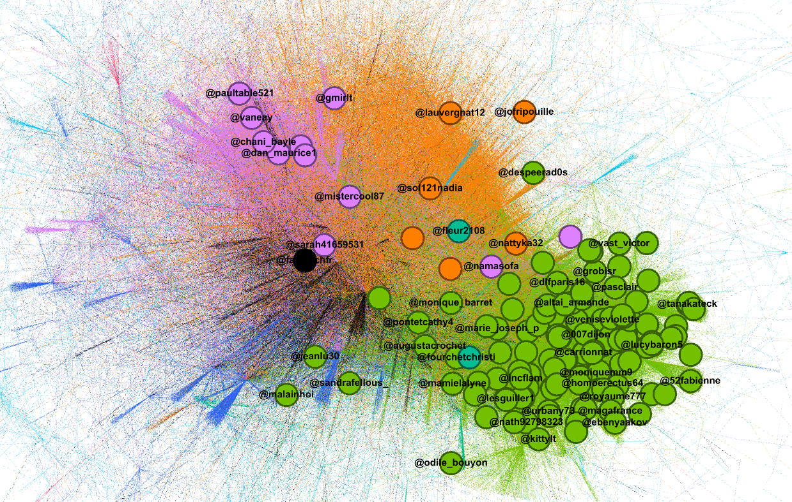
Partie 4 Usurpation de légitimité scientifique
Un mode récurrent d’inauthenticité potentielle apparaît à l’issue du croisement de plusieurs indices convergents, dont le compte @MikaClaFr constitue un cas particulièrement significatif. À l’accès au profil, la plateforme affiche un avertissement indiquant que celui-ci « may include potentially sensitive content ». Le compte se présente comme celui d’un ingénieur diplômé d’établissements d’enseignement supérieur reconnus, revendiquant ainsi un capital scientifique et institutionnel susceptible de conférer une forte légitimité à ses prises de position. Le compte bénéficie par ailleurs du statut de compte vérifié et utilise une photographie de profil présentant, au premier regard, les caractéristiques d’une représentation authentique.
L’analyse de l’activité du compte fait toutefois apparaître un profil comportemental particulièrement polarisé et fortement orienté sur le plan thématique. Avec une fréquence de publication estimée à environ 36 publications quotidiennes, le compte intervient de manière récurrente sur des sujets relevant de controverses politiques et informationnelles : dénonciation des politiques israéliennes, promotion de positions climatosceptiques, interactions avec des comptes associés à des communautés d’extrême droite ou à des écosystèmes informationnels controversés, ainsi que mise en cause récurrente de climatologues. La combinaison de cette forte intensité de publication, de la concentration thématique des prises de position et de la nature des comptes avec lesquels le profil interagit constitue un faisceau d’indices pouvant être rapproché de certaines configurations observées dans des phénomènes d’astroturfing ou d’amplification politique coordonnée. Cette observation ne permet toutefois pas, à elle seule, d’établir la nature inauthentique du compte.
Le contenu de la publication épinglée constitue un indice supplémentaire méritant examen. Celle-ci reproduit une conversation entre l’auteur du compte et le modèle de langage ChatGPT, mobilisée pour soutenir l’idée selon laquelle le CO2 agirait comme un agent refroidissant plutôt que comme un gaz à effet de serre contribuant au réchauffement. Cette utilisation d’un modèle conversationnel comme élément d’autorité dans une controverse scientifique, associée à la revendication d’une expertise en physique et en mathématiques appliquées, apparaît en tension avec le consensus scientifique établi sur le rôle radiatif du CO2. Cette démarche scientifique peu crédible constitue davantage un indice relatif au positionnement informationnel du compte qu’un élément permettant, en lui-même, d’établir son caractère fictif ou inauthentique.
Enfin, la recherche inversée de la photo de profil indique une provenance de l’image depuis un site russophone ; le profil est également associé à d’autres comptes russophones (notamment via VK Video). Ces éléments, conjugués à la persona scientifique, à l’intensité de publication et à l’orientation militante du compte, forment un faisceau d’indices d’inauthenticité. Ils autorisent l’hypothèse d’une inscription dans des logiques de désordre informationnel par la création de faux profils, sans permettre, à eux seuls, d’établir une attribution opérationnelle précise.
Le compte a 212 following pour 891 followers. Parmi les profils vérifiés suggérés, d’autres comptes similaires de persona scientifique diffusant des postures et discours climato-sceptiques, ainsi qu’un militantisme agressif : @Marcorio61O, @FronfredeMichel, @ettourneur, @DoubakL.
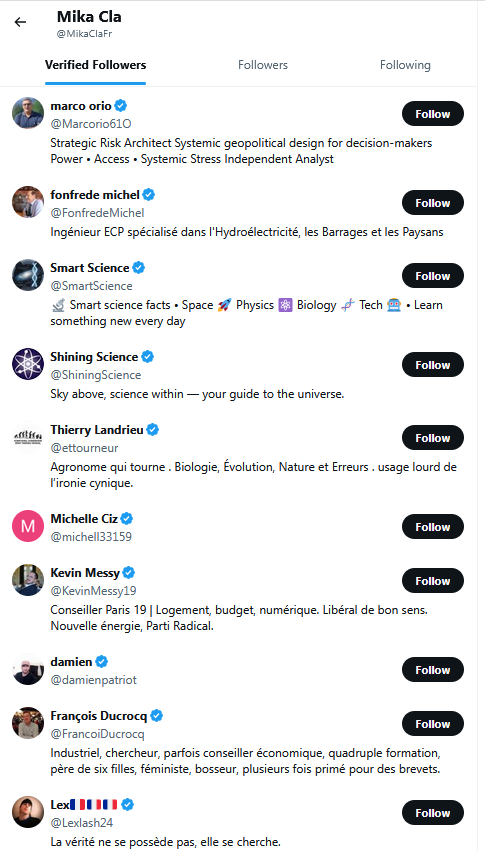
Inscription dans l’écosystème de comptes suspects
Difficile d’estimer la proportion et l’impact de ces comptes, bien qu’ils semblent parfois s’inscrire assez profondément dans l’écosystème du débat : le climatologue Serge Zaka répond aux commentaires de comptes qui s’inscrivent à plusieurs égards à une démarche inauthentique, preuve que l’impact ne se mesure pas seulement au volume, mais à la capacité de solliciter l’autorité scientifique, ou de mobiliser les foules.
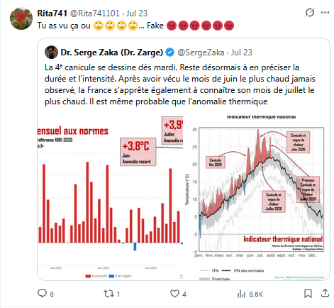
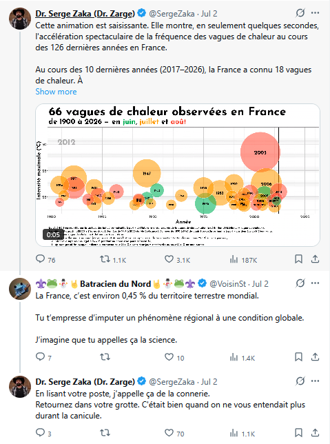
Autres interlocuteurs de Zaka suspects : @ChrRousseau, @VoisinSt, @trump041124.
Conclusion
Cette synthèse a cherché à éclairer le traitement du débat caniculaire sur X (20 mai – 29 juin 2026) à partir d’une lecture croisée des structures communautaires, des discours climatosceptiques et des dynamiques d’amplification.
L’analyse de réseau montre un espace durablement polarisé, structuré autour de blocs antagonistes. La communauté défiante C0 y occupe une place centrale : elle concentre une part majeure des engagements, des discours climatosceptiques repérés via la grille CARDS, et des comptes déjà associés à des logiques d’astroturfing. Cette polarisation ne se réduit pas à une opposition d’opinions ; elle organise aussi des flux d’attaques ciblant médias, experts et climatologues, et des configurations d’engagement atypiques (structures en étoile, comptes périphériques).
La détection computationnelle des portefeuilles de retweets (Nizzoli, top 0,5 %), aboutissant à une liste de 1 316 superspreaders, et l’étude de cas d’usurpation de légitimité scientifique, convergent vers un même constat : certains régimes d’activité combinent intensité de publication, homogénéité politique, coordination apparente et construction de personas crédibles — surtout dans le pôle C0, qui concentre les discours CARDS. Ces éléments constituent des faisceaux d’indices d’inauthenticité potentielle ; ils ne suffisent pas, isolément, à établir le caractère fictif ou manipulatoire de chaque compte.
Au total, le corpus canicule apparaît moins comme un simple débat météorologique que comme un vecteur de contestation où se mêlent alerte climatique, polarisation partisane et tentatives d’amplification.